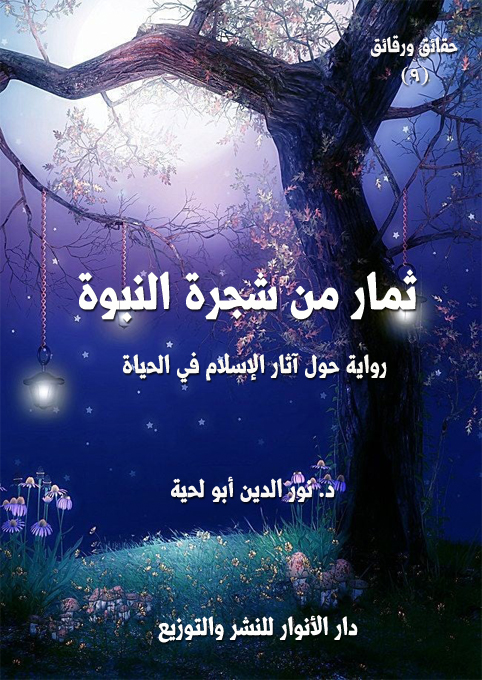

الكتاب: ثمار من شجرة النبوة
المؤلف: أ.د. نور الدين أبو لحية
الناشر: دار الأنوار للنشر والتوزيع
الطبعة: الثانية، 1437 هـ
عدد الصفحات: 514
ISBN: 978-620-2-34448-7
لمطالعة الكتاب من تطبيق مؤلفاتي المجاني وهو أحسن وأيسر: هنا

التعريف بالكتاب
تجري أحداث هذه الرواية بين مبشر مسيحي - هو بطل الرواية، وهو الذي أسلم بعد ذلك، وحكى قصته للمؤلف - ومجموعة من المستشرقين المنصفين الكبار الذين بهرتهم القيم العظيمة التي جاء بها الإسلام، فشهدوا شهادات صادقة كانت أحسن رد على شهادات المجحفين والمناوئين من المبشرين والمستشرقين والمستغربين.
وتدور أحداث الرواية في جامعة السربون وما حولها.. وفيها مقارنات كثيرة بين كل ثمرة جاء بها الإسلام من خلال مصادره المقدسة، والثمار التي جاءت بها سائر الأديان والمذاهب السماوية أو الوضعية.
ثمار من شجرة النبوة (8)
تنطلق هذه الرواية من مقولة للمسيح عليه السلام في إنجيل متى (15:7 - 17) يقول فيها: (احترزوا من الأنبياء الكذبة، يأتونكم بثياب الحملان الوديعة، ولكنهم من الداخل ذئاب خاطفة.. من ثمارهم تعرفونهم، هل تجتنون من الشوك عنبا، أو من الحسك تينا.. هكذا كل شجرة جيدة تصنع أثمارا جيدة، وأما الشجرة الردية فتصنع أثمارا ردية)
ولذلك هي تخاطب بالدرجة الأولى من يجمعون بين الإيمان بهذه المقولة، وبين جحود رسالة رسول الله صلى الله عليه وآله وسلم.. ذلك أنه يستحيل على رجل أمي في بيئة بدوية بعيدة عن كل منتجات الحضارة أن يخرج دينا ممتلئا بالقيم وبكل معاني الخلاص التي كانت تنتظرها البشرية، ولا زالت تتعطش إليها.
وهي تخاطب كذلك كل صاحب عقل سليم، ليجري مقارنة شاملة بين الثمار التي جاء بها رسول الله صلى الله عليه وآله وسلم والثمار التي تفتخر بها سائر الأديان.. ليخرج من تلك المقارنة - على الأقل - بأن هذا الدين يحتاج إلى مزيد بحث وتأمل، وأنه لا يصح أن يستعجل العاقل في الحكم عليه ابتداء.
وبناء على هذا الهدف كانت أحداث هذه الرواية.. والتي تجري بين مبشر مسيحي - هو بطل الرواية، وهو الذي أسلم بعد ذلك، وحكى قصته للمؤلف – ومجموعة من المستشرقين المنصفين الكبار الذين بهرتهم القيم العظيمة التي جاء بها الإسلام، فشهدوا شهادات صادقة كانت أحسن رد على شهادات المجحفين والمناوئين من المبشرين والمستشرقين والمستغربين.
وتدور أحداث الرواية في جامعة السربون وما حولها.. وفيها مقارنات كثيرة بين كل ثمرة جاء بها الإسلام من خلال مصادره المقدسة، والثمار التي جاءت بها سائر الأديان والمذاهب السماوية أو الوضعية.
ثمار من شجرة النبوة (9)
وهي تقر في نفس الوقت بالتخلف الذي حصل للمسلمين، والانحرافات التي شوهتهم، وشوهت دينهم.. ولكنها في نفس الوقت تقر بأن بذور الخير لا تزال في هذه الأمة ما دامت مصادرها المقدسة محفوظة.. ولذلك يمكنها أن تسترد حقيقتها، وأن تعود لأداء دورها الرسالي الذي كلفت به.
ومن أهداف الرواية أيضا إخراج القارئ من تلك التعميمات المجحفة التي ترمي جميع المستشرقين بالعمالة وعدم العلمية والنوايا الخبيثة.. بل هي تصنفهم بحسب أعمالهم وأفكارهم.. فمنهم المنصفون.. كالأبطال العشرة لهذه الرواية.. ومنهم غيرهم، والذين لم نهتم في الرواية بذكر أسمائهم.. لأن هدفنا منها هو بيان الثمار العظيمة التي جاء بها رسول الله صلى الله عليه وآله وسلم.. والتي لم تر البشرية ثمارا مثلها في تاريخها الطويل.
وقد قسمناها – كأخواتها من الروايات – إلى عشرة فصول.. كل فصل منها يتناول ثمرة من الثمار:
وهي تبدأ بثمرة الخلاص التي جاء بها الإسلام لينقذ البشرية من الانهيارات التي مرت بها، وكادت تقضي عليها..
ثم بثمرة صمود هذا الدين ومصادره المقدسة رغم الحروب الكثيرة التي شنت عليه.
ثم بثمرة القيم الأخلاقية التي جاء بها، لا كمعان نظرية فقط، بل كتشريعات عملية لا يزال صدى الكثير منها موجودا في الواقع الإسلامي رغم انحرافه.
ثم بثمرة إنسانية الإسلام، وحفاظه على حقيقة الإنسان، وحقوقه مقارنة بغيره من الأديان والمذاهب.
ثم بثمرة روحانيته وتطلعه إلى المعارف السامية المرتبطة بحقائق الوجود الكبرى.
ثم بثمرة سلامه الشامل للكون والإنسان والحياة.
ثم بثمرة النظام العادل الذي دعا إليه..
ثمار من شجرة النبوة (10)
ثم بثمرة العلوم التي جاء بها، ودعا إليها، ووضع المنهج المثالي للتوصل إليها.
ثم بثمرة الفنون والجماليات التي شجع عليها.
ثم بثمرة الحضارة التي تحافظ على رفاه الإنسان، وفي نفس الوقت تحافظ على إنسانيته.
هذه هي الفصول العشرة التي تتشكل منها الرواية، وفي كل فصل منها يلتقي بطل الرواية مستشرقا من المسشترقين ليبرهين له على كل واحد منها.
وهي – كما تحاول أن تغرس الأمل في قلوب المؤمنين بهذا الدين – إلا أنها تحذرهم من الاغترار بمجرد الانتساب إليه.. فهذا الدين هو القيم التي جاء بها.. ولا يمثله إلا من امتلأ بتلك القيم، وسار بها في الناس.. أما من شوهها، فلا يصدق عليه سوى قوله تعالى: {وَهُمْ يَنْهَوْنَ عَنْهُ وَيَنْأَوْنَ عَنْهُ وَإِنْ يُهْلِكُونَ إِلَّا أَنْفُسَهُمْ وَمَا يَشْعُرُونَ} [الأنعام: 26]، وقوله تعالى: {فَخَلَفَ مِنْ بَعْدِهِمْ خَلْفٌ وَرِثُوا الْكِتَابَ يَأْخُذُونَ عَرَضَ هَذَا الْأَدْنَى وَيَقُولُونَ سَيُغْفَرُ لَنَا وَإِنْ يَأْتِهِمْ عَرَضٌ مِثْلُهُ يَأْخُذُوهُ أَلَمْ يُؤْخَذْ عَلَيْهِمْ مِيثَاقُ الْكِتَابِ أَنْ لَا يَقُولُوا عَلَى اللَّهِ إِلَّا الْحَقَّ وَدَرَسُوا مَا فِيهِ وَالدَّارُ الْآخِرَةُ خَيْرٌ لِلَّذِينَ يَتَّقُونَ أَفَلَا تَعْقِلُونَ} [الأعراف: 169]
وأحب أن أذكر في الأخير أن هذه الطبعة الجديدة تتميز باختصارها مقارنة بالطبعة السابقة، فقد حذفت الكثير من التفاصيل التي قد تجهد القارئ العادي في فهمها أو الاستفادة منها.
ثمار من شجرة النبوة (11)
لا أخفي عليكم أني كنت ـ قبل أن أسمع الحكاية التي سأحكيها لكم ـ أحمل مستنقعا من العقد التي نشرتها في نفسي أوهام النقص التي كنت أحملها، والتي لم يستطع ذلك الإيمان الوراثي أن ينزعها مني.
لقد كنت أنظر بأسف إلى الأمة الإسلامية التي تمثل أعظم رسول في الدنيا، وأكمل رسالة نزلت إلى الأرض، نظرة ممتلئة بالازدراء والاحتقار.
فهي أمة متخلفة في جميع الميادين.. بينما غيرها يتقدم في جميع الميادين:
هي متخلفة في السياسة، تحاول أن تقلد حرية الغرب وديمقراطيته، ولكنها لا تستطيع أن تتخلى عن مواريث الاستبداد التي تملكتها، فلذلك تنشئ ديمقراطيات مشوهة تحفظ لها استبدادها وقمعها وتسلطها وقوانين الطوارئ التي ظلت تفرضها منذ ولد الملك العضوض.
وهي متخلفة اقتصاديا.. بل ليس هناك في العالم من هو متخلف مثلها في هذا الميدان.. لقد من الله عليها بثروات يسيل لها لعاب العالم، وبمواقع استراتيجية تحسد عليها، ولكنها تأبى إلا أن تسلم جميع ثرواتها ـ مقابل متاع زهيد ـ لمن يكيلونها أصناف العذاب، بل هي تقيم المسابقات بينهم، فمن كان أكثر عداوة لها، كان أكثر تنعما بخيراتها.
وهي متخلفة اجتماعيا، لا تزال تنخر فيها العنصريات التي جاء الإسلام ليقمعها، ومعها الأعراف البائدة التي وجدت من فتاوى الفقهاء من يبررها، بل يجد لها من الأسانيد الواهية ما يحولها أصلا من الأصول، وشريعة من الشرائع.
ثمار من شجرة النبوة (12)
وهي متخلفة فوق ذلك دينيا.. لا تزال الفرقة تشتت شملها.. ولا يزال التعصب للرجال يشغلها عن نبيها.. ولا يزال الاهتمام بالجزئيات والحرفيات والطقوس يشغلها عن كليات هذا الدين ومقاصده وحقائقه.
والخطر الأكبر من ذلك كله هو جهلها بتخلفها، أو حبها لتخلفها:
فساستها يناوئون كل إبداع، ويفرضون عليه من قوانين الطوارئ، ما يجعل من بلادنا جميعا معتقلا كبيرا، أو سجنا عريضا، أو زنزانة ضخمة لا يتنعم بعذابها إلا المبدعون الصادقون.
والكثير من فقهائها أو المشهور منهم يقف مع ساستها ليبرر تصرفاتهم، فهم ظل الله في أرضه، والله يؤتي ملكه من يشاء، ومن لم يطع سلطان الأرض لم ينل سلطان السماء.
أما عامتهم، فهمهم أن تملأ بطونهم، فهم لا يهتمون بشيء كما يهتمون بأصناف الغذاء، وكتب الطبخ، وموائد الولائم.. فإن انصرف اهتمامهم للدين لم يجدوا إلا الرقاة، ومفسري الأحلام، والمتشبثين بالخرافة والشعوذة.
هذه هي النظرة التي كنت أنظر بها إلى الأمة.. وكنت أتألم بسببها، وأحيانا أصيح مع ذلك الشاعر الذي كان يردد بألم قائلا: (هذه الأمة ماتت والسلام) (1)
كانت تراودني ذلك الصباح ـ كما كانت تراودني كل حين ـ هذه الخواطر..
__________
(1) من قصيدة للشاعر أحمد مطر بعنوان (عملاء)، يقول فيها:
الملايين على الجوع تنام، وعلى الخوف تنام، وعلى الصمت تنام، والملايين التي تصرف من جيب النيام، تتهاوى فوقهم سيل بنادق، ومشانق، وقرارات اتهام، كلما نادوا بتقطيع ذراعي كل سارق، وبتوفير الطعام.
عرضنا يهتك فوق الطرقات، وحماة العرض أولاد حرام، نهضوا بعد السبات، يبسطون البسط الحمراء من فيض دمانا، تحت أقدام السلام.
أرضنا تصغر عاما بعد عام، وحماة الأرض أبناء السماء، عملاء، لا بهم زلزلة الأرض ولا في وجههم قطرة ماء، كلما ضاقت الأرض، أفادونا بتوسيع الكلام، حول جدوى القرفصاء، وأبادوا بعضنا من أجل تخفيف الزحام.
آه لو يجدي الكلام.. آه لو يجدي الكلام.. آه لو يجدي الكلام.. هذه الأمة ماتت والسلام.
ثمار من شجرة النبوة (13)
وكيف لا تراودني، وأنا أتغذى عليها في اليوم عشر مرات.. ففي كل نشرة أخبار لا أسمع إلا أخبار قومي الذين ينتشرون من المشرق إلى المغرب.. وفي كل نشرة أخبار لا يقتل إلا قومي، ولا يقهر إلا قومي، ولا يموت من الجوع إلا قومي.
ولست الوحيد في تلك الآلام.. بل كل من أراه كان يتألم ألمي.. ومنهم من كان يود أن ينسلخ من جلده، ليتحول فرنسيا أو إنجليزيا أو ألمانيا.. فإذا لم يطق ذلك حاول أن يلوي لسانه لينطق بما حفظه من الأفلام الأجنبية، ثم يلبس ما رآه من ألبستها، ويسير في الشوراع كما يسيرون، ويصفر ويصفق كما يصفرون، وكما يصفقون.
في ذلك الصباح.. وبذلك العقل المتألم، وبتلك النفس المملوءة خجلا، سمعت طرق الباب.. فرحت أهرع إليه لأفتحه.. وبمجرد فتحه دخل رجل غريب ممتلئ بالأنوار، قاصدا البيت الذي تعود أن يزورني فيه الغرباء، وكأن له به معرفة، وكأنه معي على ميعاد.
دخل مسرعا، وخلع حذاءه، ثم استلقى على قفاه، وراح يقول:: هيا أسرع بالفطور.. فالجوع يعصر بطني.. لم أصل إليك إلا بمشقة وعسر.
تعجبت من هذا الغريب الذي لم يستأذن.. لكني رجوت أن يكون مثل من سبقه من الغرباء الذين ملأوا قلبي بالأشعة الجميلة من شمسه صلى الله عليه وآله وسلم.
لذلك أسرعت إلى المطبخ أبحث له عن الطعام الذي طلبه.. لكني لم أجد إلا حبات تمر، وكوب لبن، وكسرة خبز.. فرحت أقدمها له، وجبيني يتقطر حياء، وأنا أقول له: اعذرني.. فهذا ما تعودنا على أكله، فأرجو أن تتحمل حياتنا البسيطة، فنحن لا نزال نعيش الحياة البدائية.
اعتدل في جلسته، ثم ابتسم، وقال: أليست هذه هي الحياة التي كان يعيشها رسول الله صلى الله عليه وآله وسلم؟.. ألم يكن رسول الله صلى الله عليه وآله وسلم يأكل التمر، ويشرب اللبن، ويأكل مثل هذه الكسر التي تأكلونها؟
قلت: بلى.. ولكن الحياة تطورت الآن، وللأسف، فقد تخلف قومي عنها.. تخلفوا بأميال كثيرة، وسنوات طويلة، وقد استبد بهم اليأس، فتوقفوا عن السير، واكتفوا بالتفرج على السائرين.
ثمار من شجرة النبوة (14)
قال: ومن هم السائرون الذين وقف قومك يتفرجون عليهم؟
قلت: أولئك الذين يسكنون وراء البحار.. أليسوا هم رواد الحضارة وأساتذتها؟
أليسوا هم الذي اخترعوا جميع قيم الحياة الجميلة، وما تحتاجه الحياة الجميلة؟
فهم الذين اخترعوا التلفزيون والحواسيب والشبكات العنكبوتية.. وهم الذين اخترعوا الطائرات والسيارات والقطارات وجميع وسائل النقل.. وهم الذين صمموا الأنبية الضخمة وناطحات السحاب.. وهم الذين اكتشفوا أعماق البحار، وقمم الجبال، بل راحوا إلى الأفلاك من حولهم يزورونها ويقيمون العلاقات معها.
قال: تقصد قومي؟
قلت: أأنت منهم.. أجئتني من وراء البحار؟
قال: نعم.. وأنا أعرفهم جيدا.. وأعرف الحياة التي يعيشونها..
قلت: إن حياتهم المميزة تجعلنا نشعر بالعقد الكثيرة.
قال: الحياة ليست ذلك فقط.. الحياة أعمق من ذلك بكثير.. ولو تأملت حياة كثير من الحيوانات لوجدت لديها من الاختراعات ما يوازي بالنسبة لها جميع ما صنعه من ذكرت، وراحوا يفخرون على العالم بصنعه.
قلت: وحق لهم أن يفخروا.
قال: بم يفخر المساكين؟
قلت: بما نراه من اختراعات واكتشافات..
تنفس الصعداء، ثم قال: نعم هم الذين اخترعوا التلفزيون.. لكنهم لم يجدوا ما يملأونه به، فراحوا ـ بعقولهم المملوءة بالشهوات ـ يجعلونه ماخورا من مواخير الرذيلة، وحانة من حانات الفساد.
وهم الذين أنشأوا الشبكات العنكبوتية التي تحول العالم قرية صغيرة تربط بين أطراف
ثمار من شجرة النبوة (15)
الأرض.. ولكن المساكين لم يجدوا إلا أن يعمقوا بهذه الشبكات ما سبق للتلفزيون والفيديو البدء به.
وهم الذين اخترعوا جميع وسائل النقل.. ولكنهم ملأوا الأرض بسببها تلوثا، وملأوا الطرقات جثثا.
وهم الذين اخترعوا الأشياء الكثيرة.. ولكنهم لم يأخذوا من الأشياء إلا ذلك الجانب المظلم منها..
شرد ذهنه قليلا، كأنه ينظر إلى شيء مجهول لا أراه، ثم قال: ولم لا تذكر ما فعله قومي بالعباد والبلاد من أنواع الفساد؟
هل يستطيع أحد في الدنيا أن يعد من قتله قومي في قرن واحد؟
وهل يستطيع أحد في الدنيا أن يعرف مقدار الدمار الذي تختزنه أنواع الأسلحة المخبأة في سراديب الأرض، وأعماق المحيطات؟
وهل يستطيع أحد في الدنيا أن يسأل ذرات الجو، وقطرات المياه، وحبيبات التربة، وأنواع الحيوانات عن الجرائم التي ارتكبها قومي في حقها، والتي لم يسمع بها أحد، ولم يرها أحد؟
نعم.. ربما يكون قومي هم الذي أنشأوا هذه الأشياء الكثيرة التي تراها جميلة.. ولكنهم هم.. هم أنفسهم.. الذين أنشأوا بسببها من الدمار أضعاف ما يوازي منافعها.
قلت: أنت تريد أن تجرد قومك من كل مكرمة.
قاطعني بحزن قائلا: لأنه ليس لديهم أي مكرمة.. لقد بحثت في بطون التواريخ، فلم أجد في تواريخهم غير سفك الدماء، واللعب بالأعراض، والتجارة بالإنسان.
قلت: فقومي مثل قومك إذن.. وأنت تختزن من عقد النقص ما أختزنه!؟
قال: وضعكم مختلف تماما.. لقد أتيح لكم أن تعيشوا تحت ظلال شجرة النبوة، وقد أمدتكم تلك الشجرة المباركة بثمارها اليانعة، فلذلك لم تجوعوا جوعنا، ولم تظمأوا ظمأنا، ولم
ثمار من شجرة النبوة (16)
تحرقكم أشعة الشمس التي أحرقتنا، ولم تلهب شهواتكم شياطين الشهوات التي ابتلعتنا.
قلت: ولكننا متخلفون.
قال: ولولا تلك الشجرة لكنتم معدومون..
ثم استأنف قائلا: نعم أنتم متخلفون.. ولكن ليس عن قومي، وإنما عن نبيكم، وعن الصالحين الذين تربوا على يديه، وشربوا من منبعه..
أما قومي، فلا حرج عليكم أن تتخلفوا عنهم، لأنكم إن لحقتموهم لم تجدوا إلا السراب الذي يحسبه الظمآن ماء، فإذا جاءه لم يجده شيئا.
هكذا قومي.. يلهثون وراء السراب.. ويظلون يلهثون، ثم لا يجدون الماء العذب الذي يسقيهم، ويبل السغب الذي يحرق أجوافهم.. لأن الماء لديكم أنتم.. أنتم وحدكم في هذه الأرض الذين تملكون الماء العذب الذي يروي كل عطش.
قلت: ولكننا عطشى مثلكم.. ونحن الذين ننحني أمام قومك ليسقونا.
قال: تلك غفلة دبت إليكم.. وهي من الجرائم التي ارتكبها قومي نحوكم.
قلت: وما علاقة قومك بذلك؟.. أراك تنسب إليهم كل فساد.
قال: منذ اليوم الأول الذي نبتت فيه شجرة النبوة، وقومي يحاولون استئصالها، فلما لم يطيقوا حاولوا شنق الثمار التي تنتجها.
قلت: لست أفهم سر شجرة النبوة التي تتحدث عنها، وعلاقة قومي وقومك بها.
قال: كنت مثلك أجهل هذه الشجرة.. ولا أعرف قيمتها إلى أن هداني الله إليها، فعرفتها، وعرفت المعاول التي توجهت لتقطعها، والنيران التي توجهت لتحرقها.
قلت: فهل ستحدثني حديثها؟
قال: أجل.. فلم أعاني المشقات في رحلتي إليك إلا لأحدثك حديثها.. فهات قلمك ودواتك وقراطيسك لأحكيها لك.
ثمار من شجرة النبوة (17)
-\--\-
بعد أن أكمل الغريب فطوره، وحمد الله، وصلى على نبيه صلى الله عليه وآله وسلم مستغرقا في كل ذلك، ممتلئا خشوعا، رمى ببصره إلى الأفق البعيد، ثم قال:
في ذلك اليوم من أيام الشتاء الباردة سرت إلى مدينة تمتلئ بالحضارة والثقافة والعلوم، لأذهب إلى جامعة من جامعاتها التي اشتهرت بتخريج المستشرقين.
قلت: لا شك أنك تقصد باريس، وتقصد جامعة السربون.
قال: أجل.. لقد كنت حينها ممتلئا إعجابا بما أنشأه قومي من حضارة، كانت روحي تسجد أمام كل عمارة، وتتمسح بكل جسر، وتصافح كل تمثال، وتقبل كل لوحة.
لقد كنت أنظر إلى الأشياء الكثيرة التي أمامي، فلا أرى فيها غير الجمال.. الجمال الذي يصيح بكل ألوان العذوبة.
لست أدري كيف خطر على بالي أن أذهب إلى برج إيفل، وفي الحديقة التي تحيط به جلست على كرسي أتأمل ذلك الجمال الذي ينطق به هذا البرج.
خطر على بالي حينها صاحبك معلم السلام.. وتساءلت بيني وبين نفسي: هل رأى هذا البرج؟.. وهل رأى قبله ثمار الحضارة التي تنعمنا ـ معشر أهل الغرب ـ بها؟
ما استتم هذا الخاطر في ذهني حتى التفت إلى جانبي، فإذا به يجلس بجانبي يحدق إليه كما أحدق، ولكني لم أر في وجهه من الانبهار ما رأيت في وجهي.
صافحته بحرارة قائلا: ها نحن نلتقي أخيرا في باريس.. كيف خطر على بالك أن تأتي إلى هذا الموضع؟
قال: لقد أردت أن أرى بعض ثمار الشجرة التي أسست هذه الحضارة؟
قلت: إنها ثمار يانعة ممتلئة طيبة.. أم أنك تخالفني في ذلك؟
قال: لا أخالفك.. ولا أوافقك.. أحيانا قد تكون الثمار يانعة، طيبة المذاق، حلوة الرائحة،
ثمار من شجرة النبوة (18)
جميلة المنظر، ولكنها تختزن السم الزعاف.
قلت: ما الذي تقوله؟
قال: ألست ترى القتلة المجرمين إذا دسوا سما دسوه في أطيب الأطعمة وألذها؟
قلت: أجل.. حتى تغري الآكلين بأكلها.
قال: فإذا أكلوها سقتهم الموت؟
قلت: ذلك عندما يكون الطعام سما.
قال: كل طعام قد يكون سما، وقد يختزن سما.
قلت: لا يزال الشك الذي اعتراك في الكتاب المقدس يعتريك في الطعام أيضا.
قال: لقد ذكرت لك أني لا أتيقن حتى أشك، ولا أطمئن حتى أضطرب.
قلت: لقد سمعت بأسوار الكلمات المقدسة التي تضع في القلب اليقين بمصدرها الإلهي.. فهل هناك أسوار للثمار الطيبة تفرق بينها وبين الثمار الخبيثة.
قال: أجل.. وسأضرب لك مثالا يوضح لك هذه الأسوار، ويقربها لعقلك:
أرأيت لو أن بك مرضا يمنع جسدك من ثمار معينة، فراح بعض الناس يغريك بكل صنوف الإغراء لتأكلها، ويتفنن في تزيينها لك بكل ما أتيح له من قدرات التزيين.. هل ترى هذا ناصحا لك؟
قلت: هذا لا يريد إلا قتلي.. ولكنه لم يرد أن يلطخ يداه بقتلي، فراح يقتلني بيدي، وببطني، ويستعمل ما ملئت به نفسي من شهوات ليسقيها السم الزعاف.. إن هذا مجرم لا ناصح.
قال: ولكن الناس عندما يرونه لا يرونه إلا ناصحا متملقا في نصحه.
قلت: هم لا يرون ما أرى.. ولا يعيشون ما أعيش.
قال: فهذا هو الحصن الأول للثمار الطيبة.
قلت: لم أفهم..
ثمار من شجرة النبوة (19)
قال: الثمار الطيبة ثمار تناسب الإنسان، وكأنها صنعت خصيصا من أجل الإنسان، وأول ما تبحث عنه هذه الثمار هو مصلحة الإنسان.
قلت: فما الحصن الثاني؟
قال: أرأيت لو جلست في قاعة امتحان يرتبط بها مصيرك.. مصيرك العلمي، ومصيرك الوظيفي.. فجاء بعض الناس، وشغلك بثمار كثيرة بهيجة المنظر حلوة المذاق، تصيح بكل لسان، وتدعوك بكل أسلوب، فانشغلت بها عن امتحانك.. أترى من قدمها لك ناصحا؟
قلت: كلا.. فهذا لا يختلف عن ذاك.. كلاهما لا يريد إلا هلاكي.
قال: ولكنك لن تموت بأكل هذه الثمرة الأخيرة.
قلت: ولكني سأحيا حياة أشبه بالموت.
قال: فهذا هو الحصن الثاني.
قلت: لم أفهم ما ترمي إليه.
قال: كل ثمرة تبعدك عن الوظائف التي أنيطت بها حياتك، أو الرسائل التي كلفت بتبليغها ثمرة سامة، وإن بدت لك حلوة، هي كالشيطان الذي يتزين بكل صنوف الزينة ليجذبك إليه.
قلت: فهل هناك حصون أخرى؟
قال: لا.. هناك حصنان فقط.. بهما تعرف طيبة الثمار من خبثها.
قلت: فهل طبقت هذا على ما أنتجته حضارتنا؟
قال: أجل.. ولكني للأسف.. لم أجد بعد جهد مضن إلا الثمار الخبيثة، وقلما أظفر بثمرة طيبة.
قلت: كيف ذلك؟
قال: انظر إلى كل من حولك بعين الحقائق لا بعين الشهوات، وسترى ما لم تكن ترى،
ثمار من شجرة النبوة (20)
وتسمع ما لم تكن تسمع.
التفت لأرى ما لم أكن أرى، وأسمع ما لم أكن أسمع.. فإذا به يبتعد عني من غير أن أشعر.
أسرعت إليه، وقلت: إلى أين تذهب، وتدعني!؟
قال: أنا أبحث عن الثمار الطيبة لأكتشف من خلالها الشجرة الطيبة.
قلت: فإذا عرفت الشجرة الطيبة، فما يغنيك معرفتك لها؟
قال: أبحث عمن زرعها.
قلت: فإذا عرفته؟
قال: إذا عرفته جعلته إمامي الذي به أأتم، وقدوتي التي بها أقتدي، ولم أتناول ثمرا إلا من يديه.
-\--\-
بعد أن تركني وسار، حاولت أن أقترب أكثر من تلك الجموع لأرى ما لم أكن أرى، وأسمع ما لم أكن أسمع، فرأيت، وسمعت ما ملأ نفسي بالغثاء..
لقد تخيلت نفسي في حضيرة حيوانات لا هم لها إلا العلف الذي تعلفه، والحياة البهيمية التي لا تعيش إلا من أجلها..
-\--\-
عند باب جامعة السربون، رأيت رجلا لاح لي من مظهره أنه رجل دين، بل يظهر من مظهره أن له مكانة في الكنيسة، ولكني تعجبت منه إذ رأيته يرمي صليبه الذي كان يطوق رقبته، ويرتمي على الأرض ساجدا، يبلل الأرض بدموعه.
اقتربت منه لأسمع ما يقول، واقترب جمع من الناس نحوه كما اقتربت.
كانت الدموع تحول دون فهم الجمع لما يقول، فلذا تصوروه مجنونا، فانصرفوا عنه، أما أنا، فقد وعيت كل كلمة نطق بها.
ثمار من شجرة النبوة (21)
لقد كان يردد ما قاله المسيح في إنجيل متى (15:7 - 17): (احترزوا من الأنبياء الكذبة يأتونكم بثياب الحملان الوديعة، ولكنهم من الداخل ذئاب خاطفة.. من ثمارهم تعرفونهم، هل تجتنون من الشوك عنبا، أو من الحسك تينا.. هكذا كل شجرة جيدة تصنع أثمارا جيدة، وأما الشجرة الردية فتصنع أثمارا ردية)
عندما قام من سجوده، اقتربت منه، وحييته، وقلت: لقد رأيتك تفعل عجبا حيرني.. أنت تسجد سجود المسلمين، ثم تقرأ في سجودك إنجيلنا نحن المسيحيين، فهل أنت مسلم أم مسيحي؟
قال: أنا مسلم مسيحي.. أو مسيحي مسلم..
قلت: لا يمكن أن تخلط بين الأديان، فالمسلمون لا يقبلون مسيحيا يظل على مسيحيته، والمسيحيون لا يقبلون مسلما يظل على إسلامه.
قال: لقد كنت مسيحيا خالصا، بل مسيحيا متعصبا.. ولكني الآن تحولت إلى المسيحية الحقيقية التي جاء المسيح يبشر بها.
قلت: فما هي هذه المسيحية؟.. وكيف وصلت إليها؟
قال: لقد ظللت سنة في هذه الجامعة.. أستمع من علمائها: الصديق منهم والعدو.. ورحت أقارن كل ما أسمعه عن الإسلام بما في سائر الأديان والمذاهب والأفكار.. وقد كانت خلاصتي تفكيري ما رأيته الآن..
ثم التفت إلي، وقال: لقد كنت سائرا الآن لألقي موعظة في حفل من الناس دعوني لأذكر لهم ثمرات المسيحية في الدين والحياة.. وكنت أحمل الكتاب المقدس.. وأقلب طرفي في ذلك السور المنيع الذي وصفه المسيح للنبوة الصادقة.
قلت: تقصد سور الثمرات.
قال: أجل.. من أراد أن يعرف النبي الصادق من الكاذب، فلينظر إلى تعاليمه، وإلى ثمار
ثمار من شجرة النبوة (22)
تعاليمه؟
قلت: فهل وجدت في ثمار محمد ما دلك على صدق نبوته؟
قال: أجل..
قلت: فما وجدت؟
قال: لا يمكنني أن أعبر لك عن كل ما وجدت.. لقد طبقت قول المسيح: (لا تقدر شجرة جيدة أن تصنع أثمارا ردية، ولا شجرة ردية أن تصنع أثمارا جيدة، كل شجرة لا تصنع ثمرا جيدا تقطع وتلقى في النار، فإذن من ثمارهم تعرفونهم) (متى: 18:7 - 20) على جميع ما أعرفه من المذاهب والأديان، فلم أجد شجرة طيبة إلا شجرة محمد..
فما عرفت ذلك حتى سجدت.. ورحت أترنم بالنص المقدس الذي سمعته من المسيح.. والذي جعله الله سبب هدايتي.
قال ذلك، ثم استمر سائرا من غير أن يسألني عني، قلت له: إلى أين؟
قال: لقد تأخرت.. والجماعة تنتظرني.
قلت: لكنك قد غيرت رأيك.
قال: بل صححت رأيي.. إن أعظم ثمرة للمسيح هي دلالتنا على محمد.. ولذلك.. فإن كل ثمرات محمد ثمرات للمسيح.
هؤلاء كلهم أنبياء.. ولا أحد منهم ينازع الآخر، أو يصارعه.. الصراع لا تجده إلا عندنا..
قال ذلك ثم انصرف.. والبسمة تملأ محياه.
-\--\-
بعد هذه المواقف التي كانت توجهني وجهة واحدة.. وكأنها تحثني على الاستعداد العقلي والنفسي لتلقي هذا النوع من الأشعة.. ذهبت إلى جامعة السربون، وهناك طلبت مقابلة مدير الجامعة، الذي رحب بي غاية الترحيب.. ثم دار بيننا هذا الحوار الذي حاول من خلاله أن يبين
ثمار من شجرة النبوة (23)
لي الوظيفة التي تنتظرني في هذه الجامعة.
قال: لقد تعودت أن أستقبل كل من ترسله الكنيسة بنفسي..
قلت: لم تكلف نفسك هذا مع كثرة أشغالك؟
قال: بالإضافة إلى احترامي العظيم للكنيسة ورجال الكنيسة، هناك سببان يدعواني لهذا الاهتمام:
أما أولهما، فلأن ما أقوله لرجال الدين الذين يشرفون مكتبي هذا يكاد يكون سرا لا ينبغي أن يسمع به أحد.
وأما الثاني، فلأني لا أجد فيمن أراهم معي من يحملون العزيمة التي أحملها، والتي تجعلهم يبلغون الرسالة كما ينبغي.
قلت: فكلي آذان صاغية، فحدثني عن الرسالة التي تريد أن تبلغني إياها.
قال: قبل أن أحدثك عن تلك الرسالة.. والتي جعلتنا نطلبك، أو نطلب بالأحرى من له من القدرات العلمية واللغوية ما لك.. أريد أن أحدثك عن علاقة هذه الجامعة بالدين.. أو بالأحرى علاقة التبشير بالاستشراق.
هذه الجامعة ـ كما تعلم ـ جامعة تهتم بالدراسات الشرقية، أو بالخصوص الدراسات المهتمة بالإسلام.. وهي تحمل في الظاهر لواء العلمية والموضوعية، ولكنها في نفس الوقت تحمل نفس اللواء الذي يحمله المبشرون..
التفت إلي مبتسما، وقال: أنتم تبشرون بالمسيح، ونحن نقرب المسلمين لكم لتبشروهم بالمسيح.. فنحن نقوم بعمل متكامل.
قام من مجلسه، وقال: ربما لم تفهمني جيدا، وربما فهمتني فهما خاطئا، ولذلك سأوضح لك أكثر.
في البداية.. لم يكن هناك استشراق..
ثمار من شجرة النبوة (24)
ابتسمت، وقلت: في البداية لم يكن أي شيء.. ليس الاستشراق وحده.
نظر إلي، وقال: لم تفهمني.. لم أقصد ما فهمته.. حاول أن تركز معي.
ركزت معه كما طلب مني.
كان يحاول أن يقول أشياء كثيرة، وكنت أشعر أنه كان يستحي من ذكرها، ولكنه كان مضطرا لقولها، فلذلك كان يبدوا مضطربا ينحرف ذات اليمين وذات الشمال ليعبر عما يريد أن يوصله لي، وهو مع كل ذلك ينظر إلى وجهي بدقة ليحدد مدى استيعابي لما يقوله.
قال: أقصد أن الاستشراق لم يبدأ من هذه الجامعة.. ولا من أي جامعة من جامعات الدنيا.
قلت: فمن أين بدأ؟
قال: من الكنيسة.. لقد كانت البداية الرسمية للاستشراق من الكنيسة.
نظرت إليه متعجبا، فقال: لا تتعجب.. لقد بدأ الاستشراق من مجمع فينا الكنسي سنة 1312 من ميلاد المسيح، فقد أوصى هذا المجمع بإنشاء عدة كراسي للغات، ومنها اللغة العربية، ولا سيما التشريع الحادي عشر الذي قضى فيه البابا (إكليمنس الخامس) بتأسيس كراسي لتدريس العبرية واليونانية والعربية والسريانية والآرامية في الجامعات الرئيسية (1).
وكانت هذه التوصية قائمة على دعوة (ريموند لول) (2) لإنشاء كراسي للغة العربية في
__________
(1) إدوارد سعيد، الاستشراق: المعرفة، السلطة، الإنشاء، ترجمة: كمال أبو ديب، قم: دار الكتاب الإسلامي، 1984 م - ص 328.
(2) ريموند لول (1235 - 1316 م)، إسباني، كان دومينيكيا ثم تحول إلى الفرنسيسكانية، وهو من جزيزة ميورقة، تبنى فكرة السيطرة على الشرق بالتبشير لا بالحروب، ووضع خطة لذلك، وسعى إلى إنشاء مدرسة ميرامار للمنصرين، ثم تواصلت محاولاته لإنشاء مدارس تنصيرية أخرى، ومارس التبشير في شمال إفريقية، وبها توفي، وكان وراء قرار مجمع فينا الكنسي المشهور سنة 1311 - 1312 م، الذي قضى بإنشاء كراسي للغات، ومنها اللغة العربية، من آثاره: رواية تنصيرية، وكتاب المنطق في الحوار مع الكفرة (انظر: عبد الجليل شلبي: الإرساليات التبشيرية: ص 151 - 156)
ثمار من شجرة النبوة (25)
أماكن مختلفة، لقد كان هدفه واضحا من تلك الدعوة..
لقد كان الهدف تبشيريا محضا، ولم يكن له علاقة بالدراسات العلمية المجردة.
نظر إلي ليرى تأثير ما يقوله على وجهي، فلما رآني منصتا مستغرقا في الإنصات أتاح له ذلك حرية الكلام، فقال: منذ ذلك الحين نال الاستشراق رعاية الكنيسة ومباركتها.. وخاصة عندما فشلت الحروب العسكرية من خلال انحسار المد الصليبي بعد جهود قرنين من الزمان.
ولهذا اتجهت الكنيسة الغربية إلى التبشير من خلال الفكر والثقافة والعلم.. فكان التوجه إلى الحرب الفكرية، لتحقق ما فشل فيه سلاح الغزو الحربي.
لقد كان الهدف من هذه الدعوة هو أن تؤتي محاولات التبشير ثمارها بنجاح من خلال تعلم لغات المسلمين، وقد عبر عن هذه الثمار في دعوة (لول) بارتداد العرب إلى المسيحية من الإسلام، كما كان (غريغوري العاشر) يأمل في ارتداد المغول إلى المسيحية، وقبله كان (الإخوة الفرنسيسكان) قد توغلوا في أعماق آسيا يدفعهم حماسهم التبشيري، ومع أن آمالهم لم تتحقق في وقتها إلا أن الروح التبشيرية قد تنامت منذئذ.
وهذا يعني بتعبير أوضح (إقناع المسلمين بلغتهم ببطلان الإسلام، واجتذابهم إلى الدين المسيحي) (1)
سكت قليلا، ثم استأنف قائلا: لقد انتظم الاستشراق في الفاتيكان، وانتشر واستمر على أيدي البابوات والأساقفة والرهبان، فكان رجال الدين، ومجمعهم الفاتيكان يومئذ، يؤلفون الطبقة المتعلمة في أوربا، ولا سبيل إلى إرساء نهضتها إلا على أساس من التراث الإنساني الذي تمثلته الثقافة العربية، فتعلموا العربية، ثم اليونانية، ثم اللغات الشرقية للنفوذ منها إليه.
نظر إلي وتمعن في تأثير كلماته علي، ثم قال: مما يدلك على الصلة العظيمة بين الاستشراق
__________
(1) محمود حمدي زقزوق، الاستشراق والخلفية الفكرية للصراع الحضاري، ط 2، القاهرة: دار المنار، 1409 هـ - 1989 م - ص 35.
ثمار من شجرة النبوة (26)
والتبشير أنه كان هناك فئة مهمة من المستشرقين لم تتورع عن قبول اللقب الديني، أو الرتبة الدينية.. فمنهم (الأب).. ومنهم (الأسقف).. ومنهم (البطريرك).. ومنهم (المطران)
سأضرب لك بعض النماذج عن هؤلاء:
لاشك أنك تعرف الأب آسين بلاثيوس (1871 - 1944 م) الإسباني، ذلك الرجل الذي اشتهر بدراسة حركة التفاعل الثقافي بين الإسلام والمسيحية، والذي كتب عن (مذهب ابن رشد، ولاهوت توما الإكويني)، وعني بـ (محيي الدين بن عربي)، وأجرى (مقارنة بين ابن عباد الرندي ويوحنا الصليبي)، وصنف في (الغزالي والمسيحية)، وكتب في (الآثار الإنجيلية في الأدب الديني الإسلامي) (1)
لقد حاول كل جهده أن يلبس الإسلام ثوب المسيحية، وقد نجح في ذلك، ولا تزال آثاره تتداول.. أتدري من كان؟.. لقد كان أبا مسيحيا.. كان رجل دين قبل أن يكون رجل استشراق.
ومثله الأب أبوجي (1819 - 1895 م) الفرنسي، لقد كان من الرهبان اليسوعيين (2)، وقد صنف كتبا دينية ومدرسية، لقد جمع هذا الرجل الفاضل بين الوظيفتين: وظيفته الدينية ووظيفته العلمية، بل استخدم الوظيفة العلمية في خدمة وظيفته الدينية.
ومثلهما نعمة الله أبو كرم (1851 - 1931 م)، لقد كان من مستشرقي المدرسة المارونية بلبنان، نصب مطرانا، وكان قد تخرج من جامعة القديس يوسف ببيروت، وعاون في تحرير مجلة البشير، ثم عين رئيسا للمدرسة المارونية في رومة، ومستشارا في المجمع الشرقي، ومن آثاره: قسطاس الأحكام في القانون مع مقارنته بما يقابله في الشرع الإسلامي.
ومثلهم الأب يوسف الأشقر (ق 18 م)، لقد كان من مستشرقي المدرسة المارونية بلبنان،
__________
(1) عبد الرحمن بدوي، موسوعة المستشرقين: 121.
(2) اليسوعيون أو الجزويت من الجماعات التبشيرية النشطة، ومؤسسها هو القديس إجناتياس لويولا (1491 - 1559 م)، وكان جنديا إسبانيا، وهي لا تتبع مذهبا معينا، لكنها تعد من المبشرين، انظر: طلال عتريسي: البعثات اليسوعية مهمة إعداد النخبة السياسية في لبنان، دراسة تاريخية وثائقية، بيروت: الوكالة العالمية للتوزيع، 1987 م، ص 28 - 34.
ثمار من شجرة النبوة (27)
ترجم إلى الفرنسية من العربية والسريانية كتبا كثيرة أشهرها سلسلة تواريخ بطاركة الموارنة الأنطاكيين، وقد اعتمد عليه (لي كيين) في كتابه الشرق المسيحي.
كان هناك غيرهم ممن لا يحمل هذه الألقاب.. ولكنه مع ذلك لم يتتلمذ إلا في المدارس اللاهوتية المسيحية أو اليهودية:
منهم أرنست رينان (1823 ـ 1892)، الذي تلقى تعليمه في المدارس اللاهوتية، وتعلم العربية في مدرسة اللغات الشرقية بباريس، وزار المشرق وعاش بلبنان فترة من الزمن، واهتم بالعقيدة الإسلامية.
لاشك أنك تعرف موقفه المشهور من العقل السامي، وأنه لا يصلح لدراسة العلم (1).
ومنهم جورج سيل (1697 - 1736) الذي ولد في لندن، والتحق بالتعليم اللاهوتي.. لقد كان من أبرز أعماله ترجمته لمعاني القرآن التي قدم لها بمقدمة احتوت على كثير من الشبهات الجادة (2).
ومنهم وليام ميور (1819 - 1905).. لقد كان مستشرقا ومبشّرا وموظفا إداريا.. وهو إنجليزي، تعلم العربية في أثناء عمله في الهند واهتم بالتاريخ الإسلامي شارك في أعمال جمعية تنصيرية في الهند.
وقد ألف كتاباً يناصر الجهود التنصيرية بعنوان (شهادة القرآن على الكتب اليهودية والمسيحية).. ومن أهم مؤلفاته كتابه في سيرة محمد في أربعة مجلدات، وكتابه حول الخلافة، كما
__________
(1) وقد ردّ عليه كل من جمال الدين الأفغاني والشيخ محمد عبده في كتابه (الإسلام والنصرانية بين العلم والمدنية)
(2) ومع ذلك يقول عبد الرحمن بدوي عن ترجمته: (ترجمة سيل واضحة ومحكمة معاً، ولهذا راجت رواجاً عظيماً طوال القرن الثامن عشر إذ عنها ترجم القرآن إلى الألمانية عام 1746)، ويقول في موضع آخر: (وكان سيل منصفاً للإسلام برئياً رغم تدينه المسيحي من تعصب المبشرين المسيحيين وأحكامهم السابقة الزائفة) (عبد الرحمن بدوي. موسوعة المستشرقين. (بيروت: دار العلم للملايين) 1984.ص 252).
ثمار من شجرة النبوة (28)
ألف كتاباً حول القرآن بعنوان (القرآن تأليفه وتعاليمه) (1)
وغيرهم كثير..
قلت: فأنت ترى إذن بأن التبشير هو الأصل الحقيقي للاستشراق؟
قال: أجل.. وليس العكس كما يذهب أغلب الباحثين.
قلت: ولكن الاستشراق ليس خاصا بالمسيحيين، فهناك مستشرقون يهود وعلمانيون.. بل وملحدون (2).
قال: بورك كل أولئك المستشرقين.. ولا يهمنا من يكونون ما دمنا نتفق على نفس الهدف..
قلت: أتبارك الملحدين واللادينيين؟
قال: لم أباركهم أنا.. أنتم الذين باركتموهم.. الكنيسة هي التي تبارك كل من يقف في وجه الإسلام.. ولا يهمها من يكون، ولا ما يرتدي.
قلت: سمعت كل ما ذكرته، وفهمته، ولكني لم أع الرسالة التي تريد أن تبلغني إياها من خلال هذا الكلام.
قال: اصبر علي.. فليس من عادتي أن أملي على أحد ما يفعل.. عادتي مع جميع من ينتمي لهذه الجامعة أن أقنعه، وأبعث فيه الهمة، ثم أترك له الأسلوب الذي يراه مناسبا لتحقيق القناعة التي أوصلته إليها.
ليس ذلك مع من ينتمي لهذه الجامعة فقط.. أنا أمارس هذا الأسلوب مع أولادي..
__________
(1) وقد تولى ميور منصب مدير جامعة أدنبره في الفترة من عام 1885 حتى عام 1903. انظر: عبد الرحمن بدوي. موسوعة المستشرقين. (بيروت: دار العلم للملايين)
(2) من المعلوم أنه ليس كل المستشرقين ينتمون إلى المسيحية، ففيهم المستشرقون اليهود الذين خدموا اليهودية من خلال دراساتهم الاستشراقية، كما أن فيهم الملحدين الذين خدموا الإلحاد من خلال اهتمامهم بالمنطقة العربية والإسلامية، ومحاولاتهم نشر الإلحاد في هذه البقاع بديلا عن الإسلام، ومنهم العلمانيون، فهناك انتساب واضح إلى العلمانية عند فئة من المستشرقين، كما أن هناك انتسابا صريحا للصهيونية عند فئة أخرى من المستشرقين. انظر: الاستشراق والتنصير، لعلي بن إبراهيم الحمد النملة.
ثمار من شجرة النبوة (29)
أكتفي بحوارهم وإقناعهم، ثم أترك لهم بعد ذلك اختيار القرار المناسب.
قلت: لقد ذكرت لي علاقة التبشير بالاستشراق، وحاولت أن تقنعني بأن أصل الاستشراق هو التبشير.
قال: بورك فيك.. لقد وعيت كل ما ذكرته لك.
قلت: ولكني لم أع الرسالة التي يحملها هذا الكلام.
قال: لقد كان ذلك في البدء.. في البدء ولد الاستشراق في محضنة الكنيسة، وظل وفيا لها عهودا طويلة.. ولكنه أحيانا كان ينحرف عن مساره، ويظهر بعض المستشرقين المتمردين الذين يتصورون ـ حسب أوهامهم ـ أنهم يغلبون المنهج العلمي الموضوعي على الرؤية الذاتية الدينية.
قلت: أعلم ذلك.. وأعلم كذلك أن المسلمين يتبنون هذا النوع من المستشرقين، ويفرحون بهم، وينقلون شهاداتهم في كتبهم.
قال: وهذا هو مصدر الخطورة.. إن وجود هذا النوع من المستشرقين أحدث شرخا خطيرا في المقاصد التي يرمي إليها الاستشراق.. لقد تاه أولئك المستشرقون عن الهدف..
لقد صاروا كذلك المحارب الذي لم يكتف بأن يرمي سلاحه، ويولي دبره، وإنما ذهب، وأمد العدو بسلاح كثير، وقنابل كثيرة.
قال ذلك، ثم صاح بنوع من الهستيرية: إنها خيانة.. خيانة عظمى.. لو كنت حاكما عسكريا لحكمت على أولئك بالشنق.. لا يجدي معهم غير الشنق.
التفت إلى نفسه، ورأى خطأه في إظهار ما تكنه نفسه من ألوان الحقد، ثم ابتسم، وقال: اعذرني.. كنت أمزح فقط.. لست أدري لم طغت لغة الحرب هذه الأيام.. صرنا لا نتكلم إلا بالمدافع والأسلحة والقنابل.. لعل ذلك من تأثير وسائل الإعلام.
ثم قال: على العموم، فقد كان هذا النوع الخطير من المستشرقين أفرادا محدودين، ومع ذلك كان لهم ذلك التأثير الخطير.. ولكنهم ـ الآن ـ أمة من الناس.. هم الآن يتكاثرون كما تتكاثر
ثمار من شجرة النبوة (30)
الطفيليات.. لهذا صار خطرهم أعظم.. ولهذا صرنا نفضل المستغربين على المستشرقين.
المستغربون جاءونا أصلا لينسلخوا من هويتهم.. فلذلك نراهم يتزلفون كما لا يتزلف أحد.. أما أولئك المستشرقون الأغبياء.. فهم لا يزالون يلقون أسلحتهم ليمدوا بها عدوهم.
قلت: وهل يوجد أمثال هذا النوع من المستشرقين في هذه الجامعة؟
قاطعني، وقال: أجل.. وهم يتكاثرون كما يتكاثر النمل.. وقد عرفنا السر في ذلك التكاثر.
قلت: وما هو؟
قال: العلمانية.
ابتسمت، وقلت: وما علاقة العلمانية بهذا؟.. ثم ألسنا في دولة علمانية؟
قال: العلمانية هي فصل الدين عن الحياة وعن الدولة وعن الأخلاق..
قلت: أعلم ذلك.
قال: وهؤلاء فصلوا الدين.. أو فصلوا اهتمامهم الديني وانتماءهم الديني عن دراساتهم لتراث المسلمين وفكر المسلمين.
قلت: وما يضيرنا من ذلك.. فهم إن لم يدخلوا بعدهم المسيحي أدخلوا بعدهم الإلحادي، أو بعدهم الوجودي، أو أبعاد أخرى.
قال: ليت الأمر سار على هذا النحو.. هؤلاء أدخلوا البعد الموضوعي.. لقد صاروا يتعاملون مع التراث الإسلامي والفكر الإسلامي بموضوعية وحياد..
قلت: هذا بعد جيد..
قال: وخطير جدا..
قلت: ما خطره؟.. ما داموا يلبسون ثياب العلم، ويتبنون التحقيق العلمي.
قال: لم تفهم إذن كل ما قلت لك.
قلت: بل فهمت.. ولكني لم أفهم خوفك من البعد الموضوعي.
ثمار من شجرة النبوة (31)
سار في أرجاء القاعة، وكأنه يهم أن يقول شيئا يخاف على نفسه منه، أو يخاف علي منه.
لكنه تحدى ذلك، وقال بلسان متلعثم: البحث الموضوعي في تراث المسلمين خطير.. خطير جدا..
ثم قال، وكأنه يستعيد ذكريات مر بها: سلني أنا.. لقد جربت في شبابي هذا النوع من البحث.. ولكني كدت أحترق.. لقد كانت شمس محمد شمسا محرقة كادت تصليني بنارها..
لست أدري مدى صدق قومه في إطلاق لفظ الساحر عليه.. ولكنه ـ معي ـ لا يوجد لقب أصدق منه.. لقد سحرني كما لم يسحرني أحد من الناس.. ظللت دهرا من عمري منشغلا بالتفكير فيه، وفي الشجرة التي تركها لترمي كل حين من الثمار ما يجعل وجوده حيا مستمرا.
لست أدري كيف قلت له مقاطعا: فلماذا تريد قطع هذه الشجرة؟
قال ـ وكأنه لا يدري ما يقول ـ: لست أنا الذي أريد أن أقطعها.. كلهم يريد أن يقطعها.. وما نحن إلا معاول بسيطة.
قلت: ومن يشارككم في الاهتمام بقطعها؟
قال: كثيرون.. منهم أنتم المبشرون.. ومنهم أولئك العساكر المستعمرون.. بالإضافة إلينا نحن المستشرقون.. بالإضافة إلى أولئك الذيول من المستغربين..
كلنا نشكل معاول لهدم شجرة ذلك الساحر التي تؤتي أكلها كل حين، ولا تمل من إعطاء الثمار كل حين.
قلت: فلم نهتم جميعا بقطعها؟
قال: لأنها الشجرة الوحيدة في العالم التي تقف في وجه شجرتنا، وتمنع امتدادها.
قلت: فلم لا نترك الشجرتين تتعايشان مع بعضهما، فنأكل ثمرا ناضجا من كليهما (1)؟
انتفض، وقال: يستحيل ذلك.. يستحيل ذلك..
__________
(1) أقصد (حوار الحضارات) الذي هو مطلب إسلامي بدل (صراع الحضارات) الذي يتحدث عنه الغرب.
ثمار من شجرة النبوة (32)
قلت: وما وجه الاستحالة؟
قال: ألا تعلم أن شجرة محمد شجرة مسحورة!؟.. إن كل من أكل من ثمارها أصابه سحر محمد.
ابتسمت، وقلت: أراك تؤمن بالسحر، وتبالغ في الإيمان به؟
قال: لو لم أجرب تأثيره ما آمنت به.
قلت: فلنفرض أنا قطعنا شجرة محمد..
قاطعني قائلا: ذلك مستحيل.. هي شجرة ضاربة الأطناب في التربة، بل لعل لها جذورا في السماء يستحيل قطعها.
قلت: فلم نجتهد في تحقيق المستحيل؟
قال: ذلك منهج خاطئ سلكه أسلافنا، ونحن اليوم نعرف استحالته.
قلت: فهل رأيت منهجا آخر يمكن سلوكه؟
قال: أجل.. نترك للشجرة وجودها.. لكنا نترك ثمارها تتساقط من غير أن يأكلها أحد.
قلت: كيف ذلك؟
قال: ذلك بسيط.. نحذر من ثمارها.. نصف حلاوة ثمارها بحلاوة العلقم، ونصف إكسيرها وترياقها بالسم الزعاف.. ثم نرمي كل من يأكل ثمارها بالتخلف والرجعية والإرهاب والخرافة..
قلت: وحينذاك لن يقترب منها أحد.
قال: وحينذاك ستذبل الشجرة وتموت من غير أن نقطعها.
قلت: فكرة جيدة.. ولكن ألسنا نسيء للبشرية إن فعلنا هذا؟
قال: بل نحسن غاية الإحسان.. لا يمكن للبشرية أن تعيش على ثمار شجرتين متناقضتين غاية التناقض.. لذلك إن أردنا السلامة لشجرتنا، فهذا ما ينبغي أن نمارسه مع شجرة محمد.
ثمار من شجرة النبوة (33)
قلت: فهل تسيرون في هذا السبيل؟
قال: كنا نسير فيه.. ولكنه ظهرت فئة من المستشرقين غفلت عن مبادئها وهدفها وغلبت الموضوعية العلمية في تصورها.. ونخاف على هذه الفئة أن يصيبها سحر محمد.
قلت: فما دوري أنا في هذا؟
قال: لست وحدك.. هناك إخوان كثيرون لك في هذه الجامعة، وهم ينتشرون بين هؤلاء المستشرقين ليقدموا لهم من الرقى والتعاويذ ما يقيهم من سحر شجرة محمد.
قلت: أطلبتم حضوري لأقدم لكم رقى ضد السحر؟
قال: ليس ضد كل سحر.. ضد سحر محمد وحده.
قلت: لا أعرف هذا النوع من الرقى.. بل لا أكاد أؤمن بالسحر.
ابتسم، وقال: أنت لم تفهمني.. الرقى التي نقصدها هي الشبهات.. ليس هناك شيء يقتل شجرة محمد كالشبهات.
قلت: فهمت.. أنت تريدني أن أتصل بهذا النوع من المستشرقين لأملأ عقولهم بالشبهات التي تبعدهم عن شجرة محمد.
قال فرحا: أجل.. هذا ما أريده، وقد ذكرت لك أنك لست وحدك في هذه الجامعة.. هناك كثيرون من أمثالك.
قلت: إن هذا يحتاج وقتا..
قال: لقد أعددنا لك في هذه الجامعة كل ما يريحك، وكل ما يخدمك، ويخدم الهدف النبيل الذي جئت من أجله.
لقد وفرنا لك مسكنا لائقا، وسيارة فارهة، وأموالا سوف تصب كل حين في رصيدك.. وإن احتجت إلى أي نفقات زائدة، فليس عليك سوى الاتصال بي.
قال ذلك، ثم التفت إلى صليب كنت أعلقه ليشير إلى وظيفتي الدينية، فأمسكه بيده، ثم
ثمار من شجرة النبوة (34)
قبله، وقال: لا أطلب منك سوى طلب واحد.
قلت: وما هو؟
قال: انزع هذا الصليب..
قلت: لم؟
قال: لا تظهر أي علاقة لك بالدين في هذه الجامعة.. نحن في جامعة علمانية، ولذلك حاول أن تكون علمانيا في ظاهرك قدر ما استطعت، وخاصة أمام أولئك المرتدين الذين لبسوا لباس الموضوعية العلمية، وتركوا الرسالة النبيلة التي كلفتهم بها أمتنا العظيمة.
-\--\-
خرجت من مكتبه، فصحبني مرشد جال بي في أنحاء الجامعة، ثم أعطاني دفترا يعرفني بالمستشرقين الذين يطلب مني الاتصال بهم والتعامل معهم، ثم سار بي إلى المسكن الفاره المعد لي.. ومعه كل ما تهفو إليه النفوس من الحياة الرغيدة.
لقد ظللت في تلك الجامعة سنة كاملة، رأيت فيها أشياء كثيرة، واستمتعت نفسي بنعم كثيرة.. لكني لا أذكر منها إلا عشرة أيام..
لقد كانت تلك الأيام العشرة هي الأيام التي تنعمت فيها بأشعة جديدة من شمس محمد صلى الله عليه وآله وسلم.. ولن أحكي لك في هذه الرحلة إلا حكاية تلك الأيام العشرة.. أما ما عداها فأكثره لغو فارغ.
ثمار من شجرة النبوة (35)
في اليوم الأول من تلك الأيام العشرة المباركة، التقيت المستشرق الذي قطفت على يده أول ثمرة من شجرة النبوة، وهي (ثمرة الخلاص)
وهي الثمرة التي عرفت بها سر قوله تعالى: {يَا أَهْلَ الْكِتَابِ قَدْ جَاءَكُمْ رَسُولُنَا يُبَيِّنُ لَكُمْ عَلَى فَتْرَةٍ مِنَ الرُّسُلِ أَنْ تَقُولُوا مَا جَاءَنَا مِنْ بَشِيرٍ وَلا نَذِيرٍ فَقَدْ جَاءَكُمْ بَشِيرٌ وَنَذِيرٌ وَاللَّهُ عَلَى كُلِّ شَيْءٍ قَدِيرٌ} (المائدة:19)
وعرفت بها سر قوله صلى الله عليه وآله وسلم: (إن ربي أمرني أن أعلِّمكم ما جهلتم مما عَلَّمني في يومي هذا: كل مال نَحَلْته عبادي حلال، وإني خلقت عبادي حُنَفَاء كلَّهم، وإنهم أتتهم الشياطين فأضَلَّتْهُم عن دينهم، وحَرَّمَتْ عليهم ما أحللت لهم، وأمرَتْهم أن يشركوا بي ما لم أنزل به سلطانا، ثم إن الله، عز وجل، نظر إلى أهل الأرض فَمَقَتَهُمْ، عجَمَهم وعَرَبَهُم، إلا بقايا من أهل الكتاب) (1)
فهذه النصوص المقدسة تخبر عن الحالة التي كان عليها العالم حين جاءه الإسلام.. وتشير ـ في نفس الوقت ـ إلى الدور العظيم الذي قام به الإسلام في إنقاذ البشرية وتخليصها من الهلاك الذي كاد يقضي عليها.
-\--\-
سمعت بتوماس وولكر آرنولد (2)، وهو مستشرق بريطاني كان من النوع الذي حدثني
__________
(1) رواه أحمد، ومسلم، والنسائي.
(2) أشير بهذا الاسم إلى المستشرق Sir Thomas Walker Arnold (1864 - 1930) وهو من كبار المستشرقين البريطانيين، وقد بدأ حياته العلمية في جامعة كامبردج حيث أظهر حبه للغات، فتعلم العربية، وانتقل للعمل باحثاً في جامعة (عليكرا) في الهند، حيث أمضى هناك عشر سنوات ألف خلالها كتابه المشهور (الدعوة إلى الإسلام)
من المهام العلمية التي شارك فيها عضوية هيئة تحرير الموسوعة الإسلامية التي صدرت في ليدن بهولندا في طبعتها الأولى، والتحق بمدرسة الدراسات الشرقية والأفريقية بجامعة لندن بعد تأسيسها عام 1916. وعمل أستاذاً زائراً في الجامعة المصرية عام 1930.
له عدة مؤلفات سوى كتابه (الدعوة إلى الإسلام) ومنها (الخلافة) وكتاب حول العقيدة الإسلامية.
وهو صاحب فكرة كتاب (تراث الإسلام) الذي أسهم فيه عدد من مشاهير البحث والاستشراق الغربى. وقد أشرف أرنولد على تنسيقه وإخراجه، وهو أول من جلس على كرسي الأستاذية في قسم الدراسات العربية في مدرسة اللغات الشرقية بلندن، وقد وصفه المستشرق البريطاني المعروف (جب) بأنه (عالم دقيق فيما يكتب، وأنه أقام طويلاً في الهند وتعرف إلى مسلميها، وأنه متعاطف مع الإسلام، وكل هذه أمور ترفع أقواله فوق مستوى الشهادات) (دراسات في حضارة الإسلام، ص 244) ذاع صيته بكتابيه: (الدعوة إلى الاسلام) الذي ترجم إلى أكثر من لغة، و(الخلافة). كما أنه نشر عدة كتب قيمة عن الفن الإسلامي.
ثمار من شجرة النبوة (36)
عنه مدير جامعة السربون، واسمه من الأسماء التي وضعت في الدفتر الذي سلمني إياه المرشد، وقد كنت أتحين الفرص للقائه والاستماع إليه، ولكني لم أظفر بذلك إلا في ذلك اليوم الجميل...
فقد كنت سائرا أمام حديقة بيته، فوجدته يسقي شجرة ذابلة تكاد تموت.
رفعت كل كلفة، واقتربت منه، وحييته باللغة العربية التي كان يتقنها غاية الإتقان، ويحب أن يجد من يحدثه بها.
نظر إلي، وابتسم، وقال: هل أنت من الشام، أم من مصر؟
قلت: لا هذا ولا ذاك..
قال: فأنت من المغرب إذن؟
قلت: أنا من ألمانيا..
قال: نسبا، أم جنسية مكتسبة؟
قلت: بل نسبا.. أنا ألماني أبا وأما.. ولم أعش في أي دولة عربية.
قال: أنت تتقن العربية جيدا، وكأنك عربي..
قلت: أنا مهتم بها كثيرا، ومهتم بكل ما يرتبط بها من ألوان الثقافة.
قال: هذا شيء جيد.. أنت مثلي في هذا.. أنا أيضا أحب هذه اللغة، وكل ما يرتبط بها من ثقافة، ولست أدري سر ذلك..
ثمار من شجرة النبوة (37)
نظر إلى الشجرة الذابلة التي كان يسقيها، ثم قال: لعل سر ذلك يعود إلى الإكسير الذي أعاد لهذه الشجرة حياتها.
قلت: ما علاقة هذه الشجرة باهتمامك باللغة العربية، والثقافة العربية؟
قال: لقد كان مصير هذه الشجرة هو الفناء والذبول والموت.. لقد أحاط بها الموت من كل جانب، ولم يعد لي أمل في حياتها.. ولكن بعضهم أهداني إكسيرا عجيبا، ما إن وضعته في الماء، وسقيته بها حتى عادت إليها الحياة، وأنت تراها الآن مقبلة على حياة جميلة تنتظرها.
قلت: لا أزال عاجزا عن فهم علاقة الشجرة والإكسير الذي أعاد إليها الحياة باللغة العربية والثقافة العربية.
قال: يمكن أن تشبه العالم الذي نعيش فيه بهذه الشجرة..
قلت: من أي جهة؟
قال: من جهة الحياة والموت.. والمرض والصحة.. والذبول والنشاط.
قلت: ذلك صحيح.. فالشجرة كائن حي لا يختلف عن الإنسان.. يعتريه ما يعتري الإنسان من أسباب العافية والبلاء.
قال: لعل هذا هو سر اهتمامي بالعربية والثقافة العربية.
قلت: هذا ما لم أفهمه.
قال: أنا مهتم كثيرا بتاريخ العالم.. وبأسباب عافيته وأسباب بلائه.. وأوقات انحداره وأوقات ارتفاعه.. ولحظات إنسانيته ولحظات بهيميته..
في بيتي سجلت منحنيات كثيرة للسقوط وللنهوض، وللصعود وللهبوط.
لم أشأ أن أقاطعه لأستفهم عن سر هذا الكلام الغامض، فأخذ يقول: لقد وجدت العالم في جميع فتراته يشبه هذه الشجرة التي اعتراها الذبول وكاد يميتها.. ولكنها عادت للحياة من جديد لما سقيتها بإكسير الحياة.
ثمار من شجرة النبوة (38)
قلت: فهل وجدت البشرية في فترات سقوطها من يسقيها إكسير الحياة؟
قال: لقد سجلت أعظم انحدار لمنحنى سقوط البشرية.. ورأيت بأم عيني الإكسير الذي حمى البشرية من الفناء الذي كان يترصد بها.. وذلك الإكسير هو الذي حملني على أن أتعلم اللغة العربية، وأسافر إلى البلاد العربية، وأتعلم الثقافة العربية.
قلت: فما ذاك الإكسير؟
قال: هو أعظم رجل على الإطلاق.. لعله هو المخلص الذي عناه المسيح عندما قال لتلاميذه: (إن كنتم تحبونني، فاحفظوا وصاياي، وأنا أطلب من الآب فيعطيكم معزياً آخر، ليمكث معكم إلى الأبد، روح الحق الذي لا يستطيع العالم أن يقبله، لأنه لا يراه ولا يعرفه، وأما أنتم فتعرفونه لأنه ماكث معكم، ويكون فيكم.. إن أحبني أحد يحفظ كلامي، ويحبه أبي وإليه نأتي، وعنده نصنع منزلاً.
الذي لا يحبني لا يحفظ كلامي، والكلام الذي تسمعونه ليس لي، بل للآب الذي أرسلني، بهذا كلمتكم وأنا عندكم، وأما المعزي الروح القدس الذي سيرسله الآب باسمي فهو يعلمكم كل شيء، ويذكركم بكل ما قلته لكم.. قلت لكم الآن قبل أن يكون، حتى متى كان تؤمنون، لا أتكلم أيضاً معكم كثيراً، لأن رئيس هذا العالم يأتي، وليس له فيّ شيء) (يوحنا 14/ 15 – 30) (1).. نعم.. بل هو..
لقد كانت البشرية تنتظر الخلاص.. لقد كانت كالظمآن الذي كاد يهلكه العطش، ولولا محمد، ولولا المياه العذبة التي جاء بها لماتت البشرية من الظمأ.
قلت: كيف تقول ذلك؟.. لقد كان محمد في بيئة صحراوية بدوية.. وكان مع ذلك أميا.. كيف كان هو المخلص؟
قال: أحيانا كثيرة يجعل الله فيما نحتقره من أشياء سر خلاصنا..
__________
(1) انظر التفاصيل المرتبطة بهذه النبوءة في (أنبياء يبشرون بمحمد)
ثمار من شجرة النبوة (39)
هذه الشجرة مثلا.. يئست منها، وتألمت ليأسي، كنت أراها تذبل أمامي، وأنا لا أطيق معها أي حراك.. ولكن ذلك الرجل الفاضل، بل العبقري الفذ وصف لي إكسيرها.
في البداية عندما وصفه ضحكت بيني وبين نفسي.. بل ظننته يسخر مني، وعندما جربته لم أجربه إلا كما يجرب الغريق تعلقه بقشة لا تغني عنه شيئا.. ولكني بعد أن طبقت ذلك الإكسير العجيب فعل فعله، وأعاد لهذه الشجرة حياتها.
وبالمناسبة.. فالرجل الذي وصف لي هذا الإكسير رجل أمي.. هو يشبه تماما محمد الذي كان أميا، ولكنه كان يحمل الإكسير الذي أعاد به الحياة لشجرة البشرية.
قلت: لقد كانت في عهد محمد حضارات عريقة وديانات قديمة.. ألم يكن في أحدها سر الخلاص؟
قال: لقد كان من سر الخلاص الذي جاء به محمد أنه لم يكن في بقعة من بقاع الأرض غير تلك البقعة البسيطة القريبة جدا من الفطرة.
قلت: لم؟.. هل تعادي الحضارات؟
قال: لا أعاديها، ولكن محمدا لو ولد في بيئة غير تلك البيئة لتلطخت تعاليمه كما تلخطت تعاليمنا نحن المسيحيين.
لقد ذكر القرآن شيئا قريبا من هذا عندما قال: {وَإِذَا جَاءَتْهُمْ آيَةٌ قَالُوا لَنْ نُؤْمِنَ حَتَّى نُؤْتَى مِثْلَ مَا أُوتِيَ رُسُلُ اللَّهِ اللَّهُ أَعْلَمُ حَيْثُ يَجْعَلُ رِسَالَتَهُ} (الأنعام:124)
لقد طلب هؤلاء القوم أشياء مماثلة لما جاءت بها الرسالات السابقة، والتي امتلأت تحريفا، فرد عليهم القرآن بأن الله أعلم بالمحل الذي يجعل فيه رسالته.
قلت: أراك تتحامل على تلك الحضارات العريقة.. والتي لا زلنا نشم عطر ما أنتجته.
قال: كلامك يحتاج بحثا موضوعيا بعيدا عن لغة الخطاب التي تعودنا أن نسمعها.
قلت: وما الكلام الموضوعي في هذا؟
ثمار من شجرة النبوة (40)
قال: الموضوعية العلمية تتطلب استقراء واقع البشرية في عصر محمد، لنرى بموضوعية تامة الحالة التي كانت تعيشها، والدواء الذي كانت تبحث عنه.
قلت: فهل تسمعني حديث ذلك؟
قال: لا يسرني إلا ذلك.. تعال معي إلى البيت.. فمثل تلك التفاصيل لا يمكن أن نتحدث عنها ونحن واقفون.
دخلت إلى بيته الذي لا يختلف في تصميمه الداخلي عن البيوت العربية، وقد فرش على أرضه زرابي عربية رأيتها في رحلتي إلى بلاد الشام.
أحضر لي (توماس) الشاي، وأحضر لي معه مجموعة خرائط، وقال: في هذه الخرائط، سنتعرف على العالم القديم.. وكيف كان حاله وقت بعثة محمد.
ولتكون دراستنا موضوعية.. فسنبحث عن جانبين لا مناص لمن يريد أن يعرف الخلاص الذي جاء به محمد من أن يبحث فيهما.
قلت: ما هما؟
قال: الحضارات.. والديانات.
قلت: ما وجه الحصر في ذلك؟
قال: الحضارات تنبئ عما وصل إليه الفكر البشري من البحث عن خلاص البشر.
قلت: والديانات؟
قال: هي الوحي الإلهي المنزل لإنقاذ البشر.
قلت: أفلم يكن في كل الحضارات والديانات المنتشرة في ذلك الوقت ما يحمل سر الخلاص؟
ثمار من شجرة النبوة (41)
قال: لنرى ذلك.. تعال بنا نطبق ما ذكرناه من القواعد في هذا المجال.
قلت: أجل.. ولنبدأ بالحضارات (1).
أشار إلى بقعة كبيرة من الأرض، وقال: هذه هي حدود الدولة الرومانية.. وفي هذه البقعة الواسعة نشأ ما يسمى بالحضارة الرومانية.
التفت إلي، وقال: لاشك أن اسمها يقرع الأذن بهيبة عظيمة.
قلت: ذلك صحيح.. فالدولة الرومانية دولة ترمز إلى القوة والشباب والحياة.
قال: وترمز إلى الاستبداد والانحلال والتجبر.
قلت: كيف ذلك؟
قال: لقد بلغ الاستبداد غايته في الدولة الرومانية، فعلى كثرة مصائب الرعية ازدادت الإتاوات، وتضاعفت الضرائب، حتى أصبح أهل البلاد يتذمرون من الحكومات، ويبغضونها بغضا شديداً، بل ويفضلون عليها كل حكومة أجنبية، وقد حدثت لذلك اضطرابات عظيمة وثورات.
لقد هلك عام 532 في الاضطراب ثلاثون ألف شخص في العاصمة، وعلى شدة الحاجة إلى الاقتصاد في الحياة أسرف الناس فيه، ووصلوا في التبذل إلى أحط الدركات.. بل أصبح الهم الوحيد اكتساب المال من أي وجه، ثم إنفاقه في الترف وإرضاء الشهوات.
__________
(1) رجعنا في وصف الحضارات والديانات المعاصرة لبعثة رسول الله - صلى الله عليه وسلم - إلى كتاب (ماذا خسر العالم بانحطاط المسلمين) لأبي الحسن الندوي، فهو المرجع الذي رجع له الكثير في هذا الباب، وقد رجع هو بدوره إلى مراجع مختلفة عربية وإنجليزية.
ونحب أن ننبه هنا إلى أن أكثر مراجعنا في هذا الكتاب هي ما يطلق عليه الكثير (الكتب الفكرية) ككتب سيد قطب ومحمد قطب وأبي الأعلى المودودي ومحمد الغزالي والشهيد الصدر، وغيرهم.. بالإضافة إلى كتب المستشرقين المتعلقة بالإسلام والحضارة الإسلامية.. بالإضافة إلى الكتب المؤرخة للأفكار والأديان والمذاهب، وخاصة (الموسوعة اليهودية) للمسيري، فهي من أوثق المراجع العلمية في هذا الباب.
ثمار من شجرة النبوة (42)
لقد ذابت أسس الفضيلة، وانهارت دعائم الأخلاق، حتى صار الناس يفضلون العزوبة على الحياة الزوجية ليقضوا مآربهم في حرية.
وكان العدل كما يقول (سيل) يباع ويساوم مثل السلع، وكانت الرشوة والخيانة تنالان من الأمة التشجيع.
لقد قال (جيبون) يصف كل ذلك: (وفي آخر القرن السادس وصلت الدولة في ترديها وهبوطها إلى آخر نقطة، وكان مثلها كمثل دوحة عظيمة كانت أمم العالم في حين من الأحيان تستظل بظلها الوارف، ولم يبق منها إلا الجذع الذي لا يزداد كل يوم إلا ذبولاً)
أما المجتمع الروماني، فقد كان مليئا بالتناقض والاضطرابات، وقد صور حاله صاحب كتاب (الحضارة ماضيها وحاضرها) بقوله: (كان هناك تناقض هائل في الحياة الاجتماعية للبيزنطيين، فقد رسخت النزعة الدينية في أذهانهم، وعمت الرهبانية، وشاعت في طول البلاد وعرضها، وأصبح الرجل العادي في البلاد يتدخل في الأبحاث الدينية العميقة، والجدل البيزنطي، ويتشاغل بها، كما طبعت الحياة العادية العامة بطابع المذهب الباطني، ولكن نرى هؤلاء ـ في جانب آخر ـ حريصين أشد الحرص على كل نوع من أنواع اللهو واللعب، والطرب والترف، فقد كانت هناك ميادين رياضية واسعة تتسع لجلوس ثمانين ألف شخص، يتفرجون فيها على مصارعات بين الرجال والرجال أحيانًا، وبين الرجال والسباع أحيانًا أخرى، وكانوا يقسمون الجماهير في لونين: لون أزرق ولون أخضر، لقد كانوا يحبون الجمال، ويعشقون العنف والهمجية، وكانت ألعابهم دموية ضارية أكثر الأحيان، وكانت عقوبتهم فظيعة تقشعر منها الجلود، وكانت حياة سادتهم وكبرائهم عبارة عن المجون والترف، والمؤامرات والمجاملات الزائدة، والقبائح والعادات السيئة)
ثمار من شجرة النبوة (43)
بالإضافة إلى هذا، فقد كان الرومان متجبرين غاية التجبر، عنصريين غاية العنصرية، لقد كان المبدأ الأساسي الذي يجتمعون عليه، ويجمعون عليه هو تقديس الوطن الرومي، والشعب الرومي.
ولم تكن الأمم والبلاد التي كانت تسيطر عليها الدولة الرومانية (1) إلا خادمة لمصلحتها، وعروقاً يجري منها الدم إلى مركزها.. فلهذا كانت الدولة الرومانية تستهين بكل حق ومبدأ، وتدوس كل شرف وكرامة، وتستحل كل ظلم وشنيعة، لا يمنعها من ذلك الحيف والظلم اشتراك في دين وعقيدة، ولا إخلاص ووفاء للملكة.
يقول مؤرخ عربي شامي عن الحكم الروماني في الشام: (كانت معاملة الروماني للشاميين بادئ ذي بدء عادلة حسنة مع ما كانت عليه مملكتهم في داخليتها من المشاغب والمتاعب، ولما شاخت دولتهم انقلبت إلى أتعس ما كانت عليه من الرق والعبودية، ولم تضف رُومية بلاد الشام مباشرة ولم يصبح سكانها وطنيين رومانيين، ولا أرضهم أرضاً رومانية، بل ظلوا غرباء ورعايا، وكثيراً ما كانوا يبيعون أبنائهم ليوفوا ما عليهم من الأموال، وقد كثرت المظالم والسخرات والرقيق، وبهذه الأيدي عمر الرومان ما عمروا من المعاهد والمصانع في الشام) (2)
وقد كان ذلك السلوك العنصري المتجبر هو سبب سقوط الدولة الرومانية، يقول (Robert Briffault) عند ذكره لسبب سقوط الدولة الرومانية: (لم يكن سبب انقراض الدولة الرومية وسقوطها الأساسي الفساد الزائد (كالرشوة وغيرها) بل كان الفساد والشر وعدم المطابقة بالواقع مما صحب نشوء هذه الدولة من أول يومها وتغلغل في أحشائها، إن
__________
(1) كانت الإمبراطورية الرومانية الشرقية تعرف بالإمبراطورية البيزنطية، وكانت تحكم دول اليونان والبلقان وآسيا وسوريا وفلسطين وحوض البحر المتوسط بأسره، ومصر وكل إفريقيا الشمالية، وكانت عاصمتها القسطنطينية.
(2) خطط الشام للأستاذ كرد علي: 1/ 101.
ثمار من شجرة النبوة (44)
كل مؤسسة بشرية تقوم على أساس زائف منها ولا تستطيع أن تنقذ نفسها بذكاء أو نشاط، ولما كان الفساد مما قامت عليه هذه الدولة فكان لا بد أن تبيد يوماً وتنهار، لقد رأينا أن الدولة الرومية إنما كانت وسيلة لرفاهية طبقة صغيرة على حساب الجماهير الذين كانت هذه الطبقة تستغلهم وتمتص دمائهم، لقد كانت التجارة تسير في رومة بأمانة وعدل، وقد كان ذلك مما طبعت عليه هذه الدولة، وقد كانت فائقة في قوة الحكم والقضاء، وفي الكفاءة، ولكن هذه المحاسن كلها لم تكن لتحفظ الدولة من عواقب الزيف الأساسي والخطأ)
-\--\-
أشار (توماس) إلى بقعة أخرى في خارطة العالم القديم، وقال: هذه هي الهند.
قلت: إنها معدن الحكمة، وينبوع العدل والسياسة، وأهل الأحلام الراجحة، والآراء الفاضلة.. هكذا وصفها صاعد الأندلسي في طبقات الأمم.
قال: ولكنها كانت في العهد الذي جاء فيه محمد على حافة الهاوية، كانت كتلك الشجرة الذابلة التي رزقها الله إكسير الحياة.
لقد اتفقت كلمة المؤرخين على أن أحط أدواره الهند ديانة وخلقاً واجتماعاً ذلك العهد الذي يبتدئ من مستهل القرن السادس الميلادي، أي في العهد الذي تزامن مع مجيء محمد (1).
لقد اشتركت الهند مع جاراتها وشقيقاتها في التدهور الخلقي والاجتماعي، الذي شمل الأرض جميعا في ذلك الزمن.. وأخذت نصيباً غير منقوص من هذا الظلام الذي مد رواقه على المعمورة.
لقد كان النظام الاجتماعي السائد هو نظام الطبقات الجائر المبالغ في جوره.. بل لم يعرف في تاريخ أمة من الأمم نظام طبقي أشد قسوة، وأعظم فصلاً بين طبقة وطبقة، وأشد
__________
(1) انظر هذه التفاصيل في (ماذا خسر العالم بانحطاط المسلمين)
ثمار من شجرة النبوة (45)
استهانة بشرف الإنسان من النظام الذي اعترفت به الهند دينياً ومدنياً، وخضعت له آلافاً من السنين.
وقد بدت طلائع التفاوت الطبقي في آخر العهد الويدي بتأثير الحرف والصنائع وثوراتها، وبحكم المحافظة عل خصائص السلالة الآرية المحتلة ونجابتها.
وقبل ميلاد المسيح بثلاثة قرون ازدهرت في الهند الحضارة البرهمية، ووضع فيها مرسوم جديد للمجتمع الهندي، وألف فيه قانون مدني وسياسي اتفق عليه البلاد وأصبح قانوناً رسمياً ومرجعاً دينياً في حياة البلاد ومدنيتها وهو المعروف الآن بـ (منوشاستر)
يقسم هذا القانون أهل البلاد إلى أربع طبقات ممتازة وهي البراهمة، وهي طبقة الكهنة ورجال الدين.. وشتري رجال الحرب.. وويش رجال الزراعة والتجارة.. وشودر رجال الخدمة.
وقد منح هذا القانون طبقة البراهمة امتيازات وحقوقاً ألحقتهم بالآلهة، فقد ذكر أن البراهمة هم صفوة الله، وهم ملوك الخلق، وإن ما في العالم هو ملك لهم، فإنهم أفضل الخلائق وسادة الأرض، ولهم أن يأخذوا من مال عبيدهم شودر من غير جريرة ما شاءوا، لأن العبد لا يملك شيئاً وكل ماله لسيده.
ونص هذا القانون على أن البرهمي الذي يحفظ رك ويد (الكتاب المقدس) هو رجل مغفور له، ولو أباد العوالم الثلاثة بذنوبه وأعماله، ولا يجوز للملك حتى في أشد ساعات الاضطرار والفاقة أن يجبي من البراهمة جباية أو يأخذ منهم إتاوة، ولا يصح لبرهمي في بلاده أن يموت جوعاً، وإن استحق برهمي القتل لم يجز للحاكم إلا أن يحلق رأسه، أما غيره فيقتل.
ثمار من شجرة النبوة (46)
أما الشتري، فإن كانوا فوق الطبقتين (ويش وشودر)، ولكنهم دون البراهمة بكثير.. يقول (منو): (إن البرهمي الذي هو في العاشرة من عمره يفوق الشتري الذي ناهز مائة كما يفوق الوالد ولده)
أما شودر (المنبوذون)، فكانوا في المجتمع الهندي ـ بنص هذا القانون المدني الديني ـ أحط من البهائم وأذل من الكلاب، فيصرح القانون بأن من سعادة شودر أن يقوموا بخدمة البراهمة وليس لهم أجر وثواب بغير ذلك، وليس لهم أن يقتنوا مالاً أو يدخروا كنزاً فإن ذلك يؤذي البراهمة، وإذا مد أحد من المنبوذين إلى برهمي يداً أو عصاً ليبطش به قطعت يده، وإذا رفسه في غضب فدعت رجله، وإذا هم أحد من المنبوذين أن يجالس برهمياً، فعلى الملك أن يكوي إسته وينفيه من البلاد، وأما إذا مسه بيد أو سبه فيقتلع لسانه، وإذا ادعى أنه يعلمه سقي زيتاً فائراً، وكفارة قتل الكلب والقطة والضفدعة والوزغ والغراب والبومة ورجل من الطبقة المنبوذة سواء.
أما المرأة.. فقد نزلت في هذا المجتمع منزلة الإماء، وكان الرجل قد يخسر امرأته في القمار، وكان في بعض الأحيان للمرأة عدة أزواج، فإذا مات زوجها صارت كالموءودة لا تتزوج، وتكون هدف الإهانات والتجريح، وكانت أمة بيت زوجها المتوفى وخادم الأحماء وقد تحرق نفسها على إثر وفاة زوجها تفادياً من عذاب الحياة وشقاء الدنيا.
-\--\-
أشار (توماس) إلى بقعة أخرى في خارطة العالم القديم، وقال: هذه هي مصر.
قلت: إنها بلد النيل السعيد، والخير الكثير، والحضارة العظيمة.
قال: ولكنها كانت تعيش في ذلك العهد أسوأ أيام حياتها (1).. لقد كانت في القرن السابع من أشقى بلاد الله بالمسيحية، وبالدولة الرومية معاً، أما الأولى فلم تستفد منها إلا
__________
(1) انظر: ماذا خسر العالم بانحطاط المسلمين.
ثمار من شجرة النبوة (47)
خلافات ومناظرات في طبيعة المسيح، وفي فلسفة ما وراء الطبيعة والفلسفة الألهية، وقد ظهرت في القرن السابع في شر مظاهرها، وأنهكت قوى الأمة العقلية، وأضعفت قواها العملية.
وأما الأخرى فلم تلق منها إلا اضطهاداً دينياً فظيعاً واستبداداً سياسياً شنيعاً تجرعت في سبيلهما من المرائر في عشر سنين ما ذاقته أوربا في عهد التفتيش الديني في عقود من السنين، فألهاها ذلك عن كل وطر من أوطار الحياة، وعن كل مهمة شريفة من مهمات الدين والروح، فلا هي تتمتع بالحرية السياسية رغم كونها مستعمرة رومية، ولا هي تتمتع بالحرية الدينية والعقلية، رغم كونها مسيحية.
يقول الدكتور غوستاف لوبون في كتابه المعروف (حضارة العرب): (ولقد أكرهت مصر على انتحال المسيحية، ولكنها هبطت بذلك إلى حضيض الانحطاط الذي لم ينتشلها منه سوى الفتح العربي، وكان البؤس والشقاء مما كانت تعانيه مصر التي كانت مسرحاً للاختلافات الدينية الكثيرة في ذلك الزمن، وكان أهل مصر يقتتلون ويتلاعنون بفعل تلك الاختلافات، وكانت مصر التي أكلتها الانقسامات الدينية، وأنهكها استبداد الحكام تحقد أشد الحقد على سادتها الروم، وتنتظر ساعة تحريرها من براثن قياصرة القسطنطينية الظالمين) (1)
وفوق هذا، فقد اتخذها الروم مصر شاة حلوباً يستنزفون مواردها، ويمتصون دماءها، يقول ألفرد: (إن الروم كانوا يجبون من مصر جزية على النفوس وضرائب أخرى كثيرة العدد.. مما لاشك فيه أن ضرائب الروم كانت فوق الطاقة، وكانت تجري بين الناس على غير عدل)
__________
(1) حضارة العرب، تعريب عادل زعيتر: 336.
ثمار من شجرة النبوة (48)
وهكذا اجتمع لمصر من الاضطهاد الديني، والاستبداد السياسي والاستغلال الاقتصادي ما شغلها بنفسها، وكدر عليها صفو حياتها، وألهاها عن كل مكرمة.
-\--\-
أشار (توماس) إلى بقعة أخرى في خارطة العالم القديم، وقال: هذه هي أوروبا، وهذه بالتحديد أقاليمها الشمالية الغربية.
قلت: أوروبا بلد الحضارة الراقية والطبيعة الفاتنة.. إنها بلادنا التي غذونا من لبانها.
قال: لقد كانت ـ في ذلك الحين ـ تتسكع في ظلام الجهل المطبق، والأمية الفاشية، والحروب الدامية.. يقول (Robert Briffault): (لقد أطبق على أوربا ليل حالك من القرن الخامس إلى القرن العاشر، وكان هذا الليل يزداد ظلاماً وسواداً، قد كانت همجية ذلك العهد أشد هولاً وأفظع من همجية العهد القديم، لأنها كانت أشبه بجثة حضارة كبيرة قد تعفنت، وقد انطمست معالم هذه الحضارة وقضي عليها بالزوال، وقد كانت الأقطار الكبيرة التي ازدهرت فيها هذه الحضارة وبلغت أوجها في الماضي، كإيطاليا وفرنسا، فريسة الدمار والفوضى والخراب)
-\--\-
أشار (توماس) إلى بقعة أخرى في خارطة العالم القديم، وقال: هذه آسيا الوسطى وهذا بالتحديد شرقها.
قلت: إنها بلد المغول والترك واليابانيين.
قال: لقد كانت هذه الشعوب ـ في ذلك الوقت ـ بين بوذية فاسدة، ووثنية همجية، لا تملك ثروة علمية، ولا نظاماً سياسياً راقياً، إنما كانت في طور الانتقال من عهد الهمجية إلى عهد الحضارة، ومنها شعوب لا تزال في طور البداوة والطفولة العقلية.
-\--\-
أشار (توماس) إلى بقعة أخرى في خارطة العالم القديم، وقال: هذه هي بلاد العرب،
ثمار من شجرة النبوة (49)
وهذه هي جزيرتهم.
قلت: إنها بلاد محمد، وقد امتازوا ـ في ذلك الحين ـ بأخلاق كادوا يتفردون بها، كالفصاحة وقوة البيان وحب الحرية والأنفة والفروسية والشجاعة والحماسة في سبيل العقيدة والصراحة في القول وجودة الحفظ وحب المساواة وقوة الإرادة والوفاء والأمانة.
قال: لكنهم ـ في ذلك الحين أيضا ـ ولشدة تمسكهم بدين آبائهم وتقاليد أمتهم أصيبوا بانحطاط ديني شديد، ووثنية سخيفة، قلما يوجد لها نظير في الأمم المعاصرة لهم.
بالإضافة إلى ذلك، فقد كان فيهم أدواء كثيرة متأصلة:
لقد كان شرب الخمر واسع الشيوع، شديد الرسوخ فيهم، يتحدث عن معاقرتها والاجتماع على شربها الشعراء، وقد شغلت جانباً كبيراً من شعرهم وتاريخهم وأدبهم، وكثرت أسماؤها وصفاتها في لغتهم، وكثر فيها التدقيق والتفصيل كثرة تدعو إلى العجب، وكانت حوانيت الخمارين مفتوحة دائماً.
قال قتادة: كان الرجل في الجاهلية يقامر على أهله وماله فيقعد حزيناً سلبياً ينظر إلى ماله في يد غيره، فكانت تورث بينهم عداوة وبغضاً.
وكان أهل الحجاز، العرب واليهود، يتعاطون الربا، وكان فاشياً فيهم، وكانوا يجحفون فيه ويبلغون إلى حد الغلو والقسوة.
أما المرأة، فقد كانت في ذلك المجتمع عرضة غبن وحيف، تؤكل حقوقها وتُبْتز أموالها، وتُحرم إرثها، وتعضل بعد الطلاق أو وفاة الزوج من أن تنكح زوجاً ترضاه، وتورث كما يورث المتاع أو الدابة.
لقد ذكر القرآن كل ذلك مصححا له، ففي القرآن: {يَا أَيُّهَا الَّذِينَ آمَنُوا لا يَحِلُّ لَكُمْ أَنْ تَرِثُوا النِّسَاءَ كَرْهاً وَلا تَعْضُلُوهُنَّ لِتَذْهَبُوا بِبَعْضِ مَا آتَيْتُمُوهُنَّ إِلَّا أَنْ يَأْتِينَ بِفَاحِشَةٍ مُبَيِّنَةٍ وَعَاشِرُوهُنَّ بِالْمَعْرُوفِ فَإِنْ كَرِهْتُمُوهُنَّ فَعَسَى أَنْ تَكْرَهُوا شَيْئاً وَيَجْعَلَ اللَّهُ فِيهِ خَيْراً كَثِيراً}
ثمار من شجرة النبوة (50)
(النساء:19)
قال ابن عباس في تفسيرها: (كانوا إذا مات الرجل كان أولياؤه أحق بامرأته، إن شاء بعضُهم تزوجها، وإن شاءوا زَوَّجُوها، وإن شاؤوا لم يُزَوِّجوها، فهم أحق بها من أهلها، فنزلت هذه الآية في ذلك) (1)
وقد بلغت كراهة البنات إلى حد الوأد، وقد ذكره القرآن، ففيه: {وَإِذَا الْمَوْؤُودَةُ سُئِلَتْ (8) بِأَيِّ ذَنْبٍ قُتِلَتْ (9)} (التكوير)، وفيه: {وَلا تَقْتُلُوا أَوْلادَكُمْ خَشْيَةَ إِمْلاقٍ نَحْنُ نَرْزُقُهُمْ وَإِيَّاكُمْ إِنَّ قَتْلَهُمْ كَانَ خِطْئاً كَبِيراً} (الاسراء:31)
وكانت العصبية القبلية والدموية شديدة جامحة، وكان شعارهم في ذلك قولهم (انصر أخاك ظالماً أو مظلوماً) فكانوا يتناصرون ظالمين أو مظلومين.
قلت: لقد ورد في حديث محمد هذا الشعار!؟
قال: لقد قاله محمد مصححا له، فقد ورد في الحديث: (انصر أخاك ظالما أو مظلوما)، قيل: كيف أنصره ظالما؟ قال: (تحجزه عن الظلم، فان ذلك نصره) (2)
استأنف توماس حديثه عن طبيعة العرب قائلا: وفوق ذلك كان الحرب والغزو مما طبعت عليه طبيعتهم العربية، وألهمتهم إياه معيشتهم البدوية، حتى صارت الحرب مسلاة لهم، قال قائلهم:
وأحياناً على بكر أخينا... إذا ما لم نجد إلا أخانا
لقد هانت عليهم الحرب وإراقة الدماء حتى كانت تثيرها حادثة ليست بذات خطر، فقد وقعت الحرب بين بكر وتغلب ابني وائل ومكثت أربعين سنة أريقت فيها دماء غزيرة،
__________
(1) رواه البخاري وأبو داود، والنسائي، وابن مَرْدُويه، وابن أبي حاتم.
(2) رواه أحمد والبخاري والترمذي.
ثمار من شجرة النبوة (51)
وما ذاك إلا لأن كليباً، وهو رئيس معدّ رمى ضلع ناقة البسوس بنت منقذ فاختلط دمها بلبنها، وقتل جساس بن مرة كليباً، واشتبكت الحرب بين بكر وتغلب.
التفت إلي توماس، وقال: هذه هي دول العالم.. وتلك هي حضارتها وانحطاطها.. لقد كانت أشبه شيء بتلك الشجرة قبل أن أعالجها بذلك الإكسير.
قلت: والأديان.. أين ذهبت الأديان؟.. وأين ذهب رجالها من الأحبار والرهبان؟
قال: لقد تحول الدين إلى تجارة لا تختلف عن سائر أنواع التجارة..
لقد ذكر القرآن هذا، ففيه: {يَا أَيُّهَا الَّذِينَ آمَنُوا إِنَّ كَثِيراً مِنَ الْأَحْبَارِ وَالرُّهْبَانِ لَيَأْكُلُونَ أَمْوَالَ النَّاسِ بِالْبَاطِلِ وَيَصُدُّونَ عَنْ سَبِيلِ اللَّهِ} (التوبة:34)
وقد دفعهم حبهم للمال وتعظيمهم له إلى تحريف الدين من أجله، كما في القرآن: {فَوَيْلٌ لِلَّذِينَ يَكْتُبُونَ الْكِتَابَ بِأَيْدِيهِمْ ثُمَّ يَقُولُونَ هَذَا مِنْ عِنْدِ اللَّهِ لِيَشْتَرُوا بِهِ ثَمَناً قَلِيلاً فَوَيْلٌ لَهُمْ مِمَّا كَتَبَتْ أَيْدِيهِمْ وَوَيْلٌ لَهُمْ مِمَّا يَكْسِبُونَ} (البقرة:79)
قلت: هذا النقد القرآني قد يصح مع اليهود.. ولكنه لا يصح أبدا عن المسيحية التي هي دين الزهاد والرهبان والعباد.
قال: اسمح لي أن أصارحك بموقفي من المسيحية..
قلت: لا بأس.. تحدث كما تشاء.
قال: لم تكن المسيحية في يوم من الأيام أهلا لخلاص الإنسان.
قلت: ما تقول؟.. والمسيحية هي الدين الوحيد في العالم الذي يصيح بالخلاص، ويستعمل مصطلح الخلاص.
قال: الخلاص الذي يصيحون به أقرب إلى الأسطورة منه إلى الحقيقة..
ثمار من شجرة النبوة (52)
سكت قليلا، ثم قال بأسف (1): لقد كان في المسيحية أثارة من تعليم المسيح كان يمكنها أن تخلص البشرية، لكن بولس جاء، فطمس نورها، وطعّمها بخرافات الجاهلية التي انتقل منها والوثنية التي نشأ عليها، وقضى قسطنطين على البقية الباقية، حتى أصبحت المسيحية مزيجاً من الخرافات اليونانية والوثنية الرومية والأفلاطونية المصرية والرهبانية، اضمحلت في جنبها تعليم المسيح البسيطة كما تتلاشى القطرة من اليم، وعادت نسيجاً خشبياً من معتقدات وتقاليد لا تغذي الروح، ولا تمد العقل ولا تشعل العاطفة، ولا تحل معضلات الحياة، ولا تنير السبيل، بل أصبحت بزيادات المحرفين، وتأويل الجاهلين، تحول بين الإنسان والعلم والفكر، وأصبحت على تعاقب العصور ديانة وثنية.
ثم ثارت حول الديانة، وفي صميمها مجادلات كلامية، وسفسطة من الجدل العقيم شغلت فكر الشعوب، واستهلكت ذكاءها، وابتلعت فدرتها العملية، وتحولت في كثير من الأحيان حروباً دامية وقتلاً وتدميراً وتعذيباً، وإغارة وانتهاباً واغتيالاً، وحولت المدارس والكنائس والبيوت معسكرات دينية متنافسة، وأقحمت البلاد في حرب أهلية.
وكان أشد مظاهر هذا الخلاف الديني ما كان بين مسيحيي الشام والدولة الرومية، وبين مسيحيي مصر، أو بين (الملكانية) و(المنوفيسية)
لقد كان شعار الملكانية عقيدة ازدواج طبيعة المسيح، وكان المنوفيسيون يعتقدون أن للسيد المسيح طبيعة واحدة، وهي الإلهية التي تلاشت فيها طبيعة المسح البشرية، كقطرة من الخل تقع في بحر عميق لا قرار له.
وقد اشتد الخلاف بين الحزبين في القرنين السادس والسابع، حتى صار كأنه حرب عوان بين دينين متنافسين، أو كأنه خلاف بين اليهود والمسيحيين، كل طائفة تقول للأخرى: (إنها ليست على شيء)
__________
(1) انظر: ماذا خسر العالم بانحطاط المسلمين، وانظر تفاصيل أخرى في الفصول القادمة.
ثمار من شجرة النبوة (53)
لقد ذكر القرآن هذا، ففيه: {فَاخْتَلَفَ الْأَحْزَابُ مِنْ بَيْنِهِمْ فَوَيْلٌ لِلَّذِينَ كَفَرُوا مِنْ مَشْهَدِ يَوْمٍ عَظِيمٍ} (مريم:37)
لقد حاول الإمبراطور هرقل (610 - 641) بعد انتصاره على الفرس سنة 638 جمع مذاهب الدولة المتصارعة وتوحيدها، وأراد التوفيق بينها، وتقررت صورة التوفيق، وهي أن يمتنع الناس عن الخوض في الكلام عن كنه طبيعة المسيح، وعما إذا كانت له صفة واحدة، أم صفتان، ولكن عليهم بأن يشهدوا بأن الله له إرادة واحدة أو قضاء واحد.
وفي صدر عام 631 حصل وفاق على ذلك وصار المذهب المنوثيلي مذهباً رسمياً للدولة، ومن تضمهم من أتباع الكنيسة المسيحية، وصمم هرقل على إظهار المذهب الجديد على ما عداه من المذاهب المختلفة له متوسلاً إلى ذلك بكل الوسائل، ولكن القبط نابذوه العداء، وتبرأوا من هذه البدعة والتحريف، وصمدوا له واستماتوا في سبيل عقيدتهم القديمة.
وحاول الإمبراطور مرة أخرى توحيد المذاهب وحسم الخلاف، فاقتنع بأن يقر الناس بأن الله له إرادة واحدة، وأما المسألة الأخرى، وهي نفاذ تلك الإرادة بالفعل، فأرجأ القول فيه، ومنع الناس أن يخوضوا في مناظراتها، وجعل ذلك في رسالة رسمية، وبعث بها إلى جميع جهات العالم الشرقي، ولكن الرسالة لم تهدئ العاصفة في مصر ووقع اضطهاد فظيع على يد قيرس في مصر واستمر عشر سنين، وقع خلالها ما تقشعر منه الجلود، فقد كان الرجال يعذبون ثم يقتلون إغراقاً، وتوقد المشاعل وتسلط نارها عليهم حتى يسيل الدهن على الأرض، ويوضع السجين في كيس مملوء من الرمل ويرمى به في البحر.. إلى غير ذلك من الفظائع.
قلت: واليهود؟
ابتسم، وقال: ألا تعرف اليهود!؟.. إنهم وباء العالم وسرطانه القاتل، وقد كانوا في ذلك الوقت أضعب الأمم، فقد كانوا عرضة للاضطهاد والاستبداد، والنفي والجلاء، والعذاب والبلاء.
ثمار من شجرة النبوة (54)
وقد أورثهم تاريخهم الخاص وما تفردوا به بين أمم الأرض من العبودية الطويلة والاضطهاد الفظيع والكبرياء القومية، والإدلال بالنسب، والجشع وشهوة المال وتعاطي الربا، أورثهم كل ذلك نفسية غريبة لم توجد في أمة وانفردوا بخصائص خلقية كانت لهم شعاراً على تعاقب الإعصار والأجيال، منها الخنوع عند الضعف، والبطش وسوء السيرة عند الغلبة، والختل والنفاق في عامة الأحوال، والقسوة والأثرة وأكل أموال الناس بالباطل.
وقد وصفهم القرآن في آيات كثيرة وصفاً دقيقاً عميقاً يصور ما كانوا عليه في القرنين السادس والسابع من تدهور خلقي، وانحطاط نفسي، وفساد اجتماعي، عزلوا بسببه عن قيادة العالم.
وقد تجدد في أوائل القرن السابع من الحوادث ما بغضهم إلى المسيحيين، وبغض المسيحيين إليهم وشوه سمعتهم، ففي السنة الأخيرة من حكم فوكاس (610 م) أوقع اليهود بالمسيحيين في أنطاكية، فأرسل الإمبراطور قائده (أبنوسوس) ليقضي على ثورتهم، فذهب وأنفذ عمله بقسوة نادرة، فقتل الناس جميعاً، قتلاً بالسيف، وشنقاً وإغراقاً وتعذيباً، ورمياً للوحوش الكاسرة.
قلت: والديانات الأخرى.. ورجالها.. ألم يكن فيهم من يصلح لإنقاذ البشرية؟
أشار توماس إلى بقعة من الأرض، وقال: هنا كانت تنتشر المجوسية.
قلت: ألم يكن في المجوسية ما يصلح لإنقاذ البشرية؟
قال: لقد جاء زرادشت، ودعا إلى التوحيد، وأبطل الأصنام (1)، وقال: (إن نور الله يسطع
__________
(1) ذكر كثير من علماء المسلمين إلى نبوة زرادشت، ويسمونه (نبي المجوس)، وممن انتصر لذلك، وقد توفر له من (العلم بالملل والنحل ما يؤهله لذلك ابن حزم، فقد قال في الفصل: (أما زرادشت فقد قال كثير من المسلمين بنبوته) ثم عقب على ذلك بقوله: (ليست النبوة بمدفوعة قبل رسول الله (لمن صحت عنه معجزة، قال تعالى: {وَإِنْ مِنْ أُمَّةٍ إِلَّا خلَا فِيهَا نَذِيرٌ} (فاطر:24)، وقال تعالى: {وَرُسُلًا قَدْ قَصَصْنَاهُمْ عَلَيْكَ مِنْ قَبْلُ وَرُسُلًا لَمْ نَقْصُصْهُمْ عَلَيْكَ} (النساء:164))
ثم بين أن الذي ينسب إليه المجوس من الأكذوبات باطل مفترى منهم، واستدل على ذلك بالتحريفات الواقعة في الديانات المختلفة،، ثم بين قاعدة جليلة في ذلك فقال: (وبالجملة فكل كتاب وشريعة كانا مقصورين على رجال من أهلها، وكانا محظورين على من سواهما فالتبديل والتحريف مضمون فيهما، وكتاب المجوس وشريعتهم إنما كان طول مدة دولتهم عند المؤبذ، وعند ثلاثة وعشرين هربذا، لكل هربذ سفر قد أفرد به وحده لا يشاركه فيه غيره من الهرابذة ولا من غيرهم، ولا يباح بشيء من ذلك لأحد سواهم، ثم دخل فيه الخرم بإحراق الإسكندر لكتابهم أيام غلبته لدارا بن دارا، وهم مقرون بلا خلاف منهم أنه ذهب منه مقدار الثلث ذكر ذلك بشير الناسك وغيره من علمائهم) (الفصل في الملل والأهواء والنحل:1/ 90)
ونفس ما دفع به ابن حزم عن زرادشت ما نسبه إليه المجوس ذكره غيره من العلماء، قال الباقلاني: (وكذلك الجواب عن المطالبة بصحة أعلام زرادشت إما أن نقول إنها في الأصل مأخوذة عن آحاد، لأن العلم بصدقهم غير واقع لنا، أو نقول إنه نبي صادق ظهرت على يده الأعلام، ودعا إلى نبوة نوح وإبراهيم، وإنما كذبت المجوس عليه في إضافة ما أضافته إليه من القول بالتثنية وقدم النور والظلام وحدوث الشيطان من فكرة وشكة شكها بعض أشخاص النور، وهو بمنزلة كذب النصارى على المسيح - عليه السلام - من دعائه إلى اعتقاد التثليث والاتحاد والاختلاط، وأن مريم ولدت مسيحا بلاهوته دون ناسوته وغير ذلك) (تمهيد الأوائل وتلخيص الدلائل:203)
وقد ذكر ابن حزم أن هذا القول ليس بدعة للمتأخرين، بل أن من السلف من قال بذلك، قال: (وممن قال أن المجوس أهل كتاب علي بن أبي طالب وحذيفة، وسعيد بن المسيب وقتادة وأبو ثور وجمهور أصحاب أهل الظاهر، وقد بينا البراهين الموجبة لصحة هذا القول في كتابنا المسمى الإيصال في كتاب الجهاد منه وفي كتاب الذبائح منه ثم قال: (ويكفي من ذلك صحة أخذ رسول الله (الجزية منهم، وقد حرم الله عز وجل في نص القرآن في آخر سورة نزلت منه وهي براءة أن تؤخذ الجزية من غير كتابي) (الفصل في الملل والأهواء والنحل:1/ 90)
ثمار من شجرة النبوة (55)
في كل ما يشرق ويلتهب في الكون)، وأمر بالاتجاه إلى جهة الشمس والنار وساعة الصلاة، لأن النور رمز إلى الإله وأمر بعدم تدنيس العناصر الأربعة وهي: النار والهواء والتراب والماء.
وجاء بعده علماء سنوا للزرادشتيين شرائع مختلفة، فحرموا عليهم الاشتغال بالأشياء التي تستلزم النار، فاقتصروا في أعمالهم على الفلاحة والتجارة.
ومن هذا التمجيد للنار واتخاذها قبلة في العبادات تدرج الناس إلى عبادتها حتى صاروا يعبدونها عيناً ويبنون لها هياكل ومعابد، وانقرضت كل عقيدة وديانة غير عبادة النار وجُهلت الحقيقة ونسي التاريخ (1).
ولما كانت النار لا توحي إلى عبّادها بشريعة ولا ترسل رسولاً، ولا تتدخل في شئون حياتهم ولا تعاقب العصاة والمجرمين أصبحت الديانة عند المجوس عبارة عن طقوس وتقاليد
__________
(1) انظر تاريخ إيران تأليف شاهين مكاريوس: 221 – 224.
ثمار من شجرة النبوة (56)
يؤدونها في أمكنة خاصة في ساعات خاصة، أما في خارج المعابد، وفي دورهم ودوائر حكمهم وتصرفهم، وفي السياسة والاجتماع، فكانوا أحراراً يسيرون على هواهم، وما تملي عليهم نفوسهم، أو ما يؤدي إليه تفكيرهم، أو ما توحي به مصالحهم ومنافعهم، شأن المشركين في كل عصر.
وهكذا حُرِم الفرس في حياتهم ديناً عميقاً جامعاً يكون تربية للنفس، وتهذيباً للخلق، وقامعاً للشهوات، وحافزاً على التقوى وفعل الخيرات، ويكون نظاماً للأسرة وتدبيراً للمنزل وسياسة للدولة، ودستوراً للأمة، ويحول بين الناس وطغيان الملوك، وعسف الحكام، ويأخذ على يد الظالم، وينتصف للمظلوم، وأصبح المجوس لا فرق بينهم وبين اللادينيين والإباحيين في الأخلاق والأعمال.
أشار إلى بقعة أخرى من العالم، وقال: هذه هي الصين القديمة، وهنا ـ وفي ذلك الزمان ـ كانت تنتشر ثلاث ديانات: ديانة (لا وتسو)، وديانة (كونفوشيوس)، والبوذية:
أما ديانة (لا وتسو)، فقد تحولت إلى ديانة وثنية في عهد قريب، فهي تُعني بالنظريات أكثر منها بالعمليات، وكان أتباعها متقشفين زاهدين، لا يتزوجون ولا ينظرون إلى المرأة، ولا يتصلون بها، فلم يكن لها أن تكون أُسّاً لحياة سديدة أو حكومة رشيدة، حتى التجأ الذين جاءوا بعد مؤسسها إلى مخالفته والعدول عنه إلى غيره.
أما (كونفوشيوس) فقد كان يعني بالعمليات أكثر من النظريات، ولكن انحصرت تعاليمه في شؤون هذه الدنيا وتدبير الأمور المادية والسياسية والإدارية، وقد كان أتباعه لا يعتقدون ـ في بعض الأزمنة ـ بعبادة إله معين، فيعبدون ما يشاءون من الأشجار والأنهار، وليس فيها نور من يقين ولا باعث من إيمان ولا شرع سماوي، وإنما هي حكمة حكيم وتجارب خبير، يستفيد بها الإنسان إذا شاء ويرفضها إذا شاء.
أما البوذية، فقد فقدت بساطتها وحماستها، وابتلعتها البرهمية الثائرة الموتورة، فتحولت وثنية تحمل معها الأصنام حيث سارت، وتبني الهياكل، وتنصب تماثيل بوذا حيث حلت ونزلت.
ثمار من شجرة النبوة (57)
وقد غمرت هذه التماثيل الحياة الدينية والمدنية التي ظهرت في عهد ازدهار البوذية.
ولم يزل وجود الإله الإيمان به في البوذية موضع خلاف وشك عند مؤرخي هذه الديانة ومترجمي مؤسسها، حتى يحار بعضهم ويتساءل: كيف قامت هذه الديانة العظيمة على أساس رقيق من الآداب التي ليس فيها الإيمان بالله، فلم تكن البوذية إلا طرقاً لرياضة النفس وقمع الشهوات، والتحلي بالفضائل، والنجاة من الألم، والحصول على العلم.
أشار إلى جزيرة العرب، وقال: في هذه المنطقة التي ولد فيها محمد لم يكن يعبد إلا التماثيل التي يصنعها الناس بأيديهم.
لقد كان لكل قبيلة أو ناحية أو مدينة صنم خاص، بل كان لكل بيت صنم خصوصي.
وقد استهترت العرب عبادة الأصنام، فمنهم من اتخذ بيتاً، ومنهم من اتخذ صنماً، ومن لم يقدر عليه ولا على بناء بيت نصب حجراً أمام الحرم، وأمام غيره، مما استحسن، ثم طاف به كطوافه بالبيت وسموها الأنصاب، وكان في جوف الكعبة وفي فنائها ثلاث مائة وستون صنماً، وتدرجوا من عبادة الأصنام والأوثان إلى عبادة جنس الحجارة.
وكان للعرب آلهة شتى غير هذه الأصنام من الملائكة والجن والكواكب، فكانوا يعتقدون أن الملائكة بنات الله، فيتخذونهم شفعاء لهم عند الله ويعبدونهم ويتوسلون بهم عند الله، واتخذوا كذلك من الجن شركاء لله وآمنوا بقدرتهم وتأثيرهم وعبدوهم (1).
أشار إلى مناطق أخرى، وقال: لم تكن الوثنية سائدة في بلاد العرب وحدها، بل كل هذه المناطق كانت لا تعرف دينا غير الوثنية المتطرفة.
لقد بلغت الوثنية أوجها في القرن السادس، فقد كان عدد الآلهة في (ويد) ثلاثة وثلاثين، وقد أصبحت في هذا القرن 330 مليون.
وقد أصبح كل شيء رائع، أو كل شيء جذاب، بل كل مرفق من مرافق الحياة إلهاً يعبد.
__________
(1) كتاب الأصنام: 44.
ثمار من شجرة النبوة (58)
ولهذا جاوزت التماثيل والآلهة والإلاهات الحصر، وأربت على العد، فمنها أشخاص تاريخية، وأبطال تمثل فيهم الله في عهود وحوادث معروفة، ومنها جبال تجلى عليها بعض آلهتهم، ومنها معادن كالذهب والفضة تجلى فيها إله، ومنها نهر الكنج الذي خرج من رأس (مهاديو) الإله، ومنها آلات الحرب وآلات الكتابة وآلات التناسل وحيوانات أعظمها البقرة والأجرام الفلكية وغير ذلك، وأصبحت الديانة نسيجاً من خرافات وأساطير وأناشيد وعقائد وعبادات لم يستسغها العقل السليم في زمن من الأزمان.
وقد ارتقت صناعة نحت التماثيل في هذا العهد، وبلغت أوجها في القرن السادس والسابع، حتى فاق هذا العصر في ذلك العصور الماضية.
وقد عكفت الطبقات كلها، وعكف أهل البلاد من الملك إلى الصعلوك على عبادة الأصنام، حتى لم تجد الديانة البوذية والجينية منها بدا، وتذرعت هاتان الديانتان بهذه الوسيلة للاحتفاظ بحياتهما وانتشارهما في البلاد.
ولعل أشهر ديانة ارتبطت بذلك ديانات الهند منذ العهد القديم، فقد تناقلت الكتب الهندية، وتحدثت الأوساط الدينية عن ظهور صفات الإله، وعن وقوع الحوادث العظيمة وعن تعليل الأكوان روايات وأقاصيص عن اختلاط الجنسين من الآلهة وغارة بعضها على البيوت الشريفة تستك منها المسامع ويتندى لها الجبين حياء.
وتأثير هذه الحكايات في عقول المتدينين المخلصين المرددين لهذه الحكايات في إيمان وحماسة دينية وفعلها في عواطفهم وأعصابهم واضح، زاد إلى ذلك عبادتهم لآلة التناسل لإلههم الأكبر (مهاديو)، وتصويرها في صورة بشعة، واجتماع أهل البلاد عليها من رجال ونساء وأطفال وبنات.
أضف إلى ذلك ما يحدث به بعض المؤرخين من أن رجال بعض الفرق الدينية كانوا يعبدون النساء العاريات، والنساء يعبدن الرجال العراة.
ثمار من شجرة النبوة (59)
وقد أصبح كثير من المعابد مواخير فساد، يترصد فيها الفاسق طلبته، وينال فيها الفاجر بغيته، وإذا كان هذا شأن البيوت التي رفعت للعبادة والدين، فما ظنك ببلاط الملوك وقصور الأغنياء!؟
بعد أن استعرض توماس من ذاكرته التاريخية ما كان عليه أهل العصر الذي ولد فيه محمد - صلى الله عليه وسلم - من انحطاط وارتداد وسقوط، قال لي: في هذا الوضع الذي ذبلت فيه شجرة البشرية جاء الإكسير الذي أعاد لها الحياة.
قلت: تقصد الإسلام.
قال: أجل.. لقد جاء الإسلام بتلك القيم النبيلة.. ولم يكتف بأن يبشر بها في جزيرة العرب، بل راح ينشرها على العالم.
فقد كان من مزايا الإسلام الكبرى التي خولت له هذا الدور كونه دينا عالميا.. لا يدبن به قومية من القوميات.. ولا شعب من الشعوب.
قلت: لقد تم ذلك بحد السيف؟
قال: لقد فعل ذلك التاريخ، وليس الإسلام.. ذلك أنه يستحيل أن تحصل أي قناعة بالسيف.
قلت: ولكن.. ما سر انتشار الإسلام مع كونه لم يستعمل أي شدة أو عنف في فرضه؟
قال: شيئان، كلاهما يطلق عليه الإسلام (الدعوة)
قلت: ما هما؟
قال: السلوك الطيب الذي أبداه المسلمون مع أهل البلاد التي دخلوا إليها، ووسائل
ثمار من شجرة النبوة (60)
الإقناع بالحجة والبراهين التي مارسوها.
قلت: فحدثني عنهما.
قال: أما في عهد محمد.. فقد كانت سيرة محمد الممتلئة بالطهارة والصدق والإيمان تجذب القلوب إليه جذبا.. فلذلك دخل الكثير إلى الإسلام بسبب سلوكه وأخلاقه وإيمانه وما كان له من الدلائل الكثيرة التي أرشدتهم إلى نبوته.
وأما في عهد من بعده.. فقد كان سلوك محمد الذي ورثه أتباعه وراحوا ينشرون طيبه هو السر في دخول الناس في الإسلام أفواجا.
لقد شهد أصدقاؤنا من المستشرقين للإسلام بهذا..
لقد قال أوليفر: (إن الإسلام لم يأخذ طريقه خلف الصحراء بإفريقية، إلا بعد انحلال دولته الكبرى في المغرب، وكانت وسيلة الإسلام لهذه البقاع هي الثقافة والفكر والدعوة، فانتشر الإسلام بين شعوب البربر، وقامت خلف الصحراء دول إسلامية لعبت في التاريخ دورا كبيرا)
وقال اللورد هدلي: (لا أظن أبدا أن المسلمين اجتهدوا في حين من الأحيان أن يحشوا أفكارهم ومعتقداتهم الدينية في حلوق الناس وصدورهم بالقوة أو الفظاعة أو التعذيب، ولم يشهر محمد السلاح إلا حين الحاجة القصوى لحماية البشرية، وإن أعداء الإسلام لأعجز من أن يأتوا بدليل أومثل من الأمثلة التي أثرت فيها الحرب على هداية قبيلة واحدة أو شخصواحد)
ويقول المسيو (هنري ديو كاستري)، وهو أحد حكام الجزائر الفرنسيين في كتابه عن الإسلام: (هكذا كانت تعاليم النبي محمد بعد أن دخل العرب في الإسلام، وقد اقتفى أثره خلفاؤه من بعده، وذلك يضطرنا الى القول بما قاله (روبنسون) قبلنا: أن شيعة محمد هم وحدهم الذين جمعوا بين محاسنة الأجانب، ومحبة انتشار دينهم، هذه العاطفة هي التي أثرت دفعتهم في سبيل الفتح وهو سبب لا حرج فيه... فنشر القرآن جناحيه خلف جيوشه الظافرة، وانقضوا انقضاض الصاعقة على افريقيا الشمالية من البحر الاحمر الى المحيط الاطلسي، ولم يتركوا أثرا
ثمار من شجرة النبوة (61)
للعنف في طريقهم، إلا ما كان لا بد منه في كل حرب، ولكنهم لم يبيدوا أمة قط أبت الإسلام)
أنا لم أكتف بالشهادات وحدها.. وإن كان لها تأثيرها الخطير في إبراز الحقائق..
ولكني رحت أتتبع مسيرة الدعوة الإسلامية في كل مراحلها.. وقد تبين لي ـ بعد البحث الطويل ـ أن الإسلام لم يكره في أي فترة من فترات تاريخه أي أحد في الدخول للإسلام..
حتى ما أظهر المتطرفون الذين يطلق عليهم المسلمون (الخوارج)، فقد كانوا مع شدتهم مع مخالفيهم من المسلمين متسامحين مع غيرهم من أهل الديانات الأخرى مما اضطر بعض المسلمين إلى التظاهر بالكفر حتى يحتموا منهم.
لقد كان حاديهم إلى ذلك ما ورد في القرآن من تأمين المخالفين، ففيه: {وَإِنْ أَحَدٌ مِنَ الْمُشْرِكِينَ اسْتَجَارَكَ فَأَجِرْهُ حَتَّى يَسْمَعَ كَلَامَ اللَّهِ ثُمَّ أَبْلِغْهُ مَأْمَنَهُ ذَلِكَ بِأَنَّهُمْ قَوْمٌ لَا يَعْلَمُونَ (6)} (التوبة)
وقد روي أن واصل بن عطاء أقبل في رفقة فلقيهم ناس من الخوارج، فقالوا لهم: من أنتم؟ قال لهم واصل: مستجيرون حتّى نسمع كلام اللّه، فاعرضوا عليّنا. فعرضوا عليهم فقال واصل: قد قبلنا. قالوا: فامضوا راشدين، قال واصل: ما ذلك لكم حتى تبلغونا مأمننا. قال اللّه تعالى: {وَإِنْ أَحَدٌ مِنَ الْمُشْرِكِينَ اسْتَجَارَكَ فَأَجِرْهُ حَتَّى يَسْمَعَ كَلَامَ اللَّهِ ثُمَّ أَبْلِغْهُ مَأْمَنَهُ}، فأبلغونا مأمننا)، فجاءوا معهم حتى بلغوا مأمنهم (1).
سكت قليلا، ثم قال: تلك الآية تمثل حقيقة الدعوة في الإسلام.. وعلاقة السيف بها.
الإسلام ـ إذا استعمل السيف ـ لا يستعمله إلا ليوفر للمخالفين الجو المناسب الذي يتيح لهم أن يسمعوا القرآن.. هذه الآية تشير إلى ذلك.
ولهذا كان محمد يعطي الأمان لمن جاءه، مسترشدًا، ولو كان من المحاربين، كما جاءه يوم الحديبية جماعة من الرسل من قريش، منهم: عروة بن مسعود، ومِكْرَز بن حفص، وسهيل بن
__________
(1) رواه المدائني.
ثمار من شجرة النبوة (62)
عمرو، وغيرهم واحدًا بعد واحد، يترددون في القضية بينه وبين المشركين، فرأوا من إعظام المسلمين لمحمد ما بهرهم وما لم يشاهدوه عند ملك ولا قيصر، فرجعوا إلى قومهم فأخبروهم بذلك، وكان ذلك وأمثاله من أكبر أسباب هداية أكثرهم.
وقد استنتج الفقهاء من هذا أن من قدم من دار الحرب إلى دار الإسلام في أداء رسالة أو تجارة، أو طلب صلح أو مهادنة أو حمل جزية، أو نحو ذلك من الأسباب، فطلب من الإمام أو نائبه أمانًا، أعطي أمانًا ما دام مترددًا في دار الإسلام، وحتى يرجع إلى مأمنه ووطنه.
التفت إلي، وقال: قلب الطرف في جغرافية البلاد التي انتشر فيها الإسلام لتعلم أن الدعوة هي التي جذبت قلوب الناس للإسلام لا السيف..
فأكثر المسلمين في العالم ينتشرون في بلاد لم تطأها جيوش المسلمين..
لقد دخلت شعوب عظيمة في الإسلام دون أن تطأ أرضها جيوش المسلمين كشعوب جنوب شرقي آسيا التي انتشر فيها الإسلام على أيدي التجار والدعاة، وتفوق الإسلام في أندونيسيا، وتفوق على الديانات الكنفوشية والبوذية والمسيحية.
حتى المغول الذين اكتسحوا العالم الإسلامي فقتلوا وحرقوا ودمروا، نجدهم بعد ذلك يدخلون في الإسلام، وينضوون تحت لوائه، ويكونون من حماته.. لقد قلت في كتابي (الدعوة إلا الإسلام) أذكرهم: (لا يعرف الإسلا م بين ما ترك به خطوب وويلات خطبا أعنت قسوة من زوات المغول.. على أن الإسلام لم يلبث أن نهض من رقدته، وظهر بين الأطلال، واستطاع بواسطة دعاته أن يجذب هؤلاء الفاتحين البرابرة ويحملهم على اعتناقه)
أتدري السر في كل ذلك؟
قلت: ما سره؟
قال: تلك السماحة والسلام والنبل والترفع الذي ربى عليه محمد أتباعه.. لقد كانت البذور التي بذرها محمد في نفوس أتباعه، والتربية التي رباهم عليها هي السر في كل ذلك النجاح.
ثمار من شجرة النبوة (63)
لقد أرسل البطريرك النسطورى الثالث إلى البطريرك (سمعان) زميله فى المجمع بعد ظهور الإسلام رسالة يقول فيها: (إن العرب الذين منحهم الرب سلطة العالم وقيادة الأرض أصبحوا معنا، ومع ذلك نراهم لا يعرضون النصرانية بسوء، فهم يساعدوننا ويشجعوننا على الاحتفاظ بمعتقداتنا، وإنهم ليجلون الرهبان والقسيسين، ويعاونون بالمال الكنائس والأديرة)
وقد قال المؤرخ العالمى (هـ. ج. ويلز) فى كتابه (معالم تاريخ الإنسانية): (لقد تم فى 125 عاماً أن نشر الإسلام لواءه من نهر السند إلى المحيط الأطلسى وإسبانيا، ومن حدود الصين إلى مصر العليا، ولقد ساد الإسلام لأنه كان خير نظام اجتماعى وسياسى استطاعت الأيام تقديمه، وهو قد انتشر لأنه كان يجد فى كل مكان شعوباً بليدة سياسياً: تسلب وتظلم وتخوف، ولا تعلم ولا تنظم، كذلك وجدت حكومات أنانية سقيمة لا اتصال بينها وبين أى شعب. فكان الإسلام أوسع وأحدث وأنظف فكرة سياسية اتخذت سعة النشاط الفعلى فى العالم حتى ذلك اليوم، وكان يهب بنى الإنسان نظاماً أفضل من أى نظام آخر)
لقد كان ذلك العدل الذي طالما حلمت الشعوب به هو السر الأكبر في انتشار الإسلام..
لقد فتح المسلمون مصر، وكان سكانها على دين المسيحية، فلم يكرههم المسلمون على اعتناق الإسلام، ولو كان هناك إكراه ما بقى الأقباط على دينهم حتى هذه اللحظة.
إنما أقام المسلمون العدل الذي أمرهم به دينهم، فردوا للأقباط كرامتهم الإنسانية المفقودة التى سلبهم إياها حكامهم الرومان، وهم على نفس الدين، ولكن على مذهب مخالف.
لقد كان الرومان يلهبون ظهور الأقباط بالسياط لمخالفتهم إياهم فى المذهب، فلا يتحرك الأقباط لرد العدوان، ولا يجدون ملجأ يلجئون إليه يمنحهم الحرية الاعتقادية ويمنحهم العدل والكرامة، فلما جاء المسلمون منحوهم كل ذلك.
سكت قليلا، ثم قال: لقد بحثت في تاريخ الدعوات، فلم أجد دعوة اكتملت، واكتمل لها من أسباب النجاج ما اكتمل لمحمد، ولدين محمد.
ثمار من شجرة النبوة (64)
قلت: أنت وصلت لهذا.. وغيرك ربما وصل إلى غيره.
قال: كل الصادقين من الباحثين من أصحابنا المستشرقين ومن غيرهم وصلوا إلى ما وصلت إليه.. ولكن منهم من كسر الحواجز، فأقر، ومنهم من كسرته الحواجز، فسكت، أو شهد بما لم يعلم..
سأنقل لك بعض شهادات (1) من عرفتهم من المستشرقين الذين كانوا يبحثون عن المثالب قدر ما استطاعوا.. لكنهم لم يجدوا غير المناقب، فراحوا يشهدون بما علموا (2):
لقد قال (رودي برت)، وهو من علماء ألمانيا المعاصرين: (كان العرب يعيشون منذ قرون طويلة في بوادي وواحات شبه الجزيرة يعيثون فيها فساداً، حتى أتى محمد ودعاهم إلى الإيمان بإله واحد خالق بارئ، وجمعهم في كيان واحد متجانس)
ويقول (مارسيل بوازار) (3)، وهو مفكر، وقانونى فرنسى: (لم يكن محمد على الصعيد التاريخي مبشراً بدين وحسب، بل كان كذلك مؤسس سياسة غيرت مجرى التاريخ وأثرت في تطور انتشار الإسلام فيما بعد على أوسع نطاق)
ويقول (أرنولد توينبي)، وهو المؤرخ البريطاني الشهير: (لقد كرس محمد حياته لتحقيق رسالته في كفالة هذين المظهرين في البيئة الاجتماعية العربية، وهما: الوحدانية في الفكرة الدينية، والقانون والنظام في الحكم، وتم ذلك فعلاً بفضل نظام الإسلام الشامل الذي ضم بين ظهرانيه
__________
(1) سنحاول في هذه الرسالة جمع أكبر قدر من الشهادات المرتبطة بالثمرات المختلفة للإسلام، ولا يخفى ما لهذه الشهادات من اعتبار برهاني علمي، بالإضافة إلى اعتبارها التأثيري في المسلمين أنفسهم، وخاصة من بهرهم الغرب، والحضارة الغربية.
ويحضرني في هذا أن بنت الشيخ المراغي شيخ الأزهر، كانت مسافرة مع أبيها فصادفت في تلك الرحلة امرأة من (الخواجات) فراحت تذكر لابنة الشيخ إعجابها بالعقاد، وخصوصاً (العبقريات)، وهنا راحت ابنة الشيخ تطلب العبقريات من أبيها، فقال الشيخ بحسرة: (أنا شيخ الأزهر، وابنتي لم تسمع لي، وسبق أن كلمتها عن العقاد وكتبه، فلما حدثتها الخواجة استمعت لها وصدقتها)، ثم عقب بألم ومرارة قائلاً: (يبدو أننا لن نؤمن ولن نصدق بالإسلام إلا إذا آمن الخواجة به)
(2) هذه النقول من كتاب (قالوا عن الإسلام)، من مواضع متفرقة منه.
(3) سنجري حوارنا الافتراضي معه في فصل (إنسانية)
ثمار من شجرة النبوة (65)
الوحدانية والسلطة التنفيذية معاً، فغدت للإسلام بفضل ذلك قوة دافعة جبارة لم تقتصر على كفالة احتياجات العرب، ونقلهم من أمة جهالة إلى أمة متحضرة، بل تدفق الإسلام من حدود شبه الجزيرة واستولى على العالم السوري بأسره من سواحل الأطلسي إلى شواطئ الأوراس)
ويقول الدكتور م. ج. دوراني: (وأخيراً أخذت أدرس حياة النبي محمد، فأيقنت أن من أعظم الآثام أن نتنكر لذلك الرجل الرباني الذي أقام مملكة الله بين أقوام كانوا من قبل متحاربين لا يحكمهم قانون، يعبدون الوثن، ويقترفون كل الأفعال المشينة، فغيَّر طرق تفكيرهم، لا بل بدل عاداتهم وأخلاقهم، وجمعهم تحت راية واحدة وقانون واحد ودين واحد وثقافة واحدة وحضارة واحدة وحكومة واحدة، وأصبحت تلك الأمة التي لم تنجب رجلاً عظيماً واحداً يستحق الذكر منذ قرون، أصبحت تحت تأثيره وهديه تنجب ألوفاً من النفوس الكريمة التي انطلقت إلى أقصى أرجاء المعمورة تدعو إلى مبادئ الإسلام وأخلاقه ونظام الحياة الإسلامية، وتعلم الناس أمور الدين الجديد)
ويقول (غوستاف لوبون)، وهو المؤرخ المعروف: (إنَّ هذا الكتاب (القرآن) تشريع ديني وسياسي واجتماعي).
ويقول (مونتجومري وات) عميد قسم الدراسات العربية في جامعة أدنبره سابقاً: (يعتبر القرآن قلاقل العصر نتيجة أسباب دينية بالرغم من الأسباب الاقتصادية والاجتماعية والأخلاقية، وأنه لا يمكن تقويمها إلا باستخدام الوسائل الدينية مثل كل شيء، وإنه لمن الجرأة الشك في حكمة القرآن نظراً لنجاح محمد في تبليغ الرسالة)
ويقول العالم (مايكل هارت) الأمريكي الشهير: (إن محمداً كان الرجل الوحيد في التاريخ الذي نجح بشكل أسمى وأبرز في كلا المستويين الديني والدنيوي.. إن هذا الاتحاد الفريد الذي لا نظير له للتأثير الديني والدنيوي معاً يخوله أن يُعْتَبَر أعظم شخصية ذات تأثير في تاريخ البشرية)
ويقول (إدوارد بروي)، وهو باحث فرنسي معاصر وأستاذ بهذه الجامعة: (عندما قبض
ثمار من شجرة النبوة (66)
النبي العربي عام 632 م كان قد انتهى من دعوته، كما انتهى من وضع نظام اجتماعي يسمو كثيراً فوق النظام القبلي الذي كان عليه العرب قبل الإسلام، وصهرهم في وحدة قوية وهكذا تم للجزيرة العربية وحدة دينية متماسكة لم تعرف مثلها من قبل)
ويقول (فيليب حتي): (إذا نحن نظرنا إلى محمد من خلال الأعمال التي حققها فإن محمداً الرجل والمعلم والخطيب ورجل الدولة والمجاهد يبدو لنا بكل وضوح واحداً من أقوى الرجال في جميع أحقاب التاريخ، لقد نشر ديناً هو الإسلام، وأسس دولة هي الخلافة، ووضع أساس حضارة هي الحضارة العربية الإسلامية، وأقام أمة هي الأمة العربية، وهو لا يزال إلى اليوم قوة حية فعالة في حياة الملايين من البشر)
ويقول (السير لنتجنستادير): (إن تاريخ الحكم الإسلامي يدحض ظنون بعض الغربيين من أن الإسلام لا يصلح لإقامة دولة تساس فيها الأمور على قواعد المصلحة الاجتماعية وحسن العشرة بين المسلمين وغير المسلمين، وأن مفكري الإسلام في جميع العصور بحثوا قواعد الحكم والعرف من الوجهة الفلسفية، وأخرجوا لأممهم مذاهب في السياسة والولاية تسمو إلى الطبقة العليا)
ويقول (إدوارد كيبون): (إن من عبقرية النبي العربي وفي خلال أمته وفي روح دينه أسباب انحلال الدولة الرومانية الشرقية وسقوطها، وإن أبصارنا لتتجه دهشة إلى ثورة من أعظم الثورات التي طبعت أمم الأرض بطابع خالد)
ويقول (برناردشو) بأسلوبه الساخر: (إنَّ محمداً أصلح العالم وهو جالس يشرب قهوة في المدينة)
ويقول (صامويل هنتغتون) المفكر الأمريكي في إحدى محاضراته: (لا آدم سميث ولا توماس جيفرسون سيفيان بالاحتياجات النفسية والعاطفية والأخلاقية للإنسان، ولا المسيح سيفي بها على المدى الطويل، محمد سينتصر)
ثمار من شجرة النبوة (67)
قلت: وعيت هذا.. وأحسب أن كل من قرأ كتابك (الدعوة إلى الإسلام) سيعيه مثلما وعيته.
قال: لقد كتبت ذلك الكتاب في بداية بحثي عن الحقيقة.. وقد ذكرت فيه بعض ما ندمت عليه بعد ذلك (1).. ولكن الحقيقة أعظم من أن يحتويها كتابي ذلك أو غيره.. إن الحقيقة أعظم من أن تحويها جميع كتب الدنيا.
قلت: لقد ذكرت لي الإكسير الذي استفاد منه من اهتدوا بهدي الإسلام، وانضموا تحت لوائه.. وبقينا نحن.. نحن الوحيدون.. أهل أوروبا.. الذين لم يصبنا إكسير الإسلام.. ولكنا مع ذلك من أكثر شعوب العالم تحضرا.
ابتسم، وقال: لولا إكسير الإسلام ما نال قومنا من الحضارة ما نالوا.. لولا الإسلام لظلت أوروبا في ظلمات القرون الوسطى.. أو لقضى بعضها على بعض.
قلت: كيف ذلك؟
قال: لقد بحثت في هذا كما بحثت في غيره.. وسأعطيك خلاصة موجزة لأبحاثي في هذا المجال.
لقد قدم الإسلام لقومي خدمات لا يمكن إحصاؤها، وهي تشمل الجانبين: الدين والحياة.
قلت: الدين!؟.. وما علاقة ديننا بإكسير الإسلام؟
__________
(1) مع شهرة توماس بالاعتدال إلا أن البعض شكك في ذلك (انظر: محمود حمزة عزوني، دراسة نقدية لكتاب الدعوة إلى الإسلام تأليف توماس ولكر آرنولد، بحث تكميلي لنيل درجة الماجستير في الدعوة من المعهد العالي للدعوة الإسلامية بالمدينة المنورة)
ثمار من شجرة النبوة (68)
قال: إن له علاقة وطيدة.. ليس بالمسيحية وحدها.. بل باليهودية أيضا..
وسأبدأ بتأثيره على اليهودية التي هم أم المسيحية الأولى..
لقد كان الإسلام والتعاليم العظيمة التي جاء بها سببا من أهم أسباب حركات التنوير التي حصلت في اليهودية (1).. فقد انطلق دعاة حركة التنوير اليهودية من المنطلقات نفسها التي انطلقت منها حركة الاستنارة الغربية بكل محاسنها ومساوئها وبكل تعميماتها وتناقضاتها.
فقد أنكر دعاة التنوير ما تصوروه طفيلية اليهود وهامشيتهم، وهي سمات مرتبطة بالوظائف التقليدية لليهود ومسألة التجارة والربا، فطالبوا بضرورة تغيير ذلك حتى يمكن تحويل اليهود من عناصر هامشية منعزلة إلى عناصر منتجة مندمجة.
كما طالبوا بضرورة تشجيع اليهود على الاشتغال بالزراعة والحرف اليدوية.
ولم يكن للدعوة إلى تحديث وظائف اليهود وحرفهم ومهنهم مضمون اقتصادي وحسب، وإنما كان لها مضمون ثقافي ونفسي عميق، إذ كانت دعوة إلى أن يتحرك أعضاء الجماعة من مسام المجتمع كجماعة وظيفية وسيطة منعزلة لها ثقافتها الخاصة إلى نخاعه أو صلبه. فيصبحون مثل بقية أعضاء المجتمع، يتحدثون بلغته ويرتدون أزياءه وينتمون إليه ويدينون له وحده بالولاء.
وقد طالب هؤلاء التنويريون بأن تتم العملية التعليمية خارج الإطار الديني وأن تشمل الجماهير كلها وليس الأرستقراطية الفكرية وحدها من الحاخامات وغيرهم، كما طالبوا إخوانهم في الدين بأن يرسلوا أولادهم إلى المدارس غير اليهودية حتى يتقنوا كل الفنون العلمانية، مثل الهندسة والزراعة، وشجعوا ممارسة الأعمال اليدوية، كما دافعوا عن تعليم المرأة.
وبالفعل، بدأت المدارس اليهودية العلمانية تظهر، لأول مرة في تاريخ الجماعات اليهودية الأوربية، مع منتصف القرن التاسع عشر الميلادي، وافتُتحت أول مدرسة يهودية لتعليم المرأة في
__________
(1) انظر: الموسوعة اليهودية للمسيري.
ثمار من شجرة النبوة (69)
روسيا عام 1836. وكان دعاة التنوير يرون أن التعليم العلماني هو السبيل إلى تحديث اليهود ودمجهم وعلمنتهم.
وقد حاولوا أن يُدخلوا نزعة عقلانية على اليهودية، فأحيوا كتابات المفكر العربي (الإسلامي) المؤمن باليهودية موسى بن ميمون الذي كان يطالب منذ العصور الوسطى بإدخال التعليم غير الديني على الدراسات الدينية اليهودية.
ويُعَدُّ المفكر الألماني موسى مندلسون، الذي تأثر بأعمال موسى بن ميمون، أباً للتنوير اليهودي.
وقد صاغ موسى بن ميمون المبادئ الثلاثة عشر التي جعلها أساس الدين اليهودي وأركان الإيمان فيه على غرار أصول الإيمان في الإسلام، وأدرج فيها بعض أصول الإيمان الإسلامية مما لم يكن معروفًا في اليهودية من قبل أو مدرجًا في العهد القديم، كالاعتقاد بأن الله عالم، وبالثواب والعقاب في الآخرة، والاعتقاد في بعث الموتى.
وحدد مفهوم النبوة والمعجزة لأول مرة في اليهودية، وقد جاء إما متأثرًا بنظرية الفلاسفة المشائين كالفارابي وابن سينا، وإما متابعًا لجمهور علماء الإسلام في استدلالهم على هذه المعتقدات بالنصوص القرآنية.
وقد أقر ابن كمونة بعدم ذكر الثواب والعقاب الأخروي في التوراة وراح يعتذر عن ذلك ويحاول تسويغه، وهذا يؤكد اقتباس ابن ميمون هذه الأصول من الإسلام.
بالإضافة إلى هذا، فقد بدأ نقد التوراة، يقول (واكسمان) صاحب كتاب (الأدب اليهودي): (في القرن الحادي عشر دخلت الفلسفة اليهودية مرحلة جديدة متأثرة بالمؤلفات الفلسفية الإسلامية والأفكار الإسلامية، وكان من أثر هذا أن بدأ الشك في التلمود، وبدأت تظهر أفكار حرة، ولم يقتصر الهجوم والنقد الذي قام به القراءون والطوائف المتصلة بهم على التلمود،
ثمار من شجرة النبوة (70)
بل شمل الكتاب المقدس أعظم إنتاج عقلي في الدين اليهودي) (1)
أما التأثير الإسلامي على المسيحية، فواضح لا شك فيه.
ولعل أهم هذه الآثار هو حماية الإسلام المسيحية من السقوط في حمأة الوثنية التي كان لا يفرق بينها وبينها إلا قاب قوسين أو أدنى.
قلت: إن ما تقوله غير صحيح.. فلم تقترب المسيحية في يوم من الأيام من رجس الوثنية.
وكيف تقترب من الوثنية، وكتابها المقدس يقول لها: (لا تصنع لك تمثالا منحوتا، ولا صورة ما مما في السماء من فوق، وما في الأرض من أسفل، وما في الماء من تحت الأرض. لا تسجد لهن، ولا تعبدهن لأني أنا الرب إلهك غيور) (سفر التثنية: 5: 8)
ويقول لها: (فاحذروا لأنفسكم جدا، فأنتم لم تروا صورة ما حين خاطبكم الرب في جبل حوريب من وسط النار. لئلا تفسدوا فتنحتوا لكم تمثالا لصورة ما لمثال رجل أو امرأة) (تثنية: 4: 15)
ويقول لها: (لا تصنعوا لكم أصناما، ولا تقيموا لكم تماثيل منحوتة، أو أنصابا مقدسة، ولا ترفعوا حجرا مصورا في أرضكم لتسجدوا له) (اللاويين: 26: 1)
هذه هي نصوص التوراة التي وردت في النهي عن عمل الصور والتماثيل وعن عبادتها، والسجود لها.. وأنت تعرف أن التوراة تعتبر كتابا مقدسا لدى المسيحيين، بالإضافة إلى أن العهد الجديد خال من أي دعوة لعبادة الأوثان.
قال: ولكن المسيحيين اقتبسوا هذه العبادة كما اقتبسوا غيرها.. بل كادت تصبح ديانة وثنية لولا أن حماها الله بالإسلام.
قلت: كيف ذلك؟
__________
(1) نقلا عن إبراهيم موسى هنداوي، الأثر العربي في الفكر اليهودي. ص 144، مكتبة الأنجلو المصرية 1963 م.
ثمار من شجرة النبوة (71)
قال: ألا تسمع بالأيقونات (1)؟
قلت: بلى..
قال: ألم تسمع بأنه مر بها يوم من الأيام صارت تعبد فيه من دون الله؟
سكت، فقال: لقد جاء يوم على المسيحية عبدت فيه الصور والتماثيل، فلا تكاد تجد ديرا أو كنيسة إلا وهما ممتلئان بشتى الصور والتماثيل، للمسيح، ولمريم، والقديسين منهم، وهي موضع تقديسهم وعبادتهم.
وبالتتبع التاريخي لهذه الشعيرة نجد أنها لم تكن في أول أمرها كما هي عليه الآن، بل قد كانت نشأتها في البداية محدودة النطاق، ثم ما لبثت أن نمت تدريجيا، وانتشرت انتشارا واسعاً، ثم أصبحت من ضمن شعائر المسيحية، وذلك عن طريق مجامعهم.
هذا ليس كلامي.. بل إن الشهود من المسيحيين يثبتون هذا.. يقول المؤرخ المسيحي (ول ديورانت): (كانت الكنيسة أول أمرها تكره الصور والتماثيل، وتعدها بقايا من الوثنية، وتنظر بعين المقت إلى فن النحت الوثني الذي يهدف إلى تمثيل الآلهة، ولكن انتصار المسيحية في عهد قسطنطين، وما كان للبيئة والتقاليد والتماثيل اليونانية من أثر.. كل هذا قد خفف من حدة مقاومة هذه الأفكار الوثنية.
ولما تضاعف عدد القديسين المعبودين، نشأت الحاجة إلى معرفتهم وتذكرهم، فظهرت لهم ولمريم العذراء كثير من الصور، ولم يعظم الناس الصور التي يزعمون أنها تمثل المسيح فحسب، بل عظموا معها خشبة الصليب، حتى لقد أصبح الصليب في نظر ذوي العقول الساذجة طلسماً ذا قوة سحرية عجيبة.
__________
(1) (الأيقونة) باليونانية (آيكون) بمعنى (صورة) أو (تمثيل)، ومنها (التأيقن) بالنحت. وفي السياق المسيحي، تشير كلمة (أيقونة) إلى (لوحة) أو (رسم بارز) (بالفرنسية: با رليف bas-relief) أو "لوحة فسيفسائية للمسيح أو العذراء (وأحياناً أحد القديسين). وكانت الأيقونات تُعتبَر أداة مساعدة أو وسيطاً للعابدين حتى يمكن للشخص المقدَّس المصوَّر في الأيقونة والمتجسِّد فيها، أن يستمع لدعواتهم، انظر: الموسوعة اليهودية للمسيري.
ثمار من شجرة النبوة (72)
وأطلق الشعب العنان لفطرته، فحول الآثار، والصور، والتماثيل المقدسة إلى معبودات، يسجد الناس لها، ويقبلونها، ويوقدون الشموع ويحرقون البخور أمامها، ويتوجونها بالأزهار، ويطلبون المعجزات بتأثيرها الخفي.
وفي البلاد التي تتبع مذهب الكنيسة اليونانية بنوع خاص، تستطيع أن ترى الصور المقدسة، في كل مكان، في الكنائس، والأديرة، والمنازل، والحوانيت، وحتى أثاث المنزل، والحلي، والملابس نفسها لم تخل منها.
وأخذت المدن التي تتهددها أخطار الوباء، أو المجاعة، أو الحرب، تعتمد على قوة ما لديها من الآثار الدينية أو على ما فيها من الأولياء والقديسين للنجاة من هذه الكوارث)
ولكنه ما إن انتشر الإسلام، وعم أرجاء المعمورة، وخاصة في القرن الثامن الميلادي، وعرفت تعاليمه لغير أهله ـ وما فيه من النهي عن اتخاذ الصور والتماثيل فضلا عن تقديسها ـ حتى بدأ بعض المنصفين من المسيحيين وأرباب السلطان في نبذ هذه البدعة والعمل على إزالتها.
ومن هؤلاء الإمبراطور (ليو الثالث)، الذي تشبعت نفسه بفكرة سرت إليه من المسلمين وغيرهم الذين ذموا عكوف جمهرة المسيحيين على تعظيم الصور والتماثيل في الكنائس وفي خارجها، فعقد مجلسا من الأساقفة وأصدر مرسوما عام (726 م) يطلب فيه إزالة جميع الصور والتماثيل الدينية من الكنائس، وحرم تصوير المسيح والعذراء، وأمر بأن يغطي بالجص ما على جدران الكنائس من صور، لكن لم يقابل هذا المرسوم بالموافقة الجماعية، فكان أن عارضته الكنيسة، وثار عليه الشعب. واتفقوا على عزل (ليو) وطرده من الحكم.
واجتمع مجلس من أساقفة الغرب دعا إليه البابا (جريجوري الثاني)، وصب اللعنة فيه على محطمي الصور والتماثيل، إلا أن أولاد (ليو الثالث) ساروا على نهجه، منهم ابنه (قسطنطين الخامس 741 – 775 م) حيث جمع هذا الإمبراطور مجلسا من أساقفة الشرق في القسطنطينية سنة (754 م) قرر فيه بصفة قاطعة: تحريم اتخاذ الصور والتماثيل في العبادة، ووصفها بأنها عمل
ثمار من شجرة النبوة (73)
ممقوت، وحرم طلب الشفاعة من العذراء، وأمر بأن يمحى أو يدمر كل ما في الكنائس من صور وتماثيل.
وعلى هذا سار أحفاده من بعده حتى كان عام (787 م) حيث دعت الإمبراطورة (إيريني) ـ التي كانت معاصرة لهارون الرشيد ـ رجال الدين في العالم المسيحي إلى عقد مجمع عام للبحث في مسألة (الصور والتماثيل)، واتخاذ قرار حاسم بشأنها. فاجتمع في مدينة نيقية عام (787 م) حوالي (377) أسقفا، وأصدروا قرارا بتعظيم صور المسيح وأمه والقديسين، لا بعبادتها.
وجاء في قرار هذا المجمع ما يلي: (نحكم بأن توضع الصور ليس في الكنائس والأبنية المقدسة والملابس الكهنوتية فقط، بل في البيوت وعلى الجدران في الطرقات، لأننا إن أطلنا مشاهدة ربنا يسوع المسيح ووالدته القديسة والرسل، وسائر القديسين في صورهم، شعرنا بالميل الشديد إلى التفكير فيهم، والتكريم لهم، فيجب أن تؤدى التحية والإكرام لهذه الصور)
واستمر الحال هكذا، حتى قامت حركة الإصلاح الكنسي في القرن الخامس عشر الميلادي، وكان من مبادئها منع اتخاذ الصور والتماثيل في الكنائس والسجود لها متأثرين في ذلك بما رأوه من المسلمين عن طريق الحروب الصليبية.
بالإضافة إلى هذا، فقد ظهر لمقاومة هذه الظاهرة الخطيرة حركة تُسمَّى (أيكونوكلازم) (iconoclasm)، أي (تحطيم الأيقونات) أو (تحطيم الأوثان)، وقد ظهرت حول القسطنطينية في القرنين الثامن والتاسع تحت تأثير الإسلام.
لقد رأت هذه الحركة أن الأيقونات تشكل سقوطاً في الوثنية باعتبار أن كثيراً من المصلين أصبحوا يظنون أن الأيقونة هي نفسها الشخص المقدَّس المرسوم عليها.
وقد نجحت الحركة بشكل مؤقت إذ ظهر أباطرة معادون للأيقونات، وحتى بعد قمع الحركة، كان الفنانون البيزنطيون يحاولون الابتعاد عن التصوير الواقعي والميل نحو التجريد، وذلك حتى يبتعدوا عن التجسيم والتوثين.
ثمار من شجرة النبوة (74)
ليس هذا فقط هو تأثير الإسلام في المسيحية..
فمن تأثيره فيها ما دعا إليه البروتستانت من حرية قراءة الكتاب المقدس، ورفض احتكار الكنيسة تفسيره، والتي فتحت الباب أمام حركة نقد الكتاب المقدس في الغرب، تلك الحركة المنهجية التي تدين بالفضل لعلماء الإسلام الذين كتبوا في الرد على هذا الاحتكار كابن حزم والغزالي والقرطبي وابن تيمية وابن القيم، وغيرهم.
لقد شهد قاموس (برتلس مان) لديانات العالم على تأثير الإسلام في المسيحية، فقال: (لقد أثَّر الإسلام تأثيرًا عظيمًا في العقيدة المسيحية والفلسفة، وقاد على سبيل المثال إلى نقاش جديد حول عبادة الصور وتقديسها في المسيحية)
قلت: وعيت كلامك في تأثير الإسلام في الإصلاح الديني.. فما تأثيره في إصلاح الحياة.. حياتنا نحن الأوروبيين؟
قال: لهذا أيضا بعض علاقة بالدين.. وبالخصوص بالكنيسة.
قلت: كيف ذلك؟
قال: أنت تعلم أن الكنيسة كانت ذات سطوة عنيفة على كل مرافق الحياة فى أوروبا فى قرونها الوسطى المظلمة.. وكان سبب ذلك سيطرة الفساد الكامن فى الكنيسة على كل مرافق الحياة.
لقد أخطأ بعض قومنا، أو كثير منهم، فتصوروا أن الدين هو سبب ذلك التخلف، وسبب ذلك الظلام الذي غمر قروننا الوسطى بينما الدين بريء من ذلك..
لقد كان المسلمون في تلك العصور في أزهى فترات حياتهم مع كونهم كانوا ملتزمين بدينهم.
وقد ذكر التاريخ ـ الذى تكره أوروبا الاعتراف به إلا القلة المنصفة ـ أن أوروبا بدأت تخرج
ثمار من شجرة النبوة (75)
من ظلمات قرونها الوسطى المظلمة حين احتكت بالمسلمين فى مشارق الأرض ومغاربها، سواء فى الحروب الصليبية، أو البعوث التى بعثتها للتعلم فى مدارس المسلمين فى الأندلس بصفة خاصة، وفى صقلية وغيرها من البلاد التى نورها الإسلام.
بل تذكر الروايات التاريخية أن رجال الدين المسيحى أنفسهم كانوا يتعاطون الثقافة الإسلامية فى تلك المدارس، أو فيما ينقل منها إلى اللغات الأوروبية، وأنهم كانوا يترقون فى مناصب الأكليروس بقدر ما يحصلون عليه من تلك الثقافة.
وقد قال روجر بيكون فى القرن الثالث عشر الميلادى: (من أراد أن يتعلم، فليتعلم العربية لأنها هى لغة العلم)
لقد وجدت أوروبا عندما احتكت بالمسلمين ـ في المواطن المختلفة التي أتيح لها أن تحتك بهم فيها (1) ـ عالما عجيبا بالنسبة لها، ليس فيه بابورات، ولا رجال دين.. وليست فيه أسرار عقدية يختص بعملها فريق من الناس دون فريق.. وليس فيه نبلاء يستعبدون الناس فى إقطاعياتهم.. وليس فيه حجر على العقول أن تفكر، ولا حجر على العلم أن يبحث ويجرب وينشر أبحاثه على الناس.
قال (راندال) فى كتابه (تكوين العقل الحديث): (وبنوا ـ يقصد المسلمين ـ فى القرن العاشر فى أسبانيا حضارة لم يكن العلم فيها مجرد براعة فحسب، بل كان علما طبق على الفنون والصناعات الضرورية للحياة العملية، وعلى الإجمال كان العرب يمثلون فى القرون الوسطى التفكير العلمى والحياة الصناعية العلمية اللذين تمثلهما فى أذهاننا اليوم ألمانيا الحديثة) (2)
وقال ليوبولد فايس ـ الذي بهره الإسلام، فأسلم، وتسمى محمد أسد ـ فى كتابه (الإسلام على مفترق الطرق): (إن العصور الوسطى قد أتلفت القوى المنتجة فى أوروبة.. كانت العلوم فى
__________
(1) سنذكر بعض هذه المواطن في هذا المبحث.
(2) تكوين العقل الحديث، ترجمة جورج طعمة: 1/ 314.
ثمار من شجرة النبوة (76)
ركود، وكانت الخرافة سائدة، والحياة الاجتماعية فطرية خشنة إلى حد من الصعب علينا أن نتخيله اليوم، فى ذلك الحين أخذ النفوذ الإسلامى فى العالم ـ فى بادئ الأمر بمغادرة الصليبيين إلى الشرق، وبالجامعات الإسلامية الزاهرة فى أسبانيا المسلمة فى الغرب، ثم بالصلات التجارية المتزايدة التى أنشأتها جمهوريتنا جنوة والبندقية ـ أخذ هذا النفوذ يقرع الأبواب الموصدة دون المدنية العربية.
وأمام تلك الأبصار المشدوهة، أبصار العلماء والمفكرين الأوروبيين، ظهرت مدنية جديدة، مدنية مهذبة راقية خفاقة بالحياة، ذات كنوز ثقافية كانت قد ضاعت، ثم أصبحت فى أووربة من قبل نسيا منسيا، ولكن الذى صنعه العرب كان أكثر من بعث لعلوم اليونان القديمة.. لقد خلقوا لأنفسهم عالما علميا جديدا تمام الجدة.. لقد وجدوا طرائق جديدة للبحث وعملوا على تحسينها، ثم حملوا هذا كله بوسائط مختلفة إلى الغرب، ولسنا نبالغ إذا قلنا إن العصر العلمى الحديث الذى نعيش فيه لم يدشن فى مدن أوروبا النصرانية، ولكن فى المراكز الإسلامية: فى دمشق وبغداد والقاهرة وقرطبة) (1)
قلت: فكيف تسنى لأوروبا أن تتصل بالمسلمين، وتستفيد منهم، بالرغم مما كان بينهما من شحناء وبغضاء لا تزال أثارة منها إلى يومنا هذا؟
قال: لقد كانت لذلك طرق كثيرة.. وجسور ممتدة.. وأنت تعرف المسلمين.. فهم أكثر الناس طيبة ولو مع أعدائهم.
لقد كان من تلك الجسور التي وصلت أوروبا بالإسلام جسر الأندلس (2).. أو إسبانية حالياً.. فالأندلس قطعة من أوروبة، تجاور فرنسا وهي قريبة من إيطاليا وإنكلترا وغيرها من الأقطار الأوروبية.
وقد أرسلت كثير من البلاد الأوروبية أبناءها على شكل بعثات ترعاها مستويات رسمية
__________
(1) الإسلام على مفترق الطرق، ترجمة عمر فروخ، ص 39 – 40.
(2) انظر: الثقافة الإسلامية وأثرها في الحضارة، الأستاذ محمود الشرقاوي.
ثمار من شجرة النبوة (77)
عالية، للدراسة في بلاد الأندلس.. وتصدى كثيرٌ منهم للقيام بعملية ترجمة لأمهات كتب التراث العربي الإسلامي إلى اللاتينية وغيرها، وعلى رأس ذلك كله القرآن، وقد بدأوا بدراسة العلوم، واستمر الانتفاع مما لدى أهل الأندلس من علوم نظرية وفلسفية وعلوم مادية وتطبيقية طيلة وجود العرب في الأندلس.
وبذلك تعتبر المكتبة الإسبانية العامة في مدريد من المكتبات المهمة التي تحتوي على الكثير من المخطوطات العربية والإسلامية، التي تصدى الغرب لدراستها والانتفاع منها بعد نقلها إلى لغاتهم، وهكذا كانت بذور النهضة الأوروبية.
ومن تلك الجسور الحروب الصليبية التي وضعت الأوروبيين في مواجهة مباشرة مع الشرق وحضارته وعلومه، ورغم الإساءة في البداية إلى التراث العربي الإسلامي إذ حرق الصليبيون في أنطاكية عند الاستيلاء عليها الكثير من المخطوطات العربية الإسلامية، فقد التفت الأوروبيون إلى ضرورة الانتفاع من هذا التقدم الذي يشاهدونه، فنقلوا في سفنهم كل ما استطاعوا نقله من كتب، وأدوات، ومحاصيل يمكن زراعتها في بلادهم، حتى الحِرَف المختلفة نقلوها إلى بلادهم، ونشطوا في إقامة المعاهد والجامعات وتدريس كتب العرب المسلمين في جامعاتهم.
لقد بقي كتاب (القانون) في الطب لابن سينا يُدرّس في بروكسل ـ بلجيكا ـ حتى 1909 م، ومثل ذلك كتب الجبر، والرياضيات، وعلوم الطب، والصيدلة، وعلم الحيل (الميكانيك)، والكيمياء، والنبات، كل ذلك انتقل إلى جامعاتهم، واستمر تدريس تلك الكتب لعدة قرون، وبذل علماؤهم جهوداً كبيرةً في الدراسة التطبيقية والتجريبية حتى وضعوا بلادهم على عتبة الحضارة الحديثة والمعاصرة، وعجّت معاجمهم بالمفردات والمصطلحات العربية الإسلامية العلمية، على اختلاف أنواعها مع شيء من تطويع هذه المفردات لإدخالها في لغتهم.
ومن تلك الجسور جسر صقلية وجنوب إيطاليا، فقد فتح العرب المسلمون صقلية في
ثمار من شجرة النبوة (78)
العهد العباسي، وحيثما حلّ العرب حلّت معهم رسالتهم وعلومهم.
وحتى عندما غادر العرب جنوب إيطاليا وصقلية على يد روجر النورمندي، حرص روجر على تشجيع العرب المسلمين للبقاء في صقلية، وذلك لعلمه بغزارة علومهم وعظمة حضارتهم، ومنهم الشريف الإدريسي الذي رسم العالم المعروف لديه على لوح من الفضة وأهداه للملك، كما أهداه كتاباً في الجغرافية هو (نزهة المشتاق في اختراق الآفاق) (1)
كما شجع روجر ترجمة العلوم العربية الإسلامية إلى لغتهم، وسار على نهجه من بعده، أمثال فريدريك ملك صقلية، الذي بشّر بالحضارة الإسلامية في أوروبة، وبنى مدرسة للطب في سالرنو، وأسس جامعة نابولي.. وهكذا وجدت الحضارة العربية الإسلامية طريقاً ثالثاً سلكته إلى أوروبة.. فكانت ولادة الحضارة الأوروبية.
قلت: ولكن الأوروبيين اليوم ينكرون ذلك أعظم إنكار؟
قال: دعهم ينكروا.. فلا خير فيمن ينكر خير غيره..
ومع ذلك، فليس كل الأوروبيين بذلك الحقد.. لقد كان هناك علماء منصفون شهدوا بتأثير الحضارة الإسلامية العظيم في أوروبا وحياة أوروبا ونهضة أوروبا.
ومنهم المؤرخ الفرنسي المعروف (جوستاف لوبون) الذي تناول في كتابه (حضارة العرب) تأثير حضارة الإسلام في الغرب وأرجع فضل حضارة أوربا الغربية إليها وقال: (إن تأثير هذه الحضارة بتعاليمها العلمية والأدبية والأخلاقية عظيم، ولا يتأتى للمرء معرفة التأثير العظيم الذي أثره العرب في الغرب الا إذا تصور حالة أوربا في الزمن الذي دخلت فيه الحضارة) (2)
وقد ذكر في كتابه هذا بأن عهد الجهالة قد طال في أوربا العصور الوسطى، وأن بعض العقول المستنيرة فيها لما شعرت بالحاجة إلى نفض الجهالة عنها، طرقت أبواب العرب يستهدونهم
__________
(1) انظر: الإسلام والحضارة العربية، محمد كرد علي: 1/ 284.
(2) جوستاف لوبون: حضارة العرب ص 26.
ثمار من شجرة النبوة (79)
ما يحتاجون إليه، لأنهم كانوا وحدهم سادة العلم في ذلك العهد.
ويقرر لوبون أن العلم دخل أوربا بواسطة الأندلس وصقلية وإيطاليا، وأنه في سنة 1120 م أنشئت مدرسة للترجمة في طليلة بالأندلس بعناية (ريمولة) رئيس الأساقفة، وأن هذه المدرسة أخذت تترجم إلى اللاتينية أشهر مؤلفات المسلمين، ولم يقتصر هذا النقل على كتب الرازي وابن سينا وابن رشد فحسب بل نقلت اليها كتب اليونان التي كان العرب قد نقلوها إلى لسانهم.
ويضيف لوبون أن عدد ما ترجم من كتب العرب إلى اللاتينية يزيد على ثلثمائة كتاب.
وهو يؤكد فضل العرب على الغرب في حفظ تراث اليونان القديم بقوله: (فإلى العرب، وإلى العرب وحدهم، لا إلي رهبان القرون الوسطى ممن كانوا يجهلون حتى وجود اللغة اليونانية، يرجع الفضل في معرفة علوم الأقدمين، والعالم مدين لهم على وجه الدهر لإنقاذهم هذا الكنز الثمين، وأن جامعات الغرب لم تعرف لها، مدة خمسة قرون، موردًا علميًا سوى مؤلفاتهم وأنهم هم الذين مدنوا أوربا مادة وعقلاً، وأخلاقًا، وأن التاريخ لم يعرف أمة أنتجت ما أنتجوه في وقت قصير، وأنه لم يفوقهم قوم في الإبداع الفني) (1)
وأكد لوبون أثر الاسلام وأثر حضارته في كل بلد استظلت برايته قائلاً: (كان تأثير العرب في عامة الأقطار التي فتحوها عظيمًا جدًا في الحضارة، ولعل فرنسا كانت أقل حظاً في ذلك، فقد رأينا البلاد تتبدل صورتها حينما خفق علم الرسول الذي أظلها بأسرع مايمكن، ازدهرت فيها العلوم والفنون والآداب والصناعة والزراعة أي ازدهار) (2)
وأشاد لوبون بفضل العرب في نشر العلوم وفتح الجامعات في البلاد التي استظلت برايتهم فيقول: (ولم يقتصر العرب على ترقية العلوم بما اكتشفوه، فالعرب قد نشروها، كذلك بما
__________
(1) جوستاف لوبون: حضارة العرب، ص 26.
(2) جوستاف لوبون: حضارة العرب، ص 66.
ثمار من شجرة النبوة (80)
أقاموا من الجامعات وما ألفوا من الكتب، فكان لهم الأثر البالغ في أوربا من هذه الناحية، ولقد كان العرب أساتذة للأمم المسيحية عدة قرون، وأننا لم نطلع على علوم القدماء والرومان الابفضل العرب، وأن التعليم في جامعاتنا لم يستغن عما نقل إلى لغاتنا من مؤلفات العرب) (1)
ومن الشهداء المنصفين الفيلسوف الفرنسي (رينيه جينو)، الذي أسلم، وتسمى (عبد الواحد يحيى)، فقد قال: (والأثر الواضح الذى يثبت لنا انتقال المؤثرات الثقافية من المسلمين إلى أوربا هو تلك الكلمات العربية الأصل التي تستعمل لنقل الأفكار وإظهار ما تكنه النفوس، فإن من السهل علينا أن نستنتج انتقال تلك الأفكار والآراء الإسلامية نفسها، وفي الحق أن تأثير الحضارة الإسلامية قد تناول إلى درجة بعيدة، وبشكل محسوس كل العلوم والفنون والفلسفة وغير ذلك، وقد كانت إسبانيا مركز الوسط إلهام الذي انتشرت منه تلك الحضارة، فالكيمياء احتفظت دائما باسمها العربي، وعلم الفلك أكثر اصطلاحاته الخاصة ماتزال محتفظة في كل اللغات الأوربية بأصلها العربي، كما أن كثيرا من النجوم مايزال علماء الفلك في كل الأمم يطلقون عليها أسماء عربية، ومن السهل جدًا أن نوضح أن كثيرًا من المعارف الجغرافية عرفت من الرحالة العرب الذين جابوا كثيرًا من الأقطار وحملوا معهم معلومات جمة.. وإننا لنجد أثر الثقافة الإسلامية في الرياضيات أكثر وضوحًا، وهذا علم الحيوان الذي يسهل علينا من اسمه العربي أن نعرف طريق انتقاله إلى الغرب، كما أن الأرقام الحسابية التي يستعملها الأوربيون هي نفس الأرقام التي استعملها العرب، وأن كثيرًا من المعاني التي جادت بها قرائح الكتاب والشعراء المسلمين أخذت واستعملت في الأدب الغربي، كما نلاحظ أن أثر الثقافة الإسلامية واضح كل الوضوح وبصفة خاصة في فن البناء وذلك في العصور الوسطى.
ولم تكن هناك وسيلة لتعرف أوربا الفلسفة اليونانية الا عن طريق الثقافة الإسلامية، لأن التراجم اللاتينية لأفلاطون وأرسطو لم تنقل أو تترجم من الأصل اليوناني مباشرة، وإنما أخذت
__________
(1) جوستاف لوبون: حضارة العرب، ص 569.
ثمار من شجرة النبوة (81)
من التراجم العربية، وأضيف إليها ماكتبه المعاصرون المسلمون مثل ابن رشد وابن سينا في الفلسفة الإسلامية.
ويختم رينيه جينو شهادته بقوله: (هذا جزء من كل من أثر الثقافة الإسلامية في الغرب، ولكن الغربيين لايريدون أن يقولوا به لأنهم لا يريدون الاعتراف بفضل الشرق عليهم، ولكن الزمن كفيل بإظهار الحقائق) (1)
ليس العلماء وحدهم هم الذين شهدوا لفضل الإسلام على الغرب.. هناك ساسة منصفون شهدوا له أيضا.. ففي مطلع القرن الحادي والعشرين الميلادي، ظهر كتاب (توكيد الذات الأوربية: آفاق القرن الحادي والعشرين) للمستشار الألماني هيلموت شميت، وقد وضح فيه مساهمة الثقافة الإسلامية العربية في روافد الثقافة الأوربية، وضرورة الإسلام في تطور أوروبا مستقبلاً.
وقد أفرد لهذه النقطة عشر صفحات في كتابه الذي يقع في 255 صفحة، وهو يقول في ختام معالجة هذه النقطة: (خلال القرن الجديد سيصبح الجوار الجديد مع الإسلام أحد الشروط الأساسية لتأكيد الذات الأوربية والحفاظ عليها، ومن المحتمل أن يعتمد إحلال السلام والاستقرار في أوروبا على هذا الشرط)
في حفل تكريم المستشرقة الألمانية (آنا ماري شميل) وتسليمها جائزة السلام من (رابطة الكتاب الألمان)، في 10/ 1/1995 م، لمناصرتها الفكر الإسلامي، ودعوتها إلى فهمه وتغيير الصورة الشوهاء التي شكلها الإعلام الأوربي عن الإسلام والمسلمين، ألقى الرئيس الألماني (رومان هوتسوج) كلمة دعى فيها إلى أهمية فهم الإسلام فهماً صحيحاً، وأشاد فيها بالتنوير الإسلامي الذي حفظ للغرب ـ قبل ستة أو سبعة قرون ـ أجزاء عظيمة من التراث القديم
وقال الرئيس الألماني: (هل يجوز لنا أن نصنف المسلمين الأتقياء مع (الأصوليين
__________
(1) انظر: الفيلسوف رينيه جينو أو عبد الواحد يحيى، للدكتور عبد الحليم محمود، ص 50 – 60.
ثمار من شجرة النبوة (82)
الإرهابيين) فقط لمجرد افتقادنا نحن للإحساس السليم تجاه استهزاء بالمشاعر الدينية للآخرين، أو لكوننا لم نعد قادرين على التعبير عن هذا الإحساس السليم)
وفي الختام دعا الرئيس الألماني إلى فهم الإسلام فهماً صحيحاً لتحديد موقف آخر منه غير الموقف الذي بنى على الجهل به.
بالإضافة إلى هؤلاء ألقى الأمير تشارلز (ولى عهد بريطانيا) خطاباً في قسم الدراسات الإسلامية بإحدى الجامعات البريطانية في بدايات النصف الثاني من تسعينات القرن العشرين الميلادي، تحدث فيه عن جوانب في علاقة الغرب بالإسلام ودعا إلى ضرورة التعاون بين العالم الإسلامي والعالم الغربي، وأهمية التواصل فيما بينهما، ونبذ ما تركته الحروب الصليبية في العالم الإسلامي من آثار سيئة لا تزال متبقية في النفوس.
وقد أشار إلى وجود نقاط اتفاق بين الإسلام والغرب أكثر من وجود نقاط اختلاف فيما بينهما، وانتقد الصورة الشوهاء التي يروجها البعض، فيقول: (والكثيرون في الغرب يرون الإسلام على أنه حرب أهلية دامية في الشرق الأوسط، وأصولية إسلامية إن حكمنا قد شابه التشوه لاعتبار أن التطرف هو القاعدة، ويظن الكثيرون أن أحكام الشريعة غير عادلة، ولكن ينبغي أن نتدارس تطبيقاتها قبل أن نصدر أحكاماً.. إن هناك عدداً من الدول الإسلامية أعطت حق التصويت للمرأة في نفس الوقت مع أوروبا، كما أن النساء المسلمات لا يعتبرن مواطنات من الدرجة الثانية)
ولم يتوقف إنصاف الأمير تشارلز للإسلام عند هذا الحد، بل أكد فضل الإسلام والحضارة الإسلامية على أوروبا في نهضتها الحديثة، وقال بصراحة: (كثير من السمات التى تفخر بها أوروبا الحديثة جاءت إلينا من الأندلس.. إن الإسلام جزء من ماضينا ومن حاضرنا)
وأخذ الأمير في خطابه يلح على الحوار بين الإسلام (يقصد المسلمين) والغرب ويوضح أهمية اتسام هذا الحوار بالصبر، ويقول: (لكن ذلك يتطلب جهدا ًشاقاً لكي يفهم بعضنا الآخر،
ثمار من شجرة النبوة (83)
ولكي نتمكن من إبعاد شبح الخوف والتشكك)
كما دعا الأمير تشارلز في كلمة ألقاها في مؤتمر سنوي للخارجية البريطانية بمركز (ويلتون بارك) بلندن، في عام 1997 م، رجال الدين من بني جنسه، وكذلك خبراء الاقتصاد، إلى الاستعانة بالمسلمين في حماية القيم لدى الصغار، وقال: (في كل أنحاء العالم يمكننا أن نجد من يريد تعلم الإنجليزية، لكننا هنا في الغرب نحتاج إلى التعلم على أيدي مدرسين مسلمين كيف نتدبر الأمور مرة أخرى، بقلوبنا لا بعقولنا فقط)
كما أردف قائلاً: (إننا في الغرب يمكننا الاستفادة من الرسالة الإسلامية في اكتشاف جذور مفاهيمنا الحالية التي ندين فيها للقيم الإسلامية التي تحترم الطبيعية الثابتة للقوانين الطبيعية)
قلت: ذكرت لي الجسور التي كانت صلة وصل بيننا وبين المسلمين، وذكرت لي الشهادات المنصفة التي تثبت حصول ذلك التأثير، ولم يبق إلا أن تحدثني عن نماذج عن بعض ذلك التأثير.. فالنماذج هي التي تحدد المدى الذي وصل إليه التأثير.
قال: لا يمكنني في هذا المجلس أن أعدد لك إلا بعض النماذج التي يظهر فيها أثر المسلمين علينا.. وكل نموذج منها سيل من السيول تكونت بعده أنهار كثيرة لا نزال نستقي منها.
لقد كان تأثير الثقافة الإسلامية على أوربا تأثيرًا عميقًا في شتى نواحى الحياة.. وسأختار لك منها ما يرتبط بالمعارف والعلوم والفنون:
ففي الأدب.. قامت صلة وثيقة بين طائفة من عباقرة الشعر في أوربا بأسرها، خلال القرن الرابع عشر الميلادي وما بعده، وموضوعات الأدب العربي والثقافة الإسلامية على وجه لايقبل التشكيك.
ومن هؤلاء (بوكاشيو) و(بترارك) و(دانتي) وهم من أعلام النهضة الايطالية، و(شسر) الكاتب الانجليزي الشهير، و(سرفانيتس) الإسباني، وإلى هؤلاء يرجع التأثير البارز في قيام النهضة الأدبية في أوربا.
ثمار من شجرة النبوة (84)
ففي عام 1346 م كتب بوكاشيو حكاياته التي سماها (الليالي العشرة)، وحذا فيها حذو ليالي ألف ليلة وليلة، التي كانت منتشرة حكاياتها في مصر والشام، وقد ضمن حكاياته مائة حكاية على غرار ألف ليلة وليلة، وأسندها إلى سبع من السيدات وثلاثة من الرجال الذين اعتزلوا في بعض ضواحي المدينة فرارا من مرض الطاعون، وفرضوا على كل منهم حكاية يقصها على أصحابه في كل صباح لقضاء وقت الفراغ، وقد ملأت هذه الحكايات أقطار أوربا، واقتبس منها الكاتب الإنجليزي (وليم شكسبير) موضوع مسرحية (العبرة بالخواتيم)، واقتبس منها (ليسينج) الألماني مسرحية (ناتان الحكيم).
وكان شوسر إِمام الشعر الحديث في اللغة الإنجليزية من أكبر المقتبسين من بوكاشيو في زمانه، لأنه التقى به حين زار إيطاليا، ونظم بعد ذلك قصصه المشهورة باسم (قصص كانتربري)
وكانت صلة دانتي (1) بالثقافة الإسلامية وثيقة، لأنه أقام في صقلية في عهد الملك فردريك الثاني، الذي درس الثقافة الإسلامية في مصادرها العربية الأصيلة، وقد لاحظ أحد المستشرقين أن الشبه قريب جدًا بين وصف الجنة في كلام الصوفي الكبير محي الدين بن عربي (1164 - 1240 م) في مؤلفه الكبير (الفتوحات المكية) وأوصاف دانتي لها في الكوميديا الالهية.
وقد كان دانتي يعرف شيئا غير قليل من سيرة محمد، فاطلع على الأرجح من هذا الباب على قصة الإسراء والمعراج ومراتب السماء، ولعله اطلع على رسالة الغفران لأبي العلاء المعرى، واقتبس من كل هذه المصادر معلوماته عن العالم الآخر التي أوردها في الكوميدا الالهية، وأكبر القائلين بالاقتباس على هذا النحو هو عالم من أمة الأسبان انقطع للدراسات العربية، وهو الأستاذ آسين بالسيوس (2).
__________
(1) هو دانتى البجيري (1265 - 1321 م) وهو من مفاخر عصر النهضة، وهو صاحب الكوميديا الالهية، وقد قام بترجمتها إلى اللغة العربية الدكتور حسن عثمان.
(2) انظر: عبد الرحمن بدوي: دور العرب في تكوين الفكر الأوربي، بيروت 1965، ص 63 - 84.
ثمار من شجرة النبوة (85)
وقد عاش بترارك في عصر الثقافة الإسلامية بإيطاليا وفرنسا، ودرس العلم بجامعتي مونبلييه وباريس بفرنسا وكلتاهما قامتا على تلاميذ علماء المسلمين في الجامعات الأندلسية.
أما سرفانتيس فقد عاش في الجزائر بضع سنوات وألف كتابه (دون كيشوت) بأسلوب لا يشك من يقرأه في اطلاع كاتبه على العبارات العربية والأمثال التي لاتزال شائعة بين العرب حتى هذه الأيام. وقد جزم برسكوت صاحب الاطلاع الواسع على تاريخ الأسبان بأن فكاهة (دون كيشوت) كلها أندلسية في اللباب.
أما عن الشعر، فقد ذكر دانتى أِنّ الشعر الايطالي ولد في صقلية بفضل الشعر العربي وبتأثير منه، ولقد شاع نظم الشعر بالعامية في إقليم بروفانس في جنوب فرنسا، وانتشر الشعر في ذلك الإقليم على يد الشعراء الجوالين الذين عرفوا باسم (التروبادور) وواضح أن الأوربيين اشتقوا هذا الاسم من كلمة طروب العربية، وقد وجدت في أشعار الأوربيين بشمال الأندلس كلمات عربية وأشارات لعادات إسلامية.
والشعر العربي الأندلسي في الموشحات والزجل كان السبب في نشأة الشعر الأسباني نفسه، والزجل يكون عادة باللغة الدارجة، بينما يكون الموشح بالعربية الفصحى، وهذان اللونان من النظم من ابتكار أهل الأندلس، وهما اللذان أثرًا في نشأة الشعر الأوربي، وقد أثبت الباحثون انتقال بحور الشعر الأندلسي والموسيقي العربية إلى أوربا.
وامتد التأثير العربي في نشأة الشعر الأوربي إلى بعض الموضوعات كالمغامرات، وطريقة علاج هذه الموضوعات، كما يتمثل هذا في فكرة الحب العذري التي تسود الغزل في الشعر البروفنسالي، فإنه يرتد إلى الشعر الأندلسي، وأزجال ابن قزمان، وقد عرض فكرة الحب العذري، ابن حزم في كتابه (طوق الحمامة).
أما في مجال القصة الأوربية، فنجد أن هذه القصة تأثرت في نشأتها بما كان عند العرب من فنون القصص في العصور الوسطى وهي: المقامات، وأخبار الفروسية، وأمجاد الفرسان
ثمار من شجرة النبوة (86)
مغامراتهم لإحراز المجد أو في سبيل الحب.
وترى طائفة من النقاد الأوربيين أن رحلات (جليفر) التي ألفها سويفت، ورحلة (روبنسون كروزو) التي ألفها ديفوى، تدين لقصص ألف ليلة وليلة، ولرسالة حى بن يقضان التي ألفها الفيلسوف الأندلسي المسلم ابن الطفيل، وقد وضح أنه كان لترجمة ألف ليلة وليلة إلى اللغات الأوربية أول القرن الثاني عشر أثر عظيم وبالغ الخطورة على الأدب الأوربي.
ولم تنقطع الصلة بين الأدب الإسلامي والآداب الأوربية الحديثة حتى اليوم، ويكفي لبيان الأثر الذي أبقاه الأدب الإسلامي في آداب الأوربيين أننا لا نجد أديبا واحدا من نوابغ الأدباء عندهم قد خلا شعره أو نثره من الإشارة إلى بطل إسلامي، أو نادرة إسلامية، ومن هؤلاء: شكسبير، أديسون، بايرون، سودى، كولردج، شيلي من أدباء الإنجليز، ومن أدباء الألمان، جيته، هرور، وليسنج، ومن أدباء فرنسا: فولتير، لافونتين.
وقد صرح لافونتين باقتدائه في أساطيره التي ألفها بكتاب (كليلة ودمنة) الذي عرفه الأوربيون عن طريق المسلمين.
وقد ذكر (ألفارو القرطبي) اهتمام أهل الأندلس من المسيحيين بالآداب العربية، فقال: (يطرب إخواني المسيحيون بأشعار العرب وقصصهم، فهم يدرسون كتب الفقهاء والفلاسفة المحمديين لا لتفنيدها، بل للحصول علي أسلوب عربي صحيح رشيق، فأين تجد اليوم علمانيا يقرأ التعليقات اللاتينية علي الكتب المقدسة؟ وأين ذلك الذي يدرس الإنجيل وكتب الأنبياء والرسل؟ وأسفاه! إن شباب المسيحيين الذين هم أبرز الناس مواهب، ليسوا علي علم بأي أدب ولا أية لغة غير العربية، فهم يقرأون كتب العرب ويدرسونها بلهفة وشغف، وهم يجمعون منها مكتبات كاملة تكلفهم نفقات باهضة ن وإنهم ليترنمون في كل مكان بمدح تراث العرب. وإنك لتراهم من الناحية الأخري يحتجون في زراية إذا ذكرت الكتب المسيحية بأن تلك المؤلفات غير جديرة بالتفاتهم، فواحر قلباه! لقد نسب المسيحيون لغتهم، ولا يكاد يوجد منهم واحد في الألف
ثمار من شجرة النبوة (87)
قادر علي إنشاء رسالة إلي صديق بلاتينية مستقيمة! ولكن إذا استدعي الأمر كتابة العربية ن فكم منهم من يستطيع أن يعبر عن نفسه في تلك اللغة بأعظم ما يكون من الرشاقة، بل لقد يقرضون من الشعر ما يفوق في صحة نظمه شعر العرب أنفسهم) (1)
أما في الفلسفة، فقد كان أثر المسلمين في التفكير الفلسفي لأوربا عظيمًا، وكانت أسبانيا هي مركز تأثير الفلسفة الإسلامية على الفكر الأوربي الغربي، لأن أوربا لم تعرف فلاسفة الشرق إلا عن طريق الأندلس حيث أشرف ريموند أسقف طليطلة على ترجمة أعمال الفارابي وابن سينا والغزالي وغيرهم.
والمسلمون هم الذين حفظوا فلسفة كبار فلاسفة اليونان وعلى ما سطروه في كتبهم وبخاصة أرسطو وأوصلوا هذا التراث إلى الغرب، فاتصال العقلية الأوربية الغربية بالفكر العربي هو الذي دفعها لدراسة الفلسفية اليونانية.
وقد قرر روجر بيكون أن معظم فلسفة أرسطو ظلت عديمة الأثر في الغرب لضياع المحفوظات التي حوت هذه الفلسفة أو لندرتها وصعوبة تذوقها حتى ظهر فلاسفة المسلمين الذين قاموا بنقل فلسفة أرسطو وشرحها وعرضها على الناس عرضًا شاملاً.
ومن فلاسفة الأندلس الذين كان لهم أعمق الأثر في الفكر الأوربي، ابن باجه، وابن الطفيل، وابن رشد.
ويعد ابن رشد الشارح الأعظم لفلسفة أرسطو، وكان أول من أدخل فلسفته إلى أوربا (ميخائيل سكوت) سنة 1230 م، ولم يأت منتصف القرن الثالث عشر حتى كانت جميع كتب هذا الفيلسوف قد ترجمت إلى اللاتينية، ولم ينتصف القرن الخامس عشر حتى صار ابن رشد صاحب السلطان المطلق في كلية بارو بإيطاليا والمعلم الأكبر دون منازع (2).
__________
(1) حضارة الإسلام، جرونيباوم، ص 81 - 82 م.
(2) جوده هلال ومحمد صبح: قرطبة في التاريخ الإسلامي، ص 104 - 105.
ثمار من شجرة النبوة (88)
ويبدو أثر ابن رشد واضحًا في خروج كثير من الغربيين على تعاليم الكنيسة وتمسكهم بمبدأ الفكر الحر وتحكيم العقل على أساس المشاهدة والتجربة.
وقد ظهر أثر آراء ابن رشد واضحًا في فلسفة القديس توما الأكويني (1125 - 1274 م) حتى أن الفصول التي كتبها توما في العقل والعقيدة وعجز العقل عن إدراك الأسرار الإلهية ليست إلا مقابلاً لما كتبه ابن رشد في باب (فصل المقال فيما بين الحكمة والشريعة ومن الاتصال)
وبلغ تأثر توما بفلسفة ابن رشد أن كتاب (الخلاصة) لتوما يحوي بعض مذاهب إسلامية الأصل، مما يثبت أن الأثر الذي تركه ابن رشد في عقلية الغرب لم يكن مجرد شروح كتابات أرسطو، وإنما كان أبعد وأعمق من ذلك بكثير (1).
ويعد الفيلسوف الألماني المعاصر كانت من أكبر تلاميذ ابن رشد، وقد قال جوستاف لوبون عن ابن رشد: (إِنه كان الحجة البالغة للفلسفة في جامعاتنا منذ أوائل القرن الثالث عشر من الميلاد، لما حاول لويس الحادي عشر تنظيم أمور التعليم في سنة 1473 م أمر بتدريس مذهب هذا الفيلسوف العربي ومذهب أرسطو) (2)
وكان للفيلسوف الصوفي المسلم محي الدين بن عربي (560 هـ ـ 638 هـ) أثر كبير في عقول النساك والمتصوفة من فقهاء المسيحية الذين ظهروا بعده، وقد ذكر (آسين بلاسيوس) المستشرق الأسباني أن نزعات دانتى الصوفية وأوصافه لعالم الغيب مستمدة من محي الدين بن عربي بغير تصرف كثير.
ومن المعلوم أن أول الفلاسفة الصوفيين من الغربيين هو جوهان أكهارت الألماني، فقد نشأ في القرن التالي لعصر ابن عربي ودرس في جامعة باريس، وهي الجامعة التي كانت تعتمد على الثقافة الأندلسية في الحكمة والعلوم، وأكهارت يقول كما يقول ابن عربي: (إِن الله هو الوجود
__________
(1) سعيد عاشور: فضل العرب على الحضارة الأوربية. القاهرة 1957، ص 36.
(2) جوستاف لوبون: حضارة العرب، ص 569.
ثمار من شجرة النبوة (89)
الحق ولا موجود سواه (1)، وأن الحقيقة الإلهية تتجلى في جميع الأشياء، ولا سيما روح الإنسان التي مصيرها إلى الاتصال بالله من طريق الرياضة والمعرفة والتسبيح، وأن صلة الروح بالله ألزم من صلة المادة بالصورة، والأجزاء بالكل، والأعضاء بالأجسام) (2)
وقد اقتبس الفيلسوف المتصوف الأسباني ـ رايموندلول ـ من ابن عربي خاصة في كتابه (أسماء الله الحسنى) لأنه كان يحسن العربية، وعاش بعد ابن عربي بقرن واحد، وجعل أسماء الله مئة، وهي لم تعرف بهذا العدد في الديانة المسيحية قبل ذاك.
أما في الطب.. فقد عرف في طب العرب موسوعات طبية إسلامية ترجمت كلها إِلى اللاتينية، اطلع عليها أطباء أوربا، ونهلوا من معينها حتى مطلع العصور الحديثة، كان في مقدمتها كتاب (القانون) لابن سينا في القرن الثاني عشر، وقد جمع خلاصة الطب عند العرب واليونان والسريان والأقباط، وضم ملاحظات جديدة عن الالتهاب الرئوي وعدوى السل، مع وصف لسبعمائة وستين دواء، وقد ترجمه جيرار الكريموني إلى اللاتينية وطبع عشرات المرات.
كما ترجم الحاوي للرازي (ت 320 هـ/ 926 م) وهو أكبر من القانون وأوسع مادة وموضوعًا، وقد أكمله تلاميذ الرازي بعد موته، وترجم إلى اللاتينية في عام 1486 م، وفيه آراء جديدة عن الفتق والحجامة والحميات وأعصاب منطقة الحنجرة وعضلاتها، وله كتاب (المنصوري) الذي ترجم عام 1481 م ورسالة عن الجدري والحصبة بوصف وتشخيص آية في الدقة لأول مرة.
وكان الكتاب الملكي في الطب لعلي بن عباس (ت 384 هـ / 994 م) شائعًا عند الأوربيين لستة قرون من الزمان (3)، كما كان خلف بن قاسم الزهراوي (ت 414 هـ/1013 م) معروفاً عند
__________
(1) ذكرنا المعاني الحقيقية المقصودة من كلام العارفين في هذا المجال الذي أساء البعض فهمه، فراح يرميهم بالكفر والبدعة من غير فهم لمقاصدهم، ولا ذوق لمشاربهم في رسالة (أكوان الله) من (رسائل السلام)
(2) عباس محمود العقاد: أثر العرب في الحضارة الأوربية. القاهرة 1963، ص 98 - 99.
(3) سيديو، تاريخ العرب العام: 2/ 77.
ثمار من شجرة النبوة (90)
الأوربيين بكتابه (التصريف لمن عجز عن التأليف) بأجزائه الثلاثة، وقد أفرد القسم الأخير منها للجراحة، وفيه أشار إلى أهمية التشريح للجراح، ووصف كثيرًا من الجراحات باسهاب، وأجرى جراحات في شق القصبة الهوائية وتفتيت الحصارة في المثانة وخاصة عند النساء عن طريق المهبل، وسبق إلى استخدام ربط الشرايين، ووصف استعداد بعض الأجسام للنزيف وعلاجه بالكى، وقد زود كتابه برسوم للآلات الجراحية، وقد ترجمه إلى اللاتينية جيرار الكريموني وطبع في أوربا عشرات المرات، وكان مرجعًا في جامعات سالرنو ومونيليه وغيرهما.
وفطن المسلمون إلى أمراض النساء والولادة، وقد كتب في هذا المجال علي بن عباس في توليد الجنين الميت، والأدوية المانعة للحمل، أو النصائح التي تتعين مراعاتها عند التوليد.
وكان الأطباء في البلاد الإسلامية في القرن العاشر، يعلمون تشريح الجثث في قاعات مدرجة خصصت لذلك في جامعة صقلية، واكتشف ابن النفيس الدمشقي المصري الدورة الدموية الصغرى، ونقلها عنه (هارفن) الإنجليزي وعزاها لنفسه ومثل ذلك فعل (سرفينوس) الإيطالي، ويدعم ذلك ما قاله المؤرخ المعاصر (مايرهوف): (إن ما أذهلني حقًا، مماثلة الجمل الأساسية في أقوال هذين الطبيبين لما كتبه ابن النفيس وكأنها ترجمت ترجمة حرفية)، ويؤيد ذلك ايضًا العالم (الدوميالي) في كتابه عن علوم العرب، كما يؤيده الأستاذ الدكتور (ليون بينه) أستاذ الفسيولوجيا بباريس.
قلت: أهذه هي العلوم التي برع فيها المسلمون.. واقتبسها منهم أجدادنا؟
قال: هذه بعض العلوم فقط.. والأهم من ذلك كله هو المناهج التي كان يمارس بها المسلمون تفكيرهم، وكنا نفتقر إليها.
قلت: تقصد المنهج العقلي.
ثمار من شجرة النبوة (91)
قال: لا.. أقصد المنهج التجريبي (1).
قلت: ذلك منهجنا.. به عرفنا.. وعليه قامت حضارتنا.. فقد أسسه في بلادنا (روجر بيكون) و(فرنسيس بيكون)
قال: لقد اعترف الأول بأنه اقتبس هذا المنهج من المسلمين.
يقول دوهرنج: (إن آراء روجر بيكون فى العلوم أصدق وأوضح من آراء سميه المشهور (فرنسيس بيكون).. ومن أين استقى روجر بيكون ما حصله فى العلوم؟)، ثم يجيب: (من الجامعات الإسلامية فى الأندلس)
ويقول بريفولت فى كتابه: (بناء الإنسانية): (إن روجر بيكون درس اللغة العربية، والعلم العربى، والعلوم العربية فى مدرسة أكسفورد، على خلفاء معلميه العرب فى الأندلس، وليس لروجر بيكون ولا لسميه الذى جاء بعده الحق فى أن ينسب إليهما الفضل فى ابتكار المنهج التجريبى، فلم يكن روجر بيكون إلا رسولاً من رسل العلم والمنهج الإسلاميين إلى أوروبا المسيحية، وهو لم يمل قط من التصريح بأن تعلم معاصريه للغة العربية وعلوم العرب، هو الطريق الوحيد للمعرفة الحقة 0 والمناقشات التى دارت حول واضعى المنهج التجريبى، هى طرف من التحريف الهائل لأصول الحضارة الأوروبية، وقد كان منهج العرب التجريبى فى عصر بيكون قد انتشر انتشاراً واسعاً، وانكب الناس، فى لهف، على تحصيله فى ربوع أوروبا) (2)
ويقول: (لقد كان العلم أهم ما جادت به الحضارة العربية على العالم الحديث، ولكن ثماره كانت بطيئة النضج.. إن العبقرية التى ولدتها ثقافة العرب فى أسبانيا، لم تنهض فى عنفوانها إلا بعد مضى وقت طويل على اختفاء تلك الحضارة وراء سحب الظلام، ولم يكن العلم وحده هو الذى
__________
(1) سنتحدث عن المناهج المختلفة، ونقارن بينها وبين المناهج التي قررها الإسلام، وأخذ بها علماء المسلمين في فصل (معارف) من هذه الرسالة.
(2) بناء الإنسانية، ص 202.
ثمار من شجرة النبوة (92)
أعاد إلى أوروبا الحياة، بل إن مؤثرات أخرى كثيرة من مؤثرات الحضارة الإسلامية بعثت باكورة أشعتها إلى الحياة الأوروبية) (1)
ويقول: (إنه على الرغم من أنه ليس ثمة ناحية واحدة من نواحى الازدهار الأوروبى إلا ويمكن إرجاع أصلها إلى مؤثرات الثقافة الإسلامية بصورة قاطعة، فإن هذه المؤثرات توجد أوضح ما تكون وأهم ما تكون، فى نشأة تلك الطاقة التى تكون ما للعالم الحديث من قوة متمايزة ثابتة، وفى المصدر القوى لازدهاره، أى فى العلوم الطبيعية، وفى روح البحث العلمى) (2)
ويقول: (إن ما يدين به علمنا للعرب ليس فيما قدموه إلينا من كشوف مدهشة لنظريات مبتكرة، بل يدين لها بوجوده نفسه، فالعالم القديم ـ كما رأينا ـ لم يكن للعلم فيه وجود، وعلم النجوم عند اليونان ورياضياتهم كانت علوماً أجنبية استجلبوها من خارج بلادهم، وأخذوها عن سواهم، ولم تتأقلم فى يوم من الأيام، فتمتزج امتزاجاً كلياً بالثقافة اليونانية، وقد نظم اليونان المذاهب وعمموا الأحكام ووضعوا النظريات، ولكن أساليب البحث فى دأب وأناة وجمع المعلومات الإيجابية وتركيزها، والمناهج التفصيلية للعلم، والملاحظة الدقيقة المستمرة، والبحث التجريبى، كل ذلك كان غريباً تماماً عن المزاج اليونانى، ولم يقارب البحث العلمى نشأته فى العالم القديم إلا فى الإسكندرية فى عهدنا الهلينى، أما ما ندعوه (العلم) فقد ظهر فى أوروبا نتيجة لروح من البحث جديدة، ولطرق من الاستقصاء مستحدثة، بطرق التجربة والمقاييس وتطور الرياضيات إلى صورة لم يعرفها اليونان، وهذه الروح، وتلك المناهج أوصلها العرب إلى العالم الأوروبى) (3)
التفت إلي، وقال: هذا في الماضي.. ونحن إلى الآن لا نزال نستفيد من خبرات المسلمين
__________
(1) بناء الإنسانية، ص 202.
(2) بناء الإنسانية، ص 190.
(3) بناء الإنسانية، ص 109.
ثمار من شجرة النبوة (93)
وعلمائهم وباحثيهم.. بل نحن نمارس كل الوسائل لنمتص كل القدرات والكفاءات لننعم بها نحن دونهم (1).. ثم نظل على جحودنا وكبريائنا وحقدنا.
-\--\-
ما وصل (توماس) من حديثه إلى هذا الموضع حتى انهمرت دموع حارة من عينيه، فأخرج منديلا من جيبه، وراح يمسحهما به.
قلت له: ما الذي دعاك إلى البكاء؟
قال: أمران طالما هطلت دموعي بسببهما.
قلت: ما هما؟.. فعساك تهيج من دموعي ما هيج من دموعك.
قال: أولهما.. أني ذكرت تلك النفوس الطيبة التي ربيت على يدي محمد.. فراحت تنشر خيرها وخلاصها للأمم لا تبتغي بذلك أجرا.. فحررت العبيد.. وأنارت الدنيا.. ونشرت من القيم ما لا تستطيع الدنيا جميعا إحصاءه.
قلت: فما يبكيك من هذا؟
قال: لم يبكني ما فعلوا بنا.. ولا بأهل الأرض من إخواننا.. ولكن يبكيني ما فعلنا بهم..
لقد رحنا بجشعنا وحرصنا وطمعنا ننهب خيرات البلاد التي آوتنا وعلمتنا.. ورحنا نعض الأيدي التي توجهت لتحريرنا من كل القيود التي طوقت أعناقنا.. ورحنا نقتل أحفاد من سالت دماؤهم في سبيل خلاصنا.
__________
(1) أشير بهذا إلى هجرة الكفاءات والعقول.. فالغرب إن كان قد اعتمد في تشييد النهضة الحديثة على إنجازات الحضارة الإسلامية في العصورالوسطى، فإنه لم يتوقف عند ذلك الحد.. بل هاجرت إلى الدول الغربية والأمريكية أعداد من الكفاءات العلمية والخبرات التقنية، تحصيها مجلة (العلم والمجتمع) في عددها الصادر في ديسمبر 1977 م بثلاثين ألفا، كما ذكر كتاب (رجال ونساء العلم الأمريكيين) 754 من العلماء المتخصصين في مجالات متنوعة، منهم 321 من الدول العربية، 167 من الهند وباكستان، 106 من إيران وأفغانستان، 76 من تركيا (وهى دولة إسلامية) وحصى الكتاب من العلماء المسلمين 226 مهندساً، 313 في العلوم الطبية البيولوجية، 255 في العلوم الطبيعية والرياضية.
ثمار من شجرة النبوة (94)
قلت: هذا الأول.. وهو جدير بأن يجعلني أشاركك في بكائك.. فما الثاني؟
قال: أبكاني قومي الذين نهلوا من خلاص محمد القشور، وتركوا اللباب.. لقد اهتموا بالظواهر، ونسوا البواطن، واهتموا بالعلوم، ونسوا القيم، واهتموا بالدنيا، ونسوا الآخرة.
قلت: فما كنت فاعلا لو رجعت إلى ذلك الزمان؟
قال: آخذ بخلاص المسلمين روحه وجسده.. باطنه وظاهره.
قلت: أتسمح لي حضرة العلامة الجليل أن أسألك سؤالا قد يحرجك؟
قال: سل ما بدا لك.
قلت: أنا أتعجب من كل هذه الحماسة التي تبديها للإسلام، ولكني مع ذلك أراك تحتفظ بصليبك، ودينك.. هل ترى أن الذي قدم كل هذا الخلاص للبشرية كان كاذبا في دعوى النبوة؟
انتفض، وقال: يستحيل ذلك.. يستحيل ذلك..
قلت: ولكني لا أزال أراك على دينك.. كيف هذا؟
صمت قليلا، ثم قال: لن أحدثك عن نفسي.. سأذكر لك ما قال (اللورد هدلي).. وافهم أنت ما تشاء.
قلت: أعرفه.. فما قال؟
قال: لقد قال: (إنني أعتقد أن هناك آلافاً من الرجال والنساء أيضاً، مسلمون قلباً، ولكن خوف الانتقاد والرغبة في الابتعاد عن التعب الناشئ عن التغيير، تآمروا على منعهم من إظهار معتقداتهم)
قلت: لكن (اللورد هدلي) أظهر إسلامه، وتحدى كل من وقف في طريقه.. وقد كان لإسلامه ضجة كبيرة، وذلك لمكانته بين قومه، وعلو قدره العلمي، وقد حج بيت الله الحرام، ومر في طريقه بالإسكندرية، فأقام له أهالي الثغر حفلة كبيرة برعاية الأمير عمر الطوسوني، وبرئاسة الشيخ عبد الغني محمود شيخ علماء الإسكندرية آنذاك.
ثمار من شجرة النبوة (95)
قال: لقد قال في سبب اعتناقه الإسلام: (عندما كنت أقضي ـ أنا نفسي ـ الزمن الطويل من حياتي الأولى في جو الكنيسة كنت أشعر دائماً أن الدين الإسلامي به الحسن والسهولة، وأنه خلو من عقائد الرومان والبروتستانت، وثبتني في هذا الاعتقاد زيارتي للشرق التي أعقبت ذلك، ودراستي للقرآن الكريم)
ويقول: (فكرت وصليت أربعين سنة كي أصل إلى حل صحيح)
ويقول: (إذا أصبح كل فرد في الإمبراطورية الإنجليزية محمدياً حقيقياً بقلبه وروحه لأصبحت إدارة الأحكام أسهل من ذلك، لأن الناس سيقادون بدين حقيقي)
ويقول: (ليس هناك في الإسلام إلا إله واحد نعبده ونتبعه، إنه أمام الجميع وفوق الجميع، وليس هناك قدوس آخر نشركه معه، إنه لمن المدهش حقاً أن تكون المخلوقات البشرية ذوات العقول والألباب على هذا القدر من الغباوة، فيسمحون للمعتقدات والحيل الكهنوتية أن تحجب عن نظرهم رؤية السماء)
ويقول في شعوره بعد إسلامه: (إن الدين الإسلامي تملك رشدي صدقاً، وأقنعني نقاؤه، وأصبح حقيقة راسخة في عقلي وفؤادي، إذ التقيت بسعادة وطمأنينة ما رأيتها قط من قبل، كما استنشق هواء البحر الخالص النقي، وبتحققي من سلامة وضياء وعظمة الإسلام ومجده، أصبحت كرجل فر من سرداب مظلم إلى فسيح من الأرض تضيئه شمس النهار)
كانت هذه النصوص تخرج من أعماق أعماق قلبه.. وكأنها قد ولدت تلك اللحظة، قلت: لقد سمعت بكل ما قال من هذا وغيره.. وأنا لا أسألك عنه.. وإنما أسألك عن نفسك.
قال: أحيانا تجد غيرك يوفق في التعبير عما في نفسك أكثر من قدرتك.. فتكتفي بتعبيره عن تعبيرك.. وبلسانه عن لسانك.
قلت: فأنت مقتنع بما قال؟
قال: وأنا حزين لما أفعل.
ثمار من شجرة النبوة (96)
قال ذلك.. ثم صمت صمتا طويلا.. استحييت أن أقطعه عليه.. فخرجت، ومعي بصيص جديد من النور اهتديت به بعد ذلك إلى شمس محمد صلى الله عليه وآله وسلم.
ثمار من شجرة النبوة (97)
في اليوم الثاني من تلك الأيام العشرة المباركة، التقيت المستشرق الذي قطفت على يده ثمرة الصمود من شجرة النبوة..
وهي الثمرة التي عرفت بها سر قوله تعالى: {إِنَّا نَحْنُ نَزَّلْنَا الذِّكْرَ وَإِنَّا لَهُ لَحَافِظُونَ} (الحجر:9)، وسر قوله تعالى: {يُرِيدُونَ أَنْ يُطْفِئُوا نُورَ اللَّهِ بِأَفْوَاهِهِمْ وَيَأْبَى اللَّهُ إِلَّا أَنْ يُتِمَّ نُورَهُ وَلَوْ كَرِهَ الْكَافِرُونَ (32) هُوَ الَّذِي أَرْسَلَ رَسُولَهُ بِالْهُدَى وَدِينِ الْحَقِّ لِيُظْهِرَهُ عَلَى الدِّينِ كُلِّهِ وَلَوْ كَرِهَ الْمُشْرِكُونَ (33)} (التوبة)
وعرفت بها سر قوله صلى الله عليه وآله وسلم: (لن يبرح هذا الدين قائما يقاتل عليه عصابة من المسلمين حتى تقوم الساعة) (1)
وقوله صلى الله عليه وآله وسلم: (لا تزال طائفة من أمتي ظاهرين حتى يأتيهم أمر الله، وهم ظاهرون) (2)
وقوله صلى الله عليه وآله وسلم: (ليبلغن هذا الأمرُ ما بلغ الليلُ والنهار، ولا يترك الله بيت مَدَر ولا وَبَر إلا أدخله هذا الدين، بعِزِّ عزيز، أو بِذُلِّ ذليل، عزا يعز الله به الإسلام، وذلا يذل الله به الكفر) (3)
فهذه النصوص المقدسة تخبر عن التأييد الذي أمد الله به هذا الدين، فقام صامدا في وجه كل المؤمرات التي كانت ولا تزال تحاك ضده.
وإلى جنب هذا عرفت سر تلك النصوص الكثيرة التي تنبئ المسلمين عن العداوات الكثيرة التي تختزنها لهم الأيام، والتي عبرت عنها النصوص القرآنية والنبوية خير تعبير:
قال تعالى: {وَلَا يَزَالُونَ يُقَاتِلُونَكُمْ حَتَّى يَرُدُّوكُمْ عَنْ دِينِكُمْ إِنِ اسْتَطَاعُوا وَمَنْ يَرْتَدِدْ مِنْكُمْ عَنْ دِينِهِ فَيَمُتْ وَهُوَ كَافِرٌ فَأُولَئِكَ حَبِطَتْ أَعْمَالُهُمْ فِي الدُّنْيَا وَالْآَخِرَةِ وَأُولَئِكَ أَصْحَابُ النَّارِ
__________
(1) رواه مسلم.
(2) رواه البخاري ومسلم.
(3) رواه أحمد.
ثمار من شجرة النبوة (98)
هُمْ فِيهَا خَالِدُونَ (217)} (البقرة)
وقال تعالى: {وَدَّ الَّذِينَ كَفَرُوا لَوْ تَغْفُلُونَ عَنْ أَسْلِحَتِكُمْ وَأَمْتِعَتِكُمْ فَيَمِيلُونَ عَلَيْكُمْ مَيْلَةً وَاحِدَةً وَلَا جُنَاحَ عَلَيْكُمْ إِنْ كَانَ بِكُمْ أَذًى مِنْ مَطَرٍ أَوْ كُنْتُمْ مَرْضَى أَنْ تَضَعُوا أَسْلِحَتَكُمْ وَخُذُوا حِذْرَكُمْ إِنَّ اللَّهَ أَعَدَّ لِلْكَافِرِينَ عَذَابًا مُهِينًا (102)} (النساء)
وقال تعالى: {إِنْ يَثْقَفُوكُمْ يَكُونُوا لَكُمْ أَعْدَاءً وَيَبْسُطُوا إِلَيْكُمْ أَيْدِيَهُمْ وَأَلْسِنَتَهُمْ بِالسُّوءِ وَوَدُّوا لَوْ تَكْفُرُونَ (2)} (الممتحنة)
وقال تعالى: {كَيْفَ وَإِنْ يَظْهَرُوا عَلَيْكُمْ لَا يَرْقُبُوا فِيكُمْ إِلًّا وَلَا ذِمَّةً يُرْضُونَكُمْ بِأَفْوَاهِهِمْ وَتَأْبَى قُلُوبُهُمْ وَأَكْثَرُهُمْ فَاسِقُونَ (8)} (التوبة)
فهذه النصوص المقدسة جميعا تقريرات ربانية تخبر المسلمين عبر التاريخ عما يريد الجاهلون والجاهليون أن يفعلوه بالشجرة المباركة التي بذر بذورها نبيهم صلى الله عليه وآله وسلم.
-\--\-
سمعت بـ (جابرييلي فرانشيسكو) (1) وهو مستشرق إيطالي كان من النوع الذي حدثني عنه مدير جامعة السربون، واسمه من الأسماء التي وضعت في الدفتر الذي سلمني إياه المرشد، وقد كنت أتحين الفرص للقائه والاستماع إليه، ولكني لم أظفر بذلك إلا في ذلك اليوم الجميل...
في صباح ذلك اليوم سرت إلى حديقة جميلة بضاحية باريس، سمعت أن بها شجرة ولدت قبل أن تولد أكثر مباني المدينة، كان يأتيها الشيوخ ليتذكروا شبابهم، ويأتيها الشباب، ليسألوا الله أن يمدهم من العمر ما أمدها.
عندما رأيتها لم أصدق أنها شجرة عجوز، فقد كانت نضارة الشباب تملؤها، فأوراقها لا
__________
(1) هو في الأصل abrieli Francesco. (1904 ـ 1997) مستشرق إيطالي، كان مهمتاً باللغة العربية وآدابها حتى عيّن كبير أساتذة اللغة العربية وآدابها بجامعة روما، عرف بدراسته للأدب العربي، وفي تحقيق التاريخ الإسلامي، انتخب عضواً مراسلاً في المجمع العلمي العربي بدمشق عام 1948. واشتهر فرانشسكو بمواقفه المعتدلة من التاريخ الإسلامي. (انظر: سمير القريوتي، (رحيل فرانشسكو جابرييلي) في الشرق الأوسط، عدد:6592، 5 شعبان 1417 (15 ديسمبر 1996 م)
ثمار من شجرة النبوة (99)
تزال غضة طرية، وسيقانها الجديدة تضاهي سيقان أصغر الأشجار وأرقها، وثمارها لا تزال تؤتي أكلها كل حين بإذن ربها.
ولكن ما أكد لي هذا العمر الطويل الذي رزقها الله إياه هو ضخامة أصولها، وامتداد جذورها، وتعالي هامتها، ورسوخها الشديد في أرضها، فهي لا تهزها العواصف، ولا تعبث بها الأعاصير، ولا تميد بأغصانها الرياح.
وفوق ذلك، فقد اكتسبت مقاومة فعالة ـ لست أدري مصدرها ـ ضد كل تلك الحشرات الضارة التي عبثت بصحة نظيراتها، فأسلمتها إلى الموت المحتوم.
هناك رأيت (جابرييلي فرانشيسكو) المستشرق الإيطالي، جالسا على عشب تلك الحديقة، يحدق بشدة إلى تلك الشجرة، وكأنه يرى في أوراقها وأغصانها وهامتها ما لا يرى سائر الناس.
فرحت فرحا شديدا للقائه، فحييته باللغة العربية، لأنال فرصة الحديث معه، فقد كنت أعلم هيامه الشديد بها.
عندما سمعني أتحدث بالعربية، طلب مني أن أجلس بجانبه، فجلست، وبدأ يسألني عني، فذكرت له ما أذن لي في ذكره، وحجبت عنه ما نهيت عن ذكره.
قلت له بعدها: أراك مستغرقا في هذه الشجرة، أتتذكر فيها شبابك؟
قال: لا.. أتذكر فيها رجلا غرس شجرة لا تختلف كثيرا عن هذه الشجرة.. لقد غرسها منذ قرون طويلة، ومع ذلك لا تزال غضة طرية ممتلئة شبابا.
مرت عليها الأعاصير.. كل الأعاصير.. فلم تجتثها.
أصيبت الأرض بجانبها بالزلازل، ولكن أرضها لاتزال مستقرة ثابتة.
اجتمعت جميع أسود الدنيا وسباعها لتغرز أنيابها في أصولها، وتقطع منابع الرزق عن فروعها، فعادت إليها أنيابها خاسئة حسيرة عاجزة.
صوبت في وجهها المدافع.. فلم تفلح المدافع، ولم يفلح القائمون عليها.
ثمار من شجرة النبوة (100)
أضرمت حولها النيران، فلم تحرقها، ولم تجفف أوراقها، ولم تشوه صورتها.
ثم نظر إلى، وقال: هذه الشجرة تذكرني بتلك الشجرة العظيمة.
قلت: من ذلك العظيم الذي غرس تلك الشجرة العظيمة.
قال: صدقت، فالشجرة العظيمة لا يغرسها إلا عظيم.
قلت: فمن هو؟
قال: محمد.
قلت: أي محمد تقصد؟
قال: وهل هناك غير محمد؟
قلت: لعلك تقصد نبي العرب.
قال: بل نبي العالم.. نعم إن شجرة محمد نبتت في بلاد العرب، ولكن أغصانها وأوراقها وثمارها شملت العالم أجمع.
قلت: أي شيء أغراك بتلك الشجرة حتى نالت منك كل هذا الاهتمام؟
قال: الصمود..
قلت: الصمود!؟.. ما تعني بالصمود؟
قال: لقد كنت مغرما منذ صغري بالأبطال الصامدين الذين لا يهتزون لشيء، ولا يتأثرون لشيء.. الأبطال الثابتون على مبادئهم أمام كل ترغيب، وأمام كل ترهيب.
وقد كان من الأبطال الذين امتلأ قلبي تعظيما لهم محمد.. لقد سمعت قوله لعمه الذي جاء يخبره بما أغراه قومه به، وبما رهبوه.. فقال: (يا عم.. والله لو وضعوا الشمس في يميني، والقمر في شمالي، على أن أترك هذا الأمر حتى يظهره الله أو أهلك فيه ما تركته) (1)
قلت: والمسيح ـ أيضا ـ ثبت أمام خشبة الصليب.. لقد قضى ست ساعات على الصليب،
__________
(1) رواه ابن إسحق وغيره.
ثمار من شجرة النبوة (101)
وقد تألم فيها بأنواع عديدة من الآلام لم تزعزعه، ولم تهد كيانه المقدس.
لقد تألم آلاما كثيرة.. آلاما في جسده.. وآلاما في نفسه.
لقد تفل عليه، وضرب بالسياط، ووضعوا إكليل شوك فوق رأسه القدوس، وهو الملك صاحب التيجان الكثيرة.
وطعنوه بحربة في جنبه، وسالت منه ينابيع الغفران من خلال ذلك الدم الذي يطهر من كل خطية، والذي لا يزال يتكلم ويطلب الغفران لأجلنا.
ثقبوا يديه ورجليه بمسامير حديدية غليظة بواسطة أيدي الجنود الرومانيين الذين كانت قلوبهم غليظة.
رددت هذا الكلام من غير شعور، فقال: أنت مهتم بالدين المسيحي إذن؟
قلت: وكيف لا أهتم، وأنا مسيحي؟
قال: وأنا مثلك مسيحي.. أذهب كل أحد إلى الكنيسة.. ولكني لا أشعر بأي اهتمام بالمسيحية.
قلت: لم؟
قال: ألم أذكر لك بأني مغرم بالبطولة والصمود إلى الغاية التي لا تتصورها؟
قلت: ولم تتجل البطولة في أحد كما تجلت في المسيح، وهو على خشبة الصليب.
قال: إن شئت الحق، فإن هناك آلاف المصلوبين في العالم أبدوا من البطولة والصمود على ما هو أخطر من الصليب أضعاف ما ذكر عن المسيح..
بل إنه لا أحد من المجرمين المصلوبين من صاح بذلك الرعب الذي صاح به المسيح عندما قوّله كتبتنا قوله: (إيلي إيلي.. لماذا شبقتني!؟ أي إلهي إلهي لماذا تركتني) (متى:27) (1)
ثم التفت إلي، وقال: حتى لو فرضنا أن ما حصل من المسيح صمود لا نظير له، فإنه صمود
__________
(1) هذا بناء على ما يعتقده المسيحيون، أما المسيح.. فقد كان سيد الأبطال الثابتين، والبطولة لا تتجلى على الصليب وحده..
ثمار من شجرة النبوة (102)
شخص يبعث على الإعجاب.. لا صمود أمة..
قلت: ولكن أتباع المسيح أبدوا من الصمود والثبات ما لا نظير له.
إن التاريخ يشهد بالبطولات العظيمة التي أبداها أتباع المسيح في القرون الثلاثة الأولى تجاه جميع أنواع المحن والبلايا والاضطهادات التي مورست عليهم.
قال: ولكنهم ـ في الأخير ـ تزعزعوا أمام إرادة الامبراطور..
نعم.. لم تطق معهم أسلحة الترهيب.. ولكن أسلحة الترغيب جذبتهم.. فتحولت المسيحية من دين المسيح إلى دين قسطنطين.. يغير فيها ما يشاء، ويثبت ما يشاء.
قلت: كيف تقول هذا؟
قال: أنا مؤرخ.. ولا أتعامل إلا مع الوثائق التاريخية، ولدي من الوثائق الكثيرة ما يثبت تلك الانحناءات الخطيرة التي انحناها ورثة المسيح، ليتركوا ـ في الأخير ـ الأمر للبابا الأول حضرة الامبراطور قسطنطين ليتصرف في دينهم كيف يشاء.
اسمح لي.. يا أخي.. أن أقول لك بأن ديننا الذي ندين به ورثناه من الامبراطور، لا من المسيح.
قلت: إن هذا الكلام الذي تقوله خطير جدا.
قال: ولكنه صحيح جدا للأسف..
قلت: لا بأس قد أقر لك بما ذكرت.. ولكن كيف صمدت الثمار التي جاء بها الإسلام؟
نظر إلى الشجرة برهة، ثم قال: ألم تتساءل عن سر نشاط هذه الشجرة وحياتها واستمرارها في العطاء طول تلك السنين التي مرت بها؟
قلت: لا أحتاج إلى التساؤل عن ذلك.. فهو واضح.. فأرضها طيبة تمدها بالماء وما تحتاجه من غذاء الأرض، وهواؤها عليل يمدها بما تحتاجه من غذاء السماء.. وهي مع ذلك كريمة لا تحتفظ بهذه الأقوات لنفسها.. بل تمد بها من قصدها، فتحييه بحياتها، وتشمله ببركاتها.
ثمار من شجرة النبوة (103)
قال: فكذلك الشجرة التي غرسها محمد.. لقد كان لصمود المصادر التي تغذت بها شجرته أثرها الكبير في حفظ حياة دينه، وحفظ ثمراته.
قلت: ولكنا نرى الإسلام تقزم بعد أن كان عملاقا، وهرم بعد أن كان شابا.
قال: هو هرم مزيف، وهو تقزم تكذب العين في رؤيته.. الإسلام في حقيقته لا يزال يحتفظ بكل مقومات حياته.. ولكن الحروب العظيمة التي ووجه بها جعلتنا نرى في المسلمين ما نراه.. ولو أن هذه الحروب توقفت أياما، وتركت المسلمين لأنفسهم لعادوا إلى قوتهم التي تختزن في مصادرهم.
إن الشجرة التي غرستها المصادر المقدسة لهذا الدين شجرة لا تنتج إلا الثمار الطيبة.. وهي ثمار قد يعرض عنها البعض في وقت من الأوقات، ولكنهم سرعان ما يحنون إليها، ويحدو بهم الشوق للأكل منها.
قلت: هذا كلام عام أريد تفاصيله.
قال: ولن تجد عندي إلا تفاصيله.. لقد عشت كثيرا في المجتمعات المسلمة.. ومع كونها تخلفت كثيرا عن دينها، ولكنها مع ذلك لا تزال تحتفظ بكل المقومات التي يمكن أن تعيد لها الحياة من جديد، وتعيد لهذا الدين دوره الرائد في العالم.
قلت: فلنبدأ بالعقيدة.. والتي هو أصل أصول الدين، وأساس أسسه.
قال: لقد بحثت في الأديان جميعا.. وقرأت تراثها المقدس.. وتغلغلت في أديرتها ومعابدها لأبحث عن صورة مقدسة لله.. فلم أجدها إلا في دين محمد..
إنه الدين الوحيد الذي يعرض تعريفا لله ينسجم مع الفطرة والعقل والكون والحياة..
إن كل شيء يبرهن على كل كلمة يحملها دين محمد عن الله.
ثمار من شجرة النبوة (104)
والمسلمون في جميع فترات تاريخهم يحملون تصورات مقدسة عن الله تسمو كثيرا عن كل ما حصل في جميع الأديان من تحريفات.
أنت مثلي تحب التفاصيل.. ولا تقنع بالأسلوب الخطابي.. فلذلك سأذكر لك ما يبرهن لك على أن الشجرة الوحيدة التي صمدت في وجه جميع التحريفات هي الشجرة التي غرسها محمد.
إن أهم ما يميز العقيدة الإسلامية هو تناسبها مع الفطرة السليمة التي يلتقي فيها العقل والروح والنفس من غير أن يحصل بينها أي اضطراب.. لقد عبر القرآن عن هذه الخاصية بقوله: {فَأَقِمْ وَجْهَكَ لِلدِّينِ حَنِيفاً فِطْرَتَ اللَّهِ الَّتِي فَطَرَ النَّاسَ عَلَيْهَا لا تَبْدِيلَ لِخَلْقِ اللَّهِ ذَلِكَ الدِّينُ الْقَيِّمُ وَلَكِنَّ أَكْثَرَ النَّاسِ لا يَعْلَمُونَ} (الروم:30)
هذه العقيدة الفطرية تشرحها سورة قصيرة قل أن يوجد مسلم لا يستظهرها هي سورة الإخلاص.. وهي السورة التي نزلت جواب إلهياً للمشركين عندما سألوا محمدا أن يصف لهم ربه.
وهذه الحقيقة هي التي تجذب اهتمام وتركيز دارسي الإسلام من أول لحظة، وتدفع من كتبت له الهداية منهم إلى نفض ما علق بفطرته من ركام والدخول في دين الله بطمأنينة، ذلك أن (أول ما يستشعره القلب والعقل أمام العقيدة الإسلامية هو الاستقامة والبساطة والوضوح.. وهذه السمة التي تجتذب الأفراد الذين يدخلون في هذا الدين من الأوربيين والأميركيين المعاصرين فيتحدثون عنها بوصفها أول ما طرق حسهم من هذا الدين وهي ذاتها السمة التي تجتذب البدائيين في إفريقيا وآسيا في القديم والحديث لأنها سمة الفطرة التي يشترك فيها الناس أجمعين متحضرين وبدائيين) (1)
لقد قال بعض قومنا من المسيحيين ممن عشقوا هذه العقيدة الفطرية المنطقية: (بدأت
__________
(1) خصائص التطور الإسلامي:228.
ثمار من شجرة النبوة (105)
أدرس الأديان بصفة عامة، والإسلام على وجه الخصوص، فأيقنت في غضون دراستي أن دنيا تفكيري وإحساسي أقرب للإسلام منها للمسيحية، وبالتدريج اكتشفت أن الإسلام كمنهج حياة كان ينسجم من كافة الوجوه مع فطرتي البشرية)
ويقول: (عندما درست وجهة النظر الإسلامية حول النبي عيسى عليه السلام ابن الله، كما عرفت فيما بعد من أستاذ بروتستانتي أن عدداً كبيراً من المسيحيين ـ حوالي 80 بالمائة ـ منهم أقرب إلى الإسلام منه إلى المسيحية في هذه الناحية على الأقل من عقيدتهم، أما من الناحية العملية فحتى قبل إسلامي كنت أنفر من الخمور والرقص وما شابه ذلك من الأمور التي عرفت فيما بعد أنها محرمة في الإسلام، وهكذا كان الإسلام بالنسبة لي كعملية اكتشافي لفطرتي) (1)
ويقول: (والعجيب في قضية التثليث التي تنسب أوروبا الفضل في إنكارها إلى فلاسفة عصر التنوير (ق 18) من أمثال فولتير، ويعرب بعض الباحثين عن دهشتهم لان عقلية جبارة كتلك التي يتمتع بها ديكارت لم تستنكر هذه العقيدة ولو بكلمة واحدة.. هذا في حين أن الإسلام ـ دين الله الحق ـ سبق إلى نقص هذه العقيدة وإبطالها ليس من خلال تنفيره العام من الشرك وإنكاره المطلق فحسب بل أفرد الحديث عنها استقلالاً وفصله من وجوه منوها بأنها عقيدة وثنية قديمة وهي الحقيقة التي لم تعرفها أوروبا إلا بعد ظهور علم مقارنة الأديان الذي يعد من أحداث علومها النظرية، قال تعالى: {وَقَالَتِ الْيَهُودُ عُزَيْرٌ ابْنُ اللَّهِ وَقَالَتِ النَّصَارَى الْمَسِيحُ ابْنُ اللَّهِ ذَلِكَ قَوْلُهُمْ بِأَفْوَاهِهِمْ يُضَاهِئُونَ قَوْلَ الَّذِينَ كَفَرُوا مِنْ قَبْلُ قَاتَلَهُمُ اللَّهُ أَنَّى يُؤْفَكُونَ} (التوبة:30)) (2)
هذا في العقيدة في الله التي هي أصل العقائد ولبابها.. وهكذا في سائر العقائد.
قارن بين موقفنا من الخطيئة الموروثة التي تنبني عليها المسيحية، وبين قول القرآن: {قُلْ أَغَيْرَ اللَّهِ أَبْغِي رَبّاً وَهُوَ رَبُّ كُلِّ شَيْءٍ وَلا تَكْسِبُ كُلُّ نَفْسٍ إِلَّا عَلَيْهَا وَلا تَزِرُ وَازِرَةٌ وِزْرَ أُخْرَى ثُمَّ
__________
(1) رجال ونساء اسلموا، عرفات كامل العشي:1/ 24 - 25.
(2) رجل ونساء اسلموا، عرفات كامل العشي:1/ 24 – 25.
ثمار من شجرة النبوة (106)
إِلَى رَبِّكُمْ مَرْجِعُكُمْ فَيُنَبِّئُكُمْ بِمَا كُنْتُمْ فِيهِ تَخْتَلِفُونَ} (الأنعام:164).. وقوله: {مَنِ اهْتَدَى فَإِنَّمَا يَهْتَدِي لِنَفْسِهِ وَمَنْ ضَلَّ فَإِنَّمَا يَضِلُّ عَلَيْهَا وَلا تَزِرُ وَازِرَةٌ وِزْرَ أُخْرَى وَمَا كُنَّا مُعَذِّبِينَ حَتَّى نَبْعَثَ رَسُولاً} (الاسراء:15).. وقوله: {إِنْ تَكْفُرُوا فَإِنَّ اللَّهَ غَنِيٌّ عَنْكُمْ وَلا يَرْضَى لِعِبَادِهِ الْكُفْرَ وَإِنْ تَشْكُرُوا يَرْضَهُ لَكُمْ وَلا تَزِرُ وَازِرَةٌ وِزْرَ أُخْرَى ثُمَّ إِلَى رَبِّكُمْ مَرْجِعُكُمْ فَيُنَبِّئُكُمْ بِمَا كُنْتُمْ تَعْمَلُونَ إِنَّهُ عَلِيمٌ بِذَاتِ الصُّدُورِ} (الزمر:7)
وغيرها من الآيات الكثيرة التي تنفي مسؤولية الإنسان على ما لم يعمله.. بل إن القرآن ينفي مسؤولية الإنسان على ما أكره عليه.. لأن العمل لايعتبر عملا يستحق الجزاء إلا إذا كان عن طواعية تامة.. يقول القرآن: {مَنْ كَفَرَ بِاللَّهِ مِنْ بَعْدِ إِيمَانِهِ إِلَّا مَنْ أُكْرِهَ وَقَلْبُهُ مُطْمَئِنٌّ بِالْأِيمَانِ وَلَكِنْ مَنْ شَرَحَ بِالْكُفْرِ صَدْراً فَعَلَيْهِمْ غَضَبٌ مِنَ اللَّهِ وَلَهُمْ عَذَابٌ عَظِيمٌ} (النحل:106).. ويقول: {فَلا وَرَبِّكَ لا يُؤْمِنُونَ حَتَّى يُحَكِّمُوكَ فِيمَا شَجَرَ بَيْنَهُمْ ثُمَّ لا يَجِدُوا فِي أَنْفُسِهِمْ حَرَجاً مِمَّا قَضَيْتَ وَيُسَلِّمُوا تَسْلِيماً} (النساء:65)
قارن هذه العقيدة التي تنسجم مع المنطق العقلي بعقيدتنا في الخطيئة الموروثة..
لقد أزعجت الخطيئة المورثة فولتير وباسكال.. بل أقلقت الضمير الأوروبي كله وأرقته منذ أن اعتنقها إلى الآن..
أما القرآن، فإنه يذكر الحادثة باعتبارها حدثا تاريخيا يذكر للعبرة.. لا لتبنى حياة البشر كلها على أساسه..
بالإضافة إلى ذلك.. فالقرآن ذكر القصة مذيلة بذكر التوبة والاستغفار وبيان أن الله قبل التوبة وغفر الخطيئة، ففي سورة البقرة ينتهي سياق القصة إلى قوله: {فَتَلَقَّى آدَمُ مِنْ رَبِّهِ كَلِمَاتٍ فَتَابَ عَلَيْهِ إِنَّهُ هُوَ التَّوَّابُ الرَّحِيمُ} (البقرة:37)
وفي سورة الأعراف تنتهي القصة بقوله: {قَالا رَبَّنَا ظَلَمْنَا أَنْفُسَنَا وَإِنْ لَمْ تَغْفِرْ لَنَا وَتَرْحَمْنَا لَنَكُونَنَّ مِنَ الْخَاسِرِينَ} (لأعراف:23)
ثمار من شجرة النبوة (107)
وفي سورة طه يقول: {فَأَكَلا مِنْهَا فَبَدَتْ لَهُمَا سَوْآتُهُمَا وَطَفِقَا يَخْصِفَانِ عَلَيهِمَا مِنْ وَرَقِ الْجَنَّةِ وَعَصَى آدَمُ رَبَّهُ فَغَوَى (121) ثُمَّ اجْتَبَاهُ رَبُّهُ فَتَابَ عَلَيْهِ وَهَدَى (122)} (طه)
انظر.. إن الآيات القرآنية لا تعطي الخطيئة ذلك الحجم الضخم الذي تعطيها إياه تعاليم الكنيسة، فهي أمر عرضي في حياة آدم، بل في حياة كل بشر، تمحوه التوبة ويذهبه الاستغفار.
أما الهبوط إلى الأرض ـ على حسب القرآن ـ فقد كان هو الغرض الأصلي من خلق آدم.. فقد قال الله للملائكة قبل خلق آدم: {إِنِّي جَاعِلٌ فِي الْأَرْضِ خَلِيفَةً} (البقرة:30).. ولم تكن المعصية إلا سببا لذلك (1)..
إن هذه العقيدة المنطقية ـ مقارنة بعقيدتنا ـ هي الأساس السليم الذي بني عليه السلوك الإسلامي الرفيع.
أما تصوراتنا.. فقد كانت محل سخرية من المسلمين.. ومحل نقد لاذع.. وقد كان علماء المسلمين أسبق من فلاسفة عصر التنوير وأتباع مدرسية النقد التاريخي في هذا المضمار.. كما قال ابن القيم: (فنسبوا الإله الحق سبحانه إلى ما أنف أسقط الناس وأقلهم أن يفعله بمملوكة وعبده، وإلى ما يأنف عباد الأصنام أن ينسبوا إليه.. ونسبوه إلى غاية السفه حيث خلصهم من العذاب بتمكينه أعداءه من نفسه حتى قتلوه وصلبوه وأراقوا دمه، ونسبوه إلى غاية العجز حيث عجزوه أن يخلصهم بقدرته من غير هذه الحيلة ونسبوه إلى غاية النقص حيث سلط أعداءه على نفسه وابنه ففعلوا به ما فعلوا.. وبالجملة فلا نعلم أمة سبت ربها ومعبودها وإلهها بما سبت به هذه الأمة)
هذا الكلام نموذج من بين انتقادات عقلية لا حصر لها دونها علماء المسلمين قبل أن يخلق سبينوزا وباسكال وفولتير بقرون، وقبل أن تفكر أوروبا في شيء اسمه (النقد التاريخي) أو حرية
__________
(1) ويدل لهذا ما روي من محاجة آدم موسي ـ عليهما السلام ـ حين عاتبه على أنه تسبب في إخراج بنيه من الجنة، فرد عليه آدم كما ذكر النبي - صلى الله عليه وسلم -: (أفليس تجد فيما أنزل الله عليك أنه سيخرجني منها قبل أن يدخلينها)، قال: بلى قال - صلى الله عليه وسلم -: (فحج آدم موسى (ثلاثاً)) رواه البخاري.
ثمار من شجرة النبوة (108)
التفكير.
قلت: أنا أقر بالكثير مما ذكرت من الانحرافات الخطيرة التي دخلت المسيحية.. ولكنها مع ذلك لا تقل عن الانحرافات التي دخلت الإسلام.. وبذلك انحنى الإسلام أمام الهرطقات الكثيرة التي دخلته كما انحنت المسيحية..
قال: لا.. لقد أتيحت لي فرصة الاطلاع على مقولات الفرق الإسلامية المرتبطة بهذا الجانب.. فوجدتها كلها تصب في بحر واحد هو بحر الوحدانية والتقديس والتعظيم.. المسلمون كلهم موحدون لله.. يحملون تصورات غاية في القداسة عن الله.
قلت: ولكني قرأت الكثير من الكتب والمطويات التي تحذر من طوائف المبتدعة من المؤولة والمفوضة والمشبهة والمجسمة..
قال: تلك ـ كما يقال ـ زوبعة في فنجان.. وأولئك قوم من المتطرفين.. هم أشبه الناس بأولئك الذين اجتمعوا بأمر قسطنطين في مجمع نيقية.. ليس لهم من هم إلا التفريق بين صفوف إخوانهم..
قلت: ولكن لقولهم مصداقية عظمى.
ابتسم، وقال: لقد أتيحت لي مخالطة بعضهم.. وقد رأيت من قصر عقولهم ما صرفني عن الاستماع لهم..
قلت: ولكن كلامهم مهم جدا.. لقد لاحظت اهتمام الكنيسة به.
قال: إن الكنيسة تهتم بمقولاتهم لأنها من التبشير غير المباشر.. أما الحقيقة.. فلا خلاف بين المسلمين جميع المسلمين في جميع مسائل العقيدة.
قلت: الشيعة والسنة والمعتزلة والخوارج..
قال: أجل.. جميعهم يعبدون إلها واحدا.. ويؤمنون بنبي واحد.. وكل الذي يثار ليس إلا
ثمار من شجرة النبوة (109)
زوبعة في فنجان (1).
قلت: عرفت صمود ثمار عقائد الإسلام.. فهل صمدت ثمار شعائره؟
قال: أجل.. وبنفس صمود عقيدته.. ذلك أن كليهما يستمد من مصادر ثابتة صحيحة غاية في القوة..
قلت: فهل صمد الإسلام في هذا الميدان؟
قال: كما لم يصمد دين من الأديان.. بل هو لا يزال غضا طريا كما جاء.. وقد كان للنظام الذي اتسمت به شعائر الإسلام السر الأكبر في بقائها وصمودها.
فكل الشعائر التي وضعت النصوص الإسلامية المقدسة طرقها وأساليبها ليس لها إلا هدف واحد هو ربط المسلمين بربهم ورسولهم ودينهم، فلا يمر وقت من الأوقات على المسلم يكون فيه بعيدا عن ربه وذكره وعبادته (2):
فارتباط المسلم بربه مستمر دائم في كل لحظة من لحظات عمره، بل هو على صلة دائمة به: {قُلْ إِنَّ صَلاتِي وَنُسُكِي وَمَحْيَاي وَمَمَاتِي لِلَّهِ رَبِّ الْعَالَمِينَ (162) لا شَرِيكَ لَهُ وَبِذَلِكَ أُمِرْتُ وَأَنَا أَوَّلُ الْمُسْلِمِينَ (163)} (الأنعام)
فهو يصلي كل يوم وليلة خمس صلوات مفروضة، في أوقات محددة موقوتة، ليس له أن يتقدم عليها أو يتأخر بدون عذر شرعي.. وهو مأمور بالطهارة الكبرى والصغرى لكل صلاة منها.. هذا عدا نوافل الصلاة المؤكدة وغيرها مما لا حصر له منها..
وهو يصوم شهرا كاملا في السنة فرضا لا يسقطه عنه سقوطا مؤقتا أو مطلقا إلا عذر
__________
(1) هناك تفاصيل كثيرة ترتبط بهذا، وتجيب عن الشبه المتعلقة به في رسالة (الباحثون عن الله)
(2) انظر: الإسلام دين هداية ورحمة واستعصاء، د. عبد الله قادري الأهدل.
ثمار من شجرة النبوة (110)
شرعي.. هذا عدا نوافل الصوم التي أفضلها صوم يوم وإفطار يوم على القادر في عمره كله.. وهناك أيام محدودة في الأسبوع وفي الشهر وفي العام يشرع للمسلم صيامها..
وهو يحج حجا مفروضا عليه مرة في عمره، لا يجوز له تركه إلا بعذر شرعي.
وهو يخرج زكاة ماله في أوقاته المحددة، لا يجوز له تأخير ذلك، وأمره الله تعالى بنوافل الصدقات والإنفاق مما رزقه الله، في كل ما يحقق الخير للإسلام والمسلمين..
وهو مأمور بذكر الله تعالى الواجب والمندوب، بحيث لا يزال لسانه رطبا بذكر ربه: {يَا أَيُّهَا الَّذِينَ آمَنُوا اذْكُرُوا اللَّهَ ذِكْراً كَثِيراً (41) وَسَبِّحُوهُ بُكْرَةً وَأَصِيلاً (42)} (الأحزاب)
وهو مأمور بتعاطي ما أحل الله، وترك ما حرم الله في كل تصرفاته، فلا يخلو المسلم في أي وقت من أوقاته من فعل طاعة أو ترك معصية.
فليس له أن يعصر خمرا ولا يبيعها ولا يعلن عنها ولا يسقيها ولا يملكها..
وليس له أن يصنع سلاحا أو يبيعه لمن يقتل به نفسا حرم الله قتلها مسلما كان أو غير مسلم بغير حق، ولا يتلف به مالا ولا حرثا ولا حيوانا..
وليس له أن يبيع أو يشتري بيعا أوشراءا فيه غش للناس، وضرر بهم.
وليس له أن يسرق مال غيره ولا يغتصب أرضه ولا يستحل عرضه ولا يطلع على عورات جاره..
فهو في كل حال من أحواله مرتبط بربه، لأنه يضبط جميع تصرفاته بطاعته وترك معصيته..
وهو مرتبط بجماعة المسلمين من أي جنس كانوا، وفي جميع أنواع الشعائر.. ففي الإسلام عبادات جماعية، يقوم بها المسلمون قياما جماعيا، سواء كان التكليف بها فرض عين أو فرض كفاية أو مندوبا..
ولهذا شرع للمسلمين عمارة الجوامع والمساجد في مدنهم وأحيائهم، وشرع لهم عمارتها بذكر الله فيها، وبخاصة صلوات الجماعات خمس مرات في اليوم والليلة، وصلوات الْجُمَع
ثمار من شجرة النبوة (111)
الأسبوعية، التي ينادي المؤذنون فيها لكل صلاة من تلك الصلوات.
وشرع لهم أن يكون أئمتهم من القراء الذين يحفظون كتاب الله أو كثيرا منه، ويفقهون أحكام الله، فيسمع منهم المصلون في الصلوات الجهرية ما يقرؤون من كتاب الله، فيتدبرونه وينتفعون به..
والمسلم في هذه الحالة العبادية الخاشعة الراغبة الراهبة، شديد البحث والتفتيش عن نفسه في آيات كتاب ربه، ليعرف أين هو فيها من النواحي الإيمانية والعبادية والأخلاقية، والاجتماعية، والفقهية والدعوية، أين هو من رضا ربه أو سخطه.. وهل يتصف بصفات من رضي الله عنهم من المؤمنين، أو بصفات من سخط الله عليهم من الكافرين والمنافقين، وهل صلته بالله تؤهله لدخول الجنان أو لعقاب ربه في النيران.
ويتدبر ذكر ربه المشروع في قيامه وركوعه وسجوده وقعوده، فيمتلئ قلبه حبا لله ورغبة فيما عنده وخوفا ورهبة من قوته وجبروته، وطمعا في عزته ونصره على أعدائه، فلا يخاف إلا الله ولا يطلب العزة إلا من مولاه، فلا يخرج من صلاته إلا وقد تحقق له الهدف من إقامتها والحكمة من أدائها.. {اتْلُ مَا أُوحِيَ إِلَيْكَ مِنْ الْكِتَابِ وَأَقِمْ الصَّلاةَ إِنَّ الصَّلاةَ تَنْهَى عَنْ الْفَحْشَاءِ وَالْمُنْكَرِ وَلَذِكْرُ اللَّهِ أَكْبَرُ وَاللَّهُ يَعْلَمُ مَا تَصْنَعُونَ} (العنكبوت:45)
يضاف إلى هذه الصلوات الخمس صلوات أخرى لها مناسبات معينة.. لا علاقة لأي منها بأي قومية أو عنصرية أو وثنية:
منها صلاة الاستسقاء عند الجدب والقحط لطلب الغيث من ربهم الذي يسقي أرضهم وينبت زرعهم ويدر ضرعهم ويغذيهم ويغذي أنعامهم..
ومنها صلاة الكسوف والخسوف عندما تكسف الشمس ويخسف القمر، تضرعا إلى الله تعالى من أن لا ينزل بهم غضبه عقابا على معصيته، ففي الكسوف والخسوف تذكير لعباده بكمال
ثمار من شجرة النبوة (112)
قدرته، وتغيير الأحوال المعتادة إلى غيرهما مما لا قدرة لأحد على اتقائه إلا برحمة الله وفضله (1)..
ومنها صلاة العيدين: عيد الفطر وعيد النحر، اللتين يؤديها المسلمون في مشارق الأرض ومغاربها، في يوم واحد أو أيام متقاربة، بحسب المطالع.
وللمسلمين يومُ عيدٍ أسبوعي، وهو يوم الجمعة الذي فرض فيه على كل مكلف من رجالهم، حضور خطبتيه وصلاته، حيث يعلو خطباء الجوامع الكبيرة والصغيرة في القرى والمدن والأحياء المنابر، أمام الجموع الحاشدة، لتذكيرهم بكل ما يحتاجون إليه في حياتهم من أمر الإيمان والعبادة والأخلاق والحلال والحرام في المعاملات، والشئون السياسية والعلاقات الدولية، مبنية كلها على كثير من آيات القرآن والسنة وما استنبطه منهما علماء الإسلام.
إنها مظاهرة مشروعة في يوم واحد وفي كل مكان من الأرض لنصر هذا الدين وجمع كلمة المسلمين على الحق، وتفقههم في دين الله، لا يستطيع أحد أن يمنعها.
وفرض على المسلمين جميعا فرض عين على كل قادر صيام شهر رمضان كله، لذلك ترى المسلمين في هذا الشهر المبارك، جميعا صائمين نهاره، تجتمع أسرهم في المنازل لتنال وقت الإفطار ووقت السحور، في غاية من الفرح والحبور، يتسابقون في مناولة أحدهم أخاه حبات التمر أو لقمة العيش.
وهكذا تجد جماعاتهم في المساجد عند أذان المغرب، يمدون موائدهم ويقربون تمرهم وأطعمتهم، ويتنافسون في استضافة المصلين على مشاركتهم في الإفطار معهم.
إنه شهر تربية وتدريب وإيمان وتقوى وعبادة جماعية ذات أثر عظيم في جمع الكلمة والثبات على هذا الدين وقوة الصلة برب العالمين..
وفرض على الصائمين في ختامه حقا لفقرائهم، سميت بزكاة الفطر، لتكون طهرة لهم وغناء لإخوانهم المحتاجين في يوم العيد الذين يفرحون فيه بتوفيق الله لهم بإتمام الصيام، فلا يفرح
__________
(1) انظر مراعاة الشريعة للنواحي الصحية في صلاة الكسوف في رسالة (معجزات علمية) من هذه السلسلة.
ثمار من شجرة النبوة (113)
فيه الغني دون الفقير، ولا يترك الفقير فيه يتكفف لقمة عيشه وعيش أولاده.
وهكذا تراهم في الحج يفدون إلى البيت الحرام من كل فج عميق، يملأون الجو والبر والبحر، متحدين لباسا ونية وذكرا، مؤدين نسكهم في وقت واحد طوافا وسعيا ووقوفا، ومبيتا ورميا ونحرا، بصفة قلما تجد لها نظيرا في أمة من الأمم، وهم يلهجون في كل أوقاتهم بذكر الله.
يلتقي المسلمون ليحققوا في لقائهم ما ذكره القرآن من حكم الحج ومنافعه: {لِيَشْهَدُوا مَنَافِعَ لَهُمْ وَيَذْكُرُوا اسْمَ اللَّهِ فِي أَيَّامٍ مَعْلُومَاتٍ} (الحج:28)
يُعَلِّم عالِمُهم جاهلَهم، ويتحاورون فيما يعود عليهم وعلى أمتهم بالخير في دينهم ودنياهم.
التفت إلي، وقال: قارن هذا بشعائرنا وقداساتنا التي يتحول فيها الخبز جسدا، والخمر دما.. أو قارنه بصكوك الغفران..
إن كثيرا من قومنا امتلأوا إعجابا بشعائر المسلمين التعبدية التي يتوجه فيها المسلم مباشرة إلى الله من غير حاجة إلى أي وسائط..
يقول توماس أرنولد: (إنه لا يتأتي لأحد يكون قد رأى ذلك المشهد أن يبلغ تأثره به أعماق قلبه وأن لا يلحظ ببصره القوة التي تمتاز بها هذه الطريقة من العبادة عن غيرها) (1)
وقال رينان: (لم أدخل مسجداً إلا شعرت بانفعالات نفسية وأسف بالغ حينما أذكر أنني لست مسلماً) (2)
ويقارن المستشرق الأمريكي (بودلي) بين المسيحية والإسلام في ذلك قائلاً: (لو أن القديس بطرس عاد إلى روما لامتلأ عجباً من الطقوس الضخمة وملابس الكهنوت المزركشة والموسيقى الغربية في المعبد المقرونة باسمه، ولن يعيد البخور والصور والرقى إلى ذهنه أي شيء من تعاليم سيده المسيح.. ولكن إذا ما عاد محمد إلى أي مسجد من المساجد المنتشرة بين لندن
__________
(1) إلى الدين الفطري الأبدي: الطرازي:263.
(2) إلى الدين الفطري الأبدي: الطرازي:264.
ثمار من شجرة النبوة (114)
وزنجبار فإنه سيجد نفس الشعائر البسيطة التي كانت تقام في مسجده في المدينة الذي كان من الآجر وجذوع الشجر) (1)
أما المهزلة العظمى (صكوك الغفران) التي تعد صفحة سوداء في تاريخ الإنسانية، فلا يستطيع أحد من أعداء الإسلام أو دعاة العلمانية مهما بلغت به المكابرة أن يزعم أنها وجدت في التاريخ الإسلامي فضلاً عن أصوله التشريعية ذاتها.
فهذه المهزلة لم يعرفها المسلمون حتى في أحط وأحلك عصورهم حين فشا الجهل وعلقت بعض الخرافات بأذهان الجهلة والعوام.. فلم يحدث قط أن كتب أحد ممن يسمون أولياء وثيقة غفران.. ذلك أن الأمة الإسلامية مهما انحرفت وتخبطت تظل لديها مسكة من عقل وبقية من إيمان تمنعها عن ارتكاب مثل هذه الحماقات الصفيقة التي لم يتورع عنها بابوات الكنيسة قرابة ثلاثة قرون.
قلت: ولكن مع ذلك.. فقد انتشرت بدع كثيرة بلاد المسلمين.
قال: لقد طفت المجتمعات الإسلامية كما ذكرت لك.. بل دخلت مساجدها.. فلم أر إلا صلاة واحدة، لعلها هي الصلاة التي صلاها محمد.. بل إن الأسانيد الكثيرة تشير إلى أنها نفس صلاة محمد..
ولم أر المسلمين يصومون إلا شهرا واحدا قد يختلفون في يوم من أيامه.. ولكنهم يتفقون في كل أيامه.. ويتفقون مع ذلك في كل أحكامه..
وأنت ترى المسلمين يقصدون كعبة واحدة، ويصلون خلف إمام واحد، ويقفون على جبل واحد.. هو نفس الجبل الذي وقف عليه محمد، وخطب خطبة الوداع.
ألا ترى في كل هذا دلائل صمود الإسلام؟
قلت: ولكني أرى حلقا كثيرة تعقد تختلف فيها المجتمعات..
__________
(1) الجفوة المفتعلة بين العلم والدين:23 - 24.
ثمار من شجرة النبوة (115)
قال: تقصد حلق الذكر التي قد يختلط فيها الرقص واللعب.
قلت: أجل.. أليس ذلك انحناء؟
قال: لا.. تلك عادات توارثتها تلك الشعوب، وحاولت أن تمزجها ببعض شعائر الإسلام.. والإسلام يتساهل كثيرا في هذا الباب.
قلت: فهو انحناء إذن.
قال: ليس هذا انحناء.. وإن كان انحناء فهو انحناء عادات الشعوب للإسلام وعقيدة الإسلام.
قلت: كيف ذلك؟
قال: إن تلك العادات كانت مملوءة بالوثنية أو بغيرها من العناصر التي يرفضها الإسلام، وهي في حركاتها من اللهو المباح الذي لا يرفضه الإسلام.. ولذلك وقف العدول من المسلمين موقفا وسطا.. حفظوا بها عادات تلك الشعوب.. وحفظوا به في نفس الوقت سلامة عقيدتها.
قلت: فما هذا الموقف الوسط؟
قال: أقروا الحركات التي لا علاقة لها بالدين.. وأضافوا إليها ذكر الله.. والترنم بحبه.. فتحولت العادة عبادة.. وتحولت الطقوس الوثنية طقوسا دينية.
قلت: لم أفهم ما تقصد.. فإني أرى البعض يعتبر هؤلاء مارقة من الدين.
قال: تلك نظرة المتطرفين.. وهم لا يشكلون إلا جزءا لا يكاد يذكر أمام جماهير المسلمين.
أما عوام المسلمين.. وعلماء المسلمين.. فهم متشددون في أصول الدين.. متساهلون في العادات التي لا تمس جوهر الدين، ولا تؤذي حقيقته.
قلت: فأنت تقر كل ما يمارس في تلك المجامع.
قال: أنا ليس لي سلطة الإقرار ولا سلطة الإنكار.. ولكني لا أرى في ذلك خطرا على الإسلام.. بل أرى فيه صمودا عجيبا للإسلام.
ثمار من شجرة النبوة (116)
ذلك أن أولئك يمارسون كل شعائر الإسلام بحرص شديد.. ولا يكتفون بذلك، بل يحولون عاداتهم عبادة، ولهوهم ذكرا.
قلت: ولكن العوائد مختلفة.. وهي تفرق بين المسلمين.
قال: مفهوم الوحدة في الإسلام مفهوم أسمى من كل المفاهيم التي نعرفها.. ذلك أنه يقرر القواعد والأصول.. ثم يترك لأتباعه ميادين كثيرة يمكنهم أن يختلفوا فيها من غير أن ينكر بعضهم على بعض (1).
قلت: فلنتحدث عن الناحية الثالثة من نواحي الدين.. وهي السلوك.. وهي الناحية التي أرى أن حضارتنا المؤسسة على الكنيسة أفلحت فيها.. وخفق الإسلام.
قال: كيف عرفت ذلك؟
قلت: ألسنا أصحاب السلوك الحضاري الذي لم يصل أحد في الدنيا إلى سلوكه.
ابتسم، وقال: أي سلوك حضاري؟.. لو كنت قلت: إن هذه الحضارة التي سلمت زمامها للشيطان جمعت كل جرائم من سبقها من الحضارات كنت صادقا..
قلت: كيف ذلك؟
قال: تفصيل ذلك يطول.. وربما تجد من يتحدث لك عن تفصيل المقارنات في هذا الجانب (2).. ولكني أقول لك من وحي دراستي للمصادر الإسلامية والتاريخ الإسلامي.. بل والواقع الإسلامي لكثير من شعوب المسلمين:
ليس هناك في الدنيا.. ولا في التاريخ.. ولا في مصادر الأديان سلوك أنظف ولا أرفع ولا
__________
(1) سنتحدث عن التفاصيل المرتبطة بهذا في فصل (الروحانية) من هذه الرسالة.
(2) سنذكر الكثير من الأدلة المثبتة لهذا في الفصول القادمة.
ثمار من شجرة النبوة (117)
أسمى من سلوك المسلمين.. ذلك أن السلوك في الإسلام عبادة لا تقل عن أي عبادة شعائرية.
ولهذا وردت النصوص الكثيرة تخبر بأن أرفع المؤمنين إيمانا أحسنهم خلقا، ففي الحديث: (خياركم أحاسنكم أخلاقا) (1)، وفي الحديث: (إن من أكمل المؤمنين إيمانا أحسنهم خلقا، وخياركم خياركم لنسائهم) (2)
بل ورد ما هو أعظم من ذلك، وهو أن درجة القرب من محمد ـ الذي يمثل الكمال الإنساني ـ بقدر حسن الخلق، ففي الحديث: (إن من أحبكم إلي وأقربكم مني مجلسا يوم القيامة أحاسنكم أخلاقا وإن من أبغضكم إلي وأبعدكم مني يوم القيامة الثرثارون والمتشدقون والمتفيقهون) قالوا: (يا رسول الله قد علمنا الثرثارون والمتشدقون فما المتفيهقون) قال: (المتكبرون) (3)
ولذلك، فإن الدرجات العليا والأجور العظيمة لا يحوزها إلا من حسن خلقه، ففي الحديث: (ما من شيء أثقل في ميزان المؤمن يوم القيامة من حسن الخلق، وإن الله تعالى ليبغض الفاحش البذيء) (4)، وفي الحديث: (أنا زعيم ببيت في ربض الجنة لمن ترك المراء وإن كان محقا، وببيت في وسط الجنة لمن ترك الكذب وإن كان مازحا، ويبيت في أعلى الجنة لمن حسن خلقه) (5)، فجعل البيت العلوي جزاء لأعلى المقامات الثلاثة، وهي حسن الخلق والأوسط لأوسطها وهو ترك الكذب، والأدنى لأدناها وهو ترك المماراة وإن كان معه حق ولا ريب أن حسن الخلق مشتمل على هذا كله.
وسئل محمد عن أكثر ما يدخل الناس الجنة، فقال: (تقوى الله وحسن الخلق)، وسئل عن
__________
(1) أحمد.
(2) الترمذي، وقال: حديث صحيح.
(3) الترمذي.
(4) الترمذي، وقال: حديث حسن صحيح.
(5) الطبراني، وإسناده صحيح.
ثمار من شجرة النبوة (118)
أكثر ما يدخل الناس النار فقال: (الفم والفرج) (1)
بل أخبر أن (المؤمن ليدرك بحسن خلقه درجة الصائم القائم) (2)
ولهذا فإن القرآن يربط بين قضايا الإيمان والعبادة والسلوك في كل آياته.. ففي الآية التي تصف أصول البر يقول: {لَيْسَ الْبِرَّ أَنْ تُوَلُّوا وُجُوهَكُمْ قِبَلَ الْمَشْرِقِ وَالْمَغْرِبِ وَلَكِنَّ الْبِرَّ مَنْ آمَنَ بِاللَّهِ وَالْيَوْمِ الْآخِرِ وَالْمَلائِكَةِ وَالْكِتَابِ وَالنَّبِيِّينَ وَآتَى الْمَالَ عَلَى حُبِّهِ ذَوِي الْقُرْبَى وَالْيَتَامَى وَالْمَسَاكِينَ وَابْنَ السَّبِيلِ وَالسَّائِلِينَ وَفِي الرِّقَابِ وَأَقَامَ الصَّلاةَ وَآتَى الزَّكَاةَ وَالْمُوفُونَ بِعَهْدِهِمْ إِذَا عَاهَدُوا وَالصَّابِرِينَ فِي الْبَأْسَاءِ وَالضَّرَّاءِ وَحِينَ الْبَأْسِ أُولَئِكَ الَّذِينَ صَدَقُوا وَأُولَئِكَ هُمُ الْمُتَّقُونَ} (البقرة:177)
وفي الآية التي تثني على أوصاف المؤمنين يقول: {إِنَّ الْمُسْلِمِينَ وَالْمُسْلِمَاتِ وَالْمُؤْمِنِينَ وَالْمُؤْمِنَاتِ وَالْقَانِتِينَ وَالْقَانِتَاتِ وَالصَّادِقِينَ وَالصَّادِقَاتِ وَالصَّابِرِينَ وَالصَّابِرَاتِ وَالْخَاشِعِينَ وَالْخَاشِعَاتِ وَالْمُتَصَدِّقِينَ وَالْمُتَصَدِّقَاتِ وَالصَّائِمِينَ وَالصَّائِمَاتِ وَالْحَافِظِينَ فُرُوجَهُمْ وَالْحَافِظَاتِ وَالذَّاكِرِينَ اللَّهَ كَثِيراً وَالذَّاكِرَاتِ أَعَدَّ اللَّهُ لَهُمْ مَغْفِرَةً وَأَجْراً عَظِيماً} (الأحزاب:35)
انطلاقا من هذا.. فإن للأخلاق الإسلامية مزايا كثيرة تميزها عن غيره من أنواع الأخلاق التي جاءت بها الأديان والمذاهب والفلسلفات..
فمن مزاياها (3) الثبات.. فالثبات في الأخلاق ضرورة، لأنها الضوابط التي تضبط سلوك الناس، ولأنّها المقياس الذي يلتقي عنده الجميع.. وتتميز الأخلاق الإسلاميّة في ذلك على الأخلاق المنبثقة عن العادات والتقاليد، والتي هي متغيرة لأنها من وضع الإنسان القاصر.
ومن مزاياها الفطرية.. وذلك ما يجعلها يسيرة وفعّالة في حياة البشر.. أمّا الأخلاق المنبثقة
__________
(1) الترمذي، وقال: حديث صحيح.
(2) أبو داود.
(3) انظر: دراسات في الفكر الإسلامي، بسام نهاد جرار.
ثمار من شجرة النبوة (119)
عن العادات والتقاليد فتكون في أحيان كثيرة منافية للفطرة، وعلى وجه الخصوص في حالات انتكاس المجتمع وتدهور أخلاقياته، وتكون في أحيان أخرى مثاليّة ومجافية لواقع النفس البشريّة، وهذا يعني أنّ الأخلاق الإسلاميّة واقعيّة، لأنها تراعي واقع الإنسان وفطرته.
ومن مزاياها العملية.. فهي إيمان وعمل، وهي تختلف عن الأخلاق في المنظور الفلسفي، حيث أنّ الفلسفة تقدم الجانب المعرفي ولا تهتم بالجانب العملي التطبيقي.
ومن مزاياها.. أنها تستند إلى العقيدة، وتنبثق عنها، وهذا ما يجعلها قناعات قبل أن تكون سلوكاً، على خلاف الأخلاق التي تستند إلى العادات والتقاليد؛ فكثيراً ما تُمارس هذه الأخلاق على أساس من التقليد غير الواعي وبُحكم العادة، ويغلب أن يكون الدافع إليها الرغبة في إرضاء المجتمع.
ومن مزاياها.. أنها عبادة يثاب فاعلها، ويتقرب بها إلى الله تعالى، مما يجعلها ذات منفعة دنيويّة وأخرويّة، على خلاف الأخلاق المنبثقة عن العادات والتقاليد، ولذلك يسهل نبذها عندما تتعارض مع المصالح الدنيويّة للفرد أو الجماعة.
ومن مزاياها.. أنها مُلزمة، وتأتي سلطة الإلزام ابتداءً من القناعة الدينيّة، ثم من الرغبة في مثوبة الخالق والرهبة من عقوبته، ثم من نظرة المجتمع المؤمن الذي يعيش فيه المسلم، ثم ما يكون من قانون يُنظّم المجتمع ويحمي قيمه.. أمّا الأخلاق المنبثقة عن العادات والتقاليد فتضعف فيها سلطة الإلزام والتي يغلب أن تكون منحصرة في نظرة المجتمع، حيث أنّ القانون الوضعي لا يشمل الكثير من مسائل الأخلاق.
ومن مزاياها.. أنها شاملة لكل سلوكيات الإنسان، لا يستثنى من ذلك أي سلوك.. ثم هي تشمل الفرد والجماعة، والحاكم والمحكوم، وتشمل جميع فئات المجتمع في جميع الظروف.. وهي تشمل ظاهر الإنسان وباطنه وجميع جوانب شخصيّته، على خلاف الأخلاق المنبثقة عن العادات والتقاليد والفلسفات، حيث أنها قاصرة ولا تشمل كل سلوك، ثم هي تتعامل مع الظاهر
ثمار من شجرة النبوة (120)
ولا سلطان لها على الباطن، ثم هي في ظروف الحرب، مثلاً، تختلف عنها في ظروف السلم، ونجدها أحياناً تختلف بين حاكم ومحكوم، وخادم ومخدوم، وصغير وكبير، وطبقة اجتماعيّة أخرى.
قلت: ولكن الواقع الإسلامي يختلف كثيرا عن هذه المثالية التي تذكرها.
قال: نعم.. الواقع الإسلامي متخلف كثيرا عن هذه المثل.. ولكن.. ألم تتساءل عن سر ذلك؟
قلت: لم أتساءل.
قال: أنا تساءلت عن ذلك، وبحثت عنه، وقد وجدت أن أولئك المتخلفين لم يتتلمذوا على محمد في سلوكهم، ولم يتعرضوا لأشعة محمد حتى يرتفعوا إلى هذه المثل.
قلت: فعلى من تتلمذوا؟
قال: علينا نحن.. تتلمذوا على ما نبثه لهم عبر وسائل الإعلام الكثيرة التي لا هم لها إلا إفسادهم وتضليلهم.
قلت: فقد انحنى الإسلام في هذه الناحية إذن؟
قال: لا.. مدرسة الإسلام لم تنحن.. ولكن بعض المسلمين انحنوا.. ولو أتيح لهم الجو المناسب، فسيقومون من جديد..
قلت: من ضمن لك ذلك؟
قال: أنا لست في شك من ذلك.. لأن الفطرة التي تملأ نفوسهم لن يؤثر فيها أي انحراف.
قلت: فحدثني عن صمود الانتشار..
قال: لقد ذهبت إلى التاريخ أقارن أنواع البلاء التي تعرضت لها العقائد والمذاهب
ثمار من شجرة النبوة (121)
والأفكار، فلم أجد مواجهات عنيفة كتلك المواجهات التي قوبل بها الإسلام.. ولم أجد صمودا كذلك الصمود الذي أبداه المسلمون.
إن تاريخ الإسلام حافل بالمواجهات بينه وبين أعدائه والمكيدين له والمتآمرين عليه.. وفي كل مرة كان الإسلام يخرج منتصرا شامخا (1)..
لقد اجتمع على محمد العدوان الثلاثي: المشركون كلهم في جزيرة العرب، واليهود والمنافقون في غزوة الأحزاب، فخرجوا من ذلك العدوان منتصرين.
وحاربتهم الدول العظمى في ذلك العهد: الروم في الشمال، والفرس في الشرق، والأحباش في الجنوب، فكان النصر لهم على تلك الدول جميعا.
واجتمعت على حربهم الدول الصليبية، وكانوا في غاية من الضعف والتفرق، ولكن أعداءهم خرجوا في النهاية يجرون أذيال الهزيمة..
واجتاح التتار وزعيمهم هولاكو عاصمة الخلافة بغداد، وسيطروا على المسلمين سيطرة لم يكونوا يظنون أنهم سيطردون منها شر طردة، ولكن النصر كان حليف المسلمين.
واستجاب أتاتورك لليهود والصليبيين، وأغلق مدارس المسلمين وغير مناهجهم وأكرههم على إظهار موافقته في كتابة أغلى كتاب على وجه الأرض بغير حروفه العربية، وأرغمهم على الأذان بغير ألفاظه العربية، وأنزل بالمسلمين من المحن والمصائب ما لا يخفى على قارئ التاريخ، ولكن المسلمين درَّسوا أولادهم في دهاليز منازلهم، وفي حظائر دوابهم القرآن والحديث، والفقه، والتفسير، والتاريخ الإسلامي، وإذا الجيل الذي نشأ في عهده يظهر بعد إدباره حافظا للقرآن، متقنا للغة العربية، متمسكا بدينه.. رافضا مبادئ أتاتورك وزمرته على رغم تسلطهم واستبدادهم الشامل الذي تدعمه القوة العسكرية..
وجثم الاتحاد السوفييتي على صدور المسلمين في آسيا الوسطى سبعين عاما، قتل من قتل،
__________
(1) انظر: العالم الإسلامي والمكائد الدولية، فتحي يكن، والإسلام دين رحمة وهداية واستعصاء.
ثمار من شجرة النبوة (122)
واعتقل من اعتقل، وشرد من شرد، وحظر على المسلمين حمل القرآن، ومع ذلك خرج الجيل الذي نشأ في ظل هذا النظام الظالم، وهو يحفظ القرآن، ويحفظ أحكام دينه ويلتزم بها، وما جوهر دوداييف، وزملاؤه الذين سلكوا سبيله إلى الآن إلا دليل على أن المسلمين يستعصون على أي عدو يحاول القضاء عليهم وعلى دينهم..
والمحتلون الأوربيون البريطانيون، والفرنسيون والإيطاليون، والبرتغاليون، والألمان والأسبان، الذين اغتصبوا بلدان المسلمين في مشارق الأرض ومغاربها، وبقوا فيها فترات طويلة، حتى أصبحت في ظاهر الأمر جزءا من بلد المحتل، خرجوا جميعا وهم يجرون أذيال الهزيمة..
وهاهم المسلمون اليوم، يجاهدون أعداءهم الأقوياء ماديا المعتدين عليهم في بلدانهم، في فلسطين والعراق والفيليبين والشيشان وأفغانستان وغيرها من البلدان، برغم ضعفهم المادي، صابرين مستبسلين، لا يخافون إلا ربهم، وسيبقون كذلك حتى يحقق الله لهم النصر على عدوهم..
ولم تكن الحرب حربا عسكرية فقط.. ولم يكن الصمود صمودا عسكريا فقط..
لقد وضعت مخططات كثيرة.. وحيكت مؤامرات كثيرة لينحرف المسلمون عن دينهم.. لكنها كلها باءت بالفشل..
لقد قال (زويمر) في بداية المؤتمر العالمي للتبشير في القدس سنة (1933) يفضح هذه المؤامرات، ويبين الهدف منها: (إن مهمتكم إخراج المسلم من الإسلام ليصبح مخلوقا لا صلة له بالله، وبالتالي لا صلة تربطه بالأخلاقية التي تعتمد عليها الأمم في حياتها، إنكم أعددتم شبابا في بلاد الإسلام لا يعرف الصلة بالله، ولا يريد أن يعرفها، وأخرجتم المسلم من الإسلام، وبالتالي جاء النشء الإسلامي طبقا لما أراده له الإستعمار، لا يهتم بعظائم الأمور ويحب الراحة والكسل ولا يصرف همه في الدنيا إلا في الشهوات، فإذا تعلم فللشهوات وإذا جمع المال فللشهوات، وإن تبوأ أسمى المراكز ففي سبيل الشهوات يجود بأغلى ما يملك)
ويقول زويمر: (إن السياسية الإستعمارية لما قضت منذ سنة (1882) على برامج التعليم
ثمار من شجرة النبوة (123)
في المدارس الإبتدائية أخرجت منها القرآن، ثم تاريخ الإسلام، وبذلك أخرجت ناشئة لا هي مسلمة ولا هي مسيحية ولا هي يهودية، ناشئة مضطربة مادية الأغراض لا تؤمن بعقيدة ولا تعرف حقا للدين ولا للوطن حرمة)
ويقول (هاملتون جب) المستشرق الإنجليزي في كتابه (جهة الإسلام) سنة (2391 م): (إن العالم الإسلامي سيصبح خلال فترة قصيرة لا دينيا في كل مظاهر حياته) (1)
هذا ما كان قومنا يتوقعونه من الأجيال القادمة.. لقد عادوا يفركون أيديهم فرحا بعد أن رأوا مجموعات من خريجي جامعاتهم لا يعبأون بدين، ولا يهتمون بخلق ولا قيمة، ولكن كل تلك المخططات باءت بالفشل، وانحنت أمام صمود الإسلام.
لقد أنفقوا أموالهم وأحكموا خططهم ودبروا مكائدهم لإخراج جيل لا ديني، توقع سادته أن يكون سحق الإسلام في المنطقة على يده، وأقموا الجامعات وفرضوا الإختلاط وأقصوا الصادقين من حملة القيم والأخلاق عن كل المراكز الحساسة، وقربوا دعاة الإباحية والإلحاد والعلمانية والفساد إليهم، ونصبوهم قضاة وسادة وأقاموا حولهم الهالات، ونفخوا في الأقزام حتى أضحوا عمالقة في أعين الرعاع والدهماء، ولكن هل كان لهم الذي أرادوا؟ هل أقصي الإسلام نهائيا عن حياة الفرد والأسرة والمجتمع؟
قلت: نعم.. لقد نجحوا في كثير من ذلك..
قال: ولكن تلك المدارس التي خططوا لها أن تصير مدارس علمانية لا صلة لها بدين ولا خلق راحت تدفع بالأفواج إلى الإسلام.
لقد أضحت الجامعات التي سهروا على منهاجها وظنوها مراكز التدمير تقدم نماذج من الشباب الصادق الملتزم الذي يضحي بكل شيء من أجل عقيدته ودينه.
__________
(1) انظر هذه المقولات وغيرها في كتاب (الخنجر المسموم) لأنور الجندي، و(أجنجة المكر الثلاث) لعبد الرحمن حبنكه، و(قادة الغرب يقولون) لجلال العالم.
ثمار من شجرة النبوة (124)
لقد أصبحت الجامعات كبلاط فرعون يربى فيه موسى عليه ليهدم بيده عرش فرعون ويسحب البساط من تحت رجليه.
أما سحر حضارتنا.. فلم يعد يخدع الأبصار.. فققد تفتحت أعين المسلمين على نور الإسلام، وانفتحت بصائرهم لتقبل الحق، بعد انبلاج الحق وسطوع نوره على القلوب والنفوس.
فحيثما تتوجه الآن في الكرة الأرضية تجد رجوعا إلى الإسلام.. تجد نفوسا متعطشة للدين، حتى تستظل بفيئه بعد أن أضناها لفح الهاجرة وأرهقها طول المشي في التيه (1).
قلت: ولكن الإسلام ـ الآن ـ يواجه حروبا عظيما.. حروبا في كل النواحي، ومن كل الجهات.. فهل تراه سيصمد لها؟
قال: لا أقول يصمد لها فقط.. بل إنه سينتصر فيها.. وسيعود أولئك المحاربون إلى الإسلام أفواجا كما عاد القرشيون..
هذا (ديباسيكييه) المفكر الفرنسي، يرشح الإسلام كمنقذ وحيد للبشرية فيقول: (إن الغرب لم يعرف الإسلام أبدا، فمنذ ظهور الإسلام اتخذ الغرب موقفا عدائيا منه، ولم يكف عن الإفتراء عليه والتنديد به لكي يجد المبررات لقتاله، وقد ترتب على هذا التشويه أن رسخت في العقلية الغربية مقولات فظة عن الإسلام، ولا شك أن الإسلام هو الوحدانية التي يحتاج إليها العالم المعاصر ليتخلص من متاهات الحضارة المادية المعاصرة التي لا بد أن استمرت أن تنتهي بتدمير الإنسان) (2)
إن هؤلاء الكتاب الغربيين يقفون نفس الموقف الذي وقفه هرقل عندما وصله كتاب محمد، فقد سأل أبا سفيان عن أحوال محمد، وبعد أن أخبره قال هرقل لأبي سفيان: (إن كان ما تقول حقا، فسيملك موضع قدمي هاتين، وقد كنت أعلم أنه خارج لم أكن أظن أنه منكم، فلو
__________
(1) انظر: الإسلام ومستقبل البشرية، عبد الله عزام.
(2) مجلة الإيمان اللبنانية عدد (75) السنة الثانية آذار سنة (0891 م)
ثمار من شجرة النبوة (125)
أني أعلم أني أخلص إليه لتجشمت لقاءه ولو كنت عنده لغسلت عن قدمه) (1)
لقد كان هرقل عاقلا يدرك أن أمر العقائد إلى إقبال، وأمر السلطان الذي لا يدعمه فكر وعقيدة إلى زوال، كان هرقل آنذاك يحكم إمبراطورية لا تغيب عنها الشمس، ولكنه يراها متفسخة من داخلها، وسرعان ما تتهاوى على رؤوس أصحابها، ولأول ضربة من ضربات أعدائها.
ولهذا فإن أعداء الإسلام الذين درسوا تاريخه يعرفون قدرته على الممانعة والمواجهة والخروج من الأزمات.. يقول ابن غوريون: (نحن لا نخشى الإشتراكيات ولا القوميات ولا الملكيات في المنطقة، إنما نخشى الإسلام، هذا المارد الذي نام طويلا وبدأ يتململ في المنطقة، إني أخشى أن يظهر محمد جديد في المنطقة)
وبمثل هذا شهد أصدقاؤنا من المستشرقين، يقول (كوستاف لوبون): (مع ما أصاب حضارة العرب من الدثور، كالحضارات التي ظهرت قبلها: لم يمس الزمن دين النبي الذي له من النفوذ ما له في الماضي، والذي لا يزال ذا سلطان كبير على النفوس، مع أن الأديان الأخرى التي هي أقدم منه تخسر كل يوم شيئًا من قوتها.. وتجمع بين مختلف الشعوب التي اتخذت القرآن دستورًا لها وحدة اللغة والصلات التي يسفر عنها مجيء الحجيج إلى مكة من جميع بلاد العالم الإسلامي. وتجب على جميع أتباع محمد تلاوة القرآن باللغة العربية بقدر الإمكان، واللغة العربية هي لذلك أكثر لغات العالم انتشارًا على ما يحتمل، وعلى ما بين الشعوب الإسلامية من الفروق العنصرية ترى بينها من التضامن الكبير ما يمكن جمعها به تحت علم واحد في أحد الأيام) (2)
ويقول: (كان سلطان الإسلام السياسي والديني قويًا في بلاد الهند، ورسخ فيها ثمانية قرون بفضل ملوك الإسلام الذين تداولوا حكمها، ولا يزال سلطان الإسلام الديني قائمًا في بلاد
__________
(1) رواه البخاري ومسلم.
(2) حضارة العرب، ص 126.
ثمار من شجرة النبوة (126)
الهند، وإن توارى سلطانه السياسي عنها، وهو يمضي قدمًا نحو الاتساع) (1)
ويقول: (تأثير دين محمد في النفوس أعظم من تأثير أي دين آخر، ولا تزال العروق المختلفة التي اتخذت القرآن مرشدًا لها تعمل بإحكام كما كانت تفعل منذ ثلاثة عشر قرنًا) (2)
ويقول: (دخلت حضارة العرب في ذمة التاريخ منذ زمن طويل، ولا نقول، مع ذلك أنهم ماتوا تمامًا، فنرى الآن ديانتهم ولغتهم اللتين أدخلوهما إلى العالم أكثر انتشارًا مما كانتا عليه في أنضر أدوارهم.. ولا يزال الإسلام جادًا في تقدمه.. واليوم يدرس القرآن، فيما عدا جزيرة العرب، في مصر وسورية وتركية وآسية الصغرى وفارس وقسم مهم من روسية وأفريقية والصين والهند، وتناول القرآن مدغشقر وأفريقية الجنوبية، وعرف في جزر الملايو، وعلمه أهل جاوة وسومطرة وتقدم إلى غينيا الجديدة، ودخل أمريكا مع زنوج أفريقية.. ويتقدم الإسلام في الصين تقدمًا يقضي بالعجب.. حيث اضطر المبشرون الأوروبيون إلى الاعتراف بالحدود وسيقوم الإسلام – كما يقول وازيليف – مقام البوذية، ومسلمو الصين لا يشكون في ذلك وهذه المسألة على جانب عظيم من الأهمية. فإذا اعتنقت الصين دين الإسلام تغيرت علاقات العالم القديم السياسية تغيرًا عظيمًا وأمكن دين محمد أن يهدّد النصرانية من جديد) (3)
يقول جب في كتابه (Wither Islam) (جهة الإسلام)، وهو كتاب كتبه مجموعة من المستشرقين نتيجة أبحاث قدمت لمؤتمر في جامعة (برنستون في أمريكا: (إن الحركات الإسلامية تتصور عادة بسرعة مذهلة مدهشة، فهي تنفجر انفجارا مفاجئا قبل أن يتبين المراقبون من إماراتها ما يدعوهم إلى الإسترابة في أمرها، فالحركات الإسلامية لا ينقصها إلا الزعامة وظهور صلاح الدين)
__________
(1) حضارة العرب، ص 186.
(2) حضارة العرب، ص 417.
(3) حضارة العرب، ص 616 – 61 7.
ثمار من شجرة النبوة (127)
-\--\-
عندما وصل (جابرييلي فرانشيسكو) من حديثه إلى هذا الموضع استأذنني في الانصراف، فقلت له: اسمح لي حضرة الأستاذ الفاضل أن أسألك هذا السؤال الذي حيرني..
قال: تريد أن تسأل عن سر عدم إسلامي مع هذه الحماسة التي أبديها للإسلام.
قلت: أجل.. فأنا في غاية العجب منك.
قال: أنت تعلم ما قاله (اللورد هدلي)
قلت: تقصد قوله: (إنني أعتقد أن هناك آلافاً من الرجال والنساء أيضاً، مسلمون قلباً، ولكن خوف الانتقاد والرغبة في الابتعاد عن التعب الناشئ عن التغيير، تآمروا على منعهم من إظهار معتقداتهم)
قال: أجل.. وهذا ما أستطيع أن أجيبك به، ولن أزيد.
قال ذلك.. ثم انصرف سائرا من غير أن يسألني عني..
بقيت أتأمل تلك الشجرة العظيمة لأرى فيها من عزة الإسلام وصموده ما كان محجوبا عن بصيرتي.
وفي تلك الأثناء تنزلت علي أنوار جديدة اهتديت بها بعد ذلك إلى شمس محمد صلى الله عليه وآله وسلم.
ثمار من شجرة النبوة (128)
في اليوم الثالث من تلك الأيام العشرة المباركة، التقيت المستشرق الذي قطفت على يده ثمرة القيم من شجرة النبوة..
وهي الثمرة التي عرفت بها سر قوله تعالى: {يَا أَهْلَ الْكِتَابِ قَدْ جَاءَكُمْ رَسُولُنَا يُبَيِّنُ لَكُمْ كَثِيرًا مِمَّا كُنْتُمْ تُخْفُونَ مِنَ الْكِتَابِ وَيَعْفُو عَنْ كَثِيرٍ قَدْ جَاءَكُمْ مِنَ اللَّهِ نُورٌ وَكِتَابٌ مُبِينٌ (15) يَهْدِي بِهِ اللَّهُ مَنِ اتَّبَعَ رِضْوَانَهُ سُبُلَ السَّلَامِ وَيُخْرِجُهُمْ مِنَ الظُّلُمَاتِ إِلَى النُّورِ بِإِذْنِهِ وَيَهْدِيهِمْ إِلَى صِرَاطٍ مُسْتَقِيمٍ (16)} (المائدة)
وسر قوله تعالى: {إِنَّ هَذَا الْقُرْآَنَ يَهْدِي لِلَّتِي هِيَ أَقْوَمُ وَيُبَشِّرُ الْمُؤْمِنِينَ الَّذِينَ يَعْمَلُونَ الصَّالِحَاتِ أَنَّ لَهُمْ أَجْرًا كَبِيرًا (9)} (الإسراء)
وعرفت بها سر قوله صلى الله عليه وآله وسلم: (إنما بعث لاتمم مكارم الاخلاق) (1)
فهذه النصوص المقدسة تخبر عن مقصد شريف من مقاصد الإسلام، وهو التزكية والتربية وبث القيم الرفيعة في النفوس والمجتمعات المسلمة، وهو هدف لم يتحقق إلا في الإسلام.. ولم أعرف برهان ذلك إلا في ذلك اليوم المبارك.
-\--\-
منذ وطئت قدماي أرض السربون كان لي شوق عظيم لأن ألتقي (آرثر جون آربري) (2)..
__________
(1) البخاري ومسلم.
(2) هو Arthur John Arberry (1905 - 1969) ولد في مدينة بورتسموث بجنوب بريطانيا، التحق بجامعة كامبريدج لدراسة اللغات الكلاسيكية اللاتينية واليونانية، وشجعه أحد أساتذته (منس) على دراسة العربية والفارسية.
ارتحل إلى مصر لمواصلة دراسته للغة العربية. عاد إلى مصر ليعمل في كلية الآداب رئيساً لقسم الدراسات القديمة (اليونانية واللاتينية) وزار فلسطين وسوريا ولبنان.. اهتم بالأدب العربي فترجم مسرحية (مجنون ليلي) لأحمد شوقي كما حقق كتاب (التعرف إلى أهل التصوف)، واصل اهتمامه بالتصوف وذلك بنشره كتاب (المواقف والمخاطبات) للنفري، وترجمه إلى الإنجليزية. (انظر: عبد الرحمن بدوي: موسوعة المستشرقين: 5 - 8)
ثمار من شجرة النبوة (129)
لقد كنت أشعر بأن بيننا صلات قرابة كثيرة..
فهو يهتم بالقيم الإنسانية الرفيعة، ويعتبرها الثمرة الكبرى لكل دين، بل يقيم الأديان على أساسها، وكنت مثله في ذلك.
وقد كانت القيم التي يبشر بها هي نفس القيم التي أشعر بأهميتها الكبرى في بناء الحياة الإنسانية.
وقد كان مع ذلك يتألم كثيرا لتخلف القيم عن المجتمعات المعاصرة التي باعت نفسها للشياطين الذين وضعوا لها دساتير تخالف دساتير الفطرة التي طبعت عليها.
في ذلك الصباح الجميل.. وفي حديقة من حدائق باريس تشتهر بأنواع جميلة من الأزهار.. تفوح بكل روائح العطر العذبة.. وتشرق منها جميع ألوان الابتسامة.. رأيته كراهب يجثو أمام زهرة من الزهرات يتأملها، ويغرق في تأمله.
كنت أعلم حبه للغة العربية.. فلذلك اقتربت منه، وأنشدته قول مسعود سماحة:
تمتعْ بأزهارِ هذي الحياة... فإِن حياتكَ بعضُ الزمنْ
وخلِّ النضارَ وجمعَ النضار... فما زاد نفسكَ غيرُ الكفنْ
التفت إلي، وقال: صدقت.. ولا فض فوك..
ثم نظر إلى الأزهار، وقال: صدق مسعود سماحة.. لقد عبر خير تعبير عن جمال الحياة التي تختزنها هذه الأزهار.
قلت: أراك غارقا في التأمل فيها.. فهل ترى فيها ما لا نرى؟
قال: ربما ترى فيها أنت ـ ما دمت تتذوق الشعر ـ ما أرى.. ولكن الكثير ممن ترى لا يرى ما نرى.
قلت: أنا لا أرى إلا زهرة تفوح بأريج العطر، وتملأ العين بثغرها الجميل المبتسم.
قال: إن هذه الزهرة التي تراها تختزن جميع القيم الكريمة..
ثمار من شجرة النبوة (130)
ثم التفت إلى البشر الذين حوله، وقال: لقد كان في إمكان كل فرد من هؤلاء أن يكون كهذه الزهرة.. وكان في إمكان البشر جميعا أن يتحولوا إلى أزهار طيبة تفوح بأعذب ألحان العطر.. وكان في إمكان الأرض أن تصبح بذلك حقلا كبيرا وحديقة عظيمة وجنة من الجنان لا تقل عن جنان الآخرة..
قاطعته قائلا: فما الذي حال بينهم وبين أن يكونوا كذلك؟
قال: الشهوات التي ملأتهم بها الشياطين، والأنانية التي جعلتهم يدوسون كل زهرة، ويخنقون كل عطر.
قلت: فأنت يائس إذن من البشر.. سلمت نفسك لعالم الأزهار..
قال: لا.. لست يائسا.. لقد ترك رجل من البشر وطئت قدماه ثرى الأرض ذات يوم بذورا كثيرا لأزهار جميلة ظلت تتفتح في كل العصور.. لعلها في يوم من الأيام تستطيع أن تحول الأرض حديقة غناء..
قلت: تقصد المسيح.. لا شك أنك تقصده.
قال: المسيح ترك بذورا كثيرا لأزهار جميلة.. لكن المجرمين خنقوها في مهدها، لعلهم حافظوا على ألوانها وبعض روائحها، ولكنهم سقوها السم الزعاف، فلا يقترب منها أحد إلا أصابه من سمها.
قلت: فمن هذا الذي بقيت أزهاره سالمة لم تخنق؟
قال: محمد.
قلت: نبي المسلمين.
قال: نبي العالمين.. إنه النبي الوحيد الذي لا تزال بذور أزهاره حية عطرة جذابة يمكنها أن تحول الأرض جميعا حديقة غناء.
قلت: أنت مغرم باللغة والأدب.. وقد قرأت لك ترجمتك لمسرحية (مجنون ليلي) لأحمد
ثمار من شجرة النبوة (131)
شوقي.. فما الذي جعلك تربط بين تعاليم محمد، وبين الأزهار؟.. أو ما هو وجه الشبه بينهما؟
قال: انظر إلى هذه الزهرة الجميلة.. وأخبرني عن سر جمالها.
قلت: أنت تكلفني عنتا.. فالجمال ذوق من الصعب الحديث عن أسراره.
قال: أما أنا.. فقد حاولت أن أجعله علما.. وحاولت أن أبحث عن سر أسراره.
قلت: لم؟
قال: لأبحث عن كيفية تحويل البشر إلى أزهار.. لقد وجدت أثناء بحثي المضني سبعة أسرار.. فلما انتهيت من تحديدها رحت أبحث في الفلسفات وفي الأديان عمن عبقت تلك الأسرار السبعة من تعاليمه، وفي الأجيال التي تربت على تعاليمه، فلم أجد ذلك إلا في دين محمد.
قلت: فما هذه الأسرار السبعة.
قال: العفاف، والكرم، والنبل، والتضحية، والقوة، والأمانة، والصدق.. وقد رأيت من خلال بحثي عن سر الزهرية في الأزهار أنها كلها ترجع إلى العفاف.. أو كلها تنطلق من العفاف.. فالفرد العفيف مأوى لكل فضيلة، والمجتمع العفيف مأوى لكل القيم.
لقد صدق محمد عندما عبر عن ذلك، فقال: (إن مما أدرك الناس من كلام النبوة الاولى، إذا لم تستح فاصنع ما شئت) (1).. فالحياء الذي أساس العفة.. هو الحاجز بين الإنسان وكل رذيلة، وهو الحامل لكل إنسان على كل فضيلة.
قلت: فهل ترى في هذه الأزهار ما تذكره من هذه الصفات؟
قال: لولا توفر الأزهار على هذه الصفات ما كانت أزهارا..
قلت: فحدثني عنها.
قال: حديثها طويل.. وسأختصره لك اختصارا.. ولكني لن أحدثك عن القيم التي جاء بها محمد حتى أحدثك عن القيم التي نشرتها شياطين الرذيلة في مجتمعاتنا.. فلا يظهر جمال النور
__________
(1) البخاري وغيره.
ثمار من شجرة النبوة (132)
إلا في الظلمة.
نظر إلى الأزهار بحزن، ثم قال: لقد خلق الله البشر مثل هذه الأزهار براءة وعذوبة وجمالا.. لقد كان عبير البشر الأزهار يسيح في الأرض، فيملأها بالجمال..
لكن المجرمين الذين استسلموا لأهوائهم راحوا يحولون من تلك الأزهار الجميلة أشواكا وسموما.. فصارت الأرض التي كانت جنة سجنا.. وصارت الأرض التي كانت مأوى الطيبة والعفاف ماخورا للخبث والرذيلة..
لقد صارت كما ذكر القرآن في (جاهلية)..
قلت: نعم.. لقد وصف القرآن قوم محمد بأنهم كانوا يعيشون جاهلية.
قال: كما وصف غيرهم بأنهم في جاهلية.. فالجاهلية في المفهوم القرآني لا تعني فترة زمنية.. ولا محلا مكانيا.. بل تعني قيما منحطة، ونظما جائرة، وأخلاقا منحرفة، وفكرا شيطانيا..
إن الجاهلية في المفهوم القرآني هي الكلمة البديلة عن كل ذلك..
لقد ذكر القرآن جاهلية التصور، فقال: {وَطَائِفَةٌ قَدْ أَهَمَّتْهُمْ أَنْفُسُهُمْ يَظُنُّونَ بِاللَّهِ غَيْرَ الْحَقِّ ظَنَّ الْجَاهِلِيَّةِ} (آل عمران:154)
وذكر جاهلية الحكم، فقال: {أَفَحُكْمَ الْجَاهِلِيَّةِ يَبْغُونَ وَمَنْ أَحْسَنُ مِنَ اللَّهِ حُكْماً لِقَوْمٍ يُوقِنُونَ} (المائدة:50)
وذكر جاهلية التبرج، فقال: {وَقَرْنَ فِي بُيُوتِكُنَّ وَلا تَبَرَّجْنَ تَبَرُّجَ الْجَاهِلِيَّةِ الْأُولَى} (الأحزاب:33)
وذكر جاهلية العصبية والقومية والوطنية، فقال: {إِذْ جَعَلَ الَّذِينَ كَفَرُوا فِي قُلُوبِهِمُ الْحَمِيَّةَ حَمِيَّةَ الْجَاهِلِيَّةِ} (الفتح:26)
ثمار من شجرة النبوة (133)
قلت: ولكن الجاهلية مشتقة من الجهل.. والجهل لا يعني إلا تخلف العلم.
قال: أعظم الجاهليات هي الجاهليات التي تحول من العلم حمارا تركبه لتنفذ به مآربها الخسيسة.. لا تحول العلم فقط.. بل تحول كل مسؤولية تناط بها.
وقد كان قومنا من هؤلاء..
أما رجال ديننا، فحولوا من الكتاب المقدس شبكة يصطادون بها أموال الناس وأعراضهم..
وأما رجال دنيانا، فحولوا من السلطات التي خولت لهم وسيلة لجر رعاياهم إلى مستنقعات الشياطين، لأنه لا يستقيم لهم الأمر إلا إذا عبدت رعيتهم الشياطين.
قلت: أراك متحاملا على رجال الدين ورجال الدنيا!؟
قال: لست متحاملا.. ولكنها الحقيقة التي عرفتها بعد كل تلك السنين..
لقد عرفت أن القيم النبيلة لم تكن في يوم من الأيام إلا في الإسلام.. وأنها لن تكون في يوم من الأيام إلا بالإسلام..
الإسلام وحده هو الإكسير الذي يقضي على كل سموم الجاهلية.
نظر إلي، ثم قال: قد تتهمني بالحياد.. وتخطئ في ذلك.. لأني لم أكن في يوم من الأيام مسلما، ولكني أحدثك عن جهود وبحوث امتدت بي إلى ما تراه من عمر.
لقد بدأت بالمسيحية.. بحكم كوني من أسرة مسيحية.. وأعجبت بالرهبان الذين مثلوا العفاف والمروءة والنبل ـ في نظري في ذلك الوقت ـ في أرقى درجاتها.. ولكني بعد ذلك عرفت أن سلوك الرهبان لم يزد الفجور إلا انتشارا، ولا الانحراف إلا رسوخا.
قلت: كيف ذلك؟
ثمار من شجرة النبوة (134)
قال: حديث ذلك يطول.. فالجاهلية التي تغلغلت في جميع مناحي الحياة من الصعب جمع جميع تفاصيلها.. ولذلك سأحدثك عن بذرة خطيرة من بذور الجاهلية، وهي في نفس الوقت ثمرة من أخطر ثمارها.
لقد اعتبرها الإسلام حماية الفرد والمجتمع منها مقصدا من مقاصده، بل من ضروريات مقاصده.
قلت: تقصد حفظ العرض والنسل.
قال: أجل.. لقد قال محمد يبين خطورة هذا النوع من الانحراف: (من وقاه الله شر ما بين لحييه، وشر ما بين رجليه دخل الجنة) (1)
وقد وضع الإسلام لأجل وقاية المجتمع لأجل تحقيق هذا المقصد منظومة كاملة من التشريعات.. لا يزال قومنا يسخرون منها ويضحكون مع أنه لا يمكن للبشر أن يتحولوا إلى أزهار من دونها.
قلت: لقد كنت تحدثني عن الرهبان..
قال: أجل.. لقد أراد الرهبان أن يصادموا الفطرة بموقفهم من المرأة، فصدمتهم.
لقد كان الرهبان.. حسب ما استنتجت بعد ذلك سببا من أسباب الرذائل التي تعيشها مجتمعاتنا.
لقد كانوا ينشرون إيحاء عاما في المجتمع بأن المرأة مخلوق شيطانى دنس ينبغى الابتعاد عنه.. وكانوا يرون أن الزواج ضرورة غريزية حيوانية للعامة، ولكن السعيد الأتقى من استطاع أن يرتفع عنها ولا يتزوج (2).
لقد قال أحد رجال الكنيسة لتلاميذه مرة: (إذا رأيتم امرأة فلا تحسبوا أنكم ترون كائناً
__________
(1) رواه الترمذي والحاكم وابن حبان.
(2) انظر: جاهلية القرن العشرين، لمحمد قطب.
ثمار من شجرة النبوة (135)
بشرياً، بل ولا كائنا وحشياً، وإنما الذى ترون هو الشيطان بذاته والذى تسمعون هو صفير الثعبان) (1)
وقد عبرت (رأى ستراتشى) إحدى المطالبات بحقوق المرأة فيما بين الحربين، عن موقف الرهبانية، فقالت: (يستفاد من النظرية التى أوصت بهذا التطاول عن المرأة أن الشهوة الجنسية هى أشنع الخطاياً جميعاً، وأنها كانت فى الحقيقة الخطيئة التى سببت سقوط الإنسان، وإن العفة الكاملة هى أعلى مثل فى الحياة وأنه يجب أن يلعن النساء لأنهن سبب الغواية، وكان يقال أن الشيطان مولع بالظهور فى شكل أنثى وأنه طالما زار النساك بهذه الصورة فى كهوفهم الجبلية وصفوة القول أن مجرد التفكير فى النساء كان خطراً وأن المرأة نفسها كان نحساً من النحوس) (2)
ومضت الأمور على ذلك حيناً طويلا: مباذل شنيعة بشعة فى الإمبراطورية الرومانية على اتساعها، ورهبانية واسعة الآفاق على حدود الصحارى، وفى داخل المدن، فراراً من الفساد.
لقد ذكر (ليكى) فى كتابه (تاريخ الأخلاق فى أوروبا) تأثير سلوك الرهبان السلبي في انتشار الرذائل، فقال: (كانت الدنيا فى ذلك الحين تتأرجح بين الرهبانية القصوى والفجور الأقصى، وإن المدن التى ظهر فيها أكبر الزهاد كانت أسبق المدن فى الخلاعة والفجور، وقد اجتمع فى هذا العصر الفجور والوهم اللذان هما عدوان لشرف الإنسان وكرامته) (3)
ويصور الكاتب النفور من المرأة وما يرتبط بها من علاقات فى ظل الرهبانية، فيقول: (وكانوا يفرون من ظل النساء، ويتأثمون من قربهن والاجتماع بهن، وكانوا يعتقدون أن مصادفتهن فى الطريق والتحدث إليهن، ولو كن أمهات أو أزواجاً وشقيقات تحيط أعمالهم وجهودهم الروحية)
__________
(1) أشعة خاصة بنور الإسلام: 29.
(2) تاريخ العالم: 1/ 297.
(3) عن كتاب ماذا خسر العالم بانحطاط المسلمين، لأبى الحسن الندوى.
ثمار من شجرة النبوة (136)
وقال ترتوليان Tertulian، وهو أحد أقطاب المسيحية الأول وأئمتها، مبينا نظرية المسيحية فى المرأة: (إنها مدخل الشيطان إلى نفس الإنسان، وإنها دافعة بالمرء إلى الشجرة الممنوعة، ناقضة لقانون الله. ومشوهة لصورة الله ـ أى الرجل ـ)
وقال كرائى سوستام Chry Sostem الذى يعد من كبار أولياء الديانة المسيحية فى شأن المرأة: (هى شر لابد منه، ووسوسة جبلية، وآفة مرغوب فيها، وخطر على الأسرة والبيت، ومحبوبة فتاكة، ورزء مطلى مموه)
لقد كانت هذه أقوالهم.. ولكن أفعالهم لم تكن كأقوالهم..
فالتاريخ يشهد في جميع فتراته على الفضائح الكثيرة التي كانت تنتشر داخل دور العبادة وبين الرهبان والراهبات.. ولا تزال مثل هذه الفضائح تنشرها الجرائد كل حين..
نظر إلي، وقال: لا تستغرب.. فمن يقرأ ما في الكتاب المقدس من نصوص تكاد تصور الرذيلة للعين، بل تكاد تجعلها شيئا مقدسا لا يستغرب أن يحصل كل ذلك.
ففي الكتاب المقدس نصوص كثيرة تبيح الرذيلة، بل تكاد تقدسها (1).
فـ (البغاء) من الوظائف المحترمة في الكتاب المقدس، والبغيُّ شخصية مقبولة فيه، وإن كانت مُحتقَرة في المجتمع العبراني القديم، ففي سفر التكوين (38/ 14 ـ 19) ذكر أن يهودا عاشر عاهرةً نظير أجر، ولا يوجد في السياق ما يدل على أن هذا أمر مرفوض أخلاقياً، وقد اتضح فيما بعد أن العاهرة هي تامار زوجة ابنه الذي مات، وقد أنجبت من والد زوجها طفلين.
ويذكر سفر يشوع قصة العاهرة راحاب التي ساعدت العبرانيين على دخول أريحا (يشوع 2/ 1 ـ حتى نهاية السفر)، وترد في سفر الملوك الأول 3/ 16) ـ 27) قصة سليمان مع الأُمَّين اللتين تنازعتا طفلاً، وهما في القصة عاهرتان.
وتوجد في سفر القضاة (16/ 1) إشارة إلى زيارة شمشون لعاهرة في غزة.
__________
(1) انظر الأمثلة الكثيرة من الكتاب المقدس الدالة على ذلك في (الكلمات المقدسة)، فصل (الأدب)
ثمار من شجرة النبوة (137)
ليس ذلك فقط.. بل إن إبراهيم ذلك النبي الذي اجتمعت الأمم على فضله يتحول في الكتاب المقدس إلى بائع لعرضه.. ففي العهد القديم إشارة صريحة إلى أن إبراهيم قد استفاد مالياً من العلاقة الجنسية لزوجته بفرعون مصر.
وإستير البطلة اليهودية التي يوجد في الكتاب المقدس سفر مسمَّى باسمها هي الأخرى عاهرة.
والإشارات والقصص في الكتاب المقدس كلها تدل على أن مهنة البغاء مهنة طبيعية، قد تكون وضيعة ولكنها، مع هذا، جزء من البناء الاجتماعي والأخلاقي.
وقد ورد في العهد القديم فقرات لا تُحرِّم البغاء في حد ذاته، وإنما تُحرِّم على العبرانيين أن يدعوا بناتهم يعملن بهذه المهنة: (لا تدنس ابنتك بتعريضها للزنى لئلا تزني الأرض وتمتلئ الأرض رذيلة) (لاويين 19/ 29)
وهناك فقرات تُحرِّم على الكهنة الزواج من عاهرات: (امرأة زانية أو مدنَّسة لا يأخذ ولا يأخذوا امرأة مطلقة من زوجها) (لاويين 21/ 7). وهي تحريمات ليست عامة أو مطلقة وإنما مقصورة على أفراد معيَّنين وتحت ظروف معيَّنة. ولذا، فإننا نجد إشارات عديدة في العهد القديم إلى عاهرات يقمن بوظيفتهن بشكل شبه عادي (أمثال 7/ 1. ـ 23، أشعياء 23/ 16، ملوك 22/ 38) (1)
طأطأت رأسي خجلا، فقال: ليت الأمر اقتصر على هذا.
قلت: أهناك ما هو أخطر من هذا؟
قال: أجل.. لقد تحولت الكنائس التي يأوي إليها الشاردون الذين غلبتهم شهواتهم لتملأهم بالعفاف محال لا تكتفي بالسكوت على الرذائل فقط.. بل تيسر الطريق إليها..
سأذكر لك شهادة رجل مسلم عاش في أمريكا مدة، واختلط ببعض كنائسها، وقد
__________
(1) انظر: الموسوعة اليهودية لعبد الوهاب المسيري.
ثمار من شجرة النبوة (138)
وصف بدقة ما رآه (1)..
لقد قال يقدم لتلك الشهادة: إن كثيرين مممن لم يعيشوا بعض الوقت فى أوروبا أو أمريكا ـ أو ممن عاشوا هناك ولكنهم لم يتعمقوا وراء الظواهر ـ كثيراً ما تخدعهم كثرة الكنائس وانتشارها ـ وبخاصة فى الولايات المتحدة ـ حيث تقوم فى البلد الصغير الذى لا يتجاوز تعداده عشرة آلاف نسمة أكثر من عشرين كنيسة أحياناً.. وكثيراً ما تخدعهم كثرة مظاهر الاحتفالات الدينية والمراسم والأعياد الدينية.. وكثيراً ما تخدعهم كثرة الأحزاب التى تحمل أسماء (المسيحية).. ثم كثيراً ما يخدعهم ما يكتبه ويذيعه رجال الدين من كتب ومقالات وبحوث وإذاعات فى موضوعات الحياة الاجتماعية والسياسية والاقتصادية والعلمية البحتة أحياناً..
كثيراً ما يخدعهم هذا كله فيحسبون أن للدين شأناً فى أوروبا وأمريكا، وأن لرجال الدين أثراً فى الحياة الاجتماعية هناك.. وهذه نظرة سطحية لا تدرك حقيقة ما هو واقع هناك.
إن الكنيسة ـ بعد أن ذاقت مرارة الإهمال، ووحشة البعد عن الحياة الاجتماعية، بعد شرود الناس منها منذ عصر النهضة، وخاصة منذ عصر التنوير، ثم عصر الفلسفة الوضعية المادية ـ قد عادت تلهث وراء المجتمع، وتتعلق بأهداب الناس. لا لتقود المجتمع ولا لتنقل الناس إلى الدين. ولكن لتجرى وراء المجتمع، ولتتملق شهوات الناس!
عادت لتقيم فى الكنائس ـ بعد القداس ـ حفلات مختلطة للجنسين يشرب فيها النبيذ، وتدور حلقات الرقص، وتعرض فيها ألعاب التسلية، ويتخاصر فيها الفتيان والفتيات المخمورين، ويلتذون نشوة المخاصرة والعناق حتى الفجر.. كل أولئك لاجتذاب الشبان والشواب إلى الكنيسة!
لقد جربت الكنيسة حين وقفت ـ بالباطل ـ فى وجه ميول الناس الفطرية، كيف خرجوا عليها وداسوها وأهملوها، فعادت الآن تتجنب أن تقف ـ بالحق ـ فى وجه شهواتهم ونزواتهم،
__________
(1) هو سيد قطب، وقد ذكر ذلك في كتابيه: الإسلام ومشكلات الحضارة، وأمريكا التي رأيت.
ثمار من شجرة النبوة (139)
فيدوسوا عليها ويهملوها!
لقد عادت أوروبا إلى حياة الرومان القديمة التى تسمح للآلهة والأرباب أن تنطق بالرجز على ألسنة الكهان، وأن تكون مواسمها مواسم بهجة ولذة ومتاع.. وذلك دون أن يسمحوا لها بالتدخل فى شئون حياتهم أو توجيهها وجهة تنافى اللذة والمتاع.
بعد هذه المقدمة ذكر بعض مشاهداته في كنائس أمريكا، فقال: (إذا كانت الكنيسة مكاناً للعبادة فى العالم النصرانى ـ على تفاوت ـ فإنها فى أمريكا مكان لكل شاء إلا للعبادة، وإنه ليصعب عليك أن تفرق بينها وبين أى مكان آخر معد للهو والتسلية، أو ما يسمونه بلغتهم time (fun) good ومعظم قصادها إنما يعدونها تقليداً اجتماعياً وضرورياً، ومكاناً للقاء والأنس، ولتمضية (وقت طيب) وليس هذا شعور الجمهور وحده، ولكنه كذلك شعور سدنة الكنيسة ورعايتها.
ولمعظم الكنائس ناد يتألف من الجنسين ـ شباناً وشواب ـ ويجتهد راعى كل كنيسة أن يلحق بالكنيسة أكبر عدد ممكن، وبخاصة أن هناك تنافساً كبيراً بين الكنائس المختلفة بالمذاهب والنحل.
ولهذا تتسابق جميعاً فى الإعلان عن نفسها بالنشرات المكتوبة، وبالأنوار الملونة على الأبواب والجدران، للفت الأنظار، وبتقديم البرامج اللذيذة المشوقة، لجلب الجماهير، بنفس الطريقة التى تتبعها المتاجر، ودور العرض السينمائى والتمثيل.. وليس هناك من بأس فى استخدام أجمل فتيات المدينة وأرشقهن وأبرعهن فى الغناء والرقص والترويح.. تماماً كما تقف فتيات فى ثياب شديدة اللمعان والإثارة فى مداخل وطرقات دور السينما لجذب الأنظار..
وهذه ـ مثلاًـ محتويات إعلان عن حفلة كنيسة، كانت ملصقة فى قاعة اجتماع الطلبة فى إحدى الكليات، لجذب طلبة الكلية وطالباتها إلى كنيسة معينة فى المدينة الجامعية الصغيرة: (يوم الأحد ـ أول أكتوبر سنة 1950 ـ فى الساعة السادسة مساء.. عشاء خفيف. ألعاب سحرية. ألغاز. مسابقات. تسلية. رقص)
ثمار من شجرة النبوة (140)
وليس فى هذا أى غرابة. لأن راعى الكنيسة لا يحس أن عمله يختلف فى شئ عن مدير المسرح، أو المدير المتجر.. النجاح أولاً وقبل كل شئ.. ولا تهم الوسيلة.. وهذا النجاح يعود عليه بنتائجه الطيبة: المال، والجاه، فكلما كثر عدد الملتحقين بكنيسته عظم دخله وزاد كذلك احترامه ونفوذه فى البلدة. لأن الأمريكى بطبيعته يؤخذ بالضخامة فى الحجم والعدد. وهى مقياسه الأول فى الشعور والتقدير) (1)
قلت: علمت ما حصل للعفة.. فما حصل لغيرها؟
قال: لقد ذكرت لك أن العفاف هو الأساس الذي تقوم عليه القيم.. فمن ذهب العفاف عنه تملكته الشياطين، ولم يدر في أي واد من أوديتها يهلك.
ولهذا كان محمد يحذر من الوقوع في الفواحش.. وكان يقول: (إن الدنيا حلوة خضرة، وإن الله مستخلفكم فيها فناظر كيف تعلمون، فاتقوا الدنيا واتقوا النساء، فان أول فتنة بني إسرائيل كانت في النساء) (2)
التفت إلي، فرآني صامتا لا أجد كلمة أستطيع أن أرد بها على ما ذكره من فضائح الكنيسة.. فقال: ذلك عندنا.. معشر أتباع المسيح.. أو معشر عبدة المسيح..
أما عند اليهود.. فالأمر لا يختلف كثيرا.. ولا يستغرب ذلك من دين يمتلئ كتابه المقدس بكل تلك الرذائل الخلقية.
ولهذا كان من أهم الوظائف التي مارسها اليهود في المجتمعات التي حلوا فيها في جميع فترات التاريخ تجارة الرقيق الأبيض (3).
__________
(1) من كتاب (أمريكا التي رأيت) لسيد قطب.
(2) رواه مسلم.
(3) انظر التفاصيل الكثيرة المرتبطة بهذا في (الموسوعة اليهودية) للمسيري.
ثمار من شجرة النبوة (141)
نظر إلى الأزهار الجاثية أمامه بألم، ثم قال: ليت الأمر اقتصر على البغاء المجرد.. لقد حاول هؤلاء الذين لم ينالوا من أنبيائهم غير اللعنات أن يجعلوا الأرض جميعا ماخورا من مواخير الرذيلة.
لقد نقلوا فن الرذيلة إلى الجامعات والمدارس.. بل إلى المستشفيات والعيادات النفسية.. ليجعلوا الإنسان كائنا جنسيا لا هم له إلا إرواء شهواته.. وبأي السبل؟
قلت: أراك تلمح إلى فرويد!؟
قال: فرويد وغيره من الذين أرادو أن يمسحوا كل براءة لا زالت تطبع وجه البشرية.
قلت: ولكن ما علاقة فرويد وأوليائه باليهود؟
ابتسم، وقال: لم يكن فرويد إلا ثمرة من الثمار اليانعة التي أثمرتها شجرة اليهودية الملقحة ببراعم الوثنية.
قلت: نعم.. فرويد نبت بين اليهود.. ولكنه ليس واحدا منهم.. ولا ينبغي أن نتهم دينا من الأديان لانحراف فرد من أفراده.. وإلا لم يبق دين في الأرض.. بما فيها الإسلام.
قال: لقد كنت أقول قولك هذا إلى أن بان لي وجه الحق الذي حاول البعض ستره.
قلت: فما بان لك (1)؟
قال: لقد قرأت أقوال الكثير من المحللين الذين ربطوا بين فرويد واليهودية (2).. ولم أقتنع
__________
(1) انظر: الموسوعة اليهودية، البُعد اليهودي في رؤية فرويد The Jewish Dimension Of Freud's World VIEW.
(2) ذكر المسيري في (الموسوعة اليهودية) أن الكثير من مؤرخي الأفكار يذهبون إلى القول بأن التحليل النفسي (علم يهودي) يضرب بجذوره في طبيعة اليهود النفسية (وهذه مقولة أخذ بها النازيون وكثير من الصهاينة).
والمدافعون عن هذا الرأي (أ. روباك A.Roback ـ إيزيدور سادجر Sadger ـ إرنست جونز Jones)، وهم يسوقون قرائن عديدة من بينها أن اليهود دائمو التأمل في أسباب الظواهر، ويتضح هذا في مزامير داود وفي التلمود، وهذا التفسير يربط بين التحليل النفسي وبعض الصفات الأزلية الثابتة في طبيعة اليهود.
وهناك من يحاول أن يُدخل بُعداً تاريخياً فيذهب إلى القول بأن التحليل النفسي هو محاولة اليهودي أن يعالج عُصابه الناجم عن وجوده الدائم في المنفى.
وتذهب سوزان هاندلمان إلى أن فرويد إن هو إلا تعبير عن تقاليد الهرمنيوطيقا المهرطقة، وهو جزء من انتقام اليهودي من مجتمع الأغيار الذي اقتلعه من مكانه، ولذا فاليهودي يقوم بتفكيك الحضارة الغربية المسيحية، تماماً كما قامت هذه الحضارة بتفكيكه.
وقد ذكر المسيري أن مثل هذه الأفكار تلاقي رواجاً غير عادي في بعض الأوساط في العالم العربي، وتُستخدَم في تدعيم الرأي القائل بوجود (مؤامرة يهودية) تعبِّر عن الجوهر اليهودي.
ثمار من شجرة النبوة (142)
بكل ما قالوا إلى أن سمعت ما قال فرويد نفسه.
قلت: فما قال؟
قال: لقد رأيت فرويد يربط كثيرا بين التحليل النفسي وانتمائه اليهودي، فالمقاومة التي لاقاها التحليل النفسي كانت، في تَصوُّره، جزءاً من رفض الحضارة الغربية لكل ما هو يهودي، والتحليل النفسي في تصوره كان من إبداعه.. لقد قال: (لمدة عشر سنوات كنت أنا الشخص الوحيد الذي انشغل به ولا أحد يعرف أكثر مني ما هو التحليل النفسي)
وكان فرويد يتصور أن عالم الأغيار (غير اليهود) سيرفض التحليل النفسي بسبب يهوديته، ولذا كان يتصور أنه لابد من إعطائه واجهة (مسيحية)، وكان هذا هو الدور المُوكَل ليونج ابن الراعي السويسري.
فكتب فرويد إلى كارل أبراهام خطاباً يحثه فيه على كسب مودته، (فيونج مسيحي وابن قسيس (ولذا فهو) يجد عناصر مقاومة داخلية شديدة تعوق اقترابه مني. ونحن لا غنى لنا إطلاقاً عن رفاقنا الآريين كافة، وإلا سقط التحليل النفسي ضحية معاداة اليهود)
وحينما اعترض أتباع فرويد على ترشيح يونج لرئاسة الجمعية الدولية قال لهم فرويد: (إن معظمكم من اليهود، ومن ثم فإنكم لن تستطيعوا ضم أصدقاء للفكر الجديد، على اليهود أن يَقنَعوا بدورهم المتواضع في تمهيد الطريق، فمن أشد الأمور أهمية بالنسبة لي أن أستطيع إيجاد
ثمار من شجرة النبوة (143)
روابط مع دنيا العلم. وها أنتم ترون أني أتقدم في السن وأشعر بالتعب من الهجوم المتواصل. إننا جميعاً (أي اليهود العاملين في حقل التحليل النفسي) في خطر)
ثم أمسك فرويد بثنية سترته، ومضى يقول بطريقة مسرحية: (إنهم لن يتركوا لي سترة أغطي بها ظهري ولكن السويسريين (أي المسيحيين) سينقذوننا سينقذونني، وسينقذونكم جميعاً أيضاً)
وكان فرويد كثيراً ما يتباهى باليهودية وبانتمائه اليهودي، فكان يرى أن الشعب اليهودي قَدَّم التوراة للعالم، وأن اليهودية مصدر طاقة لكثير مما كتب.
وقد أكد أكثر من مرة أنه كان دائماً مخلصاً لشعبه (ولم أتظاهر بأنني شيء آخر: يهودي من مورافيا جاء أبواه من جاليشيا)
وحينما سأله صديق يهودي عما إذا كان من الواجب على اليهود أن يوجهوا أولادهم لاعتناق المسيحية، وهو أمر كان شائعاً بين اليهود آنذاك، بل من المعروف أن بعض أقارب فرويد قد تَنصَّروا، رد قائلاً: (اليهودية مصدر طاقة لا يمكن أن تُعوَّض بأي شيء آخر، (فاليهودي) عليه كيهودي أن يكافح، ومن الواجب أن يُنمِّي في نفسه كل هذا الكفاح، فلا تحرمه من هذه الميزة)
وقد انضم فرويد لجماعة (بناي بريت) عام 1895 وفيها ألقى أولى محاضراته عن تفسير الأحلام. وفي 6 مايو عام 1926 أقامت الجمعية حفلاً خاصاً بمناسبة بلوغه السبعين من عمره، ولم يَحضُر فرويد هذا الحفل وأناب عنه في حضوره طبيبه الخاص البروفسور لدفيج براون الذي ألقى كلمته والتي تضمنت قوله (.. إن كونكم يهوداً لأمر يوافقني كل الموافقة لأنني أنا نفسي يهودي. فقد بدا لي دائماً إنكار هذه الحقيقة ليس فقط أمراً غير خليق بصاحبه، بل هو عمل فيه حماقة أكيدة. إنني لتربطني باليهودية أمور كثيرة تجعل إغراء اليهودية واليهود أمراً لا سبيل إلى مقاومته، قوى انفعالية غامضة كثيرة كلما زادت قوتها تَعذَّر التعبير عنها في كلمات. بالإضافة إلى
ثمار من شجرة النبوة (144)
شعور واضح بالذاتية الداخلية، الخلوة الآمنة لتركيب عقلي مشترك. ثم بعد هذا كله كان إدراكي أنني مدين بالفضل لطبيعتي اليهودية فيما أملك من صفتين مميزتين لم يكن في وسعي الغناء عنهما خلال حياتي الشاقة: فلأني يهودي وجدت نفسي خلواً من التحيزات التي أضلت غيري دون استخدام ملكاتهم الذهنية، وكيهودي كنت مستعداً للانضمام إلى المعارضة وللتصرف دون موافقة الأغلبية الساحقة. وهكذا وجدت نفسي واحداً منكم أقوم بدوري في اهتماماتكم الإنسانية والقومية، واكتسبت أصدقاء من بينكم، وحثثت الأصدقاء القليلين الذين تبقوا على الانضمام إليكم)
ولكنه بعد خمسة أعوام نجده يكتب رداً على تهنئة حاخام فيينا له بمناسبة عيد ميلاده الخامس والسبعين يقول: (في مكان ما في أعماق روحي أشعر أني يهودي متعصب.. وأني شديد الدهشة أن أكتشف نفسي هكذا، رغم كل جهودي للوصول للموضوعية ولإنكار التحيز)، أي أن اليهودية التي جعلته خلواً من التحيزات في سن السبعين، جعلته غير قادر على إنكار التحيز في سن الخامس والسبعين.
بل إن فرويد كان يغازل الصهيونية ويظهر هذا في تباهيه بما يُسمَّى (الشعب اليهودي)، وكان يعرف تيودور هرتزل ويوليه الاحترام ويشير إليه باعتباره (الشاعر والمحارب من أجل حقوق شعبنا)، وأرسل إليه أحد كتبه مع عبارة إهداء شخصي عليه، وكان أحد أبناء فرويد عضواً في جماعة قديما الصهيونية، كما كان هو نفسه عضواً فخرياً بها.
وقد كتب فرويد إلى إحدى تلميذاته من العاملات بالتحليل النفسي، وهي إشبيلر اين، بعد أن علم أنها توشك أن تضع طفلاً، يقول لها: (أود لو خرج الطفل ذكراً أن يصير صهيونياً متعصباً.. إننا يهود، وسنظل يهوداً.. وسيبقى الآخرون، على استغلالهم لنا، دون أن يفهمونا، أو يقدرونا حق التقدير) (1)
__________
(1) الخطاب مؤرخ في أغسطس 1913 ولكنه لم يُنشَر إلا عام 1982، الموسوعة اليهودية.
ثمار من شجرة النبوة (145)
قلت: أراك تريد أن تثبت لي بأن المنظومة الفرويدية (منظومة يهودية)، وأن التحليل النفسي (علم يهودي).. إن هذا هو نفس ما يدَّعيه الصهاينة وأعداء اليهود في آن واحد؟
قال: بل هو نفس ما يدعيه فرويد.. بل هو نفس ما تبرزه الأدلة الكثيرة التي تبين النشأة الحقيقية لتلك النظرية التي لم يكن لها من هدف غير الإجهاز على البقية الباقية من البراءة الإنسانية.
ولتستوعب ذلك، وتقتنع به تحتاج إلى دراسة متمعنة للتلمود، وللقبَّالاه، باعتبارها من التراث المقدس لليهود (1).
فأهم نقط التماثل بين المنظومة الفرويدية والمنظومة القبَّالية هي مركزية الجنس في كليهما، فقد سُمِّيت الفرويدية (النظرية الجنسية الشاملة) أي (الواحدية الجنسية)، وهي تسمية لها ما يبررها، فالجنس ـ حسب تصور فرويد ـ ليس وراء كل سقم نفسي وحسب، بل إن طاقته هي المحرك أيضاً لكل ما يَصدُر عنه من وجوه النشاط من لحظة أن نُولَد، والجنس ليس مقصوراً على العلاقة الجنسية، ولكنه في واقع الأمر صورة مجازية تتخلل على نحو ما كل النشاط الإنساني، وضمن ذلك نشاط الإنسان العلمي والفني، وهذا لا يختلف كثيراً عن استخدام القبَّالاه للجنس كصورة مجازية أساسية في رؤيتها للعالم، فقد عزا التراث القبَّالي إلى الإله صفة الجنسية، فالتجليات النورانية العشرة (سفيروت) كان يتم التعبير عنها من خلال رموز وصور مجازية جنسية، وتُعدُّ الشخيناه (السفيروت العاشر) التعبير الأنثوي عن الإله.
وفي صدد ما جاء عن الجنس في التراث القبَّالي يذكر باكان أن هذا التراث يتضمن عشرة أسفار هي الفيض القدسي والسلطات الخفية للإله، وكل جزء منها مرتبط بجانب من الإله. وتاسع هذه الأسفار اسمه (يسود) أي الأساس، ومكان اليسود الأعضاء الجنسية لآدم قدمون أو الإنسان الأول وهو المايكروكوزم (العالم الأصغر) الذي يقابل الماكروكوزم (العالم الأكبر).
وقد وصف بعض الحاخامات القبَّالاه بأنها قامت بتجنيس الإله وتأليه الجنس، وهذا
__________
(1) ذكر المسيري أنه اعتمد في هذا على كتاب صبري جرجس، وعلى دراسة باكان فرويد والتقاليد الصوفية اليهودية.
ثمار من شجرة النبوة (146)
وصف دقيق أيضاً للمنظومة الفرويدية على الأقل في جانبها الاختزالي الشائع.
ومن نقاط الالتقاء بين الفكر القبَّالي والفكر الفرويدي المعرفة أو (داث)، فداث في التراث القبَّالي تَنتُج من اتحاد (حوخماه) أو الحكمة و(بيناه) أو الفهم. والحوخماه مفهوم ذَكَري والبيناه مفهوم أنثوي، وبذا تكون داث النسل المقدَّس لاتحادهما الخفي.
غير أن المعرفة (داث) تُستخدَم أيضاً في التوراة بمعنى الاتصال الجنسي، وأول استخدام لها ورد في (تكوين 4: 1) بهذا المعنى، (وعرف آدم امرأته حواء فحبلت..)، وقد تكرر استخدام الكلمة بالمعنى نفسه في مناسبات متعددة بعد ذلك.
ويذكر باكان أن الزوهار يتحدث عن الاتصال الجنسي بوصفه (الكشف عن العرى)، ولما كانت كلمة بيناه التي تعني (الفهم) تعني في الوقت نفسه (الأم)، فإن الرجل الذي يخطئ جنسياً يكون في الوقت نفسه كأنه قد (كشف عن عرى الأم)
وفرويد يخال أنه وصل إلى الفهم (بيناه) بالكشف عن اللاشعور، أي الكشف عن عرى العقل في الإنسان. ويتضمن مفهوم الموقف الأوديبي خيال الأم العارية. والمعرفة (داث) في التراث القبَّالي تَنتُج من اتحاد الحكمة والفهم، والمعرفة (الاستبصار) عند أصحاب التحليل النفسي الفرويدي ثمرة اتحاد الشعور واللاشعور. وهذا الاتحاد في ذاته كما يقولون خبرة شهوية عميقة من حيث أنه يتناول الكشف عن الموقف الأوديبي، أي اكتشاف المرء عقدة أوديب داخل نفسه والكشف عنها ثم الكشف عما تنطوي عليه من خيال الأب والأم في العلاقة الجنسية، ومن حلول الطفل، خيالاً أيضاً، محل الأب في هذه العلاقة.
والعلاقة بين المعرفة والجنسية لها شواهد أخرى عند فرويد أيضاً، فقد ذكر في مجموعة مقالاته أن الطفل في سن الثالثة إلى الخامسة، حين تصل حياته الجنسية إلى قمتها الأولى، يبدأ يبدي من النشاط ما يمكن أن يُعزَى إلى رغبته في التقصي والمعرفة، كما أن الرغبة في المعرفة لدى الأطفال، فيما يرى فرويد، تتجه على نحو عنيف وفي فترة مبكرة إلى المشكلات الجنسية. بل إن التحليل
ثمار من شجرة النبوة (147)
الفرويدي ليمضي في هذا الاتجاه إلى مدى أبعد فيزعم أننا نكون أكثر دقة إذا قلنا إن هذه المشكلات (الجنسية) قد تكون أول ما ينبه رغبته في المعرفة عموماً.
ومن نقاط الالتقاء تلك المرتبطة بما جاء بالزوهار من نسبة الجنسية الثنائية للإنسان، فالإله ينطوي داخل نفسه على الشخيناه وهي مرادفه الأنثوي. وآدم الذي خُلق على مثال الإله كان ينطوي على مرادف أنثوي هو الضلع الذي خُلقت منه حواء، والفكر القبَّالي ينطوي على أن الذكر والأنثى قطبان لكيان واحد، كما أن الزوهار يتضمن أن (الإله لا يبارك مكاناً إلا حيث يجتمع فيه رجل وامرأة، وأن الرجل لا يُسمَّى رجلاً إلا إذا اتصل بامرأة، والرجل غير المتزوج ناقص وتعوزه نعمة الإله)
ويذهب فرويد إلى أن الإنسان يُولَد بتركيب جنسي ثنائي، وأن هذه الثنائية تنفصل فيما بعد، ولكن التحقيق في حياة الإنسان لا يصل إلى غايته إلا بعودة هذه الثنائية إلى الاتصال مرة أخرى في العلاقة الجنسية السوية.
وفي سفر براخوت في التلمود وردت آراء عن الأحلام تشبه كثيراً من آراء فرويد، فقد ورد في هذا السفر (إن المرء لا يرى في الحلم إلا ما توحي به أفكاره)، فالأحلام تعبير عن رغبة لدى الحالم وبالإمكان تفسيرها عن طريق اللعب بالألفاظ وهي ذات مدلول جنسي، وهي في أساسها تعبير رمزي، كما أنها تعبِّر عن الصراع بين دوافع (الخير) ودوافع (الشر) وهذه جميعاً تطابق ما قال فرويد عن الأحلام.
ومن المعالم البارزة في سفر براخوت أنه يستخدم الخيالات الجنسية ليرمز إلى المعرفة فيقول (إذا حلم إنسان بأنه يتصل بأمه جنسياً فله أن يتوقع الوصول إلى الفهم، وإذا حلم بأنه يتصل جنسياً بعذراء مخطوبة، فله أن يتوقع الوصول إلى معرفة التوراة، وإذا حلم شخص بأنه يتصل جنسياً بامرأة متزوجة فله أن يثق في أنه على موعد مع القدر بالنسبة لمستقبل العالم، بشرط ألا يكون على معرفة بها، وألا يكون قد فكَّر فيها أثناء المساء)
ثمار من شجرة النبوة (148)
قلت: حدثتني عن بحثك في موقف المسيحية واليهودية من قيم العفاف والحرص على العرض والشرف.. ولكن المجتمعات ـ وخاصة المجتمعات الحديثة ـ لا يحكمها الدين وحده.. فهناك فلسفات ومذاهب وشيع.
قال: أجل.. لقد أمضيت في الاهتمام بهذا الجانب جزءا مهما من حياتي، وكان من أهم ما بحثت فيه البذور التي أنبتت أشجار الرذيلة في المجتمعات الغربية التي تتوهم أنها تعيش قمة قمم الحضارة مع أنها في حقيقتها لا تعدو نوعا من التطوير المخزي لحضارة سدوم وعمورية.
قلت: فماذا وجدت؟
قال: لقد أدت الثورة على الكنيسة التي لم تعرف كيف تمثل الدين تمثيلا صحيحا إلى ظهور فلسفات كثيرة لا هم لها إلا خلع اللباس الإنساني عن الإنسان، وإلباسه لباس البهيمية الغارقة في مستنقعات الشهوات.
لن أطيل الحديث عليك.. ولكني سأذكر لك ثلاثة من أعمدة الرذيلة التي قامت عليها مواخير الفساد التي تعج بها مجتمعاتنا: ماركس.. فرويد.. ودركايم (1).. فهؤلاء الثلاثة وغيرهم كثير هم الذين تأسست عليهم الحضارة الغربية والقيم الغربية والانحرافات الغربية.
أما ماركس ـ صاحب التفسير المادى للتاريخ ـ فيبرز موقفه من العفاف في قوله: (إن (العفة) من فضائل المجتمع الإقطاعى البائد كقيمة موقوتة لابد أن توجد فى هذا الطور الاقتصادى.. لا كقيمة ذاتية ينبغى أن تتبع بصرف النظر عن الظروف الاقتصادية، لأنها مرتبطة بكيان (الإنسان) ذاته المتميز عن الحيوان)
أما فرويد، فقد عرفنا موقفه من قبل.. إنه لا يكتفى بتصوير الإنسان حيواناً، وإنما يصوره
__________
(1) انظر فصل (اليهود الثلاثة) في كتاب (التطور والثبات فى حياة البشر) لمحمد قطب.
ثمار من شجرة النبوة (149)
حيواناً ممسوخاً مشوهاً، ينبع كله من طاقة واحدة من طاقاته.. هى الطاقة الجنسية.
أما دوركايم، فيقول: (إن الأخلاقيين يتخذون واجبات المرء نحو نفسه أساساً للأخلاق، وكذا الأمر فما يتعلق بالدين، فإن الناس يرون أنه وليد الخواطر التى تثيرها القوى الطبيعية الكبرى أو بعض الشخصيات الفذة لدى الإنسان (يقصد الرسل والأنبياء والقديسين)، ولكن ليس من الممكن تطبيق هذه الطريقة على الظواهر الاجتماعية اللهم إلا إذا أردنا تشويه طبيعتها) (1)
أما الدين الذي كان يمكن أن يغرس وازع الفضيلة في النفس، فقد وقف هؤلاء الثلاثة، كما وقف غيرهم ممن هو تبع لهم، أو ممن كان مثلهم يحتقرونه ويزدرون به:
أما دركايم، فيقول إن الدين ليس فطرة!
وأما ماركس، فيقول: إن الدين أفيون الشعب، ويقول إنه مجموعة من الأساطير ابتدعها الإقطاعيون والرأسماليون لتخدير الجماهير الكادحة، وتلهيتها بنعيم الآخرة عن حياة الحرمان فى الأرض.
وأما فرويد، فيقول: إن الدين ناشئ من الكبت، من عقدة أوديب..
وراح هؤلاء الثلاثة الذين رضعنا فلسفاتهم مع حليب أمهاتنا يرمون بمعاولهم على الأخلاق:
أما دركايم، فراح يبشر بأن الجريمة ظاهرة سوية، والزواج ليس من الفطرة، والأخلاق شاء لا يمكن الحديث عنه ككيان ثابت، وإنما كل ذلك من صنع (العقل الجمعى) الذى لا يثبت على حال، وينتقل من النقيض إلى النقيض.
وأما ماركس، فراح يبشر بأن الأخلاق مجرد انعكاس للوضع الاقتصادى المتطور على الدوام، وليس قيمة ثابتة.
وأما فرويد، فراح يبشر بأن الأخلاق تتسم بطابع القسوة حتى فى صورتها الطبيعية
__________
(1) قواعد المنهج فى علم الاجتماع ص 165.
ثمار من شجرة النبوة (150)
العادية، وهى كبت ضار بكيان الإنسان.
لقد كانت هذه الأفكار الخطيرة هي البذور التي تلقفها جميع سدنة الرذيلة ليحولوا الحضارة الغربية إلى ناد من نوادي سدوم وعمورية.
قلت: أراك لا ترى من فلسفات هؤلاء إلا جانبها المظلم.
قال: لأنه لم يكن فيها أي نور.. لقد حملت جميع مصابيح الحقيقة لأبحث عن ذرة من النور في فلسفاتهم، فلم أجدها.
قلت: ولكن الحضارة الغربية بفضل فلسفاتهم وصلت إلى ما وصلت إليه من رقي مادي.
ابتسم بسخرية، وقال: نعم.. نسيت.. لقد وصلنا إلى صناعة السينما والتلفزيون والكمبيوتر والإنترنت..
قلت: أجل.. وغيرها كثير.
قال: ولكنا لم نستخدمها إلا في تمكين الرذائل والانحرافات.. لنجعل في كل بيت ماخورا من مواخير الرذيلة..
كان يمكننا بهذه الأجهزة ـ لو أنا التزمنا الهدي العظيم الذي جاء به محمد، وجاء به قبله الأنبياء ـ أن نحول البشر إلى زهور.. ونحول الأرض إلى حديقة.. ولكنا أبينا إلا أن نحولها إلى ما تراها.
لقد قال الدكتور (بلومر): (إن الأفلام التجارية التي تنتشر في العالم تثير الرغبة الجنسية في معظم موضوعاتها، كما أن المراهقات من الفتيات يتعلمن الآداب الجنسية الضارة من الأفلام، وقد ثبت للباحثين أن فنون التقبيل والحب، والمغازلة، والإثارة الجنسية، والتدخين يتعلمها الشباب من خلال السينما، والتلفزيون) (1)
وقد أجرى بعضهم دراسة على (500) فيلم طويل تبين أن موضوع الحب والجريمة
__________
(1) بصمات على ولدي، طيبة اليحى.
ثمار من شجرة النبوة (151)
والجنس يشكل 72 بالمائة منها (1).
أما الإنترنت التي استطاعت أن تصل العالم جميعا بعضه ببعض، لتحوله مجتمعا واحدا، بل أسرة واحدة، فقد مارست هي الأخرى الوظائف المنحطة التي مارسها قبلها التلفزيون والسينما.. بل إن ممارستها لها تفوق جميع الممارسات السابقة.
نظر إلى الأزهار بألم.. وقال: وهكذا قام المجرمون بخنق أزهار الفضيلة.. ليغرسوا بدلها شجرة الرذيلة..
لقد تعاون العلم مع التكنولوجيا مع الفلسفة ليملأوا النفوس العطشة بكل ما تبتغي من شهوات.. فانحط الأفراد، وانحطت الأسر، وانحط المجتمع.
قلت: حدثتني عن ضياع القيم في ظل الأديان والمذاهب والفلسفات.. فأين نجدها إذن؟
قال: في الإسلام.. لقد ذكرت لك أن الإسلام هو الدين الوحيد الذي احتفظ بالقيم الإنسانية النبيلة، وأنه الوحيد الذي يستطيع أن يحول البشر إلى حقل كبير من الأزهار التي تفوح بأجمل ألوان العطر..
قلت: فحدثني عن قيم الإسلام.
قال: لقد ذكرت لك أن القيم النبيلة تجتمع في سبع.
قلت: أجل.. وقد ذكرت لي أن تلك السبع هي سر جمال الأزهار.
قال: وقد ذكرت لك أن أول سر من أسرار الأزهار (العفاف)؟
قلت: أجل.. فعليه تبني سائر القيم.
__________
(1) هو د. حمود البدر، انظر: الحاجة إلى تنسيق وتكامل تربوي ص 14.
ثمار من شجرة النبوة (152)
قال: نعم.. فهو يعني البراءة والطهر والصفاء.. ولا يمكن أن تكون الأزهار أزهارا من غير براءة ولا طهر ولا صفاء.
إن جمال محيا العفيف لا يختلف كثيرا عن جمال محيا أجمل زهرة من أزهار العالم..
ألا تعلم سر جمال يوسف؟.. لقد اعتبره القرآن رمزا للعفاف.. كما اعتبره المصريون والناس رمزا للجمال.. وفي ربط القرآن بينهما دليل على أن قمة الجمال لا تكون إلا مع قمة العفاف.
قلت: ولكن هذه الناحية لم تتحقق إلا في المسيحية.. فهي الدين الوحيد الذي يعتبر العفاف أصل أصوله..
قال: لعلك تقصد قول المسيح: (وسمعتم أنه قيل: لا تزن! أما أنا فأقول لكم: كل من ينظر إلى امرأة بقصد أن يشتهيها، فقد زنى بها في قلبه! فإن كانت عينك اليمنى فخا لك، فاقلعها وارمها عنك، فخير لك أن تفقد عضوا من أعضائك ولا يطرح جسدك كله في جهنم) (متى:5/ 27 - 29)
قلت: أجل.. ألا ترى في هذا قمة العفاف؟
قال: بلى.. وهو يتفق تماما مع ما جاء في القرآن من الأمر بغض البصر والتشديد فيه، ففي القرآن: {قُلْ لِلْمُؤْمِنِينَ يَغُضُّوا مِنْ أَبْصَارِهِمْ وَيَحْفَظُوا فُرُوجَهُمْ ذَلِكَ أَزْكَى لَهُمْ إِنَّ اللَّهَ خَبِيرٌ بِمَا يَصْنَعُونَ (30) وَقُلْ لِلْمُؤْمِنَاتِ يَغْضُضْنَ مِنْ أَبْصَارِهِنَّ وَيَحْفَظْنَ فُرُوجَهُنَّ وَلَا يُبْدِينَ زِينَتَهُنَّ إِلَّا مَا ظَهَرَ مِنْهَا وَلْيَضْرِبْنَ بِخُمُرِهِنَّ عَلَى جُيُوبِهِنَّ وَلَا يُبْدِينَ زِينَتَهُنَّ إِلَّا لِبُعُولَتِهِنَّ أَوْ آَبَائِهِنَّ أَوْ آَبَاءِ بُعُولَتِهِنَّ أَوْ أَبْنَائِهِنَّ أَوْ أَبْنَاءِ بُعُولَتِهِنَّ أَوْ إِخْوَانِهِنَّ أَوْ بَنِي إِخْوَانِهِنَّ أَوْ بَنِي أَخَوَاتِهِنَّ أَوْ نِسَائِهِنَّ أَوْ مَا مَلَكَتْ أَيْمَانُهُنَّ أَوِ التَّابِعِينَ غَيْرِ أُولِي الْإِرْبَةِ مِنَ الرِّجَالِ أَوِ الطِّفْلِ الَّذِينَ لَمْ يَظْهَرُوا عَلَى عَوْرَاتِ النِّسَاءِ وَلَا يَضْرِبْنَ بِأَرْجُلِهِنَّ لِيُعْلَمَ مَا يُخْفِينَ مِنْ زِينَتِهِنَّ وَتُوبُوا إِلَى اللَّهِ جَمِيعًا أَيُّهَا الْمُؤْمِنُونَ لَعَلَّكُمْ تُفْلِحُونَ (31)} (النور)
ففي هاتين الآيتين منظومة كاملة للعفاف.. فهي لا تأمر فقط بغض البصر، والذي قد
ثمار من شجرة النبوة (153)
يطيقه فرد من الناس، وتعجز عنه أمة منهم، ولكنه يوفر الجو المناسب للعفاف والبراءة والطهر.
نظر مليا إلى الزهرة الجميلة التي كانت سبب التقائنا، ثم قال: لا يمكن للبراءة والطهر أن تتم من خلال زهد يمارسه بعض الناس فقط..
الطهارة والبراءة والعفاف تقتضي منظومة كاملة.. وللأسف لم أجد في أي دين من الأديان ولا فلسفة من الفلسفات هذه المنظومة فيما عدا الإسلام.
قلت: إن من قومنا من يعتبرون موقف الإسلام من هذا.. ودعوته الملحة للعفاف نوعا من الكبت الذي لا ينسجم مع الفطرة السوية.. ففي الإنسان غرائز.. والمواقف السليم من الغرائز أن تطلق لا أن تحد (1).
قال: أنت تذكرني بمواقف كثير من علماء النفس عندنا.. وموقفهم من الدين.. فقد ذكروا أن الدين يكبت النشاط الحيوي للإنسان، ويظل ينكّد عليه حياته نتيجة الشعور بالإثم، ذلك الشعور الذي يستولي على المتدينين خاصة، فيخيل لهم أن كل ما يصنعونه خطايا لا يطهرها إلا الامتناع عن ملذات الحياة.
ولهذا ظلت أوربا غارقة في الظلام طيلة تمسكها بالدين، فلما نبذت قيود الدين تحررت مشاعرها من الداخل، وانطلقت في عالم العمل والإنتاج.
قلت: أجل.. إنك تردد ما يقولونه بدقة.. أفلا ترى في هذا القول حجة كافية للرد على الإسلام في موقفه من العفاف؟
قال: إن الرد على هذا يحوجنا إلى التعرف على معنى (الكبت)، فإن هذه اللفظة كثيراً ما يساء فهمها واستخدامها في كلام المثقفين، فضلاً عن العوام والمقلدين.
قلت: الكبت على حسب ما أعرف.. على حسب ما يقولون.. هو الامتناع عن إتيان العمل الغريزي.
__________
(1) انظر: شبهات حول الإسلام، محمد قطب.
ثمار من شجرة النبوة (154)
قال: لا.. ليس هو الكبت هو الامتناع.. وإلا لكان كل الإنسان حدثته نفسه بفاحشة من الفواحش، فلم يقع فيها مصابا بالكبت.
قلت: فما هو الكبت إذن؟
قال: الكبت في الحقيقة هو استقذار الدافع الغريزي في ذاته، وعدم اعتراف الإنسان بينه وبين نفسه أن هذا الدافع يجوز أن يخطر في باله أو يشغل تفكيره.
والكبت بهذا المعنى مسألة لا شعورية، والعمل الغريزي قد لا يكفي وحده لعلاجها.. فالذي يأتي هذا العمل، وفي شعوره أنه يرتكب قذارة لا تليق به، شخص يعاني الكبت حتى ولو فعل هذا عشرين مرة كل يوم.. لأن الصراع سيقوم في داخل نفسه كل مرة بين ما عمله وما كان يجب أن يعمله.
وهذا الشد والجذب في الشعور وفي اللاشعور هو الذي ينشئ العقد والاضطرابات النفسية.
قلت: هذا تفسيرك للكبت؟
قال: لا.. بل هذا تفسير علماء النفس أنفسهم.. بل هو تفسير فرويد نفسه الذي أنفق حياته العلمية كلها في هذه المباحث، وفي التنديد بالدين الذي يكبت نشاط البشرية. فهو يقول: (ويجب أن نفرق تفريقاً حاسماً بين هذا (الكبت الشعوري)، وبين عدم الإتيان بالعمل الغريزي، فهذا مجرد (تعليق للعمل)
قلت: فهل ترى هذا التفسير كافيا لدفع هذه الشبهة عن الإسلام؟
قال: هذه الشبهة لا تقع إلا من دين ينفر من الغرائز، ويدعو إلى كبتها.. والإسلام لم يفعل هذا.. بل ليس في أديان العالم ونظمه ما هو أصرح من الإسلام في الاعتراف بالدوافع الفطرية، وتنظيف مكانها في الفكر والشعور.. فالقرآن يقول: {زُيِّنَ لِلنَّاسِ حُبُّ الشَّهَوَاتِ مِنَ النِّسَاءِ وَالْبَنِينَ وَالْقَنَاطِيرِ الْمُقَنْطَرَةِ مِنَ الذَّهَبِ وَالْفِضَّةِ وَالْخَيْلِ الْمُسَوَّمَةِ وَالْأَنْعَامِ وَالْحَرْثِ ذَلِكَ مَتَاعُ الْحَيَاةِ
ثمار من شجرة النبوة (155)
الدُّنْيَا وَاللَّهُ عِنْدَهُ حُسْنُ الْمَآبِ} (آل عمران:14)
ففي هذه الآية يجمع القرآن شهوات الأرض، ويقرر أنها أمر واقع مزين للناس، لا اعتراض عليه في ذاته، ولا إنكار على من يحس بهذه الشهوات.
قلت: فالإسلام إذن دين إباحي؟
قال: أنت تتصور أن أمر الغرائز إما أن يكون كبتا، وإما أن يكون إباحية؟
قلت: أنا أذكر ما يقولون.. فهل ترى أن هناك منطقة وسط بينهما؟
قال: أجل.. وقد وضع لها الإسلام منظومة من الشرائع والتوجيهات لا يكفي هذا المحل لسردها جميعا.
فالإسلام لا يبيح للبشر أن يهبطوا لعالم الحيوان بحجة مقاومة الكبت.. لأن هناك فرقاً هائلاً بين هذا وبين الكبت اللاشعوري، أي أن هناك فرقا بين استقذار هذه الشهوات في ذاتها، ومحاولة الامتناع عن الإحساس بها رغبة في التطهر والارتفاع.
وطريقة الإسلام في معاملة النفس الإنسانية هي الاعتراف بالدوافع الفطرية كلها من حيث المبدأ، وعدم كبتها في اللاشعور، ثم إباحة التنفيذ العملي لها في الحدود التي تعطي قسطاً معقولاً من المتاع، وتمنع وقوع الضرر سواء على فرد بعينه، أو على المجموع كله.
والضرر الذي يحدث للفرد من استغراقه في الشهوات، هو إفناء طاقته الحيوية قبل موعدها الطبيعي، واستعباد الشهوات له بحيث تصبح شغله الشاغل، وهمه المقيم، فتصبح بعد فترة عذاباً دائماً لا يهدأ، وجوعة دائمة لا تشبع ولا تستقر.
أما الضرر الذي يحدث للمجتمع، فهو استنفاد الطاقة الحيوية التي خلقها الله لأهداف شتى، في هدف واحد قريب، وإهمال الأهداف الأخرى الجديرة بالتحقيق، فضلاً عن تحطيم كيان الأسرة، وفك روابط المجتمع، وتحويله إلى جماعات متفرقة لا يجمعها رابط ولا هدف مشترك.
وفي هذه الحدود التي تمنع الضرر يبيح الإسلام الاستمتاع بطيبات الحياة، بل يدعو إليها
ثمار من شجرة النبوة (156)
دعوة صريحة فيقول مستنكراً على من حرمها: {قُلْ مَنْ حَرَّمَ زِينَةَ اللَّهِ الَّتِي أَخْرَجَ لِعِبَادِهِ وَالطَّيِّبَاتِ مِنَ الرِّزْقِ قُلْ هِيَ لِلَّذِينَ آمَنُوا فِي الْحَيَاةِ الدُّنْيَا خَالِصَةً يَوْمَ الْقِيَامَةِ كَذَلِكَ نُفَصِّلُ الْآياتِ لِقَوْمٍ يَعْلَمُونَ} (لأعراف:32).. ويقول: {وَابْتَغِ فِيمَا آتَاكَ اللَّهُ الدَّارَ الْآخِرَةَ وَلا تَنْسَ نَصِيبَكَ مِنَ الدُّنْيَا} (القصص:77).. ويقول: {يَا أَيُّهَا الَّذِينَ آمَنُوا كُلُوا مِنْ طَيِّبَاتِ مَا رَزَقْنَاكُمْ وَاشْكُرُوا لِلَّهِ إِنْ كُنْتُمْ إِيَّاهُ تَعْبُدُونَ} (البقرة:172).. ويقول: {يَا بَنِي آدَمَ خُذُوا زِينَتَكُمْ عِنْدَ كُلِّ مَسْجِدٍ وَكُلُوا وَاشْرَبُوا وَلا تُسْرِفُوا إِنَّهُ لا يُحِبُّ الْمُسْرِفِينَ} (لأعراف:31)
بل إن محمدا يذكر في حديث له أن الرجل يثاب على أداء ما تتطلبه هذه الغريزة زوجته، فيقول المسلمون متعجبين: (يا رسول الله أيأتي أحدنا شهوته ويكون له فيها أجر؟)، فيرد عليهم: (أرأيتم لو وضعها في حرام أكان عليه فيها وزر؟ فكذلك إذا وضعها في الحلال كان له أجر) (1)
ولهذا.. فإنه يستحيل أن يحصل أي كبت في ظل الإسلام.. ذلك أن الإسلام يطلب من الشباب شيئا واحدا، وهو أن يضبط هذه الشهوات فقط دون أن يكبتها.. يضبطها في وعيه وبإرادته، وليس في لاشعوره، أي يعلق تنفيذها إلى الوقت المناسب، وليس تعليق التنفيذ كبتاً باعتراف فرويد، وليس فيه من إرهاق الأعصاب ما في الكبت، وليس يؤدي مثله إلى العقد والاضطرابات النفسية.
قلت: ولكن أولئك يعتبرون هذا نوعان من الحرمان، ولو كان حرمانا مؤقتا؟
قال: ليست في الدعوة إلى ضبط الشهوات أي تحكم.. لأنه لا يمكن أن تقوم أمة من الأمم، وهي لا تتحكم في شهواتها.. ولا تنظمها.. إنها تتحول بذلك إلى غابة لا يأمن فيها الإنسان على نفسه، ولا على عرضه..
التفت إلي، وقال: للأسف لم تعطنا حضارتنا أي كابح يجعل طاقات الأمة تتوجه نحو القيم الرفيعة لتوجه طاقتها فيها كما فعل الإسلام.. وهو دليل خطير على هزيمة الحضارة في هذا
__________
(1) رواه مسلم.
ثمار من شجرة النبوة (157)
الجانب المهم من الحياة.
قلت: أيقنت هذا ووعيته.. فأخبرني عن التشريعات التي وضعها الإسلام ليحفظ بها الفرد والمجتمع من هذه الانحرافات الخطيرة التي وقعت فيها مجتمعاتنا.
قال: لا يمكن إحصاء ذلك في هذه الجلسة.. ولكني سأذكر لك أصول ما شرعه الإسلام في هذا الجانب الخطير.. والذي لم أجد مثيلا له في أي دين من الأديان، أومذهب من مذاهب الأخلاق.
أولا.. لقد بدأ الإسلام، فملأ النفس نفورا من الفواحش وهربا منها حتى صارت بالنسبة لها هي القذارة بعينها، ففي الحديث: (إذا زنى الرجل أخرج منه الإيمان وكان عليه كالظلة فإذا أقلع رجع إليه الإيمان) (1)
وفي حديث آخر: (لا تزال أمتي بخير ما لم يفش فيهم الزنا فإذا فشا فيهم الزنا فأوشك أن يعمهم الله بعذاب) (2)
وفي حديث آخر: (إذا ظهر الزنا ظهر الفقر والمسكنة) (3)
ولهذا وصف القرآن المؤمنين بأنهم لا يقعون في مثل هذه الفواحش: {وَالَّذِينَ لا يَدْعُونَ مَعَ اللَّهِ إِلَهاً آخَرَ وَلا يَقْتُلُونَ النَّفْسَ الَّتِي حَرَّمَ اللَّهُ إِلَّا بِالْحَقِّ وَلا يَزْنُونَ وَمَنْ يَفْعَلْ ذَلِكَ يَلْقَ أَثَاماً} (الفرقان:68)
ولم يكتف الإسلام بتحريم الزنا، بل حرم كل ما يقرب منه، أو يؤدي إليه، ففي القرآن: {وَلا تَقْرَبُوا الْفَوَاحِشَ مَا ظَهَرَ مِنْهَا وَمَا بَطَنَ} (الأنعام:151).. وفيه: {وَلا تَقْرَبُوا الزِّنَى إِنَّهُ كَانَ فَاحِشَةً وَسَاءَ سَبِيلاً} (الاسراء:32)
__________
(1) رواه أبو داود واللفظ له والترمذي والبيهقي.
(2) رواه أحمد بسند حسن.
(3) رواه البزار.
ثمار من شجرة النبوة (158)
أنت ترى كيف أن القرآن يحذر من مجرد مقاربة الزنا، وهي مبالغة في التحرز، لأن الزنا تدفع إليه شهوة عنيفة، فالتحرز من المقاربة أضمن، فعند المقاربة من أسبابه لا يكون هناك ضمان.
ومن ثم يأخذ الإسلام الطريق على أسبابه الدافعة، توقياً للوقوع فيه.. فيكره الاختلاط في غير ضرورة.. ويحرم الخلوة.. وينهى عن التبرج بالزينة.. ويحض على الزواج لمن استطاع.. ويوصي بالصوم لمن لا يستطيع.. ويكره الحواجز التي تمنع من الزواج كالمغالاة في المهور.. وينفي الخوف من العيلة والإملاق بسبب الأولاد.. ويحض على مساعدة من يبتغون الزواج ليحصنوا أنفسهم.. إلى آخر وسائل الوقاية والعلاج، ليحفظ الجماعة الإسلامية من التردي والانحلال (1).
ولم يكتف الإسلام بهذا.. بل وضع معه الكثير من التشريعات الرادعة التي تملأ النفس نفورا من هذا النوع من المعاصي..
ومن هذه العقوبات ما نص عليه القرآن بقوله: {الزَّانِيَةُ وَالزَّانِي فَاجْلِدُوا كُلَّ وَاحِدٍ مِنْهُمَا مِائَةَ جَلْدَةٍ وَلا تَأْخُذْكُمْ بِهِمَا رَأْفَةٌ فِي دِينِ اللَّهِ إِنْ كُنْتُمْ تُؤْمِنُونَ بِاللَّهِ وَالْيَوْمِ الْآخِرِ وَلْيَشْهَدْ عَذَابَهُمَا طَائِفَةٌ مِنَ الْمُؤْمِنِينَ} (النور:2)
قلت: إن قومي يؤلبون الخصومات على محمد بسبب هذا.
قال: أولئك جهلة أو منحرفون.. وهم لا يفهمون الإسلام.. ويتعجبون من مثل هذه التشريعات..
الإسلام يهتم بالإنسان، ويعتبره محور التشريعات والتنظيمات والحضارة.. فلذلك يتعامل مع النفس الإنسانية بجميع ما في هذه النفس من الرغبة والرهبة.
فيخاطب الرغبة بالحث على العفاف وبالإخبار بما في الجنة لمن صبر من الحور العين.. ويخاطب الرهبة بالعذاب الأليم.. وبأنواع الحدود التي شرعها.
نعم.. نحن في واقعنا اليوم نضحك على الحدود التي شرعها الإسلام في هذا الجانب..
__________
(1) في ظلال القرآن، سيد قطب.
ثمار من شجرة النبوة (159)
ولكنا ننسى ما أدى إليه التساهل فيه من انتشار الأمراض، وانحلال الأسر، وتحطم المجتمعات.. وهو ما يفوق ذلك العقاب البسيط المحدود الذي وضعه الإسلام رادعا لا منتقما (1).
قلت: عرفت السر الأول.. فحدثني عن السر الثاني.
قال: السر الثاني هو الكرم.. ألا ترى إلى هذه الأزهار الكريمة التي تجود بتلك الروائح الطيبة، ولا تبخل بها على أحد من الناس!؟
قلت: بلى.. فلم نر من الأزهار منذ اختلطنا بها إلا خيرا.
قال: وهكذا الإسلام.. وهكذا من يستنير بأشعة شمس محمد.. فإنك لن تجد عنده إلا الكرم..
الكرم أصل أصيل من أصول الإسلام.. وهو ما نفتقده نحن معشر البخلاء الذين لم نكتف بالشح بما لدينا، بل رحنا ننهب ثروات الشعوب وخيراتها نتلاعب بها كما نشاء.. وقد نجود عليهم ببعض فتاتها، ثم نزعم أننا نتصدق عليهم بذلك.
قلت: تلك حضارة الاستعمار.. والمسيحية لم تفعل هذا.
قال: المسيحية فعلت أخطر من هذا.. فقد راحت تبيع ما لا تملك..
قلت: ما تقصد؟
قال: ألم تكن الكنيسة تبيع صكوك الغفران!؟
طأطأت رأسي، فقال: أصدقك القول.. إن كل رجال الدين من كل الأديان التي عرفتها انقلبوا لصوصا.. وحولوا معابدهم إلى دور للعصابات.. لقد ذكر القرآن هذا.. ففيه: {يَا أَيُّهَا الَّذِينَ آمَنُوا إِنَّ كَثِيراً مِنَ الْأَحْبَارِ وَالرُّهْبَانِ لَيَأْكُلُونَ أَمْوَالَ النَّاسِ بِالْبَاطِلِ وَيَصُدُّونَ عَنْ سَبِيلِ اللَّهِ وَالَّذِينَ يَكْنِزُونَ الذَّهَبَ وَالْفِضَّةَ وَلا يُنْفِقُونَهَا فِي سَبِيلِ اللَّهِ فَبَشِّرْهُمْ بِعَذَابٍ أَلِيمٍ} (التوبة:34)
__________
(1) انظر التفاصيل المرتبطة بالحدود الشرعية والشبهات المثارة حولها في رسالة (عدالة للعالمين)
ثمار من شجرة النبوة (160)
قلت: والإسلام!؟
قال: لقد بحثت في آداب العالم وقيمه.. فلم أجد دينا يحث على الكرم، ويربي أتباعه عليه، كما وجدت في الإسلام..
لقد وردت النصوص المقدسة الكثيرة التي تحث على الكرم، وتعتبره من الكمال، بل تعتبره من مقاييس الكمال، فقد اعتبر محمد: (السخاء خلق الله الأعظم) (1)، وذكر أن (السخي قريب من الله، قريب من الناس، قريب من الجنة، بعيد من النار، والبخيل بعيد من الله، بعيد من الناس، بعيد من الجنة قريب من النار، والجاهل السخي أحب إلى الله من عابد بخيل) (2).. وقال: (إن الله يدخل بلقمة الخبز، وقبضة التمر ومثله، مما ينفع المسكين ثلاثة الجنة: صاحب البيت الآمر به، والزوجة المصلحة، والخادم الذي يناوله المسكين) (3).. وقال: (إن المكثرين هم الأقلون يوم القيامة، إلا من أعطاه الله خيرا فنفخ فيه بيمينه وشماله وبين يديه وورائه) (4).. وقال: (ما من مسلم ينفق من كل مال له زوجين في سبيل الله، إلا استقبلته حجبة الجنة، كلهم يدعوه إلى ما عنده) (5).. وقال: (كم من حوراء عيناء، ما كان مهرها، إلا قبضة من حنطة، أو مثلها من تمر) (6).. وقال: (اليد العيا خير من اليد السفلى، واليد العليا هي المنفقة، واليد السفلى هي السائلة) (7).. وقال: (لا حسد إلا في إثنتين: رجل آتاه الله مالا فسلطه على هلكته في الحق، ورجل آتاه الله الحكمة فهو يقضي بها ويعلمها) (8)
__________
(1) ابن النجار عن ابن عباس.
(2) الترمذي والبيهقي.
(3) الحاكم.
(4) الشيخان.
(5) أحمد، والنسائي، وابن حبان في صحيحه، والحاكم.
(6) العقيلي في الضعفاء.
(7) أحمد، والشيخان، وأبو داود، والترمذي.
(8) أحمد، والشيخان، وابن ماجة.
ثمار من شجرة النبوة (161)
وأخبر أن الله يتقبل الصدقة، ويربيها لصاحبها، فقال: (إن الله يقبل الصدقة، ويأخذها بيمينه فيربيها لأحدكم كما يربي أحدكم مهره، حتى إن اللقمة لتصير مثل أحد) (1)، وفي رواية: (إن الله ليربي لأحدكم التمرة واللقمة، كما يربي ولده، أو فصيله حتى يكون مثل أحد) (2).. وقال: (إن العبد ليتصدق بالكسرة، تربو عند الله حتى تكون مثل أحد) (3)
وأخبر أن أحب الأعمال إلى الله الكرم، فقال: (أحب الأعمال إلى الله تعالى، من أطعم مسكينا من جوع، أو دفع عنه مغرما، أو كشف عنه كربا) (4).. وقال: (أحب الأعمال إلى الله بعد الفرائض، إدخال السرور على المسلم) (5)
وأخبر عن حب الله للمكرمين، فقال: (إن أحب عباد الله إلى الله، من حبب إليه المعروف، وحبب إليه أفعاله) (6).. وقال: (إن الله تعالى استخلص هذا الدين لنفسه، ولا يصلح لدينكم إلا السخاء وحسن الخلق، ألا فزينوا دينكم بهما) (7).. وقال: (إن الله تعالى جواد يحب الجود، ويحب معالي الأخلاق، ويكره سفسافها) (8)، وقال: (ما عظمت نعمة الله على عبد إلا اشتدت عليه مؤنة الناس، فمن لم يحتمل تلك المؤنة للناس فقد عرض تلك النعمة للزوال) (9)
وقال: (خلقان يحبهما الله، وخلقان يبغضهما الله، فأما اللذان يحبهما الله فالسخاء والسماحة، وأما اللذان يبغضهما الله تعالى، فسوء الخلق والبخل، وإذا أراد الله بعبد خيرا، استعمله على قضاء
__________
(1) الترمذي.
(2) أحمد، وابن حبان في صحيحه.
(3) الطبراني.
(4) الطبراني.
(5) الطبراني.
(6) ابن أبي الدنيا، وأبو الشيخ.
(7) الطبراني.
(8) البيهقي، وأبو نعيم في الحلية.
(9) ابن أبي الدنيا والبيهقي.
ثمار من شجرة النبوة (162)
حوائج الناس) (1)
وأخبر أن الصدقة تقي صاحبها من النار، فقال: (ليتق أحدكم وجهه من النار ولو بشق تمرة) (2).. وقال: (اتقوا النار ولو بشق تمرة، فإن لم تجد فبكلمة طيبة) (3)، وفي رواية: (اجعلوا بينكم وبين النار حجابا ولو بشق تمرة) (4)، وفي أخرى: (تصدقوا ولو بتمرة، فإنها تسد من الجائع، وتطفاء الخطيئة كما يطفاء الماء النار) (5)، وفي حديث آخر قال: (تصدقوا فإن الصدقة فكاككم من النار) (6)، وقال: (إن الصدقة لتطفاء عن أهلها حر القبور، وإنما يستظل المؤمن يوم القيامة في ظل صدقته) (7)، وقال: (من أطعم أخاه من الخبز حتى يشبعه، وسقاه من الماء حتى يرويه، بعده الله من النار سبع خنادق، كل خندق مسيرة سبعمائة عام) (8)
وفي حديث آخر يرسم الصورة التي تمثل ذلك بقوله: (ما منكم من أحد إلا سيكلمه الله يوم القيامة، ليس بينه وبينه ترجمان، فينظر أيمن منه فلا ير إلا ما قدم، وينظر أشأم منه فلا يرى إلا ما قدم، وينظر بين يديه فلا يرى إلا النار تلقاء وجهه، فاتقوا النار ولو بشق تمرة، ولو بكلمة طيبة) (9)
وأخبر عن تأثير الكرم في الوقاية من نيران الدنيا، فقال: (صنائع المعروف تقي مصارع السوء والآفات والهلكات، وأهل المعروف في الدنيا، هم أهل المعروف في الآخرة، وإن أهل المنكر
__________
(1) البيهقي.
(2) أحمد.
(3) الشيخان.
(4) الطبراني.
(5) الطبراني.
(6) الطبراني في الأوسط، وأبو نعيم في الحلية.
(7) الطبراني.
(8) النسائي، والحاكم.
(9) أحمد، والشيخان، والنسائي، وابن ماجة.
ثمار من شجرة النبوة (163)
في الدنيا، هم أهل المنكر في الآخرة) (1)
بل ذكر ما هو أعظم من ذلك، فقال: (تسد الصدقة سبعين بابا من السوء) (2)، وقال: (الصدقة تمنع سبعين نوعا من أنواع البلاء، أهونها الجذام والبرص) (3)، وقال: (الصدقة تمنع ميتة السوء) (4)، وقال: (مناولة المسكين تقي ميتة السوء) (5)، وقال: (تداركوا الهموم والغموم بالصدقات، يكشف الله تعالى ضركم، وينصركم على عدوكم) (6)، وقال: (الصدقة على وجهها، واصطناع المعروف، وبر الوالدين، وصلة الرحم، تحول الشقاء سعادة، وتزيد في العمر، وتقي مصارع السوء) (7)
وأخبر عن عظم الغبن الذي يحيق بالبخلاء، فقال: (إعلموا أنه ليس منكم أحد، إلا ماله أحب إليه من مال وارثه، مالك ما قدمت، ومال وارثك ما أخرت) (8)، وفي رواية: (أيكم مال وارثه أحب إليه من ماله، فإن ماله ما تقدم، ومال وارثه، ما تأخر) (9)
وأخبر عن الجزاء المعد للكرماء في الدنيا قبل الآخرة، فقال: (إذا أراد الله بقوم نماء، رزقهم السماحة والعفاف، وإذا أراد الله بقوم اقتطاعا فتح عليهم باب خيانة) (10)، وقال: (استعينوا على
__________
(1) الحاكم.
(2) الطبراني.
(3) الخطيب.
(4) القضاعي.
(5) الطبراني والبيهقي.
(6) الديلمي.
(7) أبو نعيم في الحلية.
(8) النسائي.
(9) أحمد، والترمذي.
(10) ابن عساكر، والطبراني.
ثمار من شجرة النبوة (164)
الرزق بالصدقة) (1)، وقال: (استنزلوا الرزق بالصدقة) (2)
وأخبر (أن ملكين ينزلان فيقول أحدهما: اللهم أعط منفقا خلفا، ويقول الآخر اللهم أعط ممسكا تلفا) (3)، وقال: (إن الله تعالى يقول يا ابن آدم أودع من كنزك عندي، ولا حرق، ولا سرق، ولا غرق، أوفيكه أحوج ماتكون إليه) (4)
وغيرها من النصوص الكثيرة التي جعلت الكرم من القيم النبيلة التي يتنافس فيها الأغنياء والفقراء على حد سواء.
ولم يكتف الإسلام بهذا.. بل شرع التشريعات الكثيرة التي تجعل من الكرم خلقا مفروضا.. لا مجرد تكرم يرتبط بقوة الإيمان وضعفه.
ولهذا، فإن الزكاة ـ التي تمثل شريعة من شرائع الكرم ـ ركن من أركان الإسلام.. والإسلام لم يكتف بها.. بل ربط الكثير من العبادات والكفارات بالصدقات.
قلت: فحدثني عن السر الثالث من أسرار زهرية الأزهار.
قال: المروءة.. المروءة هي السر الثالث من أسرار الأزهار.
قلت: لم أفهم علاقة المروءة بالأزهار.
قال: المروءة هي الترفع عن السفاسف.. والبحث عن المعالي.
قلت: عرفتها في البشر.. ولم أعرفها في الأزهار.
قال: ألا ترى الأزهار كيف تتنافس في ألوانها وأشكالها وعطورها.. بحيث تحاول كل
__________
(1) الديلمي.
(2) البيهقي.
(3) الشيخان وغيرهما.
(4) البيهقي.
ثمار من شجرة النبوة (165)
زهرة أن تفوق غيرها!؟
قلت: ما تقوله صحيح..
قال: فإذا وصل البشر إلى هذه المرتبة من التعالي عن السفاسف، والبحث عن الرتبة النفيسة كانوا كالأزهار..
وقد بحثت في الأديان والمذاهب عن هذا النوع الشريف من أنواع التنافس، فلم أجده في الإسلام.
لقد ظهر في المجتمعات الإسلامية جماعات ليس لها من هم إلا التنافس في المروءة.. وقد أطلق على هؤلاء لقب (الفتيان)، وأطلق على سلوكهم (الفتوة)،
استنباطا لذلك مما ورد في القرآن من مدح الفتوة.. فقد ورد في وصف أهل الكهف: {إِنَّهُمْ فِتْيَةٌ آمَنُوا بِرَبِّهِمْ وَزِدْنَاهُمْ هُدىً ((الكهف:13)، وفيه عن قوم إبراهيم أنهم قالوا: {سَمِعْنَا فَتىً يَذْكُرُهُمْ يُقَالُ لَهُ إِبْرَاهِيمُ ((الانبياء:60)
وقد عرف ابن القيم (الفتوة) باعتبارها منزلا من منازل السائرين، فقال: (حقيقتها هي منزلة الإحسان إلى الناس، وكف الأذى عنهم، واحتمال أذاهم، فهي استعمال حسن الخلق معهم، فهي في الحقيقة نتيجة حسن الخلق واستعماله) (1)
وعرفها السبكي، فقال: (والفتوة من أعظم خصال الخير جامعة كمال المروءة وحسن الخلق والإيثار على النفس واحتمال الأذى وبذل الندى وطلاقة الوجه والقوة على ذلك، حتى تكون فتوته على ذلك فتوة الفتيان والصفح عن العثرات ويكون خصما لربه على نفسه وينصف من نفسه ولا ينتصف ولا ينازع فقيرا ولا غنيا ويستوي عنده المدح والذم والدعاء والطرد ولا يحتجب ولا يدخر ولا يعتذر ويظهر النعمة ويحقق المحبة سرا وعلنا فإذا قوي على ذلك فهو الفتى
__________
(1) مدارج السالكين:2/ 340.
ثمار من شجرة النبوة (166)
وإذا اجتمع قوم على ذلك وتعاهدوا عليه فنعم ما هو) (1)
وقد ذكر ابن القيم أن أقدم من تكلم في الفتوة الإمام جعفر الصادق، فذكر عنه أنه سئل عن الفتوة فقال للسائل: (ما تقول أنت؟) فقال: (إن أعطيت شكرت وإن منعت صبرت)، فقال: (الكلاب عندنا كذلك)، فقال السائل: (يا ابن رسول الله صلى الله عليه وآله وسلم فما الفتوة عندكم؟)، فقال: (إن أعطينا آثرنا، وإن منعنا شكرنا)
وقال الفضيل بن عياض: (الفتوة الصفح عن عثرات الإخوان)، وقال أحمد، وقد سئل عن الفتوة: (ترك ما تهوى لما تخشى)، وسئل الجنيد عن الفتوة فقال: (لا تنافر فقيرا ولا تعارض غنيا)، وقال الحارث المحاسبي: (الفتوة أن تنصف ولا تنتصف)، وقال عمر بن عثمان المكي: (الفتوة حسن الخلق)
ويعبر الدقاق عن كمال الفتوة، فيقول: (هذا الخلق لا يكون كماله إلا لرسول الله صلى الله عليه وآله وسلم، فإن كل أحد يقول يوم القيامة نفسي نفسي، وهو يقول أمتي أمتي) (2)
والحكايات والقصص الورادة عن هؤلاء الفتيان تبرز ناحية مهمة، وهي التنافس على الأخلاق العالية النبيلة، ووجود التنافس على الخير في المجتمع يرفع المجتمع إلى آفاق عالية من التحضر، ولهذا مر المجتمع الإسلامي بفترات يكاد يعدم فيها الفقر لكثرة من يتنافس على الرحمة بالفقراء وخدمتهم.
ومن تلك الحكايات، وهي متعلقة بجانب من الفتوة، وهو التغافل عن عيوب الغير وأخطائهم، أن رجلا من الفتيان تزوج امرأة، فلما دخلت عليه رأى بها الجدري، فقال: اشتكيت عيني، ثم قال: عميت، فبعد عشرين سنة ماتت، ولم تعلم أنه بصير، فقيل له في ذلك، فقال: (كرهت أن يحزنها رؤيتي لما بها)، فقيل له: (سبقت الفتيان)
__________
(1) فتاوى السبكي: 2/ 548.
(2) مدارج السالكين:2/ 342.
ثمار من شجرة النبوة (167)
ومثل ذلك أن امرأة سألت حاتما عن مسألة، فاتفق أنه خرج منها صوت في تلك الحالة، فخجلت، فقال حاتم: (ارفعي صوتك)، فأوهمها أنه أصم، فسرت المرأة بذلك، وقالت: (إنه لم يسمع الصوت) فلقب بحاتم الأصم)
واستضاف رجل جماعة من الفتيان، فلما فرغوا من الطعام خرجت جارية تصب الماء على أيديهم، فانقبض واحد منهم، وقال: (ليس من الفتوة أن تصب النسوان الماء على أيدي الرجال) فقال آخر منهم: (أنا منذ سنين أدخل إلى هذه الدار، ولم أعلم أن امرأة تصب الماء على أيدينا أو رجلا)
وقدم جماعة فتيان لزيارة فتى، فقال الرجل: (يا غلام قدم السفرة)، فلم يقدم، فقالها ثانياوثالثا فلم يقدم، فنظر بعضهم إلى بعض، وقالوا: (ليس من الفتوة أن يستخدم الرجل من يتعاصى عليه في تقديم السفرة كل هذا)، فقال الرجل: (لم أبطأت بالسفرة)، فقال الغلام: (كان عليها نمل، فلم يكن من الأدب تقديم السفرة إلى الفتيان مع النمل، ولم يكن من الفتوة إلقاء النمل وطردهم عن الزاد، فلبثت حتى دب النمل)، فقالوا: (يا غلام مثلك يخدم الفتيان)
قال ابن القيم: (ومن الفتوة التي لا تلحق ما يذكر أن رجلا نام من الحاج في المدينة، ففقد هميانا فيه ألف دينار، فقام فزعا فوجد جعفر بن محمد فعلق به وقال: (أخذت همياني)، فقال: (أي شيء كان فيه؟)، قال: (ألف دينار)، فأدخله داره، ووزن له ألف دينار، ثم إن الرجل وجد هميانه، فجاء إلى جعفر معتذرا بالمال، فأبى أن يقبله منه، وقال: (شيء أخرجته من يدي لا أسترده أبدا)، فقال الرجل للناس: (من هذا؟)، فقالوا: (هذا جعفر بن محمد) (1)
قلت: فحدثني عن السر الرابع من أسرار زهرية الأزهار.
قال: لن تكون الأزهار أزهارا حتى تمتلئ بمعاني التضحية والبذل والإيثار.
__________
(1) مدارج السالكين:2/ 343.
ثمار من شجرة النبوة (168)
قلت: لم أفهم علاقة الأزهار بذلك..
قال: ألا ترى الزهرة تظل تمنحنا أريجها العطر إلى أن تذبل؟
قلت: بلى..
قال: فهي تبذل لنا ـ مع أنفاس عطرها ـ روحها.. هي كالشمعة تحرق لتضيء لنا.
قلت: فأين وجدت مثل هذا النبل؟
قال: لم أجده إلا في الإسلام.. وفي القيم التي ربى الإسلام عليها المسلمين.. إن التضحية بالنفس والمال والوقت في سبيل الله من أسمى أخلاق الإسلام، ومن أرفع واجباته.
قلت: في سبيل الله.. لا في سبيل الخلق.
قال: سبيل الله في الإسلام يراد به سبل الخلق.. وإنما اعتبر سبيلا لله حتى لا يطلب صاحبه عليه أجرا إلا الأجر الذي أعطاه الله له.
لقد قال القرآن في الأمر بالتضحية في سبيل نصرة المستضعفين: {وَمَا لَكُمْ لا تُقَاتِلُونَ فِي سَبِيلِ اللَّهِ وَالْمُسْتَضْعَفِينَ مِنَ الرِّجَالِ وَالنِّسَاءِ وَالْوِلْدَانِ الَّذِينَ يَقُولُونَ رَبَّنَا أَخْرِجْنَا مِنْ هَذِهِ الْقَرْيَةِ الظَّالِمِ أَهْلُهَا وَاجْعَلْ لَنَا مِنْ لَدُنْكَ وَلِيّاً وَاجْعَلْ لَنَا مِنْ لَدُنْكَ نَصِيراً} (النساء:75)
ويصف القرآن معنى آخر من معاني التضحية، فيقول: {وَالَّذِينَ تَبَوَّأُوا الدَّارَ وَالْأِيمَانَ مِنْ قَبْلِهِمْ يُحِبُّونَ مَنْ هَاجَرَ إِلَيْهِمْ وَلا يَجِدُونَ فِي صُدُورِهِمْ حَاجَةً مِمَّا أُوتُوا وَيُؤْثِرُونَ عَلَى أَنْفُسِهِمْ وَلَوْ كَانَ بِهِمْ خَصَاصَةٌ وَمَنْ يُوقَ شُحَّ نَفْسِهِ فَأُولَئِكَ هُمُ الْمُفْلِحُونَ} (الحشر:9)
ففي هذه الآية إخبار عن الإيثار الذي تحلى به الأنصار لما قدم المهاجرون إليهم، بعد أن تركوا في بلادهم كل ما يلزم لنفقتهم، فوجدوا لهم إخوانا لهم اقتسموا معهم زادهم، بل آثروهم على أنفسهم.
وقد سبق ذكر الآية السابقة قوله: {لِلْفُقَرَاءِ الْمُهَاجِرِينَ الَّذِينَ أُخْرِجُوا مِنْ دِيَارِهِمْ وَأَمْوَالِهِمْ يَبْتَغُونَ فَضْلاً مِنَ اللَّهِ وَرِضْوَاناً وَيَنْصُرُونَ اللَّهَ وَرَسُولَهُ أُولَئِكَ هُمُ الصَّادِقُونَ}
ثمار من شجرة النبوة (169)
(الحشر:8)، فأخبر بفضل المهاجرين الذي آثرهم الأنصار على أنفسهم ليبين أن ذلك الإيثار وتلك النفقات لم تذهب عبثا، بل وقعت في موقعها الصحيح، لأن الإنسان قد ينفق، ويؤثر ولكنه لا يسد خللا، لا يحقق مقصدا، لأنه رمى بنفقته في غير مواضعها، فعبثت بها الرياح.
وقد حفظت لنا كتب الحديث بعض ما فعله الأنصار مع المهاجرين، ففي الحديث: قال المهاجرون: (يا رسول اللّه ما رأينا مثل قوم قدمنا عليهم، أحسن مواساة في قليل ولا أحسن بذلاً في كثير، لقد كفونا المؤنة وأشركونا في المهنأ، حتى لقد خشينا أن يذهبوا بالأجر كله)، فقال صلى الله عليه وآله وسلم: (لا، ما أثنيتم عليهم ودعوتم اللّه لهم) (1)
وظلوا هكذا حتى بعد أن فتح الله على المؤمنين، وقد روي أن محمدا دعا الأنصار أن يقطع لهم البحرين، فقالوا: (لا، إلا أن تقطع لإخواننا من المهاجرين مثلها)، قال: (إما لا، فاصبروا حتى تلقوني فإنه سيصيبكم أثرة) (2)
بل روي أكثر من ذلك، ففي الحديث: قالت الأنصار: (اقسم بيننا وبين إخواننا النخيل)، فقال: (لا)، فقالوا: (أتكفونا المؤنة ونشرككم في الثمرة؟) قالوا: (سمعنا وأطعنا) (3)
بل روي أكثر من ذلك، فقد كان الأنصار من حرصهم على الحفاوة بإخوانهم المهاجرين أنه ما نزل مهاجري على أنصاري إلا بقرعة.
وقد عبر القرآن الكريم عن هذا التكافل بصورة جميلة، فقال: {وَيُطْعِمُونَ الطَّعَامَ عَلَى حُبِّهِ مِسْكِيناً وَيَتِيماً وَأَسِيراً إِنَّمَا نُطْعِمُكُمْ لِوَجْهِ اللَّهِ لا نُرِيدُ مِنْكُمْ جَزَاءً وَلا شُكُوراً} (الانسان:8 ـ 9)
ففي هاتين الكريمتين إخبار عن إيثار هؤلاء المحاويج من المؤمنين غيرهم بالطعام مع
__________
(1) أحمد.
(2) البخاري.
(3) البخاري.
ثمار من شجرة النبوة (170)
حبهم له وحاجتهم إليه، ثم هم لا يطلبون على ذلك جزاء ولا شكورا.
وهو موقف يشبه كثيرا موقف النبي موسى عندما سقى للفتاتين، ثم أوى إلى الظل من غير أن يشعر نفسه أو يشعر غيره أنه فعل شيئا، قال: {فَسَقَى لَهُمَا ثُمَّ تَوَلَّى إِلَى الظِّلِّ فَقَالَ رَبِّ إِنِّي لِمَا أَنْزَلْتَ إِلَيَّ مِنْ خَيْرٍ فَقِيرٌ ((القصص:24)
وهذه المواقف ـ في حقيقتها، وفي حقيقة الإسلام ـ ليست شيئا ثانويا مستحبا، وإنما هي واجب من واجب من واجبات الدين، فقد ورد في الحديث: (ما آمن بي من بات شبعان وجاره جائع إلى جنبه وهو يعلم به) (1)، وقال: (أيما أهل عرصة بات فيهم امرؤ جائع فقد برئت منهم ذمة الله وذمة رسوله) (2)
بل نص القرآن على هذا في مواضع مختلفة بصيغ مشددة تدل على أن الأمر ليس موكولا لرغبات الناس، وإنما هو واجب من واجبات الدين، فلا يصح أن يموت الناس جوعا في نفس الوقت الذي تمتلئ يه خزائن الكثيرين، ولو دفعوا الزكاة.
قلت: فحدثني عن السر الخامس من أسرار زهرية الأزهار.
قال: السر الخامس هو (القوة)
قلت: ولكني أرى الأزهار ضعيفة تطؤها الأقدام، وتطحنها الأصابع.
قال: القوة في عيون الحقائق أرفع من أن تختصر في عضلات مفتولة، أو قامة متطاولة.
قلت: فما هي القوة؟
قال: لقد عبر محمد عن بعض مظانها، فقال: (ليس الشديد بالصرعة، إنما الشديد الذي
__________
(1) البزار، والطبراني في الكبير عن أنس.
(2) مسلم عن ابن عمر.
ثمار من شجرة النبوة (171)
يملك نفسه عند الغضب) (1)، وفي رواية أخرى: (أتحسبون أن الشدة في حمل الحجارة؟ إنما الشدة في أن يمتلئ أحدكم غيظا ثم يغلبه) (2)
قلت: فهل للأزهار مثل هذه القوة؟
قال: أجل.. ألا ترى المجرمين يدوسونها بأقدامهم، أو يذبحونها بأيديهم، أو يطحنونها بأصابعهم.. ولكنها لا تبخل بعطرها عليهم!؟
قلت: أجل.. أرى ذلك.
قال: فهذا مظهر من مظاهر القوة.
قلت: تقصد ما نسميه (قوة الشخصية)
قال: لقد جاء الإسلام بكل أنواع القوة.. وحث على كل أنواع القوة.. وأمر بأن تسخر كل ألوانها في صالح الخير والحق والجمال.
لقد قال القرآن آمرا بالأخذ بالقوة لحماية المستضعفين: {وَأَعِدُّوا لَهُمْ مَا اسْتَطَعْتُمْ مِنْ قُوَّةٍ وَمِنْ رِبَاطِ الْخَيْلِ تُرْهِبُونَ بِهِ عَدُوَّ اللَّهِ وَعَدُوَّكُمْ وَآخَرِينَ مِنْ دُونِهِمْ لا تَعْلَمُونَهُمُ اللَّهُ يَعْلَمُهُمْ وَمَا تُنْفِقُوا مِنْ شَيْءٍ فِي سَبِيلِ اللَّهِ يُوَفَّ إِلَيْكُمْ وَأَنْتُمْ لا تُظْلَمُونَ} (الأنفال:60)
وأهم أنواع القوة التي حث الإسلام عليها، وأمر بها قوة النفس وترفعها وتعاليها بالحق الذي تملكه.
قلت: تقصد العزة؟
قال: العزة مظهر من مظاهر القوة، بل هي من أجلى مظاهرها، وقد وصف القرآن بها المؤمنين، فقال: {يَا أَيُّهَا الَّذِينَ آمَنُوا مَنْ يَرْتَدَّ مِنْكُمْ عَنْ دِينِهِ فَسَوْفَ يَأْتِي اللَّهُ بِقَوْمٍ يُحِبُّهُمْ وَيُحِبُّونَهُ أَذِلَّةٍ عَلَى الْمُؤْمِنِينَ أَعِزَّةٍ عَلَى الْكَافِرِينَ يُجَاهِدُونَ فِي سَبِيلِ اللَّهِ وَلا يَخَافُونَ لَوْمَةَ لائِمٍ ذَلِكَ فَضْلُ اللَّهِ
__________
(1) أحمد والبيهقي.
(2) ابن أبي الدنيا في ذم الغضب.
ثمار من شجرة النبوة (172)
يُؤْتِيهِ مَنْ يَشَاءُ وَاللَّهُ وَاسِعٌ عَلِيمٌ) (المائدة:54)
وأخبر أنها خلق من أخلاق المؤمنين التي يجب أن يتحلوا بها ويحرصوا عليها فقال: {وَلِلَّهِ الْعِزَّةُ وَلِرَسُولِهِ وَلِلْمُؤْمِنِينَ وَلَكِنَّ الْمُنَافِقِينَ لا يَعْلَمُونَ) (المنافقون:8)، وقال: {وَلا تَهِنُوا وَلا تَحْزَنُوا وَأَنْتُمُ الْأَعْلَوْنَ إِنْ كُنْتُمْ مُؤْمِنِينَ} (آل عمران:139)
فهذه الآية تعلم المؤمنين إباء الضيم، والثورة على المذلةِ والهوان.
ولهذا وصف الله المؤمنين في الأجيال السابقة للإسلام بهذا الخلق، فقال: {وَكَأَيِّنْ مِنْ نَبِيٍّ قَاتَلَ مَعَهُ رِبِّيُّونَ كَثِيرٌ فَمَا وَهَنُوا لِمَا أَصَابَهُمْ فِي سَبِيلِ اللَّهِ وَمَا ضَعُفُوا وَمَا اسْتَكَانُوا وَاللَّهُ يُحِبُّ الصَّابِرِينَ (146) وَمَا كَانَ قَوْلَهُمْ إِلاَّ أَنْ قَالُوا رَبَّنَا اغْفِرْ لَنَا ذُنُوبَنَا وَإِسْرَافَنَا فِي أَمْرِنَا وَثَبِّتْ أَقْدَامَنَا وَانْصُرْنَا عَلَى الْقَوْمِ الْكَافِرِينَ (147) فَآتَاهُمْ اللَّهُ ثَوَابَ الدُّنْيَا وَحُسْنَ ثَوَابِ الآخِرَةِ وَاللَّهُ يُحِبُّ الْمُحْسِنِينَ (148)} (آل عمران)
بل إن القرآن يسمي الله بـ (الْعَزِيزُ) ما يقرب من تسعين مرة، ليملأ أسماع المؤمنين بحديث العزة والقوة، فإذا ما سيطر عليهم اليقين بعزة ربهم تأبوا على الهوان حين يأتيهم من أي مخلوقٍ.
وقد علم القرآن المؤمنين الإقدام والاحتمال والثبات في مواطن اليأس موقنين أن الله معهم في تلك المواقف الشديدة.. {وَلا تَهِنُوا فِي ابْتِغَاءِ الْقَوْمِ إِنْ تَكُونُوا تَأْلَمُونَ فَإِنَّهُمْ يَأْلَمُونَ كَمَا تَأْلَمُونَ وَتَرْجُونَ مِنَ اللَّهِ مَا لا يَرْجُونَ وَكَانَ اللَّهُ عَلِيماً حَكِيماً} (النساء:104).. {فَلا تَهِنُوا وَتَدْعُوا إِلَى السَّلْمِ وَأَنْتُمُ الْأَعْلَوْنَ وَاللَّهُ مَعَكُمْ وَلَنْ يَتِرَكُمْ أَعْمَالَكُمْ} (محمد:35)
قلت: أليس في هذا تناقضا مع دعوة الإسلام إلى السلام.. ففي الآية التي قرأتها نهي عن الدعوة إلى السَّلْمِ!؟
قال: فرق كبير بين السلم والسلام.. فالسلم هو الاستسلام لشروط الأعداء وكبرهم والتذلل لهم والتضعضع أمامهم.. أما السلام فهو تحقيق الأمن للنفوس والمجتمعات في ظلال العدل والحرية والإخاء والمساواة.
ثمار من شجرة النبوة (173)
فإذا لم يحقق السلام هذه المطالب.. فليس هو بسلام.. والشدة في ذلك الحين قد تكون هي البلسم الذي يعيد للحياة صفاءها وسلامها.
ولهذا أخبر القرآن أن الفتنة أشد من القتل، فقال: {وَاقْتُلُوهُمْ حَيْثُ ثَقِفْتُمُوهُمْ وَأَخْرِجُوهُمْ مِنْ حَيْثُ أَخْرَجُوكُمْ وَالْفِتْنَةُ أَشَدُّ مِنَ الْقَتْلِ} (البقرة:191)
قلت: فحدثني عن السر السادس من أسرار الأزهار.
قال: السر السادس هو (الأمانة)
قلت: تقصد رد الودائع..
قال: رد الودائع مظهر من مظاهر الأمانة.. أما الأمانة في ذاتها فإن لها من المظاهر عدد زبد البحر.
قلت: فما حدها الجامع؟
قال: لقد أناط الله بكل مخلوق في كل محل من المحال، وفي كل زمن من الأزمان وظيفة ألزمه بأدائها، فإذا أداها كما ينبغي من غير غش ولا خداع ولا خيانة ولا احتيال كان أمينا.
ألا ترى كيف أن ابنة الشيخ الصالح سمت موسى أمينا من غير أن تودعه أي وديعة، فقالت لأبيها: {يَا أَبَتِ اسْتَأْجِرْهُ إِنَّ خَيْرَ مَنِ اسْتَأْجَرْتَ الْقَوِيُّ الْأَمِينُ} (القصص:26)؟
قلت: فكيف عرفت أمانته؟
قال: لقد كان الموقف الذي وقفه موسى يقتضي إعانة الفتاتين الضعيفتين، ولو قصر في ذلك كان خائنا..
نظرت إلى الأزهار، وقلت: فهل تحققت الأزهار بهذا؟
قال: أجل.. لقد أنيط بها أن تكون متعة للعين وراحة للنفس ولذة للشم.. وهي تؤدي كل
ثمار من شجرة النبوة (174)
ذلك بكل تفان من غير أي تقصير.
قلت: فما أمانة البشر؟
قال: لقد ذكر القرآن أن الله حمل البشر أمانة عظيمة عجزت السموات والأرض عن حملها، فقال: {إِنَّا عَرَضْنَا الْأَمَانَةَ عَلَى السَّمَاوَاتِ وَالْأَرْضِ وَالْجِبَالِ فَأَبَيْنَ أَنْ يَحْمِلْنَهَا وَأَشْفَقْنَ مِنْهَا وَحَمَلَهَا الْأِنْسَانُ إِنَّهُ كَانَ ظَلُوماً جَهُولاً} (الأحزاب:72)
قلت: فما هذه الأمانة؟
قال: أمانة الخلافة.. لقد ذكر القرآن أن الله خلق الإنسان لأجل الخلافة.
قلت: فما الخلافة؟
قال: لها جهتان: جهة إلى الله تستدعي التسليم له ومحبته وطاعته المطلقة، وجهة إلى الخق تستدعي التعامل معهم وفق ما يقتضيه العدل والرحمة.
وقد ذكر القرآن الجهة الثانية، فقال عن داود: {يَا دَاوُدُ إِنَّا جَعَلْنَاكَ خَلِيفَةً فِي الْأَرْضِ فَاحْكُمْ بَيْنَ النَّاسِ بِالْحَقِّ وَلا تَتَّبِعِ الْهَوَى فَيُضِلَّكَ عَنْ سَبِيلِ اللَّهِ إِنَّ الَّذِينَ يَضِلُّونَ عَنْ سَبِيلِ اللَّهِ لَهُمْ عَذَابٌ شَدِيدٌ بِمَا نَسُوا يَوْمَ الْحِسَابِ} (صّ:26)
قلت: لقد كان داود حاكما، وليس كل الناس كذلك.
قال: كل إنسان له حكم يرتبط به.. لقد ذكر محمد ذلك فقال: (كلكم مسئول عن رعيته، فالامام راع وهو مسئول عن رعيته، والرجل راع في أهله وهو مسئول عن رعيته والمرأة راعية في بيت زوجها وهي مسؤولة عن رعيتها، والخادم راع في مال سيده وهو مسؤول عن رعيته، والرجل راع في مال أبيه وهو مسؤول عن رعيته، وكلكم راع وكلكم مسؤول عن رعيته) (1)
قلت: فكيف تزعم أن الإسلام هو الدين الوحيد الذي تحقق له هذا السر العظيم؟
قال: لأني لم أجد دينا يحرص على الأمانات مع كل الخلق من الأصدقاء والأعداء مثل
__________
(1) البخاري ومسلم.
ثمار من شجرة النبوة (175)
الإسلام..
لقد قرأت الكتب المقدسة، فلم أجد نصا يقول لأتباعه: {يَا أَيُّهَا الَّذِينَ آمَنُوا كُونُوا قَوَّامِينَ لِلَّهِ شُهَدَاءَ بِالْقِسْطِ وَلا يَجْرِمَنَّكُمْ شَنَآنُ قَوْمٍ عَلَى أَلَّا تَعْدِلُوا اعْدِلُوا هُوَ أَقْرَبُ لِلتَّقْوَى وَاتَّقُوا اللَّهَ إِنَّ اللَّهَ خَبِيرٌ بِمَا تَعْمَلُونَ} (المائدة:8)
ويقول لأتباعه، في أحوال شدتهم: {وَإِمَّا تَخَافَنَّ مِنْ قَوْمٍ خِيَانَةً فَانْبِذْ إِلَيْهِمْ عَلَى سَوَاءٍ إِنَّ اللَّهَ لا يُحِبُّ الْخَائِنِينَ} (لأنفال:58)
أتعلم ما تعني هذه الآية؟
قلت: ما تعني؟
قال: أي إذا خشيت من قوم نقض عهدهم، وأردت أن تلغي عهدك معهم، فلا تغدر بهم، بل أعلمهم بأنك قد نقضت عهدهم حتى يبقى علمك وعلمهم بأنك حرب لهم، وهم حرب لك، وأنه لا عهد بينك وبينهم على السواء، أي: تستوي أنت وهم في ذلك (1).
إن الإسلام لا يجيز نقض العهد حتى في حالات الشدة انتهازا للفرصة.
قارن هذا بالعهود الكثيرة التي يقطعها قومنا على أنفسهم، ثم سرعان ما ينكثون بها، بل يغدرون في نكثهم.
قلت: فحدثني عن السر السابع.
قال: السر السابع هو (الصدق)
قلت: فما الصدق؟
__________
(1) ابن كثير.
ثمار من شجرة النبوة (176)
قال: الصفاء والخلاص الذي لم يكدر بأي شائبة.. ألا ترى إلى هذه الأزهار التي تمتلئ صفاء ورقة وشفافية!؟
قلت: الصدق ممدوح في الشرائع جميعا.
قال: ولكني لم أجد دينا يحرص على الصدق ويملأ القلب به، بل يضعه في ذروة المقامات الرفيعة مثل الإسلام.. فهو الدين الوحيد الذي رفع الصدق إلى أعلى الدرجات، ونزل بالكذب إلى أخفض الدركات.
لقد قال محمد في الآثار التي يحدثها الصدق والكذب: (: (إن الصدق يهدي إلى البر وإن البر يهدي إلى الجنة، وإن الرجل ليصدق حتى يكتب عند الله صديقا، وإن الكذب يهدي إلى الفجور وإن الفجور يهدي إلى النار، وإن الرجل ليكذب حتى يكتب عند الله كذابا) (1)
بل اعتبر الكذب وما يرتبط به من النفاق الذي توعد القرآن أهله بالدرك الأسفل من النار، ففي الحديث: (أربع من كن فيه كان منافقا خالصا، ومن كان فيه خصلة منهن كانت فيه خصلة من النفاق حتى يدعها، إذا ائتمن خان، وإذا حدّث كذب، وإذا عاهد غدر، وإذا خاصم فجر) (2)
-\--\-
ما وصل (آرثر جون آربري) من حديثه إلى هذا الموضع حتى امتلأت عيناه بدموع لم يملك حبسها.
قلت: ما الذي يبكيك؟
قال: يبكيني أمران:
أما أولهما، فنقض الكثير من المسلمين للعهود التي عهد إليهم بها نبيهم، وتركهم للقيم الرفيعة التي جاءهم بها طلبا لما عندنا، وهم يعلمون أنا لسنا على شيء.
__________
(1) رواه البخاري ومسلم.
(2) رواه البخاري.
ثمار من شجرة النبوة (177)
وأما الثاني، فتكبرنا على محمد وعلى أمة محمد وعلى القيم التي جاء بها محمد.. وهو ما أحالنا إلى شريعة الغاب التي نحياها.
ثم ابتسم، وقال: أنا لست يائسا.. يوشك أن تعود البشرية إلى هذا الهدي العظيم.. ولكن بعد أن تصلى بنيران الأشواك التي نسجتها بأهوائها.
قلت: متى ذلك؟
قال: إذا تخلت عن كبريائها، وفخرها، وتطاولها.. حينذاك ستجد محمدا وهدي محمد أقرب إليها من نفسها.
قلت: أنا أعجب لك حضرة الأستاذ الفاضل كيف تحزن على البشرية، ولا تحزن على نفسك.
قال: لن أقول لك إلا ما قاله (اللورد هدلي)
قلت: تقصد قوله: (إنني أعتقد أن هناك آلافاً من الرجال والنساء أيضاً، مسلمون قلباً، ولكن خوف الانتقاد والرغبة في الابتعاد عن التعب الناشئ عن التغيير، تآمروا على منعهم من إظهار معتقداتهم)
قال: لقد صدق الرجل.. لقد صدق الرجل..
أردت أن أسأل، فتركني، ومضى، وقد امتلأ قلبي بأنوار جديدة اهتديت بها بعد ذلك إلى شمس محمد صلى الله عليه وآله وسلم.
ثمار من شجرة النبوة (178)
في اليوم الرابع من تلك الأيام العشرة التقيت المستشرق الذي قطفت على يده ثمرة الإنسانية من شجرة النبوة..
وهي الثمرة التي عرفت بها سر قوله تعالى: {لَقَدْ خَلَقْنَا الْإِنْسَانَ فِي أَحْسَنِ تَقْوِيمٍ (4) ثُمَّ رَدَدْنَاهُ أَسْفَلَ سَافِلِينَ (5)} (التين)
وسر قوله تعالى: {وَلَقَدْ كَرَّمْنَا بَنِي آدَمَ وَحَمَلْنَاهُمْ فِي الْبَرِّ وَالْبَحْرِ وَرَزَقْنَاهُمْ مِنَ الطَّيِّبَاتِ وَفَضَّلْنَاهُمْ عَلَى كَثِيرٍ مِمَّنْ خَلَقْنَا تَفْضِيلاً} (الاسراء:70)
وسر قوله تعالى: {إِنَّا عَرَضْنَا الْأَمَانَةَ عَلَى السَّمَاوَاتِ وَالْأَرْضِ وَالْجِبَالِ فَأَبَيْنَ أَنْ يَحْمِلْنَهَا وَأَشْفَقْنَ مِنْهَا وَحَمَلَهَا الْأِنْسَانُ إِنَّهُ كَانَ ظَلُوماً جَهُولاً} (الأحزاب:72)
فهذه النصوص المقدسة تخبر عن التكريم العظيم الذي ناله الإنسان في الإسلام، وتخبر في نفس الوقت عن المسؤولية العظيمة المناطة به.
ولا يمكن أن يعرف الإنسان إلا بهما.. بمعرفة حقيقته الشريفة، ووظائفة العظيمة.
-\--\-
سمعت بمارسيل بوازار، وهو مفكر، وقانونى فرنسى، كان له اهتمام كبير بالعلاقات الدولية وحقوق الانسان، وقد كتب عدداً من الأبحاث للمؤتمرات والدوريات المعنية بهما.
وكان يضم إلى هذا الاهتمام اهتمامه بالإسلام، وقد كتب كتابه (إنسانية الإسلام)، الذى انبثق عن اهتمامه الشديد بالإنسان، وبالإسلام في نفس الوقت..
ولهذا الكتاب أهمية كبرى في الدراسات الغربية للإسلام، بما تميز به من موضوعية، وعمق، وحرص على اعتماد المراجع التى لا يأسرها التحيز والهوى، زيادة على رجوعه للمصادر الإسلامية نفسها.
ثمار من شجرة النبوة (179)
وبسبب هذا الكتاب.. وبسبب موضوعية الرجل.. كان اسمه من الأسماء التي وضعت في الدفتر الذي سلمني إياه المرشد، مع كونه لم يكن ينتسب لجامعة السربون.
وقد كنت أتحين الفرص للقائه والاستماع إليه، ولكني لم أظفر بذلك إلا في ذلك اليوم الجميل...
في ذلك اليوم كنت أسير في شارع مزدحم من شوارع باريس.. كانت أصوات السيارات فيه تكاد تصيبني بالصمم.. وكان الهواء مكدرا.. والروائح التي تنبعث من المحلات المختلفة تملأ الأنف بالتقزز..
ربما هناك من يحب هذه الأجواء المزدحمة.. ولكني لم أكن من هذا النوع.. فأنا أحب الحياة الهادئة الوديعة المسالمة الساكنة..
في ذلك الجو الكئيب ـ بالنسبة لي على الأقل ـ التقيت ضالتي التي كنت أبحث عنها (مارسيل بوازار).. وقد عجبت إذ رأيته ينشغل في ذلك الزحام بشجرة من الأشجار، يطأطئ رأسه إليها، ويحرك بيديه تربتها، ويزيل عنها ما علق بها من آثار الازدحام، ثم يخرج من حقيبته قارورة ماء، يسقيها بها، ويمسح على أغضانها وأوراقها كما يمسح أحدنا على رأس اليتيم والمسكين.
تعجبت من سلوكه الطيب هذا.. واقتربت منه، وحييته، فرد علي التحية، ثم عاد إلى الشجرة يمسح عنها ما علق بها.
قلت له: ألست (مارسيل بوازار)؟
قال: أجل.. هل تعرفني؟
قلت: أجل.. لقد قرأت كتابك عن (إنسانية الإسلام).. وأنا أتعجب كيف كتبت ذلك الكتاب، ولماذا كتبته؟
قال: كتبته لأجل هذه الشجرة التي تراها تئن، ولا يسمعها أحد.. وتبكي ولا تجد من
ثمار من شجرة النبوة (180)
يمسح دموعها.. وتمتلئ الأرض التي تستقر عليها بالقاذورات، ثم لا تجد من ينظفها.
قلت: لم أرك في كتابك تذكر شجرة من الأشجار..
قال: بل لم أذكر غير الأشجار..
قلت: إلى ما يرمز قولك هذا.
قال: الإنسان لا يختلف عن الشجرة.. فطرة الإنسان التي لم تتدنس بالأفكار الشيطانية لا تختلف عن فطرة الأشجار.. ولذلك جعلت الشجرة رمزي الذي أصل به إلى حقيقة الإنسان.. وحقوق الإنسان.
قلت: فأنت لا تختلف عن دارون إذن.. لقد اعتبر دارون الحيوانات.. أو الخلية الحيوانية هي أصل الإنسان.. وأنت تجعلها الخلية النباتية.
قال: أنت تسيء إلي بهذه المقارنة.
قلت: كيف؟
قال: أنا أبحث عن حقوق الإنسان.. والتي تنطلق من كرامة الإنسان.. أما ذلك الرجل ـ قصد أو لم يقصد ـ فقد كان فكره معاديا للإنسان.. وحقيقة الإنسان.. وحقوق الإنسان.
قلت: فأنت لا تؤمن بتفسير دارون للحياة.
قال: إن كل عاقل لا يجد في نظرية دارون إلا الانحطاط..
أنا لا يهمني استغلال دارون لبعض المعلومات التي توصل إليها في رحلاته.. والتي حاول من خلالها أن يرسم للإنسان صورة حيوانية.. بل صورة لا يرضاها الحيوان لنفسه (1).. ولكن يهمني استغلال المعادين للإنسان نظريته ليحطموا بها حقيقة الإنسان، ثم يفرضوا ـ بعد ذلك ـ ما توهموه من حقوق الإنسان.
قلت: فهل حصل هذا؟.. هل خرجت نظريته من علم الحياة إلى علم القانون والاجتماع..
__________
(1) انظر الرد العلمي على نظرية دارون في رسالة (معجزات علمية) من هذه السلسلة.
ثمار من شجرة النبوة (181)
قال: بل خرجت نظريته إلى كل ميادين الحياة.. ألست ترى نظريته تدرس فى معظم مدارس الأرض، لا على أنها فرضية علمية، كما اعتبرها دارون نفسه.. ولا على أساس أنها نظرية علمية لم تثبت ثبوتا قاطعا يرشحها لأن تكون حقيقة علمية.. بل هي تدرس على أنها حقائق نهائية فى علم الحياة.
قلت: فما يضرك من تدريسها؟.. أم أنك تقف مع الكنيسة التي كفرت دارون ابتداء، ووصفته بأنه زنديق مهرطق مارق من الدين، لأنه ينفى الخلق المباشر من الله للإنسان على صورته؟
قال: ربما يكون هذا أحد الأسباب.. ولكن السبب الأخطر له علاقة بهذه الشجرة.
قلت: أراك تعود إلى الشجرة من جديد؟
قال: أجل.. هذه الشجرة تمثل الإنسان.. لقد رأيت أخواتها في الغابات الطليقة، ورأيت لها من الجمال ما لا يمكن وصفه، وذقت من ثمارها ما لا يستطيع لساني أن ينساه، وشممت من روائحها الطيبة ما ملأني بالروحانية العذبة..
أما هذه الشجرة المسكينة التي عزلت عن أخواتها، وأكرهت على أن تعيش في واقع غير واقعها.. وأن تعيش حياة غير حياتها.. فأنت تراها ذابلة ميتة.. نعم لها أوراق وسيقان تجعلها تعيش حياة بدائية.. ولكن بلا ثمار طيبة.. ولا روائح زكية.. ولا حياة مطمئنة.
قلت: ما علاقة ذلك ببغضك لنظرية دارون؟
قال: دارون نقل شجرة الإنسان من الغابة التي غرست فيها إلى غابة اختلط فيها الكل.. فلم تعد للإنسان رائحة الإنسان، ولا طعم الإنسان، ولا جمال الإنسان.
قلت: لم أفهم مرادك.
قال: لقد كان الإنسان منذ وجدت الدنيا ينظر إلى نفسه على أنه مخلوق مميز مكرم مزين بالعقل والمشاعر.. وبما لا يمكن حصره من القيم والمثل النبيلة.
ثمار من شجرة النبوة (182)
ولكنه بمجيئ دارون.. وبتغلغل أفكاره في المجتمع.. تغير الموقف تماما.
فنظرية دارون تقرر حيوانية الإنسان وماديته.. أي أن الظروف المادية المحيطة بالإنسان هى التى أثرت فى تطوره وإعطائه صورته.. وهي بذلك تنفى القصد والغاية من خلقه، وتنفى التكريم الربانى له بإفراده بين الكائنات الأخرى بالعقل والقدرة على الاختيار والقدرة على التمييز فضلا عن المزايا الإنسانية الأخرى.
إن نظرية كهذه يمكن أن تعطى إيحاءات خطيرة فى كل اتجاه (1)..
فحين يكون الإنسان حيوانا أو امتدادا لسلسلة التطور الحيوانى، فأين مكان العقيدة فى تركيبه، وأين مكان الأخلاق، وأين مكان التقاليد الفكرية والروحية والأخلاقية والاجتماعية!؟
وحين يكون حيوانا، أو امتدادا لسلسلة التطور الحيوانى، فما مقياس الخطأ والصواب فى أعماله؟.. وكيف يقال عن عمل من أعماله إنه حسن أو قبيح، جائز أو غير جائز.. أو بعبارة أخرى: كيف يمكن إعطاء قيمة أخلاية لأعماله؟
وحين يكون حيوانا، أو امتدادا لسلسلة التطور الحيوانى، فما معنى الضوابط المفروضة على سلوكه؟.. وما معنى وجود الضوابط على الإطلاق (2)؟
التفت إلي، وقال: أتدري ما سر انتشار هذه النظرية، وما نتج عنها من خلل؟
قلت: ما سره؟
قال: الكنيسة..
قلت: ما علاقة الكنيسة بهذا؟.. لقد كانت الكنيسة من أهم المعارضين لدارون.
قال: ولكن الخلل الفكرى الذي حدث فى حياة أوروبا فى ظل سيطرة الكنيسة الفكرية هو
__________
(1) انظر: مذاهب فكرية معاصرة، محمد قطب.
(2) قالت الداروينية الحديثة – فيما بعد – إن الضوابط موجودة فى الكيان " البيولوجى " للإنسان، فى تركيب مخه وجهازه العصبى، وإنه متفرد بهذا عن الحيوان.
ثمار من شجرة النبوة (183)
الذى رشح للهزة التى أصابت هذا الفكر يوم أطلقت عليه فكرة التطور، فقد كان كل شئ فى حس أوروبا المسيحية الكنسية ثابتا منذ الأزل، وسيظل ثابتا إلى الأبد.. ليست فكرة الألوهية فقط هى التى ينطبق عليها تصور الثبات، ولا القيم الدينية والأخلاقية وحدها، ولكن الجبال والشجر والحيوان والطير، والأوضاع السياسية والاجتماعية والاقتصادية.. وكل شئ فى الحياة.
البابا هو البابا ذو القداسة، يذهب واحد ويجئ آخر، والبابوية ذاتها وقداستها أمر ثابت لا يتغير..
الملوك والأباطرة هم الملوك والأباطرة.. يذهب منهم من يذهب ويجئ من يجئ.. ولكن الملكية ذاتها أمر ثابت لا يتغير..
الإقطاع هو الإقطاع.. يذهب أمير ويجئ أمير.. بنفس الصورة، ونفس المعاملة، نفس السيادة من جهة، والعبودية من الجهة الأخرى.. وكلها أمور ثابتة لا تتغير.
من ثم غلب على الفكر الأوروبى المسيحى الكنسى تصور الثبات فى كل شئ.
فلما وقعت الثورة الفرنسية وأزالت الإقطاع والملكية، وزلزلت نفوذ الكنيسة كان ذلك حدثا حادا فى تاريخ أوروبا أثر تأثيرا عميقا فى كل اتجاه، ولكنه كان قمنا ـ بعد فترة من الزمن ـ أن يفقد حدته، ويستقر على صورة فيها لون من الثبات.
ولكن دارون جاء، فأطلق قذيفته على أمر لم تهزه حتى الثورة الفرنسية ذاتها، التى زلزلت كثيرا من الأوضاع فى أوروبا، فقال: إن الخلق ذاته غير ثابت، وإن الإنسان لم يكن إنسانا حين وجد أول مرة بل كان شبيها بالحيوان.
وفي ذلك الوقت سارع المفسدون في الأرض إلى تولي هذه النظرية، بل وإخراجها من إطارها الضيق الذي وردت فيه، إلى إطار أوسع وأضخم..
لقد سارع هؤلاء المفسدون يرمون فكرة (الثبات) ذاتها وقالوا ـ مستغلين فكرة التطور ـ إنه لا شئ ثابت على الإطلاق، وإن طلب الثبات فى أى شئ.. في الدين أو الأخلاق أو التقاليد.. هو
ثمار من شجرة النبوة (184)
فى حد ذاته فكرة خاطئة.. فكرة غير علمية.. فكرة مخالفة لطبيعة الأشياء.
ثم ظلوا يرددون هذه الأقاويل، وينشرونها ويؤكدون عليها، حتى صارت هى الصبغة المسيطرة على الفكر البشري، لا يقبلون فيها جدلا ولا مناقشة.. ومن ناقش فهو الرجعى المتزمت الجامد المتأخر الذى يريد أن يرجع عقارب الساعة إلى الوراء.. وعقارب الساعة لا ترجع أبدا إلى الوراء.. وستسحقه عجلة التطور التى لا تبقى ولا تذر (1).
التفت إلي، وقال: هل ترى هذه الحياة التي نعيشها في وسط هذا الزحمة؟
قلت: نعم.. وأصدقك القول بأن نفسي تضيق في هذه المحال.
قال: نفسك تضيق، لأنه لا زال فيك بعض الفطرة.. أما أكثر من تراهم، فقد انتكست فطرتهم.. فلذلك لا يحبون إلا مثل هذه الأجواء المدنسة.
قلت: ولكن التطور اقتضى هذا؟
قال: أرأيت.. أنت نفسك تقع في وهم التطور.. إن التطور هو القنبلة التي ستلقينا في أودية الهلاك.
قلت: ألذلك أيضا علاقة بهذه الشجرة؟
قال: أجل.. هذه الشجرة التي قلعها دارون من غابة الإنسانية ليغرسها كما شاء له هواه في غابة الحيوانية صارت عرضة لكل تبديل وتغيير..
جاء ماركس.. فقلع من هذه الشجرة جذور الروحانية والإيمان والتوجه للملأ الأعلى..
وجاء فرويد.. وقلع عن هذه الشجرة ثيابها، ليحيلها عارية، لا يسترها حياء، ولا تحفظها قيم..
وجاء دركايم، فأنشأ نظرية اجتماعية لتفسير الظواهر الاجتماعية بناها على حيوانية الإنسان، وغلبة نزعة القطيع الحيوانية عليه من جهة، وعلى انعدام الثبات فى القيم الاجتماعية من
__________
(1) انظر: مذاهب فكرية معاصرة، محمد قطب.
ثمار من شجرة النبوة (185)
جهة أخرى.. فقلع عن هذ الشجرة جميع أصولها التي تربطها بالإنسان.
وهكذا ظل المفكرون الذين يستوحون أفكارهم من الشياطين، وظلت معهم الحكومات الجبرية، تضع تعديلاتها على شجرة الإنسان إلى أن حولتها إلى مسخ لا علاقة له بالإنسان.
قلت: فأنت يائس إذن من حياة شجرة الإنسان.
قال: لا.. لست يائسا.. ولو كنت يائسا، لما رأيتني أسقي هذه الشجرة، وأمسح آهاتها.
قلت: وما الذي دفعك إلى عدم اليأس.. أتراك ظفرت بمن يعيد شجرة الإنسان إلى غابة الإنسان.
قال: أجل.. لقد وجدته.. لقد نجح في الحفاظ على شجرة الإنسان طوال قرون عديدة، وترك لنا من التعاليم السامية ما يعيد الإنسان إلى فطرته وطبيعته التي جبل عليها.
قلت: من تقصد؟
قال: محمد..
قلت: نبي الإسلام!؟
قال: بل نبي الإنسان.. محمد هو النبي الوحيد الذي لا تزال تعاليمه هي العلاج الوحيد للإنسانية.. وهي الأمل الوحيد لعودة الفطرة الإنسانية.
قلت: ما سر ذلك؟
قال: إن محمدا يتلقى معارفه عن الإنسان، لا من عقله، ولا من تجاربه، ولا من بحوثه، بل يتلقاها من مصدر لعله هو المصدر الذي خلق الإنسان.. ومن خلق الإنسان عرف حقيقته، وعرف حقوقه.
قلت: نحن الآن في عصر العلوم.. أترى مخابرنا التي وسعت كل شيء ضاقت بمعرفة الإنسان.
قال: أجل.. لأن الإنسان ليس مادة جامدة.. وليس شيئا واحدا.. إنه في كل لحظة كيان
ثمار من شجرة النبوة (186)
جديد، بل هو في كل لحظة كيانات كثيرة..
والأمر ليس قاصرا على الفرد.. بل على المجموع.. فلكل إنسان إنسانيته الخاصة التي تميزه عن غيره.
فهل يمكن لمخابرنا مهما دقت مقاييسها أن تضع كل البشر وفي كل لحظة من لحظات حياتهم في محك مخابرها؟
قلت: ذلك غير ممكن.
قال: فلذلك كانت معرفة حقيقة الإنسان انطلاقا من المخابر غير ممكنة..
قلت: فهل عرف محمد حقيقة الإنسان؟
قال: أجل.. لقد تضمن الكلام المقدس الذي تنزل عليه.. وتضمنت الكلمات العظيمة التي نطق بها حقيقة الإنسان.. وهي الحقيقة التي بنيت على أساسها حقوق الإنسان في الإسلام..
قلت: أراك تدمج كلامك عن الحقيقة بالحقوق.
قال: لأن الخطأ الذي وقع فيه قومنا هو فصلهم بين الحقيقة والحقوق.. أو هو انطلاقهم في سن الحقوق من معلومات خاطئة.
نظر إلى الشجرة، وقال: هذه الشجرة.. إذا لم نعرف حقيقتها ونوعها وجنسها وأصناف حاجاتها، فإننا لا يمكن أن نتعامل معها معاملة صحيحة.. بل قد نسقيها سما، ونحن نتصوره دواء.
قلت: فحدثني عن تصور الإسلام لحقيقة الإنسان التي بنى عليها تصوره لحقوقه.
قال: لقد طفت المذاهب.. وسألت أرباب الأفكار.. وجلت على الحضارات والأديان أسألها عن الإنسان، فلم أجده إلا عند محمد.
ثمار من شجرة النبوة (187)
قلت: فماذا قال لك محمد؟
قال: لقد أخبرني القرآن المقدس الذي تنزل على محمد عن حقيقة الإنسان في مواضع كثيرة تجتمع جميعها في قصة خلق الإنسان.. ففي القرآن: {وَإِذْ قَالَ رَبُّكَ لِلْمَلائِكَةِ إِنِّي جَاعِلٌ فِي الأَرْضِ خَلِيفَةً قَالُوا أَتَجْعَلُ فِيهَا مَنْ يُفْسِدُ فِيهَا وَيَسْفِكُ الدِّمَاءَ وَنَحْنُ نُسَبِّحُ بِحَمْدِكَ وَنُقَدِّسُ لَكَ قَالَ إِنِّي أَعْلَمُ مَا لا تَعْلَمُونَ (30) وَعَلَّمَ آدَمَ الأَسْمَاءَ كُلَّهَا ثُمَّ عَرَضَهُمْ عَلَى الْمَلائِكَةِ فَقَالَ أَنْبِئُونِي بِأَسْمَاءِ هَؤُلاء إِنْ كُنتُمْ صَادِقِينَ (31) قَالُوا سُبْحَانَكَ لا عِلْمَ لَنَا إِلاَّ مَا عَلَّمْتَنَا إِنَّكَ أَنْتَ الْعَلِيمُ الْحَكِيمُ (32) قَالَ يَا آدَمُ أَنْبِئْهُمْ بِأَسْمَائِهِمْ فَلَمَّا أَنْبَأَهُمْ بِأَسْمَائِهِمْ قَالَ أَلَمْ أَقُلْ لَكُمْ إِنِّي أَعْلَمُ غَيْبَ السَّمَوَاتِ وَالأَرْضِ وَأَعْلَمُ مَا تُبْدُونَ وَمَا كُنتُمْ تَكْتُمُونَ (33) وَإِذْ قُلْنَا لِلْمَلائِكَةِ اسْجُدُوا لآدَمَ فَسَجَدُوا إِلاَّ إِبْلِيسَ أَبَى وَاسْتَكْبَرَ وَكَانَ مِنْ الْكَافِرِينَ (34) وَقُلْنَا يَا آدَمُ اسْكُنْ أَنْتَ وَزَوْجُكَ الْجَنَّةَ وَكُلا مِنْهَا رَغَداً حَيْثُ شِئْتُمَا وَلا تَقْرَبَا هَذِهِ الشَّجَرَةَ وَلا تَقْرَبَا هَذِهِ الشَّجَرَةَ فَتَكُونَا مِنْ الظَّالِمِينَ (35) فَأَزَلَّهُمَا الشَّيْطَانُ عَنْهَا فَأَخْرَجَهُمَا مِمَّا كَانَا فِيهِ وَقُلْنَا اهْبِطُوا بَعْضُكُمْ لِبَعْضٍ عَدُوٌّ وَلَكُمْ فِي الأَرْضِ مُسْتَقَرٌّ وَمَتَاعٌ إِلَى حِينٍ (36) فَتَلَقَّى آدَمُ مِنْ رَبِّهِ كَلِمَاتٍ فَتَابَ عَلَيْهِ إِنَّهُ هُوَ التَّوَّابُ الرَّحِيمُ (37) قُلْنَا اهْبِطُوا مِنْهَا جَمِيعاً فَإِمَّا يَأْتِيَنَّكُمْ مِنِّي هُدًى فَمَنْ تَبِعَ هُدَايَ فَلا خَوْفٌ عَلَيْهِمْ وَلا هُمْ يَحْزَنُونَ (38) وَالَّذِينَ كَفَرُوا وَكَذَّبُوا بِآيَاتِنَا أُوْلَئِكَ أَصْحَابُ النَّارِ هُمْ فِيهَا خَالِدُونَ (39)} (البقرة)
إن هذه الآيات تجمع جميع الحقائق التي تفصل النظرة الإسلامية الإنسان عن جميع النظرات المدنسة بلوثات الأهواء:
لقد بدأت الآية الأولى بذكر الله رب الإنسان.. وذكر الخالقية.. وأن الإنسان مخلوق لله..
وهذه نقطة خلاف جوهرية بين الإسلام وجميع المذاهب المادية التي تسيطر على عقول بناة الحضارة الغربية وكل الحضارات الجاهلية..
ثمار من شجرة النبوة (188)
ذلك أن الإنسان يدرس في جميع العلوم الإنسانية بمعزل عن خالقه، كأنما هو قد خلق نفسه، أو كأنما وجد بغير موجد.. وقد ترتب على هذا ألا تكون للإنسان مرجعية خارج حدود ذاته، إنما يكون هو مرجع نفسه، فما يراه هو يكون هو الأصل وهو الصواب.. إنه بعبارة أفصح هو الإله.
لقد نشأ هذا الانحراف الخطير في مدارسنا ومعارفنا وعلومنا من التصورات الخاطئة التي كانت تحملها الكنيسة، وتفرضها على الناس..
لقد كان رد فعلنا تجاه طغيان الكنيسة منذ عصر النهضة هو التمرد على سلطان الكنيسة، والتمر على الله ذاته، وإقامة الإنسان نفسَه مرجعا بدلا من الله، وكانت هذه بداية العلوم الإنسانية.. أي العلوم التي يؤخذ العلم فيها من الإنسان، لا من خالق الإنسان.
لست الوحيد الذي يقرر هذا.. ولست الوحيد الذي اكتشف هذا.. لعلك قرأت كتاب (مبادئ الفلسفة) لـ (رايو برث)، لقد قال يتحدث عن عصر النهضة: (وامتاز هذا العصر بشعور الإنسان بشخصيته المطلقة، وبمعارضته للسلطة وذويها، وذهابه شوطا بعيدا في اعتبار العالم كله وطنا له.. وقد أعلت النهضة شأن الطبيعة الإنسانية والحياة الدنيوية، مخالفة في ذلك طريقة التفكير في القرون الوسطى، ولذلك يسمى العلماء الذين خصصوا أنفسهم لدراسة آداب اليونان والرومان والعلوم عند القدماء الإنسانيين.. وكان من خير ما أحدثه هؤلاء الإنسانيون نمو الفردية، أعني الرأي القائل بأن الإنسان ينبغي أن يفكر بنفسه لنفسه، وهو رأي كان قد أهمل في عصر عبودية العقل) (1)
سأضرب لك نموذجا يوضح لك هذا.. يقول (جوليان هكسلي) في كتابه (الإنسان في العالم الحديث): (إن الإنسان قد خضع لله في الماضي بسبب عجزه وجهله، والآن ـ وقد تعلم وسيطر على البيئة ـ فقد آن له أن يأخذ على عاتق نفسه ما كان يلقيه من قبل في عصر العجز والجهل
__________
(1) رايو برث، مبادئ الفلسفة، ترجمة محمد أمين، طبع دار الكتاب العربي ببيروت، ص 119 – 120.
ثمار من شجرة النبوة (189)
على عاتق الله، ومن ثم يصبح هو الله)
ويقول في نفس الكتاب: (إن أسطورة بروميثيوس (1) ما تزال كامنة في كيان الأوربي الحديث توجهه على غير وعي منه، فالأوربي المعاصر هو بروميثيوس الحديث الذي يريد أن يضع نفسه في مكان الإله، وكلما تعلم، وزادت سيطرته على البيئة، ارتفع في حس نفسه درجة، وهبط الإله مقابل ذلك في حسه بنفس القدر، حتى إذا استطاع يوما أن يخلق الحياة انتهى الإله من حسه تماما، وأصبح هو الله)
التفت إلي، وقال: أرأيت مبلغ الخطر الذي وصلت إليه العلوم الإنسانية في عزلها الله عن خلق الإنسان..
قلت: هذا رجل مجنون لا ينبغي أن نقيس عليه، ولا أن نأخذ بقوله.
قال: كلهم مجانين.. كل من أخرج هذه الشجرة من غابتها ليضعها في هذا المستنقع مجنون..
لم يكن هكسلي وحده هو الذي قال ذلك.. الكل قال ذلك.. صرح أو كتم، يقول برنتون: (فالمذهب العقلي يتجه إلى إزالة الله وما فوق الطبيعة من الكون، ومن الوجهة التاريخية فإن نمو المعرفة العلمية، وازدياد الاستخدام البارع للأساليب العلمية يرتبط بشدة مع نمو الوضع العقلي
__________
(1) (بروميثيوس) كائن أسطورى كان الإله (زيوس) يستخدمة فى خلق الناس من الماء والطين، وقد أحس بالعطف نحو البشر، فسرق لهم النار المقدسة من السماء وأعطاها لهم. فعاقبه (زيوس) على ذلك بأن قيده بالسلاسل فى جبال القوقاز حيث وكل به نسر يرعى كبده طول النهار وتتجدد الكبد فى أثناء الليل، ليتجدد عذابه فى النهار.
ولكى ينتقم (زيوس) من وجود النار المقدسة بين أيدى البشر أرسل إليهم (باندورا) – أول كائن أنثى على وجه الأرض – ومعها صندوق يشتمل على كافة أنواع الشرور ليدمر الجنس البشرى.. فلما تزوجها (إيبيميثيوس) – أخو (بروميثيوس) – وتقبل منها هدية (الإله!) فتح الصندوق فانتثرت الشرور وملأت وجه الأرض.
وهذه الأسطورة ـ في الفكر الغربي ـ ترمز إلى طبيعة العلاقة بين البشر والله، فالنار المقدسة، نار (المعرفة) قد استولى عليها البشر سرقة واغتصاباً من الآلهة، ليعرفوا أسرار الكون والحياة، ويصبحوا آلهة! والآلهة تنتقم منهم فى وحشية وعنف، لتنفرد وحدها بالقوة، وتتفرد دونهم بالسلطان.. (انظر: منهج الفن الإسلامى، محمد قطب)
ثمار من شجرة النبوة (190)
نحو الكون) (1)
ويقول: (إن السببية تهدم كل ما بنته الخرافات والإلهامات والمعتقدات الخاطئة في هذا العالم (يقصد المعتقدات الدينية).. فالإله في عرف نيوتن أشبه بصانع الساعة، ولكن صانع هذه الساعة الكونية ـ ونعني بها الكون ـ لم يلبث أن شد على رباطها إلى الأبد، فبإمكانه أن يجعلها تعمل حتى الأبد، أما الرجال على هذه الأرض فقد صممهم الإله كأجزاء من آلته الضخمة ليجروا عليها، وإنه ليبدو أنه ليس ثمة ذاعٍ أو فائدة من الصلاة إلى الإله صانع هذه الساعة الكونية، الذي لا يستطيع ـ إذا ما أراد ـ التدخل في شئون عمله) (2)
أرأيت هذا المجنون الثاني.. إنه يقر بإله.. ولكنه يعزله.. وما جدوى إله معزول.
أتدري ما الذي أفضى إليه هذا القول؟
قلت: أنبئني.
قال: إن كل اختلال حصل في هذه الحضارة لم يحصل إلا بسبب هذا الموقف من الإله.. إن عزلها الإنسان عن الله هو الذي جعلها تسقط في أحضان الشيطان.. وهي سائرة خلف خطاه لن ينقذها إلا هدي محمد.
قلت: لم؟
قال: لأنه يستمد من المنبع الذي نبع منه الإنسان.
قلت: إن كان ذلك بسبب إخباره بأن الإنسان مخلوق خلقه الله.. فهو مما تتفق عليه جميع الأديان.. بل إن قوم محمد من المشركين كانوا يقولون ذلك، فقد ذكرهم القرآن، فقال: {وَلَئِنْ سَأَلْتَهُمْ مَنْ خَلَقَهُمْ لَيَقُولُنَّ اللَّهُ فَأَنَّى يُؤْفَكُونَ (87)} (الزخرف)
قال: ليس ذلك فقط ما أقصده.. إن هؤلاء المشركين، ومثلهم كل الأديان التي تحمل
__________
(1) جرين برنتون، منشأ الفكر الحديث، ترجمة عبد الرحمن مراد ص 27.
(2) جرين برنتون، منشأ الفكر الحديث، ترجمة عبد الرحمن مراد ص 151.
ثمار من شجرة النبوة (191)
تصورات خاطئة عن رب الإنسان لا تساهم إلا في زيادة خطأ معرفة الإنسان بنفسه، وبالتالي الخطأ في كل ما يرتبط به.
التفت إلي، وقال: فلنفرض أنه أتيحت لك طاقة كهربائية تستطيع أن تستخدمها في مجالات شتى، فهل يكون سلوكا علميا سليما أن تقول: لا يهمني مصدر هذه الطاقة، ولن أشغل نفسي بمحاولة التعرف على هذا المصدر، إنما الذي يعنيني هو هذه الطاقة ذاتها، وطريقة استخدامها، والمجالات التي يمكن أن تستخدم فيها!؟
قلت: ربما أقول هذا.. وربما يقول هذا أكثر الناس.
قال: إن هذا قد يستقيم لو أن هذه الطاقة كانت تجري على منوال واحد، وبحسب ما تشتهي.. لكنها إذا فاجأتك كل مرة بأمور لا تستطيع تفسيرها، ومن ثم لا تستطيع أن تستخدمها على الوجه الأمثل، فمرة تجدها متدفقة ومرة تراها منحسرة بغير سبب ظاهر لك.. مرة تنير، ومرة تحرق.. مرة تزيد من حيويتك، ومرة تعرضك للهلاك..
ألا ترى أن التعرف على المصدر، وطبيعته، وطريقة تصريفه لهذه الطاقة، سيعينك على فهم تلك الظواهر التي لا تفسير لها عندك، ويعينك ذلك على استخدام تلك الطاقة في أحسن أوضاعها!؟
قلت: أجل.. ذلك صحيح.. بل إني في تلك الحالة لا أستغني عن معرفة مصدرها.
قال: أرأيت لو بحثت.. ولكنك سقطت على معلم جاهل، فدلك على معلومات خاطئة تتعلق بمصدر الطاقة؟
قلت: حينها لا يختلف الأمر.. بل قد أقع في دواهي لا تقل عن الدواهي التي كنت أمر بها قبل أن أتعرف عليه.
قال: فقد عرفت إذن أهمية المصدر الصحيح في السلوك الصحيح.
قلت: فهل جاء محمد بالمعلومات الصحيحة عن مصدر الإنسان؟
ثمار من شجرة النبوة (192)
قال: أجل.. فالله ـ في التصور الإسلامي ـ لا ينحصر في أنه هو مصدر الوجود البشري وخالقه، وإنما هو إلى جانب ذلك المنعم المتفضل.. الرزاق ذو القوة المتين.. المدبر لأمر الوجود كله.. الفعال لما يريد.. يقول القرآن في صفة الله: {هُوَ الْأَوَّلُ وَالْآخِرُ وَالظَّاهِرُ وَالْبَاطِنُ وَهُوَ بِكُلِّ شَيْءٍ عَلِيمٌ} (الحديد:3) وهو الذي {يُمِيتُكُمْ ثُمَّ يُحْيِيكُمْ ثُمَّ إِلَيْهِ تُرْجَعُونَ} (البقرة:28).. و{هُوَ اللَّهُ الَّذِي لا إِلَهَ إِلاَّ هُوَ عَالِمُ الْغَيْبِ وَالشَّهَادَةِ هُوَ الرَّحْمَنُ الرَّحِيمُ (22) هُوَ اللَّهُ الَّذِي لا إِلَهَ إِلاَّ هُوَ الْمَلِكُ الْقُدُّوسُ السَّلامُ الْمُؤْمِنُ الْمُهَيْمِنُ الْعَزِيزُ الْجَبَّارُ الْمُتَكَبِّرُ سُبْحَانَ اللَّهِ عَمَّا يُشْرِكُونَ (23) هُوَ اللَّهُ الْخَالِقُ الْبَارِئُ الْمُصَوِّرُ لَهُ الأَسْمَاءُ الْحُسْنَى يُسَبِّحُ لَهُ مَا فِي السَّمَوَاتِ وَالأَرْضِ وَهُوَ الْعَزِيزُ الْحَكِيمُ ْ (24)} (الحشر).. و{هُوَ اللَّهُ أَحَدٌ (1) اللَّهُ الصَّمَدُ (2) لَمْ يَلِدْ وَلَمْ يُولَدْ (3) وَلَمْ يَكُنْ لَهُ كُفُواً أَحَدٌ (4)} (الإخلاص)
ولله في التصور الإسلامي سنن في التعامل مع خلقه.. هي بمثابة القوانين التي تنظم حياتهم كما تنظم حياة جميع الوجود.
فالبذخ المادي.. والترف المعيشي الذي نتصوره حضارة، ونقيس الأمم على أساسه لا يعني شيئا بالنسبة للسنن الإلهية.. ذلك أنه قد يكون نوعا من التخمة القاتلة، أو من السمن الكاذب:
ففي القرآن: {فَلَمَّا نَسُوا مَا ذُكِّرُوا بِهِ فَتَحْنَا عَلَيْهِمْ أَبْوَابَ كُلِّ شَيْءٍ حَتَّى إِذَا فَرِحُوا بِمَا أُوتُوا أَخَذْنَاهُمْ بَغْتَةً فَإِذَا هُمْ مُبْلِسُونَ (44)} (الأنعام)
وتوزيع الأرزاق بين الناس ومثلها المواهب فضل من فضل الله يدعو إلى التواضع والعبودية.. لا الكبر والبطر، ففي القرآن: {نَحْنُ قَسَمْنَا بَيْنَهُمْ مَعِيشَتَهُمْ فِي الْحَيَاةِ الدُّنْيَا وَرَفَعْنَا بَعْضَهُمْ فَوْقَ بَعْضٍ دَرَجَاتٍ لِيَتَّخِذَ بَعْضُهُمْ بَعْضاً سُخْرِيّاً} (الزخرف:32)
وهذا التفضيل المؤقت.. أو المرتبط ببعض الجوانب لا يعني التفضيل المطلق.. فالقرآن ينكر تلك التصورات التي تجعل الإنسان يقيس غيره بمقدار ما عنده من ثروة: {فَأَمَّا الإِنسَانُ إِذَا
ثمار من شجرة النبوة (193)
مَا ابْتَلاهُ رَبُّهُ فَأَكْرَمَهُ وَنَعَّمَهُ فَيَقُولُ رَبِّي أَكْرَمَنِ (15) وَأَمَّا إِذَا مَا ابْتَلاهُ فَقَدَرَ عَلَيْهِ رِزْقَهُ فَيَقُولُ رَبِّي أَهَانَنِ (16) كَلاَّ بَل لا تُكْرِمُونَ الْيَتِيمَ (17)} (الفجر)
ولهذا.. فإن النظرة الإسلامية للإنسان في غاية السمو والرفعة.. لأنها تستمد قوانينها وسننها من المنبع الذي جاء منه الإنسان.. لا من العقول التي أوحت لها الشياطين بزخرف القول لتشغل الإنسان عن الإنسان.
فتلك العقول التي تدرس الإنسان بمعزل عن خالقه، وعن السنن الربانية التي تحكم حياته، تتيه في المعيار الذي تقيس به تصرفاته، وتتيه في المعيار الذي تقيس به إنجازاته..
وتتيه بحسب ذلك فيمن تعتبره مرتفعا راقيا، ومن الذي نعتبره منتكسا هابطا.. أم الكل سواء.
وتتيه في التصرفات.. أيها تعتبره خيرا.. وأيها تعتبره شرا.. أم لا خير ولا شر..
وتتيه في الإنجازات.. أيها تعتبره صالحا.. وأيها نعتبره فاسدا.. أم يستوي الأمران في الميزان.
من هنا تتخبط النظريات، وتتخبط التفاسير التي تحاول أن تفسر السلوك البشري والحياة البشرية، ما بين مبدأ اللذة والألم، ومبدأ النفعية، ومبدأ نسبية القيم؛ وما بين التفسير المادي للتاريخ، والتفسير اللبرالي؛ وما بين الغاية التي تبرر الوسيلة، واللاغائية، والعدمية، والفوضوية، والوجودية.. وكلها مذاهب، وكلها تفاسير.. وكلها لا تزيد الإنسان إلا بعدا عن الإنسان.
قلت: وعيت هذا.. وأدركت أهميته.. فأنبئني عما فهمته من ذلك النص القرآني من موقف الإسلام من الإنسان.
قال: في ذلك النص يبين القرآن أركان الإنسان.. فهو قبضة من طين الأرض، ونفخة من
ثمار من شجرة النبوة (194)
روح الله.. وهما مترابطان متماسكان متفاعلان، يتكون منهما معا كيان موحد (1).
هذا الكيان ليس قبضة طين خالصة، كما كان قبل النفخة العلوية فيه.. وليس روحا خالصة طليقة من قبضة الطين.. إنما هو الأمران معا فى وحدة مترابطة تختلف فى خصائصها اختلافا جذريا عن قبضة الطين الخالصة، ونفخة الروح الخالصة، وإن كانت تحمل بين الحين والحين بعض أوجه الشبه من هذه وتلك، حين تجنح جنوحا شديدا نحو عالم الجسد أو عالم الروح، ولكنها حتى فى تلك الحالات لا تكون مماثلة أبدا لأي من العنصرين منفصلين.
فالإنسان فى لحظة الشهوة الجامحة غير المنضبطة يكون أقرب إلى قبضة الطين، لأنه يتعامل بجسده أكثر من أى جانب من جوانبه، ومع ذلك لا يكون أبدا جسدا خالصا كالحيوان، لأن فيه ـ على الأقل ـ قدرا من الوعي والإرادة والاختيار حتى فى هذا العمل اللاصق بالطين، بينما الحيوان لا يعمل بوعى ولا إرادة حرة ولا اختيار.
وفى لحظة التوجه الروحي الراقي يكون أقرب إلى نفخة الروح، لأنه ينطلق بروحه من إطار الحس المحدود، ومع ذلك لا يكون أبدا روحا خالصة كالملائكة، لأن له جسدا لا يستطيع أن يتخلص من وجوده، وعقلا لا يكف تماما عن التفكير.
هذا هو الإنسان كما يفسره الإسلام بعنصريه المكونين له: قبضة الطين، ونفخة الروح.
والخطأ الذي وقعت فيه كل الحضارات والمذاهب والأديان هو محاولتها تفسير الإنسان بعنصر واحد من عنصريه دون الآخر.. وهذا هو الخطأ الأكبر الذي تسللت منه سائر الأخطاء..
فالحضارة المادية التي تأسست على المذاهب المادية تبرز جانب الجسد، وجانب الحس، وجانب المادة، فإذا أخذت شيئا من النفخة العلوية أخذت جانب العقل وأبت جانب الروح، وسخرت العقل ـ من ثم ـ فى شهوات الجسد ومطالب الحس وعالم المادة، ففقد علويته ورفعته، وأسف مع قبضة الطين، وأنشأ عمارة مادية للأرض خالية من إشراقة الروح.
__________
(1) الإسلام ومشكلات الحضارة، سيد قطب، بتصرف.
ثمار من شجرة النبوة (195)
والمذاهب الروحية تبرز جانب الروح، وتهمل الجسد وتكبته وتقهره وتحتقره وتقوم بتعذيبه من أجل رفعة الروح، كما تفعل الهندوكية والرهبانية، كما أنها تهمل عالم الحس وعالم المادة، فلا يقوم الإنسان بعمارة الأرض، ولا يقاتل الشر والطغيان، ولا يجاهد لإقامة الحق والعدل، اكتفاء بلذة الفناء فى عالم الروح، التى يتم من خلالها الوجود (1).
قلت: وعيت هذا.. وعرفت أهميته.. فما فهمت من القرآن من تميز التصور الإسلامي للإنسان.
قال: الآدمية.. لقد ورد في الآيات التي تلوتها عليك أن أول البشر هو آدم.. وآدم لم يكن من عائلة الشمبانزي.. بل هو مخلوق بالأصالة.. لقد أراد الله القادر على كل شيء أن يخلق الإنسان، فخلق الإنسان، وكان أول إنسان هو آدم.
ولهذا نرى القرآن يذكر البشر بأبيهم الذي ينتسبون إليه، ففيه: {يَا بَنِي آدَمَ خُذُوا زِينَتَكُمْ عِنْدَ كُلِّ مَسْجِدٍ وَكُلُوا وَاشْرَبُوا وَلا تُسْرِفُوا إِنَّهُ لا يُحِبُّ الْمُسْرِفِينَ (31)} (الأعراف).. وفيه: {يَا بَنِي آدَمَ لا يَفْتِنَنَّكُمْ الشَّيْطَانُ كَمَا أَخْرَجَ أَبَوَيْكُمْ مِنْ الْجَنَّةِ يَنزِعُ عَنْهُمَا لِبَاسَهُمَا لِيُرِيَهُمَا سَوْآتِهِمَا إِنَّهُ يَرَاكُمْ هُوَ وَقَبِيلُهُ مِنْ حَيْثُ لا تَرَوْنَهُمْ إِنَّا جَعَلْنَا الشَّيَاطِينَ أَوْلِيَاءَ لِلَّذِينَ لا يُؤْمِنُونَ (27)} (الأعراف)
قلت: أراك تشتد ككثير من المسلمين في إنكار هذا.. مع أني لا أرى فيه من المبالغة ما ترى.. اللهم إلا ما أدى إليه استغلال هذه النظرية، وتحميلها ما لا تحتمل.
قال: لا.. هذا من أصول الأخطاء، وليس من فروعها.. فالداروينية التي تقول بأن الإنسان لم يخلق إنسانا من أول لحظة، إنما هو تطور عن كائن آخر هو القرد الشبيه بالإنسان، والمتطور بدوره عن أحد القردة العليا الأربع: الشمبانزي والغوريللا والأورانج أوتانج
__________
(1) انظر: الإسلام ومشكلات الحضارة، سيد قطب.
ثمار من شجرة النبوة (196)
والجيبون، وأنه مر في تطوره بمراحل عدة، كان يقترب فيها في كل مرة من وضعه الحالي.. فكان في مبدأ أمره يمشي على أربع، وينتصب قائما أحيانا كما تفعل القردة العليا، ثم زاد انتصاب قامته حين أخذ يأكل من ثمار الأشجار، فأصبح رأسه من ثم يرتكز على الجذع أكثر مما يكون معلقا في الفضاء، فأتيح لمخه أن يكبر، فتكلم وتعلم، ورويدا رويدا على مدى من الزمن لا يكاد يحصى أصبح هو الإنسان..
هذه النظرية لا تهتم بالإنسان.. كما ذكره القرآن.. باعتباره أصلا قائما بذاته، وإنما تهتم بالخيوط التي يشترك فيها الإنسان مع الحيوان.. لتقول للإنسان: أنت بسبب هذه الخيوط حيوان لا إنسان.
ففي هذه النظرية جرى التركيز على الخصائص الجديدة التي يكتسبها الكائن المتطور، لا على السمات التي يشترك فيها مع الكائنات السابقة عليه، التي لم تسر على خط التطور مثله.
فهناك مثلا ـ بحسب النظرية ـ كائن ليس له جهاز سمعي، تلاه في التطور كائن يشبهه في كثير من الخصائص، ولكنه اكتسب جهازا سمعيا لم يكن موجودا في الكائنات المشابهة له، السابقة عليه، والتي تطور عنها.. فعند الحديث عن هذا الكائن يكون التركيز على هذه الحاسة الجديدة التي اكتسبها والأطوار التي مرت بها حتى اكتملت في وضعها النهائي.. وكذلك لو كان الكائن قد اكتسب جهازا بصريا أو جهازا للطيران، أو جهازا لتنظيم الدورة الدموية.. مما لم يكن لأقرانه الذين تطور عنهم.
وكان مقتضى ذلك بالنسبة للإنسان أن يكون التركيز على ما تفرد به الإنسان عن أشباهه من الكائنات السابقة عليه، التي تطور عنها، لا على أوجه الشبه بينه وبين تلك الكائنات.. وذلك كله على فرض صحة الفرضية من أساسها.. ولكن الذي جرى على يد داروين كان هو التركيز على أوجه الشبه بين الإنسان والقردة العليا (مع افتراض وجود حلقة مفقودة بينهما) أكثر من التركيز على ما تفرد به الإنسان.. أي ـ بعبارة أخرى ـ التركيز على حيوانية الإنسان، وليس على
ثمار من شجرة النبوة (197)
إنسانيته.
لقد حاولت الداروينية الحديثة سدّ هذا الخلل في تطبيق النظرية بالنسبة للإنسان، فكتب جوليان هكسلي، وهو من عمد الداروينية الحديثة كتابا سماه (الإنسان في العالم الحديث) بدأه بفصل طويل بعنوان تفرد الإنسان، ذكر فيه أن المعلومات التي بنى عليها داروين نظريته كانت ناقصة، وأن العلم الحديث كشف عن جوانب كثيرة من تفرد الإنسان لم تكن معلومة لداروين، وجاء في هذا الفصل قوله: (وبعد نظرية داروين لم يعد الإنسان مستطيعا تجنب اعتبار نفسه حيوانا، لكنه بدأ يرى نفسه حيوانا غريبا جدا، وفي حالات كثيرة لا مثيل له. ولا يزال تحايل تفرد الإنسان من الناحية البيولوجية غير تام)
وجاء فيه: (وهكذا وضع علم الحياة الإنسان في مركز مماثل لما أنعم به عليه كسيد المخلوقات كما تقول الأديان).. وفيه: (وأخيرا، فإن الإنسان لا مثيل له بين الحيوانات الراقية في طريقة تطوره) (1)
ولكن على الرغم من هذه المحاولة من جانب الداروينية الحديثة ما زال الإنسان ـ في أذهان الناس جميعا ـ حيوانا.. وما زال التركيز على الجانب البيولوجي من كيانه، ولا ذكر على الإطلاق للجانب الروحي من الإنسان.
إن السخرية بالإنسان تصل بالداروينية حدها حين تقصر تطور في الإنسان في عقله وإبهامه.
عقله تطور حين تعود الإنسان ـ أو الكائن الشبيه بالإنسان ـ على الوقوف منتصبا لفترات طويلة ليأكل من ثمار الشجر، فارتكز رأسه على الجذع، فأتيح للمخ أن يكبر، فتعلم وتكلم.
وإبهامه تطور (ولا أدري لماذا!) فصار يحسن الإمساك بالأشياء، فاستخدم الأدوات، ثم سعى إلى تحسينها، فصارت له حضارة.. وصار له تاريخ.
__________
(1) جوليان هكسلي، الإنسان في العالم الحديث، مقتطفات من ص 3 – ص 9.
ثمار من شجرة النبوة (198)
وفيما عدا هذين.. بقي الإنسان حيوانا.. كان وما يزال.
قلت: ألم ير هؤلاء الأغبياء الإنجازات الحضارية العظيمة التي قام بها الإنسان دون سائر الحيوانات؟.. ألم يكن في هذا ما يكفيهم ليصدهم عن وساوسهم تجاه حقيقتهم؟
ابتسم، وقال: لم يصعب عليهم أن يجدوا حلا لذلك..
لقد ذكروا أن الإنسان حيوان.. كان وما يزال.. تطور منه ما تطور، ولكنه لم يخرج من حيوانيته.
وما دامت أهداف ومشاغل الحيوان تنحصر في صراع البقاء، والاستمتاع، المتمثل في الطعام والشراب والجنس.. فإن هذه نفس مشاغل الإنسان وأهدافه.
والفرق بينهما.. بين الإنسان المتطور، والحيوان.. هو أن الحيوان يقوم بهذين الأمرين بدافع الغريزة، بغير وعي منه لما يفعل، ولا وعي منه بأنه يقوم بما يقوم به من أعمال وتصرفات لتحقيق هذين الهدفين الرئيسيين في حياته.
أما الحيوان المتطور الذي هو الإنسان، فقد اكتسب الوعي حين كبر مخه نتيجة انتصاب قامته، فلم تعد كل أعماله غريزية، بل حتى الغريزي منها صار يمارسه بوعي، يبدأ بإدراك الرغبة وينتهي إلى تحقيقها مرورا بالبحث عن الوسائل المادية إلى إشباعها.. ولكن الأهداف تبقى هي الأهداف.. وهي صراع البقاء والاستمتاع.
أما الحيوان، فهو يستخدم قوته العضلية ليأخذ مكانه في صراع البقاء، وليحصل على ضروراته، وأحيانا يستخدم الحيلة، ولكن بوحي الغريزة، وفي نطاقها.
وأما الحيوان المتطور فهو ـ إلى جانب عضلاته ـ يستخدم الأداة المستجدة التي اكتسبها في تطوره، وهي العقل، وكلما ارتقى صار استخدامه للعقل أوسع مدى وأكثر فاعلية، وذلك فضلا عما يتيحه له التطور الآخر ـ تطور إبهامه ـ من استخدام أدوات لا حصر لها لتحقيق أهدافه.
وأما الاستمتاع فقد ارتقى كذلك مع الحيوان المتطور، باستخدام التطورين الرئيسيين في
ثمار من شجرة النبوة (199)
كيانه، فدخل فيه العقل على نطاق واسع، يستجد فيه كل حين لونا جديدا من ألوان الاستمتاع، ويستخدم في سبيل ذلك مزيدا من الأدوات يخترعها العقل، وتستخدمها اليد ذات الإبهام المتطور.
ونشأ من ذلك التطور الحضارة..
فالحضارة بهذا هي حصيلة سعى الإنسان لإثبات ذاته في صراع البقاء، وسعيه إلى الاستمتاع من جانب آخر..
فسعيه إلى إثبات ذاته في صراع البقاء يتمثل في القوة الحربية، والقوة السياسية، والقوة العلمية، والقوة الاقتصادية.
وسعيه إلى الاستمتاع يتمثل في الفن بمحتلف أنواعه إلى جانب المتاع الحسي المباشر بما يلبي نداء الشهوات..
وهذه ـ بشقيها ـ هي معايير إنجازاته.
فالأمم تقاس بالقوة الحربية والقوة السياسية والقوة العلمية والقوة الاقتصادية التي تمكنها من البقاء في حومة الصراع، وتكفل لها ـ كلما تمكنت ـ سحق القوى الأخرى أو التغلب عليها ـ كما تقاس كذلك بتعدد الفنون التي تستخدمها من أجل الاستمتاع.
ويكون هذا هو المعيار التاريخي، والاجتماعي، الذي تقاس به عظمة الأمم خلال التاريخ.
أما القيم النبيلة ـ من نشر العدل وإزالة الظلم ونشر الخير، وإشراك الناس في الخير بدافع الإنسانية بصرف النظر عن المنفعة، والتعاون على البر والتقوى ـ فلا وجود لها في ظل هذا التصور.. إنها مجرد كلام جميل يتحدث عه المتحدثون، وشعارات يرفعونها، ولكنها عند الجد لا تؤخذ مأخذ الجد، لأنه لا مكان لها عند الحيوان الأصلي، ولا مكان لها كذلك عند الحيوان المتطور.
ثمار من شجرة النبوة (200)
قلت: وعيت هذا.. فهل هذا وحده تصور الإسلام عن حقيقة الإنسان؟
قال: لا.. كل ما ذكرته لك مقدمات عن حقيقة الإنسان.
إن الإنسان ككل شيء في هذا الوجود خلق لغاية يؤديها، وحكمة هي التي تحدد وظيفته، ثم تحدد بعد ذلك الحقوق التي يستدعيها توفير الجو لأدائه لوظيفته.
قلت: تقصد واجبات الإنسان.
قال: أجل.. فمن الخطأ أن نتحدث عن حقوق الإنسان، ولا نتحدث عن واجبات الإنسان.
قلت: الحضارة الحديثة.. بل كل حضارة.. طوقت الإنسان بكثير من الواجبات.. في مقابل ما تعطيه من حقوق.
قال: نظرة الإسلام للحقوق والواجبات تختلف كثيرة عن نظرة هذه الحضارة.. وعن نظرة كل حضارة.. وكل دين.. وكل فكر.
قلت: فما هي هذه النظرة؟
قال: الإسلام يعتبر الإنسان خليفة.. والآيات التي قرأتها لك تحدد هذه الوظيفة الكبرى التي تفسر سر وجود الإنسان على هذه الأرض، وتفسر سر الطاقات التي منحت له.
لقد قدم القرآن لقصة خلق آدم هذه المقدمة: {وَإِذْ قَالَ رَبُّكَ لِلْمَلائِكَةِ إِنِّي جَاعِلٌ فِي الأَرْضِ خَلِيفَةً} (البقرة:30)
وبما أن الخلافة تتضمن الهيمنة والسيطرة والقدرة على الإنشاء والتعمير والقدرة على التمييز والاختيار.. فقد أمد الله الإنسان بالأدوات الصالحة للخلافة..
وفي القرآن ذكر لهذه الأدوات.. والتي هي أول الحقوق التي تستدعيها وظيفة الخلافة: {وَعَلَّمَ آدَمَ الأَسْمَاءَ كُلَّهَا.. } (البقرة:31).. {اقْرَأْ وَرَبُّكَ الأَكْرَمُ (3) الَّذِي عَلَّمَ بِالْقَلَمِ (4) عَلَّمَ الإِنسَانَ مَا لَمْ يَعْلَمْ (5)} (العلق).. {وَاللَّهُ أَخْرَجَكُمْ مِنْ بُطُونِ أُمَّهَاتِكُمْ لا تَعْلَمُونَ شَيْئاً وَجَعَلَ
ثمار من شجرة النبوة (201)
لَكُمْ السَّمْعَ وَالأَبْصَارَ وَالأَفْئِدَةَ لَعَلَّكُمْ تَشْكُرُونَ (78)} (النحل).. {أَلَمْ نَجْعَلْ لَهُ عَيْنَيْنِ (8) وَلِسَاناً وَشَفَتَيْنِ (9) وَهَدَيْنَاهُ النَّجْدَيْنِ} (البلد).. {وَنَفْسٍ وَمَا سَوَّاهَا (7) فَأَلْهَمَهَا فُجُورَهَا وَتَقْوَاهَا (8) قَدْ أَفْلَحَ مَنْ زَكَّاهَا (9) وَقَدْ خَابَ مَنْ دَسَّاهَا (10)} (الشمس).. {هُوَ أَنشَأَكُمْ مِنْ الأَرْضِ وَاسْتَعْمَرَكُمْ فِيهَا} (هود:61).. {وَسَخَّرَ لَكُمْ مَا فِي السَّمَوَاتِ وَمَا فِي الأَرْضِ جَمِيعاً مِنْهُ} (الجاثية:13).. {هُوَ الَّذِي جَعَلَ لَكُمْ الأَرْضَ ذَلُولاً فَامْشُوا فِي مَنَاكِبِهَا وَكُلُوا مِنْ رِزْقِهِ} (الملك:15)
هذه أول الحقوق التي نالها الإنسان بفضل الله.. لا بفضل التطور.. ولا بفضل الصراع كما تدعي جميع النظريات البشريات.. إنما هي مواهب إلهية زود بها الإنسان ليستطيع أن يؤدي الوظيفة الخطيرة التي وكلت إليه.
قلت: لا أزال حائرا في معنى الخلافة.. وفي علاقة حقيقة الإنسان بها.. وفي علاقة حقوق الإنسان بها.
قال: الإنسان في التصور الإسلامي مخلوق كريم لغاية رفيعة.. هو لم يخلق كما تتوهم الفلسفات ليأكل ويشرب ويسيطر.. ويمارس من أنواع المتع ما يغذي الفراغ الذي تعاني منه روحه، وإنما خلق ليكون خليفة.. يتولى إدارة الأرض وعمارتها وتطويرها.. وبما أنه خليفة فإن ذلك يقتضي أمورا.. على أساسها تنبني حقيقة الإنسان وحقوقه (1):
أولها.. انتماء الجماعة البشرية إلى محور واحد هو الله، بدلاً من كل الانتماءات الأخرى، والايمان بسيد واحد للكون.. وهذا هو التوحيد الخالص الذي قام عليه الإسلام.
والثاني.. إقامة العلاقة الاجتماعية على أساس العبودية المخلصة لله، وتحرير الإنسان من عبوديات الأسماء التي تمثل ألوان الاستغلال والجهل والطاغوت.
والثالث.. تجسيد روح الأخوة العامة في كل العلاقات الاجتماعية بعد محو ألوان
__________
(1) انظر: خلافة الإنسان وشهادة الأنبياء، الشهيد آية الله الصدر، ص 11 ـ 12.
ثمار من شجرة النبوة (202)
الاستغلال والتسلط، فما دام الله تعالى واحداً ولا سيادة إلاّ له، والناس جميعاً عباده ومتساوون بالنسبة إليه، فمن الطبيعي أن يكونوا اخوة متكافئين في الكرامة الإنسانيّة والحقوق.
والرابع.. الخلافة استئمان، والأمانة تفترض المسؤولية والاحساس بالواجب، اذ بدون ادراك الكائن انّه مسؤول لا يمكن أن ينهض بأعباء الامانة أو يختار لممارسة دور الخلافة.
والإنسان بهذا المفهوم الذي جاء به الإسلام للخلافة خارج عن أي نوع من أنواع التبعية لأي قوّة اجتماعية أياً كانت، بل هو خاضع لله وحده.. فلا قمية لنسب ولا لون ولا وطن ولا قومية.. ولا أي شيء من هذه الأشياء التي قام عليها التناحر بها بين البشر.
والخلافة بهذا الشكل حركة دائبة نحو قيم الخير والعدل والقوّة.. حركة لا توقف فيها لأنها متجهة نحو المطلق، وأي هدف آخر للحركة سوى المطلق سوف يكون هدفاً محدوداً، وبالتالي سوف يجمد الحركة ويوقف عملية النمو.
قلت: فما الفرق بين هذا الفهم الذي جاء به الإسلام.. وبين سائر المذاهب والأفكار؟
قال: الفروق عظيمة لا يمكن حصرها.. سأضرب لك أمثلة عنها لتدرك سمو التصور الإسلامي، وانحطاط سائر التصورات.
الإسلام يعتبر الإنسان.. كل إنسان.. خليفة لله.. أي انتماء الإنسان الأول لله، فهو الذي خلقه.. ومنه يستمد وجوده، ورزقه، وإليه يتوجه بالعبادة والدعاء.
وهذا الانتماء يجعله يمحو من خاطره وسلوكه كل تلك الانتماءات الضيقة التي تمليها عليها حدود المكان والزمان والمصالح.
ولهذا.. فهو يشعر بأخوة تنتظم جميع الكون.. ولا تنحصر في البقع الضيقة التي ولد فيها، أو انتسب إليها.
قارن هذا المفهوم الذي ينطلق من قوله تعالى: {يَا أَيُّهَا النَّاسُ إِنَّا خَلَقْنَاكُمْ مِنْ ذَكَرٍ وَأُنثَى وَجَعَلْنَاكُمْ شُعُوباً وَقَبَائِلَ لِتَعَارَفُوا إِنَّ أَكْرَمَكُمْ عِنْدَ اللَّهِ أَتْقَاكُمْ إِنَّ اللَّهَ عَلِيمٌ خَبِيرٌ (13)}
ثمار من شجرة النبوة (203)
(الحجرات) بجميع المفاهيم العنصرية التي تفوح من الأديان والمذاهب والحضارات..
إن القوميات والشعوب والقبائل والآباء والأنساب التي ابتعد بها الإنسان عن الانتماء لله.. كما يعنيه مفهوم الخلاقة.. هو الذي صدر مع صداه الضارب في أحقاب التاريخ أكثر الحروب، وأبشع العصبيات، وأرذل الجرائم الإنسانية.
فعندما انطلق الرومان من أرضهم الخصبة، ومعيشتهم الميسرة، وفلسفتهم وأساطيرهم لم يكونوا يحملون مع جيوشهم الجرارة من فضل حضارة وإنسانية، ليساهموا في رفعة الإنسان، بل كان زادهم الوحيد، وهاجسهم الوحيد، ودافعهم الوحيد هو أن يعرفوا العالم الذي نعتوه بالبربرية من هو الإنسان الروماني وأي دماء تسري في عروقه.
وعندما أباد خلفهم من الأوروبيين سكان أمريكا وأستراليا، واستعبدوا سكان إفريقيا واستعمروا سكان آسيا لم يكونوا يشعرون بأي ألم، وهم يستغلون الأرض، ويستسخرون البشر، ويمصون دماءهم، لأنهم كانوا يعتقدون، بل قد يصرحون، بأنهم الجنس السامي، والإنسان الممتاز، الإنسان الذي يجوز له أن يستغل من دونه كما يستغل سائر البشر النبات والحيوان.
ومرت حقبة على البشرية تصوروا أنهم تخلصوا من العبودية والاستعمار، وأن الإنسان ترقى ليمحو آثار الشعوبية والقبلية والعرقية، وأن العالم يتجه نحو الإنسان المفصول عن أعراقه، ولكن الأخبار التي تبث كل يوم، بل كل ساعة تكذب كل هذا.
فالآلاف يموتون في أنحاء العالم بجريمة من جرائم ذلك الإنسان الأشقر، فلا يلتفت العالم لهم، ولا يترحم عليهم، ولا يعزي ذويهم في مصابهم، لأن الموت هو المصير الحقيقي لهم، وهو الخاتمة السعيدة لمأساة وجودهم، فإذا ما جرح فرد من أفراد ذلك الجنس المتميز انتهض البشر جميعا لمداواة جراحه، وإذا ما فقد انتهضوا جميعا للبحث عنه، فإذا مات تحولوا جميعا معزين ومواسين، والويل لمن لم يفعل كل ذلك، أو بعض ذلك.
هذه الشعوبية والقبلية والعرقية هي التي وقفت قديما حائلا بين الشعوب واتباع أنبيائها،
ثمار من شجرة النبوة (204)
وهي التي تقف حاليا بين هذا العالم الذي يدعي معرفة كل شيء، ويتصور أنه حقق كل شيء، وبين الالتفات للبحث عن التفسير الصحيح للكون، والبحث الجاد عن حقيقة الإنسان.
التفت إلي، وقال: هذا مثال واحد عن أثر الوعي بحقيقة الخلافة في تقويم سلوك الإنسان والجماعات.. وهو مثال لم يكتمل نضجه إلى على أيدي محمد.
قلت: وعيت هذا.. فهل هذا وحده تصور الإسلام عن حقيقة الإنسان؟
قال: لا.. إن هناك شيئا عظيما.. بل هو أكسير لم يأت به إلا محمد.. وهو الذي يضع للحياة طعمها الجميل.. وهو الذي ينفي الصراع الذي يتوهمه الغافلون.
قلت: ما هو؟
قال: الخلود.
قلت: ما الخلود؟
قال: ألا ترى البشرية تتنازع وتتصارع من أجل البقاء؟
قلت: بلى.. وقد ولد ذلك الاستعمار والحروب الكثيرة التي لا نزال نرى آثارها.
قال: إن سر ذلك كله يكمن في عدم الإيمان بخلود الإنسان.. فلذلك تجده يلهث ليملأ ذلك الفراغ العظيم الذي تمتلئ به نفسه.
قلت: وهل أوجد الإسلام ما يملأ به ذلك الفراغ؟
قال: أجل.. لقد ذكر الإسلام للإنسان أنه خالد.. وأن الموت مجرد مرحلة يمر بها كما يمر بمرحلة الجنين.. وأنه بعد موته سيعيش الحياة الحقيقية التي هي نتيجة لحياته الدنيا..
إن هذا التصور الذي ذكره القرآن.. وجاء به الإسلام.. بصورة لا نظير لها في جميع الأديان والمذاهب.. هو الحل الوحيد الذي يقضي على ذلك الفراغ العظيم الذي يجعل هم الإنسان
ثمار من شجرة النبوة (205)
محصورا في الصراع والاستمتاع.
ولكن أولئك الدجالين الذين وقفوا يملأون عقول البشر بأهوائهم اجتهدوا جهدهم لينفوا هذا.. فلهذا لا ترى في جميع الدراسات الغربية التي اهتمت بالإنسان رعاية هذا البعد.
فجميع الدراسات تدرس الإنسان باعتباره يعيش حياته الدنيا وحدها، ولا معاد له في الآخرة، وبذلك اختلت الموازين تماما.
فاعتبار الحياة الدنيا هي المبدأ والنهاية يؤثر تأثيرا بالغا في رؤية الإنسان للأشياء، ليس فقط من الناحية الاعتقادية، ولكن كذلك من الناحية السلوكية والعملية والعلمية.
فحين يكون أمامك منظر متكامل تعرف مبدأه ومنتهاه، وتستطيع أن تعرف مكان كل جزئية فيه، ودلالتها في المنظر المتكامل، ثم تقتطع جزءا من المنظر، وتقول: يكفيني هذا الجزء، ولست بحاجة إلى باقيه! هل يكون سلوكك عقلانيا؟.. وهل يكون واقعيا؟.. وهل تحصل على نتائج علمية صحيحة؟!
إن إدراك الدلالة الخاصة لكل جزئية في الصورة يرتبط ارتباطا وثيقا بالرؤية الشاملة للكل المتكامل المتمثل في الصورة، أما في القطاع الذي تقتطعه ـ أيا كان حجمه ـ فكيف تأخذ الجزئية دلالتها؟ وكيف تتكامل النظرة؟ فإذا كان الجزء الذي اقتطعته هو الأصغر، والمتروك هو الأكبر، فأي خلل يمكن أن ينشأ في الرؤية، وإلى أي مدى تفقد الجزئيات دلالتها؟!
والعلوم الاجتماعية التي نشأت وترعرعت في الغرب في ظل الصراع الحاد مع الكنيسة ودين الكنيسة ألغت اليوم الآخر من حسابها تماما، على أنه غيبيات لا تخضع للبحث العلمي، وميتافيزيقيا ضارة ومعوّقة عن التقدم العلمي والعمراني، فلا ينبغي الاهتمام يها والالتفات إليها، ونشأ من ذلك اختلال هائل في رؤية القيم والأهداف.
فحين يعيش الإنسان للدنيا وحدها، ويعتقد أن ما يجنيه فيها من خير أو شر هو الحصية النهائية لجهده، وألا بعث ولا نشور ولا حساب ولا جزاء في الآخرة، فكيف تكون قيمه، وكيف
ثمار من شجرة النبوة (206)
تكون أهدافه؟
إنه بذلك، سيركز على الهدفين الرئيسيين للحيوان: الغلبة في صراع البقاء، والاستمتاع، وإن كانت أدواته لتحقيق كل من الهدفين هي أدوات الحيوان المتطور، أي باستخدام العقل، واستخدام العدد والآلات.
ولأجل هذا يبرز مثل هذا الشعار (القوة هي الحق) ويكون قانون التعامل بين التجمعات البشرية بعضها وبعض هو قانون الغاب: القوي يأكل الضعيف أو ينحيه من الطريق، بصرف النظر عما هو حق وما هو عدوان.
وإن كان الكلام الحلو الذي تعلمه الحيوان المتطور حين أتيح لمخه أن يكبر، يفيض رقة وعذوبة وهو يتكلم عن التعاون الدولي، وعن الحرية والديمقراطية واحترام حقوق الآخرين ولا ينفي هذا أن تكون هناك أخلاقيات في السياسة والاجتماع، وعلاقات الناس بعضهم وبعض في داخل كل تجمع على حدة، قائم على رابطة الدم أو العصبية القومية، ولكنها ـ باعترافهم ـ أخلاقيات نفعية، يتواضعون عليها لتقليل الاحتكاك في التجمع الواحد إلى أقصى حد ممكن، وتوجيه العدوان إلى الآخرين، ثم لينال كل إنسان حظه من الاستمتاع الحيواني بأقل قدر من المنغصات.. وحتى هذه الأخلاقيات ـ كما يقول دركايم ـ دائمة التقلب لا تثبت على حال.
قلت: وعيت حقيقة الإنسان كما يصورها القرآن.. وكما تصورها مذاهب البشر وأفكارهم، فما الحقوق التي تتطلبها هذه الحقيقة؟
قال: فما هي الحقوق التي تتصورها أنت؟
قلت: ثلاث: الحرية.. والإخاء.. والمساواة.. وهي الحقوق التي جاءت بها الثورة الفرنسية..
ثمار من شجرة النبوة (207)
قال: وما الثورة الفرنسية؟
قلت: تلك التي أعلنت حقوق الإنسان.
قال: وأعلنت معها عقوق الإنسان..
قلت: ما تقول؟
قال: سأحكي لك القصة من أولها لتعلم أنه بقدر الحقوق التي تصور الإنسان أنه نالها في هذه الثورة بقدر الضرائب الضخمة التي دفعها.
نظر إلى الشجرة الجاثية أمامنا بحزن، ثم قال: لقد قام أولئك الثوار المساكين بقلع شجرة الإنسان قلعا شديدا ممتلئا بالفوضى، فقطعوا عروقها، وسملوا أعين أوراقها، ثم ملأوها بالصور التي شاءت لهم أهواؤهم أن تحجب أشعة الشمس عنها، ثم أحضروا مياه المستنقعات، فسقوها بها، فامتلأت بالأدواء.
قلت: كيف حصل كل ذلك؟
قال: في ذلك اليوم الذي اختلط فيه البغض بالحب.. والحقوق بالعقوق.. قام الثوار الذين انفجر بهم الظلم الاجتماعي، وقام معهم المفسدون في الأرض (1)، إلى الثورة..
__________
(1) يدعى اليهود في تبجح وغرور أنهم صناع الثورة الفرنسية ومدبروها، تقول البروتوكولات المنسوبة لهم: (تذكروا الثورة الفرنسية التي نسميها الكبرى.. إن أسرار تنظيمها التمهيدي معروفة لنا جيداً لأنها من صنع أيدينا)
وتقول: (كذلك كنا قديماً أول من صاح في الناس (الحرية والمساواة والإخاء) كلمات ما انفكت ترددها منذ ذلك الحين ببغاوات جاهلة متجمهرة من كل مكان حول هذه الشعائر) (البروتوكولات:103،111)
وقد أيدهم في دعواهم هذه بعض الكتاب من أمثال وليم كار في (أحجار على رقعة الشطرنج) وسيبريدوفيتش في (حكومة العالم الخفية} (انظر أحجار على رقعة الشطرنج: فصل الثورة الفرنسية. وحكومة العالم الخفية:79)
ويدل لهذا أن اليهود تغلغلوا في منظمات الثورة المختلفة كالجمعية التأسيسية ونادي اليعاقبة وبلدية باريس، ولهذا استطاعوا أن ينفثوا تلك الشعارات التي رددتها الجماهير ببلاهة لا سيما شعار الثورة البارز (الحرية والإخاء والمساواة)، فهذا الشعار الذي قامت عليه الثورة وحققته كان له عند اليهود تفسير آخر:
فهم يقصدون بالحرية تحطيم القيود الأخلاقية والتقاليد الموروثة التي تحول بينهم وبين إفساد الأمم وتدميرها.
ويقصدون بالإخاء والمساواة كسر الحواجز النفسية والاجتماعية التي تحول بينهم وبين الانسلال إلى أجهزة الدولة وتنظيماتها، وإذابة الفوارق الدينية بينهم وبين غيرهم كى تزول عنهم وصمة الاحتقار والمهانة.
وهكذا نجحوا في تحويل الثورة من ثورة على مظالم رجال الدين نفسه وجعلوا لفظة الدين عند الشعوب الأوربية مرادفة للظلم والرجعية والتخلف والاستبداد.
ثمار من شجرة النبوة (208)
لقد كان النظام الاجتماعي الذي هيمن على الحياة الأوروبية طيلة القرون الوسطى هو نظام (الإقطاع) (1).. وربما كان هذا النظام أبشع النظم الاجتماعية في التاريخ (2).
وقد كان من رحمة الله بأمة محمد أنه لم يكن فيها هذا النوع من النظم.. ذلك أن سياسة المال التي اتسم بها الإسلام، كانت تمنع ظهور الإقطاع.
والأخطر من ذلك.. ولعله هو الذي جر الثورة الفرنسية إلى ذلك الانحلال أو ذلك الاستغلال السيء لمبادئها هو أن الكنيسة كانت أكبر الملاك الإقطاعيين، فلذلك وقفت ضد الثورة، بدل أن تتولاها وتحميها وترشدها.
إن الكنيسة ـ التي حكمت أوروبا طيلة عصورها المظلمة ـ لم تكتف بصد الناس عن نور الإسلام، بل ناقضت تعاليم الإنجيل الداعية إلى المحبة والتسامح ونافست الأمراء الإقطاعيين في إذلال الشعوب وقهرها.
لقد برر القديس توما الاكويني نظام الاسترقاق الإقطاعي بقوله: (إنه نتيجة لخطيئة آدم) (3) وكأن رجال الكنيسة والبارونات ليسوا من بني آدم.. ولهذا لم تكن تلك الثورة في حقيقة أمرها تمرداً على الكنيسة، لأنها كنيسة، وإنما كان ذلك لأنها مالك إقطاعي.
يقول ويلز: (كانت ثورة الشعب على الكنيسة دينية... فلم يكن اعتراضهم على قوة الكنيسة، بل على مساوئها ونواحي الضعف فيها، وكانت حركات تمردهم على الكنيسة حركات
__________
(1) سنتحدث عن هذا النوع من النظم في فصل (نظام) من هذه الرسالة.
(2) انظر: العلمانية، لسفر الحوالى، وغيره من المراجع السابق ذكرها.
(3) قصة الحضارة:14/ 406.
ثمار من شجرة النبوة (209)
لا يقصد بها الفكاك من الرقابة، بل طلب رقابة دينية أتم وأوفي... وقد اعترضوا على البابا لا لأنه الرأس الديني للعالم المسيحي، بل لأنه لم يكن كذلك، أي لأنه كان أميراً ثرياً دنيوياً، بينما كان يجب أن يكون قائدهم الروحي) (1)
بسبب هذا.. ولدت لأول مرة في تاريخ أوروبا المسيحية دولة جمهورية لا دينية تقوم فلسفتها على الحكم باسم الشعب، وعلى حرية التدين بدلاً من الكثلكة، وعلى الحرية الشخصية بدلاً من التقيد بالأخلاق الدينية، وعلى دستور وضعي بدلا من قرارات الكنيسة.
ونتج عن هذا أن حلت الجمعيات الدينية، وسرح الرهبان والراهبات، وصودرت أموال الكنيسة، وألغيت كل امتيازاتها.
وكان ذلك كله يمكن أن يتم باعتدال.. لولا أن الثورة الغوغائية لا يمكن أن تحصد الاعتدال..
والأخطر من ذلك كله أن القائمين على الثورة والناشرين لها أو الذين تربوا في أحضانها ومهدها انطلقوا من الثورة.. ولم ينطلقوا من العلم.. فوقعوا في أخطاء لا تقل عن الأخطاء التي ثاروا عليها.
لقد كان من أخطر ما ولدت الثورة.. وأخطر من ولدها تلك الأفكار التي سميت أفكارا تنويرية مع أنها كانت تحوي من الظلمات ما لا يقل عن الظلمات التي أرادت رفعها.
فمن المدارس التي ظهرت.. والتي طبعت الحياة العقدية والسلوكية والاجتماعية.. وحاولت أن تفسر حقيقة الإنسان، وتستنتج منها حقوقه مدرسة الكتاب الموسوعيين الذين كتبوا دائرة المعارف بزعامة (ديدرو)، وكانوا كما يقول ويلز: (يناصبون الأديان عداوة عمياء)
ومنها مدرسة (روسو)، وهي مدرسة ذات طابع اجتماعي وسياسي، وروسو هو صاحب كتاب (العقد الاجتماعي) الذي أطلق عليه (إنجيل الثورة الفرنسية).. ومن أعمدة هذه المدرسة
__________
(1) معالم تاريخ الإنسانية:3/ 989.
ثمار من شجرة النبوة (210)
(مونتسيكو) صاحب (روح القوانين)
ومن كتابات هؤلاء استلهم زعماء الثورة مبادئهم واقتباساتهم.
والغرض من فكرة العقد الاجتماعي واضح للعيان فهي تهدف إلى استبدال (لمصلحة الاجتماعية) أو الرابطة النفعية للأفراد بالأخلاق والنظم الدينية، لتحل عبادة المجتمع ممثلاً في الوطن أو القوم محل عبادة الله، وذلك ما نادت به الثورة حرفياً.
وروسو لم يكن ـ في الحقيقة ـ صاحب هذه الفكرة.. بل سبقه إليها الفلاسفة المثاليون في المدن الفاضلة ففي (جمهورية أفلاطون) و(اليوتوبيا) لتوماس مور، و(مدينة الشمس) لكامبانيلا، وكلها نماذج واضحة للحياة اللادينية التي تقوم على أساس من التفاهم والوفاق المجرد بين الأفراد، وهو ما عبر عنه روسو بالعقد الاجتماعي، إلا أنه أضاف إلى هذا النموذج ما اقتبسه من (هوبز) و(ميكافيلي) اللذين غلبا جانب الشر لدى الإنسان على الخير، لذلك كان روسو هداماً أكثر منه فيلسوفاً.
ومن تلك المدارس مدرسة الدين الطبيعي، وهي مدرسة ذات طابع فلسفي هدام، وقد سبق الفلاسفة العقلانيون غيرهم في بحث علاقة الفرد بالدولة والمناداة بمجتمع ينفصل فيه الدين عن الدولة، وكانت فكرتهم اللادينية أوسع مما تصوره ميكافيلي، لأن الدين نفسه عندهم يجب أن يلغى ليحل محله (الدين الطبيعي أو القانون الطبيعي)
وربما كان الفيلسوف (سبينوزا) رائد الفكرة العلمانية باعتبارها منهجاً للحياة، فهو يقول في كتابه (رسالة في اللاهوت والسياسة): (ومن الخطورة على الدين وعلى الدولة على السواء إعطاء من يقومون بشؤون الدين الحق في إصدار القرارات أيا كانت أو التدخل في شؤون الدولة، وعلى العكس يكون الاستقرار أعظم إذا اقتصروا على الإجابة على الأسئلة المقدمة إليهم والتزموا في أثناء ذلك بالتراث القديم الأكثر يقيناً والأوسع قبولاً بين الناس) (1)
__________
(1) رسالة في اللاهوت والسياسة، ص:426.
ثمار من شجرة النبوة (211)
وهكذا بتأثير هذا الفكر اللاديني جسمت الثورة الفرنسية الفكرة الفلسفية القديمة بإقامة مجتمع يرفض القيم والأخلاق الدينية، ويجعل العلاقات النفعية المحضة هي الرباط المقدس الوحيد.
قلت: فهل تتصور تلك الجماهير البسيطة من الفلاحين والعمال الذين قهوهم الإقطاع قد قرأوا أفكار روسو، وانتقادات فولتير، ليقوموا بالثورة؟
قال: ربما لم يقرأوا.. ولكنهم قد قرأوا الواقع.. قرأو مخازي الكرادلة والقساوسة وفضائحهم وثراءهم البازخ.. ورأو بأعينهم ما عبر عنه توماس جفرسن بقوله: (إن القسيس في كل بلد، وفي كل عصر من أعداء الحرية، وهو دائماً حليف الحاكم المستبد يعينه على سيئاته في نظير حمايته لسيئاته هو الآخر) (1)
وكان كل ذلك مدعاة لأن تصب الجماهير جام غضبها على الكنيسة، وتصرخ خلف (ميرابو): (اشنقوا آخر ملك بأمعاء آخر قسيس)
قلت: أرانا انشغلنا بالحديث عن الثورة الفرنسية عن حقوق الإنسان.
قال: لا.. لم ننشغل.. لابد أن نفهم كل هذا حتى نعي معنى حقوق الإنسان التي نادت بها الثورة الفرنسية، والتي اعتبرت بعد ذلك دستورا لحقوق الإنسان.. فلا يمكن مقارنة ما جاء به الإسلام إلا بعد أن نعرف ما جاءت به هذه الثورة التي زعم لها أنها أول من نادى بحقوق الإنسان.
قلت: أنا إلى الآن لم أعرف كيف دخلت فكرة حقوق الإنسان إلى الثورة الفرنسية..
قال: لا يزال ذلك لغزا.. أو قريبا من اللغز.. ذلك أن تلك الجماهير كان يمكن ككل الثورات أن تكتفي بالإنجازات البسيطة.. ولكنها لم تكتف بذلك.
لم تكتف الثورة بمصادرة أملاك الكنيسة.. أو القضاء على نفوذها.. لتظل بعد ذلك مؤمنة
__________
(1) أفكار ورجال:502.
ثمار من شجرة النبوة (212)
بدينها، وفيه لتاريخها، متمسكة بتقاليدها العريقة، لولا أنه وجد عامل آخر قلب أهداف الثورة وحول خط سيرها.
فعندما اندفعت الجموع الغوغائية لهدم الباستيل، وهو رمز العبودية والاستبداد لم تكن ترفع سوى شعار واحد هو (الخبز)، والخبز وحده.
لكنها ما إن بدأت في قطف أولى نتائج ثورتها حتى وجدت نفسها تهتف بشعار (الحرية المساواة الإخاء)، وهو شعار لقنته تلقيناً.. كما لقنت شعار (لتسقط الرجعية)، وهي كلمة ملتوية تعني الدين.
وعندما بدأت المقصلة في تطبيق تلك الشعارات كان الضحايا يقدمون على مذبحها بحجة واحدة هي أنهم من أعداء الشعب، مع أنه كان بينهم من يعرف الشعب براءته، ودهش الشعب حين كان يرى من يقرأ بيان القتل اليوم باسم الشعب، يقدم هو نفسه غدا إلى المقصلة باسم الشعب أيضاً.
قلت: كيف هذا.. هل ترى الثورة فشلت في تحقيق أهدافها؟
قال: بل انحرفت عن أهدافها..
لقد تولى مفسدون كثيرون رعاية الثورة وتوجيهها.. فلذلك انحرفت ذلك الانحراف الخطير.. وانحرفت معها حقوق الإنسان انحرافا لا نزال نعاني منه.
قلت: ما هو هذا الانحراف؟
قال: عزل الدين عن الحياة.. وعزل حقيقة الإنسان عن حقوقه.
قلت: فهل تحدثني عن آثار ذلك؟
قال: سأحدثك عن بعض آثار ذلك، لتكتشف الزور الذي تحتوي عليه أكذوبة حقوق الإنسان التي جاءت بها الثورة الفرنسية، وأعلنتها القوانين العالمية.
ثمار من شجرة النبوة (213)
قلت: فلنبدأ حديثنا بالحرية..
نظر إلى الشجرة بعمق، ثم قال: هل ترى هذه الشجرة المسكينة التي تتنفس السموم، وترضع من المستنقعات.
قلت: ما بها؟
قال: هذه هي نهاية الحرية التي نادى بها أولئك الشياطين الذين اعتلوا عرش البشرية.
قلت: إن ما تقوله خطير جدا.
قال: وصادق جدا.. الحرية التي يريدها أولئك الشياطين هي أن تتمرد هذه الشجرة على جميع الغابة التي ولدت في أحضانها لتشرب غير الماء الذي تشربه، وتأكل من غير الكلأ الذي تأكل منه.
إن أول ما فعلته تلك الثورة التي أعلنت الحرية أن بترت الإنسان عن الإنسان، لأنها تصورته قيدا يكبت حرية الإنسان.
وقد بدأت ذلك بتحريره من الله.. أو بعزل الله عن حياته.
ثم كان الانقلاب الصناعى (1) الذى أتى على بقية ما كان من بنيان.. لقد أحدث هذا الانقلاب تغيراً كاملاً فى صورة المجتمع.. فى كل شاء فيه..
وكان عاملاً من أهم العوامل فى التركيز على (فردية) الإنسان..
لقد جاء العمال من الريف فرادى.. غير متعارفين ولا مترابطين، وسكنوا فى المدينة كذلك فرادى.. لا يلتقون إلا فى زمالة العمل وحده، ولكن لا تقوم بينهم الروابط التى كانت تقوم بين الفلاح وأخيه فى الريف، حيث الناس متعارفون، متعاونون، تربطهم القرابة والمصاهرة والجوار ودوام الاتصال.. والتقاليد المشتركة التى توحد كيانهم من الداخل فيلتقون متعارفين بالمشاعر والأفكار.
__________
(1) انظر كتب سيد قطب ومحمد قطب، خصوصا (مذاهب فكرية معاصرة).
ثمار من شجرة النبوة (214)
بل إنهم جاءوا كذلك فرادى بلا أسر.. فقد كان الجيل الأول من العمال النازحين من الريف يتحسسون الطريق فى المدينة، فلا يحضرون معهم أسرهم حتى يطمئنوا أولاً إلى الجو الذى يعيشون فيه، وكان معظمهم من الشبان العزاب الذين لم يرتبطوا بعد برباط الزواج..
وهكذا أحس كل إنسان فى المدينة بفرديته المتميزة أكثر مما أحس بالرباط الجمعى..
ثم عملت المرأة.. وأحست كذلك بفرديتها وحريتها..
لقد كانت من قبل هملاً لا وجود له ولا كيان ولا استقلال، مجرد تابع للرجل، تعيش عن طريقه اقتصادياً واجتماعياً ونفسياً وفكرياً.. وكل شاء.. فلما اشتغلت حدث فى نفسها انقلاب، وصار فى يدها مال تملكه ملكاً حقيقياً، مباشراً، كاملاً، تستطيع أن تتصرف فيه كما تشاء.
وتعاملت ـ بشخصها مباشرة ـ مع المجتمع، فى المصنع والمتجر والطريق..
وتعاملت مع الرجل ـ أو بدأت ـ إن لم يكن على أنها ند له، فعلى الأقل على أنها لم تعد ذلك التابع الذى لا كيان له، وإنما صارت كائناً يحاول أن يصل إلى مستوى الرجل وينازعه السلطان..
وفى كل ذلك برزت فرديتها التى لم يكن لها وجود من قبل..
واشتغل الأطفال كذلك.. وبرزت ـ رويداً رويداً ـ لهؤلاء الصغار فردية متميزة، يكتسبونها من عرك العمل لهم منذ طفولتهم، ومن العملة القليلة التى تتحصل فى أيديهم..
وهكذا صار الجميع أفراداً متميزى الفردية.. تحرر بعضهم من بعض..
قلت: وما الخطر في ذلك.. إن الحياة لا تستقيم إلا بهذه الفردية..
قال: ولكن الفردية التي ولدت في ذلك الوقت كانت انحرافا خطيرا.. ذلك أنها ولدت في ظل الجاهلية المنحرفة..
لقد ذاق هؤلاء جميعاً فرديتهم المستقلة (المتحررة) من غير طريقها السوى، الذى كان يضمن لهم ـ مع الإحساس بالذاتية المتميزة ـ توازناً فى الإحساس بالحقوق والتبعات، والحرية والالتزام.
ثمار من شجرة النبوة (215)
فسكان المدينة الجدد كانوا ـ رويداً رويداً ـ قوماً يتحللون من الدين والأخلاق والتقاليد، بتأثير الانتقال من الكبت العنيف فى الريف إلى (حرية) المدينة وبحبحتها، وبتأثير الانسلاخ التدريجى الدائم من الدين، وبتأثير التفسير الحيوانى للإنسان الذى بثته الداروينية فى النفوس؛ وبتأثير التفسير الجنسى للسلوك الذى بثه فرويد؛ وبتأثير وجود الشباب الفاره القوة بلا أسر تعصمه من الخطيئة، فيلجأ إلى الحل الرخيص الذى تقدمه المدينة فى صورة بغاء..
والمرأة ـ وهى تحس رويداً رويداً بفرديتها ـ كانت تستقى هذه الفردية على انحراف، فهى خارجة من حالة انعدام الكيان.. فى كل شاء.
فلما أحست بذاتيتها أخذت تناضل لتحطيم كل قيد.. لازماً أو غير لازم.. وأخذت بالذات تسعى إلى تحطيم الدين والأخلاق والتقاليد لأنها استخدمت ضدها فى معركة (التحرر).. استخدمها الرجل ليصدها عن منافسته، بينما كان هو فى واقع حياته متحللاً من الدين والأخلاق والتقاليد.
وحدث عند هذا انحلال مدمر شنيع..
لقد تحطمت روابط المجتمع، وروابط الأسرة، وفسد كيان الرجل والمرأة كليهما.. فلم يعودا رجلاً وامرأة كما خلقهما الله.
أما الرجل ـ وقد فقد روابطه الاجتماعية وضعفت فى نفسه روابط الأسرة وروابط الرجولة ذاتها ـ فقد أصبح شيئاً أقرب إلى الآلة منه إلى الإنسان.. آلة منتجة، ولكنها لا تكاد تفكر أو تحس.. وإنما تعيش الحياة لحظة لحظة، بلا هدف شامل ولا وعى بإنسانية الإنسان.. ثم إذا فرغ من الإنتاج المادى الذى يكبت كيانه الحى ويطمس إشعاعه الروح فيه ـ بسبب الأسلوب الآلى الذى يؤدى به العمل ـ انطلق فى حيوانية هابطة يشبع دوافع الحيوان.. وتتحول فى نظره إلى هذين الهدفين القريبين: إنتاج كالآلة.. وانطلاق كالحيوان.
قلت: وعيت هذا.. بل إني أرى هذا بعيني، وأتألم له كما تتألم.. بل إنه في كل يوم يظهر
ثمار من شجرة النبوة (216)
شذوذ جديد من هذا العالم الحر.. ويطالب الجميع بقبوله، لأنه مظهر من مظاهر الحرية.. ومن ينكر ذلك يعتبر من محور الشر الذي ينبغي أن يحارب ويباد لتحفظ الحرية في العالم.
قال: أما الإسلام.. دين الحرية الحقيقية.. فقد بنى مفهوم الحرية على أسس صحيحة تخدم الفرد، وتخدم المجتمع.. وتقيم عمارة الأرض التي لا تستقيم إلا بالحرية المنضبطة بضوابط المسؤولية.
قلت: لقد ذكرت لي أن حقوق في الإسلام تنطلق من تصوره لحقيقته.
قال: أجل.. ولذلك فإن الحرية في الإسلام تنطلق من الخصائص التي عرف بها الإسلام الإنسان.. وأولها العبودية لله..
قلت: إن قومنا من دعاة الحرية يعتبرون هذا من القيود التي تمنع انطلاقة الحرية..
قال: لا.. إن العبودية لله، والتي تعني الانقياد التام والطاعة الكاملة لله هي التي تحرر الإنسان من كافة العبوديات والانقيادات والتبعات لأية جهة أخرى.
وهذا ما يكشف عن التحرر الحقيقي للانسان من كافة الأغلال والقيود التي طالما كبلت إرادته وفكره وجسمه وروحه وحتى عواطفه خلال مسيرته الحافلة بالعناء.
فالعبودية لله تعني أسمى أنواع الحرية التي لم يحلم بها الإنسان، ولم يتصورها أبداً، وهو يصارع ألوان العبوديات التي سلبت منه نعمة الحرية والحياة الآمنة والعيش الهاناء.
إن العبودية لله تحرر الإنسان من كل القيود.. لا من قيود الظلم والامتهان والاستعباد والآلهة المزورة فحسب، وانما من قيود النفس وأهوائها الجامحة ونزعاتها الجنونية.
وذلك ما يتيح للانسان شق طريقه بشكل أفضل وأداء دوره بالصورة المطلوبة.
ولئن كانت الحرية في الحضارات الغربية تبدأ من التحرر لتنتهي إلى ألوان من العبودية والأغلال، فإن الحرية الرحيبة في الإسلام على العكس.. لأنها تبدأ من العبودية المخلصة لله تعالى
ثمار من شجرة النبوة (217)
لتنتهي إلى التحرر من كل اشكال العبودية المهينة (1).
قلت: ولكن الذين ثاروا في الثورة الفرنسية ثاروا على الكنيسة التي ترمز للعبودية لله.
قال: لا.. لم تكن الكنيسة في يوم من الأيام ترمز للعبودية لله.. لقد قال القرآن في الانحراف الخطير الذي آلت إليه: {اتَّخَذُوا أَحْبَارَهُمْ وَرُهْبَانَهُمْ أَرْبَاباً مِنْ دُونِ اللَّهِ وَالْمَسِيحَ ابْنَ مَرْيَمَ وَمَا أُمِرُوا إِلَّا لِيَعْبُدُوا إِلَهاً وَاحِداً لا إِلَهَ إِلَّا هُوَ سُبْحَانَهُ عَمَّا يُشْرِكُونَ} (التوبة:31)
أنت تعلم ما فعله رجال ديننا متذرعين بما أعطي لهم من سلطة المنح والمنع، والغفران والحرمان، والإدخال في رحمة الله، والطرد منها، لأن المسيح قال لبعض تلاميذه: سأعطيك مفاتيح ملكوت السموات، فكل ما ربطته على الأرض يكون مربوطا في السموات، وكل ما حللته على الأرض يكون محلولا في السموات.
أما الإسلام فليس فيه هذا النوع من العبودية..
الإسلام يأمر بالعبودية التي تتوجه لله وحده من دون أي وسائط.. ولذلك فإن هذه العبودية هي عين الحرية.. فهي تحرره من أي قيد فكري أو سياسي أواجتماعي أونفسي.. وغيرها من القيود التي تحاول فرضها عليه الافكار والعقائد والتقاليد والقوى التي لاتمت إلى الله بصلة {قُلْ يَا أَهْلَ الْكِتَابِ تَعَالَوْا إِلَى كَلِمَةٍ سَوَاءٍ بَيْنَنَا وَبَيْنَكُمْ أَلَّا نَعْبُدَ إِلَّا اللَّهَ وَلا نُشْرِكَ بِهِ شَيْئاً وَلا يَتَّخِذَ بَعْضُنَا بَعْضاً أَرْبَاباً مِنْ دُونِ اللَّهِ فَإِنْ تَوَلَّوْا فَقُولُوا اشْهَدُوا بِأَنَّا مُسْلِمُونَ} (آل عمران:64)
وانطلاقا من هذه العبودية الجميلة التي يعيشها الفرد المؤمن كما تعيشها الجماعة المؤمنة يتحرك المؤمن في الحياة طبقاً لمرضاة من توجه إليه بالعبودية..
فالمسلم مطالب بتحقيق مرضاة الله، والبحث عنها في التكاليف التي كلف بها..
قلت: أليس هذا قيدا للحرية؟
قال: أرأيت لو أن طبيبا نهاك عما يضرك، أو أمرك بما ينفعك، ثم فعلت ما طلبه منك عن
__________
(1) الاضواء، العدد 2، مقالة للشهيد آية الله الصدر.
ثمار من شجرة النبوة (218)
رضا تام.. وطواعية محبة.. أكان ذلك قيدا؟
قلت: لا.. فالطواعية تتنافى مع القيد.
قال: فهكذا العبودية التي أمر بها الإسلام، والتي يقوم بها المؤمن، ففيها وصفان يزيلان عنها ما نتوهمه من قيود:
أما أولهما، فكونها لا يمكن أن تتحقق إلا بالرضى التام والطواعية التامة.. ولهذا يربط الإسلام بين العبادة والمحبة.. فالعبادة التزام من قلب ممتلئ بحب الله.. قلب يشعر أنه ليس في الوجود من هو أجدر من الله بأن يحب، والإسلام بمصادره المقدسة يعمق في المؤمنين هذه المحبة.. فهو يصف الله بأنه صاحب الفضل والإحسان، الذي خلق الإنسان ولم يكن شيئا مذكورا، وخلق له ما في الأرض جميعا، وأسبع عليه نعمه ظاهرة وباطنة، وخلقه في أحسن تقويم، وصوره فأحسن صورته، وكرمه وفضله على كثير من خلقه، ورزقه من الطيبات، وعلمه البيان، واستخلفه في الأرض، ونفخ فيه من روحه، وأسجد له ملائكته.
فإذا امتلأ المؤمن بهذه المحبة مارس العبودية ـ بجميع أنواعها ـ برضا وتلذذ وطواعية..
وأما الثاني.. فهو أن هذه العبودية التي يمارسها المؤمن عن طواعية تامة لم يقصد منها إلا مصالحه.. والمصالح بالمفهوم الإسلامي تشمل مصالح الدنيا، ومصالح الآخرة.
ولهذا.. فإن النصوص المقدسة تربط بين طاعة الله والمصالح..
قلت: إن قومنا يقصدون بالحرية حرية الرأي.. وهو ما أتاحته الديمقراطية الحديثة؟
قال: تقصد ديمقراطية المشاغبين؟
قلت: ما تقول؟
قال: أرأيت لو كنت معلما.. وكان لك تلاميذ.. وكان أكثرهم مشاغبين لا علاقة لهم بالعلم، ولا اهتمام لهم به.. وراحوا يطالبونك بانتخابات تحدد لهم الدروس التي يقرؤونها، والمنهج الذي تدرسهم به.. أترى هذا الأسلوب نافعا لهم؟
ثمار من شجرة النبوة (219)
قلت: لا أراه مجديا معهم.. فهم سيرمون جميع الدروس في سلة المهملات.. وسيجعلون من المدرسة ملعبا لأهوائهم وشغبهم.
قال: فهكذا هذه الديمقراطية المزيفة.. إنها تتيح للص والمجرم والقاتل والمنحرف من الأصوات ما تتيحه للمفكر والعالم والعبقري.
وهي مع ذلك لا تتيح لهم إلا حرية محدودة في أطر رسمتها (1).. فالمتتبع لواقع حرية الرأي في الفكر الغربي يجدها قد قيدت بقيدين: أولهما سيطرة الاحتكارات الرأسمالية الكبرى على وسائل الإعلام، وقدرتها على توجيه الإعلام، والتحكم في مصادر الأخبار والمعلومات.. وثانيهما تلك القيود المثيرة التي تفرضها الدولة، بحجة عدم الاعتداء على حريات الآخرين، والمحافظة على الأمن الداخلي، والتي غالباً ما تستخدم كذريعة للحد من قدرة الأفراد على التعبير عن آرائهم.
قلت: والإسلام.. لقد سمعت أنه يكبت حرية الرأي!؟
قال: هو يكبت حرية الرأي الذي يريد أن يخرب المجتمع، أو يفتت وحدته، أو يحول وجهته عن الله الذي خلقه..
أما الرأي الذي يكون نصحا أو نقدا بناء.. فإن الإسلام لا يكتفي باعتباره حقا.. بل يعتبره واجبا على الكل.. وهو لا يسميه رأيا.. بل يسميه نصيحة، ويشرع له من الأخلاق ما يضعه في قمة قمم الأدب.
قلت: وعيت هذا.. ولكن الإسلام يقمع حرية المعتقد.
قال: الإسلام ينهى عن الإكراه في الدين.. ولا يجيز لأحد أن يكره أحد على أي اعتقاد.
قلت: لا أقصد هذا.. ولكني أقصد أمره بقتل المرتد.. أليس ذلك إكراها (2)؟
__________
(1) انظر: د. محمد مفتي/ د. سامي الوكيل، الحرية السياسية الغربية وحق إبداء الرأي في التصور الإسلامي.
(2) رددنا على هذه الشبهة في (عدالة للعالمين) من هذه السلسلة.
ثمار من شجرة النبوة (220)
قال: لا.. النصوص المقدسة للمسلمين لم تذكر قتل المرتدين.. لقد قرأت القرآن من أوله إلى آخره، فلم أجد فيه آية واحدة تأمر بقتل المرتد.. لم أجد فيه إلا التحذير من مصيره في الآخرة.
اسمع مثلا إلى هذه الآية: {إِنَّ الَّذِينَ كَفَرُوا بَعْدَ إِيمَانِهِمْ ثُمَّ ازْدَادُوا كُفْرًا لَنْ تُقْبَلَ تَوْبَتُهُمْ وَأُولَئِكَ هُمُ الضَّالُّونَ (90) إِنَّ الَّذِينَ كَفَرُوا وَمَاتُوا وَهُمْ كُفَّارٌ فَلَنْ يُقْبَلَ مِنْ أَحَدِهِمْ مِلْءُ الْأَرْضِ ذَهَبًا وَلَوِ افْتَدَى بِهِ أُولَئِكَ لَهُمْ عَذَابٌ أَلِيمٌ وَمَا لَهُمْ مِنْ نَاصِرِينَ (91)} [آل عمران: 90 - 91]
إنها واضحة في كونها لا تفرض أي عقوبة على المرتد إلا العقوبة الأخروي.
وقد مارس بعض اليهود هذا في عهد النبوة، كما ذكر القرآن: {وَقَالَتْ طَائِفَةٌ مِنْ أَهْلِ الْكِتَابِ آَمِنُوا بِالَّذِي أُنْزِلَ عَلَى الَّذِينَ آَمَنُوا وَجْهَ النَّهَارِ وَاكْفُرُوا آَخِرَهُ لَعَلَّهُمْ يَرْجِعُونَ (72)} (آل عمران)، ومع ذلك لم يتقل محمد واحدا منهم بسبب ذلك.
سكت قليلا، ثم قال: الإسلام لا يتوجه بالعقوبة إلا للمحارب المفسد الذي لا هدف له إلا تخريب المجتمع، وتفتيت وحدة المسلمين، وخرق صفوفهم.. أما المرتد الذي يحتفظ بردته لنفسه، ويحتفظ بكفره لنفسه، فلا يتدخل الإسلام في اختياره.. بل إن محمدا كان يرى المنافقين ويعلم أسماءهم.. ولم يقتل واحدا منهم.
ثم التفت إلي، وقال: أنا أتعجب من المسيحيين الذين يقولون هذا.. ألم يقرأو ما كتبه القديس (أوغستان) إلى الكونت (بونيفاس) يشير عليه باستعمال القوة لردع أهل البدع من المسيحيين، وردهم إلى النصرانية، وقد مثلهم في كتابه ببغال تعض وترفس من يعالجها من مرضها، والذي يعالجها مضطر إلى إيلامها؛ ليستطيع أن يضمد جراحها، ومثّلهم بالطفل الصغير الذي لا تتيسر تربيته بغير الحوط والعقاب، وقال: إن القسوة العادلة هي التي تأتيها كنيسة المسيح ضد الكافرين، لكن القسوة الظالمة هي التي يستعملها الكافرون ضد كنيسة المسيح.
ثمار من شجرة النبوة (221)
قلت: لقد حدثتني عن الحرية.. فحدثني عن الإخاء.
قال: أأحدثك عن الإخاء الذي علمته الثورة الفرنسية للثوار الذين قاموا بها، أم عن الإخاء الذي جاء به الإسلام؟
قلت: حدثتني عن كليهما.
قال: أول مظهر من مظاهر الإخاء الذي علمتنا إياها الثورة الفرنسية هو الاستعمار والنهب والسيطرة على حقوق المستضعفين، ثم قتلهم بعد ذلك.
لاشك أنك تعرف نابليون.. وتعرف رحلته إلى مصر.
قلت: أجل.. في تلك الرحلة أعلنت مصر بداية التحضر.
قال: وفي تلك الرحلة أعلنت الثورة الفرنسية ومعها الغرب جميعا بداية الانحطاط.
سأذكر لك حادثة واحدة تبين لك معنى الأخوة كما تفهمها شعوبنا، وكما يفهمها قادتنا.
لقد واجه الإحتلال الفرنسي عدة ثورات وانتفاضات شعبية خلال السنوات الثلاث التي هيمن فيها على مصر.. وفي 21 تشرين الأول 1798، أي بعد ثلاثة أشهر فقط من دخول الفرنسيين، نشبت ثورة بدأها شيخ أزهري خرج إلى الأسواق ينادي: أن كل مؤمن موحد بالله عليه بجامع الأزهر، لأن اليوم ينبغي لنا أن نغازي الكفار.
وصارت الأصوات ترتفع من فوق المآذن والسطوح العالية تدعو المسلمين للجهاد، فتجمعت الجماهير حاملة البنادق والأسلحة، وبدأ الناس بمهاجمة الجنود الفرنسيين، كما هوجمت دار العلوم والمستشفى العسكري.
في ذلك الحين، أمر نابليون بتوجيه المدافع المصوبة في القلعة صوب الجامع الأزهر وما حوله من الدور والأسواق، وبدأت بدك المباني بالقنابل، فأثارت الرعب فهرب الناس من المكان.
وفي المساء أحاط الجنود الفرنسيون يصحبهم ثلاثمائة خيال بالجامع، ثم دخلوا فيه، وأخذوا يأسرون من كان فيه من الثوار، ويعبثون به وبمحتوياته عبثاً شديداً.
ثمار من شجرة النبوة (222)
وذهب شيوخ الأزهر لمقابلة نابليون يرجونه الكف عن انتهاك الجامع وقتل الناس، فأخذ يلومهم ثم أعلن العفو عنهم.. لكن إعلانه للعفو كان ظاهرياً، إذ أنه أصدر أوامره خفية بقتل كل من قاد الثورة أو شارك فيها.
وكان من أوامره لأحد قواده: تفضل أيها المواطن القائد بأن تأمر قومندان القاهرة بقطع رؤوس جميع المسجونين الذين أمسكوا وبيدهم سلاح، فليؤخذوا إلى شاطئ النيل، بعد هبوط الظلام، ولتلق جثثهم المقطوعة الرؤوس في النهر.
ثم أمر نابليون بإعدام ثمانين رجلاً من الذين كانوا أعضاء في (ديوان الدفاع) وهو الديوان الذي كان بمثابة مركز القيادة للثورة.
هكذا تصرف القائد المتنور بمبادئ الثورة الفرنسية، إذ حمل معه المقصلة (الجيلوتين) التي أصبحت من أبرز معالم الثورة الفرنسية.. وأعدم عشرات من شيوخ الأزهر وطلابه دون محاكمة أو تحقيق.
وبعد أن تمت عمليات الإعدام والتصفيات الجسدية، أذاع نابليون منشوراً أشار فيه إلى عفوه، إذ بدأه بالتهديد والوعيد، ثم ذكر أنه فعل ما فعل بتقدير الله وإرادته، وأنه لا ينجو أحد من عقابه، وأن لديه قدرة عجيبة على أن يعرف ما في داخل المرء بمجرد أن يراه..
اسمع ما يقول هذا التلميذ النجيب الذي تتلمذ على الثوة الفرنسية: (أيها العلماء والأشراف، أعلموا أمتكم ومعاشر رعيتكم بأن الذي يعاديني ويخاصمني إنما خصامه من ضلال عقله وفساد فكره، فلا يجد ملجأً ولا مخلصاً ينجيه مني في هذا العالم، ولا ينجو من بين يدي الله لمعارضته لمقادير الله سبحانه وتعالى.. والعاقل يعرف أن ما فعلناه بتقدير الله وإرادته وقضائه، ومن يشك في ذلك فهو أحمق وأعمى البصيرة. وأعلموا أمتكم أن الله قدر في الأزل هلاك أعداء الإسلام وتكسير الصلبان على يدي، وقُدِّرَ في الأزل أني أجيء من المغرب إلى أرض مصر لهلاك الذين ظلموا فيها وإجراء الأمر الذي أُمِرْتُ به. ولا يشك العاقل أن هذا كله بتقدير الله وإرادته
ثمار من شجرة النبوة (223)
وقضائه. وأعلموا أيضاً أمتكم أن القرآن العظيم صرح في آيات كثيرة بوقوع الذي حصل، وأشار في آيات أخرى إلى أمور تقع في المستقبل، وكلام الله في كتابه صدق وحق. إذا تقرر هذا وثبتت هذه المقالات في آذانكم، فلترجع أمتكم جميعاً إلى صفاء النية وإخلاص الطوية، فإن منهم من يمتنع عن الغي وإظهار عداوتي خوفاً من سلاحي وشدة سطوتي، ولم يعلموا أن الله مطلع على السرائر، يعلم خائنة الأعين وما تخفي الصدور. والذي يفعل ذلك يكون معارضاً لأحكام الله ومنافقاً، وعليه اللعنة والنقمة من الله علام الغيوب. واعلموا أيضاً أني أقدر على إظهار ما في نفس كل أحد منكم، لأنني أعرف أحوال الشخص وما انطوى عليه بمجرد ما أراه، وإن كنت لا أتكلم ولا أنطق بالذي عنده. ولكن يأتي وقت ويوم يظهر لكم بالمعايشة، أن كل ما فعلته وحكمت به فهو حكم إلهي لا يُرَد، وإن اجتهاد الإنسان غاية جهده ما يمنعه عن قضاء الله الذي قدره وأجراه على يدي. فطوبى للذين يسارعون في اتحادهم وهمتهم مع صفاء النية وإخلاص السريرة، والسلام) (1)
أرأيت الأسلوب الذي يتعامل به قومنا مع أولئك المتحضرين أصحاب القلوب الطيبة
__________
(1) اتبع نابليون سياسة براغماتية تميل إلى كثير من النفاق، فحاول التقرب من المسلمين والتحبب إليهم، فقد أعلن أنه مسلم في قلبه وأنه سيعتنق الإسلام، ولبس العمامة والقفطان في أحد الأيام، وصلى مع المصلين. وذهب إلى أكثر من ذلك في نفاقه، إذ قال لأحد مشايخ الدين أنه ينوي إقامة حكومة موحدة تقوم على مبادئ القرآن التي هي وحدها المبادئ الحقة القادرة على إسعاد الناس.
ونسي نابليون الفكر الأوربي ومبادئ الثورة الفرنسية، وأخذ يتصرف تصرف المشايخ الصوفية فأشاع أنه شاهد النبي (في منامه وأنه قال له: اجهر بإيمانك، بأركان ديني لأنه دين الله. إن العرب في انتظار هذه العلامة، وسأخضع آسيا كلها لسلطانك. وأخذ يساهم في المواليد النبوية وينفق عليها.
وكان المسلمون يشكون في ادعاءاته وتصرفاته فهو (نصراني ابن نصراني) ـ على حد تعبيرهم ـ وقد حاول إقناع الناس بسلوكه، وذكر يوماً لشيخ الأزهر أنه يرغب باعتناق الإسلام، ولكن الذي يمنعه من ذلك عقبتان، الختان وتحريم الخمر.
وبينما كان نابليون سادراً في ألاعيبه وأكاذيبه، كان هناك قائد فرنسي قد أعلن إسلامه فأصبح اسمه عبد الله مينو. فكان يتلو القرآن ويؤدي الصلاة. فأرسل إليه نابليون يهنئه على (تضحيته) في سبيل القضية (الوطنية) (انظر: القانون الدولي والقانون الإسلامي، رسالة ماجستير قدمت إلى قسم الدراسات الإسلامية في جامعة ليدن بهولندا)
ثمار من شجرة النبوة (224)
والإيمان العظيم..
هذا ما علمتهم أفكار التنوير التي حملتها الثورة الفرنسية.
أما ما علمتهم المسيحية.. فلا أحتاج إلى ذكره لك.. فأنت تعرف الحروب الصليبية.. لقد قادها رجال دين.. لينفخوا فيها الحقد المسيحي..
لم يكتف تلاميذ الثورة الفرنسية النجباء بإعلان أخوتهم للعالم بهذا الأسلوب..
لقد ساروا إلى الأرض يقسمونها كما يحلو لهم.. وكأنها تركة لأبيهم الذي مات، فهم يرثونها عنه.. أما أهل الأرض من البسطاء والمستضعفين، فلهم مصيران لا ثالث لهما: إما الموت.. وإما السخرة.
أما السخرة.. فلن أحدثك عنها، فهم يسمونها أسام كثيرة يحرفون بها الحقائق.
وأما الموت.. فإن جرائم الإبادة التي نالت البشر في الفترة التي أعلنت فيها حقوق الإنسان، والأخوة الإنسانية لا تعدلها جرائم البشر في جميع فترات تاريخهم.
لقد بلغ عدد الذين أبادتهم بريطانيا العظمى من أجل إخضاع الصين لتاجها أكثر من عشرين مليون إنسان.
وكانت فرنسا تستعمر الجزائر رغم إرادة شعبها الذين قاوموا الاستعمار بعنف، ولم تستجب فرنسا لنداء الحرية المدوي في صفوف الشعب الجزائري، إلا بعد أن قتلت من ذلك الشعب المضطهد ما يقارب المليونين نسمة وبصورة بشعة قاسية.
وفي أثناء حرب الجزائر طلب حكام فرنسا من القائد العام للجيش أن يحول أجمل مسجد في الجزائر إلى كنيسة، فوقع اختياره على مسجد الحي الأورلي في القشارة فتقدمت مجموعة من آلية الهندسة للسلاح الفرنسي إلى المسجد، وكان الوقت وقت صلاة المغرب، وكان المسجد غاصاً بالمصلين الذي قدر عددهم بـ (1400) مصلٍّ، فدخلوا عليهم وقتلوا فيهم إلى منتصف الليل، حيث أبادوهم جميعاً.
ثمار من شجرة النبوة (225)
وقد أحصي عدد القنابل التي ألقاها الطيران الأميركي من سنة 1961 إلى سنة 1972 م زهاء ستة ملايين وسبعمائة وسبعة وعشرين ألف طن من القنابل على منطقة الهند الصينية وحدها.
وألقت الطائرات الأميركية واحد وسبعين مليون لتراً، من المواد الكيمياوية السامة على منطقة في جنوب فيتنام توازي مساحة إيرلندا الشمالية.
والمثال الواضح الذي يتفق عليه الجميع.. ليظهروه على أنه المجرم الوحيد.. هتلر.. تعرف طريقة تعامله الأخوي مع الشعوب.
قلت: أجل.. لقد فعل ما فعل باليهود.. لقد كاد يبيدهم..
قال: وهذا من الجرائم التي يتفنن إخواننا التلاعب بها، ليتاجروا بها في إبادة أولئك المسلمين البسطاء المستضعفين.
قلت: أتنكر إبادة هتلر لليهود (1)؟
قال: بل أنكر نزعة التفرقة بين اليهود وغيرهم في هذا.. أليس البشر جميعا إخوة؟
قلت: بلى..
قال: فلم يفرق بين اليهود والغجر؟
قلت: وما علاقة اليهود بالغجر؟
قال: لقد نال الغجر المستضعفين من الإبادة ما نالهم.. ولكن لا أحد يتحدث عنهم.. سأذكر لك بعض ما وصفت به إحدى منشورات اليونسكو ما حصل للغجر المساكين (2):
لقد بدأ الاهتمام بالبحث في الخصائص العِرقية للغجر، فأعلن الدكتور هانز جلوبكه ـ أحد
__________
(1) ارتبطت الإبادة النازية بـ (اليهود) بحيث استقر في الأذهان أن النازيين لم يبيدوا سوى اليهود، وقد ساعد الإعلام الغربي والصهيوني على ترسيخ هذه الفكرة حتى أصبح دور الضحية حكراً على اليهود.. بل تطور الأمر إلى حد أنه إذا ما أراد باحث أن يبيِّن أن الإبادة النازية لم تكن مقصورة على اليهود، وإنما هي ظاهرة شاملة ممتدة تشمل الغجر والسلاف والبولنديين وغيرهم، فإنه يصبح هدفاً لهجوم شرس (انظر: الموسوعة اليهودية للمسيري)
(2) نقلا عن الموسوعة اليهودية للمسيري.
ثمار من شجرة النبوة (226)
المساهمين في صياغة قوانين نورمبرج ـ عام 1936 ـ أن الدم الذي يجري في عروق الغجر (دم أجنبي). ثم صنَّفهم الأستاذ هانز ف. حينثر في فئة مستقلة تمثل مزيجاً عرْقياً غير محدَّد (إذ لم يستطع نفي أصلهم الآري). وبلغت الخصائص العرْقية لدى الغجر من الأهمية درجة أهلتها لأن تصلح موضوعاً لرسالة دكتوراه، ومما قالته إيفا جوستين مساعدة الدكتور ريتّر في قسم الأبحاث العِرقية بوزارة الصحة (عند مناقشة رسالتها) إن الدم الغجري (يُشكِّل خطراً بالغاً على صفاء الجنس الألماني)
ووجَّه طبيب يُدعَى الدكتور بورتشي مذكرة إلى هتلر يقترح فيها فرض الأشغال الشاقة على الغجر وتعقيمهم بالجملة نظراً لأنهم (يُشكِّلون خطراً على نقاء دم الفلاحين الألمان)
وفي 14 ديسمبر عام 1936، صدر قرار أدى إلى تفاقم أوضاع الغجر، إذ وصمهم بأنهم (مجرمون معتادون على الإجرام)
وفي نهاية عام 1937 وخلال عام 1938 شُنت حملات اعتقال جماعية عديدة ضد الغجر، وخُصِّص لهم جناح في معتقل بوخنولد.
وفي عام 1938، أصدر هملر بنفسه أمراً بنقل مقر المركز الوطني لشئون الغجر إلى برلين.. وفي السنة نفسها اعتُقل ثلاثمائة غجري كان قد استقر بهم المقام في قرية مانفويرت حيث كانوا يملكون الحقول والكروم.
وقد أمر هملر بتصنيف الغجر في الفئات التالية: غجري صرف (Z)، وخلاسي يغلب عليه العرْق الغجري (ZM+)، وخلاسي يغلب عليه العرْق الآري (ZM-)، وخلاسي يتساوى فيه العرْقان الغجري والآري (ZM).
ويميِّز المؤرخ ح. بلِّنج في كتابه (ألمانيا وإبادة الجنس) بين أساليب مختلفة لإبادة الجنس تتمثل في الإبادة عن طريق إزالة القدرة على الإنجاب واختطاف الأطفال، والإبادة عن طريق الزج في المعتقلات، والإبادة عن طريق الإفناء.
ثمار من شجرة النبوة (227)
قلت: لقد اقشعر جلدي مما ذكرت..
قال: أنا لم أذكر لك إلا مثالا واحدا عن بعض جرائم الإبادة التي تهدف إلى تنقية العرق.. أما جرائم الإبادة التي تهدف إلى نشر ديمقراطية الدماء.. فاذهب وسل عنها أفغانستان والعراق وفلسطين.. بل سل عنها جميع عوالم المستضعفين ليخبروك بما يفعل بهم عالم المستكبرين.
قلت: يكفيني ما حدثتني به.. لقد جعلتني أنظر إلى تاريخ قومي بخجل.
قال: ليس إنسانا من لم يخجل من جرائمه، أو من جرائم قومه.
قلت: فحدثتني عن الأخوة التي دعا إليها الإسلام.. والتي عاشها المسلمون.
قال: ليس هناك في الأديان أخوة إلا الأخوة التي دعا إليها الإسلام.. وليس هناك في التاريخ أخوة إلا الأخوة التي مثلها المسلمون.
أما الإسلام.. فقد اعتبر البشر جميعا إخوة.. مهما اختلفت أعراقهم وألوانهم وأديانهم.
ولهذا تجد القرآن ينادي البشر بهذا الوصف: {يَا بَنِي آدَمَ قَدْ أَنْزَلْنَا عَلَيْكُمْ لِبَاساً يُوَارِي سَوْآتِكُمْ وَرِيشاً وَلِبَاسُ التَّقْوَى ذَلِكَ خَيْرٌ ذَلِكَ مِنْ آيَاتِ اللَّهِ لَعَلَّهُمْ يَذَّكَّرُونَ} (لأعراف:26).. {يَا بَنِي آدَمَ لا يَفْتِنَنَّكُمُ الشَّيْطَانُ كَمَا أَخْرَجَ أَبَوَيْكُمْ مِنَ الْجَنَّةِ يَنْزِعُ عَنْهُمَا لِبَاسَهُمَا لِيُرِيَهُمَا سَوْآتِهِمَا إِنَّهُ يَرَاكُمْ هُوَ وَقَبِيلُهُ مِنْ حَيْثُ لا تَرَوْنَهُمْ إِنَّا جَعَلْنَا الشَّيَاطِينَ أَوْلِيَاءَ لِلَّذِينَ لا يُؤْمِنُونَ} (لأعراف:27)..: {وَلَقَدْ كَرَّمْنَا بَنِي آدَمَ وَحَمَلْنَاهُمْ فِي الْبَرِّ وَالْبَحْرِ وَرَزَقْنَاهُمْ مِنَ الطَّيِّبَاتِ وَفَضَّلْنَاهُمْ عَلَى كَثِيرٍ مِمَّنْ خَلَقْنَا تَفْضِيلاً} (الاسراء:70)
بل إنه اعتبر الأنبياء الكرام إخوة لأعدائهم الذين كانوا يسومونهم الخسف فقد اعتبر قوم نوح إخوانا لنوح: {إِذْ قَالَ لَهُمْ أَخُوهُمْ نُوحٌ أَلا تَتَّقُونَ} (الشعراء:106).. واعتبر قوم هود إخوانا لهود: {) إِذْ قَالَ لَهُمْ أَخُوهُمْ هُودٌ أَلا تَتَّقُونَ} (الشعراء:124).. واعتبر ثمود إخوانا لصالح: {إِذْ قَالَ لَهُمْ أَخُوهُمْ صَالِحٌ أَلا تَتَّقُونَ} (الشعراء:142)
وقد روي أن محمدا كان يقول دبر كل صلاة: (اللهم ربنا ورب كل شئ ومليكه أنا شهيد
ثمار من شجرة النبوة (228)
أنك الله وحدك لا شريك لك.. اللهم ربنا ورب كل شئ ومليكه، أنا شهيد أن محمداً عبدك ورسولك.. اللهم ربنا ورب كل شئ ومليكه أنا شهيد أن العباد كلهم إخوة) (1)
ألا ترى كيف اعتبر محمد إقرار مبدأ (الأخوة) بعد الشهادة لله تعالى بالوحدانية، ولمحمد بالعبودية والرسالة!؟
قلت: ولكن القرآن يتحدث عن أخوة الدين.. ففيه: {فَإِنْ تَابُوا وَأَقَامُوا الصَّلاةَ وَآتَوُا الزَّكَاةَ فَإِخْوَانُكُمْ فِي الدِّينِ وَنُفَصِّلُ الْآياتِ لِقَوْمٍ يَعْلَمُونَ) (التوبة:11).. وفيه: {ادْعُوهُمْ لِآبَائِهِمْ هُوَ أَقْسَطُ عِنْدَ اللَّهِ فَإِنْ لَمْ تَعْلَمُوا آبَاءَهُمْ فَإِخْوَانُكُمْ فِي الدِّينِ وَمَوَالِيكُمْ} (الأحزاب:5)
بل إن القرآن حصر علاقة المؤمنين في الأخوة، ففيه: {إِنَّمَا الْمُؤْمِنُونَ إِخْوَةٌ فَأَصْلِحُوا بَيْنَ أَخَوَيْكُمْ وَاتَّقُوا اللَّهَ لَعَلَّكُمْ تُرْحَمُونَ} (الحجرات:10)
قال: هذه مرتبة من مراتب الأخوة..
فالإسلام يعتبر المسلمين جميعا ـ مهما تعددت أوطانهم وأعراقهم وألوانهم ـ أسرة واحدة لها أب روحي واحد هو محمد.. ولها دين واحد هو الإسلام.
وهذه الأخوة هي العلاقة الوحيدة التي تحكم بين المسلمين جميعا.. فليس في المسلمين أي عنصرية كتلك العنصرية التي تمتلئ بها شعوب الأرض.
وقد زخر التراث الإسلامي بجميل الأخلاق وعظيم الآداب التي طبعت علاقات المسلمين بعضهم ببعض.. والتي استوحت معانيها من نصوص القرآن ومن حديث محمد، فقد قال معبرا عن أصل أصول ذلك: (: لا يؤمن أحدكم حتى يحب لأخيه ما يحب لنفسه) (2)
قلت: ولكن هذه العلاقات محصورة بين المسلمين فيما بينهم..
قال: هذه مرتبة من مراتب العلاقات.. وهي مرتبة ضرورية.. ألا ترى أن الناس جميعا
__________
(1) رواه أحمد.
(2) ) البخاري:1/ 10.
ثمار من شجرة النبوة (229)
يمارسون في علاقاتهم هذا الأسلوب.. فيفرقون بين إخوانهم وأصدقائهم وأقاربهم وأهل بلدهم وسائر الناس!؟
قلت: بلى.. ذلك صحيح.
قال: فقد اعتبر الإسلام هذا النوع من الأخوة مرتبة من المراتب.. وهي لا تلغي غيرها من المراتب، كما لا تلغي الصداقة ولا القرابة غيرها من العلاقات.
قلت: عرفت القسمين اللذين تعامل معهما الإسلام معاملة الأخوة.. لكن هناك من تعامل معهم معاملة العداوة.. وأمر المسلمين بمعاداتهم واعتبر ولاءهم من نواقض الإخلاص للإسلام.
قال: أولئك هم المحاربون الظالمون المعتدون..
قلت: فكيف تخلفت أخوة الإسلام عن هؤلاء؟
قال: هي لم تتخلف.. ولكنهم هم الذين تخلفوا عنها..
الإسلام يتعامل بمنطق الرحمة مع الجميع.. حتى أن أخص خصائص محمد التي وصفه بها القرآن هي كونه رحمة للعالمين.
ولذلك فإن الإسلام مع المحاربين يتلمس كل السبل لعدم وقوع الحرب بينه وبينهم.. ولكن الحرب إذا فرضت نفسها.. ولم يكن هناك مندوحة عنها أجازها الإسلام أو فرضها بحسب الظروف والأحوال مع آداب كثيرة وأخلاق عظيمة لم أر لها مثيلا في أي دين من الأديان..
قلت: فحدثني عن المساواة.
قال: لقد درست عن كثب مجتمعات كثيرة متنوعة.. فلم أجد مجتمعا يمتلئ بالتواضع
ثمار من شجرة النبوة (230)
كالمجتمع الإسلامي.
قلت: ما علاقة التواضع بالمساواة؟
قال: لا يمكن أن تنشأ المساواة إلا في ظلال دين أو فلسفة تعتبر التواضع قيمة من قميها الكبرى.. وخلقا من أخلاقها الرفيعة..
ذلك أن الطبقية لا تنشأ إلا في ظلال المتكبرين.. فالمتكبرون ـ بالقوانين التي يسنونها لأنفسهم، أو يسنها لهم مجتمعهم ـ هم الذين يحولون المجتمعات إلى طبقات يعتلون هم أعلى درجاتها.
لقد بحثت في تاريخ أوربا في العصور الوسطى (1) ـ في الوقت الذي كان فيه المسلمون يدا واحدة وقلبا واحدا ـ فوجدت طبقات النبلاء أو الأشراف، ورجال الدين والشعب، طبقات متميزة محدَّدة المعالم يختلف بعضها عن بعض، بحيث لا يخطئ الإنسان معرفتها بمجرد النظر.
فرجال الدين لهم ثيابهم الخاصة التي تميزهم، وكان لهم في تلك العصور سطوة كبرى، فكان البابا سلطة مناوئة للملوك والأباطرة، يريد أن يزعم أنه هو الذي يمنحهم السلطان على الشعوب، ويريدون هم أن ينسلخوا من سلطته ويستقلوا بأنفسهم. وكانت لهم كذلك أموال طائلة من الأوقاف التي وقفها عليهم المتدينون، ومن الإتاوات التي يفرضونها هم على الناس، بل كانت للكنيسة جيوش كاملة في بعض الأحيان.
أما الأشراف فكانوا طبقة تتوارث الشرف بعضها عن بعض، بحيث يولد الطفل فإذا هو شريف منذ مولده، ويظل شريفاً حتى يموت، بصرف النظر عن الأعمال التي يقوم بها في حياته، وقر بها أو بعدها من هذا الشرف المزعوم.
أما امتيازاتهم فكانت في عهد الإقطاع سلطاناً مطلقاً على الشعب الموجود في الإقطاعية.. كانوا هم السلطة التشريعية والقضائية والتنفيذية، وكانت أهواؤهم ونزواتهم هي القانون الذي
__________
(1) انظر: شبهات حول الإسلام، محمد قطب.
ثمار من شجرة النبوة (231)
ينفذ على الشعب، وكانت تتكون منهم المجالس النيابية التي تشرع للبلاد، فكانت تشريعاتهم لا تهدف إلا حمايتهم والاحتفاظ لهم بامتيازاتهم وإضفاء صفة القداسة عليها.
أما الشعب فهو ذلك الهمل الذي لاحقوق له ولا امتيازات، وإنما عليه الواجبات كل الواجبات، وكان يتوارث الذل والفقر والعبودية جيلاً بعد جيل.
ثم حدثت تطورات اقتصادية هامة في أوربا أنشأت طبقة جديدة تنازع الأشراف امتيازاتهم ومكانتهم، هي الطبقة البرجوازية. وبقيادة هذه الطبقة وعلى أكتاف الشعب، قامت الثورة الفرنسية التي ألغت - في الظاهر - نظام الطبقات، وأعلنت - نظرياً - مبادئ الحرية والإخاء والمساواة.
وفي العصر الحديث قامت هذه الطبقة الرأسمالية مقام طبقة الأشراف القديمة، ولكن من وراء ستار، ومع بعض التعديلات التي اقتضاها التطور الاقتصادي، ولكن الجوهر لم يتغير، فهي طبقة تملك المال والسلطان والقوة التي تسير بها دفة الحكم، وعلى الرغم من مظاهر الحرية التي تتمثل في الانتخابات الديمقراطية، فإن الرأسمالية تعرف طريقها إلى البرلمانات ودواوين الحكومات، وتنفذ بوسائلها الملتوية ما تريد تنفيذه تحت مختلف العنوانات.
بل ما يزال في إنجلترا ـ أم الديمقراطية كما كان يقال ـ مجلس يسمى بصفة رسمية (مجلس اللوردات)، وما زال فيها قانون إقطاعي يقضي بأن يحرم جميع الأبناء والبنات من الميراث فيما عدا الابن الأكبر، منعاً لتفتيت الثروة، أي محافظة على ثروات (الأسر) لكي تبقى قائمة لا تزول، ويظل لها كيانها الموروث كما كانت طبقة الإقطاعيين في العصور الوسطى.
هذا هو نظام الطبقات، يتلخص في حقيقة أساسية هي أن الطبقة التي تملك المال تملك السلطان، وتملك وسائل التشريع بطريقة مباشرة أو غير مباشرة، فتشرع لحماية نفسها، ولإبقاء الشعب خاضعاً لسلطانها، محروماً من كثير من حقوقه إرضاء لشهوات الطبقة الحاكمة.
قلت: هذا في غير الإسلام.. فحدثني عن المساواة في الإسلام.
ثمار من شجرة النبوة (232)
قال: ليس هناك دين ينظر للبشر جميعا بمنظار واحد كالإسلام.. فهو يعتبرهم جميعا عبادا لله.. وأفضلهم أقربهم لله، وأكثرهم نفعا لعباده (1).
لقد نص القرآن على هذا في مواضع كثيرة.. فهو يرد على اليهود والمسيحيين الذين اعتبروا أنفسهم أبناء لله، فقال: {وَقَالَتِ الْيَهُودُ وَالنَّصَارَى نَحْنُ أَبْنَاءُ اللَّهِ وَأَحِبَّاؤُهُ قُلْ فَلِمَ يُعَذِّبُكُمْ بِذُنُوبِكُمْ بَلْ أَنْتُمْ بَشَرٌ مِمَّنْ خَلَقَ يَغْفِرُ لِمَنْ يَشَاءُ وَيُعَذِّبُ مَنْ يَشَاءُ وَلِلَّهِ مُلْكُ السَّمَاوَاتِ وَالْأَرْضِ وَمَا بَيْنَهُمَا وَإِلَيْهِ الْمَصِيرُ} (المائدة:18)
وبين عدالة الجزاء الإلهي الذي يتعامل مع العباد بحسب أعمالهم لا بحسب أمانيهم، فقال: {لَيْسَ بِأَمَانِيِّكُمْ وَلا أَمَانِيِّ أَهْلِ الْكِتَابِ مَنْ يَعْمَلْ سُوءاً يُجْزَ بِهِ وَلا يَجِدْ لَهُ مِنْ دُونِ اللَّهِ وَلِيّاً وَلا نَصِيراً} (النساء:123)
وقد رسخ محمد بسلوكه وهديه هذه المعاني.. حيث كان يصحبه العرب والعجم، والبيض والسود، والأحرار والرقيق، ولم يكن يميز أحدهم عن الآخر.
وقد ورد في الحديث: خطبنا رسول الله صلى الله عليه وآله وسلم في أوسط أيام التشريق خطبة الوداع فقال: (يا أيها الناس إن ربكم واحد وإن أباكم واحد، ألا لا فضل لعربي على عجمي ولا لعجمي على عربي ولا لأحمر على أسود ولا لأسود على أحمر إلا بالتقوى {إِنَّ أَكْرَمَكُمْ عِنْدَ اللَّهِ أَتْقَاكُمْ} (الحجرات:13)، ألا هل بلغت؟ قالوا: بلى يا رسول الله، قال: فليبلغ الشاهد الغائب) (2)
وفي حديث آخر، قال: (إذا كان يوم القيامة أمر الله مناديا ينادي ألا إني جعلت نسبا وجعلتم نسبا فجعلت أكرمكم أتقاكم فأبيتم إلا أن تقولوا فلان ابن فلان خير من فلان بن فلان فاليوم أرفع نسبي وأضع نسبكم أين المتقون) (3)
__________
(1) في الحديث سئل النبي - صلى الله عليه وسلم -: (أي الناس أحب إلى الله؟) قال: (أنفع الناس للناس) رواه الطبراني وغيره بألفاظ متقاربة، وهذا لفظ الطبراني، انظر: المقاصد الحسنة ص (200 – 201)
(2) المعجم الكبير للطبراني.
(3) رواه الطبراني في الأوسط والصغير والبيهقي مرفوعا وموقوفا وقال المحفوظ الموقوف.
ثمار من شجرة النبوة (233)
وفي حديث آخر قال: (إن الله عز وجل أذهب عنكم عبية الجاهلية وفخرها بالآباء، الناس بنو آدم وآدم من تراب مؤمن تقي وفاجر شقي، لينتهين أقوام يفتخرون برجال إنما هم فحم من فحم جهنم أو ليكونن أهون على الله من الجعلان التي تدفع النتن بأنفها) (1)
وفي حديث آخر: (أنسابكم هذه ليست بمسبة على أحدكم، كلكم بنو آدم ليس لأحد على أحد فضل الا بالدين أو تقوى وكفى بالرجل أن يكون بذيا فاحشا بخيلا) (2)
قلت: فكيف عمق الإسلام قيمة المساواة في نفوس المسلمين؟
قال: بتربيتهم على التواضع لله ولخلق الله..
لقد اعتبر القرآن الكبر الحجاب الأكبر بين العباد ومعرفة ربهم والاتصال به، فقال: {سَأَصْرِفُ عَنْ آيَاتِيَ الَّذِينَ يَتَكَبَّرُونَ فِي الْأَرْضِ بِغَيْرِ الْحَقِّ وَإِنْ يَرَوْا كُلَّ آيَةٍ لا يُؤْمِنُوا بِهَا وَإِنْ يَرَوْا سَبِيلَ الرُّشْدِ لا يَتَّخِذُوهُ سَبِيلاً وَإِنْ يَرَوْا سَبِيلَ الْغَيِّ يَتَّخِذُوهُ سَبِيلاً ذَلِكَ بِأَنَّهُمْ كَذَّبُوا بِآياتِنَا وَكَانُوا عَنْهَا غَافِلِينَ) (لأعراف:146)
بل أخبر أن المتكبرين لا يدخلون الجنة حتى يلج الجمل في سم الخياط، فقال: {إِنَّ الَّذِينَ كَذَّبُوا بِآياتِنَا وَاسْتَكْبَرُوا عَنْهَا لا تُفَتَّحُ لَهُمْ أَبْوَابُ السَّمَاءِ وَلا يَدْخُلُونَ الْجَنَّةَ حَتَّى يَلِجَ الْجَمَلُ فِي سَمِّ الْخِيَاطِ وَكَذَلِكَ نَجْزِي الْمُجْرِمِينَ} (لأعراف:40)..: {تِلْكَ الدَّارُ الْآخِرَةُ نَجْعَلُهَا لِلَّذِينَ لا يُرِيدُونَ عُلُوّاً فِي الْأَرْضِ وَلا فَسَاداً وَالْعَاقِبَةُ لِلْمُتَّقِينَ} (القصص:83)
وقد ربى محمد في أصحابه هذا الخلق العظيم.. فكان يحثهم عليه بكل الأساليب، ففي الحديث القدسي: (إن الله تعالى أوحى إلي أن توضعوا حتى لا يفخر أحد على أحد ولا ينبغي أحد على أحد) (3)
__________
(1) أحمد.
(2) أحمد.
(3) رواه مسلم وأبو داود وابن ماجه.
ثمار من شجرة النبوة (234)
وفي حديث آخر: (ما نقصت صدقة من مال، وما زاد الله عبدا بعفو إلا عزا، وما تواضع أحد إلا رفعه الله) (1)
وفي حديث آخر: (طوبى لمن تواضع في غير منقصة، وذل في نفسه من غير مسألة) (2)
وفي حديث آخر: (من مات وهو برئ من الكبر والعلو والدين دخل الجنة) (3)
وفي حديث آخر: (من تواضع لأخيه المسلم رفعه الله، ومن ارتفع عليه وضعه الله) (4)، وفي رواية: (من تواضع تعظيما يحفظه الله، ومن تواضع خشية يرفعه الله)
قلت: ولكن الإسلام ربى في نفوس أتباعه العزة.. وهي نوع من أنواع الكبر.
قال: لا.. العزة ليست كبرا.. ويستحيل أن تكون كبرا.
العزة هي امتلاء النفس تعظيما للحق الذي هداها الله إليه، فلا تتشوف لغيره، والمعتز بالحق هو الذي يسعى لإيصاله لغيره من غير أن يستعلي عليهم به.
لقد أخبر محمد (أن رجلا قال: والله لا يغفر الله لفلان، فقال الله: من ذا الذي يتألى علي أن لا أغفر لفلان؟ فاني قد غفرت لفلان، وأحبطت عملك) (5)
وفي حديث آخر: (ألا أحدثكم حديث رجلين من بني إسرائيل؟ كان أحدهما يسرف على نفسه، وكان الآخر يراه بنو إسرائيل أنه أفضلهم في الدين والعلم والخلق، فذكر عنده صاحبه، فقال: لن يغفر الله له، فقال الله لملائكته: (ألم يعلم أني أرحم الراحمين؟ ألم يعلم أن رحمتي سبقت غضبي؟ فاني أوجبت لهذا الرحمة، وأوجبت على هذا العذاب، فذا تتألوا على الله) (6)
__________
(1) رواه مسلم والترمذي.
(2) رواه مسلم والترمذي.
(3) رواه الترمذي والنسائي وغيرهما.
(4) رواه الطبراني.
(5) مسلم في صحيحه كتاب البر والصلة عن جندب باب النهي عن تقنيط الانسان من رحمة الله وبرقم (2621).
(6) أبو نعيم في الحلية وابن عساكر عن أبي قتادة.
ثمار من شجرة النبوة (235)
وفي حديث آخر: (قال رجل لا يغفر الله لفلان، فأوحى الله إلى نبي من الانبياء أنها خطيئة، فليستقبل العمل) (1)
وفي حديث آخر ورد ما هو أعظم من ذلك، فقد قال صلى الله عليه وآله وسلم: (كان رجل يصلي، فلما سجد أتاه رجل فوطئ على رقبته، فقال الذي تحته: والله لا يغفر لك الله أبدا، فقال الله عزوجل: تألى عبدي أن لا أغفر لعبدي، فاني قد غفرت له) (2)
وقد سمى محمد هؤلاء الذين زعموا لأنفسهم امتلاك خزائن الجنان (المتألين) (3)، فقال: (ويل للمتألين من أمتي، الذين يقولون: فلان في الجنة، وفلان في النار) (4)
بل أخبر عن هلاك هذا النوع من الناس، فقال: (إذا سمعت الرجل يقول: هلك الناس فهو أهلكهم) (5)، وقال: (إذا قال الرجل: هلك الناس فهو أهلكهم) (6)
-\--\-
ما وصل (مارسيل بوازار) من حديثه إلى هذا الموضع حتى اغرورقت عيناه بدموع لم يملك حبسها، فقلت: ما يبكيك؟
نظر إلى الشجرة، وقال: أبكي على هذه الشجرة المسكينة.. إنها تئن.. فلا يسمعها أحد..
قلت: ما تطلب؟
قال: تطلب تلك التعاليم العالية الرفيعة التي نادى بها محمد، ولا زال ينادي بها..
تطلب أن يعود الإنسان لغابة الإنسان..
__________
(1) الطبراني في الكبير عن جندب.
(2) الطبراني في الكبير.
(3) معنى يتألى: يحلف والالية اليمين.
(4) البخاري في التاريخ.
(5) مالك وأحمد ومسلم وأبو داود.
(6) أحمد ومسلم وأبو داود.
ثمار من شجرة النبوة (236)
تطلب أن ترمى تلك الوساوس ـ التي نفختها الشياطين في دعاة جهنم ـ إلى هاوية العدم ليعود للإنسان اعتباره الذي ألغي.. وتعود للإنسان حقيقته التي زيفت.
قلت: فما الذي يحول بين الإنسان وتعاليم محمد؟
قال: كلهم يرفعون أصواتهم ليملأوا الدنيا ضجيجا.. فلا يسمع أحد صوت محمد.. إنهم يمارسون ما فعله مشركو قريش حين قالوا: {وَقَالَ الَّذِينَ كَفَرُوا لا تَسْمَعُوا لِهَذَا الْقُرْآنِ وَالْغَوْا فِيهِ لَعَلَّكُمْ تَغْلِبُونَ} (فصلت:26)
قلت: إني أعجب لك.. كيف تقول هذا.. ومع ذلك لم أرك في يوم من الأيام ترقى منبرا من المنابر لتعلن إسلامك.
ابتسم، وقال: لله من المنابر ما لا تراه.. ولإعلان الإسلام من الصيغ ما لا تسمعه.
قلت: فأنت مسلم إذن!؟
قال: كم وددت لو كنت كذلك..
قلت: فما الذي يحول بينك وبينه!؟
قال: أنسيت أخاك التوأم!؟
قلت: ما باله.. لقد تركته في ألمانيا بألف خير وعافية.
قال: إن لي توأما مثله.. لا يختلف عنه في شيء.. يضع ألف حجاب بيني وبين محمد.. ولكني يوشك أن أتخلص من حجبه جميعا لتشملني أنوار تلك الشمس التي شملت العالمين.
قال ذلك، ثم انصرف ليتركني بجانب تلك الشجرة أمسح بعض آلامها.. وفي ذلك الحين تنزلت علي أشعة جديدة، اهتديت بها بعد ذلك إلى شمس محمد صلى الله عليه وآله وسلم.
ثمار من شجرة النبوة (237)
في اليوم الخامس من تلك الأيام العشرة المباركة، التقيت المستشرقة التي قطفت على يديها ثمرة الروحانية من شجرة النبوة..
وهي الثمرة التي عرفت بها سر قوله تعالى: {لَقَدْ مَنَّ اللَّهُ عَلَى الْمُؤْمِنِينَ إِذْ بَعَثَ فِيهِمْ رَسُولاً مِنْ أَنْفُسِهِمْ يَتْلُو عَلَيْهِمْ آيَاتِهِ وَيُزَكِّيهِمْ وَيُعَلِّمُهُمُ الْكِتَابَ وَالْحِكْمَةَ وَإِنْ كَانُوا مِنْ قَبْلُ لَفِي ضَلالٍ مُبِينٍ} (آل عمران:164)
وعرفت بها سر قوله تعالى: {وَلا تَطْرُدِ الَّذِينَ يَدْعُونَ رَبَّهُمْ بِالْغَدَاةِ وَالْعَشِيِّ يُرِيدُونَ وَجْهَهُ مَا عَلَيْكَ مِنْ حِسَابِهِمْ مِنْ شَيْءٍ وَمَا مِنْ حِسَابِكَ عَلَيْهِمْ مِنْ شَيْءٍ فَتَطْرُدَهُمْ فَتَكُونَ مِنَ الظَّالِمِينَ} (الأنعام:52)، وقوله تعالى: {وَاصْبِرْ نَفْسَكَ مَعَ الَّذِينَ يَدْعُونَ رَبَّهُمْ بِالْغَدَاةِ وَالْعَشِيِّ يُرِيدُونَ وَجْهَهُ وَلا تَعْدُ عَيْنَاكَ عَنْهُمْ تُرِيدُ زِينَةَ الْحَيَاةِ الدُّنْيَا وَلا تُطِعْ مَنْ أَغْفَلْنَا قَلْبَهُ عَنْ ذِكْرِنَا وَاتَّبَعَ هَوَاهُ وَكَانَ أَمْرُهُ فُرُطاً) (الكهف:28)
فهذه النصوص المقدسة تخبر عن وظيفة كبرى من وظائف النبوة هي وظيفة التزكية وملأ القلوب بمحبة الله والتوجه إليه..
-\--\-
كان من ضمن الأسماء الموجودة بالدفتر الذي سلمني إياه المرشد المستشرقة (آنا ماري شميل) (1).. وقد وضع بجانب اسمها هذه الكلمة (المارقة)
__________
(1) هي Annemarie Schimmel (ولدت في 1922)، وهي من أشهر المستشرقين الألمان المعاصرين، بدأت دراسة اللغة العربية في سن الخامسة عشرة، وتتقن العديد من لغات المسلمين وهي التركية والفارسية والأوردو.
درّست في العديد من الجامعات في ألمانيا، وفي الولايات المتحدة الأمريكية وفي أنقرة، وقد اهتمت بدراسة الإسلام، وحاولت تقديم هذه المعرفة بأسلوب علمي موضوعي حتى نالت أسمى جائزة ينالها كاتب في ألمانيا تسمى جائزة السلام.
لكن بعض الجهات المعادية للإسلام لم يرقها أن تنال هذه الباحثة المدافعة عن الإسلام في وجه الهجمات الغربية عليه، فحاولوا أن يمنعوا حصولها على الجائزة.
وقد أدرك مكانة هذه المستشرقة العلاّمة والداعية المسلم في أوروبا الدكتور زكي علي منذ أكثر من أربعين سنة حين كتب يقول: (وعلى رأس المحررين (لمجلة فكر وفن) الأستاذة الألمعية الدكتورة آن ماري شميل المتخصصة في دراسة محمد إقبال حكيم وشاعر باكستان.. وترجمت إلى الألمانية له ديوان (جاويد نامة) وكتاب (رسالة المشرق عن الفارسية) وهي أستاذة بجامعة بون وغيرها ومن أكابر علماء ألمانيا.. وتنصف الإسلام والمسلمين كثيراً جزاها الله خيراً)
وقال عنها ـ أيضاً ـ أنها أصدرت العديد من الكتب منها كتاب (محمد رسول الله) بسطت فيه مظاهر تعظيم وإجلال المسلمين لرسول الله - صلى الله عليه وسلم - (عبد اللطيف الجوهري. من أعلام الدعاة في أوروبا: العلاّمة الدكتور زكي علي. (جدة: عالم المعرفة 1418 - 1988) ص 123 والمقالة التي كتبها الدكتور زكي علي نشرت في مجلة البريد الإسلامي في 25/ 6/1963)
وقد امتدحها رئيس المجلس الأعلى للمسلمين في ألمانيا بأنها ما زالت تواصل كتاباتها الموضوعية وترجماتها عن الإسلام (عكاظ، عدد 10961، ربيع الآخر 1417، (16 أغسطس 1996 م)
ثمار من شجرة النبوة (238)
وقد كان هذا اللقب الذي وضع أمام اسمها من أكبر داوعي اهتمامي بلقائها، والحديث معها عن سبب هذا المروق الذي ينسب لها.
في ذلك اليوم المبارك الذي التقيتها فيه كنت أسير في حقل لعباد الشمس.. وكنت أنظر إليه، وهو يحول وجهته للشمس حيثما تحولت، فتعجبت من ذلك المنظر، ورحت أحاول تفهم سر ذلك التحول.. أو رحت أبحث عن المغناطيس الذي يجذب وجه عباد الشمس للشمس، أو رحت أبحث عن الدواليب التي تحرك وجه عباد الشمس نحو الشمس.
في تلك الأثناء سمعت صوتا حانيا يردد:
أحبك حبين حب الهوى... وحباً لأنك أهْلٌ لذاكا
فأما الذي هو حب الهوى فشغلي... بذكرك عمن سواكا
وأما الذي أنت أهلٌ له... فكشفك لي الحجب حتى أراكا
فلا الحمد في ذا ولا ذاك لي ولكن لك الحمد في ذا وذاكا
كان صوتا رقيقا عذبا روحانيا.. فانجذبت إليه، كما انجذبت زهرة عباد الشمس للشمس..
ثمار من شجرة النبوة (239)
على عشب ذلك الحقل رأيتها.. رأيت (آنا ماري شميل)، ولم أكن أعرفها، مع كونها من أهل بلدي القلائل بجامعة السوربون.. اقتربت منها، وقلت: هل عادت رابعة العدوية إلى الحياة؟
قالت: أنا لست رابعة.. ولكني عاشقة لرابعة، كعشق هذه الأزهار للشمس.
قلت: وما الذي جذبك لها؟
قالت: الحب.. الحب هو أعظم جاذب في هذا الوجود.. ولم أر أحدا يتحدث عنه بمثل تلك اللوعة التي تتحدث عنه بها رابعة، وإخوانها من القديسين.
قلت: لا شك أنك لا تعرفين المسيحية.. فالمسيحية هي دين الحب.. وفي كتابها المقدس تلك الآية التي لا نظير لها في أي كتاب من الكتب المقدسة التي تملأ الدنيا.
في الكتاب المقدس هذه العبارة المقدسة (الله محبة)
ابتسمت، وقالت: اسمح للمارقة أن تجيبك لتؤكد لك من مروقها ما كنت تجهله.
قلت: كيف تحولت رابعة إلى مارقة؟
قالت: يستطيع عدوك أن يصفك بما يشاء، وباللقب الذي يشاء ما دام يرى لنفسه سلطة وضع الألقاب.
قلت: أأنت (آنا ماري شميل).. تلك المرأة الألمانية التي تحدت الأعراف، فراحت تعلن حبها للإسلام؟
قالت: أجل.. ولذلك لقبوني بالمارقة.. وما أحلى هذا الاسم إذا كان من أعدائك.. لأنه يعلن انتصارك عليهم.
قلت: ولكن ما الذي جذب قلبك إلى حب الإسلام والدفاع عنه مع كونك ـ حسبما أعلم ـ مسيحية نفسا وأبا وجدا.
قالت: ألا ترى إلى هذه الزهرة الجميلة، وهي تولي وجهها إلى الشمس حيثما تولت؟
قلت: أجل.. وقد كنت قبل ساعة، أتأملها، وأبحث عن الدواليب التي تحركها جهة
ثمار من شجرة النبوة (240)
الشمس.
قالت: فقد بحثت عن تلك الدواليب.. ووجدتها.. ورحت أبحث في الأديان والمذاهب والأفكار والحضارات.. فلم أجد تلك الدواليب إلا في الإسلام..
محمد هو الرجل الوحيد في العالم الذي يملك أسرار الدواليب التي يتحول بها البشر إلى أزهار عباد شمس تتحول وجوهها لا إلى الشمس.. وإنما إلى المصدر الذي جاءت منه الشمس وجاء منه كل شيء.
لقد جاء في القرآن: {وَلِلَّهِ الْمَشْرِقُ وَالْمَغْرِبُ فَأَيْنَمَا تُوَلُّوا فَثَمَّ وَجْهُ اللَّهِ إِنَّ اللَّهَ وَاسِعٌ عَلِيمٌ} (البقرة:115)
محمد هو الرجل الوحيد في العالم الذي جاء بمنظومة كاملة تفسر حقائق الوجود، وتملأ النفس والعقل والقلب والروح والسر وجميع اللطائف بها.
قلت: ولكنك نسيت ما ورد في رسالة يوحنا، فقد قال: (أيها الاحباء لنحب بعضنا بعضاً، لأن المحبة من الله وكل من يحب الله فقد ولد من الله) (يوحنا 1/ 4:7)
وقد كتب يوحنا هذه العبارة التي لا يوجد مثلها في أي كتاب من الكتب المقدسة: (لأنه هكذا أحب الله العالم حتى بذل ابنه الوحيد لكي لا يهلك كل من يؤمن به) (يوحنا 3: 16)
ابتسمت، وقالت: لقد كنت مثلك تبهرني مثل هذه العبارات الجميلة.. لكني عندما حاولت أن أعيش معانيها لم أجد فيها من المعاني الروحانية اللذيذة ما يمكن أن أعيشه.
لاحظ بعين العقل والمنطق والروح تلك العبارة الأخيرة التي بهرتك كما بهرت الملايين من غير أن يعرفوا معناها.
ألا ترى أنها تحمل تصويرا مشوها عن الله يصرف القلوب عنه.. بل قد يملؤها ببغضه!؟
قلت: ما تقولين؟
قالت: أرأيت لو أنك.. وأنت صاحب الدار.. دعوت ضيوفا إلى بيتك لتطعمهم من
ثمار من شجرة النبوة (241)
طعامك، وتسقيهم من شرابك.. ثم بدر من أحد ضيوفك ما أساء إليك.. فنظرت إليهم نظرة غضب تريد أن تبطش بهم.. ثم سرعان ما تحولت إلى حليم رحيم.. ولكنك لم تعف عنهم.. وإنما ذهبت إلى ولدك الوحيد لتضعه على الصليب، وتقتله شر قتلة أمام أعين ضيوفك، فإذا سألوك عن سر ما تفعله، قلت لهم: لأجل أن أكفر عن خطاياكم.
فإذا سألوك: لم؟.. ألا يمكن أن تكفر عن خطايانا بغير هذا الأسلوب؟
قلت لهم: لقد وضعت قانونا، بأني لا أكفر الخطايا إلا بالدم..
فإذا سألوك: ألا يمكن أن تتنازل عن قانونك هذه المرة؟
قلت: لا..
فإذا سألوك: لم؟
قلت: لأني عادل.
فإذا سألوك: فلم عاقبت من لم يستحق العقوبة إذن؟
قلت: لأني رحيم.
التفتت إلي، وقالت: ألا ترى هذا نوعا من الجنون!؟
هل الذي يحب العالم لا يحب ابنه الوحيد.. ثم كيف يحب الله العالم، ولا يحب ابنه.. ثم.. هل الذي يحب العالم يقتل ابنه الوحيد!؟
ثم.. كيف نثق بإله لم يشفق على ابنه من أجل غفران خطيئة مذنب آخر؟ كما يقول بولس في (رومية 8: 32): (الذي لم يشفق على ابنه بل بذله لاجلنا اجمعين)
لقد نسب بولس إلى الله عدم الشفقة.. أي القسوة.
ألا توجد طريقة أخرى عند إله المحبة بدلاً من قتل ابنه المزعوم لإنقاذ غيره!؟
وهل اقتضت رحمته ألا يُعالج هذه الجريمة إلا بجريمة أبشع منها؟
وهل صحيح ما يقوله بولس الذي حجر على الله المغفرة في رسالته إلى العبرانيين (9:
ثمار من شجرة النبوة (242)
22)، فقال: (وكل شئ تقريبا يتطهر حسب الناموس بالدم وبدون سفك دم لا تحصل مغفرة) (1).. أهذا إله يمكن أن يكون محبوبا.. الإله العاشق للدماء.. الذي لا يكفر الخطايا إلا بعد أن يسفك الدماء؟
ثم كيف يتطهر العباد الذين لم يجاهدوا أنفسهم في ذات الله.. أبالانتحار.. حتى يقدموا قرابين لله الذي يحب الدماء.. أم بالإيمان والذكر والعبادة والتوجه!؟
لم أجد ما أقول، فقالت: إن دينا يقوم على مثل هذه العقيدة يستحيل أن تصدر منه أي روحانية شفافة صادقة مترفعة.. ذلك أن قوانين الروحانية لا تنسجم إلا مع قوانين العقلانية.. فلا تناقض بين العقل والروح.
قلت: لقد ذكرت لي أنك اكتشفت أسرار الدواليب التي تحرك عباد الشمس.
قالت: لقد اكتشفت أسرار الدواليب التي تحرك القلوب نحو الله.. وهي ما تحتاج أن تعرفه.
قلت: فما هي؟
__________
(1) وهذا الذي قاله بولس، ويتعلق المسيحيون به.. بل يعتبرونه من أصول عقائدهم، وعليه تقوم حياتهم الروحية، يخالف ما ورد في الكتاب المقدس، فقد جاء في (هوشع: 6: 6 - 7): (إني أطلب رحمة لا ذبيحة، ومعرفتي أكثر من المحرقات. 7 ولكنكم مثل آدم، نقضتم عهدي)
وفيه (هوشع 14: 1 - 3): (ارجع تائبا يا إسرائيل إلى الرب إلهك، لأنك قد تعثرت بخطيئتك. احملوا معكم كلام ابتهال وارجعوا إلى الرب قائلين له: انزع إثمنا، وتقبلنا بفائق رحمتك، فنزجي إليك حمد شفاهنا كالقرابين. إن أشور لن تخلصنا، ولن نعتمد على خيول مصر لإنقاذنا، ولن نقول للأوثان صنعة أيدينا: (أنتم آلهتنا) لأن فيك وحدك يجد اليتيم رحمة)
وفي (ميخا 6: 6 - 8): (يارب: بماذا أتقدم عندما أمثل أمام الرب وأسجد في حضرة الله العلي؟ هل أتقدم منه بمحرقات وبعجول حولية؟ هل يسر الرب بألوف أنهار زيت؟ هل أقرب بكري فداء إثمي وثمرة جسدي تكفيرا عن خطيئة نفسي؟ لقد أوضح لك الرب أيها الإنسان ما هو صالح. وماذا يبتغي منك سوى أن تتوخى العدل، وتحب الرحمة، وتسلك متواضعا مع إلهك)
وفي (مزمور 40: 6): (لم ترد أو تطلب ذبائح ومحرقات عن الخطيئة، لكنك وهبتني أذنين صاغيتين مطيعتين)
وبهذا يتبين أن ما ذكره بولس من أخطر البدع التي حرفت المسيحية.
ثمار من شجرة النبوة (243)
قالت: ثلاث: الربانية.. والعقلانية.. والإنسانية.
قلت: فهل ستحدثيني عنها؟
قالت: سأحدثك بخلاصة خلاصة ما وجدته من مقارناتي بين الإسلام وغيره من الأديان والفلسفات والمذاهب.. لتعرف سر مروقي (1).
قلت: فلنبدأ حديثنا عن الربانية.
قالت: لقد بحثت في التوجهات الروحية المختلفة.. فوجدت كل طائفة من الطوائف تولي وجهها نحو شمس من الشموس الآفلة.. ثم بحثت في وجهة المسلمين، فوجدتها جميعا موجهة نحو الشمس التي لا تأفل.
لعلك تعرف قصة إبراهيم في القرآن.. والتي ورد فيها: {وَكَذَلِكَ نُرِي إِبْرَاهِيمَ مَلَكُوتَ السَّمَاوَاتِ وَالْأَرْضِ وَلِيَكُونَ مِنَ الْمُوقِنِينَ (75) فَلَمَّا جَنَّ عَلَيْهِ اللَّيْلُ رَأَى كَوْكَبًا قَالَ هَذَا رَبِّي فَلَمَّا أَفَلَ قَالَ لَا أُحِبُّ الْآَفِلِينَ (76) فَلَمَّا رَأَى الْقَمَرَ بَازِغًا قَالَ هَذَا رَبِّي فَلَمَّا أَفَلَ قَالَ لَئِنْ لَمْ يَهْدِنِي رَبِّي لَأَكُونَنَّ مِنَ الْقَوْمِ الضَّالِّينَ (77) فَلَمَّا رَأَى الشَّمْسَ بَازِغَةً قَالَ هَذَا رَبِّي هَذَا أَكْبَرُ فَلَمَّا أَفَلَتْ قَالَ يَا قَوْمِ إِنِّي بَرِيءٌ مِمَّا تُشْرِكُونَ (78) إِنِّي وَجَّهْتُ وَجْهِيَ لِلَّذِي فَطَرَ السَّمَاوَاتِ وَالْأَرْضَ حَنِيفًا وَمَا أَنَا مِنَ الْمُشْرِكِينَ (79)} (الأنعام)؟
قلت: أجل.. فما فيها مما نحن فيه؟
قالت: فيها كل ما نحن فيه.. إن هذه الآيات تلخص السير الروحي للمسلمين.. فالسير الروحي للمسلمين لا يتوجه إلا لله.. كما قال القرآن: {قُلْ إِنَّ صَلاتِي وَنُسُكِي وَمَحْيَايَ وَمَمَاتِي لِلَّهِ رَبِّ الْعَالَمِينَ} (الأنعام:162)
__________
(1) انظر التفاصيل المرتبطة بالجانب الروحي في الإسلام في رسالة (سلام للعالمين)
ثمار من شجرة النبوة (244)
وذلك هو معني الإسلام، كما جاء في القرآن بعد الآية السابقة: {لا شَرِيكَ لَهُ وَبِذَلِكَ أُمِرْتُ وَأَنَا أَوَّلُ الْمُسْلِمِينَ} (الأنعام:163)
بينما سيرنا نحن المسيحيين لا يتوجه إلا نحو أنفسنا.. فنحن بتركيزنا على الخطايا والفداء والكفارة ونحوها قد وضعنا حجبا بيننا وبين الله.
بينما لا تشكل الخطايا في نظر الإسلام إلا إفرازات للطبيعة الإنسانية.. ويمكن تجاوزها بالتوبة الصادقة.. وقد جاء في القرآن: {قُلْ يَا عِبَادِيَ الَّذِينَ أَسْرَفُوا عَلَى أَنْفُسِهِمْ لا تَقْنَطُوا مِنْ رَحْمَةِ اللَّهِ إِنَّ اللَّهَ يَغْفِرُ الذُّنُوبَ جَمِيعاً إِنَّهُ هُوَ الْغَفُورُ الرَّحِيمُ} (الزمر:53)
بل نحن لم نكتف بذلك.. لقد جعلنا من ديانتنا ديانة كهنوتية تفتقر إلى الوسائط الكثيرة.. بينما المسلمون يرتبطون بالله من أول لحظة، فليست لديهم أي وسائط بينهم وبين الله، وقد قال القرآن: {وَإِذَا سَأَلَكَ عِبَادِي عَنِّي فَإِنِّي قَرِيبٌ أُجِيبُ دَعْوَةَ الدَّاعِ إِذَا دَعَانِ فَلْيَسْتَجِيبُوا لِي وَلْيُؤْمِنُوا بِي لَعَلَّهُمْ يَرْشُدُونَ} (البقرة:186)
قلت: واليهود.. هم أيضا أصحاب ديانة سماوية.
قالت: اليهود يعبدون أنفسهم.. لا الله.. ولذلك فإن شموسهم منحنية انحناءة بشعة مشوهة تصور ما تمتلئ به قلوبهم من أحقاد.
قلت: والمسلمون!؟
قالت: كل عارفي المسلمين وأوليائهم وقديسيهم لا تلهج ألسنهم إلا بذكر الله ومحبة الله وتعظيم الله..
سأل الشبلي جارية حبشية، فقال: من أين؟ قالت: من عند الحبيب، قال: وإلى أين؟ قالت: إلى الحبيب، قال: ما تريدين من الحبيب؟ قالت: الحبيب.
إن هذه الجارية عبرت خير تعبير عن وجهة أولياء أمة محمد.. فهم لا يعرفون إلا الله، ولا يبحثون إلا عن الله.
ثمار من شجرة النبوة (245)
وقد قال مثلها ابن عطاء الله يحث المريدين على توحيد الوجهة: (كن أيها العبد إبراهيمياً، فقد قال أبوك إبراهيم ـ صلوات الله عليه وسلامه ـ: {لا أُحِبُّ الْآفِلِينَ} (الأنعام:76).. وكل ما سوى الله آفل إما وجوداً وإما إمكاناً، وقد قال سبحانه: {مِلَّةَ أَبِيكُمْ إِبْرَاهِيمَ} (الحج:78).. فواجب على المؤمن أن يتبع ملة إبراهيم، ومن ملة إبراهيم رفع الهمة عن الخلق، فإنه يوم زج به في المنجنيق تعرض له جبريل عليه السلام فقال: ألك حاجة؟ فقال: أما إليك فلا وأما إلى الله فبلى، قال: فاسئله، قال: حسبي من سؤالي علمه بحالي.. فانظر كيف رفع إبراهيم ـ صلوات الله وسلامه عليه ـ همته عن الخلق ووجهها إلى الملك الحق، فلم يستغث بجبريل، ولا احتال على السؤال من الله، بل رأى الحق سبحانه أقرب إليه من جبريل، ومن سؤله، فلذلك سلمه من نمروذ ونكاله، وأنعم عليه بنواله وأفضاله، وخصه بوجود إقباله)
وقال في حكمة من حكمه الجليلة يحذر من الانقطاع في الطريق عن الله بأي شاغل من الشواغل، أو زخرف من الزخارف: (لا ترحل من كون إلى كون، فتكون كحمار الرحى يسير والذي ارتحل إليه هو الذي ارتحل منه، ولكن ارحل من الأكوان إلى المكون: {وَأَنَّ إِلَى رَبِّكَ الْمُنْتَهَى} (النجم:42)
والعارفون من المسلمين يعتبرون سكون الإنسان للأشياء وعدم عبوره منها وقوفا بل سقوطا، فعن القاسم بن عبد الله البزار قال سمعت سري بن المغلس يقول: (لو أن رجلا دخل إلى بستان فيه من جميع ما خلق الله تعالى من الأشجار، عليها من جميع ما خلق الله تعالى من الأطيار، فخاطبه كل طائر منها بلغته، وقال: السلام عليك يا ولي الله، فسكنت نفسه إلى ذلك كان في يدها أسيرا)
قلت: ألا ترين في هذا خطورة على إنسانية الإنسان وعلاقته بالأكوان؟
قالت: لا.. في هذه الوجهة تجتمع الإنسانية مع العقلانية مع الربانية..
فالعارف لا يحجب عن نفسه وعن الكون احتقارا لنفسه أو احتقارا للكون.. وإنما هو
ثمار من شجرة النبوة (246)
يعيد في ذهنه نسبة الكون إلى صاحبه.. وبذلك تنتظم أموره جميعا..
العارف ينظر إلى الكون.. ويعيش الكون..
ولكن نظرته تختلف كثيرا عن نظرة الماديين الذين يصارعون الكون ويصارعون أنفسهم.. ولا يرون في الكون ولا في أنفسهم من جوانب الجمال ما حجبهم عنه صراعهم.
العارفون ينظرون إلى الكون المسبح قبل أن ينظروا إلى الكون المسخر، فيجتهدون في تفقه أسرار تسابيحه، قال الغزالي: (فإذن جميع أقطار ملكوت السموات والأرض ميدان العارف يتبوأ منه حيث يشاء من غير حاجة إلى أن يتحرّك إليها بجسمه وشخصه، فهو من مطالعة جمال الملكوت في جنة عرضها السموات والأرض، وكل عارف فله مثلها من غير أن يضيق بعضهم على بعض أصلاً، إلا أنهم يتفاوتون في سعة منتزهاتهم بقدر تفاوتهم في اتساع نظرهم وسعة معارفهم، وهم درجات عند الله ولا يدخل في الحِصر تفاوت درجاتهم)
إن هذه هي دعوة القرآن إلى التعرف على الله من خلال الآفاق والأنفس..
لقد وصف القرآن هؤلاء العارفين وعلاقتهم بالكون، فقال: (إِنَّ فِي خَلْقِ السَّمَاوَاتِ وَالْأَرْضِ وَاخْتِلَافِ اللَّيْلِ وَالنَّهَارِ لَآَيَاتٍ لِأُولِي الْأَلْبَابِ (190) الَّذِينَ يَذْكُرُونَ اللَّهَ قِيَامًا وَقُعُودًا وَعَلَى جُنُوبِهِمْ وَيَتَفَكَّرُونَ فِي خَلْقِ السَّمَاوَاتِ وَالْأَرْضِ رَبَّنَا مَا خَلَقْتَ هَذَا بَاطِلًا سُبْحَانَكَ فَقِنَا عَذَابَ النَّارِ (191) رَبَّنَا إِنَّكَ مَنْ تُدْخِلِ النَّارَ فَقَدْ أَخْزَيْتَهُ وَمَا لِلظَّالِمِينَ مِنْ أَنْصَارٍ (192) رَبَّنَا إِنَّنَا سَمِعْنَا مُنَادِيًا يُنَادِي لِلْإِيمَانِ أَنْ آَمِنُوا بِرَبِّكُمْ فَآَمَنَّا رَبَّنَا فَاغْفِرْ لَنَا ذُنُوبَنَا وَكَفِّرْ عَنَّا سَيِّئَاتِنَا وَتَوَفَّنَا مَعَ الْأَبْرَارِ (193) رَبَّنَا وَآَتِنَا مَا وَعَدْتَنَا عَلَى رُسُلِكَ وَلَا تُخْزِنَا يَوْمَ الْقِيَامَةِ إِنَّكَ لَا تُخْلِفُ الْمِيعَادَ (194)} (آل عمران)
قلت: ولكني أسمع بأن الروحانيين من المسلمين ينفون الأكوان؟
قال: هم ينفونها من حيث ذاتها، وثبتونها من حيث انتسابها إلى الله، فالعارفون لا يتوجهون إلا إلى الله، ولا ينحجبون بشيء عن الله.. يرددون مع أبي مدين قوله:
ثمار من شجرة النبوة (247)
الله قل وذر الوجود وما حوى إن كنت مرتاداً بلوغ كمال
فالكل دون الله أن حققته... عدم على التفصيل والإجمال
واعلم بأنك والعوالم كلها... لولاه في محو وفي اضمحلال
من لا وجود لذاته من ذاته... فوجوده لولاه عين محال
والعارفون بربهم لم يشهدوا... شيئاً سوى المتكبر المتعال
ورأوا سواه على الحقيقة هالكاً في الحال والماضي والاستقبال
وعبر الآخر عن انشغال العارف بالله عن الكون بقوله:
شغل المحب عن الهواء بسره في حب من خلق الهواء وسخره
والعارفون عقولهم معقولة... عن كل كون ترتضيه مطهره
فهم لديه مكرمون وفي الورى... أحوالهم مجهولة ومستره
وباعتبار هذا المعنى كان أصدق كلمة قالها الشاعر ـ كما ورد في الحديث كلمة لبيد (1): ألا كل شيء ما خلا الله باطل ـ
قلت: إن هذا عينه ما يردده أهل وحدة الوجود.. بل إن هذا النوع من الوحدة نجده عند اليهود أنفسهم.. ففي القبالاه نجد كلمات كثيرة تشير إلى هذا المعنى.
قال: نعم.. قد تجد بعض الكلمات مما يوهمك أن وحدة الوجود الفلسفية أو اليهودية هي عينها وحدة الوجود التي ينسبها البعض إلى العارفين من المسلمين.. ويؤيد هذا بعض العوام من المسلمين ممن لم يكن لهم من القدرة العقلية ما يحللون به الكلام ليفهموا حقيقة المراد منه.
ولكن التأمل العقلي والتحليل المنطقي يدل على أن وحدة الوجود المشار إليها عند الصوفية المسلمين مغايرة تمام المغايرة لقول الفلاسفة ووحدتهم التي لا تفرق بين الخالق والمخلوق
__________
(1) وقد ورد الحديث بصيغ مختلفة منها أشعر كلمة تكلمت بها العرب، وفي رواية أصدق كلمة قالها شاعر، وفي أخرى أصدق بيت قاله الشاعر، وفي أخرى أصدق بيت قالته الشعراء، وفي أخرى أصدق كلمة قالتها العرب.
ثمار من شجرة النبوة (248)
والصنعة والصانع.
فليس المراد بوحدة الوجود عند الصوفية وجودين قديمين اتحدا، ولا قديم وحادث اتحدا، لأنهم يعتقدون ـ انطلاقا من المصادر المقدسة ـ أن الله لا يحل في شيء، ولا يمازج شيئاً، ولا شئ في ذاته في خلقه، ولا من خلقه في ذاته، وقربه وبعده ليس كقرب الأجسام وبعدها، ولا هو محصور ولا محدود.. تنزه عن أوصاف خلقه.
لقد قال محي الدين بن عربي وهو من رجالات التصوف الذي أسيء فهم مقاصدهم: (لو صح أن يرقى الإنسان عن إنسانيته، والملك عن ملكيته، ويتحد بخالقه تعالى، لصح انقلاب الحقائق وخرج الإله عن كونه إلهاً، وصار الحق خلقاً، والخلق حقاً، وما وثق أحد بعلم، وصار المحال واجباً، فلا سبيل إلى قلب الحقائق أبداً)
انظر كيف ينفي الاتحاد والحلول بشدة، فما كان في كتبه مما يوهم ذلك فهو إما مدسوس عليه، وإما فهم على غير حقيقته (1).
وبمثل هذا نطق كل العارفين.. فقد قال الشيخ علوان الحموي (ت 936 هـ) في تعليقه على كلام محمد بن واسع تلميذ الحسن البصري في فنائه عن الخلق بالحق: (ما رأيت شيئاً إلا رأيت الله فيه) قال معلقاً على هذا: (مذهب أهل الحق أن مولانا عز وجل لا يحل في شيء، ولا يحل فيه شيء، وكلما ورد عليك ما يوهم ظاهره الحلول فأوله)
وقد بين الشيخ الهجويري (ت. 470 هـ) في كتابه (كشف المحجوب) تعليقاً على هذه العبارة قوله: (إن المرأ عندما تغلبه المحبة للذات الإلهية يصل إلى مرحلة لا يرى فيها الصنع وإنما يرى الصانع)
وقال أحد العارفين: (أراد بهذه الرؤية الشهود لا رؤية البصر لأن الرؤية من خصائص
__________
(1) انظر: اليواقيت والجواهر:1/ 80 –81) وقد قال ابن عربي في الفتوحات (جـ 4 ص 372 - 379): (ما قال بالاتحاد إلا أهل الإلحاد ومن قال بالحلول فهو معلول لا دواء له)
ثمار من شجرة النبوة (249)
البصر، والشهود من خصائص البصيرة)
سكتت قليلا، ثم قالت: لقد نطق القرآن بهذه المعاني.. بل إن تأمل القرآن هو الذي جعل هؤلاء العارفين يصلون إلى ما وصلوا إليه من حقائق..
اسمع لهذه الآية.. وحاول أن تعيشها.. ففيها من الحقائق ما يجعل القلب لا يعرف وجهه إلا الله نافيا ما سواه..: {هُوَ الْأَوَّلُ وَالْآخِرُ وَالظَّاهِرُ وَالْبَاطِنُ وَهُوَ بِكُلِّ شَيْءٍ عَلِيمٌ} (الحديد:3)
فالتأمل في المعاني العميقة التي تحملها هذه الأسماء يلبس الأشياء جميعا ثوب العدم، ليبقى الحق وحده هو المتفرد بالوجودالحقيقي.
لقد قال سيد قطب ـ هو مثال العارف المسلم المملوء بالروحانية العميقة ـ مبينا عمق المعاني التي تدل عليها هذه الأسماء الحسنى: (وما يكاد يفيق من تصور هذه الحقيقة الضخمة التي تملأ الكيان البشري وتفيض، حتى تطالعه حقيقة أخرى، لعلها أضخم وأقوى، حقيقة أن لا كينونة لشيء في هذا الوجود على الحقيقة، فالكينونة الواحدة الحقيقية هي لله وحده سبحانه؛ ومن ثم فهي محيطة بكل شيء، عليمة بكل شيء {هُوَ الْأَوَّلُ وَالْآخِرُ وَالظَّاهِرُ وَالْبَاطِنُ}
ويقول عن المعاني التي يستشعرها، وهو يعيش في ظلال هذه الأسماء: (الأول فليس قبله شيء. والآخر فليس بعده شيء. والظاهر فليس فوقه شيء. والباطن فليس دونه شيء.. الأول والآخر مستغرقا كل حقيقة الزمان، والظاهر والباطن مستغرقا كل حقيقة المكان. وهما مطلقتان. ويتلفت القلب البشري فلا يجد كينونة لشيء إلا لله. وهذه كل مقومات الكينونة ثابتة له دون سواه. حتى وجود هذا القلب ذاته لا يتحقق إلا مستمدا من وجود الله. فهذا الوجود الإلهي هو الوجود الحقيقي الذي يستمد منه كل شيء وجوده. وهذه الحقيقة هي الحقيقة الأولى التي يستمد منها كل شيء حقيقته. وليس وراءها حقيقة ذاتية ولا وجود ذاتي لشيء في هذا الوجود)
لقد عبر القرآن ـ كذلك ـ عن هذا المعنى باسم الله (الأحد) في قوله: {قُلْ هُوَ اللَّهُ أَحَدٌ} (الاخلاص:1)، وهو اسم عظيم يحوي ـ مع التأمل ـ الكثير من الدلالات، ولهذا لما خشي محمد
ثمار من شجرة النبوة (250)
أن لا يقدر حق قدره ـ كما قد لا تقدر المعاني الواردة في السورة حق قدرها ـ ذكر أن هذه السورة ـ التي تحوي هذه الحقيقة الجليلة ـ والتي نتوهمها صغيرة تعدل ثلث القرآن.
ولهذا كان بلال في رمضاء مكة في بداية الإسلام يصيح بها في نشوة عظيمة، وقد فني عن كل العذاب المحيط به: (أحد أحد)
ولا غرابة في كل هذا ـ كما يقول سيد قطب ـ (فإن الأحدية التي أمر رسول الله صلى الله عليه وآله وسلم أن يعلنها: قل هو الله أحد. هذه الأحدية عقيدة للضمير، وتفسير للوجود، ومنهج للحياة)
ولهذا ـ خلاف ما قد نتصور ـ فإن غاية رسالة محمد لم تكن الدعوة والتربية على معنى التوحيد الذي ينفي الشريك فقط، وإنما الدعوة والتربية على معنى الأحدية الذي ينفي الوجود الذاتي لغير الله.. وعلى كليهما تقوم حياة المؤمن، ومن كليهما يستمد العارف (1).
لقد شرح سيد قطب بتعبيره الجميل المعاني التي يعيشها العارف، وهو في ظلال هذا الاسم الجليل، فقال: (إنها أحدية الوجود.. فليس هناك حقيقة إلا حقيقته. وليس هناك وجود حقيقي إلا وجوده، وكل موجود آخر فإنما يستمد وجوده من ذلك الوجود الحقيقي، ويستمد حقيقته من تلك الحقيقة الذاتية)
وهذه الحقيقة هي التي تتأسس عليها كل حقائق المعرفة والسلوك، وهي النهاية التي ينتهي إليها سلوك العارف ليبدأ بها استمداده، فهو ما دام ينظر إلى الوجود نظرة الشريك الذي يزاحم ربه في وجوده، لا يستمد من هذا الوجود غير الجهل والتشتت، لكنه إن خلع عنه هذا الوجود المشرك، وحلاه بحلية الأحدية، فإن الوجود كله يصبح عيونا تفيض بالمعارف على قلبه.
ولهذالا يفهم العارفون من قول (لا إله إلا الله)، ما يفهمه الكثير من قصر معناها على (لا معبود بحق إلا الله)، بل يفهمون ذلك، ومعه يفهمون أن (لا موجود بحق إلا الله)
قلت: ولكني سمعت بكثير من المسلمين يكفرون سيدا وغيره بهذا.
__________
(1) انظر تفاصيل هذه المسألة والموقف القرآني منها في رسالة (أكوان الله) من هذه السلسلة.
ثمار من شجرة النبوة (251)
قالت: دعك منهم.. هم فئة محدودة معروفة بالتطرف في كل شيء.. لعله لم يصب الإسلام بأنواع البلاء إلا بسببها.
فهذه المجموعة هي التي تزعمت تطرف الإرهاب.. وتزعمت تطرف الشعوذة.. وتزعمت تطرف التفريق بين المسلمين.. وهي تتزعم أنواعا كثيرة من التطرف أخطرها أنها الحجاب الأعظم بين قومنا وبين الإسلام.
وأنبئك سرا.. أنا التي أتهم بالمروق.. كنت مثل قومي في نكرانهم للإسلام.. وكان أولئك من سبب ذلك النكران.. ولكني ما تخلصت من عقدتهم، ورحت أبحث عن الحقائق من أهلها حتى بان لي من حقائق الإسلام ما جعلني مارقة بين قومي.
قلت: ولكن أولئك يذكرون أقوالا لعلماء لهم اعتبارهم في الإسلام؟
قالت: هم لا يقرؤون شيئا.. فإذا قرأوا ينتقون ما يقرؤون، ويقطعونه تقطيعا.
هم يزعموون أنهم يستمدون من ابن القيم.. مع أن ابن القيم يتحدث عن هذه المعاني من دون إنكار لها.. فهو يقول في مدارج السالكين عند حديثه عن منزلة الفناء: (الفناء ضد البقاء، والباقي إما باق بنفسه من غير حاجة إلى من يبقيه، بل بقاؤه من لوازم نفسه وهو الله تعالى وحده، وما سواه فبقاؤه ببقاء الرب، وليس له من نفسه بقاء، كما أنه ليس له من نفسه وجود، فإيجاده وإبقاؤه من ربه وخالقه، وإلا فهو ليس له من نفسه إلا العدم، قبل إيجاده والفناء بعد إيجاده)
ويرفع توهم أن المراد بأن نفسه وذاته اقتضت عدمه وفناءه بقوله: (إنما الفناء أنك إذا نظرت إلى ذاته بقطع النظر عن إيجاد موجده له كان معدوما، وإذا نظرت إليه بعد وجوده مع قطع النظر عن إبقاء موجده له استحال بقاؤه، فإنه إنما يبقى بابقائه كما أنه إنما يوجد بإيجاده فهذا معنى قولنا إنه بنفسه معدوم وفان فافهمه)
قلت: وعيت مقاصد العارفين من المسلمين من هذا.. ولكني لم أع الفرق بينهم وبين سائر الطوائف.
ثمار من شجرة النبوة (252)
قالت: لقد ذكرت اليهود.. وتصورت أن في اليهودية مثل هذا.
قلت: أجل..
قالت: لتفهم الفرق بين هذه المعاني عند المسلمين وعند غيرهم من الطوائف وخاصة اليهود تحتاج إلى تمييز مهم بين نمطين من التصوف، فالتصوف هو الاسم الذي اشتهرت به هذه المعاني (1):
أما ألهما ـ وهو تصوف المسلمين ـ فهو تصوف يدور في نطاق إطار توحيدي، ويَصدُر عن الإيمان بإله يتجاوز الإنسان والطبيعة والتاريخ، ومن ثم يؤمن بالثنائيات الدينية الفضفاضة (سماء/أرض ـ إنسان/طبيعة ـ إله/إنسان)
وتتبدَّى هذه الرؤية في تدريبات صوفية يقوم بها المتصوف ليكبح جماح جسده تعبيراً عن حبه للإله وعن محاولته التقرب منه، وهو يعرف مسبقاً استحالة الوصول والتوحد مع الإله، فالحلول الإلهي يتنافى مع الرؤية التوحيدية، ولذلك، فإن وحدة الوجود عند الصوفية المسلمين ـ بمعناها الفلسفي ـ قمة الكفر.. والمتصوف الذي يدور في إطار توحيدي يعبِّر عن حبه الإلهي عن طريق فعل في التاريخ والدنيا يلتزم فيه بقيم الخير ويُعلي به من شأن القيم المطلقة المُرسَلة للإنسان من الإله ويصلح به حال الدنيا.
أما النمط الثاني من التصوف ـ وهو تصوف اليهود.. ومثله كثير من صوفية الأديان والمذاهب المختلفة، ولعل بعضه سرى لبعض طوائف المسلمين ـ فيدور في إطار حلولي يصدر عن الإيمان بالواحدية الكونية، حيث يحل الإله في الطبيعة والإنسان والتاريخ، ويتوحد معها ويصبح لا وجود له خارجها، فيُختزَل الواقع بأسره إلى مستوى واحد يخضع لقانون واحد.. ومن ثم، يستطيع من يعرف هذا القانون (الغنوصي) أن يتحكم في العالم بأسره.
فالتحكم في العالم وفي الأشياء هو هدف المتصوف في هذا الإطار... ولهذا تجده ـ بدلاً من
__________
(1) انظر هذه التفاصيل.. ونظرة اليهودية للتصوف في (الموسوعة اليهودية) للمسيري.
ثمار من شجرة النبوة (253)
التدريبات الصوفية التي يكبح بها الإنسان جسده ويطوع لها ذاته ـ يأخذ شكل التفسيرات الباطنية وصنع التمائم والتعاويذ والبحث عن الصيغ التي يمكن من خلالها التأثير في الإرادة الإلهية، ومن ثم التحكم الإمبريالي في الكون.
وحتى لو أخذ هذا التصوف شكل الزهد، فالهدف من الزهد ليس تطويع الذات، وإنما الوصول إلى الإله والالتصاق به والتوحد معه والفناء فيه، ليصبح المتصوف عارفاً بالأسرار الإلهية، ومن ثم يصبح هو نفسه إلهاً أو شبيهاً بالإله.
والمتصوف بهذا النمط لا يكترث إلا بذاته، ولذا فهو لا يتحرك في الزمان والمكان الإنسانيين، ولا يأتي بأفعال في التاريخ، ولا يهتم بإصلاح الدنيا، بل يضع نفسه فوق الخير والشر، وفوق كل القيم المعرفية والأخلاقية.
ألا ترى الفرق بينهما عظيما؟
قلت: أجل.. فالتجربة الصوفية التوحيدية تطويع للذات وطاعة للخالق وإصلاح للدنيا، وأما الثانية فهي تحقيق للذات وتطويع للخالق وبحث عن التحكم في الدنيا.
ولكن كيف يستخدم كلاهما مصطلحا واحدا (تصوف) مع هذا؟
قال: العاقل لا ينحجب بالمصطلحات.. بل يبحث عن الحقائق..
الروحانية الإسلامي ـ التي استطاع التصوف المعتدل أن يعبر عنها أحسن تعبير ـ تمثل قمة التوجه إلى الله، وقمة الاستسلام له.
ولكن الروحانية المادية التي يمثلها التصوف الحلولي اليهودي أو المسيحي.. ليس سوى توجه للذات، بل هو في أشكاله المتطرفة، ليس سوى شكل من أشكال العلمنة.. فإذا كان الإله أو الخالق هو مخلوقاته، فإن مخلوقاته هي هو.. وإذا حل الإله في المادة، فإن الطبيعة تصبح هي الإله، كما يذكر إسبينوزا، كما أن صاحب العرفان يصبح قادراً على التحكم في الإله والطبيعة والكون.. وفي هذا نرى ملامح سوبرمان نيتشه، الذي لا يؤمن إلا بإرادة القوة ويتجاوز أخلاق
ثمار من شجرة النبوة (254)
الضعفاء.
ولهذا، فإن المتصوف اليهودي لا يتجه نحو تطويع الذات الإنسانية الفردية لله، وإنما يحاول الوصول إلى فَهْم طبيعة الإله من خلال التأمل والمعرفة الإشراقية الكونية (الغنوص أو العرفان) بهدف التأثير في الإله والتحكم الإمبريالي في الواقع.
ولهذا نرى ارتباط التصوف اليهودي أو القبَّالاه بالسحر، ولهذا أيضاً كانت علاقة السحر بالعلم والغنوصية.
وقد وصف العالم جيرشوم شوليم الصوفية اليهودية بأنها (ثيو صوفية)، أي أنها معرفة الإله من خلال التأمل والمعرفة الإشراقية الكونية (الغنوص) أو العرفان، ومن ثم، فهي تبتعد عن التمرينات الصوفية ومحاولة الذوبان أو إفناء الذات الإنسانية في الذات الإلهية.
قلت: وعيت كل ما ذكرته.. ولكن ألا ترين أن هذا النوع من الروحانية فيه نوع من الارستقراطية!؟
قالت: ما تقصد؟
قلت: إن هذه المعاني التي ذكرتها لا يستطيع استيعاب فلسفتها إلا الأكابر.. أما البسطاء من الناس، فهم لا يطيقون فهمها.. وبالتالي، فإن المعاني الروحية للإسلام من اختصاص الثلة لا العامة؟
قالت: في كلامك بعض الصحة.. وكثير من الأخطاء.
أما ناحية الصحة.. فهي أن المعاني الروحية الراقية بدرجاتها العالية لم تكتمل إلا للأكابر من الأولياء.. ولا حرج في هذا.. ففي كل أمة من الأمم العامة والقديسون.
وقد أشار القرآن إلى هذه الثلة حاثا على سلوك سبيها باعتبارها النموذج الأكمل للإنسان، فقال: {ثُمَّ أَوْرَثْنَا الْكِتَابَ الَّذِينَ اصْطَفَيْنَا مِنْ عِبَادِنَا فَمِنْهُمْ ظَالِمٌ لِنَفْسِهِ وَمِنْهُمْ مُقْتَصِدٌ وَمِنْهُمْ سَابِقٌ بِالْخَيْرَاتِ بِإِذْنِ اللَّهِ ذَلِكَ هُوَ الْفَضْلُ الْكَبِيرُ} (فاطر:32)
ثمار من شجرة النبوة (255)
والقرآن يسمي هؤلاء (مقربون)..: {وَالسَّابِقُونَ السَّابِقُونَ (10) أُولَئِكَ الْمُقَرَّبُونَ} (الواقعة: 11)
والقرآن يعتبر هذا النوع ثلة قليلة في جميع الملل: {ثُلَّةٌ مِنَ الْأَوَّلِينَ (13) وَقَلِيلٌ مِنَ الْآَخِرِينَ} (الواقعة: 14)
ولكن هذا لا ينفي انتشار المعاني الروحية العالية بين المؤمنين..
ففي القرآن وفي كلام محمد وهديه منظومة كاملة من التوجيهات والتشريعات ليس لها من هدف سوى ربط المؤمنين بالله..
لا شك أنك تعرف الأذكار والأدعية وأنواع المناجاة التي وردت بها النصوص المقدسة للمسلمين؟
قلت: أجل..
قالت: لقد بحثت في تلك النصوص ودرستها دراسة متأنية، وقارنت بينها وبين أنواع الأدعية والأذكار في جميع الأديان والمذاهب.. فلم أجد روحانية أرق من تلك الروحانية التي تضمنتها أدعية المسلمين.
قلت: ولكني أرى بدعا كثيرة دخلت.. فهناك أنواع من المناجاة لم ترد في النصوص المقدسة.. ومع ذلك أرى المسلمين يلهجون بذكرها.
قالت: لقد بحثت في تلك الأنواع أيضا.. فرأيتها تصب فيما ورد في النصوص.. لقد صب الصالحون من المسلمين ممن أوتو قدرات بلاغية عالية المعاني الروحية الرقيقة في صورة أدعية وابتهالات ومناجاة لتكون معراجا يرقى بالمريدين إلى الله.
ولا أرى فيها أي بدعة.. فقد كان محمد يقر ما يقوله أصحابه من أدعية ومن أنواع الأذكار ما لم يخالف ما ورد في العقيدة الإسلامية من حقائق.
سأذكر لك نموذجا من هذا النوع لترى فيه كيف تنتظم المعاني الروحية العالية في مناجاة
ثمار من شجرة النبوة (256)
رقيقة.
هذه المناجاة هي المناجاة المنسوبة للإمام الحسين، وينسبها بعضهم لابن عطاء الله..
اسمع ما يقول: (إلهي أنا الفقير في غناي فكيف لا أكون فقيراً في فقري؟!.. إلهي أنا الجاهل في علمي فكيف لا أكون جهولاً في جهلي؟!)
إن هذه المناجاة.. بل هذه الحكمة مما يميز الروحانية الإسلامية.. إنها روحانية افتقار إلى الله.. ولجوء إلى الله.. وانطراح بين يدي الله.. وهو تصديق لما ورد في القرآن: {يَا أَيُّهَا النَّاسُ أَنْتُمُ الْفُقَرَاءُ إِلَى اللَّهِ وَاللَّهُ هُوَ الْغَنِيُّ الْحَمِيدُ} (فاطر:15)
ولذلك.. فإن هذا الفقر يملأ صاحبه بالتواضع لله.. ولخلق الله.. وتجعله في قمة السلام بينه وبين نفسه، وبينه وبين الله.. وبينه وبين الخلق.
ثم يقول: (إلهي إن اختلاف تدبيرك، وسرعة حلول مقاديرك، منعا عبادك العارفين بك عن السكون إلى عطاء واليأس منك في بلاء)
هذه ناحية أخرى مهمة تجعل العارفين من المؤمنين.. بل تجعل العوام منهم متوجهين دائما إلى الله..
فالله في الإسلام لم يتخل عن خلقه هو معهم يرعاهم في كل لحظة {َمَا تَسْقُطُ مِنْ وَرَقَةٍ إِلَّا يَعْلَمُهَا وَلا حَبَّةٍ فِي ظُلُمَاتِ الْأَرْضِ وَلا رَطْبٍ وَلا يَابِسٍ إِلَّا فِي كِتَابٍ مُبِينٍ} (الأنعام:59).. {مَا يَكُونُ مِنْ نَجْوَى ثَلاثَةٍ إِلَّا هُوَ رَابِعُهُمْ وَلا خَمْسَةٍ إِلَّا هُوَ سَادِسُهُمْ وَلا أَدْنَى مِنْ ذَلِكَ وَلا أَكْثَرَ إِلَّا هُوَ مَعَهُمْ أَيْنَ مَا كَانُوا ثُمَّ يُنَبِّئُهُمْ بِمَا عَمِلُوا يَوْمَ الْقِيَامَةِ إِنَّ اللَّهَ بِكُلِّ شَيْءٍ عَلِيمٌ} (المجادلة:7)..: {يَعْلَمُ خَائِنَةَ الْأَعْيُنِ وَمَا تُخْفِي الصُّدُورُ} (غافر:19)..: {وَمَا تَكُونُ فِي شَأْنٍ وَمَا تَتْلُو مِنْهُ مِنْ قُرْآنٍ وَلا تَعْمَلُونَ مِنْ عَمَلٍ إِلَّا كُنَّا عَلَيْكُمْ شُهُوداً إِذْ تُفِيضُونَ فِيهِ وَمَا يَعْزُبُ عَنْ رَبِّكَ مِنْ مِثْقَالِ ذَرَّةٍ فِي الْأَرْضِ وَلا فِي السَّمَاءِ وَلا أَصْغَرَ مِنْ ذَلِكَ وَلا أَكْبَرَ إِلَّا فِي كِتَابٍ مُبِينٍ} (يونس:61)
ثمار من شجرة النبوة (257)
وهو يقلب المقادير على مقتضى حكمته ورحمته وعدله.. {لا يُسْأَلُ عَمَّا يَفْعَلُ وَهُمْ يُسْأَلُونَ} (الانبياء:23)
ثم يقول في أدب المؤمن العارف بنفسه: (إلهي مني ما يليق بلؤمي، ومنك ما يليق بكرمك).. أي مني ما يليق بلؤمي الذي هو وصف العبيد من مبارزتك بالذنوب، ومنك ما يليق بكرمك الذي هو وصف الربوبية من التجاوز والعفو وستر العيوب)
ثم يقول: (إلهي وصفت نفسك باللطف والرأفة بي قبل وجود ضعفي، أفتمنعني منهما بعد وجود ضعفي)، وهذا توسل من المؤمن إلى الله بأسمائه.. وهو ما يقرب المؤمن إلى الله قربا عظيما.
ثم يقول متبريا من الحول والقوة التي قد تحجبه عن الله: (إلهي إن ظهرت المحاسن مني فبفضلك، ولك المنة علي، وإن ظهرت المساوي مني فبعدلك، ولك الحجة علي)
ثم يتوجه إلى الله متوسلا إليه بكمالاته لطلب حاجاته: (إلهي كيف تكلني إلى نفسي وقد توكلت لي؟ وكيف أضام وأنت الناصر لي؟ أم كيف أخيب وأنت الحفي بي؟
ها أنا أتوسل إليك بفقري إليك، وكيف أتوسل إليك بما هو محال أن يصل إليك؟ أم كيف أشكو إليك حالي وهو لا يخفى عليك؟ أم كيف أترجم لك بمقالي وهو منك برز إليك؟ أم كيف تخيب آمالي وهي قد وفدت إليك؟ أم كيف لا تحسن أحوالي وبك قامت وإليك؟
إلهي ما ألطفك بي مع عظيم جهلي، وما أرحمك بي مع قبيح فعلي!)
كانت (آنا ماري شميل) تقرأ هذه المناجاة الطويلة عن ظهر قلب بخشوع ورقة ملأتني بمشاعر لا أسطيع وصفها.
قلت لها: إن هذا الإمام يذكر معاني جليلة.. فهل ترين كل هذه المعاني مستنبطة من النصوص المقدسة؟
قالت: لو كان الوقت كافيا لاستدللت لكل كلمة قالها بنصوص كثيرة من القرآن
ثمار من شجرة النبوة (258)
والسنة.. إن الروحانية الإسلامية فيض من القرآن والسنة.. وهذه ميزة لم أجدها في أي دين من الأديان.. اذهب إلى كتابنا المقدس.. وحاول أن تجد ما يملأ روحك بما يلبي أشواقها إلى الله.. أنا موقنة أنك لن تجد إلا ما يملأ نفسك بالغثيان (1)..
سكتت قليلا، ثم قالت: بتلك الكلمات الرقيقة التي تفوح بعطر الربانية كان القديسون من المسلمين يسيرون ليملأوا أفواه العوام والخواص بذكر الله والتوجه لله والامتلاء بحب الله، وحب أوليائه.
ولذلك.. فإن الروحانية الإسلامية روحانية عامة حتى في حال ضعف المسلمين..
لقد رأيت بعض المسلمين من المنحرفين أو من السكارى قد يقاتل من يسب ربه أو كتابه أو نبيه.. إنه يختزن في نفسه ـ مع كونه منحرفا في نظر الإسلام ـ إيمانا عظيما ومحبة عظيمة.. نعم غلبته شهواته.. ولكن الروحانية الإسلامية لا زالت تجذبه.. ولعلها في يوم من الأيام تستطيع أن تخلصه.
وهذا هو سر قوة الإسلام..
فقوة الإسلام في روحانيتة.. وقوة روحانيته في ربانيته.
سكتت قليلا، ثم قالت، وهي تعتصر ألما: إن المسيح يسب في بلادنا.. ويسخر منه، فيثور المسلمون ويتألمون.. أما نحن فلا ننبس ببنت كلمة..
أتدري لم؟
قلت: لم؟
قالت: لأن كتابنا المقدس لا يحمل أي احترام لله..
قارن ما سمعته من تلك الأدعية والمناجاة بما يذكه كتابنا المقدس من مناجاة الأنبياء.. لا الأولياء..
__________
(1) انظر في هذا رسالة (الكلمات المقدسة) من هذه السلسلة.
ثمار من شجرة النبوة (259)
لقد جاء في سفر الملوك الأول (17: 20) عن إيليا النبي وهو يخاطب الله: (وصرخ إلى الرب وقال: أيها الرب إلهي، أأيضاَ إلى الأرملة التي أنا نازل عندها أسأت باماتتك ابنها)
وفي سفر الخروج (5: 22) عن موسى النبي وهو يخاطب الله: (فَرَجَعَ مُوسَى إِلَى الرَّبِّ وَقَالَ: لِمَاذَا أَسَأْتَ إِلَى شَعْبِكَ يَارَبُّ؟ لِمَاذَا أَرْسَلْتَنِي؟ فَمُنْذُ أَنْ جِئْتُ لأُخَاطِبَ فِرْعَوْنَ بِاسْمِكَ، أَسَاءَ إِلَى الشَّعْبِ، وَأَنْتَ لَمْ تُخَلِّصْ شَعْبَكَ عَلَى الإِطْلاقِ)
وفي سفر إشعياء (63: 17) أن إشعيا النبي خاطب الله قائلاً: (لماذا أضللتنا يا رب عن طرقك؟ قسيت قلوبنا عن مخافتك)
وفي مزمور (10: 1) أن داود النبي خاطب الله قائلاً: (يارَبُّ لماذا تقف بعيداً؟ لماذا تختفي في أزمنة الضيق؟)
بهذه الوقاحة يخاطب الأنبياء في الكتاب المقدس الله.. فكيف تريد من عوامنا أن يخاطبوا الله أو المسيح أو أي نبي من الأنبياء.
قلت: حدثتني عن الضابط الأول للروحانية الإسلامية.. هو ضابط الربانية، فحدثيني عن الضابط الثاني.. والذي سميته (العقلانية)
قالت: ميزة الإسلام الكبرى أنه دين ينسجم مع جميع لطائف الإنسان.. مع عقله.. وقلبه.. وروحه.. وسره.. بل ينسجم مع جسده.. ومجتمعه.. والكون جميعا (1).
ولذلك، فالعقلانية إطار من الأطر التي تحكم جميع السلوكات والعقائد حتى لا يقع العقل في الخرافة.. ولا يقع السلوك في الشعوذة.
وهذا بخلاف جميع ما عرفته من أديان ومذاهب وأفكار.. فكلها يحوي مغالطات عجيبة
__________
(1) انظر الأدلة المفصلة على هذا في رسالة (سلام للعالمين) من هذه السلسلة.
ثمار من شجرة النبوة (260)
لا تستقيم تحت موازين العقل.
سأضرب لك مثالا على الدجل الذي تمارسه الكنيسة لتكسب أتباعا جددا..
هي لا تقنعهم بالعقل.. ولا تحدثهم عن الله.. وإنما تسارع إلى ملأ جانب الشعوذة والخرافة التي يعشقها العوام.. وتنفر منها العقول.
لا شك أنك تعرف (الرمح المقدس)
قلت: لم أسمع بها.
قالت: إنها من قصة من قصص الحروب الصليبية التي استطاع رجال ديننا بواسطتها إقناع عقول المخلصين لإسالة أنهار دماء المسلمين (1).
لقد دفع الصليبيون من أجل عبور آسيا الصغرى ثمناً باهظاً، إذ فقدوا أفضل جنودهم وخيرة عساكرهم، بينما استولى اليأس والفزع على البقية الباقية..
وبدأ الخوف من تفكك الجيش وفرار الجنود يساور القادة، فعمدوا إلى بعض الحيل الدينية لصد هذا الخطر وربط الجنود برباط العقيدة.. ومن تلك الحيل التى روجوا لها ما رواه المؤرخون عن ظهور المسيح والعذراء أمام الجنود الهيابين ووعدهم بالصفح عن الخطايا والخلود فى الجنة إذا ما استماتوا فى معاركهم ضد المسلمين..
غير أن هذا الأسلوب النظرى لم يلهب حماس الجنود، ولم يحقق الغرض الذى ابتدعه الصليبيون من أجله، فكان لا بد من أسلوب آخر ينطوى على واقعة مادية يكون من شأنها إعادة الإيمان إلى القلوب التى استبد بها اليأس، وتقوية العزائم التى أوهنتها الحرب، وهنا أذيع بين الجنود قصة اكتشاف الرمح المقدس..
تلك الواقعة التى روى تفاصيلها المؤرخ (جيبون) فضلاً عن غيره من المؤرخين المعاصرين. قال: إن قساً يدعى بطرس بارتلمى من التابعين لأسقفية (مارسيليا) منحرف الخلق
__________
(1) هذه القصة نقلها الشيخ محمد الغزالي من كتاب (الشرق والغرب)
ثمار من شجرة النبوة (261)
ذا عقلية شاذة، وتفكير ملتو معقد زعم لمجلس قيادة الحملة الصليبية، أن قديساً يدعى (أندريه) زاره أثناء نومه، وهدده بأشد العقوبات إن هو خالف أوامر السماء، ثم أفضى إليه بأن الرمح الذى اخترق قلب المسيح مدفون بجوار كنيسة القديس بطرس فى مدينة (انطاكيا)، فروى (بارتلمى) هذه الرؤيا لمجلس قيادة الجيش، وأخبرهم بأن هذا القديس الذى طاف به فى منامه قد طلب إليه أن يبادر إلى حفر أرض المحراب لمدة أيام ثلاثة، تظهر بعدها (أداة الخلود) التى تخلص المسيحيين جميعاً، وأن القديس قال له: ابحثوا تجدوا.. ثم ارفعوا الرمح وسط الجيش، وسوف يمرق الرمح ليصيب أرواح أعدائكم المسلمين..
وأعلن القس (بارتلمى) اسم أحد النبلاء ليكون حارساً للرمح، واستمرت طقوس العبادة من صوم وصلاة ثلاثة أيام دخل فى نهايتها اثنا عشر رجلاً ليقوموا بالحفر والتنقيب عن الرمح فى محراب الكنيسة.
لكن أعمال الحفر والتنقيب التى توغلت فى عمق الأرض اثنى عشر قدماً لم تسفر عن شاء. فلما جن الليل أخلد النبيل الذى اختير لحراسة الرمح إلى شاء من الراحة، وأخذته سنة من النوم، وبدأت الجماهير التى احتشدت بأبواب الكنيسة تتهامس..!..
فاستطاع القس (بارتلمى) فى جنح الظلام أن ينزل إلى الحفرة، مخفياً فى طيات ثيابه قطعة من نصل رمح أحد المقاتلين العرب، وبلغ أسماع القوم رنين من جوف الحجرة، فتعالت صيحاتهم من فرط الفرح، وظهر القس وبيده النصل الذى احتواه بعد ذلك قماش من الحرير الموشى بالذهب، ثم عرض على الصليبيين ليلتمسوا منه البركة، وأذيعت هذه الحيلة بين الجنود وامتلأت قلوبهم بالثقة، وقد أمعن قادة الحملة فى تأييد هذه الواقعة بغض النظر عن مدى إيمانهم بها أو تكذيبهم لها.
وقد روى التاريخ الكثير من مثل هذه الخرافات.. وبمثلها تنتشر المسيحية للأسف.. فنحن لا ننشر ديننا إلا بطرد الشياطين.. هذا هو منهجنا العقلي الذي نرحل به إلى الله..
ثمار من شجرة النبوة (262)
كنت أقرأ قبل أيام نشرة صغيرة، على أحد وجهيها صورة العذراء وهى تقطر وداعة ولطفاً، وعلى ذراعها الطفل الإله يسوع يمثل البراءة والرقة.. أما الوجه الآخر للصورة فقد تضمن هذا الخبر تحت عنوان (محبة الآخرين وخدمتهم)، وتحته هذه الجملة (حسبما تتاح لنا فرصة فلنعمل الخير للجميع) (غل 6: 10).. كانت السيدة زهرة ابنة محمد على باشا بها روح نجس، ولما علم أبوها أن (الأنبا حرابامون) أسقف المنوفية قد أعطاه الله موهبة إخراج الأرواح النجسة استدعاه. ولما صلى لأجلها شفيت فى الحال، فأعطاه محمد على باشا صرة بها أربعة آلاف جنيه، فرفضها قائلاً: إنه ليس فى حاجة إليها لأنه يعيش حياة الزهد، وهو قانع بها) (1)
بهذا ومثله تتعامل الروحانية المسيحية..
لقد كان القديسون يرقون إلى مرتبة القداسة.. لا بسبب سلوكهم الطيب وروحانيتهم الرفيعة، وإنما بسبب المعجزات التي تظهر على أيديهم (2).
لقد كان باستطاعة أي محتال أن يترقى في منصبه بالقيام بأي عمل تجهل العقول الساذجة علته الحقيقية مدعياً أن ذلك هبة من الروح القدس له، وإذا كان التاريخ يذكر فزع الإمبراطور (شارلمان) وحاشيته من الساعة التي أهداها إليه الرشيد ظانين أن بها قوى خفية من الجن والشياطين، فما بالك بعامة الشعب من الفلاحين والرعاة.
لن أذكر لك شواهد على هذا من القرون الوسطى.. فشواهدها في ذلك العصر المظلم لا تكاد تنتهي.. وإنما سأذكر لك بعض ملامح الخرافات التي لا تزال كنيستنا تمارس نشاطها على أتباعها في العامل الغربي ذاته.
يقول فريزر: (معظم الفلاحين في فرنسا لا يزالون يعتقدون أن القسيس يملك على العناصر قوة خفية لا تقاوم وأنه حين يتلو البعض الصلوات المعينة بالذات التي لا يعرفها سواه
__________
(1) ذكر هذا الشيخ محمد الغزالي.
(2) انظر: العلمانية، لسفر الحوالى.
ثمار من شجرة النبوة (263)
والتي لا يحق لغيره أن يرتلها فإنه يستطيع في حالة الخطر الداهم أن يبطل لفترة معينة فعل القوانين الأبدية للعامل الفيزيقي أو حتى يقلبها تماما)
وفي مناطق أخرى يعتقد الناس (أن القسيس يملك القدرة على تشتيت العواصف، وإن لم يكن لكل القساوسة مثل هذه الملكة، ولذا فانه حين يتغير راعى الكنيسة في بعض تلك القرى يبدى أتباع الأبرشية كثيراً من التلهف لمعرفة ما إذا كان الراعى الجديد يتمتع بهذه السلطة كما يسمونها، وعلى ذلك فبمجرد أن تظهر أدنى بادرة بهبوب إحدى العواصف الشديدة فإنهم يخضعونه للاختبار فيطلبون إليه القيام ببعض الشعائر والترتيل ضد الغيوم المتكاثفة فإذا جاءت النتائج محققة لآمالهم ضمن الراعي الجديد لنفسه عطف أتباع الكنيسة واحترامهم)
وهناك قداس خاص يستعمله القساوسة في الأعمال الانتقامية يتحدث عنه فريزر بقوله: (لا يقام هذا القداس إلا في كنيسة متهدمة أو مهجورة حيث تنعق البوم وتمرح الخفافيش وقت الغسق وتأوي إليها جماعات الغجر في الليل، وحيث تقبع الضفادع البرية تحت مذبحها المدنس، فهناك يأتي ذلك القسيس الشرير بالليل ومعه عشيقته الفاجرة الخليعة وحين ترسل الساعة أولى دقاتها معلنة الحادية عشر يبدأ يهمهم في تلاوة القداس ابتداء من آخره إلى أوله بحيث يفرغ منه يحين تبدأ دقات الساعة تعلن منتصف الليل وتقوم عشيقته بمساعدته في ذلك، أما القربان الذي يباركه فلابد أن يكون أسود اللون كما أنه لا يتناول النبيذ، ولكنه يشرب بدلا منه بعض الماء من بئر سبق أن ألقيت فيها جثة طفل مات قبل تعميده، ثم يرسم علامة الصليب ولكن على الأرض وبقدمه اليسرى ويقوم بأداء كثير من الأعمال الأخرى التي لا يستطيع أي مسيحي أن يراها دون أن يصيبه العمى والصمم والبكم بقية حياته)
وفي سنة 1893 م حدثت في جزيرة صقلية حادثة تصور الموضوع أبلغ تصوير فقد كانت الجزيرة تمر بمحنة رهيبة بسبب الجفاف، وكان الجدب قد استمر ستة أشهر متصلة تناقصت كميات الطعام بسرعة وأنتاب الناس ذعر شديد فجربوا كل الطرق المعترف بها للحصول على
ثمار من شجرة النبوة (264)
المطر، خرجت جموعهم من منازلهم وأحاطوا بالصور والتماثيل المقدسة يتوسلون إليها بترتيل الصلوات وإضاءة الشموع في الكنائس طيلة الليل والنهار وعلقوا على الأشجار سعف النخيل الذي سبق لهم أن باركوه في (أحد السعف) (1) ونثروا في الحقول (الكناسة المقدسة) وهى التراب الذي كنسوه من الكنائس في ذلك اليوم، فلم يجد ذلك شيئاً وحملوا الصلبان على أكتافهم وساروا حفاة الأقدام عراة الرؤوس وجلد بعضهم بعضاً بالسياط ولكن دون جدوى.
وأخيراً لجأوا إلى القديسين وتجمعوا حول القديس فرانسيس الذي اعتادوا حسب اعتقادهم أن ينالوا المطر ببركته فأقاموا له الصلوات والترانيم والزينات لكن جهودهم كلها ذهبت هباء فنبذوا معظم القديسين حتى أنهم ألقوا بالقديس يوسف في إحدى الحدائق ليجرب بنفسه الحال التي وصل إليها الناس واقسموا أن يتركوه هناك في الشمس حتى يأتيهم المطر، وأداروا وجوه بعض القديسين إلى الحائط كما يفعل المدرس بالتلاميذ الأشقياء، وجردوا بعضهم من ملابسهم الفاخرة وقذفوهم بأقذع السباب والشتائم أما القديس ميخائيل رئيس الملائكة ـ حسب عقيدتهم ـ فقد نزعوا أجنحته الذهبية ومزقوها ووضعوا مكانها أجنحة ورقية في بعض المناطق قيد الناس قس بلدته وتركوه عارياً وأخذوا يهتفون إليه بغضب (المطر أو حبل المشنقة) (2)
قلت: هذه عقلانيتنا.. فحدثيني عن عقلانية الروحانية الإسلامية.
قالت: إن القرآن الذي هو مصدر المسلمين الأول يقيم بناء روحيا عميقا على أسس العقل.. وعلى أسس العقل وحده..
ولهذا نجد أعلى صفات المؤمنين في القرآن هي صفة اليقين.. واليقين هو بلوغ المعرفة درجة من اليقين العقلي، بحيث تسري بعدها إلى الجوارح وسائر اللطائف.
فالفلاح الذي أخبر عنه القرآن الكريم عند ذكره للطائفة المؤمنة في سورة البقرة مرتبط
__________
(1) يوم مقدس عندهم.
(2) انظر قذائف الحق للشيخ الغزالى: 48 فما بعدها.
ثمار من شجرة النبوة (265)
باليقين: {وَالَّذِينَ يُؤْمِنُونَ بِمَا أُنْزِلَ إِلَيْكَ وَمَا أُنْزِلَ مِنْ قَبْلِكَ وَبِالْآخِرَةِ هُمْ يُوقِنُونَ} (البقرة:4)
وأئمة الهدى العارفين بالله الذين جعلهم الله نجوما لهداية الخلق هم الذين زاوجوا بين الصبر واليقين، أو المجاهدة والمعرفة {وَجَعَلْنَا مِنْهُمْ أَئِمَّةً يَهْدُونَ بِأَمْرِنَا لَمَّا صَبَرُوا وَكَانُوا بِآياتِنَا يُوقِنُونَ} (السجدة:24)
وآيات الله بأنواعها المختلفة لا يفهمها ولا يصدقها ولا يقدرها حق قدرها سوى الموقنين {وَقَالَ الَّذِينَ لا يَعْلَمُونَ لَوْلا يُكَلِّمُنَا اللَّهُ أَوْ تَأْتِينَا آيَةٌ كَذَلِكَ قَالَ الَّذِينَ مِنْ قَبْلِهِمْ مِثْلَ قَوْلِهِمْ تَشَابَهَتْ قُلُوبُهُمْ قَدْ بَيَّنَّا الْآياتِ لِقَوْمٍ يُوقِنُونَ} (البقرة:118)
ومن هذه الآيات آيات الله الكونية المتجلية في الأرض {وَفِي الْأَرْضِ آيَاتٌ لِلْمُوقِنِينَ} (الذريات:20)، أو المتجلية في الإنسان والكائنات الحية {وَفِي خَلْقِكُمْ وَمَا يَبُثُّ مِنْ دَابَّةٍ آيَاتٌ لِقَوْمٍ يُوقِنُونَ} (الجاثية:4)، فكل هذه الآيات لا يدركها سوى الموقنين.
وحقائق القرآن التي هي بصائر البصائر لا يراها ولا يعرفها ولا يهتدي بها ويرحم غير الموقنين {هَذَا بَصَائِرُ لِلنَّاسِ وَهُدىً وَرَحْمَةٌ لِقَوْمٍ يُوقِنُونَ} (الجاثية:20)
والمعارف المرتبطة بالله لا يفهمها، أو يذعن لها، أو يستشعر سموها سوى الموقنين، {رَبِّ السَّمَاوَاتِ وَالْأَرْضِ وَمَا بَيْنَهُمَا إِنْ كُنْتُمْ مُوقِنِينَ} (الدخان:7)
وأحكام الله لا يدرك حكمها، ويستكنه أسرارها، ويعرف وجوه المنافع والمصالح فيها سوى الموقنين {أَفَحُكْمَ الْجَاهِلِيَّةِ يَبْغُونَ وَمَنْ أَحْسَنُ مِنَ اللَّهِ حُكْماً لِقَوْمٍ يُوقِنُونَ} (المائدة:50)، والآية تشير إلى أن إدراك الحسن المتغلغل في ثنايا الأحكام لا يقلب صفحاته سوى الموقنين، ولعله لأجل هذا لم يتصد للبحث في أسرار الشريعة ومقاصدها سوى من جمعوا بين العلم والتقوى، أو بين اليقين والإرادة.
ومن هذه المنطلقات القرآنية أجمع العارفون من المسلمين على أن اليقين هو البذرة التي تنبت منها جميع المحاسن التي ينضح بها العرفان.
ثمار من شجرة النبوة (266)
وقد أجمعوا على اعتبارها المركب الذي يحمل السالكين إلى الله، وبقدر سلامة المركب يكون الوصول.
وقد قال أبو سعيد الخراز معبرا عن هذا الدور: (العلم ما استعملك واليقين ما حملك)، فلولا اليقين ما سار ركب إلى الله ولا ثبت لأحد قدم في السلوك إلا به.
ويشير الجنيد إلى أن اليقين لا يعني ما يتصوره البعض ـ ممن يشحنون حياة العارفين والأولياء بالكرامات مع ما قد يلابسها من خرافات وأساطير ـ فالموقن لا يحتاج لأن يمشي على الماء ليثبت صحة يقينه: (قد مشى رجال باليقين على الماء ومات بالعطش من هو أفضل منهم يقينا)
وهذه النصوص وغيرها تشير إلى أهمية اليقين وارتباطه بالروحانية.. وفي نفس الوقت ارتباطه بالعقلانية.
قلت: فهمت علاقة اليقين بالروحانية.. ولكني لم أفهم علاقته بالعقلانية.
قالت: أول مستقبل للحقائق هو العقل.. فإذا نضجت الحقائق في العقل.. وتقبلها سرت إلى الروح.. هذا هو منطلق الروحانية عند المسلمين..
أما منطلق الروحانية عندنا.. فهو أن تتيقن الروح بما لا يعقل العقل.. وبذلك يفرض على العقل التسليم بما لا يعلم وما لا يعقل.
قلت: ولكني قرأت عن كثير من أولياء المسلمين ذمهم للعقل، واعتقادهم لقصوره، فقد سئل النوري: (ما الدليل على الله؟ قال: (الله)، قال: فما العقل؟ قال: العقل عاجز، والعاجز لا يدل إلا على عاجز مثله.
وعبر آخر عن ذلك بقوله: (العقل يجول حول الكون فإذا نظر إلى المكون ذاب)
وعبر أبو بكر القحطبي على استحالة التعرف على الله بالعقل بقوله: (من لحقته العقول فهو مقهور إلا من جهة الإثبات ولولا أنه تعرف إليها الألطاف لما أدركته من جهه الإثبات)
ثمار من شجرة النبوة (267)
قالت: صدق كل هؤلاء.. فلم ينطقوا إلا الحقيقة..
قلت: فكيف يستقيم ما ذكرته عن انبناء الجانب الروحي من الإسلام على العقل، وهؤلاء ـ أعمدة الروح في الإسلام ـ يقولون ما يقولون؟
قالت: هؤلاء يشيرون إلى جانبين كلاهما خطر على الروحانية الصرفة:
أما أولاهما، وهي أخطرهما، فهي محاولة حصر الله بحدود العقل.. أو محاولة العقل التعرف على الله من خلال العقل المجرد.
وأما الثانية، فهي حصر العلاقة بالله في الجانب العقلي المجرد كما فعلت الفلسفة من غير تفاعل الوجدان.
قلت: سلمت بأن الثانية تنافي الروحانية.. ولكن الأولى لا أرى أنها تنافيها.
قالت: بل تنافيها.. لأن للعقل حدودا لا يستطيع أن يتجاوزها.. سأضرب لك مثالا يوضح لك ذلك:
أرأيت لو أن أحدهم دق عليك الباب، ولم تكن تعرفه، هل تستطيع ـ من خلال الاستدلال العقلي ـ أن تستدل على طوله ولونه واسمه ونسبه؟
قلت: لا.. فعقلي أقصر من أن يعرف ذلك.
قالت: ولكنك تستطيع أن تعرف أشياء من خلال هذا التصرف.
قلت: أجل..
قالت: فهذا هو دور العقل.. فهو يفتقر لمعرفة التفاصيل لأن يفتح له الباب حتى يتعرف على التفاصيل.
قلت: فقد فتح لنا الباب بالمسيح.
قالت: نعم.. فتح الباب بالمسيح.. ولكنا ـ معشر المسيحيين ـ أغلقنا باب المسيح، وفتحنا باب بولس.. وأبواب المجامع المقدسة.. فسقطنا في الخرافة.
ثمار من شجرة النبوة (268)
قلت: فكيف نرجع إلى باب المسيح؟
قالت: بباب محمد.. فلا يمكن أن نفهم المسيح دون أن نمر على باب محمد.
قلت: حدثتني عن ضوابط الروحانية الإسلامية من الربانية والعقلانية.. فحدثيني عن الضابط الثالث.. الإنسانية.
قالت: لقد خلقنا الله بشرا.. وطلب منا أن نعبده، ونحن بشر.. وليس من اللائق، ولا من الأدب، ولا من الحكمة أن نخرج من البشرية عندما نريد أن نمارس الروحانية..
قلت: لم أفهم هذا.. فمع أننا بشر إلا أن الكمال في أن نرتقي عن بشريتنا.
قالت: من غير أن نخرج عنها.
قلت: بل لو استطعنا الخروج عنها لفعلنا.. فذلك هو الكمال الأكبر.
قالت: إن هذا الكلام يحمل احتقارا للبشرية.. لأن من يريد أن يخرج من شيء، ليدخل في غيره.. لا يريد أن يخرج منه إلا لاحتقاره له، واعتقاده لنقصه.
وهذه ميزة للإسلام تفصله عن كثير من الديانات والفلسفات التي تحتقر الإنسان.. فهو يكرم الإنسان، ويضعه في المحل الذي خلقه الله له.
إننا ـ معشر المسيحيين ـ لما احتقرنا الإنسان ربأنا بالمسيح أن يكون إنسانا.. فلذلك رفعناه إلى مقام الإلهية..
أما قرآن المسلمين فهو يصرح في كل لحظة بأن محمدا وسائر الأنبياء والأولياء ليسوا إلا بشرا.. يقول القرآن: {قُلْ إِنَّمَا أَنَا بَشَرٌ مِثْلُكُمْ يُوحَى إِلَيَّ أَنَّمَا إِلَهُكُمْ إِلَهٌ وَاحِدٌ فَمَنْ كَانَ يَرْجُوا لِقَاءَ رَبِّهِ فَلْيَعْمَلْ عَمَلاً صَالِحاً وَلا يُشْرِكْ بِعِبَادَةِ رَبِّهِ أَحَداً} (الكهف:110).. ويقول: {قُلْ إِنَّمَا أَنَا بَشَرٌ مِثْلُكُمْ يُوحَى إِلَيَّ أَنَّمَا إِلَهُكُمْ إِلَهٌ وَاحِدٌ فَاسْتَقِيمُوا إِلَيْهِ وَاسْتَغْفِرُوهُ وَوَيْلٌ لِلْمُشْرِكِينَ}
ثمار من شجرة النبوة (269)
(فصلت:6)
ويقول عن سائر الأنبياء: {قَالَتْ لَهُمْ رُسُلُهُمْ إِنْ نَحْنُ إِلَّا بَشَرٌ مِثْلُكُمْ وَلَكِنَّ اللَّهَ يَمُنُّ عَلَى مَنْ يَشَاءُ مِنْ عِبَادِهِ وَمَا كَانَ لَنَا أَنْ نَأْتِيَكُمْ بِسُلْطَانٍ إِلَّا بِإِذْنِ اللَّهِ وَعَلَى اللَّهِ فَلْيَتَوَكَّلِ الْمُؤْمِنُونَ} (ابراهيم:11)
قلت: وعيت هذا.. ولكن ما علاقته بالروحانية؟
قالت: لهذا علاقة وطيدة بالروحانية الإسلامية.. فأهم خصائص الإسلام أنه دين الفطرة.. والفطرة هي الطبيعة التي خلق عليها الإنسان.. أو النظام الذي يتحكم في الإنسان.. وهذه الفطرة لا ينبغي تدنيسها ولا تحريفها.. بل لا ينبغي للروحانية أن تحرف هذه الفطرة عن مسارها.
ففي الإسلام ـ كما ذكرت لك ـ تلتقي الروحية مع المادية، ويجتمع الدين مع الدنيا، وتتشابك أشواق الروح مع الغرائز التي خلقت في الإنسان، ولم يكن له أن يخرج عنها.
وهذا بخلاف كل ما نعرفه من فلسفات وأديان ومذاهب..
ففي اليهودية تطغي المادية المحضة.. فلا تكاد تجد للروحانية أثرا، ولا تكاد ترى للآخرة مكانا، حتى الوعد والوعيد لا يتعلقان إلا بأمور دنيوية.
أما المسيحية.. ففي الإنجيل: (لا يدخل غني ملكوت السموات، حتى يدخل الجمل في سم الخياط..).. وقال المسيح لشاب آمن به ودخل في دينه: (إذا أردت أن تكون كاملا فاذهب وبع ما تملك واعطه للفقراء، ثم تعال واتبعني).. وقال لتلاميذه: (وأنتم فلا تبحثوا عما تأكلون وما تشربون ولا تهتموا لذلك، لأن هذه الأشياء إنما يبحث عنها غير المؤمنين)
لقد ذكر الأستاذ (ليكي) في كتاب (تاريخ أخلاق أوروبا) صورا لجموح الرهبانية وغلوها، تقشعر منها الجلود، وتفزع القلوب، وتدهش العقول، وهي قليل من كثير جدا.. لقد قال هذا المؤرخ: (زاد عدد الرهبان زيادة عظيمة، وعظم شأنهم واستفحل أمرهم واسترعوا
ثمار من شجرة النبوة (270)
الأنظار وشغلوا الناس، ولا يمكن الآن إحصاؤهم بالدقة، ولكن مما يلقي الضوء على كثرتهم وانتشار الحركة الرهبانية، ما روى المؤرخون أنه كان يجتمع أيام عيد الفصح خمسون ألفا من الرهبان، وفي القرن الرابع المسيحي كان راهب واحد يشرف على خمسة آلاف راهب، وكان الراهب (سرابين) يرأس عشرة آلاف، وقد بلغ عددهم في نهاية القرن الرابع عدد أهل مصر)
قلت: ولكن مع ذلك.. فقد كان نظام الرهبانية من أرقى الأنظمة الروحية في العالم.. بل إن بعض مفكرينا يرى أن النظام الروحي في الإسلام مستمد من نظام الرهبانية عندنا.
قالت: قد يكون من المسلمين من وقع فيما وقع فيه رهباننا.. ولكنه بذلك انحرف عن الإسلام انحرافا شديدا.. ذلك أن نظام الرهبانية يتنافى تماما مع تعاليم الإسلام.
فقد اعتبر الإسلام الرهبانية بدعة خطيرة في الدين، ففي القرآن عند ذكر التحريف الذي حصل للمسيحية: {ثُمَّ قَفَّيْنَا عَلَى آثَارِهِمْ بِرُسُلِنَا وَقَفَّيْنَا بِعِيسَى ابْنِ مَرْيَمَ وَآتَيْنَاهُ الْأِنْجِيلَ وَجَعَلْنَا فِي قُلُوبِ الَّذِينَ اتَّبَعُوهُ رَأْفَةً وَرَحْمَةً وَرَهْبَانِيَّةً ابْتَدَعُوهَا مَا كَتَبْنَاهَا عَلَيْهِمْ إِلَّا ابْتِغَاءَ رِضْوَانِ اللَّهِ فَمَا رَعَوْهَا حَقَّ رِعَايَتِهَا فَآتَيْنَا الَّذِينَ آمَنُوا مِنْهُمْ أَجْرَهُمْ وَكَثِيرٌ مِنْهُمْ فَاسِقُونَ} (الحديد:27)
ولهذا، فإن الروحانية الإسلامية تنطلق من مزازين دقيقة تجمع بين الروح والجسد، وبين الفرد والمجتمع.. وبين الدنيا والآخرة.. وهي بذلك تجمع للإنسان كل متطلبات إنسانيته.. وهي بذلك تختلف تمام الاختلاف عن الرهبانية التي انحرفت لها الكثير من الأديان والمذاهب والفلسفات.
فالذي يقدم الروح على الجسد يحرم الإنسان من جزء أصيل منه وهو جسده.
والذي يقدم الفرد يبتر الإنسان من البيئة التي خلقها الله له، وخلقه لها، ويجعله سلبيا لا هم له إلا ذاته.
والذي يقدم الآخرة على الدنيا يحرم الإنسان من فترة من فترات الزمن خلقها الله له، وخلقه لها.
ثمار من شجرة النبوة (271)
قلت: هذا كلام عام أريد تفاصيله.
قالت: لن أطيق أن أذكر لك كل تفاصيله، ولكني سأكتفي بعرض شروط الرهبانية على النصوص المقدسة للمسلمين لتعرف موقفها منها.
فقد اشترط القائمون على نظام الرهبانية شروطاً لا بد من تحقيقها في الراهب.. لا يكون راهبا إلا بها.
منها العزوبة.. وهذا أهم شروط الرهبانية، وقد ورد في إنجيل متى: (يوجد خصيان خصوا أنفسهم لأجل ملكوت السموات من استطاع أن يقبل فليقبل) (متى: 19: 13)
إضافة إلى أن التنفير من المرأة وإن كانت زوجة، واحتقار وترذيل الصلة الجنسية وإن كانت حلالاً، من أساسيات المسيحية، حتى بالنسبة لغير الرهبان، يقول (سان بونافنتور) أحد رجال الكنيسة: (إذا رأيتم امرأة فلا تحسبوا أنكم ترون كائنا بشرياً، بل ولا كائنا حياً وحشياً، وإنما الذى ترون هو الشيطان بذاته والذى تسمعون هو صفير الثعبان) (1)
وكان من المشاكل المستعصية على الكنيسة مشكلة زواج رجال الدين غير الرهبان أو تسريهم، و(كانت الكنيسة منذ زمن بعيد تعارض زواج رجال الدين بحجة أن القس المتزوج يضع ولاءه لزوجه وأبنائه في منزلة أعلى من إخلاصه للكنيسة).. (وأنه سيحاول أن ينقل كرسيه أو مرتبته لأحد أبنائه يضاف إلى هذا أن القس يجب أن يكرس حياته لله وبنى الإنسان، وأن مستواه الأخلاقي يجب أن يعلو على مستوى أخلاق الشعب وأن يضفي على مستواه هذه المكانة التي لا بد منها لاكتساب ثقة الناس وإجلالهم إياه) (2).. (بوجوب التبتل على رجال الدين وتطليق زوجات المتزوجين منهم وكان لهذا الأمر آثار امتدت إلى القرن السادس عشر وانتهت بانتصار
__________
(1) أشعة خاصة بنور الإسلام: 29.
(2) قصة الحضارة 14: 382.
ثمار من شجرة النبوة (272)
الكنيسة) (1)
وإذا كان هذا هو الحال مع غير الرهبان، فلنتصور كيف تكون الحال معهم.
وهذا الشرط يتناقض تماما مع ما دعا إليه الإسلام من حث على الزواج وترغيب فيه، فقد وردت النصوص القرآنية الكثيرة التي تأمر بالزواج وتحث عليه.. ففي القرآن: {وَمِنْ آيَاتِهِ أَنْ خَلَقَ لَكُمْ مِنْ أَنفُسِكُمْ أَزْوَاجًا لِتَسْكُنُوا إِلَيْهَا وَجَعَلَ بَيْنَكُمْ مَوَدَّةً وَرَحْمَةً إِنَّ فِي ذَلِكَ لَآيَاتٍ لِقَوْمٍ يَتَفَكَّرُونَ} (الروم:21) ففي هذه الآية توجيه للأنظار للنعم التي وضعها الله في الزواج، وكيف هيأ الزوجين لبعضهما لتنتج عن ذلك المودة والرحمة.
وفي القرآن: {وَلَقَدْ أَرْسَلْنَا رُسُلًا مِنْ قَبْلِكَ وَجَعَلْنَا لَهُمْ أَزْوَاجًا وَذُرِّيَّةً وَمَا كَانَ لِرَسُولٍ أَنْ يَأْتِيَ بِآيَةٍ إِلَّا بِإِذْنِ اللَّهِ لِكُلِّ أَجَلٍ كِتَاب}} (الرعد: 38).. ففي هذه الآية إخبار بأن الزواج من سنن المرسلين، وفيه رد بليغ على الممتنعين عنه بحجة التعبد والتبتل.
وفي القرآن: {وَأَنكِحُوا الْأَيَامَى مِنْكُمْ وَالصَّالِحِينَ مِنْ عِبَادِكُمْ وَإِمَائِكُمْ إِنْ يَكُونُوا فُقَرَاءَ يُغْنِهِمْ اللَّهُ مِنْ فَضْلِهِ وَاللَّهُ وَاسِعٌ عَلِيمٌ} (النور:32) وفي هذه الآية حث على تزويج من للمسلم ولاية عليهم، ونهي عن جعل الفقر حاجزا بين المؤمن والزواج.
وفي القرآن: {وَإِنْ خِفْتُمْ أَلَّا تُقْسِطُوا فِي الْيَتَامَى فَانكِحُوا مَا طَابَ لَكُمْ مِنَ النِّسَاءِ مَثْنَى وَثُلَاثَ وَرُبَاعَ فَإِنْ خِفْتُمْ أَلَّا تَعْدِلُوا فَوَاحِدَةً أَوْ مَا مَلَكَتْ أَيْمَانُكُمْ ذَلِكَ أَدْنَى أَلَّا تَعُولُوا} (النساء:3) ففي هذه الآية إجازة للتعدد في إطاره الشرعي الصحيح، وتنبيه للعلة من إجازته.
وعلى ضوء هذا الهدي القرآني جاءت النصوص الحديثية الكثيرة ترغب في الزواج، بل تعتبره من الأعمال الصالحة، ومن سنن الصالحين، ففي الحديث: (ما استفاد المؤمن بعد تقوى الله عز وجل خيراً من زوجة صالحة، إن أمرها أطاعته، وإن نظر إليها سرته، وان أقسم عليها أبرته،
__________
(1) تاريخ أوروبا في العصور الوسطى: 2: 152.
ثمار من شجرة النبوة (273)
وان غاب عنها حفظته في نفسها وماله) (1)،فقد اعتبر محمد في هذا الحديث الزوجة الصالحة للرجل أفضل ثروة يكتنزها من دنياه ـ بعد الإيمان بالله وتقواه ـ وعدها أحد أسباب السعادة.
وفي حديث آخر: (الدنيا متاع وخير متاعها المرأة الصالحة) (2)
وفي حديث آخر: (من سعادة ابن آدم المرأة الصالحة، والمسكن الصالح، والمركب الصالح) (3)
وفي حديث آخر: (يا معشر الشباب من استطاع منكم الباءة، فليتزوج، فإنه أغض للبصر، وأحصن للفرج، ومن لم يستطع فعليه بالصوم فإنه له وجاء) (4)
وفي حديث آخر: جاء ثلاثة رهط إلى بيوت أزواج النبي صلى الله عليه وآله وسلم يسألون عن عبادة النبي صلى الله عليه وآله وسلم، فلما أخبروا كأنهم تقالوها، فقالوا: وأين نحن من النبي صلى الله عليه وآله وسلم قد غفر له ما تقدم من ذنبه وما تأخر؟ قال أحدهم: أما أنا فإني أصلي الليل أبدا، وقال آخر: أنا أصوم الدهر ولا أفطر، وقال آخر: أنا أعتزل النساء فلا أتزوج أبدا، فجاء رسول الله صلى الله عليه وآله وسلم إليهم فقال: أنتم الذين قلتم كذا وكذا أما والله إني لأخشاكم لله وأتقاكم له لكني أصوم وأفطر وأصلي وأرقد وأتزوج النساء فمن رغب عن سنتي فليس مني) (5)
قلت: هذا الشرط الأول للرهبانية، وقد علمت شدة معارضة الإسلام له.. فما الشرط الثاني؟
قالت: التجرد الكامل عن الدنيا.. فعلى الراهب ـ حتى يصير راهبا ـ أن يعتزل عزلة نهائية
__________
(1) أبو داود:2/ 126.
(2) المسند المستخرج على صحيح مسلم: 4/ 141، مصنف عبد الرزاق: 10/ 221، المعجم الأوسط: 8/ 281.
(3) رواه احمد والبزار والطبراني في الكبير والأوسط ورجال أحمد رجال الصحيح، انظر: مجمع الزوائد: 4/ 272.
(4) مسلم: 2/ 1018، البخاري: 2/ 673، ابن حبان: 9/ 335، الدارمي: 2/ 177، البيهقي: 4/ 296، أبو داود: 2/ 219، النسائي: 2/ 95.
(5) البخاري: 5/ 1949.
ثمار من شجرة النبوة (274)
عن المجتمع، ويقطع النظر عن كل أمل في الحياة.
قلت: لقد كتب المسلمون في العزلة كتبا.. بل مارس الكثير من علمائهم هذه العزلة.. بل لهم ـ إلى الآن ـ ما يسمى بالخلوات التي يختلون فيها للعبادة.
فإن قلت: إن كل ذلك حادث.. فقد شرع الإسلام الاعتكاف، وهو نوع من العزلة.
قالت: فرق عظيم بين العزلة التي دعا إليها الإسلام، واعتبرها مدرسة تربوية تهذيبية، وبين عزلة الرهبان.
قلت: فما الفرق بينهما؟
قالت: العزلة التي مارسها الربانيون من المسلمين هي عزلة تربوية تشبه مكوث المريض في المستشفى مدة معينة يحددها طبيبه، ويحددها نوع العلاج الذي يريد ممارسته.
وهي لا تعني الانفراد في الجبال والكهوف عن الناس.. اللهم إلا في أحوال الفتن التي يفر فيها المؤمن بدينه.
قلت: فما الشرط الثالث من شروط الرهبانية؟
قالت: عدم الاهتمام بالمطالب الجسدية حتى الضروري منها كالملابس والنظافة..
يقول صاحب كتاب (المشكلة الأخلاقية والفلاسفة): (لنقرأ هذا السفر الطريف (محاكاة المسيح)، إنه أكبر أسفار التبتل المسيحي، ولنطلب بين صحائفه ومظاهر الحياة المسيحية بمعناها الصحيح، وأن ما نجده لمعبر عن الحال أبلغ عبارة: إحتقار أساسى لكل علم، حتى يشمل ذلك علم الإلهيات، واحتقار أصيل لكل ما نسميه خيرات هذا العالم: الثراء والشرف الاجتماعي، حتى المركز الوسط، وإنه لحتم علينا أن نستشعر دائما التواضع والندم وأن نمارس عملياً على الدوام التضحية وكل مظهر تمليه الرحمة وأن نجمع حواسنا في صمت وذهول تام وتأمل دينى ينسى المرء فيه كيانه، يجب أن نقتل فينا كل ميول دنيوي، يجب أن يموت عالم الرغبة، يجب أن نبدأ من هذا العالم الزائل ما سوف يكون لنا الوجود الأبدى)
ثمار من شجرة النبوة (275)
ثم يعلق على هذه التعاليم قائلاً: (عظمة وعلاء، ولكنه قضاء قاس على الإنسانية، وإن التطبيق الكامل لمثل تلك المبادئ ليمكن أن يملأ الأرض بأديرة فيها الرجال من جهة والنساء من جهة أخرى ينتظرون في طهارة وتأمل الزوال النهائى للنوع الإنساني) (1)
قلت: فما موقف الإسلام من هذا؟
قالت: للجسد في الإسلام قيمة لا تقل عن قيمة الروح.. فلذلك يذكر في القرآن باعتباره من نعم الله على عباده.. ففي القرآن: {قالَ لَهُ صاحِبهُ وَهوَ يُحاورهُ أكفرتَ بالَّذي خَلَقَكَ مِنْ تُراب ثُمَّ مِنْ نُطفَة ثُمَّ سَوّاكَ رَجُلاً} (الكهف: 37).. وفيه: {هُوَ الَّذي جَعَلَ لَكُمُ الأَرضَ ذلولاً فامشُوا فِي مناكِبِها وَكُلُوا مِنْ رِزْقِهِ وَإِلَيهِ النُّشُورُ} (الملك: 15).. وفيه: {كُلُوا مِنْ طَيِّباتِ ما رَزَقناكُمْ وَلا تَطْغَوا فِيهِ فَيُحِلَّ عَلَيْكُمْ غَضَبِي} (طه:81)
فهذه الآيات القرآنية تحمل بين طيّاتها معاني تشريعية كثيرة تبين قيمة الجسد وأهمية المحافظة عليه (2)..
فهي تبين أن الإنسان بتكوينه الجسماني، وبطبيعته البدنية، جزء من عالم الطبيعة، وأنّ الأرض هي مصدر نشوئه وتكوينه.. فهو ابن الأرض، ونتاجها الحي المترقي في تكوينه وأجهزته الجسمية المختلفة: {أكفرتَ بالَّذي خلقكَ مِن تُراب}
وهي تبين أن هذا الجسد الذي نشأ من الأرض لا يستغني بطبيعته عن إمداد الأرض لوجوده، من الطعام والشراب واللباس والسكن.. {وَما جَعَلناهُمْ جَسداً لا يأكُلون الطَّعامَ} (الأنبياء: 8).
وهي تبين أن التوافق في التكوين الطبيعي بين الإنسان والطبيعة تام ومتناسق، فكلّ ما يحتاجه الإنسان لاستمرار الحياة متوفر في عالم الطبيعة ومتنام فيها.. {وَباركَ فيها وقدّرَ فيها
__________
(1) المشكلة الأخلاقية والفلاسفة:115.
(2) انظر مقالا بعنوان: كيف تعامل الإسلام مع الجسد؟ من موقع (البلاغ) الموسوعة الإسلامية.
ثمار من شجرة النبوة (276)
أقواتَها في أربعةِ أيّام سواءً للسّائلينَ} (فصّلت: 10).. {جَعَلَ لَكُمُ الأَرضَ ذَلولاً} (الملك: 15)
وهي تبين أن كلّ ما في الأرض، من خيرات وطيّبات، حلال طيّب ومباح لكافة بني الإنسان، دون تفريق أو تمييز، فحكمة الله، وعدله تقضيان بأن تتوفر لكلّ إنسان حاجته وحقّه المقرر له في الحياة: {يا أَيُّها النّاس كُلُوا مِمّا فِي الأَرضِ حَلالاً طَيِّباً} (البقرة: 168)
انطلاقا من هذا.. فقد جاء الإسلام بشريعة تحرص على حفظ الحياة، وتتجاوب مع حاجات التكوين، فاستوعب بشريعته كل تلك الحاجات الإنسانية الطبيعية وقام بتنظيمها في مجالها الطبيعي المحدّد لها.
فقد أمر بمد الجسم بحاجاته المختلفة من الطعام والشراب، باعتبارهما من نعم الله على عباده: {فَلْينظر الإنسان إلى طَعَامِهِ} (عبس: 24)
وقد قاوم الإسلام لهذا محاربة الجسد، والحرمان من الطعام والشراب واللذائذ المحلّلة، تلك المحاربة التي دعا لها المترهّبون وأمثالهم ممّن يعتقدون أنّ محاربة الجسد، وتعذيبه بالجوع، والعطش، والحرمان يؤدي إلى تقوية الروح، وتنمية الملكات النفسيّة والأخلاقيّة.
فقد استنكر القرآن على هؤلاء المنحرفين موقفهم هذا من المتع الجسديّة، والطيّبات التي أنعم الله بها على عباده، فقال: {قُلْ مَنْ حَرَّمَ زِينةَ اللهِ الَّتي أخرَجَ لِعِبادِهِ وَالطَّيِّباتِ مِنَ الرِّزق} (الأعراف: 32)
قلت: فما الشرط الرابع؟
قالت: تحمل تلك العقوبات الشديدة في حال التفريط في الطقوس الكثيرة التي يتطلبها نظام الرهبانية..
سأذكر لك نموذجا عن بعض ذلك من تعاليم القديس (كولمبان) الذي أسس الأديرة في جبال الفوج بفرنسا.. فمن تعاليمه: (يجب أن تصوم كل يوم وتصلى كل يوم وتعمل كل يوم وتقرأ
ثمار من شجرة النبوة (277)
كل يوم، وعلى الراهب أن يعيش تحت حكم أب واحد)
(ويجب أن يأوي إلى الفراش وهو متعب يكاد يغلبه النوم وهو سائر في الطريق)
وكانت العقوبات صارمة أكثر ما تكون بالجلد: ستة سياط إذا سعل وهو يبدأ ترنيمة أو نسى أن يدرم أظافره قبل تلاوة القداس، أو تبسم أثناء الصلاة، أو قرع القدح بأسنانه أثناء العشاء الربانى.. وكانت اثنا عشر سوطاً عقاب الراهب إذا نسى أن يدعو الله قبل الطعام وخمسون عقاب المتأخر عن الصلاة، ومائة لمن يشترك في نزاع ومئتان لمن يتحدث من غير احتشام مع امرأة.
وأقام (كولمبان) نظام الحمد الذى لا ينقطع، فكانت الأوراد يتلوها بلا انقطاع ليلاً ونهاراً طائفة بعد طائفة من الرهبان يوجهونها إلى عيسى ومريم والقديسين (1).
ولم يقتصر الأمر على ما ذكره بل تجاوز ذلك إلى تصرفات جنونية تشمئز لها الفطر السليمة، ابتدعها بعض الرهبان ليعبروا عن قوة إيمانهم وعمق إخلاصهم لمبدئهم.
وقد روى المؤرخون من ذلك عجائب فحدثوا عن الراهب ماكاريوس أنه نام ستة أشهر في مستنقع ليقرض جسمه العاري ذباب سام، وكان يحمل دائما نحو قنطار من حديد وكان صاحبه الراهب يوسيبيس يحمل نحو قنطارين من حديد.. وقد أقام ثلاثة أعوام في بئر نزح... وقد عبد الراهب يوحنا ثلاث سنين قائما على رجل واحدة ولم ينم ولم يقعد طوال هذه المدة، فإذا تعب جداً أسند ظهره إلى صخرة.
وكان بعض الرهبان لا يكتسون دائما، وإنما يتسترون بشعرهم الطويل ويمشون على أيديهم وأرجلهم كالأنعام.. وكان أكثرهم يسكنون في مغارات السباع والآبار النازحة والمقابر ويأكل كثير منهم الكلأ والحشيش.
وكانوا يعدون طهارة الجسم منافية لنقاء الروح ويتأثمون من غسل الأعضاء، وأزهد الناس عندهم وأنقاهم أبعدهم عن الطهارة وأوغلهم في النجاسات والدنس، يقول الراهب
__________
(1) قصة الحضارة 14: 365.
ثمار من شجرة النبوة (278)
اتهينس أن الراهب أنتونى لم يقترف إثم غسل الرجلين طوال عمره، وكان الراهب أبرا هام لم يمس وجهه ولا رجله الماء خمسين عاماً، وقد قال الراهب الإسكندري بعد زمان متلهفاً: وأسفاه، لقد كنا في زمن نعد غسل الوجه حراماً، فإذا بنا الآن ندخل الحمامات (1).
وهناك راهب منعزل اخترع درجة جديدة من الورع يربط نفسه بسلسلة إلى صخرة في غار ضيق (2).
أما القديس كولمبان فـ (كانت السناجب تجثم على كتفيه فتدخل في قلنسوته وتخرج منها، وهو ساكن (3).
وفوق هذا كله.. فقد كان الرهبان يتجولون في البلاد ويختطفون الأطفال ويهبونهم إلى الصحراء والأديار، وينتزعون الصبيان من حجور أمهاتهم ويربونهم تربية رهبانية، والحكومة لا تملك من الأمر شيئا، والجمهور والدهماء يؤيدونهم ويحبذون الذين يهجرون آباءهم وأمهاتهم ويختارون الرهبانية ويهتفون باسمها، وعرف كبار الرهبان ومشاهير التاريخ النصراني بالمهارة في التهريب، حتى روي أن الأمهات كن يسترن أولادهن في البيوت إذا رأين الراهب (أمبروز) وأصبح الآباء والأولياء لا يملكون من أولادهم شيئا، وانتقل نفوذهم وولايتهم إلى الرهبان والقسوس.
فكان الرهبان الذين تفيض قلوبهم حنانا ورحمة، وعيونهم من الدمع، تقسو قلوبهم وتجمد عيونهم على الآباء والأمهات والأولاد، فيخلفون الأمهات ثكالى، والأزواج أيامى، والأولاد يتامى، عالة يتكففون الناس، ويتوجهون قاصدين الصحراء، همهم الوحيد أن ينقذوا أنفسهم في الآخرة، لا يبالون ماتوا أو عاشوا، وحكي (ليكي) من ذلك حكايات تدمع العين وتحزن القلب.
__________
(1) ماذا خسر العالم بانحطاط المسلمين: 168.
(2) معالم تاريخ الإنسانية: 732.
(3) قصة الحضارة: 14: 356.
ثمار من شجرة النبوة (279)
قلت: فكيف أطاقوا تحمل كل هذا العناء؟
قالت: ومن ذكر لك بأنهم أطاقوا.. لقد تمردوا على فطرهم، فتمردت عليهم..
لقد قال رئيس دير كلونى: (إن بعض رجال الدين في الأديرة وفي خارجها يستهترون بابن العذراء استهتاراً يستبيحون معه ارتكاب الفحشاء في ساحاته نفسها، بل في تلك البيوت التى أنشأها المؤمنين الخاشعون لكى تكون ملاذاً للعفة والطهارة في حرمها المسور، لقد فاضت هذه البيوت بالدعارة حتى أصبحت مريم العذراء لا تجد مكاناً تضع فيه الطفل عيسى) (1)
لقد أدى التزمت والغلو في الدين ومغالبة الطبع السوي والفطرة السليمة إلى نتيجة عكسية تماماً، وأصبحت الأديرة مباءات للفجور والفسق وتضرب بها الأمثلة في ذلك، وقد وصل الحال بمسيحيي الشرق ـ وربما كانوا أكثر حياء وأشد تمسكاً إلى حد أن المستهترين من الخلفاء والشعراء المجان كانوا يرتدون الأديرة كما يرتاد رواد الدعارة اليوم بيوت العهر وألفوا في ذلك كتباً منها (الديارات) المعروف في الأدب العربي (2).
-\--\-
ما وصلت (آنا ماري شميل) من حديثها إلى هذا الموضع حتى امتلأت عينيها بمدامع لم تملك حبسها، فقلت: ما الذي يبكيك؟
قالت: لقد ذكرت صديقة لي كتبت كتابا سمته (الحج الى مكة)، وقد طبع بالعربية تحت عنوان (البحث عن الله)..
قاطعتها قائلا: تقصدين اللادي ايفلين كوبولد، تلك النبيلة الإنكليزية، التي اعتنقت الإسلام وزارت الحجاز، وحجت حج المسلمين، وكتبت مذكراتها عن رحلتها تلك في ذلك
__________
(1) قصة الحضارة: 145: 372.
(2) كتبه أبو الحسن السابشتى.
ثمار من شجرة النبوة (280)
الكتاب.
قالت: أجل.. لقد استطاعت أن تحطم كل الجدران والحجب التي كانت تحول بينها وبين الإسلام..
لقد كانت تقول: (سألني كثيرون كيف ومتى أسلمت؟ وجوابي على ذلك أنه يصعب عليّ تعيين الوقت الذي سطعت فيه حقيقة الإسلام أمامي فارتضيت الإسلام دينًا. ويغلب على ظني أنني مسلمة منذ نشأتي الأولى. وليس هذا غريبًا إذا ما راح المرء يفكر بأن الإسلام هو الدين الطبيعي الذي يتقبله المرء فيما لو ترك لنفسه ولم يفرض عليه أبواه الدين الذي يعتنقانه فرضًا. ألم يصف أحد مشاهير النقاد في أوروبا: (بأنه دين العقل والإنسانية)؟ (1)
وكانت تقول: (الإسلام كلمة تعني التسليم لله، وهي تعني السلام أيضًا، ويعرف المسلم بأنه الرجل الذي يسير في حياته وفاقًا لمشيئة خالقه وأوامره والذي يعيش بسلام مع الله وعباده. ولعل أجمل ما في الإسلام ما يضطرب فيه من وحدانية إلهية، وأخوة إنسانية، وخلوه عن التقاليد والبدع والتصاقه اللصوق كله بما في الحياة من أمور عملية.. والإيمان في القرآن إنما يقوم على العمل الصالح وليس هناك في الإسلام إيمان دون ما عمل صالح أبدًا) (2)
وكانت تقول: (إن روحانية الإسلام قوية شديدة، فهي أبدًا تدفع المسلمين بعضهم إلى بعض وتجعل منهم قوة إنسانية تأمر بالمعروف وتنهى عن المنكر مما لا يوجد مثله في العالم الحاضر) (3)
وكانت تقول: (الإسلام دين حي، حي في قلوب أتباعه ومريديه، وهو دين كلما تقدمت به الأيام زادت حيويته وقوي أمره وتبسط سلطانه وفشت دعوته ولولا ذلك لما أمكنه أن يعيش
__________
(1) البحث عن الله، ص 9.
(2) البحث عن الله، ص 13.
(3) البحث عن الله، ص 13
ثمار من شجرة النبوة (281)
وأن يظل محتفظًا بقوته وتأثيره وحب أتباعه له) (1)
قلت: فما الذي يحول بينك وبين سلوك سبيلها؟
تنفست الصعداء، ثم قالت: حجب كثيرة.. لكني لن أستسلم لها.. يوشك أن أقطعها حجابا حجابا حتى أصل إلى تلك الشمس المضيئة التي شملت بأشعتها أركان العالم.
قالت ذلك، ثم قامت، وكأنها تهم بشيء..
أما أنا، فقد بقيت أتأمل تلك الأزهار الجميلة من عباد الشمس.. وقد عرفت سر الدواليب التي تحركها الشمس.
وفي ذلك المحل المبارك تنزلت علي أشعة جديدة اهتديت بها بعد ذلك إلى شمس محمد صلى الله عليه وآله وسلم.
__________
(1) البحث عن الله، ص 13.
ثمار من شجرة النبوة (282)
في اليوم السادس من تلك الأيام العشرة المباركة التقيت المستشرق الذي قطفت على يده ثمرة السلام من شجرة النبوة..
وهي الثمرة التي عرفت بها سر قوله تعالى: {وَإِذْ قَالَ رَبُّكَ لِلْمَلائِكَةِ إِنِّي جَاعِلٌ فِي الْأَرْضِ خَلِيفَةً قَالُوا أَتَجْعَلُ فِيهَا مَنْ يُفْسِدُ فِيهَا وَيَسْفِكُ الدِّمَاءَ وَنَحْنُ نُسَبِّحُ بِحَمْدِكَ وَنُقَدِّسُ لَكَ قَالَ إِنِّي أَعْلَمُ مَا لا تَعْلَمُونَ} (البقرة:30)
وسر قوله تعالى: {لَئِنْ بَسَطْتَ إِلَيَّ يَدَكَ لِتَقْتُلَنِي مَا أَنَا بِبَاسِطٍ يَدِيَ إِلَيْكَ لِأَقْتُلَكَ إِنِّي أَخَافُ اللَّهَ رَبَّ الْعَالَمِينَ} (المائدة:28)
وسر قوله تعالى: {وَلَوْلا دَفْعُ اللَّهِ النَّاسَ بَعْضَهُمْ بِبَعْضٍ لَهُدِّمَتْ صَوَامِعُ وَبِيَعٌ وَصَلَوَاتٌ وَمَسَاجِدُ يُذْكَرُ فِيهَا اسْمُ اللَّهِ كَثِيراً وَلَيَنْصُرَنَّ اللَّهُ مَنْ يَنْصُرُهُ إِنَّ اللَّهَ لَقَوِيٌّ عَزِيزٌ} (الحج:40).. وقوله تعالى: {وَلا تَسْتَوِي الْحَسَنَةُ وَلا السَّيِّئَةُ ادْفَعْ بِالَّتِي هِيَ أَحْسَنُ فَإِذَا الَّذِي بَيْنَكَ وَبَيْنَهُ عَدَاوَةٌ كَأَنَّهُ وَلِيٌّ حَمِيمٌ} (فصلت:34)
وعرفت بها سر قوله صلى الله عليه وآله وسلم: (: (لا يزال العبد في فسحة من دينه ما لم يصب دما حراما) (1)
وسر قوله صلى الله عليه وآله وسلم: (يأتي القاتل متعلقا رأسه بأحدى يديه متلببا قاتله بيده الاخرى تشخب أوداجه دما حتى يأتي به تحت العرش فيقول المقتول لله: رب هذا قتلني! فيقول الله للقاتل: تعست! ويذهب به إلى النار) (2)
فهذه النصوص المقدسة تخبر عن عظم قدسية الروح الإنسانية.. وعظم جرم القتل.. وأنه لا يباح إلا للضرورات الشديدة، وبالحدود التي تحفظ المصالح.
__________
(1) رواه البخاري.
(2) رواه الطبراني في الكبير.
ثمار من شجرة النبوة (283)
-\--\-
كان من ضمن الأسماء الموجودة بالدفتر الذي سلمني إياه المرشد اسم (مكسيم رودنسون) (1).. وقد تعجبت كثيرا من وضعه في القائمة مع كونه مفكرا ماركسيا، وهو في ذات الوقت يرجع إلى أصل يهودي.. وهو بذلك قد اجتمعت فيه جميع أسباب العداوة للإسلام من ماركسية تعادي الأديان، ومن يهودية تعادي الإنسان.
لكني عندما رأيته، وسمعت حديثه زال عجبي من ذلك، وعرفت أن ماركسيته نوع من الهروب من يهوديته..
في ذلك اليوم سرت إلى الجبل الذي كان يجثم بجلال في ضاحية باريس.. وكان بهذا الجبل غابة زيتون كأنها ولدت مع ميلاد الإنسان.
وقد احترت إذ رأيت جزءا مهما من تلك الغابة قد طوق بأسوار من حديد مكهرب ليمنع أي داخل، ورأيت خارج تلك الغابة شابا يافعا ممتلئا شبابا جالسا ينظر إلى تلك الأشجار المقيدة بقيود الحديد والكهرباء..
اقتربت منه، وسألته عن سر حزنه، وسر أشجار الزيتون المطوقة بتلك الأغلال القاسية.
__________
(1) هو مكسيم رودنسون (1915 -) Maxime Rodinson مفكر ماركسي ومستشرق فرنسي من أصل يهودي، وُلد في باريس عام 1915، وكان أبوه أحد مؤسسي اتحاد نقابات العمال اليهود في باريس، تلقَّى تعليمه الابتدائي في باريس ثم عمل كصبي تشهيلات قبل التحاقه بقسم اللغات الشرقية الحية في السوربون حيث درس اللغات السامية والإثنوجرافيا وعلم الاجتماع.
اخترناه هنا لأنه كان يرى أن الغربيين يتأثرون كثيراً بما يحدث في إسرائيل أكثر مما يحدث في الدول العربية حيث لا يأبهون بما يحدث في هذه البلاد كثيراً أو لا يأبهون بها على الإطلاق، فلا تزال المشاعر العنصرية وآثارها السياسية تطغى على حياة الغربيين. ويضرب رودنسون مثالاً لذلك بتزايد نمو الأحزاب العنصرية والنازية في الغرب الأوربي، ولذا فهو لا يعتقد في أطروحات غياب الإعلام العربي وتغيير الحالة الذهنية الغربية، لأنه يرى أن المسألة أعقد كثيراً من ذلك وترجع إلى الطبيعة العنصرية الأساسية في بنية الحضارة الغربية. (انظر: الموسوعة اليهودية، المسيري، وانظر فيها فصلا مهما حول [شخصيات ومنظمات يهودية معادية للصهيونية]
ثمار من شجرة النبوة (284)
قال لي: هذه الأشجار لي.. ورثتها عن سلسلة طويلة من الجدود.. ولم يشك أحد في يوم من الأيام أنها لي.. ولم يخطر على بال أحد في يوم من الأيام أن تنزع مني.
قلت: فمن الذي نزعها منك؟.. وما الذي جعله ينزعها منك؟
قال: رجل يهودي قاسي القلب محجر الفؤاد.. له مال عريض.. وجاه مكين، اشترى به ذمم القضاة والمحاكم والشرطة والجيش.. ولم يترك أحدا إلا رشاه.. وزور لأجل ذلك كتبا سماها كتبا مقدسة تعده بأرضي وبزيتوني.
قلت: فمن الذي أغراه بأرضك دون الأراضي!؟
قال: قوم من الحاقدين.
قلت: عليك أم عليه!؟
قال: علي وعليه..
قلت: كيف يستقيم هذا؟
قال: لقد كره الحاقدون مقامه بينهم، فأرادوا نفيه عنهم، فلم يجدوا غير أرضي..
قلت: ولم اختاروك أنت؟
قال: لعلمهم بإبائي ورسوخي في أرضي، وتضحيتي بكل شيء في سبيلها.
قلت: فهل ستقاومه؟
قال: جبان أنا إن لم أقاومه.. مقاومته واجب إنساني، وخلق رفيع.
قلت: ولكنك تملك الزيتون الذي هو رمز السلام.
قال: ولكني لو تركت له زيتوني فسيحرقه ويدمره.. ويؤسس في أرض الزيتون مصانع سلاح يدمر بها العالم.
قلت: ولكنك ـ إن قاومته ـ سيرمونك بالإرهاب.
قال: قد فعلوا ذلك.. ويوشك أن يرموني في سجونهم.. ولكني مع ذلك لم أيأس، ولن
ثمار من شجرة النبوة (285)
أيأس.. فسيخلفني من يقوم في وجوههم، ومن ينتزع منهم أرضي، ويحمي زيتوني.
في ذلك الموقف.. التقيت (مكسيم رودنسون)
جاء، ومعه محفظته التي يحمل فيها كتبه، ومعها قفة يحمل فيها طعاما إلى ذلك الشاب، وما إن رآه الشاب حتى راح يصافحه بحرارة.
سألت الشاب أن يعرفني بهذا الرجل الطيب، فقال لي: هذا (مكسيم رودنسون).. هو ابن عم لذلك المغتصب الظالم.. ولكنه يبغضه أشد البغض، ويحاربه أعنف حرب.
ملأ السرور قلبي في تلك اللحظة، فقد كنت محتارا في الطريقة التي أدخل بها عالم هذا الرجل.
ابتدأته بقولي: أنت الأستاذ (مكسيم رودنسون) المستشرق والمفكر..
قاطعني، وقال: والباحث عن السلام.. البحث عن السلام هو وظيفتي الكبرى التي لا تراها العيون.
قلت: ما تقصد؟
قال: إن حياتي كلها بحث عن السلام.. لقد ولدت في بيئة تمتلئ حربا وبغضا وأحقادا.. ولذلك تراني أفر من موضع إلى موضع.. ومن بلد إلى بلد.. ومن مذهب إلى مذهب.. لا لشيء إلا لأجل البحث عن السلام.
قلت: فلم تبحث عن السلام؟
قال: لأنه لا حياة بلا سلام.. السلام هو الوسط الصحيح الذي تنمو فيه شجرة الإنسانية.. فلا يمكن لشجرة الإنسانية أن تؤتي ثمارا طيبة، وهي مختنقة بنيران الحرب.
انظر إلى هذا الزيتون المسكين المحاصر.. ألا ترى إلى دموعه، وهي تنحدر كما تنحدر السيول!؟
إن هذا الزيتون الذي يمثل السلام يريد الحاقدون خنقه ليؤسسوا على أنقاضه شجرة
ثمار من شجرة النبوة (286)
الدمار التي لا تثمر غير سفك الدماء.
قلت: فهل وجدت السلام؟
قال: وجدته..
قلت: كيف وجدته؟
قال: وجدته محاصرا كما يحاصر هذا الزيتون.
قلت: أين وجدته؟.. ومن غرس شجرته؟
قال: وجدته في الإسلام.. وقد غرس شجرته محمد.
تعجبت كثيرا من قوله هذا، فقلت: لقد علمت أنك شيوعي يهودي.. فكيف تقول هذا؟
قال: أقول الحقيقة التي يمتلئ بها قلبي، ولكن لساني يعجز عن التعبير عنها.
قلت: ولكني أرى الناس جميعا مجمعون على أن الإسلام دين الإرهاب، وأن المسلمين هم ممثلو الإرهاب في العالم.
قال: ألم تر إلى هذا الشاب المسكين الممتلئ حزنا؟
قلت: بلى.. لقد كنت أتحدث معه الساعة.
قال: إنهم يسمونه (إرهابيا)
قلت: لقد أخبرني بذلك.
قال: لو أن هذه الشاب المسكين لم يطوق حقله، ولم يخرج من أرضه، أتراه يحمل السلاح على عدوه؟
قلت: لا أراه يفعل ذلك.. فبراءة السلام بين عينيه.
قال: وهكذا المسلمون المساكين.. احتلوا أرضهم.. وقتلوا أطفالهم.. ونهبوا خيراتهم.. ومنعوهم من كل شيء حتى من الكلام.. فإذا قام أحدهم ورمى حجرا ليعبر عن إبائه سموه إرهابيا..
ثمار من شجرة النبوة (287)
قلت: لقد ذكرت لي أنك لم تجد السلام إلا في الإسلام، وعند محمد.
قال: ذلك بحث طويل.. لقد فتشت الأديان والمذاهب والفلسفات والأفكار أبحث عن السلام الشامل.. فلم أجده إلا في دين محمد.
قلت: فهل تحدثني بخلاصة أبحاثك؟
قال: أجل.. يسرني ذلك كل السرور.. فأنا لا هم لي إلا التبشير بهذا.
قلت: بم نبدأ حديثنا عن السلام؟
قال: بالجاهلية.
قلت: بجاهلية العرب!؟
قال: بجاهلية العالم.. فلا يعرف فضل الجمال إلا بمقارنته بالدمامة.. ولا يعرف فضل السلام إلا بمقارنته بالصراع.. ولا يعرف فضل الإسلام إلا بمقارنته بالجاهلية.. كما لا تعرف الثمرة الطيبة إلا بمقارنتها بالثمرة الخبيثة.
قلت: فبأي ثمرة خبيثة نبدأ؟
قال: باليهودية.
قلت: هي دينك الذي ينتمي إليه أبوك وجدك.
قال: من أراد أن يبحث عن الحقيقة فعليه أن يقطع جذوره، ويطلق أباه وجده.
قلت: إن اليهود شعب مضطهد، وقد عانى في حياته الأمرين.. فكيف تعتبره عدوا للسلام؟
قال: إن عداوته للسلام تنطلق من دينه ومعتقداته.. فهو يمارس الإرهاب عبادة لا عادة..
قلت: ما تقول؟
ثمار من شجرة النبوة (288)
قال: ألا تعرف سفر حزقيال؟
قلت: هو سفر من أسفار كتابنا المقدس في عهده القديم.
قال: نعم.. وهو قاسم مشترك بينكم وبيننا.. ولذلك، فإن لكم شبها عظيما بنا.. أتدري بماذا يوصينا الرب في هذا السفر الغالي الذي اشتركنا في وراثته؟
قلت: بم؟
أخرج الكتاب المقدس من محفظته، وفتحها على هذا السفر، وقال: الرب ـ في هذا السفر المقدس ـ يأمر بقتل النساء والاطفال والشيوخ والبهائم، فيقول: (اعبروا في المدينة خلفه واقتلوا. لا تترأف عيونكم ولا تعفوا. أهلكوا الشيخ والشاب والعذراء والطفل والنساء. ولكن لا تقربوا من أي إنسان عليه السمة، وابتدئوا من قدسي). فابتدأوا يهلكون الرجال والشيوخ الموجودين أمام الهيكل. وقال لهم: (نجسوا الهيكل واملأوا ساحاته بالقتلى، ثم اخرجوا). فاندفعوا إلى المدينة وشرعوا يقتلون) (حزقيال 9: 5 - 7)
التفت إلي، وقال: هل سمعت.. إن الكتاب المقدس هو الكتاب الوحيد في الدنيا.. الذي يأمر بقتل الأطفال؟
ليس هذا فقط.. اسمع ما يقول سفر العدد (31: 1 - 18): (وقال الرب لموسى: انتقم من المديانيين لبني إسرائيل، وبعدها تموت وتنضم إلى قومك. فقال موسى للشعب: (جهزوا منكم رجالا مجندين لمحاربة المديانيين والانتقام للرب منهم.... فحاربوا المديانيين كما أمر الرب وقتلوا كل ذكر؛ وقتلوا معهم ملوكهم الخمسة: أوي وراقم وصور وحور ورابع، كما قتلوا بلعام بن بعور بحد السيف. وأسر بنو إسرائيل نساء المديانيين وأطفالهم، وغنموا جميع بهائمهم ومواشيهم وسائر أملاكهم، وأحرقوا مدنهم كلها بمساكنها وحصونها، واستولوا على كل الغنائم والأسلاب من الناس والحيوان،.... فخرج موسى وألعازار وكل قادة إسرائيل لاستقبالهم إلى خارج المخيم، فأبدى موسى سخطه على قادة الجيش من رؤساء الألوف ورؤساء المئات القادمين
ثمار من شجرة النبوة (289)
من الحرب، وقال لهم: لماذا استحييتم النساء؟ إنهن باتباعهن نصيحة بلعام أغوين بني إسرائيل لعبادة فغور، وكن سبب خيانة للرب، فتفشى الوبأ في جماعة الرب. فالآن اقتلوا كل ذكر من الأطفال، واقتلوا أيضا كل امرأة ضاجعت رجلا، ولكن استحيوا لكم كل عذراء لم تضاجع رجلا)
ليس هذا فقط.. لقد جاء في سفر يشوع (6: 16): (قال يشوع للشعب: اهتفوا، لأن الرب قد وهبكم المدينة. واجعلوا المدينة وكل ما فيها محرما للرب.. أما كل غنائم الفضة والذهب وآنية النحاس والحديد، فتخصص للرب وتحفظ فى خزانته. فهتف الشعب، ونفخ الكهنة في الأبواق. وكان هتاف الشعب لدى سماعهم صوت نفخ الأبواق عظيما، فانهار السور في موضعه. فاندفع الشعب نحو المدينة كل إلى وجهته، واستولوا عليها. ودمروا المدينة وقضوا بحد السيف على كل من فيها من رجال ونساء وأطفال وشيوخ حتى البقر والغنم والحمير)
ليس هذا فقط.. لقد جاء في سفر هوشع (13: 16) يقول الرب: (تجازى السامرة لأنها تمردت على إلهها. بالسيف يسقطون. تحطم أطفالهم، والحوامل تشق)
وفي سفر إشعيا (13: 16) يقول الرب: (وتحطم أطفالهم أمام عيونهم وتنهب بيوتهم وتفضح نساؤهم)
التفت إلي، وقال: اسمع هذه التشريعات الإرهابية القاسية التي يأمبر بها الكتاب المقدس.. لقد جاء في سفر التثنية (20: 10 - 15) قول الرب: (حين تقرب من مدينة لكي تحاربها استدعها الى الصلح، فإن أجابتك الى الصلح وفتحت لك فكل الشعب الموجود فيها يكون لك للتسخير ويستعبد لك. وان لم تسالمك بل عملت معك حربا فحاصرها. واذا دفعها الرب الهك الى يدك فاضرب جميع ذكورها بحد السيف. واما النساء والاطفال والبهائم وكل ما في المدينة كل غنيمتها فتغتنمها لنفسك وتأكل غنيمة اعدائك التي اعطاك الرب الهك. هكذا تفعل بجميع المدن البعيدة منك جدا التي ليست من مدن هؤلاء الامم هنا)
ثمار من شجرة النبوة (290)
ليس هذا فقط.. اسمع إلى تشريعات الإبادة التي يأمر بها إله الكتاب المقدس..
لقد جاء في سفر التثنية (20: 16): (أما مدن الشعوب التي يهبها الرب إلهكم لكم ميراثا فلا تستبقوا فيها نسمة حية، بل دمروها عن بكرة أبيها، كمدن الحثيين والأموريين والكنعانيين والفرزيين والحويين واليبوسيين كما أمركم الرب إلهكم)
التفت إلي، وقال: لا أظن هتلر قام بفعلته الشنيعة ـ إن كان فعلها ـ إلا بعد قراءة هذا النص.. لقد خشي على قومه أن يضموا إلى هذه الأجناس التي أمر اليهود بإبادتهم، فراح يتغذى بهم قبل أن يتعشوا بقومه (1).
ليس هذا فقط.. فأوامر الرب بالقيام بالمذابح والمجازر في الكتاب المقدس لا تنتهي.. لقد جاء في سفر صموئيل الأول (15: 3 - 5): (وقال صموئيل لشاول: (أنا الذي أرسلني الرب لأنصبك ملكا على إسرائيل، فاسمع الآن كلام الرب. هذا ما يقوله رب الجنود: إني مزمع أن أعاقب عماليق جزاء ما ارتكبه في حق الإسرائيليين حين تصدى لهم في الطريق عند خروجهم من مصر. فاذهب الآن وهاجم عماليق واقض على كل ماله. لا تعف عن أحد منهم بل اقتلهم جميعا رجالا ونساء، وأطفالا ورضعا، بقرا وغنما، جمالا وحميرا)
ولهذا.. فإن من أهم أوصاف الرب أنه إله النقمات.. لقد جاء في مزمور (94: 1): (يا إله النقمات.. يا رب.. يا إله النقمات).. وفي (تثنية: 4:24): (لأن الرب الهك هو نار آكلة اله غيور).. وفي (أشعياء:66: 16): (لأن الرب بالنار يعاقب وبسيفه على كل بشر ويكثر قتلى الرب).. وفي (ارميا 48:10): (ملعون من يعمل عمل الرب برخاء وملعون من يمنع سيفه عن الدم).. لقد قال مثل هذا بولس في رسالته إلى العبرانيين (12: 29): (لأن إلهنا نارا آكلة)
قلت: إن كل ما ذكرته من نصوص أحفظه عن ظهر قلب..
قال: تصور معي عندما يلقن الطفل الصغير هذه النصوص.. وغيرها من النصوص
__________
(1) هناك من يذهب إلى أن هتلر يهودي العرق..
ثمار من شجرة النبوة (291)
الكثيرة التي تمتلئ بها الأسفار المقدسة..
ثم يلقن بعدها عقدة التفوق العنصري الموهوم لما يسمى بـ (الشعب المختار).. ويلقن معها شدة الاستهانة بدماء الآخرين من (الأمميين) أو (الأغيار) أو (الجوييم) أو (العامة) أو (الكوفريم) والتي تعني كلها الأصناف البشرية الأخرى غير اليهود.
فإذا وجد هذا الطفل تطلعا للبطولة حكيت له قصة شمشون.. وبطولات شمشون (1).
فإذا بلغ هذا الطفل لم يجد أمامه إلا العصابات الإرهابية..
قلت: إن اليهود يشكون الإرهاب ويخافون منه.
قال: اللص لا يخاف إلا اللصوص.. ولو لم يكونوا لصوصا لما خافوا أحدا..
الإرهاب ليس حدثا عابرا عرضيا في أولئك القساة إنما هو أمر كامن في مشروعهم الصهيوني الاستيطاني الإحلالي، وفي الصيغة الصهيونية الأساسية الشاملة.
كما أن حلقات وآليات هذا الإرهاب مترابطة متلاحقة، فالهجمات الإرهابية التي شنت ضد بعض القرى العربية أدت إلى استسلام بقية سكان الأراضي المحتلة، أي أن المذابح والاعتقالات والإبعادات إن هي إلا آلية من آليات الاستيطان الصهيوني الإحلالي، ولا يمكن تخيل إمكانية تحقق المشروع الصهيوني بدونها.
والإرهاب الصهيوني هو الآلية التي تم بها تفريغ جزء من فلسطين من سكانها وفرض المستوطنين الصهاينة ودولتهم الصهيونية على شعب فلسطين وأرضها.
وقد تم هذا من خلال الإرهاب المباشر، غير المنظم وغير المؤسسي، الذي تقوم به المنظمات الإرهابية غير الرسمية (المذابح ـ ميليشيات المستوطنين ـ التخريب ـ التمييز العنصري) والإرهاب
__________
(1) شمشون، هو اسم لشخص يُشار إليه أحياناً بأنه آخر القضاة، فقد كان قاضياً من قبيلة دان مدة عشرين سنة، وقد اشتهر بقوته الجسدية الخارقة، تدور حياته حول مجموعة من المغامرات مع ثلاث نساء.. انظر القصة وتحليلها في (الكلمات المقدسة) من هذه السلسلة.
ثمار من شجرة النبوة (292)
المباشر، المنظم والمؤسسي، الذي تقوم به الدولة الصهيونية (التهجير ـ الهيكل القانوني للدولة الصهيونية ـ التفرقة العنصرية من خلال القانون ـ الجيش الإسرائيلي ـ الشرطة الإسرائيلية ـ هدم القرى).
وكلا هذين النوعين من الإرهاب (الإرهاب المؤسسي وغير المؤسسي) مرتبطان تمام الارتباط، ويتم التنسيق بينهما ويجمع بينهما الهدف النهائي، وهو إفراغ فلسطين من سكانها أو إخضاعهم وحصارهم (1).
لعلك سمعت بواقعة دير ياسين (قبل عام 1948)
قلت: أجل.. ولكنها من فعل بعض الرعاع.. ولا يصح أن ننسبها لشعب كامل.
قال: لقد راح ضحية تلك المذبحة زهاء 260 فلسطينياً من اهالي القرية العزل.. وكانت هذه المذبحة، وغيرها من اعمال الارهاب والتنكيل، احدى الوسائل التي انتهجتها المنظمات الصهيونية المسلحة من اجل السيطرة على الاوضاع في فلسطين تمهيداً لاقامة الدولة الصهيونية.
لقد أرسل مناحم بيجين برقية تهنئة الى رعنان قائد الارجون المحلي قال فيها: (تهنئتي لكم لهذا الانتصار العظيم، وقل لجنودك انهم صنعوا التاريخ في اسرائيل)
وفي كتابه المعنون الثورة كتب بيجين يقول: (إن مذبحة دير ياسين اسهمت مع غيرها من المجازر الاخرى في تفريغ البلاد من 650 الف عربي)، واضاف قائلاً: (لولا دير ياسين لما قامت اسرائيل)
قلت: ألا يمكن أن يكون ما حصل من اليهود من إرهاب مجرد رد فعل لما حصل لهم من إذلال؟
قال: رد الفعل يكون لمن فعل الفعل لا لغيره.. هكذا يقول المنطق.. وهكذا تقول القيم النبيلة..
__________
(1) انظر: الصهيونية والعنف... من بداية الاستيطان الى انتفاضة الاقصى، د. عبد الوهاب المسيري.
ثمار من شجرة النبوة (293)
وفي هذه الحالة ينبغي لقومنا أن يوجهوا رد فعلهم للمسيحيين.. لأنه ـ على مدار التاريخ ـ لم يذل اليهود أحد كما أذلهم المسيحيون..
لقد ظل اليهود في نظر العالم المسيحي بأسره (أمة ملعونة) لمدة ألف وخمسمائة عام، لأنهم ـ في اعتقاد المسيحيين ـ قتلة السيد المسيح.
وقد عانى اليهود صنوفا من الاضطهاد والازدارء بناء على هذا التصور الذي ترسخ في العقل المسيحي وصمد على مر القرون، مدعوما بنصوص كثيرة من الإنجيل، وظروف اجتماعية وسياسية خاصة (1).
أما حياتهم مع المسلمين، فقد كانت لا تختلف عن حياة المسلمين أنفسهم.. بل إن العصر الذهبي لليهود لم يعيشوه إلا في ظلال المسلمين..
فقد كان اليهود ـ الذين يعيشون في بلاد المسلمين ـ يشاركون في معظم مجالات الحياة وفي كل المهن والحرف تقريباً، وكانت ملكية الأراضي مفتوحة أمامهم، كما أنهم تملكوا العقارات في كل أنحاء البلاد وتناقلوها عن طريق الوراثة أو عمليات البيع والشراء فيما بينهم وبين المسلمين دون أية مضايقات (2).
__________
(1) لكن القرن الخامس عشر الميلادي أظهر تحولات عميقة في النفس المسيحية ـ الغربية على الأقل ـ مع بزوغ ما عرف بحركة الإصلاح، وما استتبعه ذلك من انشقاق سياسي وعقائدي داخل الديانة المسيحية بشكل عام، والكاثولوكية الغربية بشكل خاص كان من نتائج هذه التحولات أن أصبحت المسيحية الجديدة التي عرفت باسم البروتستانتية ربيبة لليهودية.
فقد أصبح للعهد القديم أهمية أكبر في نظر البروتستانت من العهد الجديد، وبدأت صورة الأمة اليهودية تتغير تبعا لذلك في أذهان المسيحيين الجدد وقد ظهر هذا التحول في النظرة المسيحية إلى اليهود في كتابات رائد الإصلاح البروتستانتي، القس الفيلسوف (مارتن لوثر). فقد كتب لوثر عام 1523 كتابا عنوانه (المسيح ولد يهوديا) قدم فيه رؤية تأصيلية للعلاقات اليهودية المسيحية من منظور مغاير تماما لما اعتاده المسيحيون من قبل، فكان مما قال في كتابه: (إن الروح القدس شاءت أن تنزل كل أسفار الكتاب المقدس عن طريق اليهود وحدهم. إن اليهود هم أبناء الرب، ونحن الضيوف الغرباء، وعلينا أن نرضى بأن نكون كالكلاب التي تأكل من فتات مائدة أسيادها)
(2) انظر: الموسوعة اليهودية للمسيري.
ثمار من شجرة النبوة (294)
وكان لهم مطلق الحرية في العمل التجاري بلا حدود، وكانت نقابات الحرفيين والمهنيين مفتوحة للجميع بغض النظر عن أي دين أو مذهب أو أصل.
قلت: أنت تنسى ما قدم قومنا لليهود؟
قال: لقد قدموا لهم المذابح الكثيرة التي لا تنتهي.. وآخرها هي إرسالهم إلى المسلمين.. لعلمهم أن المسلمين مع كونهم مسالمين إلا أنهم لا يسكتون عن ضيم ولا يخضعون عن ذلة.
قلت: عرفت ما فعل المجرمون من اليهود.. ولم أكن أحتاج لمعرفة تفاصيل ذلك، فما تبرزه لنا الأخبار الموضوعية كل يوم لا يزيدنا إلا يقينا بالأحقاد التي تمتلئ بها قلوبهم.. فحدثني عن قومي من المسيحيين.
قال: قومك من المسيحيين على امتداد تاريخهم لا يقلون دموية عن هؤلاء.
قلت: احذر من الحديث عن المسيحية بشيء من أحاديث العوام.. فالمسيحية لا يمثلها إلا رجال الدين.
قال: سأحدثك عما فعله أكبر رجال الدين في المسيحية.. سأحدثك عن البابوات المعصومين.. ألستم تعتبرون البابوات معصومين؟
سكت، فقال: إن كل الجرائم التي حدثت باسم الحروب الصليبية أول من يتحمل وزرها هم البابوات..
ففكرة الحروب ذات الطابع الديني الخالص ترجع لكرسي البابوية التي أضفت على الصراع الخالد بين المسلمين والمسيحيين صفة الصليبية المتعصبة.
وخلال هذا الصراع الطويل برز العديد من الباباوات الذين كان لهم دور بارز في تأجيج المشاعر العدائية ضد الإسلام والمسلمين تمثلت في حملات صليبية عالمية على الأمة الإسلامية.
فالبابا إسكندر الثاني (1061 - 1073) يعتبر أول من استخدم فكرة صكوك الغفران كورقة لتحميس الأوروبيين على حرب المسلمين، وذلك عندما دعاهم سنة 1063 م لنجدة
ثمار من شجرة النبوة (295)
إخوانهم الإسبان في الأندلس من نير المسلمين، مع العلم أن المسلمين كانوا وقتها في أضعف حالاتهم تحت حكم ملوك الطوائف، وقد أسفرت هذه الدعوة عن واحدة من أشد المجازر البشرية روعة عندما شن نصارى أوروبا حربا صليبية بقيادة قائد فرسان البابوية على مدينة بربشتر في شرق الأندلس سنة 1064 م راح ضحيتها أربعون ألف مسلم غير آلاف الأسارى من البنات والصبيان.
يليه البابا جريجوري السابع الذي يعتبر أكبر من تولى منصب البابوية في التاريخ الكنسي كله، وهو مؤسس فكرة الحملات الصليبية الشهيرة على العالم الإسلامي بالشام ومصر، وقد تولى البابوية خلفا لإسكندر الثاني سنة 1073 م، وهو ألماني الأصل، وكانت ولايته للبابوية نقطة تحول فاصلة في حياة البابوية، إذ أصبح البابا من عهده هو سيد العالم النصراني وسيد أوروبا المطلق وصاحب السلطة الأكبر والأهم على نصارى العالم القديم، وقد أثبت ذلك في صراعه ضد الإمبراطور هنري الرابع الذي اضطر للتوجه إلي قلعة كانوسا حيث مقر إقامة البابا جريجوري السابع طلبًا لمغفرة البابا وصفحه بعد أن ثار عليه شعبه وقواده.. وإمعانًا في إظهار السيادة والقوة تركه جريجوري ثلاثة أيام حافيًا عاري الرأس على الجليد حتى يرضي عنه.
هذا البابا أول من أشعل الحملات الصليبية على الأمة الإسلامية، ولكن العمر لم يطل ليشهد انطلاق هذه الحملات حيث هلك سنة 1088 م وترك ذلك لتلميذه النجيب أوربان الثاني الذي أخذ على عاتقه إدخال الحملات الصليبية موضع التنفيذ، وقد قام بجولة أوروبية واسعة لحشد الرأي العام واستثارة الهمم الصليبية من أجل ذلك، ثم دعا لمؤتمر مصيري في كليرمونت بفرنسا في 27 نوفمبر سنة 1095 م، وفيه أطلق صيحته الشهيرة (إنها إرادة الرب)، وأمر كل مسيحي ومسيحية بالخروج لنجدة القبر المقدس من أيدي الكفرة (يعني المسلمين)، ثم أفاض في حديث مليء بالكذب والأباطيل عن الاضطهادات التي يتعرض لها المسيحيين والحجيج ببلاد المسلمين، فأدى ذلك لاشتعال روح حماسية عارمة بأوروبا نحو حرب المسلمين والخروج إلى
ثمار من شجرة النبوة (296)
بلادهم..
قاطعته قائلا: أعلم تلك المواقف وغيرها كثير.. لكنها جميعا لا تعدو مواقف رجال دين.. لا مواقف أهل دين.. فلا يمكن أن نحمل المسيحيين ذنب بابواتهم.
قال: صدقت.. ولكن العوام المساكين أصحاب القلوب الطيبة ملأهم رجال دينهم أحقادا.. لقد كان الجندى الإيطالى الذاهب لاحتلال ليبيا ينشد قائلا: (يا أماه صلاتك ولا تبكى بل اضحكى وتأملى ألا تعلمين أن إيطاليا تدعونى وأنا ذاهب إلى طرابلس فرحا مسرورا لأبذل دمى فى سبيل سحق الأمة الملعونة ولأحارب الأمة الإسلامية سأقاتل لمحو القرأن وإن لم أرجع فلا تبكى على ولدك وإن سألك أحد عن عدم حزنك على فأجيبيه إنه مات فى محاربة الإسلام)
لقد ذكر (فيدهام) أن الحروب قادها البابوات كانت مليئة بالفظائع، لأن رجال اللاهوت (الطيبين) كانوا مستعدين دائمًا أن يضعوا الزيت على النار، وأن يحيوا وحشية الجنود عندما يساورهم أي تردد أو ضعف، فقد يكون الجنود قساة، ولكنهم كانوا يميلون في بعض الأحيان إلى الرحمة، أما رجال اللاهوت فاعتبروا الاعتدال والرحمة نوعًا من الخيانة (1).
قلت: ولكن لم لا ننظر إلى تلك الحروب على أنها حروب تحرير.
قال: نعم.. لقد كانت حروب تحرير.. ولكن بمعنى واحد لا غير.. هو تحرير الأرواح من الأجساد..
لقد روى ابن الاثير في تاريخه (2) عن دخول الصليبين القدس في الحروب الصليبية فقال: (ملك الفرنج القدس نهار يوم الجمعة لسبع بقين من شعبان، وركب الناس السيف، ولبث الفرنج في البلدة أسبوعا يقتلون فيه المسلمين، واحتمى جماعة من المسلمين بمحراب داود، فاعتصموا به، وقاتلوا فيه ثلاثة أيام، وقتل الفرنج بالمسجد الاقصى ما يزيد على سبعين ألفا، منهم
__________
(1) الأيديولوجية الانقلابية، ص 716.
(2) تاريخ ابن الأثير: 8/ 189 - 190.
ثمار من شجرة النبوة (297)
جماعة كبيرة من أئمة المسلمين وعلمائهم وعبادهم وزهادهم ممن فارق الاوطان وجاور بذلك الموضع الشريف)
ووصف ستيفن رنسيمان في كتابه (تاريخ الحروب الصليبية) (1) ما حدث في القدس يوم دخلها الصليبيون فقال: (وفي الصباح الباكر من اليوم التالي اقتحم باب المسجد ثلة من الصليبيين، فأجهزت على جميع اللاجئين إليه وحينما توجه قائد القوة ريموند اجيل في الضحى لزيارة ساحة المعبد اخذ يتلمس طريقه بين الجثث والدماء التي بلغت ركبتيه وتركت مذبحة بيت المقدس أثرا عميقا في جميع العالم، وليس معروفا بالضبط عدد ضحاياها غير أنها أدت الى خلو المدينة من سكانها المسلمين واليهود، بل إن كثير من المسيحيين اشتد جزعهم لما حدث)
وقد وصف كثير من المؤرخين احداث المذبحة التي حدثت في القدس يوم دخول الصليبيين أليها وكيف أنهم كانوا يزهون بانفسهم لأن ركب خيولهم كانت تخوض في دماء المسلمين التي سالت في الشوارع.. وقد كان من وسائل الترفيه لدى الصليبيين أن يشووا أطفال المسلمين كما تشوى النعاج.
ويذكر الكثيرون ما فعل ريتشارد قلب الاسد في الحملة الصليبية الثالثة عند احتلاله لعكا بأسرى المسلمين فقد ذبح 2700 أسير من أسرى المسلمين الذين كانوا في حامية عكا، وقد لقيت زوجات واطفال الاسرى مصرعهم الى جوارهم.
أهؤلاء المجرمون محررون..
سكت قليلا، ثم قال: إن هذه الحملات الصليبية التي قادها البابوات لم تتوجه ضد المسلمين فقط، بل اتجهت في أوروبا ضد كل من حدثته نفسه بالخروج أو بالانحراف عن الكنيسة، ففي الحملة ضد الألبيجنس والوالدنس والكثاريين مثلاً ـ في القرنين الثاني عشر والثالث عشر ـ كانت الكنيسة تحاول إفناءهم إفناءً تامًا.. وهذا ما حققته فعلاً، فقتلت وحرقت وشنقت
__________
(1) تاريخ الحروب الصليبية: 1/ 404/406.
ثمار من شجرة النبوة (298)
الرجال والنساء والأطفال بشكل جماعي.
لا شك أنك سمعت بـ (ملحمة سان بارتلمى)، وهى مذبحة أمر بها سنة 572 م شارل التاسع وكاترينا دوميديسيس حينما قتلت كاترينا خمسة آلاف من زعماء البروتستانت فى باريس وظنت أنهم يتآمرون بها وبالملك، ولم يكد ينتشر الخبر فى باريس حتى شاع أنه شرع فى قتل البروتستانت فانقض أشراف الكاثوليك والحرس الملكى والنبالة والجمهور على البروتستانت وقتلوا عشرة آلاف نسمة فى مختلف المدن بعد باريس.
وقد باركت الكنيسة الكاثوليكية هذه المجزرة وما بدا السرور على أحد كما بدا على البابا غريغوري الثالث عشر، وقد أكر بضرب أوسمة خاصة تخليدا لذكرى هذه المذبحة، ورسمت على هذه الأوسمة صورة غريغوري وبجانبه ملك يضرب بالسيف أعناق البروتستانت.
وقد كانت هذه الظاهرة سببا في جعل (وليم جيمس) يقرر أن العالم لم يعرف الاضطهاد الديني على نطاق واسع، قبل ظهور الأديان الموحدة، فقد كانت المسيحية في الواقع أول مذهب ديني في العالم وجد خاصته في التعصب والذي كان يقضي بإفناء خصومه.
وقصة مذابح الصرب ضد المسلميين فى البوسنة ليست عنا ببعيدةٍ، ففى أربعة أعوام ذبح المسيحيون 200،000 مسلم ومسلمة واغتصبوا النساء وشقو بطون الحوامل ودفنو الناس أحياء.. وقصة سربينيتشا تلك القرية الصغيرة التى أعلنتها الأمم المتحدة منطقة آمنة إلا أن الصرب الصليبيين تعاونوا مع إخوانهم الهولنديين وغدرو بالقرية الآمنة، وقتلوا عشرة آلاف مسلم فى ليلةٍ واحدة.
نعم إن قومنا يتشدقون ـ كعادتهم ـ ويقولون بأن الحرب كانت عرقية لا دينية، مع أنهم يعلمون أن عرقية المسلمين هي نفس عرقيتهم.
لقد كان العالم كله يعلم أن الحرب بين الصرب والكروات حرب بين المسيحيين والمسلميين.. وكان ذنب المسلميين الوحيد فيها هو أنهم مسلمون.
ثمار من شجرة النبوة (299)
لم أملك نفسي، فسالت دموع حارة من عيني، فقال: هذه مجرد أمثلة عن الجرائم التي ارتكبها أولئك الذين يحملون الصليب، ويرتلون الكتاب المقدس، ويغنون للسلام.
التفت إلي، وقال: لا تتعجب من ذلك.. فهم لا ينفذون إلا إرادة الرب.. لقد قال لهم يسوع: (لا تظنوا أني جئت لأرسي سلاما على الأرض. ما جئت لأرسي سلاما، بل سيفا. فإني جئت لأجعل الإنسان على خلاف مع أبيه، والبنت مع أمها، والكنة مع حماتها. وهكذا يصير أعداء الإنسان أهل بيته) (إنجيل متى:10:34 - 36)
فلذلك هم ينفذون هذه الأوامر بدقة متناهية..
أما تفاصيل تطيبقها فقد شرحها لهم العهد القديم بما لا مزيد عليه..
قلت: ولكن الكتاب المقدس يقول: (من ضربك على خدك الايمن فأدر له خدك الايسر)
قال: أتدري المعنى الرمزي الذي تحمله (فأدر له خدك الأيسر)؟
قلت: ألهذه الكلمة معنى رمزي؟
قال: أجل.. يختص به فقهاء المسيحية..
قلت: فما هو؟
قال: إن إدارة خدك الأيسر له لا تعني أن تمكنه من ضربه، ولكن تعني أن تحاول اجتثاثه وقلعه وإبادته.. فالخد الأيسر في معناه الرمزي هو الإبادة بكل ما شرح الكتاب المقدس من طرق الإبادة.
قلت: لقد اقشعر قلبي مما ذكرت مما فعله أهل ديني.. فحدثني عن أهل حضارتنا.. هذه الحضارة الممتلئة بالفلسفات والمذاهب والأفكار.
قال: لو ذهبت أحدثك عن جرائمها لما انتهينا.. ولذلك سأكتفي بتحديثك عن الجرائم التي أسست لتلك الدولة العظمى التي لا تزال تنشر الخراب في العالم.. في نفس الوقت الذي تصم كل من يخالفها بالإرهاب.
ثمار من شجرة النبوة (300)
قلت: تقصد أمريكا؟
قال: أجل.. فأمريكا ثمرة خبيثة من ثمار اليهودية والمسيحية والأفكار الرومانية التي لبست لباس الفلسفة الحديثة.
قلت: فما فعلت أمريكا؟.. تلك التي تحن لها القلوب.
قال: وترجف من ذكرها القلوب.
قلت: ما فعلت (1)؟
قال: في عام 1664 م، صدر كتاب بعنوان (العملاق) كتبه (يوردجاك) تضمن نصائح للقيادات الأنجلوساكسونية المتزعمة للمهاجرين البروتستانت إلى القارة الأمريكية الجديدة، جاء فيه: (إن إبادة الهنود الحمر والخلاص منهم أرخص بكثير من أي محاولة لتنصيرهم أو تمدينهم؛ فهم همج، برابرة، عراة، وهذا يجعل تمدينهم صعباً، إن النصر عليهم سهل، أما محاولة تمدينهم فسوف تأخذ وقتاً طويلاً، وأما الإبادة فإنها تختصر هذا الوقت، ووسائل تحقيق الانتصار عليهم كثيرة: بالقوة، بالمفاجأة، بالتجويع، بحرق المحاصيل، بتدمير القوارب والبيوت، بتمزيق شباك الصيد، وفي المرحلة الأخيرة: المطاردة بالجياد السريعة والكلاب المدربة التي تخيفهم؛ لأنها تنهش أجسادهم العارية)
وفي عام 1730 م، أصدرت الجمعية التشريعية (البرلمان) لمن يسمون أنفسهم (البروتستانت الأطهار) تشريعاً يقنن عملية الإبادة لمن تبقى من الهنود الحمر، فأصدرت قراراً بتقديم مكافأة مقدارها 40 جنيهاً مقابل كل فروة مسلوخة من رأس هندي أحمر، و40 جينهاً مقابل أسر كل واحد منهم، وبعد خمسة عشر عاماً ارتفعت المكافأة إلى 100 جنيه، ثم وضع البرلمان البروتستانتي (تسعيرة) جديدة بعد عشرين عاماً من صدور القرارات الأولى: فروة رأس ذكر عمره 12 عاماً فما فوق: 100 جنيه، أسير من الرجال: 105 جنيهات، أسيرة من النساء أو
__________
(1) انظر هذه التفاصيل وغيرها في: أمريكا واسرائيل وعقدة الدم، د. عبد العزيز بن مصطفى كامل.
ثمار من شجرة النبوة (301)
طفل: 55 جنيهاً، فروة رأس امرأة أو فروة رأس طفل: 50 جنيهاً.
وفي عام 1763 م أمر القائد الأمريكي، البريطاني الأصل (جفري آهرست) برمي بطانيات كانت تستخدم في مصحات علاج الجدري في أماكن تجمعات الهنود الحمر، لنقل مرض الجدري إليهم بهدف نشر المرض بينهم؛ مما أدى إلى انتشار الوباء الذي نتج عنه موت عشرات الألوف منهم.
وبعد عقود قليلة انتهى أمر السكان الأصليين في القارة الأمريكية إلى ما يشبه الفناء، بعد الإبادة المنظمة لهم على أيدي المبشرين بالمحبة، والسلام للبشرية جمعاء.
وبعد فراغ القارة الأمريكية من العبيد (الحمر) قرر الأمريكيون استيراد عدة ملايين من العبيد (السمر) لخدمة (الشعب المختار) فتحول رعاة البقر إلى بحارة يجوبون السواحل الإفريقية لاصطياد العبيد وحشرهم في سفن الشحن، في عمليات إجرام أخرى يعالجون بها آثار الجريمة الأولى في حق الهنود الحمر، حيث لم يبق لديهم ما يكفي من الأيدي العاملة لبناء صرح الحضارة الجديدة.
وقد جلب الأوربيون والأمريكيون في أول الأمر ما لا يقل عن 12 مليوناً من الأفارقة المسترقين، جاءوا بأفواجهم في الأصفاد، وكانت البرتغال أكثر الدول الأوروبية توسعاً في جلب هؤلاء إلى أراضي العالم الجديد في أمريكا، دون توفير أدنى الضمانات لتلك (المخلوقات) الإفريقية التي لم يَرْق التعامل معهم إلى مستوى التعامل مع فئران المعامل؛ فقد صدر عن منظمة اليونسكو عام 7891 م تقرير يحكي فظاعة ما حصل للأفارقة وهول الكارثة الإنسانية التي حلت بهم لهم من أجل تعمير أمريكا؛ فقد جاء فيه أن إفريقيا فقدت من أبنائها في تجارة الرقيق نحو 210 مليون نسمة، وذكرت التقارير أن ما لا يقل عن خمسة وعشرين مليوناً من الأفارقة الذين تم شحنهم من أنحاء القارة في أفواج من (جزيرة جور) الواقعة في مواجهة العاصمة السنغالية (داكار) قد هلك أكثرهم قبل أن يصلوا إلى العالم الجديد مما لقوا في رحلات العذاب داخل سفن شحن المواشي.
ثمار من شجرة النبوة (302)
ويذكر هنا أن أمريكا، وأمريكا بالذات.. هي التي أحبطت في مؤتمر (دوربان) عام 2000 م مطالب الأفارقة بالتعويض عما حدث لهم، بل رفضت أن يقدم لهم مجرد اعتذار، ومع كل هذا لا يزال كثير من المغفلين أو المغرضين يرفعون عقيرتهم قائلين: إن أمريكا محررة العبيد.
وقد بقي الأمريكيون مشغولين عن التدخل في شؤون العالم ثلاثة قرون، تاركين ذلك للجزء الأصلي من الشعب الساكسوني المختار (بريطانيا) ثم قرروا بعد نشوب الحرب العالمية الثانية أن ينفتحوا على العالم، وكانت بداية ذلك الانفتاح دموية قاتلة.
ليست هذه فقط هي جرائم الأمريكان..
هناك جرائم أخرى كثيرة.. سأذكر لك واحدة منها:
بالرغم من أن الحرب العالمية الثانية أفقدت العالم ما لا يقل عن خمسين مليوناً من البشر، فإن خسارة الأمريكيين لخمسة آلاف جندي، بعد الهجمات اليابانية بطائرات (الكاميكازا) على (ميناء هاربر) الأمريكي عام 1945 م أفقدت الأمريكيين عقلهم؛ فلأول مرة يخسر الشعب الأمريكي (المختار) هذا الكم الهائل من الدماء في معركة واحدة، فكان لا بد أن يكون الرد حقداً يصب على رؤوس اليابانيين المدنيين منهم قبل العسكريين، وهذا ما حدث.
فمقابل دماء الخمسة آلاف جندي أمريكي، أقبل الأمريكيون الأنجلو ساكسون على الانتقام المجنون، فأمر الجنرال (جورج مارشال) رئيس الأركان الأمريكي في ذلك الوقت، بتنفيذ عمليات قصف تدميري واسع النطاق للمدن اليابانية الكثيفة السكان، فتم إطلاق 334 طائرة أمريكية لإلقاء القنابل الحارقة لتدمر ما مساحته 16 ميلاً مربعاً، ولتقتل في ساعات نحو 100 ألف شخص، وتشرد نحو مليون آخرين، في عمليات جحيم مستعر شمل طوكيو و64 مدينة يابانية أخرى.
ثم ختم ذلك المشهد الدموي بمشهد آخر أكثر دموية لم يكن للبشرية به عهد قبل مجيء العهد الأمريكي؛ فقد أقدم الأمريكيون وهم القوة المتظاهرة اليوم بالدعوة إلى التعقل في استعمال
ثمار من شجرة النبوة (303)
أسلحة الدمار الشامل إلى استعمال هذا السلاح، وكانوا أسبق البشر إلى استعماله عندما أسقطوا قنبلتين نوويتين فوق مدينتي هيروشيما وناجازاكي، حصدت بسببها عشرات الآلاف من الأرواح بلا أدنى تفريق بين مدني وعسكري، أو رجل وامرأة وطفل.
وبعد انتهاء الحرب العالمية الثانية وقعت أزمة بين أمريكا وكوريا الشمالية بسبب خوف الأمريكيين من انتشار النفوذ السوفييتي في جنوب شرق آسيا، فتدخلوا بسبب ذلك في الأراضي الكورية، وعزل الأمريكيون الحكومة الشعبية، وأغرقوا البلاد في حروب طاحنة أشاعت ناراً ودماراً، ولكنها بعثت في الوقت نفسه نوعاً من الارتياح النفسي في قلوب زعماء (الشعب المختار)
يقول ناعوم تشومسكي، الكاتب الأمريكي المعروف، واصفاً نتائج تلك الحرب: (أشعلنا حرباً ضروساً، سقط خلالها 100 ألف قتيل.. وفي إقليم واحد صغير سقط 30 ألفاً إلى 40 ألفاً من القتلى أثناء ثورة قام بها الفلاحون)
ويصف ذلك الكاتب كيف أن حكومة بلاده تدوس على (القيم) الديمقراطية إذا ما تبين أنها تحول بين أمريكا وبين مصالحها الذاتية، فيقول: (لم يُثر انقلاب فاشي في كولولمبيا إلا قليلاً من احتجاج حكومة الولايات المتحدة، بينما لم تهتم بانقلاب عسكري في فنزويلا، ولا بعودة السلطة للمعجب بالفاشية في بنما، ولكن المرارة والعداوة التهبت في حكومتنا عندما صعدت للسلطة أول حكومة ديمقراطية في تاريخ جواتيمالا)
وبينما لم تأبه أمريكا بقيام أنظمة ديكتاتورية معادية للديمقراطية ما دامت تخدم الأغراض الغربية، فقد أطاح الأمريكيون ـ كما قال تشومسكي ـ بالعديد من الحكومات (الديمقراطية) عندما ظهر لهم أن تلك الأنظمة الديمقراطية لا تخدم مصالحهم الإجرامية.. يقول: (أعاقت حكومتنا بعض الحكومات البرلمانية، وأسقطت بعضها، كما حدث في إيران عام 1953 م، وجواتيمالا عام 1945 م، وتشيلي عام 1972 م، ولم تكن أساليب الإسقاط طبيعية جداً، فلم يكن القتل العادي هو عمل القوات التي حركناها في نيكاراجوا، أو عمل وكلائنا الإرهابيين في
ثمار من شجرة النبوة (304)
السلفادور أو جواتيمالا، ولكنه كان بصفة واضحة قتل القسوة والتعذيب السادي: تعليق النساء من أقدامهن، بعد قطع أثدائهن، وفض بكارتهن، وقطع الرؤوس وتعليقها على خوازيق، ورطم الأطفال بالجدران حتى يموتوا..)
سكت قليلا، ثم قال: هل تعرف القتل بالوكالة.. والعمالة؟
قلت: لا.. هذه أول مرة أتشرف بسماع هذا النوع من الجرائم.
قال: هذا ما مارسته أمريكا منذ ولدت أمريكا.. ولا زالت تمارسه ببشاعة لا نظير لها.
فبتواطؤ أمريكي شبه فعلي، قُتل مئات الآلاف من الأشخاص في مجازر عديدة في أندونيسيا ونيكاراجوا والسلفادور وهندرواس، وقتْل هؤلاء وإن كان بأيد غير أمريكية، إلا أنه كان بأسلحة أمريكية، ومشورة أمريكية وتدريب أمريكي مثلما يحدث الآن في فلسطين وأفغانستان والفلبين وغيرها.
وقد تكررت المجازر في أنجولا وموزمبيق وناميبيا وغيرها من دول القارة الإفريقية، وعرف العالم في السنوات الأخيرة عدداً من الطغاة الملفوظين من شعوبهم، والمدعومين من (الشعب المختار) من أمثال: (سوموزا) في نيكاراجوا، و(بينوشيه) في تشيلي، و(ماركوس) في الفلبين، و(باتيسيتا) في كوبا و(دييم) في فيتنام و(دوفاليه) في هايتي و(سوهارتو) في إندونيسيا، و(فرانكو) في إسبانيا.
وهناك زعماء آخرون رفضهم العالم واحتضنهم الأمريكيون، وهم زعماء المافيا الإسرائيليون من بن جوريون إلى شارون حيث لم يعدّ (أحرار) أمريكا واحداً من هؤلاء السفاحين إرهابياً، ولم يطالب شعبها باعتقال أي منهم لتقديمه للعدالة كي يحاكم عن جرائمه ضد الإنسانية، أو يحاسب على سجلاته الإرهابية.
سكت قليلا، ثم قال: أتعرف محور الشر؟
قلت: هم يقصدون بها بلاد المسلمين.. وهم في هذه الأيام يطلقونه على إيران وحلفائها..
ثمار من شجرة النبوة (305)
قال: عند ما كانت إيران إحدى العِزَب الأمريكية في آسيا في عهود الإمبراطورية البهلوية، كانت محورا للخيرا.. ولكنها بعد قيام الثورة الإسلامية التي خلصت المستضعفين من نير المستكبرين، وحطمت الطغاة بمعاول الحق، عام 1979 م، اعتبر الأمريكان هذا التطور ضاراً بمصالحهم.
فخططوا له أن يضرب بسيوف إخوانه.. وهنا حدث ما يسمى حرب الخليج الأولى، حيث نشبت هذه الحرب بتواطؤ أمريكي أمدت أمريكا فيها العراق بكل ما تحتاجه من أسلحة التقتيل والتدمير، بل إنها أظهرت ميلاً سياسياً نحو مساندته لضمان مساعدته من الدول الصديقة لها.
ولكنها في الوقت ذاته، كانت تضمر الشر للعراق كما كانت تضمره لإيران، وكان جوهر الموقف الأمريكي من تلك الحرب هو ما كان يردده اليهودي الأمريكي المخضرم (هنري كيسنجر): (سياستنا تجاه تلك الحرب أن لا تهزم العراق، وألا تنتصر إيران)
قلت: إن كل ما ذكرته من جرائم من فعل أمريكا.. والحضارة الغربية لا تمثلها أمريكا وحدها..
قال: تريد أن أحدثك عن أوروبا..
قلت: تاريخ أوروبا أنظف من تاريخ أمريكا..
قال: كلاهما يصدر من قلب حقود واحد.. لقد تداعت دول أوروبا على البلدان الإفريقية، في شمالها وجنوبها وشرقها وغربها ووسطها، وتقاسموها فيما بينهم ـ على شدة الاختلافات السائدة بينهم ـ وأنزلوا بسكانها من الدمار والهلاك، ما تتورع عنه الوحوش في غاباتها، قضوا في كل بلد على زعمائه وقادته وسفكوا دماء الآلاف من أبنائه، بدون تفرقة بين الرجال والنساء، والشيوخ والكهول والشباب والأطفال، وشردوا الآلاف المؤلفة، وحرموا من بقي في البلاد من أقل حقوق الإنسان التي يتشدقون بالدعوة إليها، فأذلوا بذلك سكان البلدان
ثمار من شجرة النبوة (306)
الإفريقية كلهم واستعبدوهم ونهبوا خيراتهم، كل ذلك باسم الاستعمار والتحرير.
لقد نقل الأمير شكيب أرسلان عن بعض المراسلين الأوروبيين الذين رافقوا الجيوش الإيطالية عندما اغتصبت ليبيا شيئا، يسيرا مما ذكره أولئك المراسلون وشاهدوه من أعمال غزاة النصارى الوحشية، فقال: (وليس المسلمون وحدهم هم الذين شاهدوا أعمال الطليان وضجوا منها، بل ثمة كثير من الإفرنج شاهدوها وأنكروها، ومن ذلك المستر (فرانسس ماكولا) الإنجليزي الذي كان مرافقا للجيش الإيطالي في طرابلس عند الاحتلال وشاهد تلك الفظائع بعينه، فقد قال: (أبيت البقاء مع جيش لا هم له إلا ارتكاب جرائم القتل، وإن ما رأيته من المذابح، وترك النساء المريضات العربيات وأولادهن يعالجون سكرات الموت على قارعة الطريق جعلني أكتب للجنرال (كانيفا) كتابا شديد اللهجة، قلت له: إني أرفض البقاء مع جيش لا أعده جيشا، بل عصابة من قطاع الطرق والقتلة)
ومن ذلك شهادة الكاتب الألماني (فون غوتبرغ) الذي قال: (إنه لم يفعل جيش بعدوه من أنواع الغدر ما فعله الطليان في طرابلس، فقد كان الجنرال كانيفا يستهين بكل قانون حربي، ويأمر بقتل جميع الأسرى، سواء أقبض عليهم في الحرب أو في بيوتهم، وفي سيراكوزه الآن كثير من الأسرى الذين لم يؤسر واحد منهم في الحرب، وأكثرهم من الجنود الذين تركوا في مستشفى طرابلس.
وقد قبض الطليان على ألوف من أهل طرابلس في بيوتهم ونفوهم، بدون أدنى مسوغ إلى جزر إيطاليا حيث مات أكثرهم من سوء المعاملة.
وأقر ما قاله (هرمان رنولوف) المراسل النمساوي الحربي فقد وجد في الباخرة التي نقلت جانبا من هؤلاء الأسرى فوصف تلك الحالة، فقال: (في الساعة السادسة من مساء كل يوم يكبل هؤلاء المرضى بالحديد في اليد اليمنى والرجل اليسرى، حقا إن موسيقى هذه السلاسل تتفق مع المدنية التي نقلتها إيطاليا إلى إفريقيا، لا ريب أن الطليان قد أهانوا كثيرا، فلم يكف أنهم أسقطوا
ثمار من شجرة النبوة (307)
منزلة أوروبا العسكرية في نظر إفريقيا، حتى شوهوا اسم النصرانية أمام الإسلام)
ثم قال: (وقد قتل الطليان في غير ميدان الحرب كل عربي زاد عمره على أربع عشرة سنة، ومنهم من اكتفوا بنفيه)
وأحرق الطليان في 26 أكتوبر سنة 1911 م حيا خلف بنك روما، بعد أن ذبحوا أكثر سكانه بينهم النساء والشيوخ والأطفال قال: (ورجوت طبيبين عسكريين من أطباء المستشفى، أن ينقلوا بعض المرضى والمصابين المطروحين على الأرض تحت حرارة الشمس فلم يفعلا، فلجأت إلى راهب من كبار جمعية الصليب الأحمر، هو الأب (يوسف بافيلاكو) وعرضت عليه الأمر، وأخبرت شابا فرنسيا أيضا، لكن الأب (بافيلاكو) حول نظره عني ونصح الشاب بأن لا يزعج نفسه بشأن عربي في سكرات الموت، وقال: (دعه يموت)
ثم قال هذا المراسل النمساوي: (ورأيت على مسافة قريبة جنديا إيطاليا يرفس جثة عربي برجله، وصباح اليوم التالي وجدت الجرحى والمرضى الذين رجوت الراهب من أجلهم قد ماتوا..)
ثم قال: (رأينا طائفة من الجنود تطوف الشوارع مفرغة رصاص مسدساتها في قلب كل عربي تجده في طريقها، قد نزع أكثرهم معاطفهم، ورفعوا أكمام قمصانهم كأنهم جزارون)
وقال المسي كسيرا مراسل جريدة (إكسليسيور) الباريسية: (لا يخطر ببال أحد ما رأيناه بأعيننا من مشاهد القتل العام ومن أكوام جثث الشيوخ والنساء والأطفال، يتصاعد منها الدخان تحت ملابسهم الصوفية كالبخور يحرق أمام مذبح من مذابح النصر الباهر، ومررت بمائة جثة بجانب حائط قضي عليهم بأشكال مختلفة.
وما فررت من هذا المنظر حتى تمثلت أمام عيني عائلة عربية قتلت عن آخرها، وهي تستعد للطعام، ورأيت طفلة صغيرة أدخلت رأسها في صندوق حتى لا ترى ما يحل بها وبأهلها.
ثمار من شجرة النبوة (308)
إن الإيطاليين فقدوا عقولهم وإنسانيتهم من كل وجه) (1)
هذه نصوص مختزلة لبعض المراسلين الأوروبيين عن وحشية الإيطاليين وقساوة قلوبهم وخلوها من الرحمة، في بلد واحد وهو ليبيا ومن جيش بلد أوروبي واحد، هو الجيش الإيطالي برضا الدول الأخرى في أوروبا، وهو مثال ينطبق على كل البلدان التي اغتصبها الأوروبيون في إفريقيا وغيرها.
وضعت يدي على فمه، وقلت: بالله عليك إلا كففت من حديثك هذا.. فقد ملأتني غيظا وحقدا ورعبا.
قال: لم أذكر لك شيئا.. إن الحقيقة لا يمكن تصويرها ولا تصورها.. لعل الملائكة الذين ذكرهم القرآن في قوله: {قَالُوا أَتَجْعَلُ فِيهَا مَنْ يُفْسِدُ فِيهَا وَيَسْفِكُ الدِّمَاءَ} (البقرة:30) كانوا يقصدون هذه الحضارة.. وهذا الإنسان المتربي في كنفها المتعطش للدماء.
قلت: حدثني عن سلام الإسلام.
قال: ذاك حديث وطويل وعذب لا يمكنه أن نوفيه حقه في هذه الجلسة (2).. ولكني سأحدثك عن السلام الذي اشتهر الحديث عنه.. السلام المرتبط بالحرب.
قلت: لقد أمر الإسلام بالحرب.. فكيف يستقيم السلام مع الحرب.
نظر إلى الشاب الجالس أمامنا.. وقد علته الهموم، فقال: أرأيت لو أن هذا الشاب كان يملك قوة يحمي بها حقل زيتونه.. هل يجرؤ أحد على الاقتراب منه؟
قلت: لا.. لن يجرؤ أحد على الاقتراب منه.
__________
(1) انظر: حاضر العالم الإسلامي للأمير شكيب أرسلان.
(2) انظر تفاصيل هذا في رسالة (سلام للعالمين) من هذه السلسلة.
ثمار من شجرة النبوة (309)
قال: ولهذا أمر الإسلام بالقوة وبالإعداد الذي يرهب الأعداء الظالمين، فلا يطمعون في المستضعفين.. لقد جاء في القرآن: {وَأَعِدُّوا لَهُمْ مَا اسْتَطَعْتُمْ مِنْ قُوَّةٍ وَمِنْ رِبَاطِ الْخَيْلِ تُرْهِبُونَ بِهِ عَدُوَّ اللَّهِ وَعَدُوَّكُمْ} (لأنفال:60)
قلت: القرآن يستعمل مصطلح الإرهاب.
قال: الإرهاب لا يعني القتل.. بل يعني وضع الروادع للظالمين حتى لا يفكروا في القتل.. ولهذا، فإن نظام الحرب في الإسلام يعتمد هذا المنهج.. ولهذا كانت الحروب التي خاضها الإسلام من أنظف الحروب على الإطلاق..
قلت: فحدثني عن ذلك.
قال: لا يمكنك أن تفهم موقف الإسلام من الحرب، وتشريعاته المرتبطة بها حتى تعلم موقفه من السلام.
قلت: فحدثني عنه.
قال: لقد قرأت الكتب المقدسة للأديان جميعا.. وقرأت خلاصات الأفكار والمذاهب والفلسفات، فلم أجد دينا حوت نصوصه المقدسة ذلك الحض على السلام مثلما حمله الإسلام.
لقد تناول القرآن لفظ (السلم) و(السلام) في عشراتٍ الآيات؛ ليس ذلك فحسب، بل إنَّ السلام ـ عند المسلمين ـ اسمٌ من أسماء الله، وقد جعله تحيَّته إلى عباده، وأمرهم بأن يجعلوا السلام تحيَّتهم.. يلقيها بعضهم على بعض، باعتبارها شعارهم في جميع مجالات الحياة.
وقد قامت الدولة الإسلاميَّة الأولى في ظلِّ قيادة محمد على أساس توافر هذه المقوّمات التي لم ينقص من أهمِّيَّتها وأثرها في تكوين الوحدة الوطنيَّة أن يكون لأبنائه يومئذ أكثر من دينٍ واحد.
لقد قامت دولة الإسلام الأولى ودستورها المثالي ـ كما تقرِّره صحيفة الموادعة بين المسلمين واليهود ـ بسط جناح الأمن والسلام والإخاء على أهل المدينة جميعها بدرجةٍ واحدة، مساواةً تامَّةً
ثمار من شجرة النبوة (310)
في الحقوق والواجبات، لا يلمح فيها ظلاً للتفريق بين المسلم صاحب الأكثريَّة والرياسة، وبين اليهودي الذي يمثِّل الأقليَّة التابعة، فضلاً عن المسيحي الذي تشدّه إلى المسلم روابط وثيقة، لا يمكن لإنسانٍ أن ينال منها فيظفر بفكاكها، فهي باقيةٌ خالدةٌ على الأيام والدهر، لا تزعزعها الحوادث، ولا تنال منها الأحداث.
وقد كان للإسلام مع إخوانه من أتباع الشرائع السماويَّة الأخرى قصصًا يرويها التاريخ بإعجابٍ وإكبارٍ وتقدير؛ فلم يُسمَع عن محمد أنَّه قَتل مسيحيا لأنَّه لم يُسلم؛ ولم يُسمَع عن المسلمين أنَّهم عذبوا كتابيًّا أو سجنوه أو منعوه من التعبُّد وإقامة شعائر دينه؛ ولم يُنقل عنهم أنَّهم هدموا كنيسةً أو قوَّضوا بيعةً.. وإنّما قال التاريخ: إنَّ محمدا صالح نصارى نجران فكتب لهم عهدًا جاء فيه: (ولنجران وحاميتها جوار الله وذمة محمدٍ على أموالهم وأنفسهم وملَّتهم وبيعهم وغائبهم وشاهدهم وكل ما تحت أيديهم من قليلٍ أو كثير، لا يُغيَّر أسقفٌ من أسقفيَّته، ولا راهبٌ من رهبانيَّته، ولا كاهنٌ من كهانته، ولا يحشرون ولا يعشرون، ولا يطأ أرضهم جيش)
التفت إلي، وقال: ميزة أخرى في سلام الإسلام.. لم أجدها في كل ما بحثت فيه من أديان.
قلت: ما هي؟
قال: تشريع أخلاق السلام.
قلت: ما تقصد بذلك؟
قال: في الوقت الذي تصور فيه الرجولة والشجاعة ـ كما نرى في الأفلام التي تنتجها عقليتنا السادية ـ في القتل والتدمير.. في ذلك الوقت يرى الإسلام أن الشجاعة والقوة في امتلاك النفس، والسيطرة على الأعصاب، والتغلب على دواعي الانتقام.. لقد قال محمد يصور هذا، ويعمقه في نفوس أمته: (ليس الشديد بالصرعة، إنما الشديد الذي يملك نفسه عند الغضب) (1)، وفي رواية أخرى: (أتحسبون أن الشدة في حمل الحجارة؟ إنما الشدة في أن يمتلئ أحدكم غيظا ثم
__________
(1) أحمد والبيهقي عن أبي هريرة.
ثمار من شجرة النبوة (311)
يغلبه) (1)، وفي رواية: (ألا أدلكم على أشدكم؟ أملككم لنفسه عند الغضب) (2)
فالحلم والعفو وسعة الصدر التي هي أركان السلام تعتبر في الإسلام فروضا تشريعية وخلقية.. لقد قال القرآن يجمع محاسن الأخلاق: {خُذِ الْعَفْوَ وَأْمُرْ بِالْعُرْفِ وَأَعْرِضْ عَنِ الْجَاهِلِينَ ((لأعراف:199)
وقد نص علماء المسلمين على أن هذه الآية من أجمع الآيات لمكارم الأخلاق، قال جعفر بن محمد: (أمر الله نبيه بمكارم الأخلاق وليس في القرآن آية أجمع لمكارم الأخلاق من هذه الآية)
بل قد وردت أحاديث محمد الدالة على احتواء هذه الآية على أصول الأخلاق، مفسرة لها بما يقتضي انحصار الأخلاق فيها، فعن جابر قال: لما نزلت هذه الآية {خُذِ الْعَفْوَ وَأْمُرْ بِالْعُرْفِ وَأَعْرِضْ عَنِ الْجَاهِلِينَ ((لأعراف:199) قال النبي صلى الله عليه وآله وسلم: (يا جبريل ما تأويل هذه الآية؟ قال: حتى أسأل، فصعد ثم نزل فقال: يا محمد إن الله يأمرك أن تصفح عمن ظلمك، وتعطي من حرمك، وتصل من قطعك. فقال النبي صلى الله عليه وآله وسلم: (ألا أدلكم على أشرف أخلاق الدنيا والآخرة؟ قالوا: وما ذاك يا رسول الله؟ قال: تعفو عمن ظلمك، وتعطي من حرمك، وتصل من قطعك) (3)
ويدل على هذا ما ورد في نصوص أخرى من أن هذه الأخلاق المذكورة في الآية هي من أمهات الأخلاق وخيرها، كما روي ذلك في أحدايث مختلفة، فعن علي قال: قال رسول الله صلى الله عليه وآله وسلم: (ألا أدلك على خير أخلاق الأولين والآخرين؟ قال: قلت يا رسول الله، نعم. قال: تعطي من حرمك، وتعفو عمن ظلمك، وتصل من قطعك) (4)
ولهذا كانت هذه الآية ـ بما تحمله من المعاني الجليلة ـ شعارا لأمة محمد، وضياء يهتدون به في تعاملهم مع الخلق مسلمهم وكافرهم عاقلهم وجاهلهم.
__________
(1) ابن أبي الدنيا في ذم الغضب عن عامر بن سعد بن أبي وقاص.
(2) الطبراني في الكبير عن أنس.
(3) ابن مردويه.
(4) البيهقي في شعب الإيمان.
ثمار من شجرة النبوة (312)
وانطلاقا من هذا.. فقد نبذ الإسلام العنف، واعتبره من سوء الخلق.. ورتب عليه العقوبات التشريعية الرادعة.
ففي القرآن: {ادْفَعْ بِالَّتِي هِيَ أَحْسَنُ السَّيِّئَةَ نَحْنُ أَعْلَمُ بِمَا يَصِفُونَ} (المؤمنون:96).. وفيه {وَلا تَسْتَوِي الْحَسَنَةُ وَلا السَّيِّئَةُ ادْفَعْ بِالَّتِي هِيَ أَحْسَنُ فَإِذَا الَّذِي بَيْنَكَ وَبَيْنَهُ عَدَاوَةٌ كَأَنَّهُ وَلِيٌّ حَمِيمٌ} (فصلت:34)
وفي أحاديث محمد وصايا كثيرة ترتبط بهذا.. فقد قال: (إنَّ الله رفيقٌ يحبُّ الرفق، ويعطي على الرفق ما لا يعطي على العنف، وما لا يعطي على ما سواه) (1)
وقال: (إنَّ الرفق لا يكون في شيء إلا زانه، ولا يُنزع من شيءٍ إلا شانه) (2)
وقال: (إنَّ الله عزَّ وجلَّ يحبُّ الرفق في الأمر كله) (3)
وقال: (من يحرم الرفق يحرم الخير) (4)
وقد سار أتباعه على هذا الهدي.. فصار الحلم وسعة الصدر عندهم هي المثال على الكمال الأخلاقي، فعن علي قال: (ليس الخير أن يكثر مالك وولدك، ولكن الخير أن يكثر علمك ويعظم حلمك، وأن لا تباهي الناس بعبادة الله، وإذا أحسنت حمدت الله تعالى، وإذا أسأت استغفرت الله تعالى)
وقال: (إن أول ما عوض الحليم عن حلمه جهله وصبره وشهوته، ولا يبلغ ذلك إلا بقوة العلم)
وعن علي بن الحسين بن علي أنه سبه رجل فرمى إليه بخميصة كانت عليه وأمر له بألف درهم، فقال بعضهم: جمع له خمس خصال محمودة: الحلم وإسقاط الأذى وتخليص الرجل مما
__________
(1) رواه مسلم.
(2) رواه مسلم.
(3) رواه البخاري ومسلم.
(4) رواه مسلم.
ثمار من شجرة النبوة (313)
يبعد من الله عز وجل وحمله على الندم والتوبة ورجوعه إلى مدح بعد الذم اشترى جميع ذلك بشيء من الدنيا يسير.
وقال رجل لجعفر بن محمد: إنه قد وقع بيني وبين قوم منازعة في أمر وإني أريد أن أتركه فأخشى أن يقال لي: إن تركك له ذل، فقال جعفر: إنما الذليل الظالم.
والإسلام لم يكتف بهذه التوجيهات.. بل وضع نظاما تشريعيا صارما يحمي فيه السلام النفسي والاجتماعي من أن يدمره المصارعون.
قلت: ربما تجد مثل هذه الأخلاق عند شعوب كثيرة.. ونحن لا نتحدث عن هذا، وإنما نتحدث عن أخلاق الحرب.. فقد زعم بعضهم أن الحرب لا تحتاج إلى أخلاق (1).
قال: وهذه ميزة أخرى من مزايا الإسلام.. فهو لا يفرق في الأخلاق بين حرب وسلم، وبين مسلم وكافر، وبين لون ولون..
سأحدثك عن مجامع أخلاق الإسلام في الحرب، وهي ثلاثة لا توجد إلا في الإسلام: الضرورة، والوفاء، والرحمة.
قلت: فحدثني عن الضرورة.
قال: الإسلام يجعل مبدأ السلام هو المبدأ الذي يحكم العلاقات بين الأفراد والمجتمعات والشعوب، فالقرآن يقول: {يَا أَيُّهَا النَّاسُ إِنَّا خَلَقْنَاكُمْ مِنْ ذَكَرٍ وَأُنْثَى وَجَعَلْنَاكُمْ شُعُوباً وَقَبَائِلَ
__________
(1) انظر في هذا: (نظام السلم والحرب فى الاسلام) وهي محاضرة- القاها الدكتور السباعى فى ندوة دار الايتام الاسلامية فى بيروت، بدعوة من اللجنة النسائية للهيئة العليا لدار الايتام، مساء الجمعة الواقع فى 3 من شعبان سنة 1372 الموافق 17 من نيسان 1953، وقد كان لها اثر بالغ فى جمهور المستعين، حتى ان فريقا كبيرا منهم وبعضهم اساتذة فى الجامعات العليا، رغبوا بطبعها وتوزيعها لما تضمنته من حقائق يجهلها كثير من المثقفين، عدا عما تضمنته من تصحيح لكثير من الأخطاء الشائعة فى البيئات العلمية والدينية البعيدة عن الاسلام.
ثمار من شجرة النبوة (314)
لِتَعَارَفُوا إِنَّ أَكْرَمَكُمْ عِنْدَ اللَّهِ أَتْقَاكُمْ إِنَّ اللَّهَ عَلِيمٌ خَبِيرٌ} (الحجرات:13)
فالغرض من التنوع في الخلق ليس الصراع كما تفهم فلسفاتنا المادية المؤيدة بالأديان المنحرفة.. ولكنها ـ بحسب القرآن ـ هي التعارف والتكامل والسلام.
ولهذا.. فإن (الحرب)، ومثله (القتال) في النصوص المقدسة عند المسلمين لا يلجأ إليها إلا كما يلجأ للعمليات الجراحية للضرورة، وبدون اعتداء.
فقد يلجأ إليها لردع العصاة والمتمردين وقطاع الطرق والعابثين بالأمن.. {إِنَّمَا جَزَاءُ الَّذِينَ يُحَارِبُونَ اللَّهَ وَرَسُولَهُ وَيَسْعَوْنَ فِي الْأَرْضِ فَسَاداً أَنْ يُقَتَّلُوا أَوْ يُصَلَّبُوا أَوْ تُقَطَّعَ أَيْدِيهِمْ وَأَرْجُلُهُمْ مِنْ خِلافٍ أَوْ يُنْفَوْا مِنَ الْأَرْضِ ذَلِكَ لَهُمْ خِزْيٌ فِي الدُّنْيَا وَلَهُمْ فِي الْآخِرَةِ عَذَابٌ عَظِيمٌ} (المائدة:33)
وقد يلجأ إليها لردع البغاة الذين يفرقون المجتمع، ويثيرون الفتنة فيه، ومع ذلك لا يلجأ لها إلا بعد محاولة الصلح.. {وَإِنْ طَائِفَتَانِ مِنَ الْمُؤْمِنِينَ اقْتَتَلُوا فَأَصْلِحُوا بَيْنَهُمَا فَإِنْ بَغَتْ إِحْدَاهُمَا عَلَى الْأُخْرَى فَقَاتِلُوا الَّتِي تَبْغِي حَتَّى تَفِيءَ إِلَى أَمْرِ اللَّهِ فَإِنْ فَاءَتْ فَأَصْلِحُوا بَيْنَهُمَا بِالْعَدْلِ وَأَقْسِطُوا إِنَّ اللَّهَ يُحِبُّ الْمُقْسِطِينَ} (الحجرات:9)
وقد يلجأ إليها لردع المرابين وأمثالهم من المستغلين لجهود الفقراء والعمال.. {يَا أَيُّهَا الَّذِينَ آمَنُوا اتَّقُوا اللَّهَ وَذَرُوا مَا بَقِيَ مِنَ الرِّبا إِنْ كُنْتُمْ مُؤْمِنِينَ فَإِنْ لَمْ تَفْعَلُوا فَأْذَنُوا بِحَرْبٍ مِنَ اللَّهِ وَرَسُولِهِ وَإِنْ تُبْتُمْ فَلَكُمْ رُؤُوسُ أَمْوَالِكُمْ لا تَظْلِمُونَ وَلا تُظْلَمُونَ} (البقرة:178 - 279)
وقد يلجأ إليها لردع المعتدين على حقوق الإنسان الأساسية كالنفس والمال والعرض.
وقد يلجأ إليها لردع الطامعين، وتأمين السلام الداخلي.. فمن الناس من لا تردعهم التربية ولا القانون عن العدوان والطغيان.. وفي الأمم من تغريها قوتها وضعف جيرانها بالعدوان والاستعمار، فلا جرم إن كان من الخير أن يشرع استعمال القوة حينئذ لحملة السلام من أعدائه في الداخل والخارج.. وهذا هو ما رمى إليه الإسلام حين أقر استعمال القوة.
ثمار من شجرة النبوة (315)
وقد يلجأ إليها لتأمين السلام العالمي..
قلت: هذه هي الحرب التي يسميها قومنا إرهابا.
قال: لا.. المجرمون دائما يقلبون الحقائق، فيتصورون أصحاب الدكاكين الذين يتصدون لمنعهم من سرقة دكاكينهم بخلاء ومجرمين..
هذا هو منطق الإجرام.. ولا ينبغي للعاقل أن يخضع لمنطق الإجرام.
قلت: فما منطق العقل في هذا؟
قال: إن الحرب التي يعلنها الإسلام لتأمين السلام العالمي هي التي يعبر عنها القرآن بالجهاد في سبيل الله، وهو لا يعني بذلك حرباً دينية لإكراه الناس على الإسلام.. وإنما يعني بها المعارك التي يخوضها الإسلام لتحرير الأمة من العدوان الخارجي، ولتأمين الحرية الدينية والعدالة الإجتماعية لجميع الشعوب..
وهاتان الغايتان هما اللتان عبَّرت عنهما الآية بصريح العبارة: {وَقَاتِلُوهُمْ حَتَّى لا تَكُونَ فِتْنَةٌ وَيَكُونَ الدِّينُ كُلُّهُ لِلَّهِ فَإِنِ انْتَهَوْا فَإِنَّ اللَّهَ بِمَا يَعْمَلُونَ بَصِيرٌ} (لأنفال:39).. فدفع الفتنة وهو العدوان، وخلاص الدين كله لله أي الحرية الدينية لجميع الناس هما الغاية التي ينتهي عندها القتال في الإسلام.
فإذا كف العدو عن العدوان وعن فتنة الأمة في دينها وعقيدتها لم يجز القتال {فَإِنِ انْتَهَوْا فَإِنَّ اللَّهَ بِمَا يَعْمَلُونَ بَصِيرٌ}.. وفي الآية الأخرى: {فَإِنِ انْتَهَوْا فَلا عُدْوَانَ إِلَّا عَلَى الظَّالِمِينَ} (البقرة:193)
اسمع هذه الآيات لترى المقاصد الشريفة التي أمر الإسلام فيها بالجهاد: {وَمَا لَكُمْ لَا تُقَاتِلُونَ فِي سَبِيلِ اللَّهِ وَالْمُسْتَضْعَفِينَ مِنَ الرِّجَالِ وَالنِّسَاءِ وَالْوِلْدَانِ الَّذِينَ يَقُولُونَ رَبَّنَا أَخْرِجْنَا مِنْ هَذِهِ الْقَرْيَةِ الظَّالِمِ أَهْلُهَا وَاجْعَلْ لَنَا مِنْ لَدُنْكَ وَلِيًّا وَاجْعَلْ لَنَا مِنْ لَدُنْكَ نَصِيرًا (75)} (النساء)
{أُذِنَ لِلَّذِينَ يُقَاتَلُونَ بِأَنَّهُمْ ظُلِمُوا وَإِنَّ اللَّهَ عَلَى نَصْرِهِمْ لَقَدِيرٌ (39) الَّذِينَ أُخْرِجُوا مِنْ
ثمار من شجرة النبوة (316)
دِيَارِهِمْ بِغَيْرِ حَقٍّ إِلَّا أَنْ يَقُولُوا رَبُّنَا اللَّهُ وَلَوْلَا دَفْعُ اللَّهِ النَّاسَ بَعْضَهُمْ بِبَعْضٍ لَهُدِّمَتْ صَوَامِعُ وَبِيَعٌ وَصَلَوَاتٌ وَمَسَاجِدُ يُذْكَرُ فِيهَا اسْمُ اللَّهِ كَثِيرًا وَلَيَنْصُرَنَّ اللَّهُ مَنْ يَنْصُرُهُ إِنَّ اللَّهَ لَقَوِيٌّ عَزِيزٌ (40)} (الحج)
{الَّذِينَ آمَنُوا يُقَاتِلُونَ فِي سَبِيلِ اللَّهِ وَالَّذِينَ كَفَرُوا يُقَاتِلُونَ فِي سَبِيلِ الطَّاغُوتِ فَقَاتِلُوا أَوْلِيَاءَ الشَّيْطَانِ إِنَّ كَيْدَ الشَّيْطَانِ كَانَ ضَعِيفاً} (النساء:76)
هذه أربع آيات من القرآن تتحدث عن الجهاد في سبيل الله، فلننظر ما هو هذا الجهاد في هذه الآيات؟
أما في الآية الأولى فتحث على الجهاد لتحرير المضطهدين المظلومين الذين ضاقت حيلتهم في دفع الظلم والطغيان عن أنفسهم، فاستنجدوا بالله أن يخرجهم من الأرض التي طغى الظالمون فيها، وسألوه أن يجعل لهم أولياء ينصرونهم ويخرجونهم من هذه المحنة، فحرّض الله المؤمنين على تحرير هؤلاء المضطهدين بعد أن وصف حالهم بما يثير الحمية في النفوس الأبية الكريمة.
أما الآيتان الثانية والثالثة فتدلان على أن الجهاد في سبيل الله حرب دفاعية، ولذلك جاء تبريرها بأنهم قوتلوا وظلموا وأخرجوا من ديارهم وطوردوا في عقيدتهم، وعلى أن هذا الجهاد لتأمين الحرية الدينية وحماية أماكن العبادة لجميع الأديان المنزلة من عدوان الملحدين والمتعصبين عليها: {لَهُدِّمَتْ صَوَامِعُ وَبِيَعٌ وَصَلَوَاتٌ وَمَسَاجِدُ يُذْكَرُ فِيهَا اسْمُ اللَّهِ كَثِيرًا} والصوامع هي أديرة الرهبان، والبيع أماكن العبادة للنصارى، والصلوات أماكن العبادة لليهود، والمساجد أماكن العبادة للمسلمين.
فالغرض من الجهاد في سبيل الله - كما ترى - صيانة الكنيسة وأماكن العبادة وفيها المساجد من عدوان المتعصبين، وليس الغرض منه ما يقوله قومنا من أن يقوم المسجد على أنقاض الكنيسة، بل أن يقوم المسجد بجانب الكنيسة رمزاً لعبادة الله في مختلف طرق العبادة، ودليلاً على وحدة الأهداف العامة بين ديانات السماء، ومصداراً للإشعاع الروحي والسمو الخلقي في الأمة.
ثمار من شجرة النبوة (317)
أما الآية الرابعة.. فقد وضعت الحد الفاصل بين الحرب التي يعلنها الإسلام وبين الحرب التي يعلنها أعداؤه عليه.. فالحرب التي يعلنها الإسلام حرب في سبيل الحق والحرية والعدالة والسمو الروحي والخلقي.. أما الحرب التي يعلنها أعداؤه فهي حرب طغيان وظلم واضطهاد، وما أبعد دلالة (الطاغوت) على أهداف الحرب العدوانية التي يقف الإسلام في وجهها.
قلت: فلم ارتبطت هذه الحروب بالله؟
قال: تنبيها للغاية الشريفة التي نهضت لها.. فالجهاد في سبيل الله جهاد في سبيل الغايات الكريمة التي قامت من أجلها الشرائع، وتسعى إليها الإنسانية الكريمة في كل عصر.. هو في سبيل الله.. أي لا في سبيل المال ولا التهديم ولا الاستعلاء ولا الغلبة ولا الأمجاد القومية أو الطائفية.. فمن سعى إلى شيء من هذا لم يكن مجاهداً في نظر الإسلام يستحق أجر المجاهدين وكرامة الشهداء.
سكت قليلا، ثم قال: اقرأ تاريخ محمد في حروبه لترى الأدلة الواضحة القوية التي تثبت لك المعنى النبيل الذي خاض من أجله محمد حروبه ومعاركه، فما أعلن محمد الحرب إلا بعد أن اضطهد هو وجماعته في عقيدتهم، وأخرجوا من أوطانهم، فجاءت معركة بدر وما تلاها من معارك في سبيل الحرية الدينية وإقرار السلام والأمن في ربوع الجزيرة العربية، ذلك السلام الذي حاربه الوثنيون من العرب فأحالوا بطاح مكة ورمالها إلى ميادين لتذبيح المؤمنين وتعذيبهم ومطاردتهم في أرزاقهم وأوطانهم وأموالهم.
لقد ظل محمد ثلاثة عشر عاماً يصبر ويدعو إلى الله بالحكمة، حتى إذا لجت قريش في طغيانها، وصممت على وأد الدعوة الجديدة في مهدها بقتل محمد وصحابته، وهاجر المسلمون إلى المدينة مستقر الدعوة والدين الجديد، بدأ الصراع بين القوة الجديدة التي تمثل الحق والتسامح والفضيلة والكمال في أروع صوره، وبين القوة الوثنية الطاغية التي تمثل العتو والكبرياء والطغيان في أبشع صوره ومظاهره..
ثمار من شجرة النبوة (318)
قلت: عرفت الخلق الأول من أخلاق الحرب في الإسلام.. فما الخلق الثاني؟
قال: الوفاء.. الوفاء هو الخلق الذي أمر الإسلام به في السلم والحرب، واعتبره نقطة فاصلة بين المؤمنين والمنافقين.
فمن أول سمات المؤمن الوفاء..
قلت: ما علاقة الوفاء بالسلام؟
قال: لو تأملت أكثر حروب العالم تجد سببها نقض العهود والمواثيق وعدم احترام الكلمة..
قلت: فهل حافظ الإسلام على هذا الخلق؟
قال: سأذكر لك النظام الذي فرضه الإسلام للحرب.. لتعرف من خلاله المدى الذي تقيد فيه المسلمون بالوفاء.. وتعرف من خلاله النظافة التي مارس بها المسلمون حروبهم.
فالحرب تبدأ حين تتأكد الأمة من نية العدوان والغدر لدى أمة من الأمم ضدها، وحينذاك يجب عليها أن تستعد بكل ما تملك من قوة لإرهاب هذا العدو الذي يتربص بها: {وَأَعِدُّوا لَهُمْ مَا اسْتَطَعْتُمْ مِنْ قُوَّةٍ وَمِنْ رِبَاطِ الْخَيْلِ تُرْهِبُونَ بِهِ عَدُوَّ اللَّهِ وَعَدُوَّكُمْ} (لأنفال:60) فهو استعداد للإرهاب لا للاعتداء، ولإرهاب أعداء الأمة لا أصدقاءها ومسالميها.
فإن كف العدو عن فكرة العدوان، وعدل عن الحرب وجب على الأمة أن تجنح للسلم وتدخل فيه: {وَإِنْ جَنَحُوا لِلسَّلْمِ فَاجْنَحْ لَهَا وَتَوَكَّلْ عَلَى اللَّهِ إِنَّهُ هُوَ السَّمِيعُ الْعَلِيمُ} (لأنفال:61)
فإن أبى العدو إلا الحرب والعدوان، فـ {وَجَزَاءُ سَيِّئَةٍ سَيِّئَةٌ مِثْلُهَا فَمَنْ عَفَا وَأَصْلَحَ فَأَجْرُهُ عَلَى اللَّهِ إِنَّهُ لَا يُحِبُّ الظَّالِمِينَ (40) وَلَمَنِ انْتَصَرَ بَعْدَ ظُلْمِهِ فَأُولَئِكَ مَا عَلَيْهِمْ مِنْ سَبِيلٍ (41) إِنَّمَا السَّبِيلُ عَلَى الَّذِينَ يَظْلِمُونَ النَّاسَ وَيَبْغُونَ فِي الْأَرْضِ بِغَيْرِ الْحَقِّ أُولَئِكَ لَهُمْ عَذَابٌ أَلِيمٌ (42)}
ثمار من شجرة النبوة (319)
(الشورى).. {فَمَنِ اعْتَدَى عَلَيْكُمْ فَاعْتَدُوا عَلَيْهِ بِمِثْلِ مَا اعْتَدَى عَلَيْكُمْ وَاتَّقُوا اللَّهَ وَاعْلَمُوا أَنَّ اللَّهَ مَعَ الْمُتَّقِينَ) (البقرة:194)
فإذا بدأت الحرب، فلتخفف ويلاتها بقدر ما يمكن، ولذلك جازت الخديعة في الحرب (الحرب خدعة)
قلت: كيف يجتمع الوفاء مع الخداع؟
قال: الخدعة المرادة هنا إحباط مناورات العدو وخططه وتثبيط عزيمته، فإن في ذلك إنهاء للحرب وإقرارا للسلام بأقل ما يمكن من الزمن، وأقل ما يقع من الضحايا.
فإذا لم تجد الخديعة والأساليب السياسية واضطر إلى الحرب.. فالإسلام يأمر المقاتلين بالثبات ليستمدوا عونهم من الله، وليذكروا الله كثيراً: {يَا أَيُّهَا الَّذِينَ آمَنُوا إِذَا لَقِيتُمْ فِئَةً فَاثْبُتُوا وَاذْكُرُوا اللَّهَ كَثِيراً لَعَلَّكُمْ تُفْلِحُونَ} (لأنفال:45)
ألا ترى كيف يأمر القرآن بذكر الله في حال القتال ليذكر المقاتلون أنهم لا يقاتلون رياء ولا حمية ولا ثأراً ولا استعلاءً وإنما يحاربون في سبيل الله..
وحين تشتعل نار الحرب يجب أن يذكر الجيش المحارب أنه يخوض حرباً دفاعية لتحرير الضعفاء والمضطهدين، فليضيق حدودها حتى لا يصطلي بنارها إلا من حمل السيف وبدأ العدوان، فلا تؤخذ أمة العدو كلها بجريرة جيشها أو فريق منها اعتدوا على أمتنا: {وَقَاتِلُوا فِي سَبِيلِ اللَّهِ الَّذِينَ يُقَاتِلُونَكُمْ وَلا تَعْتَدُوا إِنَّ اللَّهَ لا يُحِبُّ الْمُعْتَدِينَ} (البقرة:190)
وهنا يسمو الإسلام إلى منتهى ذروة الإنسانية حين يحرم قتل الشيخ الكبير والعاجز والمرأة والصبي ورجل الدين المنقطع للعبادة والفلاح والمسالم الذي لم يشترك في القتال.
فإذا رغب المحاربون في الصلح عند اشتداد المعركة أمر الإسلام المسلمين بأن يقبلوا الصلح منهم ولو أشرفوا على النصر، ثم الوفاء بما تم عليه العهد: {وَأَوْفُوا بِعَهْدِ اللَّهِ إِذَا عَاهَدْتُمْ وَلا تَنْقُضُوا الْأَيْمَانَ بَعْدَ تَوْكِيدِهَا وَقَدْ جَعَلْتُمُ اللَّهَ عَلَيْكُمْ كَفِيلاً إِنَّ اللَّهَ يَعْلَمُ مَا تَفْعَلُونَ}
ثمار من شجرة النبوة (320)
(النحل:91)
فإذا بدا منهم بعد ذلك نية الغدر والخيانة فإن الإسلام ينهى عن مفاجأتهم بالقتال، بل لا بد من إخبارهم بانتهاء العهد بين المسلمين وبينهم وفسح المجال لهم ليستعدوا للحرب والقتال، وهذا هو النبذ الوارد في الآية: {وَإِمَّا تَخَافَنَّ مِنْ قَوْمٍ خِيَانَةً فَانْبِذْ إِلَيْهِمْ عَلَى سَوَاءٍ إِنَّ اللَّهَ لا يُحِبُّ الْخَائِنِينَ} (لأنفال:58)
وإذا انتهت المعركة باستسلام العدو وانتصار الأمة، فلا عدوان على الأعراض، ولا تخريب للمدن، ولا استلاب للأموال ولا إذلال للكرامات، ولا اندفاع وراء الثأر والانتقام، وإنما هو الإصلاح والتحرير والعدالة ونشر الخير ومكافحة الشر: {الَّذِينَ إِنْ مَكَّنَّاهُمْ فِي الْأَرْضِ أَقَامُوا الصَّلاةَ وَآتَوُا الزَّكَاةَ وَأَمَرُوا بِالْمَعْرُوفِ وَنَهَوْا عَنِ الْمُنْكَرِ وَلِلَّهِ عَاقِبَةُ الْأُمُورِ} (الحج:41)
فهذه الآية نص على ما يجب أن تفعله الأمة المنتصرة بعد انتهاء الحرب وهي أمور أربعة: إقامة الصلاة، وهي رمز لإشاعة السمو الروحي في العالم.. وإيتاء الزكاة، وهي رمز لتحقيق العدالة الاجتماعية في الشعوب.. والأمر بالمعروف، وهو رمز للتعاون على كل ما فيه خير الناس وأمنهم وسعادتهم.. والنهي عن المنكر، وهو رمز للوقوف في وجه الشر الذي يعجل بالحرب ويفوت على الناس السلام والأمان.
التفت إلي، وقال: هل رأيت في الكتب المقدسة تعاليم سامية مثل هذه التعاليم.. وهل رأيت في الأمم أخلاقا مثل هذه الأخلاق.
قلت: عرفت الضرورة والوفاء.. فحدثني عن الرحمة.. وهل يمكن أن تجتمع الحرب والقتال مع الرحمة؟
قال: تتجلى الرحمة في الحروب التي شرعها الإسلام انطلاقا من الدوافع التي تدفع لها..
ثمار من شجرة النبوة (321)
فالإسلام لم يشرع الحرب من أجل المال ولا الجاه ولا السلطان.. بل شرعها من أجل تحرير المستضعفين من نير المستكبرين.. ولهذا يخاطب القرآن وجدان الرحمة في الإنسان، فيقول: {وَمَا لَكُمْ لا تُقَاتِلُونَ فِي سَبِيلِ اللَّهِ وَالْمُسْتَضْعَفِينَ مِنَ الرِّجَالِ وَالنِّسَاءِ وَالْوِلْدَانِ الَّذِينَ يَقُولُونَ رَبَّنَا أَخْرِجْنَا مِنْ هَذِهِ الْقَرْيَةِ الظَّالِمِ أَهْلُهَا وَاجْعَلْ لَنَا مِنْ لَدُنْكَ وَلِيّاً وَاجْعَلْ لَنَا مِنْ لَدُنْكَ نَصِيراً} (النساء:75)
ولا تقف الرحمة الإسلامية عند هذا الحد.. بل تتعداه إلى المواقف المختلفة التي تتطلبها الحرب..
فعن الأسرى يقول القرآن: {وَيُطْعِمُونَ الطَّعَامَ عَلَى حُبِّهِ مِسْكِيناً وَيَتِيماً وَأَسِيراً} (الانسان:8)
وفي الحديث يوصي محمد بالأسرى خيرا، فيقول: (استوصوا بهم (أي الأسرى) خيراً)
وقد أمر محمد المسلمين الذين أسروا ثمامة بن أثال قائلاً: (أحسنوا أساره، اجمعوا ما عندكم من طعام فابعثوا به إليه)
وقد وضع القرآن قانونا للتعامل مع الأسرى جاء فيه: {فَإِذَا لَقِيتُمُ الَّذِينَ كَفَرُوا فَضَرْبَ الرِّقَابِ حَتَّى إِذَا أَثْخَنْتُمُوهُمْ فَشُدُّوا الْوَثَاقَ فَإِمَّا مَنّاً بَعْدُ وَإِمَّا فِدَاءً حَتَّى تَضَعَ الْحَرْبُ أَوْزَارَهَا ذَلِكَ وَلَوْ يَشَاءُ اللَّهُ لانْتَصَرَ مِنْهُمْ وَلَكِنْ لِيَبْلُوَ بَعْضَكُمْ بِبَعْضٍ وَالَّذِينَ قُتِلُوا فِي سَبِيلِ اللَّهِ فَلَنْ يُضِلَّ أَعْمَالَهُمْ} (محمد:4)
إن هذه الآية تحوي رحمات عظيمة لا يمكن حصرها.. فهي تأمر بضرب الرقاب.. وهو حث على القتل المريح.. بدل إصابة المقتول بجراحات تظل تعذبه.
وهي تخير ولي الأمر في معاملة الأسرى بين المن (اطلاق السراح) أو أخذ العوض إما بالمال أو تبادل الأسرى وهو (الفداء)
ولا تقف الرحمة الإسلامية هنا.. بل إن الإسلام يحرم تحريما شديدا قتل الضعفاء وغير
ثمار من شجرة النبوة (322)
المقاتلين ويحرم التخريب.. فمحمد يقول للجيش: (لا تقتلوا شيخاً فانياً ولا طفلاً ولا امرأة ولا تغلو ولا تقتلوا أصحاب الصوامع)
وهو ينهى عن التمثيل بجثث القتلى أو تعذيب الجرحى.. ففي الحديث: (إياكم والمثلة)
وقد أمر محمد بوضع جثث قتلى المشركين في بدر في القليب وهو بئر جاف، ونهى عن تعذيب الجرحى وقال: (لا تعذبوا عباد الله)
وهو بعد ذلك كله يتعامل بسماحة لا نظير لها مع المغلوب.. فبعد فتح مكة قال محمد لقريش: (أقول لكم ما قال أخي يوسف لإخوته، لا تثريب عليكم اليوم يغفر الله لكم وهو أرحم الراحمين، اذهبوا فأنتم الطلقاء)
وهو ـ فوق هذا ـ يلتزم بكل حقوق الفقراء والعاجزين وذوي العاهات، من الأمم التي يسيطر عليها.
فنصوص القرآن التي تحتم إعالة البائسين والمحتاجين هي عامة شاملة لم تقيد بالمسلمين فحسب: {وَآتِ ذَا الْقُرْبَى حَقَّهُ وَالْمِسْكِينَ وَابْنَ السَّبِيلِ وَلا تُبَذِّرْ تَبْذِيراً} (الاسراء:26).. {وَفِي أَمْوَالِهِمْ حَقٌّ لِلسَّائِلِ وَالْمَحْرُومِ} (الذريات:19)
لقد ذكر جوستاف لوبون في كتابه (حضارة العرب) تلك الرحمة العظيمة التي امتلأت بها حروب المسلمين، فقال: (إن العرب تركوا المغلوبين أحراراً في أديانهم فإذا كان بعض النصارى قد أسلموا واتخذوا العربية لغة لهم فذلك لما كان يتصف به العرب الغالبون من ضروب العدل الذي لم يكن للناس بمثله عهد.. وقد عاملوا أهل سورية ومصر وأسبانية وكل قطر استولوا عليه بلطف عظيم تاركين لهم قوانينهم ونظمهم ومعتقداتهم غير فارضين سوى جزية زهيدة في مقابل حمايتهم لهم وحفظ الأمن بهم.. والحق إن الأمم لم تعرف فاتحين رحماء متسامحين مثل العرب)
وقال مونتجمري في كتابه (الحرب عبر التاريخ): (إن المسلمين كانوا يستقبلون في كل مكان يصلون اليه كمحررين للشعوب من العبودية، وذلك لما اتسموا به من تسامح وإنسانية
ثمار من شجرة النبوة (323)
وحضارة فزاد إيمان الشعوب بهم)
قلت: هناك شبهة يثيرها الكثير في هذا المجال..
قال: اطرح ما تشاء من شبه.. فلن تعدو الشبه التي طالما رددتها.. ثم سرعان ما لاح لي الحق، فتراجعت عنها.
قلت: لقد قرأت لبعض الفقهاء من يذكر أنّ على الدولة المسلمة أن تخيّر الدول الأخرى بين الإسلام أو الجزية أو القتال.
قال: لقد بحثت في هذا.. وقد حاول هؤلاء أن يلووا أعناق بعض النصوص ليلزموها هذا الفهم الخاطئ..
لقد كتب محمد بعد أن استقرّ له الأمر في المدينة، رسائل إلى الملوك من حوله يدعوهم إلى الإسلام، وإلى الإيمان بالله وحده.. فكتب إلى قيصر ملك الروم، وإلى كسرى ملك الفرس، وإلى النجاشي ملك الحبشة، وإلى المقوقس عظيم القبط، وإلى الحارث ملك تخوم الشام.. وطلب من هؤلاء الملوك أن يبلّغوا دعوته إلى شعوبهم، وإلاّ فإنّهم يتحمّلون إثم هؤلاء الناس.. وذلك بسبب ما كان معروفاً أنّ الملوك يمنعون شعوبهم أن يدينوا بغير دينهم.
ولم يرد في أي رسالة من تلك الرسائل أي تهديد بالقتال.. أو أي طلب للجزية.
-\--\-
ما وصل مكسيم رودنسون من حديثه إلى هذا الموضع حتى سمعنا أصواتا لمدافع كثيرة تصم لها الآذان، ثم لم نلبث حتى رأينا جيشا عرمرما يحيط بنا من كل جانب.. وهو يشهر أسلحته نحونا.
أمرنا بنزع ثيابنا، فنزعناها.. ثم أمرنا بالانبطاح أرضا، فانبطحنا.. ثم جاء بعض قساة القلوب، فطوقوا أيدينا، حتى كاد الدم يجمد في عروقنا.. ثم أمرونا بالسير معهم.. فسرنا..
كان الشاب المسكين ينظر ببراءة حزينة إلى حقل الزيتون.. وكأنه يودعه بدموعه.
ثمار من شجرة النبوة (324)
أما صاحبي مكسيم، فكان يقذف في وجوههم كل ما حفظه في صغره من لعنات اليهود.
وأما أنا.. فكنت ألتفت خلفي لأرى ما سيحصل لحقل الزيتون..
ما إن وصلنا إلى الشاحنة التي حملنا فيها كما تحمل البضائع حتى دخل رجل ضخم، هو أشبه بضفدعة عملاقة لبست لباس الإنسان.. كان يحمل في فمه سيجارة هي أشبه بالقنبلة.. ما دخل إلى حقل الزيتون حتى رماها.. فإذا بالنيران تشتعل من كل جانب..
في ذلك الحين الذي اجتمعت فيه الأحقاد على حقل الزيتون تذكرت محمدا.. وزيتون محمد.. فبكيت بكاء حارا على افتقاد البشرية لتلك المعاني الجميلة التي عاشها محمد، وبشر بها..
ومع تلك الدموع الحارة تنزلت علي أشعة جديدة اهتديت بها بعد ذلك إلى شمس محمد صلى الله عليه وآله وسلم.
ثمار من شجرة النبوة (325)
في اليوم السابع من تلك الأيام العشرة المباركة، التقيت المستشرقة التي قطفت على يدها ثمرة النظام من شجرة النبوة..
وهي الثمرة التي عرفت بها سر قوله تعالى: {أَفَحُكْمَ الْجَاهِلِيَّةِ يَبْغُونَ وَمَنْ أَحْسَنُ مِنَ اللَّهِ حُكْماً لِقَوْمٍ يُوقِنُونَ} (المائدة:50)
وسر قوله تعالى: {وَأَنِ احْكُمْ بَيْنَهُمْ بِمَا أَنْزَلَ اللَّهُ وَلا تَتَّبِعْ أَهْوَاءَهُمْ وَاحْذَرْهُمْ أَنْ يَفْتِنُوكَ عَنْ بَعْضِ مَا أَنْزَلَ اللَّهُ إِلَيْكَ فَإِنْ تَوَلَّوْا فَاعْلَمْ أَنَّمَا يُرِيدُ اللَّهُ أَنْ يُصِيبَهُمْ بِبَعْضِ ذُنُوبِهِمْ وَإِنَّ كَثِيراً مِنَ النَّاسِ لَفَاسِقُونَ} (المائدة:49)
وسر قوله تعالى: {وَمَا كَانَ لِمُؤْمِنٍ وَلا مُؤْمِنَةٍ إِذَا قَضَى اللَّهُ وَرَسُولُهُ أَمْراً أَنْ يَكُونَ لَهُمُ الْخِيَرَةُ مِنْ أَمْرِهِمْ وَمَنْ يَعْصِ اللَّهَ وَرَسُولَهُ فَقَدْ ضَلَّ ضَلالاً مُبِيناً} (الأحزاب:36)
فهذه النصوص المقدسة تبين ثمرة طيبة من ثمرات النبوة، هي تلك الأحكام العظيمة التي جاء بها لإسلام لتنظم حياة البشر وفق قوانين العدل والرحمة.
-\--\-
كان من جملة الأسماء التي كتبت في دفتر المرشد المستشرقة (هيلين كارير دانكوس) (1)
__________
(1) هي المستشرقة (هيلين كارير دانكوس) Helene Carrere d' Encansse.. باحثة فرنسية معاصرة، وهي واحدة من أبرز الخبراء في شؤون (الماركسية الآسيوية)، وقد صدر كتابها (القوميات والدولة السوفياتية) في باريس عام 1987 فأثار ضجة ما تزال مستمرة وترجم فورًا إلى عدد من اللغات الحية.
ولها شهادات كثيرة للإسلام تتعلق بنظامه الاجتماعي، وقدرته على الصمود، ومن ذلك قولها: (.. أن جميع المعلومات [السوفيتية الرسمية] تتضافر لتوحي بأن الإسلام يحتضر ببطء في الاتحاد السوفيتي، مع احتضار الجيل الذي لم ينشأ على الإيديولوجية السوفيتية. ولكن معلومات مضادة لا تلبث أن تناقض هذه الصورة، فالتحقيقات الاجتماعية المتزايدة في الاتحاد السوفيتي حول هذا الموضوع، تبين أن المجتمع الإسلامي لا يزال متعلقًا بمعتقداته، وأن ما يقارب نصف الأشخاص الذين جرى استجوابهم في الوسط الريفي صرحوا بتمسكهم بالإيمان. وعلى سبيل المثال نورد تحقيقًا أجري عام 1972 بجمهورية كاراكالبك الملحقة بأزبكستان، وقد دلّ هذا التحقيق على أن 23 بالمائة من الرجال و20 بالمائة من النساء يعلنون عن إلحادهم، فيكون 77 بالمائة من الذكور و80 بالمائة من الإناث مؤمنين.. وفي شمال القوقاس أعلن 20 بالمائة فقط من السكان عن كونهم ملحدين (عام 1974).. [هذا رغم] أن الباحثين في الأوساط الإسلامية يلحظون غالبًا تحفظًا من قبل السكان في الكشف عن حقيقة إيمانهم)
ومن أقوالها التي جعلتنا نختارها للحوار معها في هذه الفصل قولها: (هنالك خاصية ثانية للإسلام تزيد الوضع [في الاتحاد السوفيتي] تعقيدًا فهو، على نقيض المسيحية التي تفصل بين أمور الدين وأمور الدنيا، يجمع بين المجالين. فالعقيدة الإسلامية، وهي ثمرة القرآن والسنة، تفرض على المؤمنين وجود مؤسسات خاصة، مهمتها الإشراف على الحياة الاجتماعية. والدولة السوفيتية، في برنامجها التأحيدي [الذي يستهدف فرض إيدلوجية واحدة] لم يكن باستطاعتها أن توافق على وجود نظام خاص للطائفة الإسلامية، فألغت في أوائل سني استلامها السلطة، العناصر الأساسية فيه، أي النظام القانوني والمؤسسات الشرعية والأسس المالية المعتمدة. وبعد أن جعلت الديانة الإسلامية ديانة أفراد معينين لا ديانة طائفة، وبعد أن حرمت من مؤسساتها، ونزعت منها أمور الدنيا، هل بقي لها وجود منظم أم هي أضحت هيكلاً لا يلبث أن يتفتت مع غياب آخر فوج من المؤمنين؟ هنالك وقائع كثيرة وساطعة تشهد بأن التشاؤم فيما يتعلق بمستقبل الإسلام كان يمكن القبول به في الماضي القريب، ولكنه اليوم لم يعد له من أساس، بل على العكس، فهذه الوقائع توحي بأن الإسلام يبعث من جديد، وفي ظروف جديدة، وأن هذا البعث المرتكز إلى وجود واع وإرادي لا إلى وجود استمراري، تدعمه وتوجهه المراجع الإسلامية العليا)
ومن أقوالها: (نجد في صحف الجمهوريات الإسلامية عدة إشارات.. يفهم منها أن التضامن الإسلامي [في الاتحاد السوفيتي] بات في ازدياد، وأن المؤمنين أضحى لهم تأثير متصاعد على السكان غير الممارسين لدينهم) (انظر: كتابها (القوميات والدولة السوفييتية)، ص 143 فما بعدها، وانظر: قالوا عن الإسلام، عماد الدين خليل)
ثمار من شجرة النبوة (326)
Helene Carrere d' Encansse، وقد كنت محتارا في كيفية الاتصال بها للتعرف على سر وضعها في ذلك الدفتر إلى أن علمت أن لها مزرعة في ضواحي باريس، وعلمت أنها تشرف بنفسها عليها أيام العطل.
فاخترت يوما من أيام العطلة الأسبوعية، وذهبت مع فريق من التجار قصدوا مزرعتها لشراء بعض الخضر منها.
كانت هي المشرفة على البيع..
وقد استغللت الفرصة لأتحدث معها بعد أن رأيتها تقسم الخضر قسمين: الخضر الجيدة، والخضر الرديئة.
ثمار من شجرة النبوة (327)
قلت لها: أنا متعجب من وجود خضر رديئة في هذه المزرعة التي توفرت لها كل أسباب الحياة.. لقد كان الأصل أن لا تكون هناك أي ثمرة رديئة.
التفتت إلي، وقالت: صدقت.. ذلك ما أقوله دائما للفلاحين الذين يزالون أعمالهم في هذه المزرعة..
قلت: فهل بحثت عن سر الرداءة والجودة؟
قالت: أجل.. لقد قمت ببحث معمق لذلك.. لا لأجل هذه المزرعة.. ولا لأجل ما أجنيه منها من مال.. ولكن لأجل أمر أخطر.
قلت: أمر أخطر.. ما هو؟
قالت: أنا أرى الفطرة النباتية هي الفطرة التي انطلقت منها فطرة الإنسان.. ولذلك فالانحراف الذي يحصل في عالم النبات قد يحصل مثله في عالم الإنسان، وأسباب الانحراف قد تكون نفسها.
قلت: هذا قياس جيد، وقد سمعت بعضهم يعتبره (1).. فكيف عبرت من النبات إلى الإنسان؟
قالت: ذلك سهل.. لقد وجدت أن جودة النبات تعتمد على ثلاثة أمور: جودة البذور، وجودة الوسط الذي تتغذى منه النبتة، ورعاية الفلاح.
قلت: هذا بالنسبة للنبات.. فكيف عبرت منه إلى الإنسان؟
قالت: البذور هي البشر.. فكل إنسان بذرة ستخرج في يوم من الأيام ثمراتها التي قد تكون طيبة، وقد تكون خبيثة.
والوسط الذي تتغذى منه النبتة وفيه تعيش هو وسطها الاجتماعي والاقتصادي والثقافي..
__________
(1) انظر: فصل (الإنسانية) من هذه الرسالة.
ثمار من شجرة النبوة (328)
والفلاح الذي يقوم برعاية النبتة يمثل المسؤولين على المجتمع من الساسة وغيرهم.
قلت: هذا كلام طيب.. وهو كلام فلاسفة وعلماء، لا كلام فلاحين.
قالت: أعرفك بنفسي.. أنا هيلين كارير دانكوس.. مهتمة بالنظم التي تحول الأرض إلى مزرعة طيبة، وتحول البشر إلى ثمار طيبة.. وهذه المزرعة هي حقل تجاربي.
قلت: أهناك نظم حاولت أن تحول البشر إلى ثمار طيبة؟
قالت: أجل.. كل النظم حاولت أن تفعل هذا.
قلت: ليس المهم المحاولة.. ولكن المهم النتيجة.. هل أثمرت مزارع هذه النظم ثمارا طيبة؟
قالت: كل المزارع أثمرت غسلينا وحنظلا وزقوما..
قلت: أأنت متشائمة من مزارع البشر.. فلذلك لجأت إلى مزارع الخضر!؟
قالت: أنا متشائمة ومتفائلة في نفس الوقت.
قلت: كيف يستقيم ذلك؟
قالت: لأن هناك من البشر من زرع مزرعة طيبة لا تزال بعض آثارها تملؤني بالتفاؤل.
قلت: فهل خربت تلك المزارع؟
قالت: لقد اجتمع الإنس والجن على تخريبها.. لكني أشعر أن لها مقاومة ذاتية.. وستنهض تلك المزرعة من جديدة.. فلذلك تجد تفاؤلي يغلب تشاؤمي.
قلت: أي مزرعة تلك التي استطاعت أن تقضي على تشاؤمك؟
قالت: مزرعة محمد..
قلت: ذلك النبي البدوي الذي ظهر في جزيرة العرب!؟
قالت: بل ذلك النبي الذي أعطى الحلول لكل مشكلات العالم.. ووضع له من النظم ما يملؤه بالسلام والسكينة والسعادة.
ثمار من شجرة النبوة (329)
قلت: فكيف وصلت إلى هذه النتيجة؟
قالت: ذلك بحث طويل.. لقد طفت خلاله النظم والمدارس والفلسفات والأفكار أبحث عن نظام يتناسب مع فطرة الإنسان، ويغطي جميع احتياجاته، فلم أجده إلا عند محمد.. ولم أجده إلا في الإسلام (1).
قلت: فهل ستحدثيني عن نتيجة أبحاثك؟
قالت: يسرني ذلك.. ولكن قبل أن أحدثك عن مزرعة الثمار الطيبة، سأحدثك عن بعض مزارع الثمار الخبيثة.
قلت: تقصدين مزارع الجاهلية.
قالت: أجل.. فلا يعرف الإسلام من لا يعرف الجاهلية.. ولا يعرف الثمرة الطيبة من لم يذق الثمرة الخبيثة.
قلت: بأي ثمرة خبيثة تودين أن نبدأ؟
نظرت إلى مزرعتها بأسى، وقالت: بالثمرة الطيبة التي حولها المجرمون والدجالون والسحرة إلى ثمرة خبيثة.
قلت: من تقصدين؟
استمرت في كلامها، وكأنها لم تسمعني.. وراحت تقرأ من الكتاب المقدس: (احترزوا من الأنبياء الكذبة يأتونكم بثياب الحملان الوديعة، ولكنهم من الداخل ذئاب خاطفة.. من ثمارهم تعرفونهم، هل تجتنون من الشوك عنبا، أو من الحسك تينا.. هكذا كل شجرة جيدة تصنع أثمارا جيدة، وأما الشجرة الردية فتصنع أثمارا ردية) (إنجيل متى:15:7 - 17)
__________
(1) انظر التفاصيل المرتبطة بهذا والشبهات المثارة حوله في رسالة (عدالة للعالمين) من هذه السلسلة.
ثمار من شجرة النبوة (330)
نظرت إلي، وقالت: لقد كان المسيح يقصدهم.. بل لم يكن يقصد غيرهم.
قلت: من؟
قالت: أولئك الدجالون الذين حولوا المسيحية إلى مزرعة تنتج السموم.
قلت: نحن نقارن بين النظم لا بين الأديان.. وقد تبرأت المسيحية من السياسة من أيام المسيح.. لقد جاء في الإنجيل: (ذهب الفريسيون وتشاوروا لكى يصطادوه (أى السيد المسيح) بكلمة، فأرسلوا إليه تلاميذهم مع الهيرودسيين قائلين: يا معلم؟ إنك صادق وتعلم طريق اله بالحق ولا تبالى بأحد، لأنك لا تنظر إلى وجوه الناس فقل لنا ماذا تظن؟ أيجوز أن تعطى جزية لقيصر أم لا؟ فعلم يسوع خبثهم وقال: لماذا تجربوننى يا مراءون؟ أرونى معاملة الجزية. فقدموا له ديناراً فقال لهم: لمن هذه الصورة والكتابة؟ قالوا له: لقيصر؟ فقال لهم: أعطوا إذن ما لقيصر لقيصر، وما لله لله؟ فلما سمعوا تعجبوا وتركوه ومضوا) (انجيل متى: 23: 14 – 23)
قالت: ذلك على المستوى النظري.. أما على المستوى الواقعي، فقد أتيح للمسيحية أن تكون نظاما من النظم الحاكمة في المجتمع.. لقد أتيحت لها فترة كافية لتبين كيف يحكم أولئك الرجال الذين يمثلون المسيح.
قلت: فكيف كان حكمهم؟
قالت: قبل أن تعرف كيف كان حكمهم اعرف كيف كانوا.. فقد تقع البذرة الطيبة في يد الفلاح الخبيث، فيملؤها بالعطش والجوع الذي يميتها، أو قد يلقح أغصانها ببعض السموم لتتحول ثمارها إلى سموم.
قلت: فكيف كان أولئك الذين خلفوا المسيح؟
قالت: أتعرف الألقاب التي لقب بها المسيح أحبار اليهود؟
ثمار من شجرة النبوة (331)
قلت: أجل.. لقد كان يسميهم (بائعي العهد، أولاد الأفاعي، عباد الدنيا)
قالت: لقد كانت هذه الأوصاف تنطبق تمام الانطباق على أولئك الفلاحين من رجال الدين الذين كلفوا بتنمية بذور البشرية.
لقد عبد أولئك القسيسون والرهبان الدنيا كما عبدها أحبار اليهود.. لقد سلكوا الطريق نفسها، وانصاعوا إلى الدنيا مستعبدين أتبعاهم المؤمنين، وساعد وجودهم ضمن الإمبراطورية الرومانية على تثبيت مراكزهم وتدعيمها، ذلك بأنهم اقتبسوا من الأنظمة والهياكل السياسية للدولة فكرة إنشاء أنظمة وهياكل كهنوتية، وكما كانت هيئة الدولة تمثل هرماً قمته الإمبراطور وقاعدته الجنود، كانت الهيئة الكنسية تمثل هرماً مقابلاً قمته البابا وقاعدته الرهبان.. ونتيجة لمبدأ فصل الدين عن الدولة رعت الإمبراطورية الهرم الكنسي، ولم تر فيه ما يعارض وجودها فرسخ واستقر (1).
لقد ذكر المؤرخ الإنجليزي (ويلز) في معرض حديثه عن الفرق بين مسيحية المسيح ومسيحية الكنيسة أن تعاليم يسوع الناصري تعاليم نبوية من الطراز الجديد الذي ابتدأ بظهور الأنبياء العبرانيين، وهي لم تكن كهنوتية، ولم يكن لها معبد مقدس حبساً عليها ولا هيكل، ولم يكن لديها شعائر ولا طقوس، وكان قربانها (قلباً كسيراً خاشعاً)، وكانت الهيئة الوحيدة فيها هيئة من الوعاظ، وكان رأس ما لديها من عمل هو الموعظة.
بيد أن مسيحية القرن الرابع الكاملة التكوين، وإن احتفظت بتعاليم يسوع في الأناجيل كنواة لها، كانت في صلبها ديانة كهنوتية من طراز مألوف للناس من قبل منذ آلاف السنين، وكان المذبح مركز طقوسها المنمقة والعمل الجوهري في العبادة فيها القربان الذي يقربه قسيس متكرس للقداس، ولها هيئة تتطور بسرعة مكونة من الشمامسة والقساوسة والأساقفة (2).
__________
(1) انظر: العلمانية، سفر الحوالى، ومذاهب فكرية معاصرة، محمد قطب.. وغيرها من المراجع التي تؤرخ للعلمانية.
(2) معالم تاريخ الإنسانية 3: 720.
ثمار من شجرة النبوة (332)
التفتت إلي، وقالت: أتدري السر في ظهور هذا الهرم الكنسي الذي سيطر على بذور البشرية ليحولها عبيدا عند هؤلاء الوسطاء؟
قلت: ما هو؟
قالت: (التوسط بين الله والخلق).. لقد اعتبر رجال الكنيسة أنفسهم وسائط بين الله والخلق..
قلت: في الإسلام يوجد هذا أيضا.. فلا بد للمؤمن أن يذهب إلى رجل الدين ليعلمه شعائر الدين.
قالت: لا حرج في هذا النوع من الوساطات.. بل هو موجود في كل مناحي الحياة، لا في الدين وحده.. ولكن الوساطة التي ادعاها رجال الدين المسيحي متبعين فيها سنن من قبلهم من الوثنيات هي أن يوسطوا رجل الدين بينهم وبين الله.
لقد ذكر القرآن هذا.. ونبه إلى خطورته، فقال: {اتَّخَذُوا أَحْبَارَهُمْ وَرُهْبَانَهُمْ أَرْبَاباً مِنْ دُونِ اللَّهِ وَالْمَسِيحَ ابْنَ مَرْيَمَ وَمَا أُمِرُوا إِلَّا لِيَعْبُدُوا إِلَهاً وَاحِداً لا إِلَهَ إِلَّا هُوَ سُبْحَانَهُ عَمَّا يُشْرِكُونَ} (التوبة:31)
وقد ورد في الحديث عن عدي بن حاتم: أنه لما بلغته دعوة رسول الله صلى الله عليه وآله وسلم فرَّ إلى الشام، وكان قد تنصر في الجاهلية، فأسرت أخته وجماعة من قومه، ثمَّ منَّ رسول الله صلى الله عليه وآله وسلم على أخته وأعطاها، فرجعت إلى أخيها، ورَغَّبته في الإسلام وفي القدوم على رسول الله صلى الله عليه وآله وسلم، فقدم عَدِيّ المدينة، وكان رئيسا في قومه طيئ، وأبوه حاتم الطائي المشهور بالكرم، فتحدَّث الناس بقدومه، فدخل على رسول الله صلى الله عليه وآله وسلم وفي عنق عَدِيّ صليب من فضة، فقرأ رسول الله صلى الله عليه وآله وسلم هذه الآية: {اتَّخَذُوا أَحْبَارَهُمْ وَرُهْبَانَهُمْ أَرْبَاباً مِنْ دُونِ اللَّهِ} قال: فقلت: إنهم لم يعبدوهم. فقال: (بلى، إنهم
ثمار من شجرة النبوة (333)
حرموا عليهم الحلال، وأحلوا لهم الحرام، فاتبعوهم، فذلك عبادتهم إياهم) (1)
لقد وقع هذا الذي أخبر به محمد.. وأخبر به قبله القرآن..
لقد نصب رجال الدين أنفسهم أنداداً لله، وقد ترتب على هذا آثار سيئة للغاية أخطرها احتكار رجال الدين لحق قراءة وتفسير الإنجيل، ثم مهزلة صكوك الغفران، ثم الانشقاقات الدينية المتوالية التي دمرت الحياة بصفة عامة، وأخيراً كان هذا المبدأ إحدى الحجج التي سلها ملاحدة القرن السابع عشر فما بعد، في وجه الأديان عامة والمسيحية خاصة.
يقول العالم الفرنسي الذي اعتنق الإسلام (ناصر الدين دينيه): (الوسيلة هي إحدى كبريات المسائل التي فاق بها الإسلام جميع الأديان، إذ ليس بين الله وعبده وسيط وليس في الإسلام قساوسة ولا رهبان، إن هؤلاء الوسطاء هم شر البلايا على الأديان وإنهم لكذلك مهما كانت عقيدتهم ومهما كان إخلاصهم وحسن نياتهم، وقد أدرك المسيح نفسه ذلك، ألم يطرد بائعي (الهيكل) غير أن أتباعه لم يفعلوا مثلما فعل، واليوم لو عاد عيسى فكم يطرد من أمثال بائعي الهيكل؟
ويقول: (كذلك ما أكثر البلايا والمصائب، بل ما أكثر المذابح والمجازر التي يكون سببها هؤلاء الوسطاء، سواء كانت بين العائلات وبعضها أو بين الشعوب والشعوب، وهم في ذلك كله يصيحون: باسم مجد الله) (2)
قلت: ولكن النصوص الدينية المقدسة تدل على هذا.. فقد قال المسيح لبطرس كبير الحواريين: (أنت بطرس، وعلى هذه الصخرة ابن كنيستي، وأبواب الجحيم لن تقوى عليها، وأعطيك مفاتيح ملكوت السموات، فكل ما تربطه على الأرض يكون مربوطاً في السموات،
__________
(1) رواه الترمذي، وقال: (هذا حديث غريب، لا نعرفه إلا من حديث عبد السلام بن حرب وغطيف بن أعين ليس بمعروف في الحديث.
(2) أشعة خاصة بنور الإسلام:23.
ثمار من شجرة النبوة (334)
وكل ما تحله على الأرض يكون محلولاً في السموات) (متى: 16: 19 – 20)
فهذا النص يدل على أن المسيح قد جعل السلطة الدينية المهيمنة باسمه في الموضع الذي يموت فيه كبير الحواريين بطرس، ومن ذلك المركز تمد أجنحة نفوذها على العالم أجمع، وتحكمه باسم المسيح، وبما أن بطرس ـ كما تقول الكنيسة ـ مات في رومة فإن رومة هي قاعدة المسيح لحكم العالم، وفيها مقر الكنيسة التي يرأسها ممثل المسيح ورسوله (البابا) المعصوم عن الخطأ، وكل ما تقرره الكنيسة هذه هو عين الصواب، إذ أن المسيح بواسطة الروح القدس هو الذي يملى عليها تصرفاتها، ومادام أنها تعمل باسم الله وتحل وتبرم حسب مشيئته، فطاعتها واجبة وقراراتها إلزامية لكل المؤمنين بالمسيح وليس على الأتباع إلا الطاعة العمياء والانقياد الذي لا يعرف جدلاً أو نقاشاً..
كنت أقول هذا على حسب ما حفظته من غير شعور، فقاطعتني، وقالت: والذنب الذي لا يغتفر هو أن تصادم أوامر الله، التي هي أوامر الكنيسة، بواسطة العقل البشرى أيا كان صاحبه، والخارج على سلطة الكنيسة أو الناقد لقرارات مجامعها كافر مهرطق تحل عليه اللعنة والحرمان من دخول الملكوت مهما بلغت وجاهة رأيه، بل مهما كانت سوابقه وخدماته للمسيحية وللكنيسة نفسها.
أما إذا كان المتمرد على الكنيسة وسلطتها حاكماً أو شعباً، فإن الجيوش المقدسة ستسحقه بأقدامها، إرضاء للمسيح.
قلت: أجل.. هذا ما تقوله الكنيسة مستندة في ذلك إلى ما تفهمه من الكتاب المقدس.. وما تفهمه من قول المسيح.
قالت: وهذا الفهم هو الذي تحول إلى واقع تاريخي عاد بأسوأ النتائج على أوروبا والعالم أجمع.. بل لا نزال نصلى ناره إلى الساعة.
وأنا لا أتصور أن المسيح ذلك الرجل العظيم الممتلئ تواضعا وعبودية وأدبا يمكن أن
ثمار من شجرة النبوة (335)
يقول هذا.. لقد قال القرآن: {مَا كَانَ لِبَشَرٍ أَنْ يُؤْتِيَهُ اللَّهُ الْكِتَابَ وَالْحُكْمَ وَالنُّبُوَّةَ ثُمَّ يَقُولَ لِلنَّاسِ كُونُوا عِبَاداً لِي مِنْ دُونِ اللَّهِ وَلَكِنْ كُونُوا رَبَّانِيِّينَ بِمَا كُنْتُمْ تُعَلِّمُونَ الْكِتَابَ وَبِمَا كُنْتُمْ تَدْرُسُونَ وَلا يَأْمُرَكُمْ أَنْ تَتَّخِذُوا الْمَلائِكَةَ وَالنَّبِيِّينَ أَرْبَاباً أَيَأْمُرُكُمْ بِالْكُفْرِ بَعْدَ إِذْ أَنْتُمْ مُسْلِمُونَ} (آل عمران:79 - 80)
لقد سخر الكاتب الأمريكي (جرين برنتن) من استدلال الكنيسة بتلك الفقرات وأرجع السبب في وقوع الكنيسة في هذا الخطأ إلى التشابه الشكلي بين لفظي (بطرس) و(صخرة) (1)
بالإضافة إلى ذلك.. فإنا لو راجعنا إنجيل متى الذي أورد هذا الافتراء لوجدنا المسيح بعد ثلاث فقرات من هذا القول يخاطب بطرس قائلاً: (اذهب عنى يا شيطان، لأنك لا تهتم بما الله لكن بما للناس)... فكيف يتسق هذا الوصف وهذه التهمة مع الهبة السابقة والتكريم الذي لا حد له؟
قلت: فهمت هذا ووعيته.. ولكنا لا نستطيع أن نحكم على رجال الدين من غير نظر إلى سلوكهم..
قالت: إن الجرائم التي ارتكبها رجال الدين باسم بطرس والمسيح والكنيسة لا عداد لها.. ولذلك سأكتفي بأن أسردها لك سردا لتعلم التشويه الخطير الذي لحق بذور البشرية ومزرعة البشرية إبان حكم أولئك الفلاحين من رجال الكنيسة.
أولها مساندة الكنيسة للظلم السياسى والاقتصادى والاجتماعى المتمثل فى الإقطاع الذي عانت منه أوروبا معاناة عظيمة..
فقد أصبحت الكنيسة ـ بفضل الهبات والإتاوات والعشور والهدايا والغصب والنهب والتدليس وغير ذلك من الوسائل ـ من ذوات الإقطاع.. بل كانت أملاكها فى بعض الأوقات
__________
(1) وذلك أن اسم بطرس هو “ peter” ولفظ “ pert” يعنى صخرة.. في تاريخ أوروبا الوسطى: 1/ 107.
ثمار من شجرة النبوة (336)
تفوق أملاك الأباطرة وأمراء الإقطاع.
ومن ثم فقد تحدد موقفها من القضايا السياسية والاقتصادية والاجتماعية، فوقفت فى صف الظلم تسانده وتذود عنه وتحارب حركات الإصلاح.. وكانت فى ذلك منطقية مع وضعها باعتبارها من كبار الملاك.. فهل كان يمكن – عقلا – أن تحارب الإقطاع وهى جزء منه، بل من أكبر ممثليه!؟
نظرت إلى مزرعتها.. وابتسمت، وراحت تقرأ: (من أراد الملكوت فخبز الشعير والنوم فى المزابل مع الكلاب كثير عليه).. (مرور جمل من ثقب إبرة أيسر من أن يدخل غنى إلى ملكوت الله) (مرقص 10: 22 ومتى 19: 25.. (لا تقتنوا ذهباً ولا فضة ولا نحاساً في مناطقكم ولا مزوداً للطريق ولا ثوبين ولا أحذية ولا عصاً) (متى 10: 10 - 11، ومثله لوقا 9: 4 - 10)
قلت: هذه هي الفضائل المسيحية.. فكيف تزعمين أن الكنيسة كانت بعيدة عنها؟
قالت: هذا هو الأفيون الذي كان يطعم به رجال الكنيسة بذور الرعية لتظل في نومها وسباتها لا تثمر ثمرا، ولا تنتج إنتاجا.. أما رجال الكنيسة أنفسهم فقد كانوا في عالم آخر..
يقول (كرسون) فى كتاب (المشكلة الأخلاقية): (كانت الفضائل المسيحية كالفقر والتواضع والقناعة والصوم والورع والرحمة، كل ذلك كان خيرا للمؤمنين وللقسيسين وللقديسين وللخطب والمواعظ. إما أساقفة البلاط والشخصيات الكهنوتية الكبيرة فقد كان لهم شئ آخر: البذخ والأحاديث المتأنقة مع النساء والشهرة فى المجالس الخاصة والعجلات والخدم والأرباح الجسيمة والموارد والمناصب) (1)
ويقول (ول ديورانت): (أصبحت الكنيسة أكبر ملاك الأراضى وأكبر السادة الإقطاعيين فى أوروبا، فقد كان دير (فلدا) مثلا يمتلك خمسة عشر ألف قصر صغير، وكان دير (سانت جول) يملك ألفين من رقيق الأرض، وكان (ألكوين فيتور) ـ وهو أحد رجال الدين ـ سدا لعشرين ألفا
__________
(1) المشكلة الأخلاقية ص 167.
ثمار من شجرة النبوة (337)
من أرقاء الأرض، وكان الملك هو الذى يعين رؤساء الأساقفة والأديرة، وكانوا يقسمون يمين الولاء كغيرهم من الملاك الإقطاعيين، ويلقبون بالدوق والكونت وغيرها من الألقاب الإقطاعية.. وهكذا أصبحت الكنيسة جزءا من النظام الإقطاعى..
وكانت أملاكها الزمنية، أى المادية، وحقوقها والتزاماتها الإقطاعية مما يجلل بالعار كل مسيحى متمسك بدينه، وسخرية تلوكها ألسنة الخارجين على الدين، ومصدرا للجدل والعنف بين الأباطرة والبابوات) (1)
وكانت مصادر تلك الأملاك متعددة، فمنها الأوقاف، ومنها العشور، ومنها الهبات ومنها الضرائب، ومنها السخرة.
فأما الأوقاف فقد كانت الكنيسة تستولى على أراض زراعية واسعة وتوقفها على نفسها لتنفق منها على الأديرة والكنائس وتجهيز الجيوش للحروب الصليبية أو الحروب التأديبية التى تقوم بها ضد الملوك والأباطرة الخارجين على سلطانها.. وفى ذلك يقول ويكلف، وهو من أوائل الذين ثاروا على الفساد الكنسى وطالبوا بالإصلاح الشامل: (إن الكنيسة تملك ثلث أراضى إنجلترا، وتأخذ الضرائب الباهظة من الباقى) (2)
لم تكتف الكنيسة بذلك.. بل فرضت على اتباعها أن يدفعوا إليها عشر أموالهم ضريبة سنوية لا يملكون التملص منها تحت وطأة التهديد بالحرمان وغضب الرب.
يقول ويلز: (كانت الكنيسة تجبى الضرائب، ولم يكن لها ممتلكات فسيحة ولا دخل عظيم من الرسوم فحسب، بل فرضت ضريبة العشور على رعاياها، وهى لم تدع إلى هذا الأمر بوصفه عملا من أعمال الإحسان والبر، بل طالبت به كحق) (3)
__________
(1) قصة الحضارة ج 14 ص 425.
(2) فشر: تاريخ أوروبا ج 2، ص 362.
(3) معالم تاريخ الإنسانية ج 3 ص 895.
ثمار من شجرة النبوة (338)
ولم تكتف الكنيسة بذلك.. بل راح البابا يوحنا الثانى والعشرون يفرض ـ بالإضافة إلى ذلك ـ ضريبة جديدة سميت (ضريبة السنة الأولى)، وهى دخل السنة الأولى لأية وظيفة من الوظائف الدينية أو الإقطاعية يدفع إلى الكنيسة بطريق الإجبار.
أما الهبات، فهى هبات فى ظاهر الأمر فقط، ولكنها ـ في الحقيقة ـ تؤخذ بالإحراج والتوريط، والترغيب والترهيب، وخاصة الهبات التى تمنح للكنيسة فى الوصايا التى يكتبها الناس قبل موتهم.. فقد فرضت الكنيسة على الناس ألا يكتبوا وصاياهم إلا على يد القسيس.. وما دام القسيس حاضرا وقت كتابة الوصية فقد أصبح الواجب ـ من باب المجاملة على الأقل _ أن يهب الوصى شيئا من ماله للكنيسة حتى لا يكون مجافيا للذوق، أو حتى يتحاشى ما هو أخطر من ذلك: غضب الأرباب المؤدى إلى غضب رب الأرباب.
أما السخرة فقد كانت الكنيسة تفرضها على رعاياها بالعمل يوما واحدا فى الأسبوع بالمجان فى أراضى الكنيسة الواسعة، فيعمل التعساء ستة أيام فى الأسبوع ليجدوا خبز الكفاف لهم ولأسرهم، ثم يعملون اليوم السابع ـ يوم الراحة ـ سخرة فى أراضى الكنيسة لكى توفر الأخيرة أجور العمال التى كان المفروض أن تدفعها لقاء زراعة إقطاعياتها الواسعة وجنى حاصلاتها وتزداد بذلك اكتنازا وضراوة فى طلب المزيد من المال.
لقد كان من السهل على الكنيسة أن تمارس ذلك الطغيان المالى وهى تملك ذلك النفوذ الطاغى على أرواح الناس وعقولهم، فما هى إلا أن تصدر الأمر، فيطيع العبيد صاغرين.
قلت: عرفت هذا النوع من الطغيان.. فهل هناك غيره؟
قالت: لقد جرهم هذا النوع من الطغيان إلى أنواع أخرى لا تقل شأنا عن هذا النوع.
لقد اغترت الكنيسة بتلك القلوب الطيبة من العامة البسطاء الذين يسلمون لها بكل ما تقوله، ويسلمون لها كل ما تطلبه، فراحت تستعبدهم بطريقة أخرى.. لا شك أنك تعرفها.
قلت: ما الذي تقصدين؟
ثمار من شجرة النبوة (339)
قالت: صكوك الغفران.. لا شك أنك سمعت بها.
قلت: أجل.. ولكنه لم يعد لها الوجود الآن..
قالت: تلك قصة أخرى.. ولنبدأ القصة من أولها.. ألسنا نريد أن نعرف نوع النظام الذي تبنته الكنيسة في حكمها.
قلت: أجل..
قالت: فلا مناص لنا إذن من التعرف على مفردات برنامجها الذي حكمت به لنقيمه وفق المنطق والعقل والواقع (1).
لقد صارت الكنيسة توزع الجنة، وتعرضها للبيع في مزاد علني، وتكتب وثائق للمشترين تتعهد فيها بأن تضمن للمشترى غفران ما تقدم من ذنبه وما تأخر وبراءته من كل جرم وخطيئة سابقة ولاحقة ونجاته من عذاب المطهر، فإذا ما تسلم المشترى صك غفرانه ودسه في محفظته فقد أبيح له كل محظور وحل له كل حرام.. فلا حرج عليه لو سرق أوقتل.. بل لو جدف وألحد وكفر ما دم الصك رهن يده.. أليس المسيح هو الذي منحه إياه، والمسيح هو الذي يدين ويحاسب؟
فإذ اطمأن المشترى إلى هذه النتيجة فقد بقى لديه ما ينغص الفرحة ويكدر الغبطة ذلك أن والديه وأقرباءه قد ماتوا وليس معهم صكوك.
لكن الكنيسة الأم (الرؤوم لكل المسيحيين) شملت الكل برحمتها، فأباحت له أن يشترى لمن أحب (صك غفران) وما عليه بعد دفع الثمن إلا كتابة اسم المغفور له في الخانة المخصصة، فيغادر المطهر فوراً ويستقر في ظلال النعيم مع المسيح والقديسين.
أما الشقي النكد عديم الحظ فهو ذلك القن الذي لم يستطع أن يحصل من سيده الإقطاعي (المغفور له) على ما يشترى به صكاً من قداسة البابا أو المريض المقعد الذي لا يجد عملاً يخول له الحصول على المغفرة، أو الفقير المعدم الذي يعجز عن استدانة دينارين يشترى بها جنات النعيم،
__________
(1) انظر في هذا المراجع السابقة.. وخصوصا العلمانية لسفر الحوالى، ومذاهب فكرية معاصرة لمحمد قطب.
ثمار من شجرة النبوة (340)
هؤلاء يظلون محرومين من هذه الموهبة مهما بلغت تقواهم وعظم حبهم للمسيح وتعلقهم بالعذراء.
نظرت إلي، وقالت: أتدري ما الأساس الذي بنيت عليه هذه المهزلة؟
قلت: أنا أعلم أن الأناجيل والرسائل خالية مما يدعمها أو يدل عليها..
قالت: إنه مبدأ التوسط بين الله والخلق.. فقد أصبحت وظيفة رجل الدين هي التوسط بين الله وخلقه.. فعن طريقة تؤدى الصلاة ويتناول العشاء الرباني وهو الذي يقوم بالتعميد وبمراسم وطقوس الزواج والموت ويتقبل الاعترافات من المذنبين.
وفي الوقت الذي كان رجل الدين فيه يتقبل الاعتراف لم يكن ليدعي حق المغفرة من نفسه لكن المسيح ـ بزعمه ـ يغفر لمن أقر بذنبه بين يدي أحد أتباع كنيسته التي أورثها سلطانه وفرض لها السيادة على العالمين.
وكان الفرد المسيحي يستطيع ضمان الملكوت مع المسيح باعتراف واحد في العمر هو اعتراف ساعة احتضاره، إذ يتم دهن جسده بالزيت المقدس، فيتطهر من كل الأرجاس والذنوب، وكان من العقوبات الصارمة التي تتخذها الكنيسة ضد مخالفيها من الشعوب أو الأفراد حرمانهم من الاعتراف الأخير والصلاة عليهم، فلا يشك مسيحي أنهم ذهبوا إلى الجحيم بسبب ذلك.
واستمر الحال على ذلك فترات طويلة حتى كان مطلع القرن الثالث عشر الميلادي حيث كانت الكنيسة تجتاز مرحلة حاسمة في تاريخها، وكانت بحاجة إلى مزيد من السلطة الدينية والنفوذ المالي لمواجهة أعدائها، فقررت عقد مجمع عام لبحث الوسائل الكفيلة بتحقيق ذلك فعقد المجمع الثاني عشر المعروف باسم مجمع لاتيران سنة 1215 م ونجح هذا المجمع في إقرار مسألتين كان لهما أثر بالغ على المسيحية في القرون التالية.
لاشك أنك تعرفهما..
ثمار من شجرة النبوة (341)
أما أولهما هو (العشاء الرباني).. وهو لا يزال حيا بيننا.
وأما الثاني.. فهو امتلاك الكنيسة حق الغفران للمذنبين.. وقد أصدروا لتقرير ذلك القرار التالي: (إن يسوع المسيح لما كان قد قلد الكنيسة سلطان منح الغفرانات، وقد استعملت الكنيسة هذا السلطان الذي نالته من العلا منذ الأيام الأولى قد أعلم المجمع المقدس وأمر بأن تحفظ للكنيسة في الكنيسة هذه العملية الخلاصية للشعب المسيحي والمثبتة بسلطان المجامع، ثم ضرب بسيف الحرمان من يزعمون أن الغفرانات غير مفيدة أو ينكرون على الكنيسة سلطان منحها غير أنه قد رغب في أن يستعمل هذا السلطان باعتدال واحتراز حسب العادة المحفوظة قديماً والمثبتة في الكنيسة لئلا يمس التهذيب الكنسي تراخ بإفراط التساهل) (1)
بهذا القرار فرض المجمع على كل المسيحيين أن يعترفوا أمام قسيس الأبرشية مرة كل عام لكي يستطيعوا الحصول على الغفران، وتنفيذاً لذلك أخذ الناس يتوافدون على الأبرشيات طلباً للمغفرة ويقدمون للقساوسة الهدايا والصدقات، فارتفع مركز الكنيسة معنويا ومادياً (2).
وبعد فترة من الزمن أخذ هذا التوافد في الفتور وتقاعس كثيرون عن الاعتراف، وفي الوقت نفسه ازداد إلحاح الكنيسة على تثبيت مركزها وتعبئة خزائنها، فقررت اتخاذ وسيلة ناجحة لضمان استمرار ذلك فهداها تفكيرها إلى كتابة الغفرانات في صكوك تباع على الملأ وتنص على غفران أبدى بحيث تكون حافزاً قوياً على دفع المبلغ المالي الذي تقرره الكنيسة أو القيام بالخدمات التي ترغب تنفيذها.
اسمع نص هذا الصك (ربنا يسوع يرحمك يا... (يكتب اسم الذي سيغفر له) ويشملك باستحقاقات آلامه الكلية القدسية، وأنا بالسلطان الرسولي المعطى لي أستحلك من جميع القصاصات والأحكام والطائلات الكنسية التي استوجبتها، وأيضاً من جميع الافراط والخطايا
__________
(1) محاضرات في النصرانية: 194.
(2) تاريخ العالم: 5/ 502.
ثمار من شجرة النبوة (342)
والذنوب التي ارتكبتها مهما كانت عظيمة وفظيعة ومن كل علة وإن كانت محفوظة لأبينا الأقدس الباب والكرسي الرسولى، وامحوا جميع أقذار الذنب وكل علامات الملامة التي ربما جلبتها على نفسك في هذه الفرصة، وأرفع القصاصات التي كنت تلتزم بمكابدتها في المطهر وأدرك حديثاً إلى الشركة في أسرار الكنيسة وأقرنك في شركة القديسين، أردك ثانية إلى الطهارة والبر اللذين كانا لك عند معموديتك حتى أنه في ساعة الموت يغلق أمامك الباب الذي يدخل منه الخطاة إلى محل العذاب والعقاب، ويفتح الباب الذي يؤدى إلى فردوس الفرح، وإن لم تمت سنين مستطيلة فهذه النعمة تبقى غير متغيرة حتى تأتى ساعتك الأخيرة، باسم الأب والابن والروح القدس) (1)
التفتت إلي، وقالت: أتدري الظروف التي ألجأت الكنيسة لمثل هذه التصرفات؟
قلت: لا..
قالت: لقد كانت الكنيسة تواجه في هذه المرحلة ألد وأخطر أعدائها.. أولئك المسلمين الطيبين.. فقد كانت الحروب الصليبية قد استعر إوراها، وبدأت تلوح علامات الهزيمة للصليبيين، وبلغ ضعف الحماس الديني في نفوس الأوربيين مبلغاً كبيراً، وفقد المقاتلون ثقتهم في الكنيسة نتيجة لخيبة أملهم في النصر الذي وعدتهم وعداً قاطعاً، ولم يروا للمسيح والملائكة والقديسيين أثر في معاركهم، بل على العكس تخيلوا أنهم يقفون ضدهم تماماً، وبذلك اهتز موقف الكنيسة وأيقنت أن وعودها المعسولة بالنصر، وقراراتها الشفوية بالمغفرة للمشتركين في الحرب لم تعد تؤدى مفعولاً مؤثراً، فقررت الكنيسة تجسيد هذه الأماني في وثيقة خطية محسوسة يحملها المقاتل، ويندفع للاشتراك في الحملة الصليبية وهو على ثقة وعزم.
وتنفيذاً لذلك برز إلى الوجود مهزلة (صكوك الغفران) وكانت ـ كما يقول ول ديورانت ـ توزع على المشتركين في الحروب الصليبية ضد المسلمين (2).
__________
(1) المسيحية: 214، وانظر: محاضرات في النصرانية.
(2) قصة الحضارة: 15/ 66.
ثمار من شجرة النبوة (343)
وبهذا.. فإن هذه الصكوك لم يكن ينالها إلا احد رجلين:
صاحب مال.. يشترى الصك من الكنيسة حسب التسعيرة التي تحددها.
وصاحب سيف.. يبذل دمه في سبيل نصرة الكنيسة والدفاع عنها وحراسة مبادئها.
أما ما عدا هذين.. فيظل محروما لا يملك ثمن الصك.. ولذلك يظل المسكين أسير صراع نفسي مرير وشعور بالحرمان قاتل.
وهكذا فالكل مضحون، والكل خاسرون، والكنيسة هي الرابح الوحيد من هذه الصكوك..
التفتت إلي، وقالت: أتدري ما نهاية هذه الصكوك التي تشكل مفردة مهمة من مفردات برنامج الكنيسة السياسي؟
قلت: ما نهايتها؟
قالت: لقد كانت هذه البدعة ـ أول أمرها ـ من أسباب قوة الكنيسة ودعائم شموخها:
فمن ناحية المكانة الدينية ارتفعت منزلة رجال الدين في نظر السذج والجهلة بعد أن منحهم المسيح هذه الموهبة العظيمة، وخيل إليهم أنه ما دام أعطاهم حق المغفرة للناس فبديهي أنه غفر لهم، بل قدسهم ووهبهم من روحه كما يدعون، وبذلك تجب طاعتهم والتزلف إليهم وتملقهم على من أراد التقرب إلى المسيح والحصول على رضاه، وإذ قد آمن الناس – ملوكاً وصعاليك – بحق الغفران، فقد سهل عليهم أن يؤمنوا بمقابلة (حق الحرمان)، ولم يزدادوا طمعاً في ذاك إلا وازدادوا رهبة لهذا.
ومن الوجهة المادية أثرت الكنيسة من عملية بيع الصكوك ثراء فاحشاً حتى أصبحت بحق أغنى طبقات المجتمع الأوروبي آنذاك بما تكدس في خزائنها من أموال وتدفق عليها من عطايا وهبات.
ومن الوجهة السياسية قويت الكنيسة وتدعمت سلطتها بالجحافل البربرية التي تطوعت
ثمار من شجرة النبوة (344)
للقتال في سبيلها من أجل الحصول على الغفران، وبالمقابل انخفضت سلطة الملوك الذين كانوا جنودا للكنيسة بأنفسهم في الحروب الصليبية، إلا من تردد منهم أو حاول التملص من قبضتها فعوقب بالحرمان كما حدث لفريدريك الثاني (1).
كل هذه الثمار جنتها الكنيسة من جراء هذه المهزلة..
ولكن الحصاد الخبيث الذي حصدته من جرائها لا يمكن وصفه..
لقد كانت تلك الصكوك مسماراً في نعش الكنيسة، وبداية لنهايتها، وكانت خسارتها بها عظيمة عظم جنايتها:
فمن الوجهة الاقتصادية تلى الإقبال الهائل على شراء الصكوك انكماش وفتور كالذي يصيب أي بدعة أو ظاهرة جديدة بعد فترة من ظهورها، فنضبت الكثير من موارد الكنيسة في حين ازدادت طمعا وشراهة.. فاضطرت إلى عرض الصكوك بطريقة مبتذلة، فكان الآباء والقساوسة يتجولون في الإقطاعيات، ويبيعونها بأسعار مخفضة، ثم زهيدة، وكلما ازداد العرض قل الطلب وتولد لدى الناس شعور داخلي بأن شراءها إضاعة للمال فيما لا فائدة فيه، أو على الأقل فيما ليس مضمون العاقبة.
وفي الوقت نفسه داهمت المسرح المالي فئة جديدة من الناس أخذت تظهر بوضوح منافسة للطبقتين البارزتين آنذاك (النبلاء) و(رجال الدين) تلك هي الطبقة البورجوازية وحصلت تحولات أخرى كانت بمثابة المؤشر لنهاية النظام الإقطاعي بجملته.
ومن ناحية المكانة الدينية لرجال الدين، فقد بدأت تلك الهالة القدسية المحيطة بهم تتبخر شيئاً فشيئاً بعد زمان من ظهور هذه المهزلة وابتداء الناس يعتقدون أنهم كانوا مخطئين في ذلك
__________
(1) هو الإمبراطور (فريدريك الثاني)، وهو أعظم زعيم تحدى سلطات الكنيسة واستطاع مقاومتها مدة غير يسيرة، ويرجع ذلك إلى المؤثرات الإسلامية في ثقافته وشخصيته، فقد كان مجيدا للعربية مغرما بالحضارة الإسلامية، حتى أن الكنيسة اتهمته باعتناق الإسلام وسمته (الزنديق الأعظم)، أما المفكرون المعاصرون فيسميه بعضهم (أعجوبة العالم) وبعضهم (أول المحدثين)، انظر حول سيرته كتاب الزنديق الأعظم، وفصل أعجوبة العام، ج 3، ويلز.
ثمار من شجرة النبوة (345)
الاندفاع الأعمى والتسليم الأبله، وعمق ذلك الاعتقاد تنافس القساوسة على بيع الصكوك مقروناً بسيرتهم السيئة وفجورهم الفاضح، وعجب الناس إذ رأوا كثيراً من الأشرار والطغاة يتبوءون مقاعدهم في الملكوت ببركة الصكوك التي منحها لهم رجال الدين، فكان ذلك إيذاناً بالشك في قداسة رجال الدين أنفسهم ومدى صلاحهم واستحقاقهم للملكوت في ذواتهم.
ومن ناحية المركز السياسي والنفوذ الدنيوي، فقد كان لصكوك الغفران وما أحاط بها من ظروف وملابسات أثره البالغ في العلاقة بين الكنيسة من جهة والملوك والأمراء والنبلاء من جهة أخرى، فقد رأوا أن قبضة الكنيسة تزداد استحكاماً مع الأيام وأنهم وشعوبهم ليسوا إلا أدوات أو صنائع رجال الدين يمنون عليهم بالعفو إن رضوا ويعاقبونهم بالحرمان إن سخطوا، كما أن الثراء الذي حصلت عليه الكنيسة جعلها تبدو منافساً قوياً لأصحاب الإقطاعيات وكبار الملاك، فكان يسيطر على الجميع شعور موحد بالعداوة لها والحقد عليها.
لذلك لم تكد بوادر الاستنكار ضد تصرفاتها ـ لا سيما صكوك الغفران ـ تبرز للعيان حتى انتهزها الملوك والأمراء فرصة سانحة لحماية الحركات المعارضة وتأجيج سعيرها، ولولا أن بعض المصلحين الكنسيين ـ ولوثر خاصة ـ وجدوا الحماية والعطف من الأمراء والنبلاء لما نجوا من قبضة الكنيسة ونتائج قرارات حرمانها.
قلت: فقد تمردت البذور في الأخير إذن على مزارعي الكنيسة؟
قالت: أجل.. ولكنها وقعت في أيدي مزارعين لا يقلون عنها خطرا.. راحوا يشوهون البذور لتنسجم مع أهوائهم.
قلت: من هؤلاء الدجالون؟
قالت: كثيرون.. وأولهم من ينعتون أنفسهم (الديمقراطيون)..
ثمار من شجرة النبوة (346)
انتفضت قائلا: أتقولين هذا عن الديمقراطية.. وهي التي تقوم علي حرية الفرد في أن يعمل ما يشاء، ويملك ما يشاء.. إن شعارها الشهير هو الشعار الذي أطلقته الرأسمالية في نشأتها (دعه يعمل ما يشاء، دعه يمر من حيث يشاء) (1)
إنها الديمقراطية التي نشأ عنها الحرية السياسية وتعدد الأحزاب.. وحرية..
قاطعتني، وقالت: خفف عنك هذا.. فما هو إلا بهرج كاذب سرعان ما يبدو عواره.
قلت: العالم كله الآن يسبح بحمد الديمقراطية.. فكيف تذمينها؟
قالت: والعالم كله الآن موقد نيران.. لقد تحولت مزرعة البشرية لأول مرة في التاريخ إلى مزرعة لإنبات النيران بين الدول.. وبين الشعوب.. وبين الأفراد..
لقد حولت الديمقراطية العالم إلى عالم ثيران تتناطح.. ولا يغلب فيها إلا أعظمها قرونا.
قلت: ولكن الديمقراطية هي النظام الوحيد الذي يرجع للرأي العام..
ابتسمت، ونظرت إلى مزرعتها، وقالت: هل ترى لتلك الخضر التي تتربع في ذلك الحقل رأيا؟
قلت: هي خضر.. وأنا أتحدث عن البشر؟
قالت: لقد صنعت الديمقراطية كثيرا من القدور طبخت فيها خضر البشرية كما شاءت.. ثم أطلقت على ذلك الطبيخ اسم (رأي عام) لعلك كنت في يوم من الأيام ضحية إحدى تلك القدور.
قلت: ما تقولين؟
قالت: اصبر علي.. وسأبرهن لك على ما أقول.
لقد اتخذت الديمقراطية.. أو اتخذ الذين لهم مصلحة في الديمقراطية.. لأنفسهم قدورا
__________
(1) يطلق الشيوعيين علي الديمقراطية الغربية وصف (الليبرالية)، وهم يقصدون به الذم لا المدح ويعنون به الديمقراطية التي يتمتع فيها الرأسماليون بحرية استغلال الطبقة الكادحة.
ثمار من شجرة النبوة (347)
كثيرة.. منها الصحافة والإذاعة والسينما والتليفزيون والخطبة والمحاضرة والكتاب.. وغيرها من وسائل الإعلام التي توجه الرأي العام حسبما تشتهي (1)..
سأضرب لك مثالا على قدر من تلك القدور الخطيرة.. وهي الصحافة التي كانت وما تزال من أشد وسائل التأثير.
قلت: إن الصحافة في بلادنا حرة..
قالت: ولكنها لا تستطيع أن تعيش بلا معونة خارجية، فهي تتكلف في أحيان كثيرة أضعاف الثمن الذي تباع به للجمهور.
قلت: فكيف تغطي الصحافة تكاليفها، ثم تربح فوق ذلك أرباحا طائلة؟
قالت: إنها تعتمد ـ أساسا ـ على الإعلانات ثم على الإعانات من أي طريق تجئ.. والإعلانات – بطبيعة الحال – في يد الشركات والمؤسسات الصناعية أي في يد الرأسمالية، ومن ثم فإنه يكفي لقتل أي صحيفة حرة تتجرأ علي المصالح الحقيقية للرأسمالية، أن تمنع عنها الإعلانات فتسقط في هاوية الإفلاس، ولا ضير في الوقت ذاته علي الرأسمالية من مناوشات سطحية في الصحف تنتقد كما تشاء دون أن تصيب الجذور.
فإذا كان الصحافة – التي تؤثر التأثير الأكبر علي الرأي العام واقعة في قبضة الرأسمالية إلي هذا الحد، فلنا أن نتوقع أن تكون الأفكار التي تصوغها وننشرها هي ما تريده الرأسمالية، أو في القليل هي ما لا يتعارض مع المصالح الحقيقة للرأسمالية.
قلت: ولكن هناك وسائل إعلام أخرى؟
قالت: هي مثل الصحافة، وبقية وسائل الإعلام.. فهي واقعة بصورة أو بأخرى في ذات القبضة الشريرة التي توجه الأفكار وتشكل المواقف للناس.
قلت: عرفت القدر.. ولكني لم أعرف ما يطبخ فيها.
__________
(1) انظر: مذاهب فكرية معاصرة، محمد قطب.
ثمار من شجرة النبوة (348)
قالت: في قدور (الرأي العام) يطبخ كل ما يريده (الرأي الخاص)
قلت: هل تفضلت بذكر مثل عن بعض أنواع الطبيخ؟
قالت: من أهم أنواع الطبيخ في هذه النظام الذي يحركه أرباب الأموال إشعال الحروب..
لنفرض أن السادة أرادوا إشعال حرب في مكان ما علي سطح الأرض، وهو أمر يهم الرأسمالية من جميع الوجوه المتخيلة.. وأولها بيع السلاح الذي يدر علي صانعية أرباحا خيالية.. فكيف يهيأ (الرأي العام) لتقبل الحرب أولا، ثم التحمس لها ثانيا، ثم المطالبة بها أخيرا.
تبدأ الصحف – وكذلك وسائل الإعلام – في نشر أخبار قصيرة مثيرة تثير عند الغافلين ـ والرأي العام دائما غافل ـ نوعا من التطلع والانتباه.. ثم يزاد في طول الخبر ويؤتي بمزيد من التفاصيل.. ثم يصبح الموضوع هو الحديث اليومي في الصحافة والإذاعة والتليفزيون.. ثم يزاد في نغمة الإثارة حتي تشحن النفوس بالوقود... ثم تأخذ الصحافة في استطلاع الرأي العام الذي كانت قد وجهته سابقا.. فإذا رأت الرأي العام متحمسا تبدأ في مطالبة الحكومة بالتحرك.. ثم تبدأ الحكومة في الاعداد انطلاقا من مطالبات الرأي العام الذي طبخه أرباب الأموال.. ثم تنطلق شرارة الحرب، ويباع السلاح، ومعه المطامع الكثيرة.. وتتحقق الأهداف المطلوبة من وراء المشروع.
قلت: هذا تحليل رائع.. وهو يدل على عقل ذكي.. ولكن هل في الواقع ما يثبت هذا؟
قالت: كل الواقع يثبت هذا.. سأضرب لك مثالا.. مجرد مثال..
في الحرب العالمية الثانية التي امتدت فشملت معظم أرجاء الأرض، وقتل فيها أربعون مليونا من الشباب في ميادين القتال غير الذين قتلوا من الرجال والنساء والأطفال بعيدا عن ميادين الحرب بالقنابل المدمرة، وغير الذين قتلوا بتأثير القنبلتين الذريتين اللتين ألقيتا في نجازاكي وهيروشيما.. بدأت صحافة الحلفاء.. أي الديمقراطيات في غرب أوربا وفي امريكا.. تتكلم عن هتلر واستعداداته الحربية والأزمات التي يثيرها (وخاصة أزمة ممر دانزج التي اعتبرت الشرارة
ثمار من شجرة النبوة (349)
الأولي للحرب)، وبدأت تكتب عن النازية وعن النظم الدكتاتورية وعداوتها للحرية والديمقراطية وحقوق الانسان.. وأن علي الديمقراطيات التي تشكل (العالم الحر) أن تؤدب هذا الطاغية الذي ينذر بشر مستطير لجميع البشرية.
قلت: فأنت نازية إذن.. يؤذيك ما قيل في هتلر!؟
قالت: لا.. لقد كان أكثر ماتقوله صحافة (العالم الحر) عن هتلر والنازية الدكتاتورية حقا، وكان هتلر بالفعل طاغية جبارا يريد إذلال العالم وإخضاعه لسلطانه، ويصدر عن جنون عنصري مرتكز علي أفضلية الجنس الآري وجدارته بأن يحكم العالم كله..
ولكن الذي يؤذيني أن الذي يقول ذلك لا يقل عن هتلر طغيانا.. هم كالمجرمين الذين يؤلبون على المجرمين لدواعي إجرامية..
لقد كان الحلفاء لا يختلفون على هتلر طغيانا إن لم يكونوا يفوقونه.. فقد كانوا يحكمون العالم كله يومئذ، ويذلونه باسم حضارة (الرجل الأبيض) وجدارته أن يحكم كل شعوب الأرض.
لقد كان ما تقوله صحافة الحلفاء ووسائل إعلامهم حقا بالنسبة للنازية وهتلر، أما ما كانوا يدعونه لأنفسهم من أنهم هم حماة الحرية وحماة حقوق الإنسان، فقد تبين كذبه كله عقب الحرب مباشرة حين خرج الحلفاء منتصرين من الحرب فضربوا بكل وعودهم للشعوب عرض الحائط، بل قالوا لهم في تبجح: لقد حميناكم من النازية فادفعوا ثمن الحماية.. وثمنها أن يكونوا خاضعين لهم يدورون في فلكهم ويخدمون مصالحهم.
التفتت إلي، وقالت: هذا طبيخ راح ضحيته عشرات الملايين من البشر.. ولا زلنا نعاني آثاره إلى الآن..
هناك طبيخ آخر تلى هذا.. لا يزال المسلمون المساكين يصلون ناره.
قلت: ما هو؟
ثمار من شجرة النبوة (350)
قالت: لقد تحدثت الصحافة ومعها جميع وسائل الإعلام عن طغيان هتلر، وعن وحشيته في إبادة اليهود وتعذيبهم.. وركزت وسائل الإعلام على اليهود مع أن حوادث الإبادة التي حصلت لغيرهم لم تقل شأنا (1).. لأن الهدف من ذلك أن يشحن الرأي العام ليعطف علي قضية اليهود بعد إذ كان كارها لهم أشد الكره.. وشيئا فشيئا يتعاطف الناس مع اليهود الذي يعذبهم النازي ويحرقهم أحياء في الأفران.. وقد أتيح للصحافة ولوسائل الإعلام أن تزيد في الأفران ما تشاء حتى تؤجج العواطف وتحرك الرأي العام لضرورة إنشاء وطن قومي لليهود.. وفي فلسطين.. ليطبق على الفلسطينيين المساكين ما طبق على المسيح من التكفير عن خطايا هتلر والنازية.
ولم يكتفوا بذلك.. بل راح الإعلام يؤجج الرأي العام ضد العرب المجرمين الذين أبوا الخروج من ديارهم ليسكنها شعب الله المختار..
التفتت إلي، وقالت: هذا طبيخ قديم جديد.. راح ضحيته الملايين الكثيرة.. وراح ضحيته فوق ذلك مبادئ إنسانية أخطر وأعظم.. وحصل بسببه لبذور البشرية تشويه خطير لا نزال نعاني آثاره.
نظرت إلى مزرعتها بأسى، وقالت: سأضرب لك مثالا عن طبيخ آخر.. يخص الحياة الاجتماعية لا يقل شأنا.
لنفرض أن المطلوب هو تفكك روابط الأسرة ونشر الفساد الخلقي وتحريض المرأة ضد الرجل.. طلبا لمصالح فئة من الناس يستهويها هذا السلوك.
قد تتخذ وسائل الإعلام لأجل هذا وسائل كثيرة.. منها مثلا أن تبدأ الصحافة بمهاجة الزواج المبكر وذكر مضارة.
ومن مضاره التي تذكرها مثلا، وتؤيدها بما تشاء من إحصائيات ودراسات أن تذكر بأن
__________
(1) انظر التفاصيل والأرقام المثبتة لذلك في (الموسوعة اليهودية) للمسيري.
ثمار من شجرة النبوة (351)
كلا من الزوجين يكون قليل الخبرة بالجنس الآخر نتيجة عدم الاختلاط، ثم قليل الخبرة بالحياة لصغر السن وقلة التجربة، ثم قليل الخبرة بتربية الأولاد.. الذين يجيئون في أول عهد الزواج فتسوء تربيتهم.. لذلك يلزم تأخير سن الزواج مع إباحة الاختلاط حتي يتحقق التعارف بين الجنسين، واكتساب الخبرة اللازمة للزواج، ويتأخر مجئ الأولاد حتي تزداد الخبرة فتحسن تربيتهم.
ثم يظل الحديث عن ضرورة الاختلاط يلح علي الناس حتي يتكون (رأي عام) موافق علي الاختلاط بعد إذا كان معارضا له، ثم يظل الحديث يلح علي الناس حتي يتحمسوا له، ثم يظل الحديث يلح علي الناس حتي يبلغ لحماس للاختلاط أن يتهموا كل معارض له بالرجعية والتخلف والجمود والتأخر ويهددوه بأن عجلة التطور ستسحقه وتقضي عليه.
ثم يقال للمرأة: إن الزواج الباكر والانجاب الكثير يفسد رشاقتها.. ويقتل حيويتها.. ويمنعها من مشاركة الرجل في إدارة شئون المجتمع.
وتظل الصحافة.. ومعها سائر القدور.. تلح علي هذا الأمر حتي تخرج المرأة من فطرتها، وتنظر إلي الزواج علي أنه قيد يعوقها.. وإلى الانجاب علي أنه عدو يفسد جمالها ورشاقتها، وإلى البيت والانشغال به علي أنه إهدار لطاقتها، بل إهدار لكرامتها.
ثم يظل تأثير الصحافة ووسائل الإعلام عليها حتي تري أن من حقها أن تستمتع بالحياة استمتاعا حرا دون أن يفرض علي استمتاعها قيد خلقي أو اجتماعي أو من أي نوع، فمن حقها أن تؤخر الزواج حتي تشبع من الاستمتاع الحر.. ومن حقها أن تؤخر الإنجاب حتي تشبع من العمل خارج البيت، ومن الرشاقة في الحفلات وحلبات الرقص.
ويصبح ذلك كله من مقررات (الرأي العام) النسائي علي الأقل، بل النسائي والرجالي كذلك.. (أي من مقررات العقل الجمعي)، ويصبح المعارض لذلك هو المجنون الأبله، وهو المتحجر علي أوضاع عفي الزمن عليها ولا يمكن أن تعود.
ثمار من شجرة النبوة (352)
وهكذا يشكل الرأي العام في مطابخ الديمقراطية في القدور التي يمسكها المفسدون في الأرض ممن يملكون المال والجاه.
قلت: ولكن مع ذلك.. فمن مزايا هذا النظام أنه يتيح للبسطاء من الناس أن ينتخبوا من يمثلهم، ويطالب بحقوقهم.
ابتسمت، وقالت: ألم تفهم بعد من هم الناس الذين تتعامل معهم الديمقراطية.. إنها تتعامل مع الناس الذين تشكلهم بحسب أهواء المستبدين؟
إنها استبداد يخفي حرية.. وديكتاتورية تختفي في جلابيب ديمقراطية.
قلت: كيف ذلك.. وأنا أرى صناديق حرة.. ومنتخبون أحرارا..
قالت: صدقت في كون الصناديق حرة.. ولكنك لم تصدق في كون الناخبين أحرارا.
قلت: كيف ذلك؟
قالت: هل يتاح لأي إنسان أن يصل إلي البرلمان ويوجه الأمور كما يشاء؟
قلت: هذا ما أفهمه من الديمقراطية؟
قلت: وهذا من التزوير الذي تشهره الديمقراطية.. ألم تعلم أن النظم الديمقراطية الحرة عبد رقيق لأهل المال.. فلذلك تخضع المعركة الانتخابية للاغنياء من الناس؟
وأولئك الأغنياء لا ينظرون إلى المساكين على أنهم مساكين.. بل ينظر إليهم على أنهم أولئك الأعداء الحاسدون لما في يده من النعمة، الطامعون، الذين يريدون أن ينهبوه وينتقصوا أرباحه.. وينظر إليهم من جهة أخري على أنهم أولئك الطفيليون الذين لا يحسنون شيئا ويطمعون في كل شئ.. أو ينظر إليهم على أنهم الاغبياء الذين وقف بهم غباؤهم عن أن يصعدوا إلي القيم التي وصلواهم إليها.
قلت: ولكن هناك فقراء أو متوسطي يرشحون أنفسهم وينجحون في الانتخابات؟
قالت: ولكن كيف يصلون إلى هناك؟
ثمار من شجرة النبوة (353)
قلت: ينضمون إلى أحزاب تحملهم، وتحمل عنهم عبء المعركة الانتخابية.
قالت: فالأحزاب تعرضهم كواجهة إذن.. لتملي عليهم بعد ذلك ما تريد..
بالإضافة إلى ذلك.. أنت ترى والواقع يشهد أن الإنسان إذا دخل الحزب تتغير أحواله كلها ويصبح إنسانا آخر.. ويصبح محترفا في عالم السياسية، وهو وحزبه في أحد حالتين لا ثالث لهما، وفي أحد موقفين: إما أن يكون حزبه في الحكم فهو ملتزم بتأييد الحكومة في كل ما تصنع، سواء كان في دخيلة نفسه مقتنعا بما تفعل أو غير مقتنع.. وإما أن يكون حزبه في المعارضة – أي خارج الحكم – فهو ملتزم بمعارضة الحكومة القائمة في كل ما تصنع إلا أن تكون مصلحة عامة أي يستفيد منها الرأسماليون جميعا، سواء كان في دخيله نفسه مقتنعا بالمعارضة أو غير مقتنع!
وهكذا تسمع صيحات: العدل.. والقيم.. والمبادئ.. والإنسانية... من الحزب المعارض طالما هو في المعارضة، فإذا وصل إلي الحكم سلك ذات السلوك الذي كان ينتقده ويندد به من قبل.. وصار الدور علي الحزب المعارض – الذي كان في الحكم من قبل – لينتقد من الحكومة القائمة ذات الأعمال التي كان يسوغها لنفسه وهو في الحكم، ويتصايح بدعاوي الإنسانية والعدالة والقيم والمبادئ.
سأضرب لك مثلا يوضح ذلك.. أنت تعرف بدون شك حزب العمال في بريطانيا..
قلت: أجل.. لقد ظل يحكم بريطانيا عهودا طويلة.
قالت: لقد ظل وهو في المعارضة ينادي بضرورة زيادة أجور العمال، فلما وصل إلي الحكم رفض أن ينفذ ما كان يدعو إليه وهو في المعارضة ـ أو عجز عن تنفيذه! ـ وسلك ذات السلوك الذي كان يعيبه من قبل علي حزب المحافظين، وهو تجميد الأجور خوفا من التضخم.
قلت: ولكن هناك أحرارا يصلون إلي البرلمان، ويقولون قوله الحق، وينتقدون بجرأة، ويطالبون بحقوق أصحاب الحقوق.
قالت: ولكن كم عدد هؤلاء؟ وما وزنهم في المجالس النيابية؟.. أنت تعلم أن القرارات
ثمار من شجرة النبوة (354)
تؤخذ بالأصوات.
قلت: لا ضير في ذلك.. فالأخذ بالأصوات حل عادل.
قال: هو عادل وصالح حين يكون أصحاب الأصوات من العدول، لا حين يكونون من أصحاب الأهواء، فأما حين يكونون من أصحاب الأهواء، الملتزمين بالمعارضة أو الملتزمين بالتأييد بحكم موقف الحزب الذي يتبعونه، فعندئذ تضيع أصوات القلة من الأحرار في وسط أصوات الكثرة من المزيفين.. وتنفذ مصالح الرأسمالية كلها من خلال اللعبة الهائلة، لعبة الحرية والديمقراطية والتمثيل النيابي والبرلمان إلا الفتات الذي يتساقط في الطريق، أو يسقط عمدا للتلهية، أو يسقط تحت الضغط الشديد.
أما الحرية الحقيقية التي تتيحها الديمقراطية، وكأنما أنشئت من أجلها، فهي الحرية الشخصية.. أي حرية الالحاد وحرية الفساد الخلقي.. فهنا يلتقي الجميع: المعارضون والمؤيدون والشعب والرأسماليون، والحكام والمحكومون.
التفتت إلى مزرعتها، وقالت: إن الديمقراطية الليبرالية تقيد الحرية حيق ينبغي أن توسع، وتوسعها حيث ينبغي أن تضيق.. فحين تمس مصالح الرأسمالية فلا حرية علي الإطلاق.. لعلك تذكر قصة مقتل كنيدي رئيس جمهورية الولايات المتحدة، حين قتل في عام 1963 م لأنه وقف في طريق مصلحة من مصالح الرأسمالية، ثم لعب بقضيته لعبا بحيث لا تنكشف الحقيقة ولا يوقع علي المجرمين الجزاء.
لقد كانت سياسة الرأسمالية يومئذ هي وضع العالم علي حافة الحرب من أجل تنشيط صناعة السلاح وبيعه، وهي ـ كما تعلم ـ من أربح الصناعات بالنسبة إليهم.
ولكن كنيدي كانت له نظرة أخرى مختلفة، ينطلق فيها من مصلحة الولايات المتحدة التي هو رئيسها المنتخب لتحقيق مصالحها.. فقد كان رأي كنيدي أن المصلحة القومية للولايات المتحدة تقتصي تهدئه الأحوال العالمية، لكي يوجه الانفاق إلي رفاهية الشعب الأمريكي بدلا من
ثمار من شجرة النبوة (355)
توجيه إلي صناعة الحرب التي لا عائد منها علي الشعب.. لذلك سعي إلي مصالحة الاتحاد السوفيتي والاتفاق معه علي تهدئه الأحوال العالمية، وخطا بالفعل خطوة نحو إشاعة السلام، فمد يده إلي خروشوف الزعيم الروسي القائم بالحكم يومئذ لفتح باب المحادثات التي تؤدي إلي توطيد السلام، وخطا خرشوف من جانبه خطوة فقبل أن يدخل في محادثات السلام.
ورغم أن هذا كان تصرفا حكيما من وجهة النظر الأمريكية البحتة، فضلا عما فيه من إراحة أعصاب العالم من الخوف الدائم من نشوب الحرب، فإن الرأسمالية الأمريكية ذاتها لم توافق عليه لأنه ضد مصالحها الذاتية، لذلك أنشأت إضرابا طويلا في مصانع الصلب علي سبيل الإنذار، مع أن هذا الاضراب يضر المصالح المؤقتة للرأسمالية ولكنه يؤدي إلي كسب أكبر بالضغط علي كنيدي ليترك سياسة التهدئة التي كان يقوم بها بالاتفاق مع خروشوف، فلما لم يأبه كنيدي بالإنذار، ومضي في سياسيته، هددوه مرة ثانية بإضراب آخر في مصانع الصلب استمر مدة أطول من الأولى، ولما لم يرضخ بعد هذا الإنذار الشديد، وأصر علي السياسة التي رآها أكثر تحقيقا لصالح الشعب الأمريكي ـ فضلا عن إراحة العالم من الخوف ـ قرروا أنه لابد من التخلص منه بإجراء أشد، فقتلوه! قتلوه وهو لس فردا عاديا من أفراد الشعب، بل هو رئيس الجمهورية المنتخب برضا الشعب، والمسئول عن مصالح الشعب الأمريكي كله! قتلوه ثم لعبوا بالتحقيق، فلم يجد رئيس الجمهورية المقتول ضمانات التحقيق التي تحفظ حقه ـ وإن كان قتيلا ـ في أن يؤخذ له القصاص من قاتله! ولم تجد الديمقراطية كلها نفعا في إقامة العدل في قضية من القضايا الخطيرة في التاريخ الحديث.. ومضت القصة كلها كأنها حادث عادي لا يثير الانتباه ولا يستحق الإهتمام! وطوي التحقيق..
تلك هي الديمقراطية حين تمس المصالح المباشرة للرأسمالية.
ثمار من شجرة النبوة (356)
قلت: أعلم أنك من أبرز الخبراء في شؤون (الماركسية الآسيوية)، وقد صدر لك كتاب قيم في هذا سميته (القوميات والدولة السوفياتية).. أهو جزء من بحثك عن النظم التي تحول الأرض إلى مزرعة طيبة؟
قالت: أجل..
قلت: فكيف وجدت الشيوعية التي حاول السوفيت في ذلك الحين تطبيقها؟
ابتسمت، وقالت: أولئك الأغبياء حاولوا أن يقلعوا الإنسان من جذوره.. هل تتصور أن الذي حكم العالم في ذلك الحين حفنة من الشيوعيين؟
قلت: ومن حكمه غيرهم؟
قال: حفنة من اللصوص.. راحوا للبذور يشوهونها ويحرفونها ويتلاعبون بقداستها لتنسجم مع أهوائهم.
قلت: ولكنهم كانوا ينادون بحقوق العمال والطبقات الضعيفة.
قالت: صدقت في بعض هذا.. فالشيوعية هى النظام الجاهلى الوحيد الذى فرض على الدولة كفالة كل فرد يعيش فى ظلها، ولكن ذلك لم يكن كرما إنسانيا منها، فهى تأخذ مقابل ذلك الجهد الفرد كله، وتعتبر (من لا يعمل لا يأكل) على الحقيقة لا على المجاز..
ثم إن الدولة تستذل الناس بلقمة الخبز على نحو غير مسبوق فى كل النظم التى مرت بها الجاهلية البشرية على الأقل فى التاريخ الحديث.
وربما كان من الحق أن الناس كانوا دائما فى جاهليات التاريخ مستذلين بلقمة الخبز، يبيعون مقابلها بعض كرامتهم أو كلها، وبعض إنسانيتهم أو كلها.. ولكن النظام البوليسى الصارم الذى يحكم الناس بالحديد والنار والتجسس، ويمنع الناس بالرعب والإرهاب أن يفتحوا أفواههم بكلمة نقد واحدة ضد الدولة أو الزعيم المقدس أو المذهب أو النظام.. إنه ليفرض على الناس ـ مقابل لقمة الخبز ـ قدرا من الذل ومن ضياع الكرامة الإنسانية لا مثيل له فى نوعه ودرجته فى كل
ثمار من شجرة النبوة (357)
النظم التى تزعم أنها نظم حضارية على مدار التاريخ.
بالإضافة إلى هذا تلك التفرقة الضخمة فى كل جانب من جوانب الحياة بين أن يكون الإنسان مجرد فرد فى القطيع، وبين أن يكون عضوا فى الحزب ولو فى أسفل درجاته فضلا على الدرجات العليا.
لقد قال (ميليوفان دجيلاس) نائب الرئيس (تيتو) فى كتاب (الطبقة الجديدة): (إن الطبقة البيروقراطية الشيوعية الجديدة صاحبة الامتيازات الضخمة تستخدم جهاز الدولة كستار وأداة لتحقيق مآربها وأغراضها الخاصة.. وإذا ما عدنا لدراسة الملكية فإننا سنجدها ليست أكثر من حقوق الربح وحرية السيطرة، وإذا ما اتجه المرء إلى تحديد ربح الطبقة من خلال هذه الحقوق فى إطار تلك الحرية فإن الشيوعية تتجه فى النهاية إلى خلق شكل جديد من أشكال الملكية وخلق طبقة حاكمة مستثمرة جديدة)
ويقول: (إن الطغيان الشيوعى والإرهاب فى أساليب الحكم هما الضمانة لامتيازات طبقة جديدة تبرز على المسرح السياسى.. لقد سبق أن أعلن ستالين عام 1936 مع صدور الدستور الجديد للاتحاد السوفيتى أن الطبقة المستثمرة قد تم القضاء عليها نهائيا.. وفى الحقيقة لقد تم فى المعسكر الشيوعى القضاء التام على قوى الرأسمالية الوطنية التى استؤصلت تماما من الجذور. ولكن مع زوالها بدأت تبرز فى صلب المجتمع الشيوعى طبقة جديدة لم يسبق للتاريخ أن رأى مثيلا.
ولقد أكدت هذه الطبقة أنها أكثر تسلطا فى الحكم من أى طبقة أخرى ظهرت على مسرح التاريخ، كما أثبتت فى الوقت نفسه أنها تحمل أعظم الأوهام، وأنها تكرس أعتى أساليب الظلم فى مجتمع طبقى جديد.
لقد تم تأميم المقدرات المادية إلا أنه لم يجر توزيعها على أبناء الشعب، بل أصبحت ملكا مكتسبا للطبقة الحاكمة وللأعضاء القياديين للحزب والبيروقراطيين السياسيين.
ثمار من شجرة النبوة (358)
لقد حاز الأعضاء الكبار من أفراد النخبة الممتازة أفضل المساكن والبيوت كما شيدت لهم الأحياء الخاصة ومنازل الاصطياف، وحصل أمناء سر الحزب ورؤساء البوليس السرى ليس على السلطة العليا وحسب، إنما على أجمل المساكن وأفخم السيارات وسواها من مظاهر الأبهة والعظمة والامتيازات، أما بقية الأعضاء من دونهم فقد حازوا امتيازات متناسبة مع مراكزهم الحزبية.
وليس هناك أية طبقة أخرى فى التاريخ تشابه الطبقة الجديدة فى وحدة تماسكها، ووحدة الفكر والعمل فى دفاعها عن نفسها، وفى قدرتها على إحكام القبضة على كل ما هو واقع تحت سيطرتها منا لملكية الجماعية حتى السلطة الاستبدادية المطلقة (1).
قلت: ومع ذلك..
قاطعتني بغضب قائلة: ما فائدة أن تملأ البذور التي تشوهها قوتا وإداما..
قلت: لم أفهم.
قالت: ما فائدة أن يملأ الفلاح أرضه بالسماد في الوقت الذي يسيم فيه بذوره الخسف.
قلت: لم أفهم..
قالت: إن الشيوعية لم تكتف بنظام عادل يحكم الرعية.. بل راحت تفرض على الرعية العقائد والأخلاق..
قلت: هل حقا ما تقولين؟
قالت: لقد رأيت الواقع بعيني.. بل عشت بعض ذلك الواقع المرير الذي كان يمر به المسلمون، وهم يقولون للشيوعيين: لا نريد خبزكم.. دعونا نموت جوعا واتركوا لنا مساجدنا.. فنحن لا نأكل من طعام الأرض.. بل نأكل من غيث السماء.
قلت: لعل ذلك سلوك حفنة من المجرمين..
__________
(1) انظر كتاب (العلمانية) لسفر عبد الرحمن الحوالى.
ثمار من شجرة النبوة (359)
قالت: بل تلك هي الفلسفة الشيوعية..
ويستحيل أن تنفصل الشيوعية عن فلسفتها.
قلت: كيف ذلك؟
قالت: اذهب، واقرأ المؤلفات الشيوعية لتجد الإلحاد مقرونا بالاقتصاد والسياسة.
وسر ذلك يرجع إلى أن الشيوعية تبدأ من الإلحاد.. فالشيوعية تصر على أن لها إلحادها الخاص وهو في نظرها إلحاد (إيجابي).. كما قال (غارودى) الذي تاب من الشيوعية وولى وجهه قبلة الإسلام.. لقد قال يصف الإلحاد الشيوعي: (أما الإلحاد الماركسي، فهو في جوهره إنسي (أي إنساني النزعة) منطلقة ليس رفضاً بل هو تأكيد، تأكيد استقلال الإنسان، أما نتيجته فهي رفض كل محاولة لحرمان الإنسان من قدرته المبدعة والمبدعة لذاتها)
ثم يقول في تفصيل ذلك: (إن ما يميز الإلحاد الماركسي البحت هو أنه على خلاف سابقيه، لم يكتف باعتبار الدين خديعة فحسب، اصطنعها المستبدون أو مجرد وهم ولده الجهل بل إن ماركس وأنجلز قد بحثا عن الحاجات الإنسانية التي تلبيها الأديان بهذه الصورة المخادعة، فوصلا ـ كما يقول ماركس ـ إلى أن الأديان هي في وقت واحد: انعكاس لشقاء فعلي واحتجاج على هذا الشقاء.. وهذه الحقيقة التاريخية (أن الدين انعكاس لشقاء فعلي) هي التي يلخصها ماركس في تعبير مقتضب (الدين أفيون الشعوب)) (1)
وجرياً مع المادية الجدلية وتطبيقاً للتفسير الاقتصادي للتاريخ حول علاقة الفكر بالوجود ترى الشيوعية أن الفكر البشري انعكاس للواقع المادي، فالمادة هي الأساس الوحيد وعنها ينبثق الفكر وتنبثق المشاعر والأحاسيس، ومن هذه المشاعر الدين نفسه.
أي إن وجود الناس هو الذي يحدد مشاعرهم وليس العكس.
وعند تفسير الدين على هذا الأساس يقول أنجلز: (من الأزمنة الموغلة في القدم ـ إذ وصل
__________
(1) ماركسية القرن العشرين: مقتطفات: 144 – 146.
ثمار من شجرة النبوة (360)
الفكر بالناس ـ وهم بعد في جهل تام ببنياتهم الجسدية الخاصة، وتحت تأثير أحلامهم ـ إلى القول بأن أفكارهم وأحاسيسهم ليست من فعل أجسادهم ذاتها، بل من فعل روح خاصة تسكن هذا الجسد وتفارقه لحظة الموت، منذ ذلك الحين اضطروا لأن يصطنعوا لأنفسهم أفكاراً عن علاقات هذه الروح مع العالم الخارجي)
(وعلى هذا النحو تماماً – عن طريق تشخيص القوى الطبيعية – ولدت الآلهة الأولى التي اتخذت خلال التطور اللاحق شكلاً غير أرضي أكثر فأكثر، إلى أن حدث أخيراً عملية تجريد... فنشأ على نحو طبيعي خلال التطور العقلي، أن تولدت في عقل الناس من الآلهة المتعددين ذوي السلطة الضعيفة والمقيدة بعضهم حيال بعض، فكرة الإله الواحد المنفرد في الديانات التوحيدية) (1)
ومع ذلك يستنتج أنجلز أن المطالب الجسدية هي منشأ الاعتقادات الفكرية وأن الدين ما هو إلا (الانعكاس الخيالي للأشياء البشرية في دماغ الإنسان) (2)
وما دام أن الوضع الاقتصادي هو الذي يفسر ويحدد المطالب الجسدية فإن النتيجة هي أن الدين ناشئ عن الأوضاع الاقتصادية ولا ينبغي أن يفسر إلا على ذلك (أما المجالات الأيدلوجية التي تحوم أعلى في الفضاء كالدين والفلسفة.. الخ فإنها مؤلفة من بقية – تعود إلى ما قبل التاريخ، وقد وجدها العهد التاريخي أمامه فالتقطها – لما قد نسميه اليوم غباء، إن هذه التصورات المختلفة الخاطئة عن الطبيعة وعن تكون الإنسان ذاته، وعن الأرواح وعن القوى السحرية وهلم جرا ليس لها في الأغلب غير أساس اقتصادي سلبي، فالتطور الاقتصادي الضعيف لعهد ما قبل التاريخ تكون فيه... تصورا خاطئة عن الطبيعة) (3)
__________
(1) نصوص من أنجلز: 61.
(2) المصدر السابق: 133.
(3) المصدر السابق: 187.
ثمار من شجرة النبوة (361)
إذن فالاقتصاد – أو البحث عن الطعام والشراب – هو منبع كل عقيدة وتصور وأساس كل مبدأ وقيمة، بل إن الشيوعية لتطبق ذلك على كل معنى وسلوك إنساني: على العلم والحرب... على المشاعر والفنون... على العلاقات الاجتماعية... على كل شئ، فالعلم ـ مثلاً ليس أصله الرغبة الفطرية في اكتشاف الحقيقة ـ فليس في قاموس الشيوعية شئ اسمه الفطرة ولكنه كما قال أنجلز: (إذا كانت العلوم قد نهضت فجأة بعد ليل القرون الوسطى المظلم بقوة لا ريب فيها، ونمت بسرعة المعجزة، فإننا مدينون بهذه المعجزة الجديدة للإنتاج)
وعن الحروب تقول الشيوعية: (إن ما يسمى بالحروب الدينية... كانت تتضمن مصالح طبقية مادية إيجابية، فقد كانت هذه الحروب حروبا طبقية تماما... ورغم أن الصراعات الطبقية كانت عندئذ مغلفة بشعارات دينية، ورغم أن مصالح وحاجات ومطالب مختلف الطبقات كانت مختفية خلف ستار ديني فلم يبدل هذا شيئاً من الأمر، ويمكن تفسيره ببساطة من واقع ظروف تلك الأيام) (1)
وتقول عن الأخلاق: (إن الناس عن وعي أو لا وعي يستمدون مفاهيمهم الأخلاقية – في التحليل الأخير – من العلاقات العملية التي يقوم عليها وضعهم الطبقي، أي من العلاقات الاقتصادية التي ينتجون بها ويتبادلون فيها) (2)
وليس أغرب من هذه الأفكار إلا قول أنجلز (إن العمل هو الذي خلق الإنسان) وليس الإله كما يقول الرجعيون من البورجوازيين والإقطاعيين، وحتى لا نحسن الظن فنحمل كلامه على المجاز فقد شرح هذه العبارة شرحاً وافياً ـ نرى فيه إلى جانب الاستنباط العجيب الاستمداد الساذج من الداورينية ـ يقول: (منذ مئات عدة من ألوف السنين... كان يعيش في مكان ما من الدائرة الاستوائية... عرق من القردة الشبيهة بالبشر بلغت تطوراً رفيعاً بوجه خاص، وقد أعطانا
__________
(1) حرب الفلاحين في ألمانيا: 46.
(2) نصوص من أنجلز: 159.
ثمار من شجرة النبوة (362)
داروين وصفاً تقريباً لهذه القردة التي قد تكون أسلافنا.
وقد أخذت هذه القردة – متأثرة بالدرجة الأولى دون شك بنمط – معيشتها الذي يتطلب أن تنجز الأيدي من أجل التسلق غير وظائف الأرجل – أخذت تفقد عادة الاستعانة بأيديها من أجل السير على الأرض واتخذت أكثر فأكثر مشية عمودية، وهكذا تم اجتياز الخطوة الحاسمة لانتقال القرد إلى إنسان) (1)
وإذا كان الاقتصاد بهذه المثابة فلماذا اعتقد الناس أن شيئاً آخر غيره هو الذي يسير التاريخ وينشئ الأفكار؟ وكيف غابت هذه الحقيقة عنهم حتى أظهرها فلاسفة الشيوعية؟ يجيب الشيوعيون عن ذلك بسهولة قائلين: لا غرابة في ذلك فإن الإنسان أصله قرد وظل يجهل هذه الحقيقة ظاناً أن العناية الإلهية هي التي خلقته حتى عرف ذلك أخيراً.
ويعبر أنجلز عن ذلك قائلا: (ينسى الناس أن الظروف الاقتصادية لحياتهم هي منشأ الحقوق التي لديهم، مثلما أنهم نسوا أنهم قد نسلوا من عالم الحيوان) (2)
وانطلاقاً من تأليه الاقتصاد على هذا النحو وانطلاقاً من اعتبار تاريخ الإنسان هو تاريخ البحث عن الطعام، ومن الانتكاس بالإنسان وجعل معدته هي العليا وروحه وعقله السفلي جاء في التفسير الاقتصادي للتاريخ.
وهو تفسير يقوم على مبادئ خطيرة فيها هلاك الإنسان ودماره.. وأخطر ما يقوم عليه حتمية الصراع بين المتناقضات، وذلك يعني بالنسبة للمجتمع البشري الصراع بين الطبقات، وبين المصالح المادية المتعارضة، وهو صراع حام لا يهدأ على الإطلاق، وسببه الوحيد (البحث عن الطعام) و(امتلاك وسائل الإنتاج)
__________
(1) المصدر السابق: 160.
(2) المصدر السابق: 162.
ثمار من شجرة النبوة (363)
قلت: يكفيني ما ذكرته من نماذج عن نظم البشر، فحدثيني عن نظام الإسلام الذي أبديت إعجابك الشديد به.
قالت: أنا لم أبد إعجابا ناشئا عن مجاملات شخصية.. بل كان نتيجة بحث طويل في هذه المزرعة.. في بطون الفلسفات والتواريخ.
قلت: ما علاقة مزرعتك بهذا البحث؟
قالت: لقد رأيت في علاقاتي الطويلة مع البذور الزراعية أن هناك بذورا تمتلك قوة عجيبة على الحفاظ على شخصيتها وقوتها.. فهي تنبت في كل محل.. وتواجه كل إعصار.. وتقاوم كل الأمراض والطفيليات.. وهي مع ذلك كله تعطي ثمارا يانعة طيبة تتوقف عليها حياة البشر والكائنات.
قلت: أهذه البذور لا تحتاج إلى فلاحين!؟
قالت: هي تحتاج إليهم.. ولكنها قد تعيش من دونهم بنفس قوتها وصلابتها.
قلت: دعيني من هذه البذور.. واعبري بنا إلى بذور البشر.
قالت: لقد بحثت عن النظم التي حولت البشر إلى هذا النوع المستعصي من البذور، فلم أجد إلا نظام الإسلام.
قلت: لم أفهم ما تقصدين.
قالت: لقد علم محمد أو المصدر الذي تلقى منه محمد أن نظام البشر لو وكل إلى طائفة من الناس.. فإن هذه الطائفة سوف تستهويها الكراسي والعروش، فتنحرف ببذور البشر عن الفطرة التي فطروا عليها.
قلت: فماذا فعل؟
ثمار من شجرة النبوة (364)
قال: بعث من التعاليم السامية والأدوية النافعة ما يجعل من كل فرد دولة قائمة بذاتها بجميع أجهزتها..
لقد أشار محمد إلى هذه النتيجة العظيمة، فقال: (: (المؤمنون تتكافا دماؤهم وهم يد على من سواهم ويسعى بذمتهم أدناهم) (1)
قلت: لم أفهم هذا.. هل يمكن هناك أن يكون هناك نظام في الدنيا يقوم على الفرد.
قالت: كل الأنظمة تتلاعب بالأفراد لتجعلهم محلا صالحا لإملاءاتها.. لقد ذكر القرآن هذا، فقال: {فَاسْتَخَفَّ قَوْمَهُ فَأَطَاعُوهُ إِنَّهُمْ كَانُوا قَوْماً فَاسِقِينَ} (الزخرف:54)
لقد علل القرآن ذلك الهوان الذي أصاب المصريين المستضعفين على يد الفراعنة المستكبرين بالفسق والانحراف الذي جعل فرعون يستخف بهم.
ليس فرعون وحده هو الذي مارس هذا الأسلوب..
كل الفراعنة.. وكل المستبدين في التاريخ.. راحوا يخاطبون الرغبة والرهبة في قلوب الرعية ليملوا لها بعد ذلك ما يشاءون.
لقد رأينا النظام الديمقراطي كيف ينشر حرية الانحراف.. ليحول من الرعية حميرا يركبهم سادتهم من الرأسماليين.
ورأينا مثله النظام الشيوعي الذي لا يعترف إلا بالقيم المادية.. ليحول من الأفراد عجينة لينة يتلاعب بها الحزب ورفقاء الحزب كما يشتهون.
قلت: والإسلام..!؟
قالت: الإسلام جعل للفرد ـ بفضل منظومة كاملة من التشريعات والتوجيهات ـ حصونا منيعة يستحيل على أي حاكم في الدنيا أن يخرقها.
لقد لاحظت بنفسي في الاتحاد السوفيتي كيف يرمي المسيحيون مسيحيتهم غير مبالين
__________
(1) رواه أبو داود والنسائي والحاكم.
ثمار من شجرة النبوة (365)
بها.. بينما يتشبث المسلمون بإسلامهم.. ولا يتنازلون عنه مهما كان.
قلت: أعرف صمود الإسلام.. ولكني أبحث عن النظام.. والنظام لابد له من منظم.
قالت: لقد وضع الإسلام ـ بنصوصه المقدسة ـ جميع النظم العادلة وجميع الحرس القائمين عليها في نفوس المؤمنين.. فاستغنى المؤمنين بإيمانهم عن سياسة الساسة.
قلت: أنت تعلمين أن المسلمين حكموا فترة طويلة بالحكم العضوض.
قالت: ومع ذلك لم يؤثر فيهم ذلك النوع من الحكم.. لقد كان ذلك الحكم قاصرا على وظائف محدودة لا تكاد تكون لها علاقة كبرى بالرعية.. فلذلك كانت حصون الإيمان التي حصن بها الإسلام الفرد المسلم حاجزا دون تأثير الحكام الظلمة.
سأضرب لك أمثلة عن النظام الذي كان يحكم المجتمع بعيدا عن السلطة..
يروي الغزالي عن محمد بن المنكدر أنه كان له شقق بعضها بخمسة دراهم، وبعضها بعشرة فباع غلامه في غيبته لأعرابي شقة من الخمسيات بعشرة فلما عاد ابن المنكدر وعرف، لم يزل يطلب ذلك الأعرابي المشتري طول النهار حتى وجده، فقال له: إن الغلام قد غلط فباعك ما يساوى خمسة بعشرة.
فقال الأعرابي: يا هذا قد رضيت.
فقال: وإن رضيت. فإنا لا نرضى لك إلا ما نرضاه لأنفسنا، فاختر إحدى ثلاث خصال: إما أن تأخذ شقة من العشريات بدراهمك، وإما أن نرد عليك خمسة، وإما أن ترد شقتنا وتأخذ دراهمك.. فرد عليه خمسة، وانصرف الأعرابي.
ويروي أنه كان عند يونس بن عبيد حلل مختلفة الأثمان، منها ضرب قيمة كل حلة منه أربعمائة درهم، وضرب كل حلة مائتان، فمر إلى الصلاة وخلف ابن أخيه في الدكان، فجاء أعرابي وطلب حلة بأربعمائة فعرض عليه من حلل المائتين، فاستحسنها ورضيها، فاشتراها -أي بأربعمائة- فمشى بها وهي على يديه فاستقبله يونس. فعرف حلته. فقال للأعرابي بكم اشتريت؟
ثمار من شجرة النبوة (366)
فقال: بأربعمائة. فقال: لا تساوى أكثر من مائتين فارجع حتى تردها. فقال: هذه تساوى في بلدنا خمسمائة وأنا أرتضيها. فقال له يونس: انصرف معي فإن النصح في الدين خير من الدنيا بما فيها. ثم رده إلى الدكان ورد عليه مائتي درهم. وخاصم ابن أخيه في ذلك وقاتله. وقال: أما استحييت؟ أما اتقيت الله أتربح مثل الثمن، وتترك النصح للمسلمين؟! فقال: والله ما أخذها إلا وهو راض بها. قال: فهلا رضيت له بما ترضاه لنفسك!!
ويذكر الندوي كيف كانت هذه الأخلاق العالية منتشرة في المجتمعات الإسلامية إلى عهد قريب قال: حدثني بعض الثقات المعمرين الذين أدركوا عهد الأشراف في الحجاز، أن تجار مكة كانوا في ذلك العهد على جانب عظيم من المواساة لزملائهم، والنظر في مصالحهم والإخلاص والإيثار لهم، قال: كان بعض التجار إذا أتاه زبون في آخر النهار وقد باع ما يكفيه لقوت يومه وما حدده من الربح والوارد، ولم يكن زميله الجار سعيد الحظ في ذلك اليوم، قال له في لطف وهدوء: (دونك هذا الدكان الذي هو بجواري! تجد عنده ما تجده عندي، وقد لاحظت قلة الزبائن عنده هذا اليوم، فهو أحق بأن تشتري منه)
ويتحدث ليوبولد فايس ـ الذي أسلم بعد أن أقام في بلاد المسلمين مدة طويلة ـ عن مدينة إسلامية عربية كبيرة هي (دمشق) فيقول: (وقفت على ذلك الاستقرار الروحي في حياة سكانها، إن أمنهم الباطني كان يمكن أن يرى في الطريقة التي كان أصحاب الدكاكين يعامل بها بعضهم بعضاً، أولئك التجار في الحوانيت الصغيرة، أولئك الذين لا ينون ينادون على المارة، أولئك كانوا يبدون وكأنما ليس فيهم أيما قدر من الخوف والحسد، حتى أن صاحب دكان منهم ليترك دكانه في عهدة جاره ومزاحمه، كلما دعته حاجة إلى التغيب بعض الوقت، وما أكثر ما رأيت زبوناً يقف أمام دكان غاب صاحبه عنه يتساءل فيما بينه وبين نفسه، ما إذا كان ينتظر عودة البائع، أو ينتقل إلى الدكان المجاور، فيتقدم التاجر المجاور دائماً -للتاجر المزاحم- ويسأل الزبون عن حاجته ويبيعه ما يطلب من البضاعة -لا بضاعته هو بل بضاعة جاره الغائب- ويترك له الثمن على مقعده. أين
ثمار من شجرة النبوة (367)
في أوروبا يستطيع المرء أن يشاهد مثل هذه الصفقة؟) (1)
قلت: وعيت ما ذكرته من أهمية الفرد في جميع النظم.. ولكن الفرد كالبذرة يحتاج إلى التربة الطيبة التي تحتضنه.
قالت: وهذا ما فعله الإسلام.. فقد ركز على بناء المجتمع بناء سليما بنفس تركيزه على الفرد.
ولهذا.. فقد أغنت التربية العظيمة التي امتلأت بها المجتمعات الإسلامية الرعية عن راعيها.. فلم يعد للنظام الحكام أي أهمية في ظل مجتمع يعيش في تكافل وتناصر وتناصح عجيب.
قلت: كيف تقول ذلك.. والدولة بنظامها السياسي هي التي تؤسس المدارس والمستشفيات وجميع المرافق العامة التي تحتاجها الرعية.
قالت: لقد تولى المجتمع الإسلامي الذي نفخ فيه الإسلام روح التكافل كل هذه الوظائف.. فلم يعد للحاكم أي علاقة بأي حاجة من حاجات رعيته.. ولم يعد للحاكم أي قدرة على استذلال رعيته بهذه الحاجات.
قلت: إن هذا لعجيب..
قالت: هو الواقع الذي تدل عليه كل الدلائل.. وسأضرب لك من الأمثلة ما يبرهن لك على ذلك.
لقد ملأت النصوص المقدسة التي يرتلها المسلمون كل حين حبا لبعضهم البعض، فصاروا كالجسد الواحد إذا اشتكى منه عضو تداعى له سائر الجسد بالسهر والحمى.
التفتت إلي، وقالت: أتدري ما السر الذي جعلهم يفعلون هذا؟
قلت: ما هو؟
__________
(1) الطريق إلى مكة ص 167 باختصار.
ثمار من شجرة النبوة (368)
قالت: تلك التعاليم العظيمة التي امتلأت بها آيات القرآن وأحاديث محمد.. لقد جعلتهم يجودون بالغالي والنفيس في سبيل المصالح العامة.. ففي الحديث: كان أبو طلحة أكثر الأمصار بالمدينة مالاً من نخل، وكان أحب أمواله إليه بيرحاء (اسم حديقة له) وكانت مستقبلة المسجد، وكان رسول الله صلى الله عليه وآله وسلم يدخلها ويشرب من ماء فيها طيب، قال أنس: فلما نزلت هذه الآية: {لَنْ تَنَالُوا الْبِرَّ حَتَّى تُنْفِقُوا مِمَّا تُحِبُّونَ وَمَا تُنْفِقُوا مِنْ شَيْءٍ فَإِنَّ اللَّهَ بِهِ عَلِيمٌ) (آل عمران:92)، قام أبو طلحة إلى رسول الله صلى الله عليه وآله وسلم فقال: يا رسول الله، أن الله تبارك وتعالى يقول: {لَنْ تَنَالُوا الْبِرَّ حَتَّى تُنْفِقُوا مِمَّا تُحِبُّونَ} وإن أحب أموالي إلى بيرحاء، وإنها صدقة. أرجو برها وذخرها عند الله، فضعها يا رسول الله حيث أراك الله، فقال رسول الله صلى الله عليه وآله وسلم: (بخ بخ.. ذاك مال رابح! ذاك مال رابح) (1)
قلت: إن كل ما ذكرته طيب.. ولكن حاجات المجتمع أعظم من أن تفي بها مثل هذه التصرفات التي تصدر عن فئات محدودة.
قالت: لا.. لم تكن هذه تصرفات فئات محدودة.. لقد كانت تنتشر كوعي عام في المجتمع يسد كل حاجاته، ويكفي جميع مصالحه.
سأضرب لك مثالا على شريعة من شرائع الإسلام استطاعت أن تلبي من حاجات المجتمع ما لم تستطع الدول المعاصرة بجميع أساطيلها أن تفي به.
قلت: ما هذه الشريعة؟
قالت: الوقف..
لقد سمع المسلمون محمدا يقول: (إذا مات ابن آدم انقطع عمله إلا من ثلاث: صدقة جارية، أو علم نافع، أو ولد صالح يدعو له) (2)
فراحوا يتنافسون على أن يترك كل مسلم خلفه وقفا صالحا يكتب له أجره بعد موته..
__________
(1) رواه البخاري ومسلم وغيرهما.
(2) أحمد.
ثمار من شجرة النبوة (369)
فلذلك غطت الأوقاف الخيرية كل الحاجات الاجتماعية.
لقد نهض الوقف برسالة ضخمة في إقامة المؤسسات الخيرية، ورعايتها، وبرزت أهميته بوجه خاص، في توفر الرعاية الاجتماعية، للطبقات الضعيفة، والفقيرة، ولكل محتاج إلى العون، والرعاية، كابن السبيل، وطالب العلم، والمريض، بل اتسع نطاقه ليشمل أوجه الحياة الاجتماعية (1)، وتكاثرت الأوقاف، وتنوعت تعبيراً عن إحساس الواقفين، بأن هناك ثغرة في المجتمع لا بد أن تستر، أو منكراً يجب أن يزول، أو معروفاً مهملاً يجب أن يراعى (2).
ومن نماذج ذلك ما ذكره ابن بطوطة عن أوقاف دمشق حينما دخلها قال: (والأوقاف بدمشق لا تحصر أنواعها، ومصارفها لكثرتها، فمنها أوقاف على العاجزين عن الحج، يعطى لمن يحج عن الرجل منهم كفايته، ومنها أوقاف على تجهيز البنات إلى أزواجهن، وهن اللواتي لا قدرة لأهلهن على تجهيزهن، ومنها أوقاف لفكاك الأسرى، ومنها أوقاف لأبناء السبيل يعطون منها ما يأكلون، ويلبسون، ويتزودون لبلادهم، ومنها أوقاف على تعديل الطرق، ورصفها، لأن أزقة دمشق لكل واحد منها رصيفان في جنبيه يمر عليها المترجلون، ويمر الركبان بين ذلك، ومنها أوقاف لسوى ذلك من أفعال الخير) (3)
ومن أطرف أنواع الوقف التي حكاها ابن بطوطة في دمشق وقف الأواني يقول: (مررت يوماً ببعض أزقة دمشق، فرأيت به مملوكاً صغيراً قد سقطت من يده صحفة من الفخار الصيني، وهم يسمونها الصحن، فتكسرت، واجتمع عليه الناس، فقال له بعضهم أجمع شقفها، واحملها معك لصاحب أوقاف الأواني، فجمعها وذهب الرجل معه إليه، فأراه إياها، فدفع له ما اشترى به مثل ذلك الصحن، وهذا من أحسن الأعمال، فإن سيد الغلام لا بد له أن يضربه على كسر
__________
(1) ... انظر محمد بن عبد الله، الوقف في الفكر الإسلامي 1/ 11.
(2) ... انظر د. جمال برزنجي، الوقف الإسلامي وأثره في تنمية المجتمع (نماذج معاصرة لتطبيقاته في أمريكا الشمالية) ص 140، ضمن أبحاث ندوة نحو دور تنموي للوقف في الكويت عام 1993 م.
(3) ... ابن بطوطة، رحلة ابن بطوطة ص 104.
ثمار من شجرة النبوة (370)
الصحن، أو ينهره، وهو أيضاً ينكسر قلبه، ويتغير لأجل ذلك، فكان هذا الوقف جبراً للقلوب، جزى الله خيراً من تسامت همته في الخير إلى مثل هذا) (1)
ومن أنواع الوقف وقف للقرض المالي بدون فائدة، ووقف لختان الأطفال اليتامى، وأوقاف لنظافة المدينة، وأوقاف لإيناس المرضى، وأوقاف للنساء النافرات من أزواجهن، وأوقاف للمعاقين، هذا فضلاً عن المساجد، والمدارس، والمكتبات، والربط، والمستشفيات، وكان المحسنون يبنون المستشفيات، ويوقفون عليها الأوقاف، وكذا المدارس، والجامعات وأنواع الخدمات الأخرى، كالسقاية، والطرق، والمساكن، وغيرها، مما يصعب حصره (2).
قلت: عرفت أهمية الفرد والمجتمع في النظام الإسلامي.. ولكن المجتمعات لابد لها من نظام سياسي يحميها.. وهذا ما لم يفلح الإسلام فيه مقارنة بغيره.
قالت: وكيف عرفت أنه لم يفلح؟
قلت: لقد حكم المسلمون دول كثيرة كان النزاع بينها شديدا.
قالت: نعم.. لقد وقعت أخطاء كثيرة في هذا الباب.. ولكنها لم تكن ناتجة عن الاستمداد من الشريعة الإسلامية.. بل كان مصدرها الأهواء والعصبيات..
ولكن مع ذلك.. فإن ما حصل من ذلك لا يساوي شيئا أمام ما يحصل في هذا العصر..
قلت: كيف ذلك؟
قالت: إن اهتمامنا المتزايد بتفاصيل التاريخ السياسي للمسلمين هو الذي جعلنا نحمل تلك النظرة القاسية.
قلت: لم أفهم ما الذي تريدين قوله.
__________
(1) ... المرجع السابق ص 137.
(2) ... انظر ناجي معروف، أصالة الحضارة العربية ص 310، 311.
ثمار من شجرة النبوة (371)
قالت: لو جمعنا حالات الاضطراب التي مر بها الحكم السياسي في جميع التاريخ الإسلامي وقارناه بحالات الاستقرار.. لوجدنا الاضطراب حالات نادرة في أماكن محدودة في عصور محدودة..
ألا ترى أن الدولة الواحدة في عصرنا تمر في عقد واحد من السنين بجميع أنواع الحكم.. وكل حكم يحاول أن يلغي من قبله؟
قلت: هذه حقيقة.. ونحن نعيشها.
قالت: ولكن الدول الإسلامية الكبرى التي حكمت بلاد الإسلام حكمته لقرون طويلة.. ساد فيها الاستقرار فترات طويلة.
نعم.. ربما تكون قد وقعت بعض المظالم.. ولكنها مظالم محصورة جدا.
قلت: وحاجات المجتمع.
قالت: لقد ذكرت لك أن المجتمع الإسلامي حاول أن يستغني بتكافله التام عن تغير السياسات والحكام.. وهذا ما ضمن للمجتمع استقرارا أعظم بكثير من استقرار السياسة.
-\--\-
ما وصلت (هيلين كارير دانكوس) من حديثها إلى هذا الموضع حتى سقطت دموع حارة من عينيها، فقلت لها: ما يبكيك؟
قالت: شيئان.
قلت: ما هما؟
قلت: أما أولهما.. فموقف قومنا الذين تاهوا بأنفسهم وبعقولهم وبمجالسهم الكثيرة عن الفضائل العظيمة التي جاء الإسلام بها.
فراحوا يفخرون عليه.. وهم في ذلك كالمجرم الذي يفخر على القضاة.. وكالأمي الذي يفخر على العلماء.. وكالفاسق الذي يفخر على القديسين.
ثمار من شجرة النبوة (372)
قلت: والثاني؟
قالت: على أولئك المسلمين الذين تصوروا نظام الإسلام قاصرا على كراسي الحكام.. فراحوا ينازعونهم كراسيهم، ويشوهون أنفسهم ودينهم بذلك النزاع.
قلت: ولكن.. هل يرضى مسلم بأن يحكمه فاسق؟
قالت: التغيير ليس بذلك الأسلوب.. التغيير في الإسلام يبدأ بإقامة دولة الفرد الصالح.. فإذا صلح الفرد صلح المجتمع.. وإذا صلح المجتمع لم يملك الحاكم إلا أن يصلح أو يستقيل.
قلت: إني أعجب لك حضرة المستشرقة الفاضلة.. كيف تقفين من الإسلام كل هذه المواقف، ثم لا أراك تعلنين إسلامك!؟
نظرت إلى الأفق البعيد، ثم قالت: ذلك حلم جميل عساني أفيق بعض الأيام عليه.
قلت: لم أفهم ما تقصدين.
قالت: أتعرف رجاء جارودي؟
قلت: أجل.. وكيف لا أعرفه؟
قالت: لقد كان أستاذا لي.. لقد عرف كل الأنظمة التي حكمت البشرية في جميع مراحلها.. وكان يبحث عن نظام يجمع بين العدالة والرحمة، فلم يجده إلا في الإسلام.. فأسلم.
قلت: سألتك عنك لا عن رجاء.
قالت: أحيانا تجد لغيرك من الجرأة عن التعبير عنك أعظم مما تجده من نفسك.
قالت ذلك، ثم انصرفت..
انصرفت بعدها، ومعي بصيص جديد من النور اهتديت به بعد ذلك إلى شمس محمد صلى الله عليه وآله وسلم.
ثمار من شجرة النبوة (373)
في اليوم الثامن من تلك الأيام العشرة المباركة.. التقيت المستشرقة التي قطفت على يدها ثمرة (العلوم) من شجرة النبوة..
وهي الثمرة التي عرفت بها سر كون أول آيات القرآن تبدأ بقوله تعالى: {اقْرَأْ بِاسْمِ رَبِّكَ الَّذِي خَلَقَ (1) خَلَقَ الْإِنْسَانَ مِنْ عَلَقٍ (2) اقْرَأْ وَرَبُّكَ الْأَكْرَمُ (3) الَّذِي عَلَّمَ بِالْقَلَمِ (4) عَلَّمَ الْإِنْسَانَ مَا لَمْ يَعْلَمْ (5)} (العلق)
فهذه الآيات الكريمة ـ التي هي أول ما نزل من القرآن الكريم ـ لا تشير إلى أهمية العلم فقط.. وإنما تشير أكثر من ذلك إلى ارتباط العلم بالله وبالدين وبالخلق..
وقد عرفت منها أن انفصال العلم من الدين.. وانفصاله ـ من ثم عن الخلق ـ سيكون وبالا عظيما على العالم.. وعلى البشرية.
وعرفت بهذه الثمرة سر ذلك التوبيخ والعقاب الذي ناله ذلك الرجل الذي سلخ علمه من دينه.. قال تعالى: {وَاتْلُ عَلَيْهِمْ نَبَأَ الَّذِي آَتَيْنَاهُ آَيَاتِنَا فَانْسَلَخَ مِنْهَا فَأَتْبَعَهُ الشَّيْطَانُ فَكَانَ مِنَ الْغَاوِينَ (175) وَلَوْ شِئْنَا لَرَفَعْنَاهُ بِهَا وَلَكِنَّهُ أَخْلَدَ إِلَى الْأَرْضِ وَاتَّبَعَ هَوَاهُ فَمَثَلُهُ كَمَثَلِ الْكَلْبِ إِنْ تَحْمِلْ عَلَيْهِ يَلْهَثْ أَوْ تَتْرُكْهُ يَلْهَثْ ذَلِكَ مَثَلُ الْقَوْمِ الَّذِينَ كَذَّبُوا بِآَيَاتِنَا فَاقْصُصِ الْقَصَصَ لَعَلَّهُمْ يَتَفَكَّرُونَ (176)} (القصص)
وعرفت بها سرا خطيرا من أسرار قارون.. فقارون لم يطغه ماله فقط.. وإنما جعله يطغى تلك العلوم التي تميز بها بين الناس، فراح يقول: {إِنَّمَا أُوتِيتُهُ عَلَى عِلْمٍ عِنْدِي} (القصص:78)
وعرفت بها سر النصوص المقدسة الكثيرة التي تحذر من فصل العلم عن الدين وعن الخلق.. والتي امتلأ بها القرآن والسنة.
وعرفت بها سر إلحاح الأولياء والقديسين من المسلمين على ربط العلم بالخلق والدين..
ثمار من شجرة النبوة (374)
وعرفت بها أسرارا كثيرة لا أطيق ذكرها لك الآن..
-\--\-
كانت المستشرقة المشهورة الدكتورة زيغريد هونكه (1) من الأسماء الضخمة التي وضعت في الدفتر الذي سلمني إياه المرشد.. ولذلك كنت أتحين الفرص للقائها، والحديث معها، لأعرف سر ذلك المروق الذي شرفها بتسجيلها في ذلك الدفتر.
كنت أعلم مدى اهتمامها بالعلوم الإسلامية، والحضارة الإسلامية التي أنتجت تلك العلوم.. ولكني لم أكن أعرف المحرك الذي حركها لذلك إلى أن التقيتها ذلك اليوم.
في ذلك الصباح الذي التقيتها فيه كنت مارا على جنان تمتلئ بعناقيد العنب المباركة، فبقيت أنظر إلى تلك المصانع الصغيرة الكثيرة التي تصنع ألذ العصائر وأشهاها وأكثرها إفادة للصحة.
بينما أنا كذلك إذ سمعت أصواتا ترفع تكاد تقترب من الخصومة.. فسارعت إلى الدخول
__________
(1) هي الدكتورة زيغريد هونكه Dr. Sigrid Hunke، وهي مستشرقة ألمانية معاصرة، وهي زوجة الدكتور شولتزا، المستشرق الألماني المعروف الذي تعمق في دراسة آداب العرب والاطلاع على آثارهم ومآثرهم. وقد قضت هونكه مع زوجها عامين اثنين في مراكش، كما قامت بعدد من الزيارات للبلدان العربية.
من آثارها: (أثر الأدب العربي في الآداب الأوروبية) وهو أطروحة تقدمت بها لنيل الدكتوراه من جامعة برلين، و(الرجل والمرأة) وهو يتناول جانبًا من الحضارة الإسلامية (1995)، و(شمس الله تسطع على الغرب) الذي ترجم بعنوان: (شمس العرب تسطع على الغرب)، وهو ثمرة سنين طويلة من البحث والدراسة.
وقد اخترناها للحوار معها في هذا الفصل لشهاداتها الكثيرة المعروفة حول الإسلام والعلوم الإسلامية والحضارة الإسلامية.. ومنها قولها: (لقد أوصى محمد كل مؤمن رجلاً كان أو امرأة بطلب العلم، وجعل من ذلك واجبًا دينيًا. وكان يرى في تعمق أتباعه في دراسة المخلوقات وعجائبها وسيلة التعرف على قدرة الخالق. وكان يرى أن المعرفة تنير طريق الإيمان.. ويلفت أنظارهم إلى علوم كل الشعوب، فالعلم يخدم الدين والمعرفة من الله وترجع إليه، لذلك فمن واجبهم أن يصلوا إليها وينالوها أيًا كان مصدرها ولو نطق بالعلم كافر. وعلى النقيض تمامًا يتساءل بولس الرسول مقرًا: (ألم يصف الرب المعرفة الدنيوية بالغباوة)؟ مفهومان مختلفان، بل عالمان منفصلان تمامًا، حدّدا بهذا طريقين متناقضين للعلم والفكر في الشرق والغرب وبهذا اتسعت الهوة بين الحضارة العربية الشامخة والمعرفة السطحية المعاصرة في أوروبا حيث لا قيمة لمعرفة الدنيا كلها.. " (شمس العرب تسطع على الغرب، ص 369) (انظر: قالوا عن الإسلام، عماد الدين خليل)
ثمار من شجرة النبوة (375)
من غير استئذان لأفك الخصومة، أو أمنع حدوثها.
في ذلك الحين رأيت تلك المستشرقة التي طالما حلمت بالجلوس إليها..
لقد كانت هي صاحب الصوت المرتفع، وكانت تقول بجرأة عظيمة لصاحب البستان: إن هذه جريمة.. جريمة بحق الإنسانية.. وجريمة بحق العنب..
قال لها الرجل: ولكن كل الناس يفعلون ذلك.
قالت: وهل تتبعهم في جرائمهم.. أو في جنونهم..!؟
قال لها الرجل: لست أدري لما تتحاملين علي بهذه الصورة؟
قالت: لأنك تحول من البركة خبثا.. ومن الدواء داء.. ومن الترياق سما.. فكيف لا أتحامل عليك، وأنت تخرب بنيان الله، والطبيعة التي طبع الله عليها الأشياء!؟
قال لها الرجل: لا أرى إلا أن رحلتك لتلك البلاد.. وسكنك بين أولئك المتخلفين قد أثر فيك، وفي عقلك.. فدعيني أفعل ما أشاء.. فالأرض أرضي.. وعنبها عنبي.. ولي الحرية المطلقة في أن أحوله داء أو دواء..
قال ذلك بغضب شديد، ثم انصرف إلى عماله..
أما أنا، فاقتربت منها، وسألتها عن سر اختلافها مع هذا الرجل، فقالت: هذا الرجل أخي.. وقد ورث هذا البستان من زوجة له.. وقد كان يبيع عنبه كل سنة طيبا مباركا، ليأكله الناس كما خلقه الله.. ولكنه هذه السنة.. وبتأثير جماعة من المجرمين قرر أن يبيعه لصانعي الخمور، ليحولوا منه سما زعافا.
قلت لها: إن كل الناس يفعلون ذلك.. ولا يرون بذلك بأسا.
قالت: وهذا هو الخطر الأكبر.. أن يجتمع الناس على عدم إنكار المنكر.. بل على اعتبار المنكر معروفا..
قالت ذلك، ثم رمت ببصرها إلى الأفق البعيد، وسالت دمعة حارة من عينها، ثم قالت:
ثمار من شجرة النبوة (376)
متى يأتي اليوم الذي تشرق فيه شمسك يا محمد على هذه البلاد.. وعلى هؤلاء العباد.. ليعود الإنسان إلى الإنسان.. وتعود الحياة إلى الحياة.
قلت: مع من تتحدثين؟
قالت: أشواقي هي التي تتحدث.. لقد من الله علي أن أعيش بين ثلة من المسلمين استظلوا بظلال محمد.. وأشرقت عليهم أشعة شمسه.. فعرفت الإنسان، وعرفت الحياة.. وعرفت بعدنا عن الإنسان والحياة.
قلت: كيف تقولين هذا!؟.. ونحن أمة العلوم التي فجرت من أنهار العلوم وبحارها ما كان كامنا مختفيا، لا تراه الأبصار، ولا تسمع به الآذان.
قالت: ونحن من الأمة التي غرقت في تلك الأنهار والبحار، فلم تجد منقذا.
قلت: ما تقصدين؟
قالت: إن العلوم وتطبيقات العلوم التي فتحنا أبوابها كلها.. وأكلنا من شجرها جميعا تشبه تلك الجنة التي دخل إليها آدم.. مع فارق بسيط هو أن آدم أقدم مرة واحدة على الأكل من تلك الشجرة التي نهي عن الأكل منها.. ولكنا لم نأكل مرة واحدة.. بل رحنا نمزج من ثمار تلك الشجرة جميع ثمارنا، ونخلط سمها بجميع طعامنا.
قلت: ولكن آدم خرج من الجنة بأكله من تلك الشجرة.. ونحن دخلنا إليها بأكلنا منها.
قالت: نحن لم نخرج من الجنة فقط.. بل خرجنا من الإنسانية.. ونحن نغبط آدم، فقد خرج ـ على الأقل ـ بإنسانيته..
قلت: أنت متشائمة كثيرا!؟
قالت: عندما تكون في الظلام لا تبصر غير الظلام..
قلت: أليس هناك بصيص من النور يمكن أن يخترق حجب الظلام ليعيد نهار البشرية!؟
قالت: أجل.. ذلك كائن لا محالة.. وقد نعمت به البشرية فترة طويلة.. وسيعود..
ثمار من شجرة النبوة (377)
سيعود.. لي أمل كبير في ذلك.
قلت: أفصحي.. فإني لا أطيق فك ألغازك.
قالت: أعرفك بنفسي أولا.. أنا زيغريد هونكه.. لست أدري هل سمعت بهذا الاسم أم لا..
قلت: بلى.. لقد سمعت به.. وأنا من بلدك.. من ألمانيا.. وقد سمعت بكتابك عن إشراقة شمس الإسلام على الغرب.. وقد تعجبت من كتابتك له.
قالت: لقد بثثت فيه بعض ما علي من دين نحو تلك الأمة العظيمة التي غرس شجرتها محمد.
قلت: ما الذي جعلك تميلين كل هذا الميل لمحمد، ولدين محمد؟
قالت: لأنه حافظ على الإنسان، فلم يحوله إلى حيوان.. وحافط على العنب، فلم يحوله إلى خمر.. وحافظ على الأنهار، فلم يحولها إلى مستنقعات..
قلت: ليس محمدا وحده هو الذي فعل هذا.. حتى أولئك البدائيين البسطاء الذين لم تنفتح لهم فتوح العلم فعلوا هذا.
قالت: فرق عظيم بين ما فعله محمد وثمار محمد، وبين ما فعله أولئك البسطاء.
قلت: ما الفرق بينهما؟
قالت: أولئك البسطاء لم تنفتح لهم العلوم.. ولم يغيروها.. ولكن الثمار التي رباها محمد على عينه فتحت لها خزائن العلوم لكن تربية محمد جعلتهم يتأدبون.. فلا يتناولون منها ما يحرف الإنسان، وما يحرف الأكوان.
لقد سمعوا ربهم يقول لهم: {لا تَبْدِيلَ لِخَلْقِ اللَّهِ} (الروم:30)، فراحوا يحافظون على أصالة الإنسان وأصالة الأكوان.
وسمعوا ربهم يربط بين العلم والإيمان، فيقول لهم: {إِنَّمَا يَخْشَى اللَّهَ مِنْ عِبَادِهِ الْعُلَمَاءُ إ}
ثمار من شجرة النبوة (378)
(فاطر:28)، فراحوا يمزجون بين العلم والخشية.
وسمعوا ربهم يحدثهم عن الطواغيت الذين حرفوا العلم.. وانحرفوا بالعلم.. وبطروا بالعلم.. فراحوا يفرون من سلوكهم.. ويربطون علمهم بربهم، وبإيمانهم، وبمصالح البشرية التي كلفوا برعايتها.
أما قومنا.. فلا ينطبق عليهم إلا ما ورد في القرآن من خبر ذلك الذي سلخ علمه عن إيمانه.. {وَاتْلُ عَلَيْهِمْ نَبَأَ الَّذِي آتَيْنَاهُ آيَاتِنَا فَانسَلَخَ مِنْهَا فَأَتْبَعَهُ الشَّيْطَانُ فَكَانَ مِنْ الْغَاوِينَ وَلَوْ شِئْنَا لَرَفَعْنَاهُ بِهَا وَلَكِنَّهُ أَخْلَدَ إِلَى الْأَرْضِ وَاتَّبَعَ هَوَاهُ فَمَثَلُهُ كَمَثَلِ الْكَلْبِ إِنْ تَحْمِلْ عَلَيْهِ يَلْهَثْ أَوْ تَتْرُكْهُ يَلْهَثْ ذَلِكَ مَثَلُ الْقَوْمِ الَّذِينَ كَذَّبُوا بِآيَاتِنَا فَاقْصُصْ الْقَصَصَ لَعَلَّهُمْ يَتَفَكَّرُونَ} (الأعراف:175 - 176)
إن هذا المثال يكاد ينطبق تماما على الكثير من اكتشافات هذا العصر.. حيث تلهث البشرية كل حين وفي كل مجال، وتستغل العلم لتغذي ذلك اللهث الذي لا ينقطع.
قلت: إن في كلامك هذا دعاوى كثيرة تحتاج إلى برهان.. فلا يمكن لعقلي أن يقبل الدعوى من غير برهانها.
قالت: اجلس.. وسأحدثك عن الحقائق التي اكتشفتها بعد بحث طويل في الأديان والمذاهب والأفكار بحثا عن شجرة العلوم التي سقيت بمياه الإيمان، وأشرقت عليها شمس العرفان.. فلم أجدها إلا في دين محمد.
قلت: فهل سنبدأ بالحديث عن الجاهلية!؟
قالت: لا تعرف قيمة الفضائل إلا إذا قارنتها بالرذائل.. ولا يعرف شرف الحقائق إلا إذا قارنتها بالأباطيل.
ثمار من شجرة النبوة (379)
قلت: فبأي جاهلية تحبذين أن نبدأ حديثنا؟
قالت: بالمسيحية.. بالدين الذي تنتسب إليه هذه الحضارة.. أو بالدين الذي تخلصت منه هذه الحضارة.
قلت: لا علاقة للمسيحية بالعلوم.. فالمسيحية دين الملكوت لا دين الملك.. وهي تبحث في حقائق الأزل، لا في أباطيل الفناء.
قالت: لقد أتيحت للمسيحية، ولرجال الدين، وللكنيسة أن تكون لها في فترة طويلة علاقة بالعلم.. فتعال بنا نرى ماذا فعلت في تلك الفرصة العظيمة التي أتيحت لها (1)؟
نظرت إلى عناقيد العنب المتدلية، وقالت: بمثل التحريف الذي يريد أخي أن يحرف به هذه العصارات المباركة، حرفت الكنيسة الحقائق.. فتبنت الجهل الذي اعتبرته علما، وقاومت العلم الذي اعتبرته جهلا.. فأخطأت خطأين لا نزال نصلى نارهما: نصرت الجهل، وحولت العلم عن وجهة الدين، لينفصل عن الدين.
قلت: فحدثني عن الخطأ الأول.
قالت: كما تسربت الوثنيات إلى عقائد المسيحية، وتسربت طقوس الوثنية إلى شعائرها، تسربت الخرافات إلى علومها.. ولم تكتف بقبولها، بل راحت تحتكرها، وتعتبرها عقائد لازمة يحرم من جحدها.
يقول برنتن: (إن أكثر أصحاب الوظائف العلمية حتى في أوج العصور الوسطى كانوا ينتمون إلى نوع من أنواع المنظمات الدينية، وكانوا جزءاً من الكنيسة، حيث أن الكنيسة بدرجة لا نكاد نفهمها اليوم تتدخل في كل لون من ألوان النشاط البشري وتوجهها وبخاصة النشاط العقلي)
__________
(1) انظر المراجع التي تتحدث عن العلمانية التي سبق ذكرها.
ثمار من شجرة النبوة (380)
ويقول: (وإذن فقد كان الرجال الذين يتلقون تعليمهم في الكنيسة يكادون يحتكرون الحياة العقلية، فكانت الكنيسة منصة المحاضرة والصحافة والنشر والمكتبة والمدرسة والكلية، وكان أصحاب الميول الفلسفية في الدول الرومية سواء من رجال الكنيسة أو من المسيحيين العاديين، متأثرين بتراثهم من الفكر الإغريقي في ميادين العلم والفلسفة، لا سيما آراء أرسطو وبطليموس، وقد بذلوا جهودهم في التوفيق بين معتقداتهم الدينية وآرائهم الفلسفية. ونشأ عن ذلك فلسفة مركبة تسمى (الفلسفة المسيحية)، وهي خليط من نظريات الإغريق وظواهر التوراة والأناجيل وأقوال القديسين القدامى، ولما كان العلم والفلسفة في ذلك العصر شيئاً واحداً، فقد أدمج الفلاسفة المسيحيون في صرح فلسفتهم كل ما وصل إليه العلم البشري في عصرهم من النظريات الكونية والجغرافية والتاريخية، ورأت الكنيسة في هذه الفلسفة التوفيقية خير معين على الدفاع عن تعليمها ضد المارقين والناقدين، فتبنتها رسمياً وأقرتها مجامعها المقدسة حتى أضحت جزءاً من العقيدة المسيحية ذاتها وامتدت يد التحريف فأدخلت بعض هذه المعلومات في صلب الكتب الدينية المقدسة) (1)
لقد تبنت الكنيسة آراء أرسطو في الفلسفة والطب ونظرية العناصر الأربعة ونظرية بطليموس في أن الأرض مركز الكون.. وما أضاف إلى ذلك كله القديس أوغسطين وكليمان الإسكندري وتوما الاكويني.. واعتبرت هذا المزيج من الآراء البشرية أصولاً من أصول الدين المسيحي وعقائد مقدسة لا يصح أن يتطرق إليها الشك.
وقد كانت هذه العلوم المسيحية تشتمل على معلومات تفصيلية عن الكون.. تذكر بأن الله خلق العالم ابتداء من سنة 4004 ق. م، وتوج ذلك بخلق الإنسان في جنة عدن.. والعجيب أنها ظلت مصرة على هذا الرأي حتى مطلع القرن التاسع عشر، فقد طبع كتاب الأسقف (آشر) الذي
__________
(1) انظر استمداد المسيحية من الفلسفة من كتاب المشكلة الأخلاقية والفلاسفة ص 101 فما بعد.
ثمار من شجرة النبوة (381)
يحمل هذه النظرية سنة 1779 م (1).
أما تاريخ الطوفان فتختلف فيه تقاويم التوراة، لكنه على أقصى آرائها وقع بعد خلق آدم بـ (2262) سنة (2)، ومعنى ذلك أنه كان سنة 1742 ق. م.
ومن الطريف أن مجلساً كنسياً كان قد أعلن في بداية القرن العاشر للميلاد أن القرن الأخير من حياة العالم قد استهل، لأن الله قد جعل المدة بين إنزال ابنه ونهاية العلم ألف سنة فقط (3).
هذه بعض معلوماتها التاريخية..
أما معلوماتها الطبية، فقد كانت أفضل وأنجح الوسائل العلاجية في نظرها إقامة الطقوس لطرد الشياطين التي تجلب المرض، ورسم إشارة لصليب ووضع صور العذراء والقديسين تحت رأس المريض ليشفي.
قلت: عرفت الخطأ الأول.. فما الخطأ الثاني؟
قالت: لقد أتيح لقومنا أن يروا بعض ثمار العلوم التي أنتجتها الشجرة التي غرسها محمد.. وذلك بفضل مراكز الحضارة الإسلامية في الأندلس وصقلية وجنوب إيطالية التي كانت بتشع نور العلم والمعرفة على القارة المستغرقة في دياجير الخرافة والجهل، فاستيقظ العقل الأوروبي من سباته وأخذ يقتبس عن المسلمين طرائق البحث ومناهج التفكير التي تجعله يكد ويعمل في مجال اختصاصه.
وفي ذلك الحين وقع الخطأ الثاني الذي لا نزال نعاني آثاره..
لقد ثارت ثائرة رجال الكنيسة على الذين يتلقون علوم الكفار.. والذين لم يكونوا في نظرهم غير المسلمين..
__________
(1) انظر معالم تاريخ الإنسانية: ج 1 ص 16.
(2) انظر: إظهار الحق:218.
(3) انظر قصة الحضارة:14/ 379.
ثمار من شجرة النبوة (382)
فلذلك أعلنت حالة الطوارئ ضدهم، وشكلت محاكم التفتيش في كل مكان تتصيدهم وتذيقهم صنوف النكال.. وأصدرت منشورات بابوية جديدة تؤكد العقائد السابقة وتلعن وتحرم مخالفيها.. وبذلك قامت المعركة بين الكنيسة والعلم، وأخذت تزداد سعاراً بمرور الأيام.
لقد كان من أول النظريات العلمية التي صادمت الكنيسة نظرية كوبرنيق (1543) الفلكية، فقبل هذه النظرية كانت الكنيسة المصدر الوحيد للمعرفة، وكانت فلسفتها تعتنق نظرية بطليموس التي تجعل الأرض مركز الكون، وتقول أن الأجرام السماوية كافة تدور حولها.
فلما ظهر كوبرنيق بنظريته القائلة بعكس ذلك كان جديراً بأن يقع في قبضة محكمة التفتيش، ولم ينج من ذلك لأنه كان قسيساً، بل لأن المنية أدركته بعد طبع كتابه بقليل، فلم تعط المحكمة فرصة لعقوبته، إلا أن الكنيسة حرمت كتابه (حركات الأجرام السماوية)، ومنعت تداوله وذكرت أن ما فيه هو وساوس شيطانية مغايرة لروح الإنجيل.
وقد ظن رجال الكنيسة أن أمر هذه النظرية قد انتهى، ولكن رجلاً آخر هو (جردانو برونو) بعث النظرية بعد وفاة صاحبها، فقبضت عليه محكمة التفتيش، وزجت به في السجن ست سنوات، فلما أصر على رأيه أحرقته سنة 1600 م وذرت رماده في الهواء وجعلته عبرة لمن اعتبر.
وبعد موته ببضع سنوات كان (جاليلو) قد توصل إلى صنع المرقب (التلسكوب)، فأيد تجريبياً ما نادى به أسلافه نظرياً، فكان ذلك مبرراً للقبض عليه ومحاكمته، وقضى عليه سبعة من الكرادلة بالسجن مدة من الزمان، وأمر بتلاوة مزامير الندم السبعة مرة كل أسبوع طوال ثلاث سنوات (1)..
ولما خشي على حياته أن تنتهي بالطريق التي انتهى بها برونو أعلن ارتداده عن رأيه، وهو راكع على قدميه أمام رئيس المحكمة قائلاً: (أنا جاليلو.. وقد بلغت السبعين من عمري.. سجين راكع أمام فخامتك، والكتاب المقدس أمامي ألمسه بيدي، أرفض وألعن وأحتقر القول الإلحادي
__________
(1) معالم تاريخ الإنسانية:1/ 1008.
ثمار من شجرة النبوة (383)
الخاطئ بدوران الأرض)
ولم يكتف بهذا التعهد.. بل أضاف إليه التعهد بتبليغ المحكمة عن كل ملحد يوسوس له الشيطان بتأييد هذا الزعم المضلل (1).
قلت: فما الذي جعل الكنيسة تصر على تلك الآراء كل ذلك الإصرار، مع أن ذلك لم يذكر في الكتاب المقدس؟
قالت: وهل تتبنى الكنيسة شيئا مما في الكتاب المقدس!؟.. لقد رأت الكنيسة أن الأرض يجب أن تكون مركز الكون الثابت لأن الأقنوم الثاني.. الذي هو المسيح.. تجسد فيها، وعليها تمت عملية الخلاص والفداء، وفوقها يتناول العشاء الرباني.
وأضافوا إلى هذا ما فهموه من قول التوراة: (الأرض قائمة إلى الأبد، والشمس تشرق والشمس تغرب وتسرع إلى موضعها حيث تشرق) (انظر: سفر الجامعة:1/ 5 - 6)
أما كروية الأرض وسكنى جانبها الآخر، فنفتها الكنيسة بحجة أن (من خطل الرأي أن يعتقد الإنسان بوجود أناس تعلو مواطئ أقدامهم على رؤوسهم وبوجود نباتات وأشجار تنمو ضاربة إلى أسفل، وقالت إنه لو صح هذا الزعم لوجب أن يمضي المسيح إلى سكان الوجه الآخر من الأرض ويموت مصلوباً هناك من أجل خلاصهم) (2)
قلت: فهل أفلحت الكنيسة في نصرة آرائها ومقاومة الهراطقة؟
قالت: على العكس تماما.. فلم يكد القرن السابع عشر يستهل حتى كان لنظرية كوبرنيق وما أضاف إليها برونو وجاليلو آثار واسعة، ظلت راسخة في الفلسفة الأوروبية عامة.
وذلك ما أحدث أثرا خطيرا في ثقة الجماهير بالكنيسة جعلتهم يشكون في سلامة معلوماتها، وهو أثر له أهميته القصوى.
__________
(1) قصة النزاع بين الدين والفلسفة: توفيق الطويل /205 وانظر كذلك تكوين العقل الحديث 3/ 348.
(2) قصة النزاع بين الدين والفلسفة: توفيق الطويل /205 وانظر كذلك تكوين العقل الحديث 3/ 348.
ثمار من شجرة النبوة (384)
لقد قدم ذلك الصراع إيحاءات فلسفية جديدة، هزت فكرة الثبات المطلق التي كانت مسيطرة على العقلية الأوربية وحطت كذلك من قيمة الإنسان ومكانته في الوجود.
والأخطر من ذلك كله هو ما حصل من ثورة العلماء على الكنيسة كما ثار العامة عليها.. وتولد من تلك الثورة جاهلية جديدة فصلت العلم عن المبادئ والمثل.
قلت: فهل سكتت الكنيسة؟
قالت: لا.. الكنيسة لم تسكت.. ولم تبحث عن أي محاولة توفيق تحفظ للعلم حرمته، وتحفظ للدين قداسته.
قلت: فماذا فعلت؟
قالت: سلاح الإرهاب التي تدربت على استعماله في الحروب الصليبية ومحاكم التفتيش..
لقد كان القرن السابع عشر هو القرن الذهبي لمحاكم التفتيش.. فقد قاسى العلماء أنواع الاضطهاد، واستخدمت ضدهم أساليب القمع الوحشية وظهرت الفهارس أو (القوائم البابوية) التي تحتوى على أسماء الكتب المحرمة، وكان وجود شيء من هذه الكتب في حوزة إنسان ذريعة لسوقه إلى محكمة التفتيش وتعريضه لأليم عقابها.
لقد قاومت الكنيسة كل محاولة للتجديد وإن كانت نافعة خيرة، فقد كفرت رئيس بلدية في ألمانيا لأنه اخترع غاز الاستصباح بحجة أن الله خلق الليل ليلاً والنهار نهاراً، وهو بمخترعه يريد تغيير مشيئة الخالق فيجعل الليل نهاراً.
واضطرب حبل الكنيسة بظهور الروح الجديدة اضطراباً واضحاً وألقت بكل ثقلها في معركة كانت في غنى عن دخولها أمام الناس، لا سيما المثقفون الذين انتهزوا الفرصة وخيل إليهم أن الأقدار قد لاقت أيهم مفتاحاً سحرياً يخلصهم من سجن الكنيسة وأغلالها ذلك هو مفتاح (العلم والتجربة)
قلت: فهل سكت الناس؟
ثمار من شجرة النبوة (385)
نظرت إلى عناقيد العنب نظرة ألم، ثم قالت: لقد بدأ العنب في ذلك الحين ـ بحكم تصرفات الكنيسة الحمقاء ـ يتحول إلى خمر..
لكن مع ذلك.. بدأت خطايا الكنيسة والمسيحية التي كانت تغطى بستار القداسة تفتضح.. وأصبحت للناس ـ وللعلماء على الأقل ـ الجرأة الكافية ليقولوا للكنيسة: لا.
وكان (سبينوزا) ذلك اليهودي المتحرر من هؤلاء.. بل لعله أعنفهم.. فقد طبق المنهج العقلي على الكتاب المقدس نفسه، ووضع الأسس التي قامت عليها (مدرسة النقد التاريخي) التي ترى أنه يجب أن تدرس الكتب الدينية على النمط نفسه الذي تدرس به الأسانيد التاريخية.. أى على أساس أنها تراث بشري، وليست وحياً إلهيا.
وقد استنتج سبينوزا ـ انطلاقا من تطبيق هذا المنهج ـ أن أسفار التوراة لم يكتبها موسى، مستدلاً بما جاء في سفر التثنية من ذكر موت موسى ورثائه، وقول كاتب السفر: (لم يأت نبي مثله من بعده) (1)
واستطاع أن يثبت أن التوراة قد عينت أماكن بأسماء لم (توضع لها إلا بعد موسى بقرون عديدة) (2)
وفي إنجلترا طور جيبون النقد التاريخي للمسيحية في كتابه (سقوط الإمبراطورية الرومانية واضمحلالها).. أما هليوم فقد ابتدع مذهب الشك المطلق الذي كان ثورة نفسية على الإيمان المطلق طوال القرون الماضية.
كما استطاع (باسكال) أن يوجه نقده إلى عقيدة الخطيئة قائلاً: (لا شيء يزحم العقل الإنساني بالألم كعقيدة الخطيئة الأصلية، وأنه ليبدو أبعد ما يكون عن العقل أن يعاقب إنسان من أجل خطيئة اقترفها أحد أسلافه منذ أربعة آلاف سنة)
__________
(1) انظر: رسالة (الكلمات المقدسة) من هذه السلسلة.
(2) انظر: رسالة في اللاهوت والسياسة لسبينوزا، ترجمة: حسن حنفي.
ثمار من شجرة النبوة (386)
أما (جون لوك)، فقد خطا خطوة أبعد من ديكارت بأن طالب بإخضاع الوحي للعقل عند التعارض قائلاً: (من استبعد العقل ليفسح للوحي مجالاً، فقد أطفأ نور كليهما وكان مثله كمثل من يقنع إنساناً بأن يفقأ عينيه ويستعيض عنهما بنور خافت يتلقاه بواسطة المرقب من نجم سحيق)
كما دعا إلى تطبيق مبدأ جديد على الحياة الأوربية آنذاك، وهو مبدأ التسامح الديني وإعطاء الحق لكل إنسان في أن يعتنق ما يشاء ويكفر بما يشاء من الأديان والمذاهب.
قلت: فكيف سكتت الكنيسة على هؤلاء؟
قالت: لقد ظل صوتهم خافتاً أمام بطش محاكم التفتيش، وضغط المجتمع الذي كان يدين بالمسيحية ويراها جزءاً من كيانه.. ولذلك لم يحرقوا.. ولكن تراثهم مع ذلك تعرض للحرق والمصادرة كما تعرضوا شخصياً للإيذاء والمضايقة من قبل الكنيسة.. إلى أن تفجر البركان العلمي في كل مكان والخلافات الداخلية بين الطوائف المسيحية شغلتها عن إعطائهم ما يستحقون من الاهتمام.
كما أن النظريات الجديدة عن الكون في هذا القرن قد غمرت الأفكار الفلسفية، واستأثرت بالاهتمام البالغ من قبل الأوساط الدينية والعلمية على السواء.
قلت: فهل توقف النقد عند ذلك الحد المؤدب؟
قالت: بل تجاوز النقد حد الأدب ليفسح الأمر لإله العقل الذي خلف إله الكنيسة..
لقد ظهر فولتير الذي كان أعدي أعداء الكنيسة آنذاك.. لقد نقد الكنيسة نقدا لاذعا..
وكان أول ما انتقده العقيدة المسيحية في التثليث وتجسيم الاله والصور المقدسة وأنحى باللائمة على بولس الذي طمس المسيحية وحرفها، ولذلك كان الإيمان بالمسيحية في نظره هو (الاعتقاد بأشياء مستحيلة أو بأشياء تستعصي على الفهم فالحية تتكلم والحمار يتحدث وحوائط أريحا تتساقط بعد سماعها صوت الأبواق، إن الإيمان على هذا النحو هو على ما يقول أرازم هو
ثمار من شجرة النبوة (387)
الجنون)
أما الخطيئة الأولى فيرفضها فولتير، ويعتبرها إهانة لله واتهاماً له بالبربرية والتناقض، وذلك للتجرؤ على القول بأنه خلق الأجيال البشرية وعذبها لأن أباهم الأول قد أكل فاكهة من حديقته (1).
وقد انتقد فولتير الطقوس السبعة نقدا مريرا، وسخر من الكتاب المقدس سخرية لاذعة تتجلى في قوله تعليقا علي معلومات التوراة الجغرافية: (من الواضح أن الله لم يكن قويا في الجغرافيا).. وقوله عن صيام المسيحية (دواء للفقراء لا يتعاطاه الأغنياء)، ويري (أن الطقوس والشعائر والعبادات والاحتفالات الدينية جرائم محلية يعاقب عليها كل من يزاولها لأنها ضارة بالمجتمع خاصة إذا تمت في صورة أضاح وقرابين)
أما آراؤه السياسية، فقد عبر عنها بقوله: (إن التوحيد بين الدين والدولة لهو أبشع نظام لذلك يجب إلغاؤه وإقامة نظام آخر يخضع فيه رجال الدين لنظم الدولة ويخضع فيها الراهب للقاضي)
وقال: (إنه لا يمكن طاعة البشر باسم طاعة الله لابد من طاعة البشر باسم قوانين الدولة) (2)
__________
(1) سلسلة تراث الإنسانية ج 8 ص 78، 80.
(2) وقد كان فولتير صرح ببعض التصريحات ضد الإسلام قبل أن يعرفه، ولكنه بعد معرفته أعلن توبته عن مواقفه من الإسلام، ومن محمد - صلى الله عليه وسلم - ولكن الأضواء لا تسلط إلا على أقواله الأولى، أما أقواله الأخيرة فقد طُمست، فهو يعترف بأنه كان ضحية الأفكار السائدة الخاطئة: (قد هدم محمد الضلال السائد في العالم لبلوغ الحقيقة، ولكن يبدو أنه يوجد دائماً من يعملون على استبقاء الباطل وحماية الخطأ)
ثم يقول في قاموسه الفلسفي: (أيها الأساقفة والرهبان والقسيسون إذا فُرض عليكم قانون يحرم عليكم الطعام والشراب طوال النهار في شهر الصيام.. إذا فرض عليكم الحج في صحراء محرقة.. إذا فُرض عليكم إعطاء 2،5 بالمائة من مالكم للفقراء.. إذا حُرِّم عليكم شرب الخمور ولعب الميسر.. إذا كنتم تتمتعون بزوجات تبلغ ثماني عشرة زوجة أحياناً، فجاء من يحذف أربع عشرة من هذا العدد، هل يمكنكم الإدعاء مخلصين بأن هذه الشريعة شريعة لذّات؟!)
ويقول: (لقد قام الرسول بأعظم دور يمكن لإنسان أن يقوم به على الأرض... إن أقل ما يقال عن محمد أنه قد جاء بكتاب وجاهد، والإسلام لم يتغير قط، أما أنتم ورجال دينكم فقد غيرتم دينكم عشرين مرة)
ثمار من شجرة النبوة (388)
قلت: فهل سكتت الكنيسة؟
قالت: لا.. لقد جزعت الكنيسة من هذه الانتقادات والآراء جزعا شديدا ولعنت فولتير وأشياعه وكفرتهم وحرمت قراءة كتبهم.. وتعرض فولتير للمضايقة والاضطهاد من قبل رجال اللاهوت، حتى أنه قال مخاطبا إنسان ذلك العصر: (أنت طائر في قفص محاكم التفتيش.. لقد قصت محاكم التفتيش جناحيك) (1)
قلت: عرفت هذا ووعيته.. فما الجاهلية الثانية؟
قالت: لقد أسست الجاهلية الأولى للجاهلية الثانية.. وهي جاهلية لبست لباس العقل (2) كرد فعل ضد موقف الكنيسة من العلم.. وهي جاهلية تدعو للكفر بالكنيسة وبكل دين..
قلت: هذا موقف طبيعي.. وقد كان رد فعل.
قالت: ولكنه رد فعل خاطئ.. فالدين ليس محصورا في الكنيسة.. لقد كان في إمكان العقلاء أن ينظروا في الأديان ويدرسوها دراسة موضوعية ليبحثوا عن الحقيقة، ويسلموا لها.
قلت: ألم يفعلوا؟
قالت: لو فعلوا لما وقعنا فيما وقعنا فيه.
قلت: فماذا فعلوا؟
قالت: لقد استبدلوا إله الكنيسة بإله العقل.. لقد صار العقل هو الإله الجديد لذلك
__________
(1) مقتطفات من سلسة قراءات إنسانية ج 8 ص 80 – 87.
(2) نقصد بالعقلانية هنا كل المناهج العلمية التي تستبعد الوحي، لا المنهج الفلسفي المعروف الذي اشتهر به ديكارت وغيره.
ثمار من شجرة النبوة (389)
العصر.. وصار المخبر هو الكنيسة.. وصار البشر هم القرابين التي تقدم لمحرقة كنيسة العلم.
قلت: أفصحي عن مرادك.. فلا طاقة لي بفهم ألغازك.
قالت: لقد وصف برنتن ذلك العصر الذي ابتدأت فيه عبودية العقل المصارع لإله الكنيسة، فقال: (كان العقل للرجل العادي في عصر التنوير هو كلمة السر الكبرى لعالمه الجديد، العقل هو الذي يسوق الناس إلى فهم الطبيعة.. وهذه هي كلمة السر الثانية الكبرى.. وبفهمه للطبيعة يصوغ سلوكه طبقاً لها، وبذلك يتجنب المحاولات العابثة التي قام بها في ظل لأفكار المسيحية التقليدية الخاطئة، وما يخالفها في الأخلاق والسياسة ممالا يناقض الطبيعة) (1)
وقد بين أن السبب في هذا يعود إلى المسيحية التي طبعتها الكنيسة بطابعها الخاص، قال: (إن المسيحية التقليدية لم تعد قادرة على أن تمد المستنيرين بنظرية كونية فقد بدأ الناس يعرفون ما يكفي من الجيولوجيا لكي يبين أن تاريخ الخليقة الذي حدده الأسقف (آشر) بعام 4004 ق م وتاريخ قصة الطوفان بعيدا الاحتمال.. ولكن مبدأ التثليث في المسيحية مثلاً: إن الرياضة كانت ضد هذا المبدأ فإن أي نظام رياضي محترم لا يسمح بأن يكون الثلاثة ثلاثة وواحداً في آن واحد، أما عن المعجزات فلماذا توقفت؟ إذا أمكن إحياء الميت في القرن الأول، فلماذا لا يحيا في القرن الثامن عشر) (2)
لقد تخلص الإنسان في هذا العصر من القيود التي كانت تربطه بالكنيسة، فراح يتمرد عليها في كل شيء..
لقد انطلق العقل من أغلاله في ذلك العصر، ولم يعد مقيداً بأغلال الثنائية الديكارتية، بل بدأ يبحث عن ذاته، ويسلك طريقه لكي يتصرف كما لو كان (إلها) بالفعل، وتعالت أصوات الباحثين والفلاسفة منادية بأن العقل هو الحكم الوحيد والعقل هو كل شيء وما عداه فوهم
__________
(1) أفكار ورجال: 474، 476.
(2) أفكار ورجال: 476.
ثمار من شجرة النبوة (390)
وخرافة، ابتداء بالوحي وانتهاء بالفداء والصلب والرهبانية.. فكلها أباطيل مضللة وعقائد مرذولة لأنها لا تتسق مع العقل.
قلت: ولكن العقل.. والمنطق العقلي.. يقتضي وجود الله.. بل وجود كمالات الله.
قالت: إن رد فعل العقلانيين على الكنيسة جعلهم ينفرون من الإله نفورا كليا.
قلت: فبم استبدلوه؟
قالت: بالطبيعة.. لقد حلت الطبيعة محل الإله.. كما يقول (سول): (صار لزاماً على الذين نبذوا الإيمان بالله كلية أن يبحثوا عن بديل لذلك ووجدوه في الطبيعة) (1)
وكتب الفكر الغربي تسمي ذلك العصر عصر (تأليه الطبيعة)، أو عبادة الطبيعة، وليست هذه العبارات مجازاً، بل هي مستعملة على الحقيقة تماماً، فكل صفات الله التي عرفها الناس عن المسيحية نقلها فلاسفة الطبيعة إلى إلههم الجديد، مع فارق كبير بين الإلهين في نظرهم.
فإله الكنيسة حقود يعذب السلالة البشرية ويقتل ابنه لأن الإنسان الأول أكل فاكهة من حديقته.. وهو إله متعنت يضع القيود الاعتباطية على حرية الإنسان ويقيده بالالتزامات ويفرض عليه الرهبانية والخضوع المذل لممثليه على الأرض.
أما الطبيعة فإله جذاب رحب الصدر ليس له كنيس ولا التزامات ولا يستدعي طقوساً ولا صلوات، وكل ما يطالب به الإنسان أن يكون إنساناً طبيعياً يلبي مطالبه الطبيعية في وضوح وصراحة.
وميزة الإله الجديد أنه ليس له رجال دين ـ كما للكنيسة ـ يستعبدون الناس لأنفسهم.. ولا كتاب مقدس متناقض.. ولا أسرار علياً مقدسة.. بل له دعاة من أمثال روسو وفولتير وديدرو.. وله كتب علمية هي (دائرة المعارف) و(العقد الاجتماعي) و(روح القوانين)
والقانون الطبيعي يجعل الكون مترابطاً متناسقاً لا اضطراب فيه ولا خلل، وبالمقابل
__________
(1) جورج سول: المذاهب الاقتصادية الكبرى:51.
ثمار من شجرة النبوة (391)
جعلت الطبيعة للإنسان قانوناً يكفل له السعادة التامة ولكن النظم الإنسانية والأديان طمست هذا القانون فشقي الإنسان وتعذب.
تلك هي المبادئ الأولى للمذهب الطبيعي الذي تبلور ليصبح ديناً إنسانياً عند (كومت) في القرن التاسع عشر، وعنه انبثقت الماديات المتعددة التي تفسر الكون تفسيراً آلياً حسب القوانين التي سميت (قوانين الطبيعة)
قلت: فكيف بدأ ذلك؟
قالت: لم يبدأ ذلك دفعة واحدة بطبيعة الحال.. لقد انفصلت الفلسفة عن الدين بادئ ذى بدء ونبذت البحث فيما وراء الطبيعة كما كانوا يطلقون على أمور الغيب المتعلقة بالله وخلقه لهذا الكون، والغاية من هذا الخلق، والوحى الربانى المتضمن للقيم الدينية التى ينبغى أن يتبعها الإنسان من أجل الخلاص فى الآخرة.
واتجهت الفلسفة إلى دراسة الطبيعة والكون المادى، والإنسان باعتباره كائنا موجودا فى الطبيعة، لا بوصفه كائنا قد خلقه الله لغاية معينة وهدف يؤديه.
وكان التقدم العلمى الذى حدث منذ بدء النهضة أحد العوامل الهامة التى ساعدت على اتجاه الفكر الأوربى ذلك الاتجاه من خلال المذهب العقلى والتجريبى.
وقد بدأ ديكارت ـ أولا ـ بتطبيق المنهج العقلي في الفكر والحياة، واستثنى من ذلك الدين والعقائد الكنسية والنصوص المقدسة، وكان يرى أن ميدان العلم الطبيعة، وموضوعه استغلال القوى الطبيعية وأدواته الرياضة والتجربة، ويختص الدين بمصائر النفس في العالم الآخر، ويعتمد على الاعتقاد والتسليم، فلا مضايقة بين العلم والدين، ولا سلطان لاحدهما على الآخر (1).
__________
(1) العلم والدين في الفلسفة المعاصرة: اميل بوترو / 19، وتتلخص نظريته في الاعتقاد بوجود منبعين للتصورات: احدهما الاحساس، فنحن نتصور الحرارة والنور والطعم والصوت لأجل احساسنا بذلك كله، والآخر الفطرة بمعنى أن الذهن البشري يملك معان وتصورات لم تنبثق عن الحس وإنما هي ثابتة في صميم الفطرة، فالنفس تستنبط من ذواتها.
وهذه التصورات الفطرية عند (ديكارت) هي فكرة (الله والنفس والامتداد والحركة) وما إليها من أفكار تتميز بالوضوح الكامل في العقل البشري. وهذه الازدواجية الديكارتية وجدت لها نظيراً في منهج بيكون التجريبي الذي قال عنه أندرسن: (إن أعظم مآثر بيكون الفصل بين العلم البشري والوحي الإلهي)، فعند بيكون يمكن أن تكون أي قضية خاطئة تماماً في نظر العقل، ولكنها صحيحة تماماً لأنها نظر الدين.
والواقع أن المذهب الازدواجي ليس إلا مرحلة طبيعية في سلم التدرج من الإيمان المطلق بالوحي إلى الإنكار المطلق له (راجع: مدخل الى فلسفة ديكارت ـ سلسلة المكتبة الفلسفية رقم 5 منشورات عويدات)
ثمار من شجرة النبوة (392)
ومع ذلك فقد وجد فلاسفة آخرون معاصرون لهؤلاء لم ترق لهم هذه الفلسفة، بل أغرتهم تفاهة آراء الكنيسة وحقدهم عليها أن يهاجموا التعاليم الدينية هجوماً مباشراً.
ثم كان نيوتن ونظرياته خطوة دافعة على الطريق..
فقد اكتشف نيوتن بعض ما سمى عندهم (قوانين الطبيعة) التى يجرى الكون المادى بمقتضاها.. وكشف عما يسمى عندهم (قانون السببية) أى القانون الذى يفسر ظواهر الطبيعة بردها إلى أسبابها الظاهرة، وقد كان هذا فى أوروبا ذريعة لنفى الأسباب غير الظاهرة وغير المحسوسة، أى نفى الأسباب الغيبية.
يقول برينتون: (إن السببية تهدم كل ما بنته الخرافات والإلهامات والمعتقدات الخاطئة فى هذا العالم)
ويقول: (الإله فى عرف نيوتن أشبه بصانع الساعة، ولكن صانع هذه الساعة الكونية – ونعنى بها الكون – لم يلبث أن شد على رباطها إلى الأبد، فبإمكانه أن يجعلها تعمل حتى الأبد، أما الرجال على هذه الأرض فقد صممهم الإله كأجزاء من آلته الضخمة هذه ليجروا عليها، وإنه ليبدو أن ليس ثمة داع أو فائدة من الصلاة إلى الإله صانع هذا الساعة الكونية الضخمة، الذى لا يستطيع إذا ما أراد التدخل فى شئون عمله) (1)
ويقول: (ولكن ثمة أناس ذهبوا إلى أبعد من ذلك، واعتبروا فكرة الإله فكرة شريرة،
__________
(1) منشأ الفكر الحديث ص 151.
ثمار من شجرة النبوة (393)
وخاصة إذا ما كان إله الكنيسة الكاثوليكية، وأطلقوا على أنفسهم بكل فخر اسم الملحدين، وهم يعتقدون أن ليس ثمة وجود لمسيح أو لإله المسيحية، ويقولون إن الكون ليس إلا مجموعة متحركة ذات نظام معين يمكن فهمه باللجوء إلى السببية المعتمدة على أساس العلوم الطبيعية) (1)
هكذا سار الاتجاه المادى المادى الملحد بخطوات حثيثة حتى جاء القرن التاسع عشر، فظهرت الفلسفة الوضعية التى تقول بسيادة الطبيعة على الدين والعقل، واعتبارها هى الأصل الذى ينبثق عنه كل شئ.. والذى يبعث الأفكار فى العقل البشرى، وكان من أهم فلاسفتها (أوجست كومت) و(فرباخ)
نظرت إلى عناقيد العنب بحزن، وقالت: لم تكن هذه هي النظريات الوحيدة التي فصل فيها العلم عن الله وعن الإنسان وعن الحقائق..
لقد ظهر دجالون كثيرون.. لا تزال سموم فلسفاهم تنتشر في مدارسنا وجامعاتنا..
قلت: إلى أن ظهر ماركس فرعون الإلحاد ليبشر بالجدلية المادية.. والتفسير المادي للكون.
قالت: لقد لقد ظهر قبله (فيشته) و(هيجل) ليؤسسا لأقواله..
لقد جاء هذان الدجالان بالتفكير الجدلى الذي يبحث عن تصور فلسفى يسمح بوجود المتناقضات فى الكون والحياة ويفسرها.. ذلك أن المنطق اليونانى القديم (الذى يسمى المنطق الصورى) ينفى وجود التناقض فى الكون والحياة، ويقيم تفكيره على أساس أن الشئ ونقيضه لا يمكن أن يجتمعا، فوجود أى شئ هو ذاته نفى قاطع لوجود نقيضه.
ولكن الفكر الأوروبى منذ عصر النهضة – وإن كان قد رجع إلى الفكر الإغريقى يستمد منه ـ كانت له التفاتات مختلفة عنه فى مجالات متعددة. حتى إذا كان النصف الثانى من القرن الثامن عشر الميلادى ـ عصر سيادة العقل فى الفكر الأوربى قام فلاسفة يشيرون إلى وجود التناقض فى الكون والحياة ويحاولون تفسيره، من أبرزهم (فيشته) و(هيجل)
__________
(1) منشأ الفكر الحديث ص 152.
ثمار من شجرة النبوة (394)
فأما فيشته (1762 – 1814 م)، فقد استخدم مبدأ النقيض كى يدعم سيادة العقل كمصدر للمعرفة مقابل الدين والطبيعة.
وأما هيجل (1770 – 1831)، فيستخدم مبدأ النقيض لتأكيد قيمة العقل من جهة، ثم لدعم فكرة الألوهية من جديد، وتأكيد الوحى كمصدر أخير للمعرفة، وهو يعتبر الله عقلا (1).
وهذا العقل المجرد يتمثل فى القانون والأخلاق، وفى الفن والدين والدولة والجماعة والفلسفة.. إذن فالعقل المجرد الذى يتحقق فى أى وحدة من هذه القيم العاملة المذكورة جامع للمتقابلين: جامع للفكرة فى العقل المطلق وهو الله، وللفكرة فى العقل المقيد وهو الطبيعة.. ذلك أنه ليس له إطلاق العقل المطلق ولا تحديد عقل الطبيعة، بل فيه إطلاق بالنسبة إلى الطبيعة وتقييد بالنسبة للعقل المطلق، ولذا يعتبر جامع الدعوى ومقابل الدعوى.
بالإضافة إلى هذين، فقد استلهم ماركس نظرية التطور.. فقد جاء دارون يؤله الطبيعة ويقول عنها إنها تخلق كل شئ ولا حد لقدرتها على الخلق.. ويؤكد أن الإنسان هو نهاية سلسلة التطور الحيوانية.. وأن التطور ذاته – الذى أنشأ الحياة المادية الميتة أول مرة، ثم تدرج بها من الكائن الوحيد الخلية إلى الإنسان – هو نتيجة أسباب مادية بحتة، وأنه يتم مستقلا عن إرادة الكائن الحى، وبصورة حتمية لا يملك الكائن الحى الخروج عليها ولا معارضتها ولا الوقوف فى طريقها.
قلت: فهمت هذا ووعيته.. فهل أورثت هذه الجاهلية الثانية جاهلية أخرى؟
نظرت إلى عناقيد العنب بألم وقالت: أجل.. ولدت هذه الجاهلية التي توشحت بوشاح العقل، فلسفات أخرى، كلها امتلأت بها جميع علومنا ومدارسنا.. وكلها حولت هذه العناقيد الطاهرة خمرا معتقة يخرج من إنسانيته كل من اقترب منها.
__________
(1) عن الفكر الإسلامى الحديث ص 289 بتصرف.
ثمار من شجرة النبوة (395)
قلت: ما هي هذه الفلسفات؟
قالت: كلها فلسفات مادية تحتقر الإنسان، وتحتقر ما أنيط به من وظائف، بل تحتقر الكون وتملؤه بالخراب..
قلت: لم وصفتها بالمادية (1)؟
قالت: لأنها كالدجال لا ترى إلا بعين واحدة.. فجميع نظريات العلوم الإنسانية التي تتضمنها المناهج الدراسية الحديثة نظريات مغلوطة وناقصة وقائمة على المفهوم المادي الذي لا يؤمن بالأديان المنزلة، ولا بالقيم الأخلاقية المرتبطة بالدين.
وهي تقوم في مجموعها على مفهوم زائف وباطل هو أن البيئة هي التي تخلق تراثها، وهي التي يرجع إليها الفضل في تنشئة الفرد وتوجيهه والإشراف على سلوكه.
ومعنى هذا إنكار الدور الذي يقوم به الدين في تكوين الأفراد وتجاهل وجود الدين كلية أو اعتباره قد خرج من الأرض كما خرجت الجماعة نفسها، على حد تعبير دوركايم.
لقد عمد دوركايم (بوضعه أبرز منظري علم الاجتماع) إلى إقامة منهج التشكيك في القيم والمثل والعقائد والأخلاق من منطلق مفهوم قوامه أن كل الظاهر نسبية متغيرة متبدلة، لا تثبت على حال ولا تستقر على وضع لأنها في كل يوم يتبدل الحال بحال.
ليس هذا خاصا بعلم الاجتماع.. بل صار هذا قاعدة مضطردة في كل مجالات دراسات الاجتماع والنفس والأخلاق وتاريخ الأديان.
قلت: ولكن العلوم التي نشرتها هذه الحضارة ليست هي العلوم الإنسانية وحدها.. بل هناك علوم كثيرة نشأ عنها هذا الترف الذي يعيشه أهل هذا العصر.
قالت: بما أن العلوم الإنسانية هي الأساس الفكري الذي يملأ عقول المكتشفين والمخترعين، فإنهم راحوا بما أملى عليهم أولئك الدجالون يسخرون سلاح العلم ليقتلوا به
__________
(1) انظر: تجاوزات العلوم الاجتماعية والإنسانية لمفهوم الفطرة والعلم، أنور الجندي.
ثمار من شجرة النبوة (396)
الإنسان، ويدمروا به الأكوان..
إن أنواع الأسلحة التي تنشر الصراع على الأرض.. وأنواع الدمار التي قتلت الحياة فيها.. كل ذلك سببه تلك المفاهيم التي بني على أساسها العلم الذي تحول إلى معول لهدم الحياة وهدم الإنسان.
قلت: عرفت الجاهلية وعلوم الجاهلية.. فحدثيني عن الإسلام.. ولماذا لم يحصل للمسلمين ذلك الفصام الأسود بين علومهم وبين الإسلام.
قالت: لأن الإسلام هو دين العلم والعقل والتجربة والمنطق.. وكل ما توصلت إليه البشرية من مناهج البحث عن الحقيقة (1)..
فلئن كانت المسيحية تعتمد على الإيمان المجرد.. فإن الإسلام يعتمد على العقل والمنطق.. ويحث على طلب العلم الذي يغذى به العقل والمنطق.
ولئن كانت المسيحية جعلت العلم محصورا في طائفة محدودة.. فإن الإسلام أمر بتعميمه على الكل.. فالعلم في الإسلام ركن من أركان الدين لا يقل عن الإيمان والشعائر التعبدية: فالتعرف على الله الذي هو جوهر الدين وأصله وغايته وموضوعه يحتاج إلى العلم..: {فَاعْلَمْ أَنَّهُ لا إِلَهَ إِلَّا اللَّهُ} (محمد:19)
ولهذا كان أول أمر من أوامر هذا الدين هو: {اقْرَأْ بِاسْمِ رَبِّكَ الَّذِي خَلَقَ} (العلق:1)، ثم كرر هذا الأمر في قوله: {اقْرَأْ وَرَبُّكَ الْأَكْرَمُ} (العلق:3)
والقرآن يعتبر وظيفة الرسل هي وظيفة المعلمين: {لَقَدْ مَنَّ اللَّهُ عَلَى الْمُؤْمِنِينَ إِذْ بَعَثَ فِيهِمْ
__________
(1) تحدثنا عن هذا بتفصيل في كتاب (سلام للعالمين) من هذه السلسلة، فصل العقل.
ثمار من شجرة النبوة (397)
رَسُولاً مِنْ أَنْفُسِهِمْ يَتْلُو عَلَيْهِمْ آيَاتِهِ وَيُزَكِّيهِمْ وَيُعَلِّمُهُمُ الْكِتَابَ وَالْحِكْمَةَ وَإِنْ كَانُوا مِنْ قَبْلُ لَفِي ضَلالٍ مُبِينٍ} (آل عمران:164)
وأخبر أن كل الأنبياء جاءوا أقوامهم بالبينات، وهي العلوم الواضحات التي قويت أدلتها.. {أَلَمْ يَأْتِكُمْ نَبَأُ الَّذِينَ مِنْ قَبْلِكُمْ قَوْمِ نُوحٍ وَعَادٍ وَثَمُودَ وَالَّذِينَ مِنْ بَعْدِهِمْ لا يَعْلَمُهُمْ إِلَّا اللَّهُ جَاءَتْهُمْ رُسُلُهُمْ بِالْبَيِّنَاتِ فَرَدُّوا أَيْدِيَهُمْ فِي أَفْوَاهِهِمْ وَقَالُوا إِنَّا كَفَرْنَا بِمَا أُرْسِلْتُمْ بِهِ وَإِنَّا لَفِي شَكٍّ مِمَّا تَدْعُونَنَا إِلَيْهِ مُرِيبٍ} (ابراهيم:9)
بل إن القرآن فوق ذلك كله أخبر عن مزية الإنسان التي أهلته للخلافة في الأرض، وأهلته للتكريم الرباني، فقال يقص قصة بداية خلق الإنسان: {وَعَلَّمَ آدَمَ الْأَسْمَاءَ كُلَّهَا ثُمَّ عَرَضَهُمْ عَلَى الْمَلائِكَةِ فَقَالَ أَنْبِئُونِي بِأَسْمَاءِ هَؤُلاءِ إِنْ كُنْتُمْ صَادِقِينَ قَالُوا سُبْحَانَكَ لا عِلْمَ لَنَا إِلَّا مَا عَلَّمْتَنَا إِنَّكَ أَنْتَ الْعَلِيمُ الْحَكِيمُ قَالَ يَا آدَمُ أَنْبِئْهُمْ بِأَسْمَائِهِمْ فَلَمَّا أَنْبَأَهُمْ بِأَسْمَائِهِمْ قَالَ أَلَمْ أَقُلْ لَكُمْ إِنِّي أَعْلَمُ غَيْبَ السَّمَاوَاتِ وَالْأَرْضِ وَأَعْلَمُ مَا تُبْدُونَ وَمَا كُنْتُمْ تَكْتُمُونَ} (البقرة:31 ـ 33)
انطلاقا من هذا وردت النصوص الكثيرة عن محمد بالحض على العلم والترغيب فيه ورفع مكانة أهله، فقد أخبر بأن العلم نوع من أنواع العبادة، بل هو من أفضلها:، فقال: (أفضل العبادة الفقه، وأفضل الدين الورع) (1)
وصرح بذلك فقال: (فضل العلم خير من فضل العبادة، وخير دينكم الورع) (2)، وقال: (قليل العلم خير من كثير العبادة، وكفى بالمرء فقها إذا عبد الله، وكفى بالمرء جهلا إذا أعجب برأيه) (3)، وقال: (ما عبد الله بشيء أفضل من فقه في دين ولفقيه واحد أشد على الشيطان من ألف عابد، ولكل شيء عماد وعماد هذا الدين الفقه) (4)
__________
(1) ) رواه الطبراني في معاجيمه الثلاثة.
(2) ) الطبراني في الأوسط، والبزار بإسناد حسن.
(3) ) الطبراني في الأوسط.
(4) ) الدارقطني والبيهقي.
ثمار من شجرة النبوة (398)
وقايس بين بعض النوافل وبين طلب العلم، فقال لأبي ذر، وقد رأى حرصه على النوافل: (يا أبا ذر لأن تغدو فتعلم آية من كتاب الله خير لك من أن تصلي مائة ركعة، ولأن تغدو فتعلم بابا من العلم عمل به أو لم يعمل به خير لك من أن تصلي ألف ركعة) (1)
وأخبر أن تعليم العلم لا يختلف عن الصدقات، فقال: (أفضل الصدقة أن يتعلم المرء المسلم علما ثم يعلمه أخاه المسلم) (2)
ويروى أنه ذكر له رجلان: أحدهما عابد والآخر عالم، فقال: (فضل العالم على العابد كفضلي على أدناكم)، ثم قال: (إن الله وملائكته، وأهل السماوات والأرض حتى النملة في جحرها، وحتى الحوت ليصلون على معلم الناس الخير) (3)
وطلب العلم لذلك دليل على خيرية العبد الطالب للعلم، بل دليل على اجتباء الله له، قال: (من يرد الله به خيرا يفقهه في الدين) (4)، وقال: (يا أيها الناس إنما العلم بالتعلم، والفقه بالتفقه، ومن يرد الله به خيرا يفقهه في الدين، و{إنما يخشى الله من عباده العلماء} (فاطر: 82)) (5)
وهذا الاجتباء هو الذي يؤهله للجنة ولهذا التكريم الذي أخبر محمد عنه، قال محمد وهو يعدد فضل طالب العلم: (من سلك طريقا يلتمس فيه علما سهل الله له طريقا إلى الجنة، وإن الملائكة لتضع أجنحتها لطالب العلم رضا بما يصنع، وإن العالم ليستغفر له من في السماوات ومن في الأرض حتى الحيتان في الماء، وفضل العالم على العابد كفضل القمر على سائر الكواكب، وإن العلماء ورثة الأنبياء، إن الأنبياء لم يورثوا دينارا ولا درهما إنما ورثوا العلم فمن أخذه أخذ بحظ
__________
(1) ) ابن ماجه بإسناد حسن.
(2) ) رواه ابن ماجه بإسناد حسن.
(3) ) الترمذي، وقال: حديث حسن صحيح.
(4) ) البخاري ومسلم وابن ماجه.
(5) ) الطبراني في الكبير.
ثمار من شجرة النبوة (399)
وافر) (1)
وقال: (ما من رجل تعلم كلمة، أو كلمتين، أو ثلاثا، أو أربعا، أو خمسا مما فرض الله عز وجل فيتعلمهن ويعلمهن إلا دخل الجنة) (2)
ويخبر عن بعض صور التكريم التي يقابل بها الملأ الأعلى أهل العلم، فعن بعض أصحاب محمد قال: أتيت النبي صلى الله عليه وآله وسلم وهو في المسجد متكاء على برد له أحمر، فقلت له: يا رسول الله إني جئت أطلب العلم، فقال: (مرحبا بطالب العلم إن طالب العلم تحفه الملائكة بأجنحتها ثم يركب بعضهم بعضا حتى يبلغوا السماء الدنيا من محبتهم لما يطلب) (3)
بل إن محمدا يرفع درجة أهل إلى درجة الأنبياء، فيقول: (من جاءه أجله وهو يطلب العلم لقي الله ولم يكن بينه وبين النبيين إلا درجة النبوة) (4)
أما الأجور المعدة لأهل العلم، فإنها أضعاف مضاعفة، قال محمد: (من طلب علما فأدركه كتب الله له كفلين من الأجر، ومن طلب علما فلم يدركه كتب الله له كفلا من الأجر) (5)
ومن أكبر ميزات أجر العلم أن أجره غير منقطع، قال محمد: (إذا مات ابن آدم انقطع عمله إلا من ثلاث: صدقة جارية، أو علم ينتفع به، أو ولد صالح يدعو له) (6)
وفي حديث آخر مفصل، قال محمد: (إن مما يلحق المؤمن من عمله وحسناته بعد موته علما علمه ونشره وولدا صالحا تركه أو مصحفا ورثه، أو مسجدا بناه أو بيتا لابن السبيل بناه، أو
__________
(1) ) أبو داود والترمذي وابن ماجه وابن حبان في صحيحه والبيهقي.
(2) ) أبو نعيم.
(3) ) أحمد والطبراني بإسناد جيد واللفظ له، وابن حبان في صحيحه، والحاكم وقال: صحيح الإسناد.
(4) ) الطبراني في الأوسط.
(5) ) الطبراني في الكبير.
(6) ) مسلم وغيره.
ثمار من شجرة النبوة (400)
نهرا أجراه، أو صدقة أخرجها من ماله في صحته وحياته تلحقه من بعد موته) (1)
وقد ورد وصف مفصل لفضل العلم وفضل أهله، ففي الحديث: (تعلموا العلم، فإن تعلمه لله خشية وطلبه عبادة، ومذاكرته تسبيح، والبحث عنه جهاد، وتعليمه لمن لا يعلمه صدقة، وبذله لأهله قربة لانه معالم الحلال والحرام ومنار سبل أهل الجنة، وهو الأنيس في الوحشة، والصاحب في الغربة، والمحدث في الخلوة، والدليل على السراء والضراء، والسلاح على الأعداء والزين عند الأخلاء، يرفع الله به أقواما فيجعلهم في الخير قادة قائمة تقتص آثارهم ويقتدى بفعالهم، وينتهى إلى رأيهم، ترغب الملائكة في خلتهم، وبأجنحتها تمسحهم، ويستغفر لهم كل رطب ويابس، وحيتان البحر وهوامه، وسباع البر وأنعامه لأن العلم حياة القلوب من الجهل، ومصابيح الأبصار من الظلم، يبلغ العبد بالعلم منازل الأخيار والدرجات العلى في الدنيا والآخرة، التفكر فيه يعدل الصيام، ومدارسته تعدل القيام، به توصل الأرحام وبه يعرف الحلال من الحرام، وهو إمام العمل، والعمل تابعه، يلهمه السعداء، ويحرمه الأشقياء) (2).
نظرت إلي، وقالت: أتدري من قال هذه النصوص.. إنه رجل لم يدخل مدرسة ولا جامعة.. ولم يكتب حرفا واحدا.. ولم يقرأ رسالة واحدة.. ومع ذلك شاء الله أن تقوم على يده أكبر نهضة علمية عرفتها البشرية.
قلت: ما تقولين؟
قالت: منذ قال محمد تلك النصوص هرعت كل أمة محمد تنهل من العلم صغارها وكبارها ورجالها ونساؤها.. حتى الشيوخ الكبار كانوا يحتضرون، وهم يطلبون العلم.
في ذلك الوقت الذي كنا فيه عبيدا للكنيسة وفلاحين عند رجال الدين، وكان الرهبان عندنا يتقربون إلى الله بالجهل.. كان المسلمون يتنافسون في بناء المدارس والمكتبات والجامعات،
__________
(1) ) ابن ماجه بإسناد حسن والبيهقي، ورواه ابن خزيمة في صحيحه مثله.
(2) ) رواه ابن عبد البر في كتاب العلم قال المنذري: ورفعه غريب جدًّا.
ثمار من شجرة النبوة (401)
ويعتبرون ذلك من أقرب القرب إلى ربهم (1).
فانتشرت الكتاتيب التي تمثل المدارس الابتدائية التي تقام لتعليم الصبيان القراءة، والكتابة، والقرآن وبعض العلوم العربية، والرياضيات، وقد وجدت هذه الكتاتيب قديماً في الإسلام، وقد ذكر بعض المؤرخين أنها وجدت في عصر الصحابة، وكانت من الكثرة بحيث عد ابن حوقل ثلاثمائة كتاب في مدينة واحدة من مدن صقلية (2).
وكان الكُتَّاب في بعض البلدان من السعة بحيث يضم مئات وآلافاً من الطلاب، ومما يروى عن أبي القاسم البلخي أنه كان له كتاب يتعلم به ثلاثة آلاف تلميذ، وكان كتابه فسيحاً جداً، ولذلك كان أبو القاسم يحتاج إلى أن يركب حماراً ليتردد بين طلابه وليشرف على شؤونهم (3).
وكانت هذه الكتاتيب جميعا تمول بأموال المحسنين الذين يجعلونها وقفا لوجه الله.
بالإضافة إلى هذا.. فقد كانت أموال الموقفين تتوجه لبناء المدارس الكبار.. والتي بدأ إنشاؤها بعد أن تضاعف إقبال طلاب العلم على حلقات المساجد.
وقد كانت الدراسة في تلك المدارس مفتوحة لكل راغب في العلم دون قيد أو شرط، وكان طلاب هذه المدارس يتمتعون بكل الرعاية من طعام وشراب وعلاج وإقامة للغرباء والفقراء، وكان الأساتذة الذين يقومون بالتدريس فيها ينتخبون ممن شهد لهم الشيوخ بالكفاءة العلمية، وكان المتخرجون من هذه المدارس يمنحون إجازة علمية باسم شيخ المدرسة، وما كان يسمح للأطباء بممارسة مهنة الطب إلا بعد نيل هذه الشهادة أو الإجازة من كبير أطباء المدرسة.
بالإضافة إلى هذا فقد أدرك المحسنون من المسلمين والواقفون للمدارس، وزوايا العلم،
__________
(1) استفدنا المعلومات الواردة هنا من كتاب: الأوقاف في العصر الحديث، كيف نوجهها لدعم الجامعات وتنمية مواردها (دراسة فقهية)، د/ خالد بن علي بن محمد المشيقح.
(2) ينظر: معجم البلدان 3/ 417، 418.
(3) مجلة الوعي الإسلامي عدد (382) ص 37.
ثمار من شجرة النبوة (402)
وحلقات الدرس في المساجد أهمية الكتاب لنشر العلم، وأن الاقتصار على تشييد الأبنية وتوفير جهاز للتدريس غير كاف فاهتموا بوقف الكتب عليها لتكون وسيلة ميسرة للتحصيل والمراجعة، توفر مادة علمية يستند إليها المعلم والمتعلم في وقت واحد، فأصبح من المعتاد وجود مكتبة في كل مدرسة، أو جامع، أو رباط وقف على طلبة العلم وغيرهم (1).
وكانت هذه المكتبات بكتبها الوقفية إضافة إلى المكتبات الخاصة مثل مكتبات الخلفاء والأمراء والوزراء والعلماء، وراء حركة الازدهار العلمي التي شهدها العالم الإسلامي على مدى قرون طويلة، فقد اعتمد عليها العلماء وطلاب العلم في دراستهم ومراجعاتهم، ووضع مصنفاتهم.
قلت: ولكن الإسلام مع توسعه في الأمر بطلب العلم إلا أنه ضيق في العلم المطلوب.. وفي مصادر العلم المطلوب.. فخصه بما يتعلق بالكتاب والسنة ولم ينفتح على باقي الثقافات.
قالت: الأمر عكس ذلك تماما.. لقد انفتح الإسلام على جميع الثقافات الأجنبية، واستفاد منها، وتعامل معها بإيجابية تامة.. يأخذ منها ما يراه مفيدا، ويرد ما لا يراه صالحا.. لعلم المسلمين أن الحكمة ضالة المؤمن أنى وجدها، فهو أحق بها.
ففي الوقت الذي قام رجال ديننا بتكفير كل انفتاح علمي كان فقهاء المسلمين يقرؤون الفلسفة اليونانية والثقافة الهندية وجميع أنواع الثقافات.
ولكنهم لا يتعاملون معها تعامل الخاضع الذليل.. بل يتعاملون تعامل الند للند.. يناقشونها مناقشة موضوعية علمية لا نزال نفتقد مثلها.
فلم يقبل المسلمون المنطق الأرسطي، ونقدوه من جميع عناصره، وكونوا لهم منطقًا آخر،
__________
(1) ) انظر: الوقف وبنية المكتبة العربية للدكتور يحيى محمود ساعاتي ص 21.
ثمار من شجرة النبوة (403)
هو المنطق الاستقرائي.
فقد أدرك مفكرو الإسلام تمام الإدراك أنه لا بد من وضع منهج في البحث يخالف المنهج اليوناني، حيث أن هذا المنهج إنما هو تعبير عن حضارة مخالفة، وتصور حضاري مختلف، وقد وصل المسلمون إلى فكرة (الخواص) اللازمة لكل ذات، وهي الفكرة التي صبغت المنهج الاستقرائي الحديث بصبغتها الخاصة، وأخذ بها جون استيورت مل وغيره، وأعلن المسلمون أن الإنسان يتوصل إلى القضية الجزئية قبل التوصل إلى القضية الكلية.
واختلف قياس المسلمين عن قياس أرسطو، فاعتبر المسلمون القياس: هو قياس الغائب على الشاهد، فوصلوا إلى اليقين، أما قياس أرسطو الذي هو حركة فكرية ينتقل فيها العقل من حكم كلي إلى أحكام جزئية، فإنه يوصل فقط إلى الظن.
وفي الوقت الذي احتقر فيه اليونان التجريب والتجربة، وجاء منطق أرسطو أكبر معبر عن روح اليونان، رفضه المسلمون إيمانًا بروح الحضارة الإسلامية وروح القرآن الذي دعا إلى وضع منهج ومنطق مختلف في كل خصائصه عن منطق أرسطو وروح الحضارة اليونانية.
ومنهج القرآن منهج ينأى عن البحث في الشيء ذاته ويدعو إلى البحث في آثاره: (تفكروا في خلق الله، ولا تفكروا في ذات الله فتهلكوا)، وكان ذلك العمل الإسلامي هو مصدر التحول العالمي من النظرة المفكرة للدنيا المعزولة عنها المسقطة للإرادة والتكليف القائمة على التشاؤم والانسحاب والعجز إلى نظرة التكليف والإرادة والبناء والعمل.
وقد صحح المسلمون أغلاط أرسطو وجالينوس وأفلاطون في الفلسفة والعلوم والكثير من أخطاء الفلسفة اليونانية، وأبطل صناعة التنجيم وبطلان القول بأن بعض الكواكب يجلب السعادة، وبعضها يجلب النحس، وعللوا ذلك بأن اليونان أخذوه من غير برهان ولا قياس..
وأبان علماء المسلمون ضعف نظام بطليموس ونقط القصور فيه، وقد عكف (التباني) على دراسة بطليموس، وحقق مواقع كثير من النجوم، وصحح حركات القمر والكواكب السيارة،
ثمار من شجرة النبوة (404)
وخالف بطليموس في ثبات الأوج الشمسي.
وأنكر الغزالي ما قاله فلاسفة اليونان من أن بالسماء حيوانًا وأن له نفسًا، ونقد الأطباء المسلمون طب اليونان، ورفضوا الأخذ ببعض نظرات أبقراط وجالينوس، ومن طريق التجربة والاختبارات الشخصية، ورفض ابن النفيس قبول نظرية جالينوس عن الدور الذي تلعبه الرئتان في نقل الدم من تجويفة القلب الواحدة إلى الأخرى، وأعلن أنها خاطئة.
قلت: ولكني قرأت كثيرا من المنشورات والكتب التي يصدرها قومنا تذكر أن الثقافة الإسلامية والعلوم الإسلامية مجرد نقل للثقافة اليونانية..
ففي الطب مثلا يقول سانجور وجو داريلانو: (ليس الطب الإسلامي إلا مجموعة ترجمات كتبت باللغة العربية، من قبل فارسيين ويهود ومسيحيين)
ويقول داريمبرغ: (كانت سيطرة الطب الإسلامي في القرون الوسطى سيطرة كاملة في أوروبا. لكن هذا لم يغير جوهر العلم، فقد كان وبقي جالينوسيا فالطب العربي بأجمله، ما هو إلا ترجمة أو بالأحرى تزييف وتزوير للطب الأغريقي)
ويقول بارياتي: (أن الميزة المهمة للطب العربي هو حفظه ونقله للمؤلفات اليونانية العديدة التي كانت منسية في الجزء الأول للقرون الوسطى)
ويقول كاستيجليوني: (إن الطب الإسلامي ما هو إلا الطب اليوناني القديم، لابسا حلة جديدة)
قالت: أنت تعرف قومنا.. وتعرف أسلوب تفكيرهم، والطريقة التي يبثون بها مواقفهم.. فلذلك لا أحتاج إلى الرد عليهم.. لأنهم يلقون بالمواقف التي تملى عليهم، ولا يلقون بالمواقف التي يجدونها بالبحث الموضوعي.
ولكني أقول لك ـ وخصوصا في هذا الجانب ـ أن المسلمين لم يكتفوا بترجمة المؤلفات اليونانية والهندية، لكنهم أعطوا العالم أطباء بكل معنى الكلمة، وأعطوا للطب شكلاً لم يكن
ثمار من شجرة النبوة (405)
معروفاً من قبل، وكانت مدارسهم مثلاً اقتدى الغرب بها، فجعل جامعاته على نفس النمط، وعلم فيها ما كان يعلم في المدارس الإسلامية.
فمنذ القرن العاشر أخذ الطب بفضل الأطباء المسلمين، شكلاً جديداً لم يكن معروفاً من قبل، لا عند إبقراط ولا جالينوس ولا عند غيرهم، وكان هذا الطب الجديد يرسخ على ثلاث ركائز متينة:
فهو نظام طبي للتعليم والممارسة.. وهو يقوم على تشخيص الأمراض ووصف أمراض جديدة، وله اهتمام بعلم الصيدلة واكتشاب أدوية جديدة.
أما تنظيم التعليم الطبي وممارسة مهنة الطب.. فقد كان هذا التنظيم يعتمد على مدرسة للعلم تعطى فيها الدروس النظرية وتشرح فيها الكتب العلمية، وإلى جانب هذه المدارس، كانت بيوت الكتب تغص بالمؤلفات من كل الأنواع، كما كانت هناك مستشفيات للمرضى، يعطي فيها المعلم الدروس العملية. ومستشفيات بغداد والري وابن طولون أمثلة حية على ذلك.
وكانت هناك قواعد لهذا النظام، فقد كان على من يود ممارسة مهنة الطب، الحصول على أجازه لذلك. وكانت هذه الإجازة، تعطى من قبل لجنة تتشكل من أعضاء لهم خبرة ويرأسها عالم، وكان لهذه اللجنة الحق في سحب الإجازة ممن كانت معلوماتهم غير كافية.
وإلى جانب هذا التنظيم، كان الطب في مضمونه وفي مادته جديداً فكتب الحاوي للرازي، و(الملكي) لابن العباس، والقانون لابن سينا، لم تكن ترجمة لكتب القدماء. بل اعتمد الأطباء المسلمون على تشخيص كل مرض بظواهر عديدة، وعلى اكتشاف ووصف أمراض لم تكن معروفة قبلاً.
وكانت المؤلفات الطبية الإسلامية عديدة وهامة: فموسوعة الحاوي للرازي كانت مؤلفة من 24 كتاباً أو فصلاً وتحتوي على كل المعلومات الطية المعروفة في القرن العاشر.
وكان كتاب القانون لابن سينا مرجعاً طبياً، وبدون منازع، طيلة القرون الوسطى، وإن
ثمار من شجرة النبوة (406)
كان ابن سينا قد لقب في الشرق باسم (الشيخ الرئيس)، فقد كان لقبه في الغرب (أمير الأطباء)
وإلى جانب هذا كان علم الصيدلة منظماً كغيره من العلوم، وللعرب فضل كبير في نهضته وتطوره، فمنذ القرن العاشر، نجد فرقا بين الصيادلة والعطارين ونجد قواعد وقوانين الصيدلة في كتاب (نشاجة الرطبة)، الذي كتب في سنة 1236.
وقد انتشر الطب الإسلامي وتطور بسرعة هائلة فكان هناك منذ القرن العاشر أطباء ذوو شهرة واسعة، واستفادت أوروبا كلها من ازدهار الطب الإسلامي عموماً وازدهاره في إسبانيا على الأخص.. فقد كان هناك أوروبيون يدرسون الطب الإسلامي في الجامعات الإسلامية، ومن أشهرهم جيريبر دورياك، جيرار دي كريمونه، ارنو دي فيلنوف وقسطظين الإفريقي..
وأولى هذه المدارس هي مدرسة ساليرن في جنوب إيطاليا، ومن بعدها مدرستي مونبليه وباريس في فرنسا (1).
نظرت إلى عناقيد العنب بحزن، ثم قالت: ناحية مهمة تميز بها العلم في الإسلام عن العلم الذي نعاني ويلاته بنفس القدر الذي نتنعم بخيراته.
قلت: ما تقصدين؟
قالت: القيم.. والآداب الرفيعة.. والنيات الصالحة التي كانت تحرك طلبة العلم والعلماء.
لقد بلغ الاهتمام بمزج التربية بالعلم في الإسلام حدا لم تبلغه أي حضارة.
فقد اعتبر الإسلام الإيمان والتقوى والصلاح من أهم خصائص العلماء وطلبة العلم.. وقد وصف القرآن أهل العلم بأنهم يسجدون لله ويخشعون ويبكون حين يسمعون آياته: {قُلْ
__________
(1) انظر: الطب الإسلامي: عامل أساسي في خروج أوروبا من عصر الظلام، الدكتور عبد الرحيم حجازي، موقع: الإسلام ست.
ثمار من شجرة النبوة (407)
آمِنُوا بِهِ أَوْ لا تُؤْمِنُوا إِنَّ الَّذِينَ أُوتُوا الْعِلْمَ مِنْ قَبْلِهِ إِذَا يُتْلَى عَلَيْهِمْ يَخِرُّونَ لِلْأَذْقَانِ سُجَّداً وَيَقُولُونَ سُبْحَانَ رَبِّنَا إن كَانَ وَعْدُ رَبِّنَا لَمَفْعُولاً وَيَخِرُّونَ لِلأَذْقَانِ يَبْكُونَ وَيَزِيدُهُمْ خُشُوعاً} (الاسراء: 107 ـ 109)
وقد وصف القرآن العلماء بانهم أهل خشية: {إنَّمَا يَخْشَى اللَّهَ مِنْ عِبَادِهِ العُلَمَاءُ إنَّ اللَّهَ عَزِيزٌ غَفُورٌ} (فاطر: 28)
ووصفهم بأنهم يحذرون عذابه ويرجون رحمته: {أَمَّنْ هُوَ قَانِتٌ آنَاءَ اللَّيْلِ سَاجِداً وَقَائِماً يَحْذَرُ الآخِرَةَ وَيَرْجُو رَحْمَةَ رَبِّهِ قُلْ هَلْ يَسْتَوِي الَذِينَ يَعْلَمُونَ وَالَّذِينَ لا يَعْلَمُونَ إنَّمَا يَتَذَكَّرُ أُوْلُوا الأَلْبَابِ} (الزمر: 9)
وفي الحديث عن أبي الدرداء قال: كنا مع رسول الله صلى الله عليه وآله وسلم، فشخص ببصره إلى السماء، ثم قال: (هذا أوان يُخْتَلَسُ العلم من الناس، حتى لا يقدروا منه على شيء)، فقال زياد بن لبيد الأنصاري: يا رسول الله، وكيف يُخْتَلَسُ منا وقد قرأنا القرآن؟ فوالله لنقرأنه ولنقرئه نساءنا وأبناءنا، فقال: (ثكلتك أمك يا زياد، إن كنت لأعدك من فقهاء أهل المدينة، هذه التوراة والإنجيل عند اليهود والنصارى فماذا يغني عنهم؟)
ولهذا كانوا يقولون: (ليس العلم بكثرة الرواية، إنما العلم خشية الله)، وكانوا يقولون: (العلم والحكمة نور يهدي به الله من يشاء، وليس بكثرة المسائل)، ويقولون: (إن حقّاً على من طلب العلم أن يكون له وقار وسكينة وخشية، وأن يكون متبعاً لأثر من مضى قبله)
قلت: لست أدري كيف تطرحين مثل هذه الطروحات في عصرنا هذا الذي بلغ العلم فيه شأوا بعيدا لم يصله عصر من العصور.
قالت: لأن كل السلبيات التي نعانيها في حياتنا سببها تسخير العلم في خدمة أهواء الشياطين..
تصور لو أن القائمين على برامج التلفزيون والإنترنت وغيرها من وسائل العصر كان لهم
ثمار من شجرة النبوة (408)
من الخشوع والتقوى ما يحول بينهم وبين صناعة الإجرام التي يمارسونها.. أكنت ترى هذا الواقع؟
قلت: لا..
قالت: ولو أن أولئك العلماء الذين مدوا أيديهم للطغاة.. فراحوا يصنعون لهم أحدث الأسلحة وأفتكها.. كانوا ممتلئين تقوى وخشوعا.. أكانوا يقدمون على صناعة تلك الأسلحة؟
قلت: لا..
قالت: ولو أن أولئك العلماء الذين احتكرتهم شركات الأدوية الكبرى ليحولوا من السموم أدوية قاتلة تنشر وهم الصحة الكاذبة كانوا ممتلئين خشوعا أكانوا يقدمون على ذلك؟
قلت: لا..
قالت: ولو أن خبراء التغذية الذين راحوا يتلاعبون بأغذية الله ليحولوها سموما قاتلة كانوا ممتلئين خشوعا أكانوا يقدمون على ذلك؟
قلت: لا..
قالت: ولو أن مهندسي الأزياء ومصممي الموضة كانوا ممتلئين خشوعا أكانوا يقدمون على مثل تلك التصاميم التي تنشر الخراب في المجتمعات؟
قلت: لا..
قالت: فقد رأيت إذن أن كل المصائب التي تعانيها هذه الحضارة سببها انعدام التقوى والخشوع..
ولذلك كان من الثمار العظيمة لشجرة العلوم التي غرسها محمد كونها شجرة مسقية بماء التقوى والورع والإيمان.. فلذلك لم تنحرف بالبشرية عن الفطرة التي خلقها الله عليها.
ثمار من شجرة النبوة (409)
قلت: ما ذكرته صحيح.. ولكن ناحية مهمة ربما تكون قد غابت عنك.
قالت: ماهي؟
قلت: نعم.. لقد اهتم الإسلام بالعلم.. ولكن العلم الذي يقصده هو العلم بالدين.. ولذلك لم يهتم المسلمون بعلم الدنيا..
لقد اعتبر الغزالي من أول مواصفات العلماء إدراكهم لحقارة الدنيا بجانب ما أوتوا من العلم، فقال: (إن أقل درجات العالم أن يدرك حقارة الدنيا وخستها وكدورتها وانصرامها وعظم الآخرة ودوامها وصفاء نعيمها وجلالة ملكها ويعلم أنهما متضادتان، وأنهما كالضرتين مهما أرضيت إحداهما أسخطت الأخرى، وأنهما ككفتي الميزان مهما رجحت إحداهما خفت الأخرى، وأنهما كالمشرق والمغرب مهما قربت من أحدهما بعدت عن الآخر، وأنهما كقدحين أحدهما مملوء والآخر فارغ فبقدر ما تصب منه في الآخر حتى يمتلاء يفرغ الآخر. فإن من لا يعرف حقارة الدنيا وكدورتها وامتزاج لذاتها بألمها ثم انصرام ما يصفو منها فهو فاسد العقل. فإن المشاهدة والتجربة ترشد إلى ذلك فكيف يكون من العلماء من لا عقل له؟ ومن لا يعلم عظم أمر الآخرة ودوامها فهو كافر مسلوب الإيمان فكيف يكون من العلماء من لا إيمان له ومن لا يعلم مضادة الدنيا للآخرة وأن الجمع بينهما طمع في غير مطمع؟ فهو جاهل بشرائع الأنبياء كلهم، بل هو كافر بالقرآن كله من أوّله إلى آخره، فكيف يعدّ من زمرة العلماء؟ ومن علم هذا كله ثم لم يؤثر الآخرة على الدنيا فهو أسير الشيطان قد أهلكته شهوته وغلبت عليه شقوته فكيف يعد من حزب العلماء من هذه درجته؟) (1)
ابتسمت، وقالت: إن هذا الكلام العظيم الذي نطق به الغزالي كما نطق به جميع علماء الإسلام هو الذي أعطى لعلوم المسلمين تلك الروحانية العميقة والآداب الرفيعة التي نفتقر إليها.
__________
(1) الإحياء: 1/ 60.
ثمار من شجرة النبوة (410)
والغزالي لا يقصد ما فهمته من ترك علوم الدنيا.. لأن الإسلام لا يفرق بين علوم الدنيا وعلوم الدين.. فالدنيا لابد أن تخضع في الإسلام للدين ليقيها من الانحراف.
والغزالي نفسه ـ الذي استندت إليه في ذلك الفهم ـ يعتبر جميع ما نسميه علوم الدنيا من علوم الدين.. بل من العلوم التي يفتقر إليها في فهم القرآن.. لقد قال في بيان نسبة هذه العلوم للقرآن: (ثم هذه العلوم ما عددناها وما لم نعدها ليست أوائلها خارجة عن القرآن، فان جميعها مغترفة من بحر واحد من بحار معرفة الله تعالى وهو بحر الأفعال، وقد ذكرنا أنه بحر لا ساحل له، وأن البحر لو كان مدادا لكلماته لنفد البحر قبل أن تنفد، فمن أفعال الله تعالى ـ وهو بحر الأفعال ـ مثلا الشفاء والمرض كما قال الله تعالى عن ابراهيم عليه السلام: {وَإِذَا مَرِضْتُ فَهُوَ يَشْفِينِ ((الشعراء:80)، وهذا الفعل الواحد لا يعرفه الا من عرف الطب بكماله، إذ لا معنى للطب الا معرفة المرض بكماله وعلاماته، ومعرفة الشفاء وأسبابه) (1)
وضرب مثالا آخر عن ذلك بعلم الفلك، وهو ـ فيما نرى ـ علم محض إلا إذا هدف من ورائه إلى تحقيق مصلحة من المصالح ـ فقال: (ومن افعاله تبارك وتعالى تقدير معرفة الشمس والقمر ومنازلهما بحسبان وقد قال الله تعالى: {الشَّمْسُ وَالْقَمَرُ بِحُسْبَانٍ} (الرحمن:5)، وقالتعالى: {هُوَ الَّذِي جَعَلَ الشَّمْسَ ضِيَاءً وَالْقَمَرَ نُوراً وَقَدَّرَهُ مَنَازِلَ لِتَعْلَمُوا عَدَدَ السِّنِينَ وَالْحِسَابَ} (يونس:5)، وقال تعالى: {وَخَسَفَ الْقَمَرُ} (القيامة:8)، وقال تعالى: {ذَلِكَ بِأَنَّ اللَّهَ يُولِجُ اللَّيْلَ فِي النَّهَارِ وَيُولِجُ النَّهَارَ فِي اللَّيْلِ وَأَنَّ اللَّهَ سَمِيعٌ بَصِيرٌ} (الحج:61)، وقال تعالى: {وَالشَّمْسُ تَجْرِي لِمُسْتَقَرٍّ لَهَا ذَلِكَ تَقْدِيرُ الْعَزِيزِ الْعَلِيمِ} (يّس:38)، ولا يعرف حقيقة سير الشمس والقمر بحسبان وخسوفهما وولوج الليل في النهار وكيفية تكور أحدهما على الآخر الا من عرف هيئات تركيب السموات والأرض وهو علم برأسه) (2)
__________
(1) جواهر القرآن: 45.
(2) جواهر القرآن: 46.
ثمار من شجرة النبوة (411)
وضرب مثالا آخر عن ذلك بقوله تعالى: {يَا أَيُّهَا الْأِنْسَانُ مَا غَرَّكَ بِرَبِّكَ الْكَرِيمِ الَّذِي خَلَقَكَ فَسَوَّاكَ فَعَدَلَكَ فِي أَيِّ صُورَةٍ مَا شَاءَ رَكَّبَكَ} (الانفطار:6 ـ 8)، فلا يعرف مراد هذه الآية (إلا من عرف تشريح الأعضاء من الانسان ظاهرا وباطنا وعددها وأنواعها وحكمتها ومنافعها، وقد أشار في القرآن في مواضع اليها)
بل إن الغزالي بنور بصيرته الإيمانية يذكر بأن العلوم لا تنحصر في علوم عصره، ويتنبأ بعلوم كثيرة ستظهر للوجود، كلها تغترف من بحار أفعال الله، فيقول: (بل أقول ظهر لنا بالبصيرة الواضحة التي لا يتمارى فيها أن في الامكان والقوة أصنافا من العلوم بعد لم تخرج من الوجود، وإن كان في قوة الآدمي الوصول اليها، وعلوم كانت قد خرجت الى الوجود واندرست الآن فلن يوجد في هذه الأعصار على بسيط الأرض من يعرفها، وعلوم أخر ليس في قوة البشر أصلا ادراكها والإحاطة بها) (1)
ومثل الغزالي بين النورسي مدى الفوائد التي تجنى من هذه العلوم إذا ما استنارت بنور الله، وبهدي الإيمان، فيقول: (العلوم التي تبحث في حقيقة الموجودات - كالفيزياء والكيمياء والنبات والحيوان.. ـ هذه العلوم التي هي (حكمة الاشياء) يمكن ان تكون حكمة حقيقية بمشاهدة التجليات الكبرى لاسم الله (الحكيم) جل جلاله في الاشياء، وهي تجليات تدبير، وتربية، ورعاية. وبرؤية هذه التجليات في منافع الاشياء ومصالحها تصبح تلك الحكمة حكمة حقاً، أي باستنادها الى ذلك الاسم (الحكيم) والى ذلك الظهير تصبح حكمة فعلاً، وإلاّ فإما أنها تنقلب الى خرافات وتصبح عبثاً لا طائل من ورائها أو تفتح سبيلاً الى الضلالة، كما هو الحال في الفلسفة الطبيعية المادية)
ويذكر علة مهمة لذلك غابت عن العلوم الحديثة، فأغرقتها في الجزئية، وأبعدتها عن جمال الوحدة والتناسق والكمال، فقال: (إن نظر النبوة والتوحيد والايمان يرى الحقائق في نور الالوهية
__________
(1) جواهر القرآن: 47.
ثمار من شجرة النبوة (412)
والآخرة ووحدة الكون لأنه متوجه اليها، أما العلم التجريبي والفلسفة الحديثة فانه يرى الامور من زاوية الاسباب المادية الكثيرة والطبيعة لأنه متوجه اليها، فالمسافة اذن بين زاويتي النظر بعيدة جداً. فرب غاية عظيمة جليلة لدى اهل الفلسفة تافهة وصغيرة لا تكاد ترى بين مقاصد علماء اصول الدين وعلم الكلام. ولهذا فقد تقدم اهل العلم التجريبي كثيراً في معرفة خواص الموجودات وتفاصيلها واوصافها الدقيقة في حين تخلفوا كثيراً حتى عن ابسط المؤمنين وأقلهم علماً في مجال العلم الحقيقي وهو العلوم الإلهية السامية والمعارف الاخروية)
قلت: ربما يكون الغزالي والنورسي وغيرهما تأثرا في ذلك بنا وبالفلسفة اليونانية التي كانت مهتمة بالعلوم.
قالت: لا.. لم يستمد الغزالي ولا النورسي ولا جميع علماء الإسلام هذه المعاني النبيلة إلا من القرآن..
فالقرآن يشير إلى هذه الناحية، ويعتبرها من تمكين الإنسان في الأرض، ففيه عن ذي القرنين: {إِنَّا مَكَّنَّا لَهُ فِي الْأَرْضِ وَآتَيْنَاهُ مِنْ كُلِّ شَيْءٍ سَبَباً} (الكهف:84)
بل إن القرآن نوه بأنواع الصناعات، وقد كانت محتقرة في الجاهلية لا يقوم بها إلا العبيد أوعامة الناس وبسطاؤهم:
فذكر صناعة الحديد، ونوه بها، وذكر اشتغال الأنبياء والصالحين بها: {آتُونِي زُبَرَ الْحَدِيدِ حَتَّى إِذَا سَاوَى بَيْنَ الصَّدَفَيْنِ قَالَ انْفُخُوا حَتَّى إِذَا جَعَلَهُ نَاراً قَالَ آتُونِي أُفْرِغْ عَلَيْهِ قِطْراً} (الكهف:96)..: {وَلَقَدْ آتَيْنَا دَاوُدَ مِنَّا فَضْلاً يَا جِبَالُ أَوِّبِي مَعَهُ وَالطَّيْرَ وَأَلَنَّا لَهُ الْحَدِيدَ} (سبأ:10)، بل قرن بإنزال الحديد إنزال الكتاب: {لَقَدْ أَرْسَلْنَا رُسُلَنَا بِالْبَيِّنَاتِ وَأَنْزَلْنَا مَعَهُمُ الْكِتَابَ وَالْمِيزَانَ لِيَقُومَ النَّاسُ بِالْقِسْطِ وَأَنْزَلْنَا الْحَدِيدَ فِيهِ بَأْسٌ شَدِيدٌ وَمَنَافِعُ لِلنَّاسِ وَلِيَعْلَمَ اللَّهُ مَنْ يَنْصُرُهُ وَرُسُلَهُ بِالْغَيْبِ إِنَّ اللَّهَ قَوِيٌّ عَزِيزٌ} (الحديد:25)
وذكر الصناعات النسيجية وأنواعها وأغرضاها: {وَاللَّهُ جَعَلَ لَكُمْ مِنْ بُيُوتِكُمْ سَكَناً
ثمار من شجرة النبوة (413)
وَجَعَلَ لَكُمْ مِنْ جُلُودِ الْأَنْعَامِ بُيُوتاً تَسْتَخِفُّونَهَا يَوْمَ ظَعْنِكُمْ وَيَوْمَ إِقَامَتِكُمْ وَمِنْ أَصْوَافِهَا وَأَوْبَارِهَا وَأَشْعَارِهَا أَثَاثاً وَمَتَاعاً إِلَى حِينٍ} (النحل:80)
وذكر ما يرتبط بالعمران من أعمال: {وَبَوَّأَكُمْ فِي الْأَرْضِ تَتَّخِذُونَ مِنْ سُهُولِهَا قُصُوراً وَتَنْحِتُونَ الْجِبَالَ بُيُوتاً فَاذْكُرُوا آلاءَ اللَّهِ وَلا تَعْثَوْا فِي الْأَرْضِ مُفْسِدِينَ} (لأعراف:74)
وذكر الصناعات المرتبطة بالنقل: {وَالْخَيْلَ وَالْبِغَالَ وَالْحَمِيرَ لِتَرْكَبُوهَا وَزِينَةً وَيَخْلُقُ مَا لا تَعْلَمُونَ ((النحل:8)..: {وَاصْنَعِ الْفُلْكَ بِأَعْيُنِنَا وَوَحْيِنَا وَلا تُخَاطِبْنِي فِي الَّذِينَ ظَلَمُوا إِنَّهُمْ مُغْرَقُونَ ((هود:37)..
وذكر الصناعات البحرية: {وَهُوَ الَّذِي سَخَّرَ الْبَحْرَ لِتَأْكُلُوا مِنْهُ لَحْماً طَرِيّاً وَتَسْتَخْرِجُوا مِنْهُ حِلْيَةً تَلْبَسُونَهَا وَتَرَى الْفُلْكَ مَوَاخِرَ فِيهِ وَلِتَبْتَغُوا مِنْ فَضْلِهِ وَلَعَلَّكُمْ تَشْكُرُونَ ((النحل:14)..
بل إن القرآن دعا إلى بذل كل الجهود لتحصيل جميع أنواع القوى، ويدخل فيها هذا النوع من أنواع القوى، قوة الصناعة والسياسة، ففيه: {وَأَعِدُّوا لَهُمْ مَا اسْتَطَعْتُمْ مِنْ قُوَّةٍ وَمِنْ رِبَاطِ الْخَيْلِ تُرْهِبُونَ بِهِ عَدُوَّ اللَّهِ وَعَدُوَّكُمْ ((لأنفال:60)
والقرآن لا ينهى عن هذه العلوم بذاتها، وإنما ينهى على ما تفرزه في الإنسان من قيم الطغيان حين يبتدئ فيها باسم أهوائه لا باسم الله، فالقرآن يحكي عن هود قوله: {وَيَا قَوْمِ اسْتَغْفِرُوا رَبَّكُمْ ثُمَّ تُوبُوا إِلَيْهِ يُرْسِلِ السَّمَاءَ عَلَيْكُمْ مِدْرَاراً وَيَزِدْكُمْ قُوَّةً إِلَى قُوَّتِكُمْ وَلا تَتَوَلَّوْا مُجْرِمِينَ ((هود:52) فهو لم يخبرهم بأن نتيجة إيمانهم بالله زوال قوتهم التي كانوا يحرصون على الظهور بها، بل أخبر عن زيادة قوتهم.
بل أخبر القرآن أن القوة التي لا تستضيء بهدي الله مصيرها الهلاك المحتم، ولذلك يدعو إلى السير في الأرض للبحث عن مصير الحضارات العظيمة التي لم يبق منها إلا فلول آثار تدل على مدى طغيانها: {أَوَلَمْ يَسِيرُوا فِي الْأَرْضِ فَيَنْظُرُوا كَيْفَ كَانَ عَاقِبَةُ الَّذِينَ مِنْ قَبْلِهِمْ كَانُوا أَشَدَّ مِنْهُمْ قُوَّةً وَأَثَارُوا الْأَرْضَ وَعَمَرُوهَا أَكْثَرَ مِمَّا عَمَرُوهَا وَجَاءَتْهُمْ رُسُلُهُمْ بِالْبَيِّنَاتِ فَمَا كَانَ اللَّهُ
ثمار من شجرة النبوة (414)
لِيَظْلِمَهُمْ وَلَكِنْ كَانُوا أَنْفُسَهُمْ يَظْلِمُونَ ((الروم:9)
وذلك لأن أخطر ما تنفخه الصناعة في عقول أصحابها ذلك الاغترار بالقوة، والذي حجبهم عن الله: {فَأَمَّا عَادٌ فَاسْتَكْبَرُوا فِي الْأَرْضِ بِغَيْرِ الْحَقِّ وَقَالُوا مَنْ أَشَدُّ مِنَّا قُوَّةً أَوَلَمْ يَرَوْا أَنَّ اللَّهَ الَّذِي خَلَقَهُمْ هُوَ أَشَدُّ مِنْهُمْ قُوَّةً وَكَانُوا بِآياتِنَا يَجْحَدُونَ ((فصلت:15)
قلت: ربما يكون ما ذكرته صحيحا.. ولكنه يبقى على المستوى النظري، فلم يستطع المسلمون أن يترجموا تلك التوجيهات القرآنية إلى أفعال تنهض بالعلم، وتحقق به مصالح البشر.
انتفضت قائلة: لا.. بل لم يفعل المسلمون غير ما أمرهم به دينهم.. لقد نهضوا ـ على ضوء تلك التوجيهات المقدسة ـ فحققوا في التراث الذي وصل إليهم من الأمم المختلفة، ونقحوه، وأضافوا إليه كما كبيرا من العلم لولاه ما قامت الحضارة الحديثة.
قلت: فكيف لم يصلوا إلى ما وصلنا إليه من تطور؟
قالت: لا شك أنك تعلم أن التقدم العلمي يسير بطريقة خاصة.. فالمبادئ النظرية قد تستدعي الواحدة منها قرونا عديدة.. لكن تحويل تلك النظريات إلى تطبيقات عملية لا يستغرق وقتا طويلا..
لقد أجريت مقارنة بين الفترات الزمنية التي كان يستغرقها الوصول من الكشف العلمي النظري إلى التطبيق في ميدان الإنتاج منذ عصر الثورة الصناعية حتى اليوم.. فوجدت مدى التسارع الذي يصل إليه هذا التطبيق العملي.
لقد احتاج الإنسان ـ على سبيل المثال ـ إلى 112 سنة (1727 - 1839 م) لتطبيق المبدأ النظري الذي يبنى عليه التصوير الفوتوغرافي.. واحتاج إلى 56 سنة (1820 - 1876 م) لكي يتوصل من النظريات العلمية الخالصة إلى اختراع التليفون.. وإلى 35 سنة (1867 - 1902 م) لظهور الاتصال اللاسلكي.. وإلى 15 سنة (1925 - 1940 م) للرادار.. و12 سنة (1922 - 1945 م) للتلفزيون.. و6 سنوات (1939 - 1945 م) للقنبلة الذرية.. و5 سنوات (1948
ثمار من شجرة النبوة (415)
- 1953 م) للترانزستور.. و3 سنوات (1959 - 1961 م) لإنتاج الدوائر المتكاملة.. وهكذا ترى مدى التسارع الذي يسير به التطبيق العلمي بعد أن توفر الكم الكبير من النظريات العلمية.
قلت: تقصدين أن المسلمين كان يمكن أن يصلوا إلى هذا التطور التكنولوجي الذي وصلنا إليه.
قالت: أجل.. كل البشائر كانت تدل على ذلك.. لولا ما أصابهم من ضعف، وما أصابهم بسببنا من عدوان.
لقد قطفنا ثمرات علومهم ناضجة لنخلط فيها الحق بالباطل، والمنفعة بالمضرة.
قلت: فهل ظهر علماء مسلمون في ميادين العلوم؟
قالت: في كل ميادين العلوم كان للعلماء المسلمين موقع الريادة والسيادة والسبق.. سأضرب لك أمثلة تقرب لك ذلك، أو تبرهن لك عليه (1).
لقد اتجه علماء الفلك المسلمين ـ منطلقين من اهتمام القرآن بالكون ـ نحو مظاهر الكون وعلاقاتها وأسبابها ومسبباتها، فربطوا حركة المد والجزر بحركة القمر، وطبقوا حساب المثلثات على الأرصاد الفلكية، وقاسوا أجرام الشمس والقمر والنجوم بطرق هندسية حسابية قريبة من الحقيقة، وقاسوا أبعادها عن الأرض، وتأسس على أيدهم علم المثلثات الكروية في القرن الرابع الهجري مما أدى إلى تسهيل حساب المسافات بين الأمكنة على الأرض، كما قاسوا محيط الأرض بأمر الخليفة المأمون بطريقة مبتكرة فبلغ (41248 كم)، وتمكن البتَّاني (القرن الرابع) من حساب السنة بمقدار 365 يوماً وخمس ساعات و46 دقيقة و24 ثانية، والفرق بين تقديره والتقدير الحالي دقيقتان واثنان وعشرون ثانية.
واعتمد المسلمون على الرصد الفلكي المستمر من مراصدهم الممتدة من مراغة وسمرقند إلى اشبيلية.. وطوروا آلات الرصد من الاسطرلابات والمناظير المتنوعة، وعرفوا أن الأرض
__________
(1) المعلومات العلمية الواردة هنا مقتبسة من محال مختلفة من كتابات (أنور الجندي)
ثمار من شجرة النبوة (416)
تدور حول الشمس منذ القرن الثامن الهجري على يد ابن الشاطر الدمشقي، ووضعوا الجداول الرياضية (التقاويم) مستندين على علم الأزياج..
وكان أبرز علماء الفلك المسلمين ينكرون التنجم ـ الذي يعني أثر النجوم في حياة الإنسان ـ كالخوارزمي والفرغاني والبيروني، وهذا من أثر العقيدة الإسلامية عليهم.
وقد مهد علماء الفلك المسلمين للنهضة العلمية الأوروبية حيث لا زالت مصطلحاتهم تستعمل في علم الفلك المعاصر، وقد أحصيتها بـ 160 مصطلحا وكلمة.
واهتم المسلمون بالرياضيات، فابتكر العالم المسلم أبو الحسن علي الاقليدسي (القرن الرابع الهجري) نظام الكسر العشري في الحساب، مما كان له أثر كبير في تقدم الحساب وفي اختراع الآلة الحاسبة (الكومبيوتر) في العصر الحديث.. ووضع المسلمون علم الجبر الذي لازال يعرف باسمه العربي في مختلف لغات العالم Algebra حيث ألَّف محمد بن موسى الخوارزمي (ت 235 هـ) كتابه المشهور (الجبر والمقابلة) في عصر المأمون (198 - 218 هـ)..
ووضع المسلمون اللبنات الأولى للهندسة التحليلية عندما حلوا المعادلات التكعيبية الصعبة، كما برعوا في الهندسة التطبيقية حيث طبقها ابن الهيثم 0 ت 430 هـ) في العديد من المسائل في علم المناظر (البصريات) لتحليل الشعاع وانعطافه وانكساره وانعكاسه على المرايا المستوية والمقعرة والمحدبة والأسطوانية..
وقام المسلمون بتنظيم علم المثلثات وهو يبحث في الزوايا وعلاقتها بالأبعاد، وأضافوا إليه اكتشاف جيب الزاوية وجيب التمام والظل (المماس) وقاطع التمام.
والمسلمون هم الذين أنشأوا علم الكيمياء واكتشفوا بعض أجزائها المهمة كحامض الكبريتيك والنيتريك، والكحول، وقاموا بعمليات التقطير والترشيح والتصعيد والتبلور والتكليس، وهيأوا الأدوات والمختبرات اللازمة لهذه العمليات، ولا زالت كثير من مصطلحاتهم تستعمل في الكيمياء المعاصرة، وقد بنى المسلمون صناعتهم على اكتشافاتهم
ثمار من شجرة النبوة (417)
العلمية مثل صناعة العقاقير وتنقية المعادن وصناعة الورق والأقمشة والزجاج ودبغ الجلود وصناعة العطور، واعتبر ابن حيان (ت 200 هـ) أكبر عالم في مجال التأليف والبحث في هذا العلم.
أما في الطب فالمسلمون هم أول من استخدم المخدر (المرقد) في الطب والعمليات الجراحية مستخدمين الإسفنجة المخدرة من محلول الأفيون يستنشقها المريض.. كما اكتشف الأطباء المسلمون العديد من الأمراض وشخصوها، فاكتشف ابن سينا المرض المعروف اليوم بالانكلستوما وهي الدودة التي وصفها بالمستديرة، واكتشف ابن النفيس (ت 686) الدورة الدموية الصغرى بعد تشريح القلب، كما ألف في علم التشريح كتاباً، وبذلك استقل هذا الفرع من العلوم الطبية.. واهتم أبو القاسم الزهراوي (ت 404 هـ) بعلم الجراحة ووصف أكثر من مائتي آلة جراحية مع صورها، وصار كتابه بعد ترجمته إلى اللاتينية يدرس في أوربا خمسة قرون، واستعمل الزهراوي خيوط الحرير في خياطة العمليات الجراحية لأول مرة، كما كان الرازي قد استعمل الخيوط المصنوعة من أمعاء الحيوانات لأول مرة.. وألَّف ابن الجزار القيرواني (ت 369 هـ) أول كتاب في طب الأطفال، وقد استمرت عنايتهم بطب الأطفال حتى وصلوا إلى تلقيحهم ضد الجدري الذي كان معروفاً في المغرب العربي.
وعلى يد المسلمين استقل علم الصيدلة، وألحقوا الصيدلية بالمستشفى، وأجروا امتحاناً للصيادلة منذ القرن الثالث الهجري، ونموا علم العقاقير بالتأليف في الأدوات المفردة والمركبة، وظلت كثير من الأسماء العربية للعقاقير تستعمل في اللغات الأخرى حتى الوقت الحاضر، وظلت مؤلفاتهم في الصيدلة يستفاد منها في أوروبا حتى أوائل القرن التاسع عشر.
وقد ألحق المسلمون المعاهد الطبية بالمستشفيات مما نجم عنه تقدم الطب السريري (الإكلينيكي)، وقد ذكر المستشرق الألماني (ماكس ماير هوف) 43 مؤسسة طبية تعليمية مع المستشفيات المنتشرة من فارس إلى مراكش.
إن الاعتراف العالمي بجهود المسلمين في الطب يظهر في الموسوعات العلمية وفي صورتي
ثمار من شجرة النبوة (418)
الرازي وابن سينا المعلقتين في كلية الطب بجامعة باريس، وفي إطلاق اسم الرازي على قاعة من أفخم قاعات جامعة برنستون الأمريكية.
أما في علوم الطبيعة (الفيزياء) فتظهر جهود ابن الهيثم (ت 430 هـ) في تطور علم البصريات وفيزيولوجية الأبصار، وكان بحثه في العدسات قد مهَّد لظهور العدسة المكبرة للمجهر والتلسكوب، وجهود البيروني في بيان أن سرعة الضوء أعظم بكثير من سرعة الصوت، وبحث المسلمون في الصوت وتموجاته في الأثير، وهو أساس اختراع الإذاعة المسموعة.
كما استبط علماء المسلمين طرقاً واخترعوا آلات تمكنوا بواسطتها من معرفة الوزن النوعي لعدد من المعادن والأحجار، وبحثوا في الضغط الجوي وعرفوا بأن الهواء كالماء يحدث ضغطاً من أسفل إلى أعلى مما مهَّد السبيل لاختراع البارومتر ومفرغات الهواء.
واهتموا بعلم الميكانيكا وأسموه (علم الحيل)، ووصف ابن الجوزي خمسين آلة ميكانيكية كالساعات المائية والنافورات مع صورها بالألوان الجميلة، كما بحثوا في هذا العلم نظرياً مثل موضوعات القوة وأنواعها والحركة وقوانينها، وتصادم الأجسام وتساقطها، وطبيعة الزمان والمكان وقوة الجذب والجاذبية الأرضية، مما يقلب مفاهيمنا عن كثير من النظريات التي كانت تنسب إلى علماء الغرب.
واهتم المسلمون بعلم الحيوان والنبات وصنفوا في أنواعها وصفاتها، ونشأ عندهم علم البيطرة، وعلم الفلاحة فصنفوا في ذلك كله منذ القرن الثالث الهجري، وقد ظهر تأثير دراساتهم على نظام الري المعقد في العصر العباسي والذي ضمّ مائة قناة للري، كما ظهر على المستوى الراقي للحدائق والبساتين وخاصة في الأندلس.
والميزة الكبرى للمسلمين أنهم نقلوا هذه العلوم لقومنا الذين استفادوا منها كثيرنا.. بل لولاها لما قامت هذه العلوم الحديثة.
لقد حاول بعض الحقدة طمس هذه الحقيقة والزعم بأن النهضة الأوروبية بنيت على
ثمار من شجرة النبوة (419)
تراث اليونان مباشرة دون وساطة المسلمين وإضافاتهم الكبيرة، لكن الدراسات الحديثة الجادة تؤكد أن أوروبا في عصر النهضة اعتمدت على ترجمة المؤلفات العربية ودرستها في جامعاتها عدة قرون، وطبعت منها بعد اختراع الطباعة في منتصف القرن الخامس عشر الميلادي عشرات الطبعات في سنين قليلة (طبع كتاب (القانون) لابن سينا خمس عشر مرة خلال ثلاثمائة وست وعشرين سنة (1174 - 1500) وطبع كتاب (الحاوي) في الطب للرازي مرارا وتكرارا حتى القرن الثامن عشر بعد ترجمته إلى اللاتينية سنة 1279 م في صقلية، وثمة مؤلفات أساسية عديدة ترجمت في القرن العاشر والحادي عشر وظلت متداولة في الجامعات ولدى العلماء قروناً طويلة)، ومن هنا قال فؤاد سزكين: (كلما أمعن الإنسان في دراسة المصادر الأصلية للنهضة الأوروبية ازداد تصوره أن هذه النهضة المزعومة أشبه ما تكون بالولد الذي نسب إلى غير أبيه الحقيقي)
-\--\-
ما وصلت (زيغريد هونكه) من حديثها إلى هذا الموضع حتى أقبل أخوها.. وقد كان في محل قريب منا يتنصت لنا.. وقال ـ والدموع تسيل من عينيه ـ: أعتذر إليك ـ أختي ـ على ذلك السلوك المشين الذي سلكته معك..
لقد كنت أنتصت لحديثك مع هذا الرجل.. وقد سمعت من الحقائق ما جعلني أندم على هذه النية التي نويتها.. وأنا الآن أعاهدك، وأعاهد هذا الرجل الفاضل على أن أحافظ على العنب حتى يبقى عنبا..
وأعدك فوق ذلك بأن أبحث عن أسرار ذلك الرجل الذي تزينت الحياة بمجيئه، وأظلمت بفقده.. إن لي أشواقا نحوه لست أدري سرها.
قال ذلك، ثم انصرف، ليتركها ودموعها تختلط بابتسامتها.
قلت لها: أخوك رجل طيب..
قالت: انظر.. إن دين محمد علي لا ينتهي.. فهذا أخي بمجرد سماعه حديث محمد تحول
ثمار من شجرة النبوة (420)
إلى ما رأيت.. فيا خسارة البشرية التي لم تسمع بمحمد.. ولم تسمع لمحمد.
قلت: أنا أعجب لك.. فمع كل هذه الأشواق والمحبة لم تعلني إسلامك..
قالت: ذلك سر آخر (1).. أحيانا يتطلب منك حبك للشيء أن تكتم محبتك له.
قلت: لم؟
قالت: أرأيت لو أني أعلنت إسلامي.. ثم كتبت جميع شهاداتي للإسلام.. هل ترى أحدا من الناس سيقبلها؟
قلت: لا أظنهم يفعلون..
قالت: هذا ما أطيق أن أجيبك عنه.. فلا تسألني المزيد من الأسئلة.
__________
(1) ورد في مقال بعنوان (مستشرقون أعلنوا إسلامهم) قول مؤلفه ـ لم أجد اسمه ـ: (ويطيب لي هنا أن أُثَلثَ بثالثة الأثافي، قصة العالمة الألمانية زيغريد هونكة صاحبة الكتاب الشهير (شمس العرب تسطع على الغرب) والذي بينتْ فيه، كما هو معلوم، فضل حضارة المسلمين وتمدنهم على الغرب ونهضته الأخيرة بعد عصور الظلام التي غطتْ أوروبا في غطيطها قرونا طويلة.. زيغريد هونكة التي تَمَلّك حبُّ العرب وثقافتِهم ومجدِهم شَغاف قلبها بما لا يكاد أن يكون له مثيل بين الأوربيين وأحبتْ الإسلام لحبها لهم ولعلمها بأنه هو الذي أخرجهم بين الأمم خير أمة أخرجت للناس.
وقد حدثني بخبرها الدكتور علي الدفاّع عالم الرياضيات المعروف في جامعة البترول بالظهران بنفسه مشافهة قال: كنت في أحد المؤتمرات العلمية في أوربا وقد تحدثتُ إلى الدكتورة هونكة وكنت مطلعا على كتاباتها وإنصافها لعقيدتنا وحضارتنا ورأيتُها وقد كبِرتْ سِنُّها قلت لها: إن لي حلما جميلا أرجو له أن يتحقق!! فقالت لي: وما هذا الحلم.. قال فأجبتُها: بأن حياتك العلمية والثقافية الطويلة في الدفاع عن مآثر العرب والمسلمين وتاريخهم أرجو أن يكون لهذه الحياة الحافلة وهذه السيرة العلمية المميزة تكملة جميلة وأن تختم بأحسن ختام وذاك بأن تدخلي في الإسلام!! قال محدثي: وقد رأيتُ عينيها اغرورقتا بالدموع ثم قالت لي بالعربية الفصيحة: (بيني وبين ذلك قاب قوسين أو أدنى) قال فما مر عام أو أكثر حتى سمعتُ خبر اعتناقها للإسلام وسمعتُ خبر وفاتها بعد ذلك بمدة رحمها الله..
وعندما سُئلتْ في أحد المؤتمرات الإسلامية ما نصيحتها للمرأة العربية التي تريد طي الماضي وخلع الحجاب، قالت زيغريد هونكة: (.. لا ينبغي لها أن تتخذ المرأة الأوربية أو الأمريكية أو الروسية قدوة تحتذيها، أو أن تهتدي بفكر عقدي مهما كان مصدره، لأن في ذلك تمكينا جديدا للفكر الدخيل المؤدي إلى فقدها مقومات شخصيتها، وإنما ينبغي عليها أن تستمسك بهدي الإسلام الأصيل، وأن تسلك سبيل السابقات من السلف الصالح، اللاتي عشنه منطلقات من قانون الفطرة التي فُطرنَ عليها، وأن تلتمس العربيةُ لديهن المعايير والقيم التي عشن وفقا لها، وأن تكيف تلك المعايير والقيم مع متطلبات العصر الضرورية وأن تضع نصب عينيها رسالتها الخطيرة الممثلة في كونها أم جيل الغد العربي، الذي يجب أن ينشأ عصاميا يعتمد على نفسه)
ثمار من شجرة النبوة (421)
قلت: فأنت مسلمة تكتمين إسلامك!؟
قالت: ليس هناك أحد يعرفه.. ثم ينكره.. وليس هناك من يراه.. ثم لا يحبه.
قالت ذلك، ثم انصرفت تطلب أخاها، وانصرفت على إثرها، وفي قلبي بصيص جديد من النور اهتديت به بعد ذلك إلى شمس محمد صلى الله عليه وآله وسلم.
ثمار من شجرة النبوة (422)
في اليوم التاسع من تلك الأيام العشرة المباركة، التقيت المستشرق الذي قطفت على يده ثمرة الفنون من شجرة النبوة..
وهي الثمرة التي عرفت بها سر قوله تعالى في التنبيه إلى الجمال الذي اشتملت عليه السماء: {أَفَلَمْ يَنْظُرُوا إِلَى السَّمَاءِ فَوْقَهُمْ كَيْفَ بَنَيْنَاهَا وَزَيَّنَّاهَا وَمَا لَهَا مِنْ فُرُوجٍ} (قّ:6).. {وَلَقَدْ جَعَلْنَا فِي السَّمَاءِ بُرُوجاً وَزَيَّنَّاهَا لِلنَّاظِرِينَ} (الحجر:16)
وقوله في التنبيه على الجمال الذي اشتملت عليه الأرض: {وَالْأَرْضَ مَدَدْنَاهَا وَأَلْقَيْنَا فِيهَا رَوَاسِيَ وَأَنْبَتْنَا فِيهَا مِنْ كُلِّ زَوْجٍ بَهِيجٍ} (قّ:7)
وقوله في التنبيه على جمال حدائق الأرض: {أَمَّنْ خَلَقَ السَّمَاوَاتِ وَالْأَرْضَ وَأَنْزَلَ لَكُمْ مِنَ السَّمَاءِ مَاءً فَأَنْبَتْنَا بِهِ حَدَائِقَ ذَاتَ بَهْجَةٍ مَا كَانَ لَكُمْ أَنْ تُنْبِتُوا شَجَرَهَا أَإِلَهٌ مَعَ اللَّهِ بَلْ هُمْ قَوْمٌ يَعْدِلُونَ} (النمل:60).. {وَهُوَ الَّذِي أَنْزَلَ مِنَ السَّمَاءِ مَاءً فَأَخْرَجْنَا بِهِ نَبَاتَ كُلِّ شَيْءٍ فَأَخْرَجْنَا مِنْهُ خَضِراً نُخْرِجُ مِنْهُ حَبّاً مُتَرَاكِباً وَمِنَ النَّخْلِ مِنْ طَلْعِهَا قِنْوَانٌ دَانِيَةٌ وَجَنَّاتٍ مِنْ أَعْنَابٍ وَالزَّيْتُونَ وَالرُّمَّانَ مُشْتَبِهاً وَغَيْرَ مُتَشَابِهٍ انْظُرُوا إِلَى ثَمَرِهِ إِذَا أَثْمَرَ وَيَنْعِهِ إِنَّ فِي ذَلِكُمْ لَآياتٍ لِقَوْمٍ يُؤْمِنُونَ} (الأنعام:99)
وقوله في التنبيه على الجمال الذي جعله الله في الأنعام: {وَلَكُمْ فِيهَا جَمَالٌ حِينَ تُرِيحُونَ وَحِينَ تَسْرَحُونَ} (النحل:6).. {وَالْخَيْلَ وَالْبِغَالَ وَالْحَمِيرَ لِتَرْكَبُوهَا وَزِينَةً وَيَخْلُقُ مَا لا تَعْلَمُونَ} (النحل:8)
وقوله في الجمال الذي جعله الله في البحر: {وَهُوَ الَّذِي سَخَّرَ الْبَحْرَ لِتَأْكُلُوا مِنْهُ لَحْماً طَرِيّاً وَتَسْتَخْرِجُوا مِنْهُ حِلْيَةً تَلْبَسُونَهَا وَتَرَى الْفُلْكَ مَوَاخِرَ فِيهِ وَلِتَبْتَغُوا مِنْ فَضْلِهِ وَلَعَلَّكُمْ تَشْكُرُونَ} (النحل:14)
ثمار من شجرة النبوة (423)
وقوله في التنبيه على جمال الإنسان: {وَصَوَّرَكُمْ فَأَحْسَنَ صُوَرَكُمْ} (غافر:64).. {خَلَقَ السَّمَاوَاتِ وَالْأَرْضَ بِالْحَقِّ وَصَوَّرَكُمْ فَأَحْسَنَ صُوَرَكُمْ وَإِلَيْهِ الْمَصِيرُ} (التغابن:3)..: {الَّذِي خَلَقَكَ فَسَوَّاكَ فَعَدَلَكَ} (الانفطار:7)
وقوله في الحض على أخذ الزينة والاهتمام بالجمال: {يَا بَنِي آدَمَ خُذُوا زِينَتَكُمْ عِنْدَ كُلِّ مَسْجِدٍ وَكُلُوا وَاشْرَبُوا وَلا تُسْرِفُوا إِنَّهُ لا يُحِبُّ الْمُسْرِفِينَ} (لأعراف:31)
وفوق ذلك كله قوله تعالى وهو يصف جمال أفعاله ودقة صنعه: {صُنْعَ اللَّهِ الَّذِي أَتْقَنَ كُلَّ شَيْءٍ إِنَّهُ خَبِيرٌ بِمَا تَفْعَلُونَ} (النمل:88).. {الَّذِي أَحْسَنَ كُلَّ شَيْءٍ خَلَقَهُ وَبَدَأَ خَلْقَ الْأِنْسَانِ مِنْ طِينٍ} (السجدة:7)
وعرفت به سر نصوص أخرى كثيرة توجه الأبصار والأسماع وجميع وسائل الإحساس والإدراك إلى النظر إلى الجمال المبثوث في الأشياء وتذوقه وشكر الله عليه..
وهذا ما يجعل من كل مسلم فنانا ذواقة ممتلئا بالأحاسيس الجميلة التي يعبر عنها بأجمل قصائد مديح ربه وحمده.
-\--\-
كان من ضمن الأسماء التي وضعت في دفتر المرشد اسم (سير هاملتون جيب) (1)، ولم
__________
(1) هو سير هاملتون الكساندر روسكين جب Sir Hamilton R. A. Gibb (1895 – 1967)، ولد في الإسكندرية، ثم انتقل إلى اسكتلندا وهو في الخامسة من عمره للدراسة هناك ولكنه كان يمضي الصيف مع والدته في الإسكندرية. التحق بجامعة أدنبرة لدارسة اللغات السامية. عمل محاضراً في مدرسة الدراسات الشرقية والأفريقية بجامعة لندن عام 1921 وتدرج في المناصب الأكاديمية حتى أصبح أستاذً للغة العربية عام 1937 وانتخب لشغل منصب كرسي اللغة العربية بجامعة أكسفورد. انتقل إلى الولايات المتحدة الأمريكية ليعمل مديراً لمركز دراسات الشرق الأوسط بجامعة هارفارد بعد أن عمل أستاذاً للغة العربية في الجامعة.
هو إمام المستشرقين الإنكليز المعاصرين، وهو عضو مؤسس في المجمع العلمي المصري، تفرغ للأدب العربي وحاضر بمدرسة المشرقيات بلندن.
بالإضافة إلى اهتمامه اللغوي فقد أضاف إلى ذلك الاهتمام بتاريخ الإسلام وانتشاره وقد تأثر بمستشرقين كبار من أمثال تومارس آرنولد وغيره.
ومن أقواله التي جعلتنا نختاره لهذا الفصل: (إذا رأى أحد أن إلحاح القرآن على فعل الخير غير كثير أثبتنا له بالحجة القاطعة خطأه وسقنا إليه ذلك التعريف الشامل للبر في تلك الآية العظيمة: {لَّيْسَ الْبِرَّ أَن تُوَلُّوا وُجُوهَكُمْ قِبَلَ الْمَشْرِقِ وَالْمَغْرِبِ وَلَكِنَّ الْبِرَّ مَنْ آمَنَ بِاللّهِ وَالْيَوْمِ الآخِرِ وَالْمَلآئِكَةِ وَالْكِتَابِ وَالنَّبِيِّينَ وَآتَى الْمَالَ عَلَى حُبِّهِ ذَوِي الْقُرْبَى وَالْيَتَامَى وَالْمَسَاكِينَ وَابْنَ السَّبِيلِ وَالسَّآئِلِينَ وَفِي الرِّقَابِ وَأَقَامَ الصَّلاةَ وَآتَى الزَّكَاةَ وَالْمُوفُونَ بِعَهْدِهِمْ إِذَا عَاهَدُوا وَالصَّابِرِينَ فِي الْبَأْسَاءِ والضَّرَّاءِ وَحِينَ الْبَأْسِ أُولَئِكَ الَّذِينَ صَدَقُوا وَأُولَئِكَ هُمُ الْمُتَّقُونَ} (البقرة 177)، فالبر إذن تاج الإيمان الحق، حين يدرك المؤمن أخيرًا أن الله شاهد أبدًا، ويستجيب لشهوده في كل أفكاره وأعماله) (دراسات في حضارة الإسلام، ص 254)
وقوله: (هذه، إذن، هي الرسالة التي بلغها القرآن إلى الجيل الأول من المسلمين وظل يبلغها إلى جميع الأجيال منذ ذلك العهد. فالقرآن سجل لتجربة حية مباشرة في ميدان الألوهية، تجربة ذات طرفين: واحد مطلق وآخر متصل بشؤون الحياة العامة، ودعوة للمخلوق كي ينظم حياته ليتمكن من الأخذ بنصيب في تلك التجربة. وحين يتبع المسلم أوامر القرآن ويسعى ليستكنه روح تعاليمه، لا بفكره فحسب بل بقلبه وروحه أيضًا، فإنه يحاول أن يستملك شيئًا من الرؤى الحدسية ومن التجربة التي كانت للرسول الحبيب. ويعظم في عينيه مغزى كل آية فيه، لإيمانه بأنه كلام الله. ولو لم يكن هذا الإيمان شعبة من عقيدته لما تناقصت قيمته لديه من حيث هو منبع حي للإلهام والاستبصار الديني) (دراسات في حضارة الإسلام، ص 254) انظر: قالوا عن الإسلام، عماد الدين خليل.
ثمار من شجرة النبوة (424)
أكن أعرفه، ولكني كنت أسمع بحبه للأدب العربي وللفنون الإسلامية.. ولم أكن أدري سر ذلك إلى أن التقيته في ذلك اليوم المبارك.. فعلمت سر ذلك الحب.
في ذلك اليوم من أيام الربيع، خرجت إلى منتزه من المنتزهات الطبيعية التي لم تمتد إليها بعد يد الإنسان.. وقد احترت إذ رأيت المنتزه خاليا، وكأن الجماهير زهدت في الطبيعة العذراء، فراحت تبحث عن الطبيعة التي تلاعبت بها يد الصناع.
لكني رأيت رجلا مستلقيا على عشب ذلك المنتزه، وهو يترنم بشعر عربي فصيح، يتغنى به، ويكاد جسمه يرقص مع ترنيماته.
لم أشأ أن أكدر عليه صفوه، ولكني في نفس الوقت كنت مشتاقا أن أحدثه، فقد ناسب ذوقه ذوقي وسلوكه سلوكي.. فأنا أحب الشعر، وأتذوقه كما لا أتذوق أي فن من الفنون، وخاصة إذا امتزج مع الألحان الطيبة التي تحيله نغمات روحية رفيعة.
ثمار من شجرة النبوة (425)
استلقيت مثل استلقاءته.. غير بعيد عنه.. ورحت أترنم بقول علي بن أبي طالب:
ليس الجمال بأثوابٍ تزينُنا... إِن الجمالَ جمالُ العقلِ والأدبِ
فانتفض الرجل من مكانه، وأسرع يحث الخطا إلي، وقال: أعد علي ما كنت تقرأ.
أعدت عليه البيت، لكن بقراءة سريعة له..
قال: لا.. أعده كما كنت تقرؤه.. فلا ينبغي أن يهان الشعر هكذا.
أعدت قراءته كما طلب مني، فقال: أرأيت.. هذا هو الأدب.. وهذا هو الفن.. وهذا هو الذوق الرفيع الذي يرفع الإنسان إلى الإنسان.
قلت: أراك مهتما بالأدب العربي.. ألك علاقة بالعرب؟.. أم أنك عربي؟
قال: أنا لم يجذبني إلى هذا الأدب كونه عربيا؟
قلت: فما الذي جذبك إليه؟
قال: أنا رجل أحب الفنون الرفيعة، وأشعر أن إنسانية الإنسانية لا تكتمل إلا بالفن الرفيع الذي ينمي ذوقه، ويصقل مداركه، ويحيله طائرا جميلا يحلق في سماء الكون.
قلت: ما دمت بهذه الصورة.. فارحل إلى أمريكا.. ففيها بلدة يقال لها (هوليود) تنتج في كل يوم من أنواع الفنون ما أنتجته البشرية في عمرها جميعا.
قال: قد عرفت تلك البلدة.. وسكنت فيها.. وامتلأت بالغثاء منها ومن أهلها ومن فنها.
قلت: فاذهب إذن إلى المتاحف العالمية.. هنا في باريس واحد منها.. اذهب وانظر إلى تلك اللوحات الزيتية التي تباع بملايين الدولارات..
قال: قد ذهبت.. ولكني لم أشعر بشيء.. تلك اللوحات لا تمثل لي أي شيء.. لأن كل شخص يقرأ منها ما يشاء.
قلت: وما الحرج في ذلك؟
قال: أنا أبحث عن الفن الرفيع الذي يرفعني.. لا الفن الذي يضعني أو يحدث في تأثيرا
ثمار من شجرة النبوة (426)
مؤقتا سرعان ما يزول.
قلت: أنت تبحث عن الفن المرتبط بالإيمان.
قال: أجل..
قلت: فاذهب إلى الكنائس، فهي تمتلئ بالصور والأيقونات.
قال: لقد زرت الكثير منها.. ولكني لم أر إلا آلهة تزاحم إله الكنيسة..
قلت: أراك لا يعجبك شيء..
قال: بلى.. لقد ظفرت بغايتي..
قلت: أين؟
قال: عند محمد.. وعند ورثة محمد.
قلت: أنت مسلم إذن؟
قال: إلى هذه الساعة لست مسلما.. ولكني أشعر أنه ليس هناك دين يستحق أن يتبعه عاقل وذواقة مثل الإسلام.
قلت: لم؟
قال: لقد بحثت في دور الفن وألوانه وأنواعه ورجاله عن فن يحلق بالإنسان إلى الآفاق العليا من مراقي الكمال.. فلم أجده إلا في دين محمد.
قلت من غير أن أشعر: من أنت؟.. لكأني بك أحد من أبحث عنهم.
قال: ما تقصد؟
تداركت الموقف، فقلت: لا أقصد شيئا.. لكن من أنت؟
قال: أنا (هاملتون جيب)
قلت: أعرفك.. أنت العالم والمستشرق المعروف.
قال: أجل.. وفوق ذلك أنا الباحث عن الفنون العاشق لها.
ثمار من شجرة النبوة (427)
قلت: أعلم حبك للأدب العربي.. ما الذي جذبك إليه؟
قال: حبي للفن.. والأدب بالنسبة لي أرفع أنواع الفنون وأرقها وأبلغها في التعبير عن المشاعر.
قلت: فهل تحدثني عن نتيجة أبحاثك؟
قال: أجل.. لقد وجدت بعد تأمل طويل أن الفن الرفيع هو الفن الذي يحقق غايتين جليلتين كلاهما ترفعان الإنسان إلى أعلى مدارج الكمال.
قلت: ما هما؟
قال: التهذيب والتوحيد.
قلت: ما تقصد بذلك؟.. وما وجه الحصر في ذلك؟
قال: لقد وجدت أن الإنسان معدن لا يختلف عن سائر المعادن.. هو كسبيكة الذهب.. وسبيكة الذهب لا يعرف جمالها إلا بعد صقلها وتزيينها وتهذيبها.
قلت: والتوحيد.
قال: ليس للعقود ولا الأسورة أي قيمة ما لم تؤد الغاية منها..
قلت: فأنت ترى أن الغاية من الفن هي الوصول إلى التوحيد.
قال: أجل.. لأن الغاية من الفن أن يوصلك إلى السكينة.. ولن تجد السكينة في غير التوحيد.
قلت: فهل تحدثني عما توصلت إليه.
قال: يسرني ذلك.. فأنا لا أبشر إلا بذلك.
ثمار من شجرة النبوة (428)
قلت: فهل سنبدأ بالحديث عن فنون الجاهلية؟
قال: أجل.. فلا يعرف الإسلام من لا يعرف الجاهلية.. ولا تعرف الثمرة الطيبة إلا بمقارنتها بالثمرة الخبيثة.
قلت: فبأي جاهلية نبدأ؟
قال: بالجاهلية التي عقدت البساطة.. وعددت التوحيد.. وحرفت التهذيب.
قلت: من تقصد؟
قال: المسحية التي عقدتها الكنيسة.
قلت: ولكن المسيحية دين.. وليست مدرسة فنية.
قال: لكل دين مدرسته الفنية.. ويستحيل أن تكون هناك فكرة في الدنيا لا تعبر عن نفسها بأسلوب فني.
قلت: فكيف عبرت المسيحية عن نفسها؟.. ولماذا اعتبرت تعبيرها جاهلية؟
قال: لقد بحثت المسيحية في الفنون التي تستطيع بها أن تعبر عن ذاتها، فلم تجد إلا الصور والتماثيل.
قلت: لم اختارتها دون غيرها؟
قال: هي لم تختر.. ولكنها فرضت عليها.. المسيحية لم يكن لها من الحصون ما كان للإسلام، فلذلك اخترقت، وسهل التلاعب بها إلى أن صارت وثنية، أو اقتربت من الوثنية.
فكما اخترقت المسيحية في عقيدتها وشريعتها.. فقد اخترقت أيضا في فنونها.. بل تحولت فنونها إلى طقوس شعائرية لا تختلف عن طقوس الوثنيين.
قلت: ولكن شريعة التوراة تحرم التصوير ونحت التماثيل وتعده من أعمال الوثنيين.
ثمار من شجرة النبوة (429)
قال: وشريعة التوراة دعت إلى تقديس السبت.. فهل تراه مقدسا عندنا؟
قلت: لا..
قال: فكذلك هذا.. وكذلك غيره..
أنت تعلم أن المسيحية كلها ـ بجميع شعائرها وطقوسها ـ عبارة عن محدثات تروق لرجال الدين.. فيجتمعون.. وسرعان ما يقررون.. وسرعان ما تتحول قراراتهم المشبعة بأهوائهم.. أو المشبعة بأهواء السلطة التي تحكمهم إلى دين.. ثم نأتي نحن لنصفها بالقداسة، ونظل نتعبد بها.
قلت: أهذا ما حصل مع الفن المسيحي؟
قال: أجل.. لقد نشأت عبادة الصور والتماثيل كأي بدعة أخرى ـ محدودة النطاق ـ ثم نمت تدريجياً وانتشرت في أرجاء واسعة لكنها لم تدخل في صلب الديانة المسيحية بصفة رسمية إلا في مجمع نيقية الثاني (1).
يقول ول ديورانت: (كانت الكنيسة أول أمرها تكره الصور والتماثيل وتعدها بقايا من الوثنية وتنظر بعين المقت إلى فن النحت الوثني الذي يهدف إلى تمثيل الآلهة، ولكن انتصار المسيحية في عهد قسطنطين وما كان للبيئة والتقاليد والتماثيل اليونانية من أثر كل هذا قد خفف من حدة مقاومة هذه الأفكار الوثنية، ولما أن تضاعف عدد القديسين المعبودين نشأت الحاجة إلى معرفتهم وتذكرهم وظهرت لهم ولمريم العذراء كثير من الصور، ولم يعظم الناس الصور التي يزعمونها أنها تمثل المسيح فحسب بل عظموا معها خشبة الصليب حتى لقد أصبح الصليب في نظر ذوى العقول الساذجة طلسماً ذا قوة سحرية عجيبة)
ويذكر ديورانت كيف انتشرت هذه الوثنية بين العامة كانتشار النار في الهشيم، فقال: (وأطلق الشعب العنان لفطرته، فحول الآثار والصور والتماثيل المقدسة إلى معبودات يسجد لها الناس ويقبلونها ويوقدون الشموع ويحرقون البخور أمامها ويتوجونها بالأزهار ويطلبون
__________
(1) انظر الكتب التي تتحدث عن العلمانية التي سبق ذكرها.
ثمار من شجرة النبوة (430)
المعجزات بتأثيرها الخفي.. وفي البلاد التي تتبع مذهب الكنيسة اليونانية بنوع خاص كنت ترى الصور المقدسة في كل مكان في الكنائس والأديرة والمنازل والحوانيت وحتى أثاث المنازل والحلي والملابس نفسها لم تخل منها، وأخذت المدن التى تتهدد أخطار الوباء أو المجاعة أو الحرب تعتمد على قوة ما لديها من الآثار الدينية، أو على ما فيها من الأولياء والقديسين.. للنجاة من الكوارث) (1)
قلت: لقد سمعت أن بعض قومنا قاموا في وجه هذا النوع من الوثنية.
قال: نعم.. لقد حصل ذلك بتأثير الإسلام (2).. ولكن ذلك ـ للأسف ـ لم يتم بالصورة المثلى.. فقد ظل المتعصبون من رجال الدين هم الحكم في هذا.. بل إنه اجتمع مجلس من أساقفة الغرب دعا إليه البابا (جريجورى الثاني) وصب اللعنة على محطمي الصور والتماثيل.
وفي مجمع نيقية الثاني سنة 787 صدر القرار التالي، والذي عدل نوعا ما كان سائدا من عبادتهم: (إنا لا نحكم بأن توضع الصور في الكنائس والأبنية المقدسة والملابس الكهنوتية فقط، بل في البيوت وعلى الجدران في الطرقات، لأننا إن أطلنا مشاهدة ربنا يسوع المسيح ووالدته القديسة والرسل وسائر القديسين في صورهم شعرنا بالميل الشديد إلى التفكير فيهم والتكريم لهم، فيجب أن تؤدى التحية والإكرام لهذه الصور، لا العبادة التي لا تليق إلا بالطبيعة الإلهية) (3)
سكت قليلا، ثم قال: ليت الأمر اقتصر على المسيح وأمه، بل إن الكنيسة تجرأت فصورت الله كما تصور المخلوقين..
لقد قال الفنان الذي هرب من المسيحية إلى الإسلام (ناصر الدين دينيه): (الدين الإسلامي هو الدين الوحيد الذي لم يتخذ فيه الإله شكلاً بشريا أو ما إلى ذلك من الأشكال.. أما
__________
(1) قصة الحضارة 24/ 154.
(2) انظر الفصل الأول من هذه الرسالة.
(3) محاضرات في النصرانية: 164.
ثمار من شجرة النبوة (431)
في المسيحية فإن لفظ الله تحوطها تلك الصورة الآدمية لرجل شيخ طاعن في السن قد بانت عليه جميع دلائل الكبر والشيخوخة والانحلال، فمن تجاعيد الوجه غائرة إلى لحية بيضاء مرسلة مهملة تثير في النفس ذكرى الموت والفناء، ونسمع القوم يصيحون (ليحي الله) فلا نرى للغرابة محلاً، ولا نعجب لصيحاتهم وهم ينظرون إلى رمز الأبدية الدائمة، وقد تمثل أمامهم شيخاً هرماً قد بلغ أرذل العمر، فكيف لا يخشون عليه من الهلاك والفناء، وكيف لا يطلبون له الحياة؟ كذلك (يا هو) الذي يمثل به طهارة التوحيد اليهودي، فهم يجعلونه في مثل تلك المظاهر المتهالكة تراه في متحف الفاتيكان ونسخ الإنجيل القديمة المصورة) (1)
والعجب أن أحد علمائنا الكبار يقول مقررا: (لا يمكننا أن نفهم الله إلا عن طريق تصوره بالصور البشرية) (2)
التفت إلي، وقال: أتدري كيف تسربت هذه الوثنية إلى المسيحية؟
قلت: لا..
قال: لقد كان الهدف الأكبر لمبشرينا هو إدخال أكبر عدد من الناس، ولو على حساب المبادئ والقيم والقوانين التي تحفظ صفاء الدين.. وهذا ما تختلف فيه مع الإسلام اختلافا جذريا.
سأضرب لك مثالا على ذلك.. لقد دخلت بعض الجزر البريطانية في المسيحية.. وكانت شديدة التمسك بوثنيتها.. ودار بينهم وبين الكنيسة صراع طويل، ولما رأى البابا (جريجورى) ذلك اصطنع اللين مع من بقى في إنجلترا من الوثنيين، وأجاز تحويل الهياكل إلى كنائس بأن تحول عادة التضحية بالثيران في يسر ولطف إلى ذبحها لأنعشهم لمديح الله، وبهذا كان كل ما طرأ على الإنجليز من تغير، هو تحولهم من أكل لحم البقر حين يحمدون الله إلى حمد الله حين يأكلون لحم
__________
(1) أشعة خاصة بنور القرآن: 25.
(2) الله واحد أم ثالوث: 14.
ثمار من شجرة النبوة (432)
البقر) (1)
قلت: لقد طلق الناس الكنيسة.. فهل وجدوا فنا صالحا يخدم ما وجدته من أهداف بعدها؟
قال: الفن مثل الثمرة.. وكما أن الثمرة لا تلام على نوعها ولونها، فكذلك لا يلام الفن؟
قلت: فمن الملوم؟
قال: البذرة.. البذرة هي التي تنتج الثمرة.. كما قال المسيح: (هل تجتنون من الشوك عنبا، أو من الحسك تينا.. هكذا كل شجرة جيدة تصنع أثمارا جيدة، وأما الشجرة الردية فتصنع أثمارا ردية) (إنجيل متى:7/ 16 - 17)
قلت: فما البذرة؟
قال: هي الأفكار التي تملأ عقل صاحبها وقلبه، فيأبى إلا أن يعبر عنها بما يطيق من صنوف التعبير.
قلت: فهمت هذا.. ولكني سألتك عن أنواع الفنون التي هرع إليها قومنا بعد أن طلقوا الكنيسة.
قال: قد أجبتك.. لقد توزعت عقولهم تبحث عن أي شيء يغطي ذلك اللهث وراء الحقيقة.
قلت: فهل وجدوها؟
قال: للأسف قل من وجدها.. مع أنها كانت أقرب إليهم من حبل الوريد.
قلت: فما الذي منعهم منها؟
__________
(1) قصة الحضارة 14: 368.
ثمار من شجرة النبوة (433)
قال: أنفسهم.. الكبر الذي كانت نفوسهم ممتلئة به منعهم.. فلذلك وقعوا في وديان سحيقة لم تزدهم إلا بعدا عن الحقيقة.
قلت: هذا كلام عام أريد تفاصيله.
قال: كثيرة هي تفاصيله.. ولكني سأذكر لك نماذج عن ذلك التيه الذي وقع فيه قومنا، ووقع فيه الفن بسبب ضياعهم.
قلت: فما النموذج الأول؟
قال: أول قبلة التفت إليها قومنا ـ بعد أن طلقوا الكنيسة ـ جذورهم الأولى.. وجاهليتهم الأولى.. لقد وجدوا أن الكنيسة لم تلب مطالبهم النفسية.. فعادوا إلى الخلف يبحثون عنها.
قلت: تقصد المدرسة الكلاسيكية؟
قال: أجل.. فقد اقترن ما نسميه (عصر النهضة) الأوربية بالحركة التى نشأت فى إيطاليا، واستهدفت بعث الآداب الإغريقية القديمة التي أطلق عليها أسم (الآداب الإنسانية) تمييزا لها عن كتابات رجال الكنيسة اللاهوتية.
لقد فوجئت أوروبا الغارقة فى سبات القرون المظلمة بنور الحضارة الإسلامية فانبهرت به وأحست بواقعها المرير تحت ضغط الكنيسة التى جثمت على فكرها وشعورها وسلوكها وأفقدتها الإحساس بإنسانيتها.
وهذه اليقظة المفاجئة أوقعت النفسية الأوربية فى مأزق حرج إذ تصادم فى داخلها دافع ومانع قويان: الأول دافع الاستمتاع بنور الإسلام والدخول فى فردوس حضارته حيث التوازن الفريد بين الدنيا والآخرة، وبين الروح والجسد، ففى ظله تنطلق إنسانيتهم لتعبر عن ذاتها بعيداً عن أغلال الرهبانية وشطط الكنيسة.
والآخر مانع التعصب والعداوة الحاقدة للإسلام وحضارته تلك التى عمقتها الحروب
ثمار من شجرة النبوة (434)
الصليبية.
وكان المانع أقوى من الدافع، فخرجت أوربا من ذلك التناقض النفسى بالبحث عن وسيلة تتيح لها الخلاص من براثن السلطة الكهنوتية الطاغية دون أن تتخلى عن تعصبها وعداوتها للإسلام وأهله ولم تكن تلك الوسيلة سوى عملية (اجترار الماضى) ببعث تراثها الوثنى الإغريقى والالتصاق به لاسيما جوانبه الشهوانية البهيمية.
قلت: لقد كان للكنيسة بعض سلطة في ذلك الحين.. فكيف لم تثر عليه؟
قال: نعم.. لقد أزعج هذا التوجه الكنيسة.. ولكنه ـ مع ذلك ـ كان أفضل لديها من إقبال أتباعها على الإسلام.
لقد حاولت جهدها أن تسير الموجة لصالحها، وتسيطر على الوضع بحيث تبقى عقائدها وتصوراتها تصبغ الأدب، وتظل بصماتها بارزة فى فنه المنحوت والمرسوم، ولكن عوامل التحرر والانطلاق كانت أقوى من حواجزها، واستطاع عصر النهضة أن يخطو خطوات كبيرة وجريئة للوصول إلى علمانية كاملة للأدب والفن عليها قام الأدب العلمانى الحديث وارتكز (1).
قلت: أراك تتكلم عن هذا النوع من الفن باعتباره جاهلية.. ولكني بحسب ما أعلم هو الفن الذي تولى التعبير عن العواطف الإنسانية العامة.. وربطه بالمبادئ الأخلاقية، ووظفه لخدمة الغايات التعليمية واحترام التقاليد الاجتماعية السائدة.
قال: هذا ما يقال.. وفيه بعض الحقيقة.. وفيه كثير من الباطل.. سأذكر لك بعض خصائص هذا التوجه لترى نواحي الجاهلية فيه.
لقد كانت الخطوة الأولى التي خطاها هذا النوع من الفن في انفلاته من الكنيسة هو إحياء الآداب الإغريقية.. حيث استطاع أدباء وفنانو النهضة النفاذ إلى عالم آخر خارج من مألوف عصرهم ولا أثر فيه لشيء من اللاهوتيات.
__________
(1) انظر: مذاهب فكرية معاصرة، محمد قطب.
ثمار من شجرة النبوة (435)
لقد نفذوا أول الأمر من كوة صغيرة، لكنها ظلت تتسع حتى انتفض بناء الكنيسة والتقاليد من أساسه، وطلعوا على الفكر الأوروبى بمفاهيم جديدة ومعايير سبقوا بها النهضة الفكرية العقلانية، وذلك ما يعده الفكر الحديث أعظم مآثر النهضة.
قلت: لقد وضعت معيارين للحكم على الفنون، هما التوحيد والتهذيب.. فهل ترى هذا النوع من الفن مناقض لهما؟
قال: كل المناقضة.. ولا ينبغي أن يكون الأمر إلا كذلك.. فلا يمكن لمن زرع شوكا أن يجني عنبا.
قلت: فحدثني عن دلائل ذلك.
قال: هذه المدرسة كما ذكرت لك ـ أو هذا العصر ـ انطلق رد فعل على الكنيسة وعلى انحرافات الكنيسة..
ولذلك كان أول ما اهتم به هو الحياة الدنيا.. والإنسان.. لأن الكنيسة كانت تلغي كليهما.
قلت: هذا مكسب جيد.
قال: ولكنه مكسب منحرف.. لأنه لم ينتج فعلا.. وإنما نتج رد فعل.. ورد الفعل صراع.. والصراع لا يأتي بخير.
لقد كانت الكنيسة تحصر كل النشاط الفكرى والفنى لأتباعها فى مجال الحديث عن الثالوث والقديسين والملائكة والمعجزات وكبت المشاعر والأحاسيس الإنسانية أيا كانت ما لم تكن فى حدود دائرتها اللاهوتية.
ولهذا جاءت هذه الحركة تناقض ذلك تماما حتى أطلق عليها وصف (الإنسانية)
لقد قام دانتى (ت 1321 م) فى هذا المجال بمثل ما قام به (مكيافيللى) فى مجال السياسة، فقد خرج على الكنيسة خروجاً صريحاً، وناقص تقاليدها ومقاييسها، وابتداء منه أخذ الأدب الأوربى بحل الإنسان شيئا فشيئا محل (الإله).. وبذلك انتقضت عروة التوحيد.. وارتباط الفن
ثمار من شجرة النبوة (436)
بالغاية الكبرى من وجود الإنسان.
لقد صار الاهتمام بالإنسان ـ الذى نبه إليه دانتى ومعاصروه ـ المنطلق لمحاولة تأليه الإنسان وتصويره على أنه اله حقيقى، وهى المحاولة التى بدأت فى القرن التاسع عشر واكتملت على يد (سارتر) وأشياعه فى هذا القرن مروراً بتأليه الطبيعة الذى دعا إليه عصر التنوير.
ذكر (داونز) ذلك، فقال: (يقف (دانتى) كما وقف صديقه ومعاصره المصور الرسام (جيوتو) على رأس حقبة جديدة فى تطور الفكر البشرى، ولما كان كلاهما فناناً عظيماً، فإنهما عبرا أصدق تعبير عن ذلك الشيء الجديد الذي ربما كان يجيش فى صدور الكثير من معاصريهم، ولكنهم لم يستطيعوا الإفصاح عنه كما أفصحا)
ويقول: (وهذا الشيء الجديد هو (الإنسانية).. أو هو بتعبير آخر الاهتمام بشئون الإنسان فى الحياة الدنيا.
ونستطيع أن نتفهم خطورة هذا الجديد الذى يزاحم القديم إذا قارناه بالعقائد المسيطرة على أذهان الناس فى ذلك العصر عن الحياة والكون... ومؤداها أن الحياة الدنيا ليست إلا تمهيداً لاستقبال الحياة الأخرى، وقد هيمن هذا الاعتقاد على الناس فى القرون الوسطى جيلاً بعد جيل تحت سطوة الكنيسة وسيطرتها العاتية على جميع نواحى النشاط الإنسانى وجميع المؤسسات الاجتماعية بينما كان علم العلماء كله يدور حول المبادئ الدينية والعقائد الكنسية)
ويقول: (ثم جاء عقب ذلك عصر الاستنارة، وهو أول تبديل جديد طرأ على الناس فى نظرتهم للحياة، فاتجهوا إلى أحضان الطبيعة يستوحون منهما أسرار الكون ووضعوا ثقتهم المطلقة فى مقدرة العقل الإنسانى)
ويقول: (وقد نادى بهذا نفر من عباقرة ذلك العصر،... كان مجالهم الفكرى فى ناحية الاهتمام بشؤون الإنسان فى هذه الدنيا وترك الاهتمام بشؤون الآخرة)
ويقول: (وأما (جيوتو) فكان فنان هذه النهضة كما كان دانتى شاعرها فقد أخذ جيرتو
ثمار من شجرة النبوة (437)
يرسم على جدران كنائس مدينة (أسيزى) صوراً وأقاصيص لحياة القديس فرانسيس عرض بها رسوماً من الناس والطبيعة والطير والحيوان والزهور من واقع الحقيقة والمشاهدة وهو حدث جديد فى الفن وخروج التقليد القديم فى تصوير العذراء والطفل وتصوير القديسين).
ويقول: (إن ملحمة الكوميديا كانت حدثاً جديداً فى الأدب، حدثاً ضخماً لم يسبق له مثيل، فليس إذن من العجب أن يدعوها الناس بلقب (الإلهية) لأنهم شعروا عند ظهورها أن أدبا أوروبيا جديداً قد انبثق فجره)
ويقول: (إن الناس كانوا يعتقدون ما علمتهم الكنيسة من أن كل إنسان يكفر بالمسيحية جزاؤه جهنم، وأما من يؤمن بها فمآله إلى الجنة، وجاء دانتى فخرج من تلك العقيدة القديمة وأقام موازين جديدة للعقاب والثواب على أساس من الأخلاق.. وعندما ننظر اليوم إلى الوراء نجد شاعراً يوزع بالقسطاس العقاب والثواب بدلاً من أن يوزعها البابا، فإننا لا نرى فى عمله شيئا خارقاً غير أنه بالقياس إلى عصره كان لا شك انقلاباً خطيراً)
ويقول: (وقد صدق الشاعر بوب عندما عبر عن فلسفة القرن التالى (18) بقوله: (إن خير دراسة يقوم بها البشر هى دراستهم للإنسان)، وقد كان شكسبير قبله خير من قام بهذه الدراسة، والحق أن شكسبير يمثل أرقى ما بلغت إليه حركة النهضة الأوربية بأجمعها، وهى فى لبابها تتلخص فى اكتشاف الجنس البشرى لقيمته وأهميته التى كانت قد ضاعت على مر العصور) (1)
وبذلك بدأ الانحراف الثاني للفن.. وهو الانحراف عن غاية التهذيب..
وذلك شيء منطقي.. فكل فن يبتعد عن التوحيد لابد أن يبتعد عن التهذيب.. ويكون بعده عن التهذيب بقدر بعده عن التوحيد.
وبما أن هذا المذهب ابتعد كثيرا عن التوحيد.. فقد ابتعد بمثل ذلك عن التهذيب..
__________
(1) كتب غيرت وجه العالم: مقتطفات: من 362 – 368.
ثمار من شجرة النبوة (438)
لقد عاد المذهب المناهض للكنيسة وللرهبانية، فأحيا الإباحة الرومانية، وأعاد معها إحياء المذهب الأبيقورى فى التمتع بضروب الملذات والانغماس في الشهوات الجسدية.
وهكذا كان عصر النهضة يتسم بطابع كلاسيكى خاص يقدس الجسد، ويعبد اللذة فى وقت لا تزال الرهبانية فيه هى المثل الأعلى، ووجه زعماء ذلك العصر أنظار الناس إلى مثالب الرهبانية بحجة منافاتها (للإنسانية)، وهو الوصف الذى كانوا يتسترون به.
وكمثال على ذلك هذه القصيدة المبتذلة:
نحن فى تجوالنا مغتبطون مشرقون...
نأكل حتى الشبع نشرب حتى الثمالة...
نمرح إلى الأبد ننهل من الجحيم...
تلتصق صدور بعضنا ببعضنا...
وعندما نشأ أدب علمانى عامى لم يجد إلا أن يصدر من نفس التمتع الوثنى بخيرات الحياة الرفيع منها والوضيع، فالشعراء المغنون (التروبادور) حولوا الفروسية المسيحية إلى تمجيد للحب الإنسانى... ومن الجدير بالملاحظة أن أكثر هذه القصائد صراحة وواقعية نشأت من الثقافة البرجوازية فى المدن، فالأقاصيص الفرنسية البذيئة وصفت بصورة حاذقة التمتع بضروب الحياة كما كان يحصل فى الواقع وتميزت بشغف خاص بسرد قصص الماكرين الأوغاد ومثالب الكهنة كما نجد ذلك فى قصائد شوسر ومعرض صور الأوغاد التى رسمها بوكاشيو.
لقد رسم بعضهم صورة للفن في ذلك العصر، فقال: (انفجرت العاصفة بكامل عنفها على رأس الراهب، ذلك أن فشل الراهب فى تحقيق الطهارة التى بشر بها جعلت أدب القرون الوسطى منذ ولادته يعطى لزلات الراهب صورة أكثر بشاعة، وصورته بأنه أكثر حيوانية من سواه، وجاء أحذق الإيطاليين وأجرؤهم إطلاقاً لورنزفالا... فأنكر فى كتابه (حياة الرهبانية) كل قيمة للتقشف والقداسة، وذهب أبعد من ذلك فى رسالته عن اللذة التى يتفق فيها مع المذهب
ثمار من شجرة النبوة (439)
الأبيقورى، فأعلن أن المرأة المتزوجة بل المستهترة أيضا هى أفضل من الراهبة، لأنها تسعد الرجل أما الراهبة فهى تعيش فى تبتل لا فائدة منه، وينعت موت الإنسان فى سبيل بلاده أو من أجل أى مثل أعلى بأنه لا يقره العقل.
وهذا التحول المفاجئ يوحى فى بعض الأحيان بالرجوع إلى ما يشبه الوثنية الخالصة، ويمثل الفن الإيطالى أحسن تمثيل المزج الكامل بين المسيحية والوثنية فلو ألقينا نظرة على بعض الرسوم الشهيرة هل نستطيع التفريق بين الله والملاك والعذراء والصبى وكيوبيد والقديس)
وقال: (ثار الإيطاليون على الأخلاق المسيحية، واستبدلوا بها مجرد التمتع بالملايين من أشكال الجمال... لكن الشعوب الشمالية وجدت فى الحياة أكثر من الجمال وقد مثل هذه الروح فيما كتب رابليه الكبير...
وتتجسم روح ثورة النهضة فى مقطع يطلب منارابليه فيه (أن نهرب من أولئك الرعاع ذوى العقول الزائفة الماكرين والقديسين المزورين الوقورين الهيئة المرائين مدعى الإيمان، الإخوان الخشنين الرهبان الذين يلبسون النعال... أهرب من هؤلاء الرجال عليك بكراهيتهم واحتقارهم قدر ما أكرههم أنا وإننى لأقسم لك أنك إن فعلت فستجد نفسك أفضل حالاً) (1)
هذه هي بداية جاهلية التيه والضياع.. وقد تلى هذه الجاهلية جاهليات أخرى عمقت ما بدأ به هذه الجاهلية من البعد عن الله.. والبعد عن الإنسان.
قلت: لقد خرجت أوروبا من عصر النهضة وابتدأ ما يسمونه (العصر الحديث)
قال: ولم تطق أوروبا الاستمرار مع (الكلاسيكية).. بل ارتدت عليها كما ارتدت على الكنيسة..
__________
(1) مقتطفات من: راندال: 2/ 185 – 198.
ثمار من شجرة النبوة (440)
قلت: لقد ارتدت عليها فيما يسمى (عصر التنوير) (1)..
قال: أجل.. وقد بدأ مذهب فني جديد.. أو عصر فني جديد.. هو (الرومانسية)
قلت: إن سمعة الرومانسية بيننا طيبة، فهي مذهب فني يهتم بالنفس الإنسانية وما تزخر به من عواطف ومشاعر وأخيلة.
قال: ولكنه اهتمام منصرف عن الركنين الأساسين اللذين يجعلان الأدب سلما للكمال والتهذيب والإصلاح.
قلت: ما تقصد؟
قال: لعل أصدق تعبير عما حصل في ذلك العصر هو ما قاله مؤلفو كتاب (ثلاثة قرون من الأدب).. لقد قالوا: (إن القرن الثامن عشر لم يخصص للدين، وإنما خصص للعلم والسياسة، فلم يعد زعماؤه قساً مسيحيين... بل فلاسفة طبيعيين..... لقد كان التغير عميقاً ومن نواح عدة كان القديم والجديد عن طرفى نقيض، فالتطلع إلى ما وراء أشياء هذا العالم قد تراجع أمام التطلع إلى أشياء هذا العالم، لقد أصبح القديسين الدائر حول محور الله عالما إنسانيا محوره هذا العالم والحياة التى كانت تسير بهذا الكتاب المقدس، ولم يعد العالم مكاناً حيث العناية الإلهية دائمة الحضور والفعل تضبط وتدير كل ما يحدث حتى التافه منه (!) حتى الله ذاته لم يعد شخصياً، أبا يحب ويرهب، بل أصبح قوة عاقلة سحيقة البعد لا شخصية، (علة أولى) أدارت الآلة وتركتها تعمل بنظام كامل وفق نواميس رياضية وفيزيائية ويسوع ابن الله أصبح يسوع ابن الإنسان (؟!))
(ولم يعد موضوع البحث للجنس البشرى هو الله، بل الإنسان)
(وتحسين حال الإنسان يمكن توقعها لا عن طريق الدين بقدر ما يمكن توقعها عن طريق العلم والتربية والسياسة التى بها يستطاع إصلاح المجتمع)
__________
(1) لا شك أن الثورة الفرنسية (1798 م) هي أحد العوامل الكبرى التي كانت باعثاً ونتيجة في آن واحد للفكر الرومانسي المتحرر والمتمرد على أوضاع كثيرة، أهمها الكنيسة والواقع الفرنسي وما فيه.
ثمار من شجرة النبوة (441)
هذه هي الميزة الأول للرومانسية، وعنها نشأ (تأكيدها على سيادة القلب وحياة النفس الداخلية).. أي حصر كل الاهتمامات فى حدود الكائن البشرى، بل فى أعماق النفس الفردية.
ولهذا ينتقد الرومانسيون الكلاسيكية بأن الهدف منها تصوير البشر، لا كما هم فعلياً ولكن كما هم مثالياً.. مما جعل الأدب تقليدا وليس تعبيراً، ولذلك فقد أهمل الرومانسيون الملاحم وحوروا المسرحيات، ونحوا بالأدب منحى شخصياً داخلياً، فالكتابة الفنية تأتى فى صورة اعترافات أو سيرة ذاتية والشعر يصبح غنائيا عاطفياً يعبر عن المعانى الوجدانية للبشر كالعشق والفرح والألم ويبتغى ـ بالدرجة الأولى ـ إثارة السامع وامتاعه.
وكان من أبرز العوامل الاجتماعية المهيئة لذلك طابع الفروسية التى كانت فى ريعان شبابها إذ احتضنت الرومانسية حتى اندمجت فى كيانها، وأصبح الرومانسيون اللسان المعبر عن الحياة الفروسية بخصائصها وفضائلها.
وقد أفصح بعض زعماء المذهب عن علاقة (رد الفعل) القائمة بين الاتجاه الرومانسى والمسيحية، فالمسيحية كما عرفوها تكبت الإنسان و(تصيبه بالميلانخوليا)، ومن ثم فهى مسؤولة عما أصاب الإنسانية من الانطواء والكآبة (وقد عزا الناقد الرومانسى الألمانى شليجل الكآبة إلى الدين المسيحى الذى جعل الإنسان منفياً يشتاق إلى وطنه البعيد) (1)
وانطلاقاً من ذلك وتمشياً مع التركيز على التعبير عن الذات جهد أولئك فى أن يحولوا الشرق الصوفى المسيحى الذى كان يتجه إلى الله أو (يسوع) إلى حب عذرى أو إباحى يعبر عنه فى أسلوب غنائى، ويتجه إلى الجمال الخارجى للمحبوب الذى كان فى الغالب امرأة وأحياناً (الطبيعة)
قلت: فقد انحرفت الرومانسية بالفن إذن عن الغايات التي ذكرتها.
قال: أجل.. وذلك شيء طبيعي.. فقد انتشرت في ذلك العصر عبودية إلهين مقدسين بدل
__________
(1) ثلاثة قرون من الأدب: 1/ 134.
ثمار من شجرة النبوة (442)
أقانيم الكنيسة هما (الطبيعة والعقل).. الطبيعة التي حلت محل (الله).. والعقل الذي حل محل (الوحى)
وقد وثق الهاربون من طغيان الكنيسة العلمى فى مقدرة العقل وثوقاً أعمى، وكان لكشف كوبرنيكس وقانونين جاليلو ونيوتن ومبادئ بيكون وديكارت العقلية أعظم الأثر فى تمجيد العقل بل عبادته، ولما كان جل همم إغاظة الكنيسة والانتقام من عبوديتها فقد اشتطوا وغلوا فى ذلك إلى أبعد الحدود.
لكنهم ما كادوا يلتقطون أنفاسهم وتستقر أعصابهم من مطاردة الكنيسة حتى بدأ بعضهم يبحث عما إذا كان إله (العقل) جديراً بما أعطى من قيمة وتقديس أم لا؟
وكانت النتيجة مرة.. وهى أن العقل عاجز حقاً عن تفسير الطبيعة، وإذ كان كذلك فهو أعجز عن تفسير النفس الإنسانية وفهمها.
واستطاعوا أن يكتشفوا طريقاً آخر أرحب من العقلانية بمنطقها الجامد وقوالبها المحددة، وأقوى من العقل اختراقاً للأسرار وتبديداً للغموض، ألا وهى (الشعور العاطفى)، ذلك الشعور الذى يمتطى آفاق الخيال الواسعة، فيسبر أغوار الذات الإنسانية العميقة ويستجلى جمال الطبيعة.
وهكذا أخذ الرومانسيون يرتفعون رويداً رويداً عن الأرض ويحلقون فى الفضاء السحيق ولكن إلى غير الله.. ومن غير طريق المسيحية.
كانوا يتحدثون عن الحب، ويبحثون عن الجمال، ويفلسفونها فى أساليب ضبابية كثيفة، كما كانوا يتحدثون عن الشياطين والملائكة والسحر والعوالم المجهولة فى محاولات دائبة ويائسة لاستكناه أسرار الكون وتحقيق السعادة الداخلية.
وأصبحوا ينقبون عن الحقائق الأبدية ـ لا فى الكتاب المقدس، ولا فى المؤلفات العقلية ـ ولكن فى صفحة الطبيعة الخلابة ومناظرها الحالمة، وكل هذا أفضى بهم إلى مثالية معرفة جوفاء
ثمار من شجرة النبوة (443)
أعظم فى بعض جوانبها من تلك التى انتقدوها على الكلاسيكيين.
ونتيجة أخرى مهمة هى أن الرومانسية باعتقادها أن غاية النشوة وقمة السعادة تكمن فى أن يطلق الإنسان عنان نفسه لتذوب فى حب الطبيعة ويفنى الصوفى فى معبوده ولذا أحلت (الطبيعة) محل (الله) والشعور محل العقل.
وبهذا تكشفت الرومانسية عن صورة وثنية جديدة (وكل الكلام الجميل المعسول الذى قيل لتبرير هذه الوثنية: أن الطبيعة (محراب) الله وأن الجمال (صورة الله).. إننا نعبد الله فى خلقه... إلى آخر هذه الجمل (الرومانتيكية) البراقة.. كل هذا الكلام لا يستطيع أن يخفى تلك الروح الوثنية الغارقة فى الوثنية التى تعبد المحسوس فى حقيقة الأمر لأنها تعجز عن إدراك (الله) بالروح... والروح غنية بالمحسوسات) (1)
لقد عبر روسو ـ رائد الرومانسية ـ عن ذلك أوضح تعبير فى (راهب سافوى) الذى هو صورة لذاته، إنه راهب بالفعل، ولكنه يختلف جذرياً عن رهبان الكنيسة، فهو راهب فى صومعة الطبيعة يسبح بحمدها ويقدس لها.
وفى كتابات روسو (الاعترافات مثلاً) وقصائد بوب (مقال عن الإنسان) وجوته (فاوست) وكذلك كيتس ولامارتين وأضرابهم نماذج واضحة للمذهب الرومانسى فى أوج مجده.
قلت: لقد ارتددنا على الرومانسية كما ارتددنا على الكلاسيكية.
قال: ذلك شيء طبيعي.. لقد عبر القرآن عن هذه الارتدادات التي تصيب من لا يصيب الحق، فقال: {وَالَّذِينَ كَفَرُوا أَعْمَالُهُمْ كَسَرَابٍ بِقِيعَةٍ يَحْسَبُهُ الظَّمْآنُ مَاءً حَتَّى إِذَا جَاءَهُ لَمْ يَجِدْهُ شَيْئاً وَوَجَدَ اللَّهَ عِنْدَهُ فَوَفَّاهُ حِسَابَهُ وَاللَّهُ سَرِيعُ الْحِسَابِ} (النور:39)
__________
(1) جاهلية القرن العشرين: 226 – 227.
ثمار من شجرة النبوة (444)
فالظمآن حسبما تشير إليه هذه الآية يظل ظمآن ما دام لا يجد إلا السراب.. وحبه للماء يجعل يلهث وراء كل سراب طمعا في أن يكون ماء.. ولكن السراب لا يتحول إلى ماء.
قلت: فأين القرار؟
قال: لقد ذكرته الآية: {وَوَجَدَ اللَّهَ عِنْدَهُ}.. القرار لا يكون إلا عند الله.. ولا يكون إلا في التوحيد.. لقد قال القرآن: {وَكُلُّ أَمْرٍ مُسْتَقِرٌّ} (القمر:3)
القرار والسكينة والطمأنينة مفردات لا يمكن أن توجد إلا في النصوص المقدسة التي لم تمتد إليها يد العابثين.
قلت: فما السراب الجديد الذي خلف الرومانسية؟
قال: عقلك يدل عليه..
قلت: لم أفهم..
قال: ما دامت الرومانسية التي هي هروب للخيال لم تطفئ ظمأ الإنسان.. فإنه سيفر من الخيال ليبحث عن الواقع..
قلت: فقد خلفتها الواقعية إذن؟
قال: أجل.. وبئس الخلف كان.. لقد وقعت الواقعية في رذائل لم تسبق إليها.
قلت: كيف كان ذلك؟
قال: لقد كانت الرومانسية بخيالها الجانح صورة صادقة لما يمكن أن يسمى (عصر الهروب).. الهروب من طغيان الكنيسة، والهروب من نير الإقطاع، والهروب من تقاليد الماضي (1).. وجاءت الثورتان الفرنسية والصناعية وجاءت الحروب الدينية والقومية، وتغيرت ملامح الحياة تغيراً بارزا، ً فكان لا بد لصورة الحياة (الأدب) أن تتغير كذلك.
في هذا العصر ـ الذي دخلت فيه الآلة حياة الإنسان ـ لم ينحصر الاهتمام بالإنسان دون
__________
(1) انظر: جاهلية القرن العشرين: 221.
ثمار من شجرة النبوة (445)
الآلة فحسب، بل اقتصر ـ من الإنسان ـ على وضعه الدنيوى ومكانته الاجتماعية.. وعلى واقعه المعيشى وجزء معين من نزواته ورغباته والظروف المحيطة به التى يتأثر بها سلباً وإيجاباً.
وكعادتنا في السقوط الحر سقطنا سقوطاً مفاجئا من الفضاء السحيق إلى الوحل الهابط.
لقد كانت الرومانسية تحاول تصوير أعلى ما يمكن أن يصل إليه الإنسان من القوة والمثالية فى مواجهة تحدى الإله أو الطبيعة أو حتى نزواته وأهوائه، فجاءت الواقعية لتصوره فى أدنى ما يمكن أن يصل إليه من الهبوط فى لحظات الضعف القاتلة.
لقد كان الإنسان ـ في الرومانسية ـ يصارع الأقدار، ويحاول إخضاع الطبيعة.. ولكنه في (الواقعية) ينهزم بضعف أمام نزوة عابرة ولذة ساقطة.
لقد أخذ الواقعيون على الرومانسية أنها في جميع أعمالها الفنية تقتصر على تصوير الإنسان المثالى واللحظة المثالية والمنظر المثالى.. ولذلك راحوا للواقع يصورونه، بل يفضحونه من غير محاولة تهذيبه ورفعه.
نظر إلى الأفق البعيد، وقال: لقد كان انحراف الكنيسة هو السبب في كل تلك المصائب.. ولهذا جوزيت بما صنعت..
لقد كال لها هذا النوع من الفن من الهجوم ما لم يتجرأ عليه من سبقه..
يقول مؤلف (قصة الفكر الغربى): (يرد كثيراً فى الأدب الشعبى الوسيط ذكر القسيس الجشع والقسيس الفاسق والقسيس المغرور الذى تشغله أمور الدنيا، وكذلك لا يعطينا شوسر صورة طيبة عن رجال الدين.. ومع ذلك فلم يكن فى كل هذا إلا قليل من المرارة وإنما كان يرمى إلى إنزال القسيس إلى المستوى البشرى العام ولم يقصد إلى تحدى بناء المسيحية الفلسفى والدينى أى نظرتها الشاملة إلى الكون كما قصد إلى تحديها فى أيام فولتير وتوم بين)
قلت: ثم ارتددنا على الواقعية..
ثمار من شجرة النبوة (446)
قال: بسبب ضغوط الواقع ارتددنا على الواقعية.. فسقطنا في أوحال اللامعقول.
قلت: اللامعقول!؟
قال: أجل.. ونحن لا نزال نئن تحت وطأة هذا النوع من الفن.
قلت: كيف سقطنا كل هذا السقوط؟
قال: لقد اجتمعت أسباب كثيرة.. أهمها الدجالون..
قلت: الدجالون!؟
قال: أنت تعرفهم.. ولعلك مررت في حياتك بمن حدثك عنهم (1).
قلت: من تقصد؟
قال: من أعطوا صورة للإنسان انحرفت بها عن معنى الإنسان.. فصار الإنسان غير الإنسان.
قلت: فهمت قصدك.. أنت تريد داروين.. وماركس.. وفريزر.. وفرويد وغيرهم من بناة الفكر الذي تنبني عليه هذه الحضارة.
قال: أجل.. وقد كان لداروين وفرويد أعظم الأثر فى ذلك:
فالداروينية ولدت فى النفسية الأوربية شعورين عميقين لا يمكن للفن الأوروبى مهما تعددت مدارسه ومناهجه إلا أن يكون تعبيراً عن أحدهما:
أما الأول، فحيوانية الإنسان التى تلغى المشاعر الروحية تماماً، وتجعل الكائن البشرى كتلة من اللحم كأى حيوان آخر لا هم له إلا إرواء غرائزه البهيمية، والحصول على أكبر قسط من المتاع الجسدى المحض.
وأما الثاني، فالشعور بتفاهة الحياة وحقارتها ونفى أي غاية سامية لوجودها، وهو الشعور
__________
(1) انظر الفصول السابقة، خاصة (قيم) و(إنسانية)
ثمار من شجرة النبوة (447)
الذى عبرت عند مدارس الضياع المختلفة تحت أسماء وشعارات شتى (1).
وأما الفرويدية، فقد عمقت الاتجاه الحيواني موصلة إياه إلى الحضيض.. وقد صاغته فى فلسفة نظرية منمقة تجعل الوصال الجنسى هو الغاية والوسيلة، بل تجعله محور الحياة ومحور البحث ومناط التفكير وعلة العلل.
وعمقت كذلك الشعور بالضياع والحيرة، لأن فلسفتها الجنسية ـ حول العقل الباطن واللاوعى واللاشعوري والأنا المثالية ـ قدمت العوض المعاكس للإيمان والإحساس الروحى.
قلت: هذه البذور.. فما الثمار؟
قال: لا يجنى من الشوك إلا الشوك.. لقد جنينا وجنت أخلاقنا وقيما من ذلك الزقوم الذي غرسه أولئك الشياطين ما لا نزال نصلى بناره.
قلت: أفصح.. وفصل.. فلا دليل أقوى من التفصيل.
قال: أول ثمرة جنيناها من شعورنا بحيوانيتنا وضياعنا هو الإباحية المفرطة..
قلت: اسمح لي بأن أصارحك بأننا في جميع مراحلنا تاريخنا الأدبي والفني لم ننفك عن الإباحية.. لقد قال برنتن: (إن الخشونة والفحش من الصفات الدائمة تقريباً فى ثقافتنا الغربية) (2)
فالأغانى البذيئة ومثلها المسرحيات المبتذلة فى عصر النهضة، ثم عبادة اللذة والجمال فى الرومانسية، ثم الدعوة الصريحة إلى الفجور فى الأدب الواقعى.. وتظل الصورة تفحش إلى أن تصل إلى الأدب المكشوف.
قال: وقد كان هذا النوع من الفن الذي سقطنا فيه مرحلة خطيرة من مراحل سقوطنا في حمأة الرذيلة..
لقد ظهر فنانون كثيرون في ذلك العصر كرسوا فنهم وحياتهم كلها للإباحية..
__________
(1) كما سنرى في هذا المبحث.
(2) قصة الفكر الغربى: 297.
ثمار من شجرة النبوة (448)
لن أحتاج لذكر أمثلة لذلك.. فأنت تعرف (الفريددى موسيه) شاعر (الليالى) الذى كان أبيقورياً بأوسع معانى الكلمة.
ومثله (بروسبير) صاحب قصة (كولومبيا).. وألكسندر دوماس، الكبير والصغير.. الصغير المشهور بقصة (غادة الكاميليا).. والكاتبة العربيدة (جورج ساند) صاحبة (ليليا) و(أنديانا).. وغيرهم كثير.
إن أدب كل هؤلاء محصور فى تمجيد الرذيلة وتبرير أعمال العاهرات والإشفاق عليهن، ودخل هذا الاتجاه مرحلة أتم بالمدرسة (الطبيعية) التى يتزعمها الكاتب اليهودى (أميل زولا) وهى مدرسة إباحية متخصصة.
لقد قال تولستوى عن هذا الاتجاه سنة 1898: (أصبح المقياس الوحيد للفن الجيد والفن الردئ هو اللذة الشخصية، فالخير هو ما يبعث اللذة فى نفوسهم وهذا هو الجميل، وبذا ارتدوا إلى تصور الإغريق البدائيين الذين أدانهم أفلاطون، وطبقاً لهذا الفهم فى الحياة تكونت نظرية فى الفن) (1)
ويقول: (إننا نشبه الفن المعاصر ـ مع غرابة هذا التشبيه ـ بامرأة تبيع جسدها لإرضاء الذين يبتغون اللذة بدلاً من أن تجعله مستودعاً للأمومة، فالفن المعاصر يشبه العاهر فى أدق التفاصيل فهو مثلها ليس وقفا على عصر معين، وهو مثلها مبهرج، وهو مثلها قابل للبيع دائما، وهو مثلها كله إغراء وكله هدم)
ثم جاءت الحرب الأولى، فاكتسب هذا الاتجاه قوة واستشرت رذائله فى الأوساط العامة وانهال الإقبال على إنتاجه الرخيص ووجدها الهدامون والمتكسبون فرصة لنفث سمومهم واستغلال مشاعر الناس واللعب بعواطفهم وإثارة غرائزهم.
أما ما يسمى الأدب المكشوف الذى لا يصح أن يسمى أدباً بحال، فهو فى بلادنا ملء
__________
(1) دراسات أدبية: يوسف الشارونى: 84.
ثمار من شجرة النبوة (449)
السمع والبصر.. يملأ الحوانيت.. ويستنفذ الصحافة.. ويسيطر على دور العرض السينمائى.. ويستغرق أوقات الملايين من الناس.. حتى الأطفال تكتب لهم مسلسلات جنسية وروايات جنسية ومسرحيات جنسية.
قلت: هذه الثمرة الأولى.. فما الثمرة الثانية؟
قال: الضياع والتيه.. فكل المذاهب الفكرية الفلسفية الاجتماعية عجزت عن إعطاء الإنسان أى نوع من أنواع الثقة والطمأنينة.
لقد كان دورها منحصرا في رد الفعل.. منحصرا فى اجتثاث موروثات الكنيسة الهشة.
وأمام العملاق الميكانيكى الرهيب وسيطرة الآلة الطاغية شعر الإنسان بأنه قد سحق وأن وجوده قد تضاءل إلى حد أدنى مما كان عليه وهو يواجه جبرية الكنيسة واضعا مصيره بين يدى قدرها المحتوم.
لقد تحققت نبوءة شبنجلر وتكهنات أورويل عن مستقبل القطيع البشرى، وأصبحت مشكلة الإنسان العظمى فى الحياة هو وجوده حياً، فالكلمة التى قالها أوغسطين: (أصبحت أنا نفسى مشكلة بالنسبة لنفسى) لم تعد خاصة بالفلاسفة بل باتت ترددها شفاه الفرد العادى من أجيال الضياع.
قلت: هذه فرصة عظيمة للبحث عن الحقيقة.. والوصول لها.
قال: ولكن اللامعقول كان متغطرسا متكبرا عن الحقيقة وعن البحث عن الحقيقة.. فلذلك آثر لذة الضياع والتيه على لذة الوصول.
إن هذا الفن يصرح بكل برودة: (إننا لا نؤمن أبداً بالمعانى الجامدة الجاهزة التى يقدمها النظام الإلهى القديم للإنسان وعلى أثره نظام القرن التاسع عشر العقلانى، ولكننا نضع كل أملنا فى الإنسان: إن الأشكال التى خلقها هى التى تستطيع إعطاء العالم معنى) (1)
__________
(1) معجم الأدب المعاصر: 62، 63.
ثمار من شجرة النبوة (450)
قلت: لم هذا التكبر على النظام الإلهي؟
قال: وهم الحرية.. مع اختلاط المدارك التي جعلتهم يرون الكون متناقضا تعجز عقولهم عن تفسيره.
ولم يظل هذا الاعتقاد فكرة مجردة، بل بنى عليه الدستور العلمى للفن الذى ينص على أن (الفن للفن)
لقد قال يعضهم تحت عنوان (الالتزام الوحيد الممكن للكاتب هو الأدب): (ليس الصواب الزعم أننا نخدم فى روايتنا قضية سياسية مهما كانت قضية تبدو لنا عادلة، وحتى لو كنا فى حياتنا السياسية نحارب فى سبيل انتصارها، إن الحياة السياسية تضطرنا دون انقطاع إلى افتراض معانى (كذا) معروفة: معانى تاريخية، معانى أخلاقية، إن الفن أكثر تواضعاً أو أكثر طموحاً، ففى نظره ليس هناك من شاء معروف مسبقاً، وقبل العمل لا يوجد شاء: لا يقين ولا قضية ولا رسالة فالظن أن عند الروائى شيئا يريد أن يقوله وأنه يبحث بعد ذلك كيف يقوله يمثل أخطر عمل مناقض للحقيقة) (1)
قلت: هذه الثمرة الثانية.. فما الثمرة الثالثة؟
قال: مدارس الضياع.
قلت: ما مدارس الضياع!؟
قال: هي مدراس كثيرة تأسست من بذرة اللامعقول لتزيد في ضياع الإنسان عن حقيقة الإنسان.
قلت: فهلا عرفتني ببعضها؟
قال: لعلك تعرفها.. بل لا بد أنك تعرفها.. فنحن نصبح في مدرسة.. ونمسي في أخرى..
قلت: حدثني عنها.
__________
(1) معجم الأدب المعاصر:63.
ثمار من شجرة النبوة (451)
قال: تعرف الوجودية!؟
قلت: تلك التي تنتسب إلى جان بول سارتر (ولد 1905 م) الفيلسوف والأديب صاحب (الغثيان)، و(الذباب)، و(الباب المغلق).. وعشيقه سيمون دي بوفوار التي قضت حياتها كلها معه دون عقد زواج تطبيقاً لمبادئ الوجودية (1).
قال: نعم.. فالوجودية ليست سوى ثورة سلبية يائسة، لم تستطيع أن تشخص الداء فضلاً عن تقديم الدواء، وكل ما تستطيع أن تقول بصدق أنها قدمته للإنسانية هو عرض بعض جوانب المأساة البشرية، تلك المأساة التى تعبر عنها جملة واحدة (البحث عن الإله).. فهى ترفض الإيمان بالله كما تصوره الأديان ولكنها لا تجد البديل.
والإنسان الذى تحاول تأليهه محصور مقهور أمام القدر الكونى وأمام سيطرة الآلة وأما وضعه التاريخى المحدد.
وهي تهرب من الضياع والتناقض إلى شعارات شتى كالحرية عند سارتر، والعبث عند البير كامو.
قلت: أعرف الوجودية.. وأعرف مدى ضياعها.. فاذكر لي غيرها؟
قال: السريالية.. فهي مدرسة حديثة تهتم بالشعر والرسم.. وتبتدئ من الخط الذى تبتدئ منه الوجودية، ولكنها تفترق عنها فى الإيغال في اللامعقول والأعراض عن الخوض فى حقائق التاريخ والمشادات الفكرية والبحث المنطقى فيما يفوق الإدراك إلى الخوض فى أعماق المجهول بلا موضوعية.
قلت: أعرفها.. وهي ترجع في أصلها إلى نظرية فرويد عن العقل الباطن، فهي تريد أن
__________
(1) ترجع بذور مذهب الوجودية إلى الكاتب الدانمركي كيركا جورد 1813 - 1855 م وقد نمى آراءه وتعمق فيها الفيلسوفان الألمانيان مارتن هيدجر الذي ولد عام 1889 م، وكارك يسبرز المولود عام 1883 م.. وقد أكد هؤلاء الفلاسفة أن فلسفتهم ليست تجريدية عقلية، بل هي دراسة ظواهر الوجود المتحقق في الموجودات.
والفكر الوجودي لدى كيركاجورد عميق التدين، ولكنه تحول إلى ملحد إلحاداً صريحاً لدى سارتر.
ثمار من شجرة النبوة (452)
تجعل من العقل الباطن الحقيقة النفسية بالذات، وتحول الفن إلى كتابة آلية لإيضاحه.
قال: ومنها فن التفسخ.. وهو نوع من أدب الضياع الذي يميل إلى التشاؤم والابتذال ويتميز بأن أبطاله هم نوع من الكائنات التى فقدت الثقة وبمستقبلها والتى لا تؤمن أبدا بإمكان قيامها اليوم بحياة إنسانية.
ومنها الفن العدمي، وهو نوع أخر أكثر تشاؤما وقنوطاً، وإنتاجه هو عبارة عن ذلك العمل المؤلم الذى يصرخ بصوت عال فى كل صرخة من صرخاته المبتورة (إن الإنسان قد مات)
وغيرها من الفنون الكثيرة التي تولد كل يوم..
قلت: عرفت فنون الجاهلية.. وأحسب أن كل الناس يعرفونها، فهم يصبحون عليها ويمسون.. فحدثني عن فنون الإسلام.
قال: فنون الإسلام تنطلق من القرآن.. فالقرآن لوحة فنية عظيمة.. بل مدرسة فنية عريقة نشأت على أساسها جميع الفنون الإسلامية.
قلت: هل طبقت المقاييس التي ذكرتها على الفن الإسلامي؟
قال: أجل.. وقد وجدت المعاني الإسلامية العظيمة مصاغة بقوالب غاية في الجودة.
قلت: فلنبدأ بالتهذيب.. فقد ذكرت أنه غاية جليلة من غايات الفن.
قال: لقد رسم القرآن للفن الإسلامي الأسلوب الصحيح الذي يرفع به الواقع من الانحطاط إلى الارتفاع.. ومن السقوط إلى الصعود.
اقرأ سورة يوسف في القرآن، وقارنها بكتابنا المقدس (1) لترى سر تلك النزعة النبيلة التي
__________
(1) انظر هذه المقارنة في (الكلمات المقدسة)
ثمار من شجرة النبوة (453)
صاحبت الفن الإسلامي مقارنة بأدبنا وفننا الذي استوحى بذاءته وفحشه من نفس القصة في الكتاب المقدس.
قلت: فننا يصور الواقع كما هو.. ويحاول أن يعالجه من خلال ذلك.
قال: وهذا سر انحرافه وجاهليته.. الفن الراقي النبيل هو الذي يملأ النفس طهرا وعفافا وسموا.. وهو الذي يعين النزعة الطيبة في النفس، لا الذي يعين الشياطين عليها.
إن الواقع الذي يبحث عنه فننا هو الواقع الهابط.. المنسلخ من الدين.. ومن القيم.. ومن الأخلاق!
ففى الفترة التى استغرقتها الرومانسية وارتدت بعدها إلى الواقع كان الناس قد ساروا خطوات على خط العلمانية المنسلخة من الدين فهبطوا، فجاءت الواقعية لترصد واقعهم حيث هم.. ثم تقول هذا هو الواقع البشرى!
فأما كون هذا هو الواقع الذى كان عليه الناس وقتئذ فهذا حق لا شك فيه، وأما أن هذا الواقع البشرى على إطلاقه فأمر يكذبه التاريخ، وتكذبه فترات الهدى فى حياة البشرية، التى ارتفع الناس فيها إلى قمم تبدو ـ فى هذا الواقع المنحرف ـ كأنها خيالات، ولكنها كانت واقعا عاشه الناس بالفعل، وينبغى أن يحاولوا على الدوام أن يعودوا إلى ذلك المستوى السامق أو يعودوا إلى قريب منه.
قلت: أتريد من الفن أن يدارى على هبوط الناس وأن يصورهم فى صورة غير واقعية من أجل إرضاء المثل العليا (1).
قال: لا.. فالفن المزور لا يستطيع أن يعيش.. لكن هناك فرقا بين تصوير الواقع على أنه واقع، وأنه واقع منحرف عن الأصل الذى كان ينبغى أن يكون عليه، وبين تصويره على أنه هو الواقع الإنسانى الذى لا يمكن تعديله أو لا ينبغى تعديله أو لا يعنينا تعديله!
__________
(1) انظر: مذاهب فكرية معاصرة، ومنهج الفن الإسلامي، لمحمد قطب.
ثمار من شجرة النبوة (454)
كلاهما تصوير للواقع. ولكن أحدهما يصور الواقع المنحرف بروح الإنكار، ويدعو إلى الارتفاع عنه، والآخر يعطيه شرعية الوجود فتكون النتيجة الحتمية – دائما – مزيدا من الهبوط.
لقد ذكر القرآن في سورة يوسف نموذجا للواقع، فقد ورد في قصة يوسف: {وَرَاوَدَتْهُ الَّتِي هُوَ فِي بَيْتِهَا عَنْ نَفْسِهِ وَغَلَّقَتْ الأَبْوَابَ وَقَالَتْ هَيْتَ لَكَ قَالَ مَعَاذَ اللَّهِ إِنَّهُ رَبِّي أَحْسَنَ مَثْوَايَ إِنَّهُ لا يُفْلِحُ الظَّالِمُونَ (23) وَلَقَدْ هَمَّتْ بِهِ وَهَمَّ بِهَا لَوْلا أَنْ رَأَى بُرْهَانَ رَبِّهِ كَذَلِكَ لِنَصْرِفَ عَنْهُ السُّوءَ وَالْفَحْشَاءَ إِنَّهُ مِنْ عِبَادِنَا الْمُخْلَصِينَ (24)} (يوسف)
ولكن هذه ليست اللقطة الأخيرة.. إنما اللقطة الأخيرة هى الأوبة والتوبة والترفع والارتفاع: {قَالَ مَا خَطْبُكُنَّ إِذْ رَاوَدتُّنَّ يُوسُفَ عَنْ نَفْسِهِ قُلْنَ حَاشَ لِلَّهِ مَا عَلِمْنَا عَلَيْهِ مِنْ سُوءٍ قَالَتْ امْرَأَةُ الْعَزِيزِ الآنَ حَصْحَصَ الْحَقُّ أَنَا رَاوَدتُّهُ عَنْ نَفْسِهِ وَإِنَّهُ لَمِنْ الصَّادِقِينَ (51) ذَلِكَ لِيَعْلَمَ أَنِّي لَمْ أَخُنْهُ بِالْغَيْبِ وَأَنَّ اللَّهَ لا يَهْدِي كَيْدَ الْخَائِنِينَ (52) وَمَا أُبَرِّئُ نَفْسِي إِنَّ النَّفْسَ لأَمَّارَةٌ بِالسُّوءِ إِلاَّ مَا رَحِمَ رَبِّي إِنَّ رَبِّي غَفُورٌ رَحِيمٌ (53)} (يوسف)
ونموذج الواقعية الهابطة هو الأدب الذى يدعى الواقعية وهو فى الواقع يدعو إلى الهبوط.. وهبه صادقا فى ادعاء الواقعية، فلماذا يصر على التقاط اللحظات الهابطة وحدها ويتجنب لحظات الارتفاع!؟ ثم لماذا لا يسمى الهبوط باسمه الحقيقى وهو الهبوط!؟
قلت: إن ما ذكرته من هذه القيود هو الذي جعل الفن الإسلامي فنا هزيلا متخلفا عن سائر الفنون.. فإذا ما قارنا الأدب الإسلامي بالآداب الاغريقية والرومانية، فإننا نرى كثيراً من الألوان الفنية ـ غير الشعر ـ تنقصه، مثل القصة والمسرحية والملاحم الشعرية.
ومثل ذلك يقال في فن النحت.. فلا نجد في الحضارة الإسلامية أي تماثيل كتلك التماثيل التي تركها الرومان وغيرهم من أصحاب الحضارات العريقة.
قال: صدقت في هذا.. ولكن هل هذا من النقص أم من الكمال؟
قلت: ما تقصد؟
ثمار من شجرة النبوة (455)
قال: أرأيت لو أن أحدهم ظل طول الليل يسرد عليك حكايات كاذبة مملوءة بالخرافة والمجون ليمتعك.. أتختاره أم تختاره الذي يحكي لك قصة قد تكون قصيرة، ولكنها بمنتهى النظافة والجمال والعفاف؟
قلت: بل أختار الثاني.
قال: وهذا ما فعل المسلمون.. لقد أنف شعرهم من أن يضع الملاحم التي تحشر نفسها في صياغاته آلهة الشر والخير والنار والحرب والشعر والجمال، وكان يأنف من روايات الأساطير الميثولوجية لمنافاتها لاعتقاداته، وخروجها على مألوف تصوراته لله والقوى التي يرمز اليها بما وراء الطبيعة.
قلت: فأين توجه؟
قال: إلى شعر نظيف يشكل البيت الواحد منه موسوعة قيمة في الأخلاق الرفيعة.. أو إلى القصة القصيرة التي تملأ النفس بالإيمان والتقوى والصلاح.. أو إلى الإنشاد الطيب الذي يعمق المعاني الجميلة في النفوس..
قلت: والنحت والتصوير؟
قال: لقد توجه المسلمون إلى الخطوط يصوغون منها أجمل اللوحات الفنية المعبرة.
قلت: ذلك لا يكفي.
قال: لكل شعب من الشعوب طريقة تعبيره الفني.. وربما تكون لك بعض الأمور لا أهمية لها، ولكن في نظر آخرين تكتسي أهمية كبرى.
الفن ـ يا صاحبي ـ أذواق.. والذوق ملك لصاحبه، والكمال في الفن هو استخدام الذوق لخدمة التربية النبيلة.
قلت: ولكن ما ذكرته من هذه المعاني لم يحصل.. فأغلب الشعر العربي يضم مدائح كاذبة، ترفع البشر من الحكام والقواد وزعماء القبائل والعشائر الى مصاف المثالية المغرقة، فجودهم
ثمار من شجرة النبوة (456)
كالبحر أو الريح المرسلة، وشجاعتهم فوق التصور، وأخلاقهم لا مأخذ فيها، ولا ضعف في بنائها، وبيانهم معجز لا ركاكة ولا إسفاف، ووجوههم مشرقة كالشموس أو البدور.. ومن هنا يرمون الشعر والشعراء بالنفاق والكذب الصراح، والتزلف وإغفال جانب الجماهير في المطالبة بحياة أسعد وأرغد..
قال: إن كل ما ذكرته صحيح.. ولكنه يصب في صالح الفن الإسلامي، وفي خدمته لهذه الغاية العظمى من الفن غاية التهذيب.
قلت: كيف ذلك؟
قال: ألا ترى أن فننا يتوجه ليصور واقع المنحرفين كما هو بمجونه وصراعه وانحرافه.
قلت: أرى ذلك.. فهو على الأقل يصور الواقع.
قال: ولكنه يملأ النفوس بالكدورات.. إن الفن مدرسة.. والنفوس تتلقى منها.. وهي في تلقيها تنشغل عن الوقائع بالمفاهيم والقيم.. ولذلك تمتلئ بقيم الإجرام إذا أدمنت مشاهد الإجرام.
قلت: وشعر المديح الذي اشتهر في الإسلام.
قال: إن الشاعر في مدائحه يحاول ان يرسم صورة مثالية رائعة لما يجب أن يكون عليه الممدوح، إن فضيلة الكرم اذا وضحت في الأذهان، واتخذت أغنية أو قصيدة تترنم بها المحافل، وارتبطت بشخصية من الشخصيات، فإن إشاعة مثل هذه الفضيلة يؤدي الى ترسمها والنسج على منوالها، فتسود فضيلة الكرم فعلاً.. والتغني بالعدالة والحرية والنبل، وربط الممدوح بها، يلفت النظر إليها ويجعلها بالممارسة والحديث الطويل عنها حقيقة كائنة.
لقد مدح المتنبي بقصائده الكثير من الأمراء.. وامتلأ شعره حكمة بسبب ذلك، ولكنا نرى العامة يرددون شعره من غير أن يعرفوا أميرا من الأمراء.. فقد انشغلوا بالغاية عن الواسطة.
قلت: ولكن القرآن ذم الشعر.. ففيه: {وَالشُّعَرَاءُ يَتَّبِعُهُمُ الْغَاوُونَ} (الشعراء:224)
ثمار من شجرة النبوة (457)
قال: القرآن لم ينه عن الشعر.. بل وجهه نحو الوجهة النبيلة، ولهذا، فقد جاء بعد تلك الآية السابقة تعليل سر ذلك، واستثناء الذين آمنوا: {أَلَمْ تَرَ أَنَّهُمْ فِي كُلِّ وَادٍ يَهِيمُونَ (225) وَأَنَّهُمْ يَقُولُونَ مَا لَا يَفْعَلُونَ (226) إِلَّا الَّذِينَ آَمَنُوا وَعَمِلُوا الصَّالِحَاتِ وَذَكَرُوا اللَّهَ كَثِيرًا وَانْتَصَرُوا مِنْ بَعْدِ مَا ظُلِمُوا وَسَيَعْلَمُ الَّذِينَ ظَلَمُوا أَيَّ مُنْقَلَبٍ يَنْقَلِبُونَ (227)} (الشعراء)
وقد قال محمد يبين الغاية التي ينبغي أن يتوجه لها الشعر: (إن من الشعر حكما) (1)
قلت: أجل ذلك ما صحيح.. وقد قال الشاعر يبين الدور العظيم الذي قام به الشعر في هذا المجال:
ولولا خِلالٌ سَنَّها الشِّعْرُما درى بناةُ المعالي كيفَ تُبْنى المكارمُ
قلت: عرفت الغاية الأولى من غايات الفن.. فحدثني عن الغاية الثانية.
قال: الغاية الثانية هي التوحيد.. وهي عبودية الفن لله.
قلت: ما تقصد؟
قال: لقد عرفنا كيف توجهت الفنون في جميع الجاهليات إلى خدمة الآلهة المزاحمة لله.
قلت: أجل.
قال: مقابل هذا، فقد توجه الفن الإسلامي إلى التوحيد الذي يملأ القلوب معرفة لله ومحبة له.
قلت: أين أجد هذا في الفن الإسلامي؟
قال: اذهب إلى دواوين الصالحين الكثيرة لترى تلك الأشعار الرقيقة في محبة الله وذكر كمالاته.
__________
(1) ) الترمذي، وقال: حسن صحيح، وابن ماجة.
ثمار من شجرة النبوة (458)
قلت: ولكن ليس الفن شعرا وحده.
قال: فاذهب إلى تلك المجالس التي تترنم بتلك القصائد لتحولها إلى ألحان تموج بجميع معاني الإيمان.
قلت: قد سمعت بعضها وأثرت في نفسي تأثيرا عميقا.
قال: فقارن ذلك بما تسمعه من قومك من أنواع الغناء والموسيقى التي تملأ النفس بالضياع والقلب بالألم.
-\--\-
ما وصل (سير هاملتون جيب) من حديثه إلى هذا الموضع حتى سالت دموع حارة من عينيه لم يملك حبسها، فقلت له: ما يبكيك؟
قال: أمران.. كلاهما ملأ قلبي بحزن وانقباض وكآبة.
قلت: ما هما؟
قال: أما أولهما فهو من آلت إليه قيادة الفن في عصرنا.
قلت: ما به؟
قال: هم لم يكتفوا بما وصل إليه الإنسان من انحراف عن إنسانيته، بل راحوا يعمقون هذا السقوط.. فكل يوم ينتج لنا الشياطين الذين يحتكرون وسائل الإعلام من ألوان الغثاء ما يزيد به تيه الإنسان عن الإنسان.
قلت: عرفت هذا.. وأنا أتألم له بمثل تألمك.. فما الثاني؟
قال: أولئك المسلمون..
قلت: ما بهم؟
قال: أراهم يعرضون دينهم والحقائق العظيمة التي جاء بها في أسلوب جاف قاس جعلهم وجعل دينهم عرضة للتهكم.
ثمار من شجرة النبوة (459)
قلت: فما تريد منهم؟
قال: ما يريد المريض من طبيبه؟
قلت: العلاج.
قال: والعلاج يحتاج إلى مسكنات ومهدئات وتطييب نفس، فلا يمكن للطبيب أن يغرس سكينه لاستئصال الآلام من دون كل ذلك.
قلت: أجل..
قال: ولكن أولئك االمسلمين لم يفعلوا هذا في مداواتهم للبشرية، وأتاحوا بذلك المجال للمجرمين لينحرفوا بالبشرية عن مسارها الصحيح.
قال ذلك، ثم انصرف، وانصرفت خلفه ومعي بصيص جديد من النور اهتديت به بعد ذلك إلى شمس محمد صلى الله عليه وآله وسلم.
ثمار من شجرة النبوة (460)
في اليوم العاشر من تلك الأيام العشرة المباركة، التقيت المستشرق الذي قطفت على يده ثمرة الحضارة من شجرة النبوة..
وهي الثمرة التي عرفت بها سر قوله تعالى على لسان هود ـ عليه السلام ـ: {يَا قَوْمِ اعْبُدُوا اللَّهَ مَا لَكُمْ مِنْ إِلَهٍ غَيْرُهُ هُوَ أَنْشَأَكُمْ مِنَ الْأَرْضِ وَاسْتَعْمَرَكُمْ فِيهَا فَاسْتَغْفِرُوهُ ثُمَّ تُوبُوا إِلَيْهِ إِنَّ رَبِّي قَرِيبٌ مُجِيبٌ} (هود:61)
فقد عرفت من هذه الآية غاية جليلة من الغايات التي خلق من أجلها الإنسان، وهي عمارة الأرض.. ولكن لا بالخراسانة المسلحة وحدها، بل بذكر الله والتقرب إليه.
-\--\-
كان من الأسماء المارقة التي سجلت في الدفتر الذي سلمني إياه المرشد اسم (كوستاف لوبون) (1).. وقد كنت أعرفه، وأعرف تأثره الشديد بالحضارة الإسلامية، والذي ملأ به كتبه.. إلا أني لم أكن أعرف سر ذلك إلى أن التقيته في ذلك اليوم المبارك.
عندما رأيته في البدء تصورته مجنونا قد فقد عقله.. ولم أكن وحدي في ذلك التصور.. بل كان كل من كان معنا في ذلك المحل يحمل ذلك التصور.
في ضاحية من ضواحي باريس كانت تسكن غابة لم يفكر إنسي ولا جني في قطع أشجارها.. فقد كانت الرئة التي تتنفس منها باريس.. وكانت القلب الذي يمدها بدماء الحياة..
ولكنهم في ذلك اليوم أحضروا كل ما أمدتهم به هذه الحضارة من وسائل التدمير ليقطعوا أشجار تلك الغابة.. بل يجتثوها من أصولها.. ليقيموا بدلها مصنعا للكوكاكولا.
__________
(1) هو كوستاف لوبون Dr. G. Lebon ولد عام 1841 م، وهو طبيب، ومؤرخ فرنسي، عني بالحضارات الشرقية.
من آثاره: (حضارة العرب) (باريس 1884)، و(الحضارة المصرية)، و(حضارة العرب في الأندلس)
ثمار من شجرة النبوة (461)
وجاءت الآلات، واقتربت من الأشجار لتقطعها.. أو لتجتثها من أصولها.
لكنها فوجئت برجل يصيح فيها كما يصيح المجانين: ابتعدي أيتها الآلات الحمقاء.. اتركي لي أسرتي.. لا تقطعي جذوري.
ضحك أصحاب الآلات وغيرهم من الناس الذين اجتمعوا في ذلك الموقف.
استمر في صياحه يقول: ملعونة أنت أيتها الحضارة التي تهدم الحياة.. ملعونون أنتم يا من خلفتم عادا وثمودا وسدوما وعمورية.. ملعون كل من يقطع أشجار الله ليستبدلها بشراب الشياطين..
نظر إلى الآلات، وصاح: حتى أنت أيتها الآلة الخرساء ملعونة.. لأن تلك الأيادي الآثمة امتدت إليك وصنعتك..
أسرع رجال الشرطة إليه ليبعدوه عن طريق الآلات.. فصاح فيهم، وهم يمسكون به: هذه هي حضارة الجبروت.. هذه هي حضارة المعتقلات والسجون والزنازن والدماء.. هذه هي الحضارة التي حلمت بها الشياطين منذ ابتدأت الشياطين.
أبعدته الشرطة عن ذلك المحل.. ثم قيدته بعيدا عن تلك الأشجار، لتدع للآلات ممارسة ما تتقنه من أدوار.
في ذلك الحين.. وفي ذلك الموقف الشديد الذي تنفطر له القلوب التقيت (كوستاف لوبون)
اقتربت من ذلك الرجل الذي توهموه مجنونا، فوجدته مع كل ذلك الصياح هادئا غاية الهدوء.. مطمئنا عظيم الطمأنينة.
قلت: أراك ناقما على الحضارة..
قال: أي حضارة!؟.. ليس هناك شيء اسمه حضارة.. نحن في بدائية تفوق بدائية البدائيين إن كان هناك بدائيون.
ثمار من شجرة النبوة (462)
قلت: حضارتنا الغربية التي نشرت العلوم والفنون.. وأحيت من الحياة ما كان خاملا.. ألست ترى ناطحات السحاب.. والمركبات التي تزور الأفلاك.. وصناديق الانتخابات التي تتجول على الرعايا لتعطيهم ما يريدون؟
قال بألم شديد، وهو شارد الذهب: نعم (1).. الإنسان.. السوبرمان.. أو السوبر شيطان.. مشى على القمر، وأرسل السفن إلى المريخ والزهرة وأورانوس والمشتري.. وأرسل الكاميرات الفلكية إلى ما وراء الشمس.. وأرسل المجسات الفضائية تقيس الأشعات الخفية في أرجاء الكون.. وزرع الأرض بالميكنة.. وضاعف المحصولات بالهندسة الوراثية.. واستولد الجديد المبتكر من الفواكه والثمار، واخترع السيارة والقطار والطائرة والصاروخ والتليفزيون والفاكس.. واخترع الحاسبات والذاكرة الكمبيوترية المذهلة وصنع الأعاجيب في الطب والجراحة.
زرع قلوب الموتى في الأحياء.. وزرع الشعر والجلد والكبد والكلية والأمعاء والرئتين.. وزرع أجهزة السمع والبصر في الدماغ.. قضى على الجدري.. وأوشك أن يقضي على التيفود والتيفوس وشلل الأطفال والجذام..
وامتد بصره عن طريق المناظير الفلكية العملاقة، فأصبح يرى شموسا على بعد 15 مليون سنة ضوئية.. واخترق بصره العالم الأصغر عن طريق المجهر، فأصبح يرى الميكروبات والفيروسات.. وامتد سمعه إلى ما وراء المجرات.. فالتقط ضوضاء الانفجار الذي بدأ به الكون.
أما قوة ذراعه فقد تعملقت إلى روافع وصواريخ وقنابل ذرية وهيدروجينية وتحولت إلى قوة تدميرية هائلة..
قلت: نعم.. هذه بعض منجزات هذه الحضارة العظيمة..
التفت إلي، وقال بغضب: أي عظمة هذه.. إن الانحطاط أقل وصف يمكن أن توصف به هذه الحضارة.
__________
(1) الكلام التالي لهذا منقول من (سواح في دنيا الله)، لمصطفى محمود.. ببعض التصرف.
ثمار من شجرة النبوة (463)
قلت: كيف ذلك.. وقد تهيأ لها ما لم يتهيأ لأي حضارة في الدنيا.
قال: أجل.. أجل.. لقد تمكن الإنسان من خياطة شبكة الانترنت..
قلت: أجل.. إنها عجيبة العجائب.. يتصل بها أطراف العالم للتجارة الإلكترونية ونشر العلوم والمعارف.
قال: ولكن هذه الحضارة المجنونة.. حضارة سدوم وعمورية استعملتها في نشر الدعارة والقمار.. وجميع أنواع الانحراف.
بينما نحن كذلك إذ سمعنا رجلا ينادي عاملا باسم (محمد).. فصاح الرجل بكل قوة: ابتعد يا محمد.. فأولئك مجرمون.. عد إلى بلدك.. وعد إلى أصلك.. فإن هؤلاء سيزجون بك في هاوية الجحيم.
قلت: مع من تتحدث؟
قال: لقد ذكروا اسم (محمد).. أليس كذلك؟
قلت: بلى.. هو أحد العمال..
قال: اذهب إليه.. واطلب منه أن يبتعد عن هؤلاء المجرمين.. ومره أن يلجأ إلى محمد ليغسل الأدران التي ملأه بها هؤلاء المجرمون.
قلت: إلي أي محمد يلجأ؟
قال: إلى ذلك الذي مزج حضارة الأرض بحضارة السماء.. ذلك الذي رفع الإنسان إلى عالم الإنسان.. ذلك الذي بنى حضارة القيم والمثل العليا.
قلت: تقصد نبي العرب؟
قال: بل أقصد النبي الذي بشر وأقام حضارة لم يقم في الدنيا مثلها.. ولن يقوم.
قلت: ولكن محمدا لم ينجز أي إنجاز مما أنجزته حضارتنا.. بل كان يركب الحمار، ويأكل الشعير.. بل أحيانا لا يجد ما يأكل، فيعصب الحجر على بطنه من الجوع.
ثمار من شجرة النبوة (464)
ونحن الآن في عصر التخمة.. أقل فقير يمكنه لو أطاع بطنه أن يموت من التخمة.
قال: بل نحن في عصر الجوع.. والألم.. والكآبة.. ولكنا نفر من جوعنا وآلامنا وكآبتنا إلى أنواع كثيرة من السموم.. فلا يزيدنا أكلنا لها إلا جوعا وألما وكآبة.
قلت: لم أفهم ما تقصد.
قال: نحن في جاهلية لبست لباسا مزركشا، ووضعت عطورا سامة.. ثم توهمت أنها حضارة..
قلت: إن لم يكن ما نحن فيه حضارة.. فليست هناك حضارة على الأرض.
قال: إن كانت هذه حضارة.. فليس هناك حقيقة في الأرض.
قلت: أهذه الحضارة تناقض الحقيقة؟
قال: هذه الحضارة تناقض كل شيء، وتصارع كل شيء.. ولو ترك لها الزمام قرنا آخر.. فستقطع آخر شجرة في الأرض.. وستقتل آخر إنسان في الأرض..
قلت: أنت متشائم كثيرا..
قال: لا.. أنا مع ألمي وصياحي وكآبتي متفائل كثيرا.
قلت: لم؟
قال: لأن هذه الحضارة تقتل نفسها، وتقطع جذورها..
ألا ترى إلى هذه الآلات التي تجتث هذه الأشجار؟
قلت: بلى.. وأنا متألم مثلك لذلك.
قال: ستصيب هذه الحضارة اللعنة التي أرسلتها هذه الأشجار.
قلت: ستدمر الأرض إذن.
قال: بل ستعمر.. ستعمر عمرانا لم تعمر مثله.
قلت: ألست متناقضا فيما تقول؟
ثمار من شجرة النبوة (465)
قال: لا.. بل أنا متفائل.. هذه الحضارة ستموت كما ماتت قبلها كل الحضارات الطاغية لتبنى على أنقاضها حضارة السماء.
قلت: ومن الذي ينزل لنا بحضارة السماء؟
قال: الذي أنزلها أول مرة لن يعجز عن أن ينزلها مرة أخرى.
قلت: وهل نزلت حضارة من السماء.. لم أسمع بهذا.
قال: إنها الحضارة التي غرس شجرتها محمد.. هي لا تزال حية نضرة تنتظر فقط من يسقيها.. لتعود ثمارها الطيبة من جديد تطعم جوع البشرية.. وتسقي ظمأها.
قلت: أراك تعود إلى محمد.
قال: لولا أن لي ثقة كبيرة في إنقاذ ورثة محمد للإنسان ولحضارة الإنسان لكنت الآن في مارستان المجانين.. إن أملي في ذلك الرجل العظيم.. وفي ورثته العظام.. إن ذلك هو زاد تفاؤلي الوحيد.
قلت: أراك مغرما بالحضارة الإسلامية..
قال: لقد طفت الحضارات البشرية جميعا، وبحثت في تراثها وآثارها.. وسألت إنسانها وبنيانها.. فلم أجد حضارة أطهر ولا أصفى ولا أرفع من الحضارة التي أقامها محمد.
قلت: لكأني بك أحدهم.. فمن أنت؟
قال: أنا (كوستاف لوبون)..
قلت: المستشرق العاشق لحضارة المسلمين.
قال: أنا الباحث عن الحضارة التي تحفظ الأكوان.. وترفع الإنسان.
قلت: لقد كنت مشتاقا للقائك لأسألك عن سر ذلك التفاني الذي أبديته تجاه حضارة المسلمين.
قال: يسرني أن أجد من يسمعني.. فأنا لا أبشر إلا بذلك.
ثمار من شجرة النبوة (466)
قلت: فهل وضعت مقاييس تميز بها الحضارات؟
قال: لم أضع أنا.. ولكن الحقائق الأزلية التي وردت في القرآن.. والتي تنطق بها العقول التي لا تزال عقولا هي التي وضعت تلك المقاييس.
قلت: فهل هما مقياسان؟
قال: أجل.. ولكنهما يؤولان إلى واحد.
قلت: ما هما؟
قال: الفطرة والسلام.. وكلاهما يؤول إلى الفظرة، وكلاهما يؤول إلى السلام.
قلت: لم أفهم هذه الألغاز.
قال: لقد نطق القرآن ـ كتاب الحقائق الأكبر ـ فقال على لسان موسى عندما سأله فرعون عن الله: {قَالَ رَبُّنَا الَّذِي أَعْطَى كُلَّ شَيْءٍ خَلْقَهُ ثُمَّ هَدَى} (طه:50)
فالله جعل لكل شيء برنامجا يسير عليه.. وهذا البرنامج هو الفطرة.. والخروج عنها هو الشذوذ.
والشذوذ هو نوع من الصراع.. ولكنه صراع مع الداخل.
وأما السلام.. فهو الفطرة التي تحكم العلاقات بين الكائنات.. وهي التوافق والتكامل والانسجام.. فإذا خرج عنها كان صراعا.. وكان في نفس الوقت شذوذا.
قلت: فهمت قصدك.. أنت تريد أن تقول بأن الفطرة هي سلام الداخل، والسلام هو فطرة الخارج.
قال: أجل.. وقد طبقت هذه المقاييس على جميع أنواع الحضارات.. فلم أجد حضارة تكتمل لها الفطرة مع السلام إلا في الإسلام.
قلت: هذه دعوى..
والدعاوى إن لم تقيموا عليها بينات فأبناؤها أدعياء
ثمار من شجرة النبوة (467)
قال: الحياة كلها والمجتمعات كلها دليل على صدق هذه الدعوى..
قلت: فهل نبدأ بحضارة الجاهلية؟
قال: لا يمكن أن تعرف فضل حضارة الإسلام من دون مقارنتها بحضارة الجاهلية..
قلت: فعن أي جاهلية تريد أن نتحدث؟
قال: بهذه الحضارة التي ذكر قومنا أنها نهاية التاريخ (1).. وأنها الأمل الذي انتظرته البشرية طويلا.
قلت: ألم يكونوا محقين؟
قال: لقد طبقت المقياسين اللذين ذكرتهما لك على هذه الحضارة.. فوجدتها تتربع على قمة
__________
(1) هذا ما زعمه المفكر الأمريكي الياباني فرانسيس فوكوياما (Francis Fokoyama الذي طرح نظريته، أو فكرته، حول (نهاية التاريخ)، وهو يختلف مع كل من لويس، هنتنجتون، ودانيال بايبس (Danial Pipes) في ديمومة الصراع.
وهو يرى أن هذا الصراع كان قائماً بالفعل بين هذه الحضارات، ثم انتهى الآن لصالح الحضارة الغربية، بعد وصول البشرية إلى المرحلة الأخيرة من اكتمالها، أي بعد وصولها إلى النموذج الأوحد، وهو الحضارة الغربية.. وقد انتهت زعامة العالم إلى هذه الحضارة، لذا وجب على جميع شعوب الأرض أن تنطاع لها.
أي أن النظام الغربي: الليبرالي في السياسة، والرأسمالي في الاقتصاد هما وحدهما النظامان اللذان يتناسبان مع الفطرة الإنسانية؛ لأنهما اللذان يحققان ما في تلك الفطرة من نشْدَانٍ للكرامة؛ فهما يمثلان لذلك نهاية التاريخ في هذا المجال، مجال النظم السياسية والاقتصادية، وأن هذا هو الذي يفسر سير العالم كله نحوهما.
وقد طرح هذه النظرية العنصرية في صيف 1989 م بمقال نشره في مجلة National Interest، وإن كان قد سبقه بها هيجل بقوله: (إن تاريخ العالم يتجه من الشرق إلى الغرب، لأن أوروبا هى نهاية التاريخ على نحو مطلق، كما كانت آسيا هى بدايته..)
وقد كتب بعد عشر سنوات من صدور كتابه ذاك مقالاً تراجع فيه عن تلك الفكرة، وعزا تراجعه إلى أن فكرة الكتاب كانت قائمة على افتراض الثبات في الفطرة الإنسانية، وأن تتبعه للتطورات التي حدثت في علم الأحياء في هذه السنوات العشر، ولا سيما في مجال هندسة الجينات، أقنعته بأن العلم الطبيعي يمكن أن يغير الطبيعة البشرية! وإذا كانت الطبيعة البشرية متغيرة فإن النظم السياسية والاقتصادية المناسبة لها ستكون أيضاً متغيرة!!!
ثمار من شجرة النبوة (468)
الشذوذ، وعلى قمة الصراع..
ثم وجدتها فوق ذلك قد جمعت شرور الحضارات السابقة، وأضافت إليها من الكبرياء والغفلة ما جعلها تسد آذانها وأبصارها عن كل صالح ومصلح.
قلت: فلنبدأ بشذوذ هذه الحضارة (1).
قال: لن أطيق الحديث عن كل شذوذ هذه الحضارة.. ولكني سأقتصر على نماذج بسيطة تستطيع أن تعبر منها إلى غيرها من العظائم..
قلت: يمكنك أن تستدل بالأمثلة.. فهي عينات صالحة.
قال: أتعرف النوم؟
ابتسمت، وقلت: وكيف لا أعرفه.. وأنا أقضي ثلث عمري نائما.
قال: لقد وضع البرنامج الإلهي للنوم مواقيت محددة تتوافق مع الفطرة.. ووضع في نظام الكون ما يتوافق مع هذا البرنامج.. لقد ذكر القرآن ذلك، فقال: {وَهُوالَّذِي جَعَلَ لَكُمُ اللَّيْلَ لِبَاساً وَالنَّوْمَ سُبَاتاً وَجَعَلَ النَّهَارَ نُشُوراً} (الفرقان:47).. وعد القرآن من نعم الله على عباده أن جعل الليل بصورة معينة تتناسب مع حاجة الإنسان الجدسية إلى الراحة، فقال: {قُلْ أَرَأَيْتُمْ إِنْ جَعَلَ اللَّهُ عَلَيْكُمُ اللَّيْلَ سَرْمَداً إِلَى يَوْمِ الْقِيَامَةِ مَنْ إِلَهٌ غَيْرُ اللَّهِ يَأْتِيكُمْ بِضِيَاءٍ أَفَلا تَسْمَعُونَ قُلْ أَرَأَيْتُمْ إِنْ جَعَلَ اللَّهُ عَلَيْكُمُ النَّهَارَ سَرْمَداً إِلَى يَوْمِ الْقِيَامَةِ مَنْ إِلَهٌ غَيْرُ اللَّهِ يَأْتِيكُمْ بِلَيْلٍ تَسْكُنُونَ فِيهِ أَفَلا تُبْصِرُونَ} (القصص:71 ـ 72)
قلت: أنا لا أزال أتعجب من ذكر القرآن لهذا مع كونه يكاد يكون معلوما من الفطرة
__________
(1) استفدنا الكثير من المعلومات حول هذا العنصر من مقال جيد للكاتب الكبير فتحي يكن بعنوان (فقه الفطرة) نشرته مجلة المجتمع، 1414.
ثمار من شجرة النبوة (469)
بالضرورة.
قال: القرآن يتحدث مع الإنسان.. ويصف له البرنامج الإلهي.. والله يعلم أن البرنامج الذي يضعه لهم ستغزوه الفيروسات التي تحرفه وتحوله عن مساره الحقيقي.. فلذلك كان القرآن هو الكتاب الذي يصف الفطرة التي طبع عليها الإنسان.
قلت: نحن نتحدث عن حضارتنا وعن شذوذها.
قال: وهذا من أخطر مظاهر شذوذها.
ابتسمت، وقلت: وما علاقة النوم بالحضارة؟
قال: أليس للنوم علاقة بالإنسان.. أليس النوم ركنا أساسيا من أركان الحياة!؟
قلت: بلى..
قال: فالحضارة التي تنحرف بهذا الركن من أركان الحياة عن الفطرة التي فطر الله عليها الأشياء حضارة شاذة.. وهذا نوع من شذوذها.
قلت: ربما يكون ما تقوله صحيحا.. ولكن مقاييس نجاح الحضارات أعظم من هذا.
قال: لا تحتقر هذا.. ولا تحتقر شيئا من الفطرة التي فطر الله عليها الأشياء.. فإن شيئا بسيطا يغزو برنامج الحياة قد يفسد الحياة جميعا ويملؤها بالكدورة.
إن انحراف الليل في هذا الحضارة تبعه انحرافات كثيرة في السلوك وفي الصحة وفي العلاقات الاجتماعية.. وهو ما لا يمكن أن تنهض الحياة بسببه.
سكت قليلا، ثم قال: في الولايات المتحدة يعاني نصف الأمريكيين من الأرق واضطرابات النوم، وقد ازدادت هذه النسبة عما كانت عليه.
وقد ذكر الدكتور آلن باك ـ المدير الطبي للمؤسسة الوطنية لأمراض النوم ـ الذي أشرف على استطلاع خلص إلى النتيجة المذكورة ـ سبب هذا المرض قائلاً: (إن طبيعة الحياة المعقدة في المجتمع الحديث قد أفقدت الكثيرين قدرتهم على التمتع بالنوم.. بسبب زحمة العمل وتوتر
ثمار من شجرة النبوة (470)
الأعصاب) (1)
قلت: ولكن التنمية تقتضي هذا.. وعلى كل حال.. فمن لم ينم في الليل نام في النهار..
قال: أكثر ما يطلق عليه البشر تنمية انحراف.. ومرض.. ومصائب.. لا تقل عن هذه المصائب التي تراها الآن.
أما نوم النهار.. فلا يغني عن نوم الليل.. لأن الله خلق الليل ليلا، والنهار نهارا.. وقد قال الأطباء: (ولا يخالف أحد أن باستطاعته تعويض ما فاته من نوم ساعات الليل، ويا بعد ما بين هيمنة الظلام الهادئ الساكن، وبين انتشار النور الخاطف للأبصار والمثير للأعصاب.
ويستغرق النائم عادة في نومه آخذاً القسط الأوفى من راحته في ساعاته الأولى، لهذا كانت الفائدة المجتناة من نوم ما قبل منتصف الليل، ضعف الفائدة المتوخاة من نوم ما بعد منتصف الليل) (2)
ويقول جورج ألفرد تينيس ـ أحد أتباع ثيودور ستوكمان ـ وهو صاحب نظرية (النوم الطبيعي) القائلة إن النوم الذي يسبق منتصف الليل تكون له ضعف القدرة على إعادة العافية إذا قيس بالنوم الذي يعقب انتصاف الليل: (الصباح هو أفضل الأوقات وأنسبها للعمل، لأننا نكون عندئذ قد استعدنا حيويتنا وأصبحنا أكثر مرونة ونشاطاً واستجابة للتنبيه، أو بعبارة أخرى، نكون أكثر حظاً، في تمتعنا بخصائص الشباب)
سكت قليلا، ثم قال: أتعرف (الريجيم)؟
ابتسمت، وقلت: هل له هو الآخر علاقة بالحضارة؟
قال: أجل.. له علاقة كبرى بالحضارة.. لأنه من شذوذ هذه الحضارة.
قلت: كيف ذلك.. أتريد من البشر أن يصبحوا بأجسام الفيلة.. إن الأرض لا تستطيع
__________
(1) الشرق الأوسط: العدد ـ 6247.
(2) الدكتور صبري القباني في كتابه (طبيبك معك)
ثمار من شجرة النبوة (471)
حمل هذا العدد الضخم من الفيلة.
قال: ولم يصبح البشر فيلة؟
قلت: لولا الريجيم لصاروا فيلة.
قال: ولم لا يأكلون أكل الفطرة.. ويعيشون حياة الفطرة.. فلا يضطرون إلى الريجيم ولا إلى غيره..
أعرف قريبة كانت تأكل بلا حساب.. وخارج فطرية الغذاء.. حتى أصبحت ممتلئة البدن وغير مقبولة الشكل، وبخاصة من زوجها، فلما أحست منه ذلك سارعت إلى اعتماد ريجيم صارم دفعة واحدة، ودون تدرج، فأصيبت بالهزال وفقدان المناعة إلى أن ابتليت بمرض (السحايا) وأدخلت المستشفى في حالة الخطر الشديد، ثم رد الله لها عافيتها بعد فقدان الأمل.
إن حاجة الجسم إلى الأغذية المتنوعة تبعثها الغدد من خلال الإحساس بالرغبة في تناول هذا الطعام أو ذاك، ومن الفطرية مراعاة التجاوب مع هذه الرغبات دون تفريط ولا إفراط، لأن عدم التجاوب مع هذا الإحساس الفطري، يعتبر لوناً من ألوان الشذوذ.
سكت قليلا، ثم قال: أتعرف الزواج.. والعلاقات الزوجية؟
قلت: أجل.. ولولا الزواج ما استمر نوع الإنسان.
قال: هذه الحضارة المسمومة عبثت به وبهذا النوع من العلاقات ما شاء لها أن تعبث.. فعالم الجنس اليوم ـ في حضارة سدوم وعمورية ـ قد خرج بالكلية عن الممارسة الفطرية، فلم تعد هناك علاقة بين الزوج وزوجته، بل اتخذ أنماطاً من الممارسات الجنسية القذرة الممعنة في الحيوانية، حيث الممارسات الجماعية، بين الذكور والإناث، وبين الذكور والذكور، كما بين الإناث والإناث، بقصد الوصول إلى المتعة القصوى.. لقد بلغ الجنون والهوس الجنسي اليوم، درجة باتت تهدد المجتمعات العالمية بالأوبئة الفتاكة..
قلت: هذه ممارسات شاذة لبعض الشواذ.. ولا نستطيع أن نحكم من خلالها على حضارة
ثمار من شجرة النبوة (472)
كاملة.
قال: لم يعد الأمر شذوذا.. إن هذه الحضارة الشاذة تريد أن تجعل من الشذوذ فطرة.. لتصبح الفطرة بعدها شذوذا.
إن الشذوذ الجنسي ومخالفة الفطرة في الزواج، أخذ طريقه عبر التشريعات والقوانين.. فقد راح الكثير من الدول، وحتى بعض الكنائس الغربية ـ في بريطانيا تحديداً ـ تجيز الزواج المثلي الأحادي الجنس.
سكت قليلا، ثم قال: أتسمع ببراءة الأطفال؟
قلت: أسمع بها.. وأرها في عيونهم البريئة.
قال: ويوشك أن لا تراها.. لو استمرت هذه الحضارة المجنونة..
لقد امتد جنون هذه الحضارة إليهم ليلتهم براءتهم.. لقد ذكر المصادر الإعلامية أن ملايين الأطفال، يقعون ضحية عصابات الدعارة والشذوذ.
وما حدث في بلجيكا على سبيل المثال، يعطي نموذجاً واضحاً لما آلت إليه أوضاع البشرية، من جراء انحدارها وبعدها عن الفطرة.
ففي هذا البلد الأوروبي.. اكتشفت عصابات تقوم على تجارة الأطفال وقتلهم بعد اغتصابهم، والأنكى من ذلك، أن الرأي العام البلجيكي والعالمي اكتشف تورط مسؤولين حكوميين في الفضيحة، مما استدعى ردات فعل قوية ستؤدي إلى تغييرات دستورية مهمة، والأمر نفسه يحدث الآن في بريطانيا وعدد آخر من دول العالم.
سكت قليلا، ثم قال: أتعرف العلف؟
ابتسمت، وقلت: هو طعام الحيوانات.. أله علاقة هو الآخر بالحضارة؟
قال: أجل.. له علاقة عظمى بالحضارة.. فالحيوانات شركاء لنا في الأرض.. وينبغي أن لا نطعمهم سموما وإلا أصابونا بلعناتهم.
ثمار من شجرة النبوة (473)
قلت: وهل أطعمتهم هذه الحضارة سموما؟
قال: أجل.. لقد دنست هذه الحضارة فطرهم كما لم تدنس شيئا آخر.
قلت: فما فعلت؟
قال: لقد ذكر القرآن أنواع الرزق التي أفاضها على الأنعام، فقال: {أَوَلَمْ يَرَوْا أَنَّا نَسُوقُ الْمَاءَ إلى الْأَرْضِ الْجُرُزِ فَنُخْرِجُ بِهِ زَرْعاً تَأْكُلُ مِنْهُ أَنْعَامُهُمْ وَأَنْفُسُهُمْ أَفَلا يُبْصِرُونَ} (السجدة:27)، وقال بعد أن ذكر ما أخرج لعباده من أصناف الرزق: {كُلُوا وَارْعَوْا أَنْعَامَكُمْ إِنَّ فِي ذَلِكَ لَآياتٍ لِأُولِي النُّهَى} (طه:54).. ولكنهم أبوا إلا أن يطعموها سموما.
قلت: ولكن ما حصل من جنون البقر جعلهم يثوبون إلى رشدهم.
قال: ومن قال ذلك؟.. لقد وردتنا الأخبار بأن المزارعين، ومثلهم الشركات المنتجة للأعلاف بدأوا في استخدام أو محاولة استخدام فضلات الأطعمة الجافة المستخرجة من حاويات القمامة، ومخلفات المطاعم من الشحوم وزيت القلي والشحوم المتجمعة في محابس الشحوم والغبار المتصاعد من مصانع الإسمنت.. وحتى أوراق الجرائد والورق المقوى المستخرج من النباتات، كما أجرى الباحثون بعض التجارب على سماد المواشي والخنازير والرواسب الطينية.
ولا تتوافر في الوقت الراهن أي إحصائيات دقيقة حول عدد المزارعين الذين يطعمون مواشيهم بفضلات الدواجن، لكن يعتقد بأن هذه الظاهرة قد عمت في نصف الولايات المتحدة أو ثلاثة أرباعها، وبالرغم من الرائحة الكريهة المنبعثة من فضلات الدجاج والديك الرومي، فإنه يمكن استخدامها كعلف بعد تكديسها على نحو سليم وإخضاعها لمدة تتراوح ما بين 4 ـ 8 أسابيع لدرجة حرارة تتراوح ما بين 160 ـ 170 درجة فهرينهايت، وهي درجة عالية تكفي لقتل البكتيريا، وقد ذكر بعض المزارعين بأنهم يقدمون لدواجنهم سماد المواشي الخام دون إخضاعها لأي تصنيع.
وقد ازداد الاهتمام بمكونات أعلاف الحيوانات في الولايات المتحدة مؤخراً في أعقاب
ثمار من شجرة النبوة (474)
الضجة التي قد أثارها في بريطانيا موضوع جنون البقر والمخاوف التي انتابت الشعب الأمريكي من أن تنتقل العدوى إليهم، وقد لقي مئات من البريطانيين حتفهم نتيجة تناولهم لحوم الأبقار الملوثة.
وتفيد الإحصائيات بأن 75 بالمائة من رؤوس المواشي في أمريكا والبالغ عددها 90 مليون رأس ظلت تأكل مخلفات المسالخ، وأن الحظر المفروض على تقديم المنتجات الثانوية لمصانع اللحوم قد يدفع مربي المواشي ومصانع الأعلاف إلى اللجوء إلى مضافات مثل السماد ومخلفات أخرى مشكوك فيها.
نظر إلى العمال الذين يقومون بتقطيع الأشجار بأسى، ثم قال: البشر في هذه الحضارة الملعونة لم يشوهوا فطر الحيوانات وحدها.. بل ذهبوا يشوهون أنفسهم..
لقد ذكر القرآن مقالة الشيطان عندما أطلق تهديداته على تضليل بني آدم.. يقول القرآن حاكيا ذلك: {إِنْ يَدْعُونَ مِنْ دُونِهِ إِلَّا إِنَاثًا وَإِنْ يَدْعُونَ إِلَّا شَيْطَانًا مَرِيدًا (117) لَعَنَهُ اللَّهُ وَقَالَ لَأَتَّخِذَنَّ مِنْ عِبَادِكَ نَصِيبًا مَفْرُوضًا (118) وَلَأُضِلَّنَّهُمْ وَلَأُمَنِّيَنَّهُمْ وَلَآَمُرَنَّهُمْ فَلَيُبَتِّكُنَّ آَذَانَ الْأَنْعَامِ وَلَآَمُرَنَّهُمْ فَلَيُغَيِّرُنَّ خَلْقَ اللَّهِ وَمَنْ يَتَّخِذِ الشَّيْطَانَ وَلِيًّا مِنْ دُونِ اللَّهِ فَقَدْ خَسِرَ خُسْرَانًا مُبِينًا (119)} (النساء)
وعلى هذا الأساس نهى محمد عن كل تغيير للفطرة التي فطر عليها جسد الإنسان، إلا ما كان منه لضرورة شرعية حدد ظروفها وشروطها، فقال: (لعن الله الواصلة والموصولة) (1)
وفي الحديث: رأى رسول الله صلى الله عليه وآله وسلم صبياً قد حُلِق بعض شعر رأسه وترك بعضه فنهاهم عن ذلك وقال: (احلقوه كله أو اتركوه كله) (2)
قلت: فهل حدث تشويه لفطرة أجساد البشر؟
__________
(1) البخاري ومسلم.
(2) رواه أبو داود بإسناد صحيح.
ثمار من شجرة النبوة (475)
قال: أجل.. لقد أقيمت مستشفيات خاصة بذلك.. لعلك سمعت بـ (بياولا يندسكو)
قلت: تقصد الممثلة الإيطالية المعروفة.
قال: أجل.. هي مثال على هذا الشذوذ.. لقد أقدمت ـ بطلب من هذه الحضارة المسمومة ـ على عملية تجميل الأنف، وعللت ذلك بقولها: (أقدمت على عملية تجميل الأنف بوصفي ممثلة، وليس بوصفي امرأة، وقد انقضى الآن شهران على ذلك.. كان الجميع قبل ذلك يقولون: إن عيبي الوحيد هو ذلك التقوس البسيط الذي يظهر في أنفي، فما إن لاحت لي فرصة إجراء العملية حتى أقبلت عليها بنفس مطمئنة، وخاصة أن الطبيب أكد لي أنه ليس هناك أي خطر منها)
قلت: كونها ممثلة هو الذي دعاها إلى هذا؟
قال: أجل.. وقد أقرت بذلك.. أقرت بأن هذا مخالف لفطرتها، فقالت: (على أن الشيء الذي أود أن أسر به إلى سائر النساء هو أنه لو لم تكن مهنتي هي التمثيل في السينما لما جرؤت على هذه العملية خاصة أن فيها بعض المتاعب.. ومن ذلك: أني أمضيت أسبوعين أتنفس ليلا ونهار من فمي، ولا أستطيع أن أنقلب على الوسادة عند النوم يمينا أو يسارا، وإلا ضاع أثر العملية)
قلت: فالمرأة كانت تحت سيطرة المخرجين الذين أرادوا أن تكون على صورة مقبولة لأذواقهم؟
قال: أجل.. هذه الحضارة الشاذة صارت تفرض قوانينها البشر، وتغير جميع الأنماط التي عرفتها الحياة من قبل.. لقد قالت شبيلا جابل: (كنت في بداية العمل في السينما، وكان ذلك حوالي عام 1960 م ولم أكن اسمع من المخرجين الذين قدموني إلا العبارة التالية: (لن تمهري في السينما، ولك هذا الأنف).. فإذا كان أنفي يحد من انطلاقي ويمنعني من الظهور أمام الجمهور، وفكرت طويلا في الأمر، ثم عزمت على الإطاحة بهذا الأنف، وأسلمت نفسي لجراح مشهور، وأجريت لي الجراحة)
سكت قليلا، ثم قال: أتعرف الرحمة؟
ثمار من شجرة النبوة (476)
قلت: أجل.. فليس بشرا من لا يعرف الرحمة.
قال: ولكن هذه الحضارة الشاذة انتكست الرحمة عندها..
قلت: لم أفهم قصدك.
قال: لعلك رأيت الذين يأسفون ويمتلئون حزنا عندما يرون المسلمين، وهم يذبحون ضحاياهم من الكباش.
قلت: أجل.. ويعتبرونها مظهرا للقسوة.
قال: ولكنهم هم أنفسهم الذين يذبحون البشر آلاف البشر في وقت واحد وبملايين القنابل دون أن يهتز لهم عرق واحد.
قلت: أتقصد أن البشر وجهوا الرحمة للحيوانات بدل البشر؟
قال: ليس مطلقا.. هم يعذبون الحيوانات كما يعذبون البشر.. ولكن منطق الرحمة الذي انتكس عندهم جعلهم يتعاملون مع الحيوانات معاملات شاذة (1)..
في الغرب عندنا تصرف البلايين على الكلاب والقطط.. في الوقت الذي يعيش فيه الملايين تحت مستوى الفقر.
يقول خبراء اجتماعيون من جامعة بنسلفانيا: إن محبي الحيوانات في الولايات المتحدة وحدها ينفقون أكثر من ثمانية بلايين دولار للاعتناء بحيواناتهم من القطط والكلاب.. أي أكثر من الدخل الوطني في أكثر من دولة من دول العالم النامي (2).
هذا ما ينفقه الشعب الأمريكي المتحضر على الكلاب والقطط سنوياً.. يتم هذا في الوقت الذي يموت فيه الآلاف من الجوع والأمراض الناتجة عن سوء التغذية في كثير من الدول الأفريقية والآسيوية وغيرها.. بل إن هذه البلايين من الدولارات تصرف على الكلاب في أمريكا
__________
(1) انظر الإحصائيات التالية في (الحضارة المعاصرة.. الوجه الآخر)، مجلة البيان، العدد 2، ص 84.
(2) جريدة الرياض 30/ 12/1406 هـ
ثمار من شجرة النبوة (477)
رائدة الحضارة الغربية في الوقت الذي يعيش فيه الملايين من الشعب الأمريكى نفسه في فقر مدقع.. فلو قدر لك أن تدخل حياً من الأحياء الفقيرة في مدينة نيويورك أو غيرها من كبريات المدن الأمريكية ـ وخصوصاً الأحياء التي تقطنها أغلبية سوداء ـ لحدثتك نفسك أنك في بلدٍ من أفقر بلدان العالم الثالث.. وما الدول الغربية الأخرى عن هذا ببعيدة إن لم تكن أسوأ حالاً منها...
قلت: عرفت شذوذ هذه الحضارة، فحدثني عن صراعها.
قال: هذه الحضارة قامت على الصراع.. لقد بدأت بصراع الكنيسة، وانتهت بصراع الإنسان.. وهي الآن لا تزال تصارعه.
وسبب ذلك أنها حضارة مليئة بالمتناقضات (1): تناقض في الأفكار، وتناقض في القيم، وتناقض في المواقف، وتناقض بين الأقوال والأفعال.
وأخطر أنواع تناقضها هو ذلك التناقض بين ضجتها الصوتية العالية عن حرية الأفراد والشعوب، في الحين الذي تسلك فيه كل السبل لفرض قيمها الخُلُقية، وتجربتها السياسية، ونظمها الاقتصادية، بل ومعتقداتها الدينية على سائر شعوب الأرض، ووصم كل ما يخالفها، بل كل ما يتعارض مع مصالحها، بكونه انتهاكاً للحقوق الإنسانية، أو إضراراً بالمصالح العالمية، أو ممارسة للإرهاب، أو سبباً للتخلف، وما شاءت من تهم جائرة.
نظر إلى العمال الذين يقطعون الأشجار بحزن، ثم قال: إن المجرمين من أهل هذه الحضارة مصابون بنوع من المرض الثقافي الذي يجعل على بصر صاحبه غشاوة تهول له قيم ثقافته، بل وأباطيلها، حتى يراها هي القيم الإنسانية التي يجب على كل الأمم أن تؤمن بها وتطبق مقتضياتها، بل وهي المعيار الذي تقاس به إنسانية الأمم، ويحدد على أساسها استحقاقها للمصالحة والمساعدة
__________
(1) الحضارة الغربية: ضجة عن الحرية.. وممارسة للهيمنة الثقافية، أ. د. جعفر شيخ إدريس، رئيس الجامعة الأمريكية المفتوحة، مجلة البيان.
ثمار من شجرة النبوة (478)
أو المشاقَّة والإعنات.
لقد عبر عن شيء من هذا مندوب أو مندوبة باكستان في جلسة الأمم المتحدة الخاصة بقضية المرأة، فقد قالت لهم المندوبة كلاماً نقلته بعض الصحف الأمريكية فحواه أن مشكلة المرأة في باكستان هي أن تشرب ماءً نقياً، لا أن تتزوج امرأة مثلها، ولا أن تكون لها حرية الاتصال بمن شاءت من الرجال.
قلت: إن الحضارة الغربية تطرح أفكارها في هذه الجوانب، ولا تفرضها.
قال: بل هي تحاول كل السبل لتفرضها..
إن أولئك المجانين الذين يعتلون عرش القوة في العالم.. وبعد أن قضوا على المعسكر الشيوعي تصوروا أن لهم القدرة على القضاء على كل منافس لهم.. وقد كان الإسلام أحد أهم منافسيهم، فلذلك راحوا يوجهون رماحهم إلى نحره.
لعلك سمعت بـ (صراع الحضارات) (1)
قلت: أجل.. وقد ولد هذا المصطلخ بعد انهيار الاتحاد السوفيتي الذي كان العدو الأول للغرب ـ وخصوصا الغرب الأمريكي ـ من عام 1947 م إلى عام 1990 م، ثم دارت الدائرة على هذا (الخطر الأحمر) ـ كما يسميه الغرب ـ وانهار، وتفتتت هذه الإمبراطورية الضخمة إلى مجموعة من الدول والدويلات، وانتهى بذلك عصر (الحرب البادرة)
قال: لقد وجدت الولايات المتحدة الأمريكية، وأتباعها ومن يدورون في فلكها من دول
__________
(1) روج لهذه الفكرة مجموعة من المستشرقين والمؤرخين والمفكرين المشبوهين بارتباطاتهم بالدوائر الصهيونية العنصرية، ومن أبرزهم المؤرخ اليهودي برنارد لويس (Bernard Lewis) الذي روج لهذه الفكرة بمقال نشره في مجلة Atlantic Monthly ـ عدد سبتمبر 199.م. ثم سار على دربه ونسج على منواله المؤرخ اليهودي الأمريكي صموئيل هنتنجتون (Samuel Huntington) في مقالة نشرها في مجلة Forein Affairs عام 1993 م، ثم طورها ووضع لها كتابا حمل نفس العنوان (صدام الحضارات) The Clash of Civilizations وهو الكتاب الذي تناولته أجهزة الإعلام في الدول الغربية، ومنها الولايات المتحدة، بالشرح والتحليل وتسليط الأضواء عليه بشكل مكثف، منذ ظهرت طبعته الأولى.
ثمار من شجرة النبوة (479)
أوربا، نفسها بلا عدو تمارس الصراع ضده وتطور عدتها وآلاتها لمهاجمته، فأوعز نفر من كبار المفكرين الاستراتيجيين هناك إلى أصحاب القرار باتخاذ الإسلام جبهة صالحة لتصويب آليات الصراع نحوها، واعتباره (الخطر الأخضر) بحسب تعبيرهم.
وذلك للحفاظ على تماسك واندفاع الحضارة الغربية ضد هذا (الزحف الإسلامي)، وخصوصاً بعدما نما الإسلام في أوربا، وظهرت فيه دويلات تحمل اسم الإسلام، كما تزايدت أعداد المسلمين في الولايات المتحدة، سواء المهتدين من أهلها، أم النازحين إليها من خارجها.. وأصبح من الحاقدين من يحذر حكام أوروبا من الانتشار المتزايد للإسلام.
لقد ظهرت فكرة (صراع الحضارات)، أو نظرية (صدام الحضارات)، وخصوصاً الصراع الحتمي بين الإسلام كحضارة وبين الحضارة الغربية التي تتزعمها الولايات المتحدة الأمريكية في العقود الأخيرة.
وإذا كان هنتنجتون يتحدث في كتابه المشبوه عن ثماني حضارات في العالم الآن، فإنه ركز على حتمية الصدام بين الحضارة الغربية والحضارة الإسلامية، وهو صراع قائم ـ حسب زعمه ـ وسيصبح أكثر خطرا على الحضارة الغربية، أما الصراع بين الحضارات الأخرى والحضارة الغربية فهو ضعيف ولا يستحق الاكتراث (1).
قلت: أهذا هو صراع الحضارة الغربية؟
قال: هذا بعض صراعها.. وهي لا تكف عن الصراع.. فجميع إنتاج هذه الحضارة ينطلق من الصراع، وينتهي به.. أفلامها.. ألعابها.. موسيقاها..
نظر إلى الأفق البعيد، ثم قال (2): حينما نادى أفلاطون في جمهوريته المثالية منذ ألوف السنين بتربية النشء على حب الموسيقى والرياضة وجعل من الموسيقى والرياضة حصصا ثابتة في منهج
__________
(1) انظر: الموسوعة اليهودية للمسيري، وكتاباته الأخرى.
(2) من سواح في دنيا الله لمصطفى محمود، ببعض التصرف.
ثمار من شجرة النبوة (480)
الطالب، كان صاحب فلسفة وكانت له وجهة نظر، فالموسيقى هي الوسيلة لتربية الذوق وتنمية الحس الجمالي، والرياضة هي الوسيلة لكمال الجسد وتنمية الشجاعة والخلق الكريم.
وقد عشنا ورأينا ألوانا من الموسيقى الرفيعة تربي الحس الجمالي وترفع الذوق.. كما رأينا على أيامنا ما تفعله الرياضة في كمال الأجسام وفي كمال الأخلاق.. ولكن يبدو أن العصر اختلف.. والموسيقى اختلفت.. والرياضة اختلفت..
لقد أصبحنا نقرأ عن مباراة عالمية في دور تشستر يسقط فيها عشرات القتلى ويتقاتل فيها المشجعون بالسكاكين والعصي والزجاجات الفارغة، ورأينا معارك أشد في مباراة عالمية أخرى في إيطاليا وثالثة في الدنمارك وتحول الملعب الرياضي إلى مسرح جرائم.
وفي كل أوليمبياد تكتشف اللجنة أبطالا مشهورين يلجأون إلى الغش وتعاطي الحقن الممنوعة ليتفوق كل واحد على منافسيه بدون وجه حق.
وفي آخر خبر جاء من أمريكا رأينا بطلة أوليمبياد التزلج على الجليد تونيا هارودنج ترشو زوجها جيف جالوا ليقوم بعمل كمين لمنافستها نانسي كاريجان ويضربها على مفصل الركبة اليمنى ضربة تكسحها وتمنعها من دخول الملعب.
و يعترف الزوج على زوجته، ويقول إنه تلقى منها رشوة خمسة آلاف دولار ووعودا بآلاف أخرى إذا أنجز مهمته على الوجه الأكمل.. وانفجرت فضيحة تناولتها كل الصحف..
ثم إن الرياضة نفسها تحولت إلى تجارة مفترسة، وأصبح لها سماسرة وأصبح لكل بطل مدير محترف ومكتب دعاية وملحق صحفي وعصابة تتحرك لحراسته أينما ذهب، وأصبحت البطولة بابا مفتوحا لملايين الدولارات.. ونجوم التنس والملاكمة والسباحة والجري والقفز أصبحوا أصحاب ملايين ونجوم شهرة، وأصبح العرف السائد هو الوصول إلى الكأس.. بأي سبيل ولو بالغش والتدليس والإجرام.. وأصبحت الرياضة شيئا آخر غير الذي تكلم عنه أفلاطون.
ثمار من شجرة النبوة (481)
بل رأينا نجوما مثل مارادونا يسقطون من قمة النجومية إلى هاوية الإجرام والمخدرات ثم يفقدون كل شيء.
وكان ما حدث للموسيقى أكثر.. فسيمفونيات بيتهوفن وشوبان وفاجنر.. تراجعت لتحتل المسرح راقصات وراقصون يهزون الصدور والخصور، وظهر الديسكو الغربي الذي حول الغناء إلى زار وصراخ وضجيج وعجيج.
ونفس الشيء حدث في السينما والمسرح..
وأبطال كمال الأجسام الآن تلتقطهم السينما لأفلام الرعب والإجرام..
والرياضة والموسيقى والغناء والسينما والمسرح وباقي الفنون تحولت في ظل الصراع إلى المواصفات الأمريكية، واتجهت إلى القبلة التي تفرضها بورصة هوليوود ويحكمها الدولار.
ولو أن أفلاطون بعث اليوم حيا لأنكر ما يرى وما يسمع ولسحب كلامه وحل جمهوريته، وفضل عليها بيع الخضار في الأسواق. فلم تعد هناك علاقة بين الموسيقى وتنمية الذوق، ولا بين الرياضة وتنمية الأخلاق الحميدة.
قلت: ألا ترى أنك تبالغ في تشاؤمك من هذه الحضارة؟
قال: لست وحدي في ذلك.. كل العقلاء لديهم تشاؤم كبير من هذه الحضارة التي تريد أن تمحو آخر رسم للإنسان..
لعلك تعرف (الدكتور ألكسيس كاريل)
قلت: أجل.. وكيف لا أعرفه.
قال: لقد كان صديقا لي.. وقد وضع يده على الأسباب الحقيقية لهذا الضياع.. فقد قال: (إن الحضارة العصرية تجد نفسها فى موقف صعب، لأنها لا تلائمنا، لقد أنشئت دون أية معرفة بطيعتنا الحقيقية، إذ أنها تولدت من خيالات الاكتشافات العلمية، وشهوات الناس، وأوهامهم، ونظرياتهم ورغباتهم. وعلى الرغم من أنها أنشئت بمجهوداتنا، إلا أنها غير صالحة بالنسبة لحجمنا
ثمار من شجرة النبوة (482)
وشكلنا) (1)
ويقول: (لقد أهمل تأثير المصنع على الحالة الفسيولوجية والعقلية للعمال إهمالاً تاماً عند تنظيم الحياة الصناعية. إذ أن الصناعة العصرية تنهض على مبدأ: الحد الأقصى من الإنتاج بأقل قدر من التكاليف، حتى يستطيع فرد أو مجموعة من الأفراد أن يحصلوا على أكبر مبلغ مستطاع من المال.. وقد اتسع نطاقها دون أى تفكير فى طبيعة البشر الذين يديرون الآلات، ودون أى اعتبار للتأثيرات التى تحدثها طريقة الحياة الصناعية التى يفرضها المصنع على الأفراد وأحفادهم) (2)
ويقول: (وهؤلاء النظريون يبنون حضارات، بالرغم من أنها رسمت لتحقيق خير الإنسان، إلا أنها تلائم فقط صورة غير كاملة أو مهولة للإنسان. إن نظم الحكومات التى أنشأها أصحاب المذاهب فى عقولهم عديمة القيمة.. فمبادئ الثورة الفرنسية وخيالات ماركس ولينين، تنطبق فقط على الرجال الجامدين (غير الأحياء أو المتحركين)، فيجب أن نفهم بوضوح أن قوانين العلاقات البشرية ما زالت غير معروفة. فإن علوم الاجتماع والاقتصاديات علوم تخمينية افتراضية) (3)
نظر إلي، وقال: لم يكن ألكسيس كاريل وحده هو الذي نطق بذلك.. بل قامت في سوق الفكر كتب كثيرة تحذر من هذا السلوك الذي تسلكه هذه الحضارة.. وتنبئ بالعواقب الخطيرة التي تنتظرها.
وكمثال على ذلك كتاب صدر قبل سنوات أطلق عليه صاحبه (فكرة الاضمحلال في التاريخ الغربي) لمؤلفه المؤرخ الأكاديمي: آثر هيرمان.
__________
(1) الإنسان ذلك المجهول: 38.
(2) الإنسان ذلك المجهول: 40.
(3) الإنسان ذلك المجهول: 43.
ثمار من شجرة النبوة (483)
لقد ناقش هذا الكتاب آراء العديد من المفكرين والفلاسفة وعلماء الاجتماع والسياسة والاقتصاد وغيرهم من أمثال هيزيود، سوفوكليس، تيرجوت، فيخته، جينون جوزيف، آرثر دو جويينو.. إلى أن وصل إلى الفصل الرابع، ليناقش فيه قضية الانحلال بوصفها نهاية الليبرالية الغربية (وهو يقصد الحضارة الغربية)، واستند في ذلك إلى أطروحات عدد من المفكرين والمتخصصين، وعلى رأسهم الطبيب الإيطالي (سيزار لومبروزو) الذي أكد في عام 1870 م، أن الأوربيين (لم يعودوا قادرين جسمانيا على الاحتفاظ بمتطلبات الحياة المتحضرة)
وفي الجزء الثاني من الكتاب، تحدث المؤلف عما كان سائداً من اعتقاد، في مطلع القرن التاسع عشر الميلادي، بأن أمريكا هى أرض المستقبل، بل أنيط بها حمل رسالة تخليصية لبقية العالم و(إمبراطورية الحرية) هو الاسم الذي كان يطلق عليها، إشارة إلى رسالة نشر الفضيلة والسيادة الشعبية التي أنيط بها حملها العلم ومنذ ذلك التاريخ، وقبل أن يتحقق هذا أعلن (جي كيو، آدمز) في عام 1785 م، بعد أن تبدد أمله في أن يحافظ الأمريكيون على فضائلهم واستقلالهم قائلا: (إن الأمريكيون لم يكونوا أبداً أهلا لفضيلة رفيعة) واعترف بغبائه لأنه قال فيما سبق من حياته: (إنهم سيصبحون أفضل من غيرهم) مؤكداً أن أمريكا محكوم عليها بالهلاك
وفي باقي فصول الكتاب يناقش المؤلف آراء كثير من العلماء والمفكرين، من أنحاء متفرقة من العالم منهم: آدمزش، جاكوبي، هنري آدمز، دوبوا، أوزوالد شبنجلر، إدوارد سعيد، اليجا بول (أو اليجا محمد ـ بعد إسلامه).. إلى أن وصل إلى الفصل الذي ألقى فيه الضوء على (شبنجلر) في كتابه الشهير (أفول الغرب) كما ناقش فكر المؤرخ البريطاني الشهير (توينبى) الذي حدد لاضمحلال الحضارة الغربية ثلاث مراحل.
كما أن توينبي تنبأ بقيام الولايات المتحدة كحضارة جديدة، فإنه رأى ـ مثل غيره من المفكرين الأوربيين ـ أنها تمثل الجانب المظلم للغرب الحديث نفسه وبقدر ما اعتبر الشيوعية هرطقة غربية، وصحف منزوعة من العهد القديم، اعتبر الولايات المتحدة وإسرائيل أخطر قوتين
ثمار من شجرة النبوة (484)
استعماريتين في عالم الحرب الباردة (التي امتدت من النهاية الحرب العالمية الثانية إلى مطلع التسعينات حين انفرط عقد الاتحاد السوفيتي) ومكمن الخطر فيهما ـ كما يقول توينبي ـ ليس لأنهما قوتان عسكريتان فقط، بل لأنهما تمثلان ـ أيضا ـ غربا منحلا وشدد توينبي على أن أعمال الولايات المتحدة وإسرائيل في لاوس، وفيتنام، وفلسطين، ليست مجرد جرائم، بل جرائم ومفارقة تاريخية أخلاقية في الوقت نفسه.
وفي الفصل العاشر تناول المؤلف أطروحات سارتر، فوكو، وفانون، وهو يشرح آراء ومواقف سارتر التي كانت تعد (الأمريكية) الخطر الحقيقي على أوروبا كمرحلة أخيرة للقيم البرجوازية الغربية وذهب سارتر ـ الذي كان على عداء واضح مع الهيمنة الأمريكية ـ إلى أن الفيتناميين كانوا يقاتلون نيابة عن كل البشر، وأن الأمريكيين يقاتلون ضد كل البشر.
وينقل المؤلف آراء (نعوم تشوميسكي) الذي يرى أمريكا (تديرها القوى التآمرية الخبيثة للرأسمالية الكبيرة)، أقامت إمبراطورية شاسعة بالتحالف مع المصالح الرأسمالية العالمية من خلال دول إرهابية في أمريكا اللاتينية، وأعمال عنف تؤدي إلى إبادة جماعية في آسيا والشرق الأوسط ويسوى تشوميسكي بين ألمانيا النازية في الداخل، والاحتفاظ بشبكة عالمية من القوة والإرهاب الوحشي ويقول تشوميسكي: إن الإمبراطورية الأمريكية مؤسسة محكوم عليها بالفناء.
وبالاستناد إلى آراء كل من نعوم تشومسكي، بارنتي، بارنت، وريتشارد سلوتكن، فإن الثقافة الأمريكية تمجد العنف، والاستعمار، والإبادة الجماعية..
التفت إلي، وقال: هذه بعض الشهادات.. وإذا أردت المزيد.. فاذهب إلى وكالات الأنباء.. وتتبع جرائم هذه الحضارة.. فليس هناك شهادة أخطر من شهادة الإنسان على نفسه.
ثمار من شجرة النبوة (485)
قلت: عرفت حضارتنا وما فيها من عيوب.. فحدثني عن حضارة الإسلام.. أو بالأحرى: هل للإسلام حضارة.. فأنا لم أر للمسلمين الأوائل أهرامات كأهرامات المصريين، ولا مسارح كمسارح الرومان.
بل إن المسلمين ظلوا يسكنون في بيوت الطين البسيطة إلى أن تداركتهم هذه الحضارة بالخراسانة المسلحة وبأنواع الرقي الحضاري.
ابتسم، وقال: لقد ذكرتني بعمر بن عبد العزيز، فقد كتب إليه أحد ولاته يستأذنه في أن يبني لمدينته سورًا يحفظها من اللصوص، فقال عمر: حصن مدينتك بالعدل.
قلت: لو أن هذا الحاكم كان بيننا لأقيل.. أينهى عن بناء يحفظ المدينة؟
قال: وقد أمر ببناء هو أشد حفظا للمدينة من جميع الأسوار..
قلت: ما تقصد؟
قال: لقد عرفت ما كان يمتلكه الاتحاد السوفيتي من أسلحة جبارة لا يكاد أحد يفكر في غزوها.
قلت: أجل.. وقد كان ذلك سببا لكون الحرب بينه وبين أمريكا باردة، ولو أن أسلحته كانت ضعيفة لكانت الحرب حارة ساخنة.
قال: ولكن كل تلك الأسلحة.. وكل تلك الشرطة التي قامت عليها دولته البوليسية لم تستطع أن تحفظ كيانه.
قلت: ذلك صحيح.. فما سره؟
قال: لأنهم توجهوا إلى البنيان، ولم يتوجهوا إلى الإنسان.. والحضارة لا تبنى إلا على الإنسان.
ولذلك فإن أهم مزايا الحضارة الإسلامية أنها حضارة قيم ومبادئ إنسانية رفيعة..
نعم لم يترك المسلمون مسارح كمسارح الرومان.. ولكنهم تركوا مقابل ذلك من القيم ما
ثمار من شجرة النبوة (486)
لا تقوم معه جميع مسارح الرومان وأبنيتهم، بل وأبنية هذه الحضارة جميعا.
نعم.. لم يبن محمد وورثته أهرامات كأهرامات المصريين.. ولكن الأكواخ التي كانوا يسكنونها كانت أشرف بكثير من جميع الأهرامات.. بل من جميع قصور الدنيا.
قلت: فما مبادئ الحضارة الإسلامية؟
قال: ما ذكرته لك من مقاييس الحضارة: الفطرة.. والسلام.
فالحضارة الإسلامية هي الحضارة الوحيدة في العالم التي اجتمع لها هذان الركنان، ولم يتفرقا طيلة تاريخها.
قلت: فكيف انسجمت حضارة الإسلام مع الفطرة والسلام؟
قال: إن المفهوم الإسلامي للحضارة ينطلق من تصوره لوظيفة الإنسان في هذا الوجود.. والذي يسميه الإسلام (العبادة) (1).. فالعبادة هي غاية الوجود الإنساني التي حددها القرآن: {وَمَا خَلَقْتُ الْجِنَّ وَالْأِنْسَ إِلَّا لِيَعْبُدُونِ} (الذاريات)
فتحقيق غاية الوجود الإنساني هو الذي نشأت عنه الحضارة في الواقع البشري، وهو المعيار الذي تقوّم به صعودا أو هبوطا، واستقامة أو انحرافا.
وحين تختلف النظرة إلى غاية الوجود الإنساني تختلف النظرة إلى الحضارة، وتختلف النظرة كذلك إلى التاريخ.
فحين تكون غاية الوجود الإنساني هي الفناء في الكائن الأعظم كما تقول (النرفانا) أو الخلاص من ربقة الجسد وإطلاق الروح لتتحد مع الخالق.. تصبح الحضارة هي تحقيق عالم الروح على حساب الجسد، وعلى حساب الجانب المادي من عمارة الأرض.
وحين تكون غاية الوجود الإنساني هي الاستمتاع بما في الأرض من متاع، بصرف النظر عن القيم المصاحبة لهذا المتاع من حلال وحرام، وخير وشر، وفضيلة ورذيلة، ورفعة وانتكاس..
__________
(1) انظر: مذاهب فكرية معاصرة لمحمد قطب وغيره من كتبه وكتب سيد قطب.
ثمار من شجرة النبوة (487)
تكون الحضارة هي العمارة المادية للأرض، وهي تيسير الحياة الأرضية وتزيينها، والانكباب على متعها ولذائذها، وتكون في الوقت ذاته هي محاولة التغلب على الآخرين للاستئثار بأكبر قدر من المتاع، ومحاولة إخضاعهم بالقوة والقهر، سواء بالقوة المادية أو القوة العسكرية أو القوة السياسية أو القوة الاقتصادية أو القوة العلمية.. أو كلها جميعا..
وحين تكون الغاية هي عبادة الله يكون مفهوم الحضارة مختلفا عن هذا المفهوم وذاك، وكذلك يكون تفسير التاريخ، لأن المعيار الذي يقوم على أساسه التفسير، هو مدى تحقيق الإنسان لغاية وجوده، ومدى تفوقه أو تخلفه في تحقيق هذا الوجود.
قلت: لكل دين من الأديان شعائره التعبدية الخاصة به.. ولا يمكن أن نقيم الحضارات على هذه الأسس.
قال: مفهوم العبادة في الإسلام ـ والذي هو غاية الوجود الإنساني كما يرى الإسلام ـ مختلف تماما عن كل المفاهيم.. ذلك أن له علاقة كبرى بفطرة الإنسان، وفطرة الوجود.
قلت: لم أفهم.
قال: الوجود في التصور الإسلامي كله متوجه لله توجها فطريا، فهو لا يعرف إلا الله، ولا يعبد إلا الله..: {وَقَالُوا اتَّخَذَ اللَّهُ وَلَداً سُبْحَانَهُ بَلْ لَهُ مَا فِي السَّمَاوَاتِ وَالْأَرْضِ كُلٌّ لَهُ قَانِتُونَ} (البقرة:116)،: {وَلَهُ مَنْ فِي السَّمَاوَاتِ وَالْأَرْضِ كُلٌّ لَهُ قَانِتُونَ} (الروم:26)
وبما أن الإنسان فرد في هذا الوجود، فإنه من الشذوذ الخطير أن ينفصل عن هذه العبادة التي يمارسها الكون، ويستمر بها وجوده.
قلت: ما محل الخطر في ذلك؟
قال: أرأيت لو أن القمر بدا له أن ينفصل بمسار خاص.. ومثل ذلك الشمس.. ومثل ذلك جميع النجوم والكواكب.. أيمكن للوجود أن يظل وجودا؟
قلت: لا.. ستدب الفوضى للوجود.. وسيفنى العالم.
ثمار من شجرة النبوة (488)
قال: فعبودية الكواكب وسجودها لله هو الذي حفظ كيان الكون.
قلت: والإنسان؟
قال: لا يحفظ الإنسان إلا بالقوانين التي تحفظ الكون.. إلا إذا اعتبرنا الإنسان كائنا غير كوني.
قلت: فكيف ينتظم الإنسان في حلقة الكون؟
قال: بممارسة العبودية التي طلبت منه، والتي تحفظ له فطرته.. أو التي يمارس بها ما تتطلبه فطرته.
قلت: لا شك أنك لا تقصد بالعبودية الشعائر التعبدية.
قال: الشعائر التعبدية جزء من هذه العبادة.. أما كل العبادة فهو أن تتوجه الحياة كلها إلى الله.. لقد عبر القرآن عن ذلك، فقال: {قُلْ إِنَّ صَلاتِي وَنُسُكِي وَمَحْيَايَ وَمَمَاتِي لِلَّهِ رَبِّ الْعَالَمِينَ} (الأنعام:162)
وهذا هو معنى الإسلام الذي جاء محمد للدعوة إليه..
لقد جاء محمد لا ليقاوم النشاط البشري.. وإنما جاء ليوجهه الوجهة التي يسير بها الكون جميعا حتى يقي المجتمع ويقي الإنسان ويقي الكون من عواقب الشذوذ والصراع.
إن إقامة الحياة كلها - بكل ألوان النشاط فيها - على قاعدة أخلاقية مدارها تقوى الله وخشيته هي الأساس الذي تقوم عليه الحضارة الإسلامية.
لتصير السياسة ذات أخلاق قائمة على حكم الحاكم بالعدل والشورى والنصيحية، والتعاون على البر والتقوى، وعدم التعاون على الإثم والعدوان.
ويصير الاقتصاد له أخلاق، تبتعد به عن كل ما يتنافى معها من ربا واحتكار وغش وسلب ونهب، وسرقة وغصب، وأكل مال الأجير، وأكل أموال الناس بالباطل، والشح بحقوق الفقراء والمساكين..
ثمار من شجرة النبوة (489)
وتصير العلاقات الاجتماعية ذات أخلاق قائمة على التواد والتحاب والتكافل، والتعاون على البر والتقوى، وحرمة الدم والعرض والمال، وكظم الغيب والعفو عن الناس، والكف عن الغمز واللمز والغيبة والنميمة والتجسس والاطلاع على العورات..
وتصير علاقات الأسرة ذات أخلاق.. وعلاقات الجنسين ذات أخلاق.. والحياة كلها قائمة على قواعد أخلاقية رفيعة.
وتصير الفنون ذات أخلاق.. تلتفت إلى الجمال في الكون وفي الحياة البشرية وتعبر عنه في أداء جميل.. فنون لا تزين الفاحشة لأن الفاحشة ليست جمالا ولكنها هبوط.. ولا تزين لحظة الضعف لأنها ليست جمالا إنما هي لحظة غفلة عن إدراك غاية الوجود الإنساني، أو لحظة تقصير في تحقيق ذلك الوجود. ولا تزين الانحراف والشذوذ لأنه ليس جمالا، وإنما هو نشاز نافر عن الجمال، ولا تزين عبادة الشيطان وعبادة الهوى والشهوات، لأنها ليست جمالا، وإنما هي حطة للإنسان الذي كرمه الله وفضله، وأراد له أن يتحرر من كل عبودية زائفة تزري بكيانه وتستذله.
هذه هي العبادة التي جاء الإسلام بها ليحفظ الإنسان ويحفظ الأرض من الشذوذ الذي يريد فرضه هؤلاء الدجالون..
قلت: إن كل ما ذكرته جميل.. ولكن هل يتنافى ذلك مع التطور المادي العظيم الذي وصلت إليه هذه الحضارة.
قال: أنا لا أنكر على هذه الحضارة تطورها المادي.. ولكن أنكر بطرها وكبرياءها وانحرافها بسبب هذا التطور.. إني أصيح في هذه الحضارة كما صاح هود: {أَتَبْنُونَ بِكُلِّ رِيعٍ آَيَةً تَعْبَثُونَ (128) وَتَتَّخِذُونَ مَصَانِعَ لَعَلَّكُمْ تَخْلُدُونَ (129) وَإِذَا بَطَشْتُمْ بَطَشْتُمْ جَبَّارِينَ (130)} (الشعراء)
فهو لم ينكر عليهم اهتمامهم بالعمران.. ولكن أنكر عليهم ذلك الطغيان والشذوذ الذي وقعوا فيه بسبب ذلك العمران.
ثمار من شجرة النبوة (490)
لقد ذكر القرآن مثالا لإنسان هذه الحضارة المملوء بالكبرياء بسبب أمواله.
قلت: تقصد قارون.
قال: أجل.. لقد نبهه المؤمنون إلى الطريقة التي ينبغي أن يتعامل بها مع ماله، فقالوا: {وَابْتَغِ فِيمَا آتَاكَ اللَّهُ الدَّارَ الْآخِرَةَ وَلا تَنْسَ نَصِيبَكَ مِنَ الدُّنْيَا وَأَحْسِنْ كَمَا أَحْسَنَ اللَّهُ إِلَيْكَ وَلا تَبْغِ الْفَسَادَ فِي الْأَرْضِ إِنَّ اللَّهَ لا يُحِبُّ الْمُفْسِدِينَ} (القصص:77)
لكنه أبى كما أبت هذه الحضارة، وصاح كما صاحت: {إِنَّمَا أُوتِيتُهُ عَلَى عِلْمٍ عِنْدِي} (القصص:78)
أتدري ما مصيره؟
قلت: لقد خسف به.
قال: وكذلك هذه الحضارة سيخسف بها.
قلت: ولكن حضارة المسلمين سقطت.
قال: ولكن القيم التي قامت عليها حضارة الإسلام لا تزال باقية.. ويمكنها أن تنبت من جديد.. فلا يمكن للبشر أن يستمر لهم وجود بدونها.
-\--\-
ما إن وصل (كوستاف لوبون) من حديثه إلى هذا الموضع حتى سمعنا صراخا عظيما من العمال، فحثثت خطاي أبحث عن سببه، وإذا بي أرى قتيلين مشوهين غاية التشويه.
أما أحدهما، فقد سقطت عليه شجرة من تلك الأشجار الضخمة، وأما الثاني، فقطعه منشار ضخم من تلك الآلات..
أسرعت إلي (كوستاف لوبون) لأخبره، فبكى، وقال: هذا ما تفعله الحضارة.. وهذا هو مصيرها.. ستحطَِّم هذه الحضارة بفطرة الأشجار التي ستنتصر على كل مصانع الدنيا.
وستكون الآلات التي يصنعها البشر هي السيوف التي تغمد في قلوبهم لتطهر الأرض
ثمار من شجرة النبوة (491)
من شرهم.
قال ذلك.. ثم انصرف إلى وجوم جعلني أبتعد عنه..
لم يمض وقت طويل حتى عاد العمال إلى عملهم، منشغلين عن الجثتين اللتين أزيحتا جانبا في انتظار سيارات الإسعاف.
وقفت أمامهما بحزن لأرى ما جنت عليهما هذه الحضارة اللئيمة.. وأنظر في نفس الوقت إلى يدي (كوستاف لوبون) المقيدتين.
وفي ذلك الحين تنزل علي بصيص جديد من النور اهتديت به بعد ذلك إلى شمس محمد صلى الله عليه وآله وسلم.
ثمار من شجرة النبوة (492)
بعد انتهاء تلك السنة التي تشرفت فيها بلقاء أولئك المستشرقين الذين قطفت على أيديهم ثمارا مباركة من شجرة النبوة، جاءتني رسالة من أخي التوأم يبشرني فيها بتحوله إلى الفاتيكان، واستلامه فيها منصبا محترما قد يرفعه في المستقبل لأن يصبح من مستشاري البابا وخصوصه.
وقد طلب مني أن أزوره في الفاتيكان حيث يقيم.. أو حيث أصبح مقر إقامتنا.
لم أملك إلا أن ألبي طلبه، وأحزم متاعي لأخرج من فرنسا.
في طريقي دخلت مكتبة لأشتري جريدة.. فرأيت صاحب المكتبة يتفرج على فيلم إسلامي يحكي قصة بداية الإسلام.. فبقيت أتفرج معه بعض الوقت.
وقد شد انتباهي في الفيلم قصة جعفر بن أبي طالب مع النجاشي.. لقد كنت قرأتها من قبل.. ولكني في ذلك الحين رأيتها بجميع مشاعري..
لقد سأله النجاشي ملك الحبشة: (ما هذا الدين الذي فارقتم فيه قومكم ولم تدخلوا في ديني ولا في دين أحد من هذه الأمم؟)
فقال جعفر: (أيها الملك، إنا كنا قوما أهل جاهلية؛ نعبد الأصنام، ونأكل الميتة، ونأتي الفواحش، ونقطع الأرحام، ونسيء الجوار، ويأكل القوي منا الضعيف، فكنا على ذلك حتى بعث الله إلينا رسولا منا، نعرف نسبه وصدقه وأمانته وعفافه، فدعانا إلى الله لنوحده، ونعبده، ونخلغ، ما كنا نعبد وآباؤنا من دونه من الحجارة والأوثان، وأمر بصدق الحديث، وأداء الأمانة، وصلة الرحم، وحسن الجوار، والكف عن المحارم، والدماء، وأمرنا أن نعبد الله لا نشرك به شيئا، وأمرنا بالصلاة والزكاة، – فعدد عليه أمور الإسلام – فصدقناه وآمنا به واتبعناه)
رأيت صاحب المكتبة مستغرقا في هذا المشهد، فاقتربت منه، وحييته، وسألته: هل أنت مسلم؟
ثمار من شجرة النبوة (493)
قال: قبل ساعة لم أكن مسلما.. لكني الآن.. والآن فقط نضج الإسلام في قلبي.. لقد اكتملت جميع الأشعة.. وأنا الآن أبصر شمس محمد، وهي تملأ الآفاق.. فيا بشراي، وأنا أتنعم بدفئها وحنانها.
قلت: فما الذي جذبك إلى الإسلام.. وأنت ترى الكل ينفر منه.
قال: لقد وضع أولئك الحسدة الحقدة على الإسلام أول بذور الإسلام في قلبي.. وأحسبني مدينا لهم بالشكر ما حييت.
قلت: ما تقول؟
قال: لقد رسموا صورة مشوهة للإسلام في نفسي.. ولكن نفسي التي تعرف ألوان الطلاء التي يستعملونها لم تقبل منهم تلك الصورة.. فرحت أبحث في الثمرات المختلفة.. ثمرات الأديان.. وثمرات الأفكار.. وثمرات المذاهب.. ورحت أقارن ذلك بالإسلام.. فوجدت ما بهرني.
لقد نطق جعفر بالحقيقة.. فليت لنا أمثال جعفر في هذا الزمان.
قلت: أي جعفر تقصد؟
قال: ذلك الذي كان يتحدث.. إنه ابن عم محمد.. وقد أوى إلى النجاشي، وهو حاكم مسيحي عاقل.. وقد كان لجعفر من الذكاء والفطنة والإيمان بحيث عرف كيف يخاطب الحاكم..
لم يشأ أن يدخل معه في جدل عقيم.. بل راح يحدثه عن الثمرات.. عن الحصاد العظيم الذي جنته البشرية من زرع محمد..
إن ذلك الحصاد هو وحده الذي يكفي لكل عاقل لكي يعرف طيبة البذور التي طلب محمد من البشرية أن تغرسها.
أخذ الجريدة من يدي، وأخذ يقرأ عناوينها.. وقد صادف أن كانت العناوين مملوءة بإفرازات هذه الحضارة السامة.. وقال: هذه ثمراتهم.. وتلك ثمرات الإسلام، ولا نجاة للبشرية
ثمار من شجرة النبوة (494)
إلا بالإسلام.
-\--\-
لما وصل الغريب من حديثه إلى هذا الموضع التفت إلي، فرآني في غاية السرور، وقد انزاحت عني تلك الكآبة التي كانت تعلو وجهي، وتملؤني بالإحباط، وقال: هذه حكايتي مع ثمار شجرة النبوة.
قلت: أكل هذه ثمار للنبوة؟
قال: هذه بعض ثمار النبوة.. ولا يمكن لأي بشر في الدنيا أن يحيط بثمار النبوة علما..
إن الفضل العظيم الذي من الله به على البشرية بإرسال نبيه محمد صلى الله عليه وآله وسلم لا يمكن حده ولا حصره ولا الإحاطة به..
إن الحياة جميعا تتوقف على هذا الفضل العظيم كما تتوقف حياة الأرض على تلك الأشعة الدافئة الحنون التي ترسلها الشمس.
قلت: فهل أسلمت بعدها..
قال: لا.. لقد ظلت الشياطين تنفخ في عقلي وقلبي من الشبهات ما كان يصرفني عن كل خطوة أخطوها لإعلاني إسلامي.. لكني عندما امتلأت بالضعف والتواضع، ولجأت إلى ربي أن يتداركني برحمته وهدايته، أرسل لي من الأنوار ما أراني الأمور على حقيقتها.. فامتلأت بفضل الله بأنوار الهداية، ورفعت عن قلبي أدران الغواية.
ثمار من شجرة النبوة (495)
هذا الكتاب
تجري أحداث هذه الرواية بين مبشر مسيحي - هو بطل الرواية، وهو الذي أسلم بعد ذلك، وحكى قصته للمؤلف – ومجموعة من المستشرقين المنصفين الكبار الذين بهرتهم القيم العظيمة التي جاء بها الإسلام، فشهدوا شهادات صادقة كانت أحسن رد على شهادات المجحفين والمناوئين من المبشرين والمستشرقين والمستغربين.
وتدور أحداث الرواية في جامعة السربون وما حولها.. وفيها مقارنات كثيرة بين كل ثمرة جاء بها الإسلام من خلال مصادره المقدسة، والثمار التي جاءت بها سائر الأديان والمذاهب السماوية أو الوضعية.